NIST Special Publication · PDF 原文抽出
2017 NIST/ITL Cybersecurity Program Annual Report
2017年 NIST/ITLサイバーセキュリティプログラム年次報告書
NIST SP 800-203（2017 NIST/ITL Cybersecurity Program Annual Report）の英文と日本語訳を段落ごとに並べた閲覧用ページです。2017会計年度におけるNIST情報技術研究所（ITL）サイバーセキュリティプログラムの研究活動、成果、課題への取り組みをまとめます。 翻訳は非公式です。要件の確認にはNIST の正式版 PDFを参照してください。
PDF から抽出した原文は原本との照合待ちです。
PDF p.13: 二段組の可能性があるため読み順を原本と照合してください
PDF p.14: 二段組の可能性があるため読み順を原本と照合してください
PDF p.15: 二段組の可能性があるため読み順を原本と照合してください
PDF p.16: 二段組の可能性があるため読み順を原本と照合してください
PDF p.17: 二段組の可能性があるため読み順を原本と照合してください
PDF p.20: 二段組の可能性があるため読み順を原本と照合してください
PDF p.21: 二段組の可能性があるため読み順を原本と照合してください
PDF p.22: 二段組の可能性があるため読み順を原本と照合してください
PDF p.23: 二段組の可能性があるため読み順を原本と照合してください
PDF p.24: 二段組の可能性があるため読み順を原本と照合してください
PDF p.25: 二段組の可能性があるため読み順を原本と照合してください
PDF p.26: 二段組の可能性があるため読み順を原本と照合してください
PDF p.27: 二段組の可能性があるため読み順を原本と照合してください
PDF p.28: 二段組の可能性があるため読み順を原本と照合してください
PDF p.29: 二段組の可能性があるため読み順を原本と照合してください
PDF p.30: 二段組の可能性があるため読み順を原本と照合してください
PDF p.31: 二段組の可能性があるため読み順を原本と照合してください
PDF p.32: 二段組の可能性があるため読み順を原本と照合してください
PDF p.33: 二段組の可能性があるため読み順を原本と照合してください
PDF p.34: 二段組の可能性があるため読み順を原本と照合してください
PDF p.35: 二段組の可能性があるため読み順を原本と照合してください
PDF p.36: 二段組の可能性があるため読み順を原本と照合してください
PDF p.37: 二段組の可能性があるため読み順を原本と照合してください
PDF p.38: 二段組の可能性があるため読み順を原本と照合してください
PDF p.39: 二段組の可能性があるため読み順を原本と照合してください
PDF p.40: 二段組の可能性があるため読み順を原本と照合してください
PDF p.41: 二段組の可能性があるため読み順を原本と照合してください
PDF p.42: 二段組の可能性があるため読み順を原本と照合してください
PDF p.43: 二段組の可能性があるため読み順を原本と照合してください
PDF p.44: 二段組の可能性があるため読み順を原本と照合してください
PDF p.45: 二段組の可能性があるため読み順を原本と照合してください
PDF p.46: 二段組の可能性があるため読み順を原本と照合してください
PDF p.47: 二段組の可能性があるため読み順を原本と照合してください
PDF p.48: 二段組の可能性があるため読み順を原本と照合してください
PDF p.49: 二段組の可能性があるため読み順を原本と照合してください
PDF p.50: 二段組の可能性があるため読み順を原本と照合してください
PDF p.51: 二段組の可能性があるため読み順を原本と照合してください
PDF p.52: 二段組の可能性があるため読み順を原本と照合してください
PDF p.53: 二段組の可能性があるため読み順を原本と照合してください
PDF p.54: 二段組の可能性があるため読み順を原本と照合してください
PDF p.55: 二段組の可能性があるため読み順を原本と照合してください
PDF p.56: 二段組の可能性があるため読み順を原本と照合してください
PDF p.57: 二段組の可能性があるため読み順を原本と照合してください
PDF p.58: 二段組の可能性があるため読み順を原本と照合してください
PDF p.59: 二段組の可能性があるため読み順を原本と照合してください
PDF p.60: 二段組の可能性があるため読み順を原本と照合してください
PDF p.61: 二段組の可能性があるため読み順を原本と照合してください
PDF p.62: 二段組の可能性があるため読み順を原本と照合してください
PDF p.63: 二段組の可能性があるため読み順を原本と照合してください
PDF p.64: 二段組の可能性があるため読み順を原本と照合してください
PDF p.65: 二段組の可能性があるため読み順を原本と照合してください
PDF p.66: 二段組の可能性があるため読み順を原本と照合してください
PDF p.67: 二段組の可能性があるため読み順を原本と照合してください
PDF p.68: 二段組の可能性があるため読み順を原本と照合してください
PDF p.70: 二段組の可能性があるため読み順を原本と照合してください
PDF p.71: 二段組の可能性があるため読み順を原本と照合してください
PDF p.72: 二段組の可能性があるため読み順を原本と照合してください
PDF p.73: 二段組の可能性があるため読み順を原本と照合してください
PDF p.74: 二段組の可能性があるため読み順を原本と照合してください
PDF p.75: 二段組の可能性があるため読み順を原本と照合してください
PDF p.76: 二段組の可能性があるため読み順を原本と照合してください
PDF p.79: 二段組の可能性があるため読み順を原本と照合してください
PDF p.80: 二段組の可能性があるため読み順を原本と照合してください
PDF p.81: 二段組の可能性があるため読み順を原本と照合してください
PDF p.82: 二段組の可能性があるため読み順を原本と照合してください
PDF p.83: 二段組の可能性があるため読み順を原本と照合してください
PDF p.84: 二段組の可能性があるため読み順を原本と照合してください
PDF p.85: 二段組の可能性があるため読み順を原本と照合してください
PDF p.86: 二段組の可能性があるため読み順を原本と照合してください
PDF p.87: 二段組の可能性があるため読み順を原本と照合してください
PDF p.88: 二段組の可能性があるため読み順を原本と照合してください
PDF p.89: 二段組の可能性があるため読み順を原本と照合してください
PDF p.90: 二段組の可能性があるため読み順を原本と照合してください
PDF p.91: 二段組の可能性があるため読み順を原本と照合してください
PDF p.92: 二段組の可能性があるため読み順を原本と照合してください
PDF p.93: 二段組の可能性があるため読み順を原本と照合してください
PDF p.94: 二段組の可能性があるため読み順を原本と照合してください
PDF p.95: 二段組の可能性があるため読み順を原本と照合してください
PDF p.96: 二段組の可能性があるため読み順を原本と照合してください
PDF p.97: 二段組の可能性があるため読み順を原本と照合してください
PDF p.98: 二段組の可能性があるため読み順を原本と照合してください
PDF p.99: 二段組の可能性があるため読み順を原本と照合してください
PDF p.100: 二段組の可能性があるため読み順を原本と照合してください
PDF p.101: 二段組の可能性があるため読み順を原本と照合してください
PDF p.102: 二段組の可能性があるため読み順を原本と照合してください
PDF p.103: 二段組の可能性があるため読み順を原本と照合してください
PDF p.104: 二段組の可能性があるため読み順を原本と照合してください
PDF p.105: 二段組の可能性があるため読み順を原本と照合してください
PDF p.106: 二段組の可能性があるため読み順を原本と照合してください
PDF p.107: 二段組の可能性があるため読み順を原本と照合してください
PDF p.108: 二段組の可能性があるため読み順を原本と照合してください
PDF p.109: 二段組の可能性があるため読み順を原本と照合してください
PDF p.110: 二段組の可能性があるため読み順を原本と照合してください
PDF p.111: 二段組の可能性があるため読み順を原本と照合してください
PDF p.113: 二段組の可能性があるため読み順を原本と照合してください
PDF p.114: 二段組の可能性があるため読み順を原本と照合してください
PDF p.116: 二段組の可能性があるため読み順を原本と照合してください
PDF p.117: 二段組の可能性があるため読み順を原本と照合してください
PDF p.118: 二段組の可能性があるため読み順を原本と照合してください
PDF p.119: 二段組の可能性があるため読み順を原本と照合してください
PDF p.120: 二段組の可能性があるため読み順を原本と照合してください
PDF p.121: 二段組の可能性があるため読み順を原本と照合してください
PDF p.122: 二段組の可能性があるため読み順を原本と照合してください
PDF p.123: 二段組の可能性があるため読み順を原本と照合してください
PDF p.124: 二段組の可能性があるため読み順を原本と照合してください
PDF p.136: 二段組の可能性があるため読み順を原本と照合してください
PDF p.137: 二段組の可能性があるため読み順を原本と照合してください
PDF p.138: 二段組の可能性があるため読み順を原本と照合してください
PDF p.139: 二段組の可能性があるため読み順を原本と照合してください
PDF p.140: 二段組の可能性があるため読み順を原本と照合してください
PDF p.141: 二段組の可能性があるため読み順を原本と照合してください
PDF p.142: 二段組の可能性があるため読み順を原本と照合してください
PDF p.143: 二段組の可能性があるため読み順を原本と照合してください
PDF p.144: 二段組の可能性があるため読み順を原本と照合してください
PDF p.145: 二段組の可能性があるため読み順を原本と照合してください
PDF p.146: 二段組の可能性があるため読み順を原本と照合してください
PDF p.147: 二段組の可能性があるため読み順を原本と照合してください
PDF p.148: 二段組の可能性があるため読み順を原本と照合してください
PDF p.149: 二段組の可能性があるため読み順を原本と照合してください
PDF p.150: 二段組の可能性があるため読み順を原本と照合してください
PDF p.151: 二段組の可能性があるため読み順を原本と照合してください
PDF p.152: 二段組の可能性があるため読み順を原本と照合してください
PDF p.153: 二段組の可能性があるため読み順を原本と照合してください
PDF p.154: 二段組の可能性があるため読み順を原本と照合してください
PDF p.156: 二段組の可能性があるため読み順を原本と照合してください
PDF p.157: 二段組の可能性があるため読み順を原本と照合してください
PDF p.158: 二段組の可能性があるため読み順を原本と照合してください
PDF p.159: 二段組の可能性があるため読み順を原本と照合してください
PDF p.160: 二段組の可能性があるため読み順を原本と照合してください
PDF p.161: 二段組の可能性があるため読み順を原本と照合してください
PDF p.162: 二段組の可能性があるため読み順を原本と照合してください
PDF p.163: 二段組の可能性があるため読み順を原本と照合してください
PDF p.164: 二段組の可能性があるため読み順を原本と照合してください
PDF p.165: 二段組の可能性があるため読み順を原本と照合してください
PDF p.166: 二段組の可能性があるため読み順を原本と照合してください
PDF p.167: 二段組の可能性があるため読み順を原本と照合してください
PDF p.169: 二段組の可能性があるため読み順を原本と照合してください
PDF p.170: 二段組の可能性があるため読み順を原本と照合してください
PDF p.171: 二段組の可能性があるため読み順を原本と照合してください
PDF p.172: 二段組の可能性があるため読み順を原本と照合してください
PDF p.173: 二段組の可能性があるため読み順を原本と照合してください
PDF p.174: 二段組の可能性があるため読み順を原本と照合してください
PDF p.175: 二段組の可能性があるため読み順を原本と照合してください
PDF p.176: 二段組の可能性があるため読み順を原本と照合してください
PDF p.177: 二段組の可能性があるため読み順を原本と照合してください
PDF p.178: 二段組の可能性があるため読み順を原本と照合してください
PDF p.179: 二段組の可能性があるため読み順を原本と照合してください
PDF p.180: 二段組の可能性があるため読み順を原本と照合してください
PDF p.181: 二段組の可能性があるため読み順を原本と照合してください
PDF p.182: 二段組の可能性があるため読み順を原本と照合してください
2017
2017年
未レビュー訳ANNUAL REPORT
年次報告書
未レビュー訳NIST/ITL CYBERSECURITY PROGRAM
NIST/ITLサイバーセキュリティプログラム
未レビュー訳NIST SPECIAL PUBLICATION 800-203
NIST特別刊行物800-203
未レビュー訳THIS PAGE IS INTENTIONALLY LEFT BLANK
このページは意図的に空白にしてある
未レビュー訳ANNUAL REPORT 2017
2017年 年次報告書
NIST/ITL CYBERSECURITY PROGRAM
NIST/ITLサイバーセキュリティプログラム
PATRICK O’REILLY, EDITOR
編集者：Patrick O’Reilly
未レビュー訳KRISTINA RIGOPOULOS, EDITOR
編集者：Kristina Rigopoulos
未レビュー訳Computer Security Division
コンピュータセキュリティ部門
未レビュー訳Applied Cybersecurity Division
応用サイバーセキュリティ部門
未レビュー訳Information Technology Laboratory
情報技術研究所
未レビュー訳Information Technology Laboratory
情報技術研究所
未レビュー訳CO-EDITORS:
共同編集者：
Larry Feldman Greg Witte G2, Inc. Annapolis Junction, Maryland
Larry Feldman、Greg Witte、G2, Inc.（メリーランド州アナポリス・ジャンクション）
未レビュー訳THIS PUBLICATION IS AVAILABLE FREE OF CHARGE FROM
本書は次から無料で入手できます：
未レビュー訳https://doi.org/10.6028/NIST.SP.800-203
https://doi.org/10.6028/NIST.SP.800-203
未レビュー訳JULY 2018
2018年7月
U.S. DEPARTMENT OF COMMERCE Wilbur L. Ross, Jr., Secretary
米国商務省 長官：Wilbur L. Ross, Jr.
未レビュー訳NATIONAL INSTITUTE OF STANDARDS AND TECHNOLOGY Walter Copan, NIST Director and Under Secretary of Commerce for Standards and Technology
米国国立標準技術研究所 所長兼商務省標準担当次官：Walter Copan
未レビュー訳AUTHORITY
法的根拠
未レビュー訳This publication has been developed by the National Institute of Standards and Technology (NIST) in accordance with its statutory responsibilities under the Federal Information Security Modernization Act (FISMA) of 2014, 44 U.S.C. § 3541 et seq., Public Law (P.L.) 113-283. NIST is responsible for developing information security standards and guidelines, including minimum requirements for federal information systems, but such standards and guidelines shall not apply to national security systems without the express approval of appropriate federal ofcials exercising policy authority over such systems. This guideline is consistent with the requirements of the Ofce of
本刊行物は、2014年連邦情報セキュリティ近代化法（FISMA、合衆国法典第44編第3541条以下、公法第113-283号）に基づく法定責務に従い、米国国立標準技術研究所（NIST）が作成したものである。NISTは、連邦情報システムの最低要件を含む情報セキュリティ標準およびガイドラインを策定する責任を負う。ただし、適切な連邦当局者が当該システムに関する政策権限を行使して明示的に承認しない限り、これらの標準およびガイドラインは国家安全保障システムには適用されない。本ガイドラインは、行政管理予算局（OMB）の
未レビュー訳Management and Budget (OMB) Circular A-130.
通達A-130の要件に沿っている。
未レビュー訳Nothing in this publication should be taken to contradict the standards and guidelines made mandatory and binding on federal agencies by the Secretary of Commerce under statutory authority. Nor should these guidelines be interpreted as altering or superseding the existing authorities of the Secretary of Commerce, Director of the OMB, or any other federal ofcial. This publication may be used by nongovernmental organizations on a voluntary basis and is not subject to copyright in
本刊行物のいかなる記述も、法定権限に基づき商務長官が連邦機関に義務付け、拘束力を持たせた標準およびガイドラインに反するものと解釈すべきではない。また、商務長官、行政管理予算局（OMB）局長、その他の連邦当局者の既存の権限を変更または取って代わるものと解釈すべきでもない。本刊行物は、非政府組織が任意に利用できるが、米国内で著作権の対象にはならない。
未レビュー訳the United States. Attribution would, however, be appreciated by NIST.
ただし、NISTへの帰属表示を歓迎する。
未レビュー訳National Institute of Standards and Technology Special Publication 800-203 Natl. Inst. Stand. Technol. Spec. Publ. 800-203, 175 pages (July 2018)
米国国立標準技術研究所 特別刊行物800-203。国立標準技術研究所 特別刊行物800-203、175ページ（2018年7月）
未レビュー訳CODEN: NSPUE2
CODEN：NSPUE2
未レビュー訳This publication is available free of charge from: https://doi.org/10.6028/NIST.SP.800-203
本刊行物は次から無料で入手できます：https://doi.org/10.6028/NIST.SP.800-203
未レビュー訳REPORTS ON COMPUTER SYSTEMS TECHNOLOGY
コンピュータシステム技術報告書
未レビュー訳TheInformationTechnologyLaboratory(ITL)atNISTpromotestheU.S.economy and public welfare by providing technical leadership for the Nation’s measurement and standards infrastructure. ITL develops tests, test methods, reference data, proof of concept implementations, and technical analyses to advance the development and productive use of information technology. ITL’s responsibilities include the development of management, administrative, technical, and physical standards and guidelines for the cost-efective security and privacy of other than national security-related information in federal information systems. The Special Publication 800-series reports on ITL’s research, guidelines, and outreach eforts in information system security, and its collaborative activities with industry, government, and academic organizations.
NISTの情報技術研究所（ITL）は、国の計量・標準インフラに技術的リーダーシップを発揮し、米国経済と公共の福祉を促進している。ITLは、情報技術の発展と生産的な利用を推進するため、試験、試験方法、参照データ、概念実証実装、技術分析を開発している。ITLは、連邦情報システムにおける国家安全保障関連以外の情報を費用対効果の高い方法で保護し、プライバシーを確保するための管理、運用、技術、物理的な標準およびガイドラインの開発を担っている。特別刊行物800シリーズは、情報システムセキュリティ分野におけるITLの研究、ガイドライン、普及活動、および産業界、政府、学術機関との協力活動を報告する。
未レビュー訳NIST/ITL CYBERSECURITY PROGRAM ANNUAL REPORT 2017
NIST/ITLサイバーセキュリティプログラム 年次報告書 2017
ACKNOWLEDGMENTS
謝辞
未レビュー訳Theeditors,PatrickO’ReillyoftheComputerSecurityDivision(CSD)andKristina Rigopoulos of the Applied Cybersecurity Division (ACD), would like to thank their ITL colleagues who provided write-ups on their project highlights and accomplishments for this annual report (their names are mentioned after each project write-up). The editors would also like to acknowledge Elaine Barker (CSD) a Lisa Carnahan (Standards Coordination Ofce, NIST), for reviewing and providing valuable feedback for this
編集者であるコンピュータセキュリティ部門（CSD）のPatrick O’Reillyと応用サイバーセキュリティ部門（ACD）のKristina Rigopoulosは、プロジェクトの主な成果と実績を本年次報告書に寄稿したITLの同僚（各プロジェクトの記述の後に氏名を記載）に感謝する。また、レビューと貴重なフィードバックを提供してくださったElaine Barker（CSD）およびNIST標準調整室のLisa Carnahanにも感謝する。この
未レビュー訳annual report.
年次報告書。
未レビュー訳The editors would also like to acknowledge Natasha Hanacek (Graphic Designer, NIST Public Afairs Ofce) for designing the cover and inside layout for this annual report.
編集者は、本年次報告書の表紙と本文レイアウトをデザインしたNIST広報室のグラフィックデザイナーNatasha Hanacekにも感謝する。
未レビュー訳DISCLAIMER
免責事項
未レビュー訳Any mention of commercial products or organizations is for informational purposes only; it is not intended to imply recommendation or endorsement by the National Institute of Standards and Technology, nor is it intended to imply that the
商用製品または組織への言及は情報提供のみを目的としている。米国国立標準技術研究所による推奨または保証を意味するものではなく、また、
未レビュー訳products identifed are necessarily the best available for the purpose.
特定された製品が必ずしもその目的に最適であると示唆するものでもない。
未レビュー訳TRADEMARK INFORMATION
商標に関する情報
未レビュー訳All names are trademarks or registered trademarks of their respective owners.
名称はすべて、それぞれの所有者の商標または登録商標である。
ACKNOWLEDGMENTS | FY 2017
謝辞 | 2017年度
TABLE OF CONTENTS
目次
未レビュー訳WELCOME LETTER — 1
歓迎の辞 — 1
未レビュー訳ITL INVOLVEMENT WITH INTERNATIONAL IT SECURITY STANDARDS — 13
ITLの国際ITセキュリティ標準への関与 — 13
未レビュー訳RISK MANAGEMENT — 19
リスク管理 — 19
未レビュー訳BIOMETRIC STANDARDS AND ASSOCIATED CONFORMITY ASSESSMENT TESTING TOOLS — 29
生体認証標準および関連する適合性評価試験ツール — 29
未レビュー訳CYBERSECURITY APPLICATIONS — 30
サイバーセキュリティの応用 — 30
未レビュー訳SOFTWARE ASSURANCE & QUALITY — 33
ソフトウェアの保証と品質 — 33
未レビュー訳FEDERAL CYBERSECURITY RESEARCH AND DEVELOPMENT (R&D) — 36
連邦サイバーセキュリティ研究開発（R&D） — 36
未レビュー訳COMPUTER FORENSICS — 36
コンピュータフォレンジック — 36
未レビュー訳CYBERSECURITY AWARENESS, TRAINING, EDUCATION, AND OUTREACH — 38
サイバーセキュリティの意識啓発、訓練、教育、普及活動 — 38
未レビュー訳CRYPTOGRAPHIC STANDARDS PROGRAM — 45
暗号標準プログラム — 45
未レビュー訳VALIDATION PROGRAMS — 61
検証プログラム — 61
未レビュー訳IDENTITY AND ACCESS MANAGEMENT — 74
アイデンティティ管理とアクセス管理 — 74
未レビュー訳RESEARCH IN EMERGING TECHNOLOGIES — 83
新興技術の研究 — 83
未レビュー訳NATIONAL CYBERSECURITY CENTER OF EXCELLENCE (NCCoE) — 96
サイバーセキュリティ・エクセレンス・センター（NCCoE） — 96
未レビュー訳INTERNET INFRASTRUCTURE PROTECTION — 99
インターネットインフラストラクチャの保護 — 99
ADVANCED SECURITY TESTING AND MEASUREMENTS — 102
高度なセキュリティ試験と測定 — 102
TECHNICAL SECURITY METRICS — 113
技術的セキュリティ指標 — 113
USABILITY AND SECURITY — 117
ユーザビリティとセキュリティ — 117
ITL CYBERSECURITY PROGRAM RELATED PUBLICATIONS — 129
ITLサイバーセキュリティプログラム関連刊行物 — 129
ITL PUBLICATIONS RELEASED DURING FY 2017 — 141
2017年度に刊行されたITL出版物 — 141
未レビュー訳APPENDICES — 162
付録 — 162
未レビュー訳NIST/ITL CYBERSECURITY PROGRAM ANNUAL REPORT 2017
NIST/ITLサイバーセキュリティプログラム 年次報告書 2017
未レビュー訳THIS PAGE IS INTENTIONALLY LEFT BLANK
このページは意図的に空白にしてある
未レビュー訳TABLE OF CONTENTS | FY 2017
目次 | 2017年度
WELCOME LETTER
歓迎の辞
未レビュー訳If recent events involving the security of information and operations have taught us anything, it is that cybersecurity, and the way cybersecurity risks are managed, are no longer solely the domain of the information technology specialist. Cybersecurity risk management issues are becoming increasingly familiar topics in executive management ofces and boardrooms. That is as true for businesses as it is for federal and other government organizations.
情報と業務のセキュリティをめぐる近年の出来事から分かるのは、サイバーセキュリティとそのリスク管理が、もはや情報技術の専門家だけの領域ではないということである。サイバーセキュリティリスク管理は、経営幹部の執務室や役員会でもますます身近な話題になっている。これは企業だけでなく、連邦政府やその他の政府機関にも当てはまる。
未レビュー訳No doubt that is because every year brings more troubling reports of organizations experiencing fnancial and reputational damage from both novel and well-known threats and vulnerabilities. But what does not get nearly as much attention are the impressive advances that so many organizations have been making in thoughtfully and successfully securing their information and processes and the systems upon which those organizations, their leaders, and their customers depend.
毎年、新たな脅威と既知の脅威、脆弱性によって、組織が財務面や評判に損害を受けたという報告が相次ぐためであろう。一方で、組織が情報やプロセス、そして組織やそのリーダー、顧客が依存するシステムを、慎重かつ効果的に保護するために積み重ねてきた目覚ましい進歩は、十分に注目されていない。
未レビュー訳That’s where the cybersecurity work of the National Institute of Standards and Technology (NIST) comes into play. For nearly 50 years, we have been helping organizations to succeed in building the strategies and in employing the tools needed to better recognize, anticipate, and manage cybersecurity risks. Our diverse cybersecurity activities are an essential ingredient in carrying out the NIST Information Technology Laboratory’s mission: to cultivate trust in information and technology. We do that by conducting foundational and applied cybersecurity research to produce and advance cybersecurity standards, best practices, measurements, and reference resources. While NIST has an explicit statutory mission to focus on federal government agencies, our work can and is being heavily leveraged by large and small businesses, state and local agencies, and other organizations. Ultimately, this benefts taxpayers, investors, consumers, our digital economy, and our national security.
米国国立標準技術研究所（NIST）のサイバーセキュリティ活動が役立つのは、まさにそのためである。NISTは約50年にわたり、組織がサイバーセキュリティリスクをより適切に認識、予測、管理するための戦略を策定し、必要な手段を活用できるよう支援してきた。多岐にわたるサイバーセキュリティ活動は、情報と技術への信頼を育むというNIST情報技術研究所（ITL）の使命を果たすうえで不可欠である。そのために、基礎研究と応用研究を行い、サイバーセキュリティ標準、ベストプラクティス、測定手法、参照資料を作成し、発展させている。NISTには連邦政府機関に重点を置く法定の使命があるが、その成果は大企業や中小企業、州・地方機関、その他の組織にも広く活用されている。最終的には、納税者、投資家、消費者、デジタル経済、国家安全保障の利益につながる。
未レビュー訳However, we don’t work alone. To the contrary, all cybersecurity eforts at NIST are based on input from, and often in cooperation with, the private sector and other government agencies.
しかし、NISTだけで取り組んでいるわけではない。NISTのサイバーセキュリティ活動はすべて、民間部門や他の政府機関から意見を得て、多くの場合は協力して進めている。
未レビュー訳We also don’t work in the dark. NIST prides itself on being transparent, open, and collaborative. When we actively engage the private and public sectors, we rely on and use experts from around the country – and around the globe – to complement the talents of our own staf. Exposing our thinking to others helps to improve the quality, relevance, and likely use of the end product.
また、NISTは閉ざされた環境で活動しているわけでもない。透明性と開放性を重視し、協働を大切にしている。官民の関係者と積極的に連携する際は、国内外の専門家の知見を取り入れ、職員の能力を補っている。考えを外部に示して意見を得ることで、成果物の品質、関連性、活用可能性を高められる。
未レビュー訳This report features some of our most signifcant accomplishments during Fiscal Year (FY) 2017 in risk management, cryptography, identity and access management, vulnerability management, education and workforce development, and internet and communications infrastructure, as well as our eforts to transition our work into common practice. Below are just a few highlights of the work carried out in 2017.
本報告書では、2017会計年度（FY 2017）におけるリスク管理、暗号、アイデンティティ・アクセス管理、脆弱性管理、教育・人材育成、インターネット・通信インフラの主な成果と、取り組みを一般的な実務へ移行させる活動を紹介する。以下は、2017年に行った活動の一部である。
未レビュー訳•In recent years, there has been a substantial amount of research on quantum computers – machines that exploit quantum mechanical phenomena to solve problems that are difcult or intractable for conventional computers. If large-scale quantum computers are ever built, they will be able to break the existing infrastructure of public-key cryptography. Employing NIST’s proven approach of worldwide open competitions, in 2016 we solicited submissions for quantum-resistant public-key cryptographic algorithms for standards. These algorithms must be secure against both quantum and classical computers and should interoperate with existing communications protocols and networks. We now are engaging the cryptographic community in the difcult work of determining how the 69 submissions we received in 2017 meet the competition’s exacting requirements.
•近年、量子力学的現象を利用して、従来型コンピュータでは解くことが難しい、または不可能な問題を解く量子コンピュータの研究が大きく進展している。大規模な量子コンピュータが実現すれば、既存の公開鍵暗号基盤を破ることが可能になる。NISTは、世界規模の公開コンペティションという実績ある手法を用い、2016年に標準化に向けた耐量子公開鍵暗号アルゴリズムの応募を募った。これらのアルゴリズムには、量子コンピュータと従来型コンピュータの両方に対する安全性と、既存の通信プロトコルやネットワークとの相互運用性が求められる。2017年に寄せられた69件の応募が厳格な要件を満たすかどうかを判断するため、現在、暗号コミュニティと検討を進めている。
未レビュー訳•In instances where many devices are interconnected and working in concert to accomplish some task, security and privacy can be very important but hard to achieve due to limited capabilities available to handle modern cryptographic algorithms. This includes automotive systems, sensor networks,
•多数のデバイスが相互接続され、連携してタスクを実行する場合、最新の暗号アルゴリズムを扱う能力が限られているため、セキュリティとプライバシーの確保は重要である一方、困難になり得る。こうした機器には、自動車システムやセンサーネットワーク、
未レビュー訳NIST/ITL CYBERSECURITY PROGRAM ANNUAL REPORT 2017
NIST/ITLサイバーセキュリティプログラム 年次報告書 2017
未レビュー訳healthcare, distributed control systems, the smart grid, and cyber-physical systems and the Internet of Things (IoT). Recognizing this special challenge and in order to gain greater awareness and involvement with the cryptographic community, NIST shared its fndings in this area (known as lightweight cryptography) and presented our plans to address standardization issues for community feedback.
医療、分散制御システム、スマートグリッド、サイバーフィジカルシステム、モノのインターネット（IoT）もその例である。この特有の課題を認識し、暗号コミュニティの理解と関与を深めるため、NISTは軽量暗号として知られるこの分野の知見を共有し、標準化上の課題に対応する計画を示して、コミュニティから意見を募った。
未レビュー訳•NIST improved two widely used guidelines that provide senior leaders with the information they need to make risk-based decisions afecting critical mission and business functions. We proposed revisions to Security and Privacy Controls for Information Systems and Organizations (Special Publication (SP) 800-53) and Risk Management Framework for Information Systems and Organizations (SP 800-37). The latter provides a closer link between risk management processes and activities at various organizational levels. It demonstrates how the Cybersecurity Framework can be implemented using established Risk Management Framework processes. Both publications will be fnalized in 2018.
•NISTは、重要なミッション機能と事業機能に影響するリスクに基づく意思決定に必要な情報を上級幹部に提供する、広く利用されている2つのガイドラインを改善した。『情報システムおよび組織のためのセキュリティとプライバシー管理策』（特別刊行物（SP）800-53）と、『情報システムおよび組織のためのリスク管理フレームワーク』（SP 800-37）の改訂案を提案した。後者は、組織の各階層におけるリスク管理プロセスと活動の結び付きを強化する。また、確立されたリスク管理フレームワークのプロセスを使ってサイバーセキュリティフレームワークを実装する方法を示す。両刊行物は2018年に最終化する予定である。
•Refecting a growing recognition of the link between cybersecurity and privacy risk management, we collaborated with internal and external partners to integrate privacy requirements and considerations into SP 800-53 and SP 800-37 risk management guidelines as well as our latest version of NIST’s Digital Identity Guidelines (SP 800-63-3), which covers digital identity from the initial risk assessment to the deployment of federated identity solutions. These guidelines build the foundation needed to make privacy and security equal, quality attributes in trustworthy systems. We focused on encouraging the adoption of trusted identities through digital identity standards for federal agencies and internationally.
•サイバーセキュリティとプライバシーのリスク管理の結び付きへの認識が高まる中、NISTは内外のパートナーと協力し、SP 800-53およびSP 800-37のリスク管理ガイドラインに加え、最新版のNISTデジタルアイデンティティガイドライン（SP 800-63-3）にも、プライバシー要件と考慮事項を組み込んだ。同ガイドラインは、初期リスク評価からフェデレーション型アイデンティティソリューションの導入まで、デジタルアイデンティティを扱う。これらのガイドラインは、信頼できるシステムにおいてプライバシーとセキュリティを同等の品質特性とするための基盤を築く。連邦機関および国際的なデジタルアイデンティティ標準を通じ、信頼できるアイデンティティの採用を促した。
•The supply chain that provides the information and operational technology (IT/OT) upon which we all depend has evolved into a complex, globally distributed, dynamic ecosystem enabling the development of highly refned, sophisticated, cost-efective, and reusable solutions. In FY 2017, we published a proposed process model providing a method to identify and prioritize IT/OT systems and components. The approach aims to increase an organization’s ability to make cost-efective risk decisions by determining the systems and components that have the greatest impact on the organization and that would potentially cause the most harm if compromised.
•私たちが依存する情報技術および運用技術（IT/OT）を提供するサプライチェーンは、複雑でグローバルに分散した動的なエコシステムへと発展し、高度に洗練され、精巧で、費用対効果が高く、再利用可能なソリューションの開発を可能にしている。2017年度、NISTはIT/OTのシステムと構成要素を特定し、優先順位を付ける手法を示すプロセスモデル案を公表した。この手法は、組織への影響が最も大きく、侵害された場合に最大の損害をもたらす可能性のあるシステムや構成要素を特定することで、費用対効果の高いリスク判断を行う組織の能力を高めることを目指す。
•As NIST continues to collaborate with stakeholders to raise awareness and encourage the use of the voluntary Cybersecurity Framework, we solicited public comments on a draft update of the frst (2014) version and hosted a widely attended workshop that charted progress and shared issues to which NIST now has given additional attention. In May 2017, the President’s Executive Order 13800 directed federal agency heads to use the Cybersecurity Framework to manage cybersecurity risk. In response, NIST released draft guidance on how the Risk Management Framework and Cybersecurity Framework can work together to help agencies develop, implement, and continuously improve their information security programs. After incorporating public comments, NIST released the Baldrige Cybersecurity Excellence Builder, a self-assessment tool based in part on the Cybersecurity Framework, to help organizations better understand the efectiveness of their cybersecurity risk management eforts.
•NISTは関係者と協力し、自主的なサイバーセキュリティフレームワークへの認識を高め、その利用を促している。その一環として、初版（2014年版）の更新案に対するパブリックコメントを募り、進捗を整理し、NISTが現在あらためて注意を向けている課題を共有する、多数が参加したワークショップを開催した。2017年5月、大統領令13800号により、連邦機関の長はサイバーセキュリティリスク管理にサイバーセキュリティフレームワークを用いるよう指示された。これを受けてNISTは、機関が情報セキュリティプログラムを策定、実施し、継続的に改善できるよう、リスク管理フレームワークとサイバーセキュリティフレームワークを連携させる方法についてガイダンス案を公表した。パブリックコメントを反映した後、NISTはサイバーセキュリティフレームワークに一部基づく自己評価ツール「Baldrige Cybersecurity Excellence Builder」を公開し、組織がサイバーセキュリティリスク管理の取り組みの有効性をよりよく理解できるよう支援した。
•In FY 2017, NIST’s National Cybersecurity Center of Excellence (NCCoE) began taking full advantage of its expanded, more capable facilities to accelerate the adoption of standards-based, security technologies. Healthcare and fnancial services were two areas that had notable progress, including the development of new draft practice guides on securing wireless infusion pumps and on managing access rights for the fnancial sector. NCCoE also leveraged industry partners’ expertise to produce a guide on how organizations can develop strategies to recover operating systems, user fles, applications, and other IT assets from data corruption events such as ransomware. The guide also ofers insights on auditing, reporting, and investigations following a company’s discovery of such destructive security incidents. Other guides addressed the authentication of mobile device users with personal identity verifcation credentials and how organizations can use attribute-based access controls to better manage employee access to data and networks.
•2017年度、NISTの国立サイバーセキュリティ・エクセレンス・センター（NCCoE）は、拡張され機能が向上した施設を本格的に活用し、標準に基づくセキュリティ技術の導入を加速した。医療と金融の分野で大きな進展があり、無線輸液ポンプの保護や金融分野のアクセス権管理に関する実践ガイド案を作成した。また、産業界のパートナーの専門知識を活用して、ランサムウェアなどのデータ破損事象からオペレーティングシステム、ユーザーファイル、アプリケーション、その他のIT資産を復旧する戦略を組織が策定するためのガイドを作成した。このガイドは、破壊的なセキュリティインシデントの発見後に行う監査、報告、調査についても説明する。別のガイドでは、個人識別検証（PIV）資格情報を用いたモバイル端末ユーザーの認証や、属性ベースのアクセス制御を用いた従業員のデータ・ネットワークアクセス管理を扱った。
未レビュー訳WELCOME LETTER | FY 2017
歓迎の辞 | 2017年度
•The NIST-led National Initiative for Cybersecurity Education (NICE) made noteworthy strides in FY 2017 to foster, energize, and promote a robust network and an integrated ecosystem of cybersecurity education, training, and workforce development. We published the NICE Cybersecurity Workforce Framework, establishing a taxonomy and common lexicon to describe all cybersecurity work and workers, irrespective of where or for whom the work is performed. NICE launched “CyberSeek,”an online tool that provides a visualization of the demand for and the supply of cybersecurity workers across the country as well as career pathways in cybersecurity. Via NICE, NIST served as the Commerce Department’s lead, working with the Department of Homeland Security (DHS) to analyze U.S. cybersecurity workforce issues and ofer recommendations in response to the President’s May 2017 Executive Order.
•NIST主導の国家サイバーセキュリティ教育イニシアチブ（NICE）は2017年度、サイバーセキュリティ教育、訓練、人材育成の強固なネットワークと統合的なエコシステムを促進するため、大きな前進を遂げた。サイバーセキュリティ分野の業務と従事者を、実施場所や雇用主を問わず説明できる分類体系と共通用語を定めた「NICEサイバーセキュリティ人材フレームワーク」を公表した。NICEは、各地のサイバーセキュリティ人材の需要と供給、およびキャリアパスを可視化するオンラインツール「CyberSeek」を立ち上げた。また、商務省を代表し、国土安全保障省（DHS）と協力して米国のサイバーセキュリティ人材の課題を分析し、2017年5月の大統領令への対応として提言をまとめた。
Looking ahead - with full knowledge that new challenges are constantly emerging - we are moving towards collaborating with industry, government agencies, and others who use NIST’s cybersecurity research, standards, and guides. For example, in FY 2018 NIST is assigning higher priority to the cybersecurity and privacy aspects of the Internet of Things (IoT). Researchers in our Cybersecurity for IoT program are working with industry to produce guidance and best practices, as well as to perform research and coordinate standards within and across sectors in the digital economy. We are reviewing international standards-based approaches to the IoT challenges and ramping up our IoT-related identity work. NIST is also launching a project to provide organizations with practical guidance to reduce the vulnerability of IoT devices to botnets and other automated distributed threats, while also limiting the utility of compromised devices to malicious actors. Such eforts are paving the way toward more secure IoT devices in the future.
今後も新たな課題が絶えず現れることを踏まえ、NISTはサイバーセキュリティ研究、標準、ガイドを利用する産業界や政府機関などとの協力を進める。たとえば2018年度、NISTはモノのインターネット（IoT）のサイバーセキュリティとプライバシーを優先する。NISTのIoTサイバーセキュリティプログラムの研究者は、産業界と連携してガイダンスやベストプラクティスを作成し、デジタル経済の各分野内外で研究と標準の調整を進めている。IoTの課題に対する国際標準ベースの手法を検討し、IoT関連のアイデンティティ研究も拡充している。さらに、IoTデバイスのボットネット化など自動化された分散型脅威への脆弱性を減らし、侵害されたデバイスが悪意ある行為者に利用される可能性を抑えるための実践的なガイダンスを組織に提供するプロジェクトを開始している。こうした取り組みは、将来のIoTデバイスの安全性向上につながる。
未レビュー訳In addition to the work in IoT, NIST has embarked on a project to automate much of the testing required under the cryptographic validation programs. We expect that automated cryptographic algorithm testing will be complete in 2018, and we will then begin developing methods to automate the testing of cryptographic modules. These eforts in automation are intended to provide a higher trust in the assurance claims made by the product developers, but do so in an efcient, and cost-efective manner that allows the vendors’ conformance eforts to keep pace with the changing IT landscape. By investing in a more robust testing infrastructure, NIST hopes that product vendors will take advantage of this service by validating their products more often, which will produce more secure products.
IoTの取り組みに加えて、NISTは暗号検証プログラムで必要となる試験の多くを自動化するプロジェクトを開始した。暗号アルゴリズムの自動試験は2018年に完了する見込みで、その後、暗号モジュールの試験を自動化する方法の開発に着手する。自動化により、製品開発者が示す保証上の主張への信頼を高めつつ、効率的かつ費用対効果の高い方法で、ベンダーの適合性確認を変化するIT環境に追随させることを目指す。より堅牢な試験基盤に投資することで、ベンダーがこのサービスを活用して製品をより頻繁に検証し、安全性を高めることをNISTは期待している。
未レビュー訳In reporting on our accomplishments, NIST welcomes all suggestions about how we can improve our work. We do this so that we can provide the nation with the kind of cybersecurity information and tools needed to cultivate trust in information and technology while advancing and protecting our economy and our nation.
成果を報告するにあたり、NISTは活動を改善するための提案を歓迎する。情報と技術への信頼を育みながら、経済と国を発展させ、守るために必要なサイバーセキュリティ情報とツールを国民に提供することが目的である。
未レビュー訳All projects in this report include contact information for the key NIST contacts. Let us hear from you.
本報告書の各プロジェクトには、担当するNIST窓口の連絡先を記載している。ぜひご意見を寄せられたい。
Donna F. Dodson, NIST Chief Cybersecurity Advisor
Donna F. Dodson、NIST首席サイバーセキュリティアドバイザー
未レビュー訳NIST/ITL CYBERSECURITY PROGRAM ANNUAL REPORT 2017
NIST/ITLサイバーセキュリティプログラム 年次報告書 2017
BACKGROUND INFORMATION OF ANNUAL REPORT
年次報告書の背景情報
未レビュー訳This Annual Report provides the opportunity to describe the many cybersecurity program highlights and accomplishments from throughout the NIST Information Technology Laboratory (ITL). The report is organized into several sections, each section is identifed by a title page.
本年次報告書では、NIST情報技術研究所（ITL）全体にわたるサイバーセキュリティプログラムの主な成果と実績を紹介する。報告書はいくつかのセクションに分かれ、各セクションはタイトルページで示されている。
未レビュー訳Please note: This Annual Report covers the Federal Government’s Fiscal Year (FY) 2017, from October 1, 2016 to September 30, 2017.
注：本年次報告書の対象期間は連邦政府の2017会計年度（FY 2017）、すなわち2016年10月1日から2017年9月30日までである。
未レビュー訳ITL, an operating unit under NIST, contains seven divisions. Cybersecurity work is conducted by each, and is the sole focus of the Applied Cybersecurity and Computer Security Divisions. Throughout this Annual Report, there are references to particular division activities, and often to work by groups within those divisions. Primarily, the authors of each segment of the report have attributed accomplishments to ITL, since the ITL staf have been involved with each cybersecurity program included in this Annual Report. At the end of each program/project write-up, one or more points of contact are provided and may be used to address questions or requests for more information. Many sections also include additional references that readers may fnd valuable.
NISTの一部門であるITLには7つの部門がある。各部門がサイバーセキュリティ業務を行い、応用サイバーセキュリティ部門とコンピュータセキュリティ部門はそれを主な業務としている。本年次報告書では、特定の部門の活動や、部門内のグループの業務にも言及している。各セクションの執筆者は、主としてITLに成果を帰属させている。これは、本年次報告書に含まれる各サイバーセキュリティプログラムにITL職員が関与しているためである。各プログラムまたはプロジェクトの記述末尾には、質問や詳細情報の問い合わせに利用できる窓口を1名以上記載している。読者に役立つ参考資料を追加しているセクションもある。
未レビュー訳Below is a condensed hierarchical chart of ITL’s structure:
以下に、ITLの組織構成を簡略化した階層図で示す。
INFORMATION TECHNOLOGY LABORATORY (ITL) OFFICE
情報技術研究所（ITL）事務局
未レビュー訳Charles Romine, Director Jim St. Pierre, Deputy Director
Charles Romine、所長 Jim St. Pierre、副所長
未レビュー訳Applied Cybersecurity Division (ACD) Kevin Stine,Division Chief
応用サイバーセキュリティ部門（ACD） 部門長：Kevin Stine
未レビュー訳Computer Security Division (CSD) Matthew Scholl, Division Chief
コンピュータセキュリティ部門（CSD） 部門長：Matthew Scholl
未レビュー訳Applied and Computational Mathematics Division (ACMD) Ronald F Boisvert, Division Chief
応用・計算数学部門（ACMD） 部門長：Ronald F. Boisvert
未レビュー訳Advanced Network Technologies Division (ANTD) Abdella Battou, Division Chief
先端ネットワーク技術部門（ANTD） 部門長：Abdella Battou
未レビュー訳Information Access Division (IAD) Shahram Orandi, Division Chief
情報アクセス部門（IAD） 部門長：Shahram Orandi
未レビュー訳Software and Systems Division (SSD) Ram Sriram, Division Chief
ソフトウェア・システム部門（SSD） 部門長：Ram Sriram
未レビュー訳ITL’s Cybersecurity Program is pleased to share these achievements and accomplishments made during the 2017 Fiscal Year in this Annual Report.
ITLサイバーセキュリティプログラムは、2017会計年度中に達成した成果と実績を本年次報告書で紹介できることを嬉しく思う。
未レビュー訳INTRODUCTION | FY 2017
序論 | 2017年度
THE INFORMATION TECHNOLOGY LABORATORY IMPLEMENTS THE FEDERAL INFORMATION SECURITY MANAGEMENT ACT
情報技術研究所による連邦情報セキュリティマネジメント法の実施
未レビュー訳This section contains a list of the major activities that were accomplished during FY 2017 by the ITL Cybersecurity Program. Detailed explanations of these activities are provided in the next section.
このセクションでは、2017会計年度にITLサイバーセキュリティプログラムが達成した主な活動を一覧にする。各活動の詳細は次のセクションで説明する。
未レビュー訳原本PDFの抜粋画像
NIST/ITL CYBERSECURITY PROGRAM ANNUAL REPORT 2017
NIST/ITLサイバーセキュリティプログラム 年次報告書 2017
未レビュー訳security, the National Checklist Program,
セキュリティ、国家チェックリストプログラム、
未レビュー訳INFORMATION TECHNOLOGY
情報技術
未レビュー訳digital identity guidelines, block cipher modes
デジタルアイデンティティガイドライン、ブロック暗号の運用モード
未レビュー訳LABORATORY (ITL)
研究所（ITL）
未レビュー訳of operation, the Cipher-Based Message Authentication Code (CMAC) - a Mode for
暗号ベースのメッセージ認証コード（CMAC）—認証のためのモード
未レビュー訳CYBERSECURITY PROGRAM
サイバーセキュリティプログラム
未レビュー訳Authentication, an introduction to information
情報セキュリティ入門
未レビュー訳IMPLEMENTS FEDERAL
連邦
未レビュー訳security, a report of the workshop on software measures and metrics to reduce security
ソフトウェアの測定と指標を用いたセキュリティ脆弱性低減に関するワークショップ報告書
未レビュー訳INFORMATION SECURITY
情報セキュリティ
未レビュー訳vulnerabilities, platform frmware resiliency,
プラットフォームファームウェアのレジリエンス
未レビュー訳MANAGEMENT ACT
マネジメント法を実施する
未レビュー訳fog computing, de-identifying government datasets, Long Term Evolution (LTE) security, trustworthy email, security recommendations
フォグコンピューティング、政府データセットの識別情報削除、長期進化（LTE）のセキュリティ、信頼できる電子メール、
未レビュー訳The E-Government Act, Public Law 107-347,
電子政府法（公法107-347号）は、
未レビュー訳for hypervisor deployment, the Triple Data
ハイパーバイザー導入に関するセキュリティ勧告、Triple Data
未レビュー訳passed by the 107th Congress and signed into law
第107議会で可決され、2002年12月に大統領が署名して成立し、
未レビュー訳Encryption Algorithm (TDEA) Block Cipher,
Encryption Algorithm（TDEA）ブロック暗号、
未レビュー訳by the President in December 2002, recognized the
情報セキュリティが米国の経済および国家安全保障上重要であることを認識した。
未レビュー訳key-derivation methods in key-establishment
鍵確立スキームにおける鍵導出方法、
未レビュー訳importance of information security to the economic
電子政府法第III編は、
未レビュー訳schemes, pair-wise key-establishment
スキーム、ペアワイズ鍵確立
未レビュー訳and national security interests of the United States.
「連邦情報セキュリティマネジメント法（FISMA）」と題され、
未レビュー訳schemes using discrete logarithm
離散対数暗号を用いるスキーム、
未レビュー訳Title III of the E-Government Act, titled the Federal
2002年の同法には、
未レビュー訳cryptography, security and privacy controls, a
暗号、セキュリティおよびプライバシー管理策、
未レビュー訳Information Security Management Act (FISMA) of
米国国立標準技術研究所（NIST）
未レビュー訳risk management framework for information
情報システムおよび組織のためのリスク管理フレームワーク、
未レビュー訳2002, included the duties and responsibilities for
の任務と責任が含まれている。
未レビュー訳systems and organizations, personal identity
個人識別検証
未レビュー訳the National Institute of Standards and Technology,
情報技術研究所（ITL）。そこには
未レビュー訳verifcation (PIV) credentials, access rights
（PIV）資格情報、アクセス権
未レビュー訳Information Technology Laboratory (ITL). There
ITLには、サイバーセキュリティプログラムやプロジェクトに関わる複数の部門がある。
未レビュー訳management for the fnancial services sector,
金融サービス分野のアクセス権管理、
未レビュー訳are multiple divisions within ITL that are involved
その業務は
未レビュー訳securing wireless infusion pumps in healthcare
医療提供組織における無線輸液ポンプの保護、
未レビュー訳with cybersecurity programs and projects. The
部門間で協力して実施され、
未レビュー訳delivery organizations, situational awareness
電力事業者の状況認識、
未レビュー訳work is being conducted collaboratively between
2014年12月、第113議会は
未レビュー訳for electric utilities, and domain name systems-
ドメインネームシステム（DNS）ベースの
未レビュー訳the divisions. In December 2014, the 113th Congress
FISMAを
未レビュー訳based electronic mail security.
電子メールセキュリティ。
未レビュー訳updated FISMA as the Federal Information Security
FISMAは「連邦情報セキュリティ
未レビュー訳•Fifteen NIST Interagency/Internal Reports
•NIST省庁間／内部報告書15件
未レビュー訳Modernization Act (Public Law 113-283). NIST ITL
近代化法（公法113-283号）に改正された。NIST ITLの
未レビュー訳(NISTIR) (10 approved as fnal and 5 drafts)
（NISTIR）（最終版10件、草案5件）
未レビュー訳responsibilities were unchanged in the update. In FY
責任は改正後も変わらなかった。2017年度、
未レビュー訳were issued on a variety of topics, including:
がさまざまなテーマで発行された。主な内容は次のとおりである：
未レビュー訳2017, the ITL Cybersecurity Program addressed its
2017年度、ITLサイバーセキュリティプログラムは、その任務に
未レビュー訳A criticality analysis process model,
重要度分析のプロセスモデル、
未レビュー訳assignment through the following major activities:
次の主要な活動を通じて取り組んだ。
未レビュー訳security assurance challenges for container deployment, the cybersecurity framework for
コンテナ導入に関するセキュリティ保証上の課題、サイバーセキュリティフレームワークを
未レビュー訳•Forty-one NIST Special Publications (SP) (20 federal agencies, a cybersecurity framework approved as fnal and 21 drafts) were issued, manufacturing profle, dramatically reducing providing management, operational, and software vulnerabilities, code complexity technical security guidelines in a variety of on software analysis, identifying uniformity topic areas, including: The 2016 Annual Report, the National with entropy and divergence, enhancing Initiative for Cybersecurity Education (NICE) resilience of the Internet and communications Cybersecurity Workforce Framework, ecosystem, mobile application vetting services attribute-based access control and access for public safety, lightweight cryptography, control standards and policies, application privacy engineering and risk management container security, Secure Hash Algorithm-3 in federal systems, automation support for (SHA-3) derived functions, cybersecurity security control assessments, and small event recovery, data integrity, recovering business information security. from ransomware and other destructive
•原文のみ
•Formally Launched a Post-Quantum
•正式に開始した耐量子
未レビュー訳events, securing Apple OS X 10.10 systems,
事象からの復旧、Apple OS X 10.10システムの保護、
未レビュー訳Cryptography (PQC) Standardization
暗号（PQC）標準化
未レビュー訳protecting controlled unclassifed information
非連邦情報システムおよび組織における管理対象非機密情報の保護、
未レビュー訳Process:
プロセス：
未レビュー訳in nonfederal information systems and
システムセキュリティエンジニアリング、
未レビュー訳The research community has actively
研究コミュニティは積極的に
未レビュー訳organizations, systems security engineering,
サイバー脅威情報の共有、Bluetooth
未レビュー訳responded to the NIST Call for Proposals to
NISTの提案募集に応じ、
未レビュー訳cyber threat information sharing, bluetooth
セキュリティ、国家チェックリストプログラム、
未レビュー訳solicit, evaluate, and standardize quantum-
原文のみ
operations and assets of organizations and the
組織の業務および資産、ならびに
未レビュー訳resistant public key cryptography (also known
耐性を持つ公開鍵暗号（別名
未レビュー訳personal privacy of individuals. Additionally,
個人のプライバシー。さらに、
未レビュー訳as post-quantum cryptography (PQC))
耐量子暗号（PQC））
未レビュー訳this update promotes the integration with
本改訂は、以下との統合を促進する
未レビュー訳algorithms. Upon the submission deadline,
アルゴリズム。提出期限の時点で、
未レビュー訳diferent risk management and cybersecurity
さまざまなリスクマネジメントおよびサイバーセキュリティ
未レビュー訳NIST received 82 submissions from 26
NISTは26から82件の提案を受領した
未レビュー訳approaches and lexicons, including the
アプローチおよび用語集（以下を含む：
未レビュー訳countries and 6 continents, among which 69
か国および6大陸にわたり、そのうち69件の
未レビュー訳Cybersecurity Framework. The Initial Public
サイバーセキュリティフレームワーク）。初期のパブリック
未レビュー訳submissions are considered as complete and
提案が完全かつ
未レビュー訳Comment period resulted in over 3000
コメント期間では、3000件を超える
未レビュー訳proper. The NIST Post-Quantum Cryptography
適切とみなされた。NIST耐量子計算機暗号
未レビュー訳comments from over 115 diferent stakeholders
コメントが115を超える多様なステークホルダーから寄せられた
未レビュー訳team has worked closely with the submitters
チームは提案者と緊密に連携してきた
未レビュー訳representing the public and private sectors,
官民両部門を代表し、
未レビュー訳and the research community to evaluate and
ならびに研究コミュニティが評価および
未レビュー訳and academia.
および学術界。
未レビュー訳analyze the frst-round candidates.
第1ラウンド候補を分析すること。
未レビュー訳•Published a Discussion Draft of SP 800-37,
•SP 800-37のディスカッションドラフトを公開した、
未レビュー訳•Lightweight Cryptography Standards for the Revision 2: This update to NIST SP 800-37 Revision 2, Internet of Things (IoT): Risk Management Framework for Information The Internet of Things (IoT) tethers Systems and Organizations: A System Life heterogeneous “things” together. Some of the Cycle Approach for Security and Privacy, “things” are resource constrained. Lightweight cryptography provides critical tools for IoT responds to the call by the Defense Science security. To better understand the need for Board, the President’s Executive Order on dedicated lightweight cryptography, the Strengthening the Cybersecurity of Federal NIST team released a white paper in 2017 to Networks and Critical Infrastructure, and specify two major portfolios for lightweight the Ofce of Management and Budget cryptography primitives. NIST will announce a Memorandum M-17-25, to develop the next-call for proposals on lightweight cryptography generation Risk Management Framework primitives in 2018. (RMF) for systems and organizations. This update provides linkage and communication
•原文のみ
•A NIST / Industry joint working group between the risk management processes and continued the development of automated activities at the executive and operational cryptographic implementation testing: levels of the organization; demonstrates After working with industry on the protocol how the Cybersecurity Framework can be necessary to exchange cryptographic implemented using the established NIST risk test data in an automated fashion, the management processes (i.e., developing a development of the cryptographic algorithm Federal use case); and integrates privacy testing service to be hosted at NIST is fully concepts into the RMF. This discussion draft under way, with the full implementation was issued to inform a public workshop for expected in FY 2018. (See: http://csrc.nist.gov/ RMF stakeholders and featured discussions on projects/acvt). the risk management methodologies used in various sectors and potential opportunities to
•原文のみ
•Published an Initial Public Draft of Special improve the RMF. Publication (SP) 800-53, Revision 5: NIST SP 800-53 Revision 5, Security and
•原文のみ
•The Cyber Supply Chain Risk Management
•サイバーサプライチェーンリスクマネジメント
未レビュー訳Privacy Controls for Information Systems
情報システムのためのプライバシー管理策
未レビュー訳(C-SCRM) program continued to work
(C-SCRM) プログラムは取り組みを継続した
未レビュー訳and Organizations, is a comprehensive set of
および組織は、包括的な一連の
未レビュー訳with stakeholders to develop and improve
ステークホルダーとともに開発および改善を行い、
未レビュー訳safeguarding measures that are applicable to
適用可能な保護措置
未レビュー訳FISMA-related guidance on C-SCRM:
C-SCRMに関するFISMA関連ガイダンス：
未レビュー訳all types of computing platforms, including
以下を含む、あらゆるタイプのコンピューティングプラットフォーム：
未レビュー訳C-SCRM controls were signifcantly modifed
C-SCRM管理策は大幅に変更された
未レビュー訳traditional IT systems, cloud and mobile
従来のITシステム、クラウド、モバイル
未レビュー訳in a draft of NIST SP 800-53, Security and
NIST SP 800-53のドラフトにおいて、セキュリティおよび
未レビュー訳systems, industrial/process control systems,
システム、産業/プロセス制御システム、
未レビュー訳Privacy Controls for Information Systems
情報システムのためのプライバシー管理策
未レビュー訳and Internet of Things (IoT) devices. The
およびモノのインターネット（IoT）デバイス。その
未レビュー訳and Organizations, to better align with
および組織、より良く整合させるために
未レビュー訳safeguarding measures in the update to
更新における保護措置には、
未レビュー訳other guidance. A working group co-chaired
他のガイダンス。共同議長を務める作業部会
未レビュー訳this publication include a full integration of
本刊行物には完全な統合が含まれている
未レビュー訳by NIST and the Department of Defense
NISTおよび国防総省による
未レビュー訳security and privacy controls to protect the
保護するためのセキュリティおよびプライバシー管理策
未レビュー訳NIST/ITL CYBERSECURITY PROGRAM ANNUAL REPORT 2017
NIST/ITL サイバーセキュリティプログラム年次報告書 2017
未レビュー訳completed a revision of Committee On
委員会の改訂を完了した
未レビュー訳incorporated into a proof-of-concept software
概念実証ソフトウェアに組み込まれた
未レビュー訳National Security Systems Directives (CNSSD)
国家安全保障システム指令（CNSSD）
未レビュー訳tool that is freely available.
無償で利用可能なツール。
未レビュー訳Number 505, Supply Chain Risk Management,
第505号「サプライチェーンリスクマネジメント」、
未レビュー訳•Final Draft of a NIST Special Publication
•NIST特別刊行物の最終草案
未レビュー訳which assigns responsibilities and establishes
責任を割り当て、確立する
未レビュー訳providing guidance on how to securely
安全な設定方法に関するガイダンスを提供する
未レビュー訳minimum criteria for the development and
開発および
未レビュー訳confgure Apple OS X systems:
Apple OS Xシステムを構成する：
未レビュー訳deployment of supply chain risk management
サプライチェーンリスク管理の展開
未レビュー訳NIST developed this publication to assist
NISTは支援するために本出版物を策定した
未レビュー訳capabilities for national security systems.
国家安全保障システムのための能力。
未レビュー訳IT professionals in securing Apple OS X
Apple OS Xのセキュリティ確保におけるIT専門家
未レビュー訳Also, NIST collaborated with over 3,000
また、NISTは3,000を超える関係者と協力した
未レビュー訳10.10 desktop and laptop systems within
10.10デスクトップおよびラップトップシステム内の
未レビュー訳stakeholders through the Software and
ソフトウェアおよび
未レビュー訳various environments. It provides detailed
さまざまな環境で利用できる。詳細な
未レビュー訳Supply Chain Assurance (SSCA) Forum
サプライチェーンアシュアランス (SSCA) フォーラム
未レビュー訳information about the security features of OS
OSのセキュリティ機能に関する情報
未レビュー訳and email list service. The efort, initiated in
およびメーリングリストサービスを通じて。開始された取り組みは、
未レビュー訳X 10.10 and security confguration guidelines.
X 10.10およびセキュリティ設定ガイドライン。
未レビュー訳2003, is co-led by NIST, the Department of
2003年に設立され、NIST、
未レビュー訳The publication recommends and explains
本刊行物は、以下を推奨および説明している：
未レビュー訳Homeland Security (DHS), the Department
国土安全保障省（DHS）、
未レビュー訳tested, secure settings with the objective
テスト済みのセキュアな設定であり、その目的は、
未レビュー訳of Defense (DOD) and the U.S. General
国防総省（DOD）、および米国一般
未レビュー訳of simplifying the administrative burden of
以下の管理負担を軽減することにある：
未レビュー訳Services Administration (GSA) and provides
サービス庁（GSA）が共同主導し、場を提供する
未レビュー訳improving the security of OS X 10.10 systems
OS X 10.10システムのセキュリティ向上。
未レビュー訳a venue for government, industry, and
政府、産業界、および
未レビュー訳in three types of environments: Standalone,
3種類の環境における：スタンドアロン、
未レビュー訳academic participants from around the world
世界中の学術界の参加者が
未レビュー訳Managed, and Specialized Security-Limited
マネージド、および特殊セキュリティ制限
未レビュー訳to discuss cyber supply chain risks, efective
サイバーサプライチェーンのリスク、効果的な
未レビュー訳Functionality.
機能。
未レビュー訳practices and mitigation strategies, tools and technologies, and any gaps related to the
実践と緩和戦略、ツールと技術、および関連するあらゆるギャップについて議論するための場
未レビュー訳•Began the integration of privacy into the
•プライバシーの統合を開始した
未レビュー訳people, processes, or technologies involved.
関与する人、プロセス、またはテクノロジー。
未レビュー訳Risk Management Framework documents: A July 2016 update to Ofce of Management
リスクマネジメントフレームワーク文書：2016年7月の行政管理
未レビュー訳•The goal of the ITL’s Usable Security and and Budget (OMB) Circular A-130 requires Privacy project team is to provide guidance federal agencies to apply the Risk for policymakers, system engineers and Management Framework to privacy programs security professionals so that they can make - managing privacy risk beyond compliance better decisions that enhance the usability with privacy laws, regulations and policies. of cybersecurity in their organizations: In alignment with this policy, the Privacy The Usable Security and Privacy team Engineering Program in ITL has been working contributed usability chapters to SP 800-63, to integrate privacy into the Risk Management Digital Identity Guidelines, marking the frst Framework documents, providing one unifed time there were dedicated usability chapters security and privacy approach – as seen in in this fagship NIST security publication. In the initial draft of SP 800-53rev5 and the addition, the usability team also completed discussion draft of SP 800-37rev2. a long-term operational phishing evaluation, demonstrating the importance of individual
•原文のみ
•Introduced concepts for privacy engineering
•プライバシーエンジニアリングの概念を導入
未レビュー訳user context in explaining phishing email click
フィッシングメールのクリックを説明する際におけるユーザーコンテキスト
未レビュー訳and risk management as the foundation
およびその基盤としてのリスクマネジメント
未レビュー訳decisions.
決定。
未レビュー訳for the integration of privacy into the Risk Management Framework documents:
リスクマネジメントフレームワーク文書へのプライバシー統合のための：
未レビュー訳•Method developed for efcient automated The Privacy Engineering Program in ACD testing of systems used in Artifcial published NISTIR 8062, An Introduction to Intelligence (AI) applications: Privacy Engineering and Risk Management in NIST developed a method of automatically Federal Systems. This publication establishes testing and verifying rule-based systems the basis for a common vocabulary to a high degree of assurance. The method to facilitate better understanding and uses a mathematical construct known as communication of privacy risk within federal a covering array to exhaustively test all systems, and the efective implementation components of rules used in many classes of of privacy principles. It introduces two key artifcial intelligence applications, for a large components to support the application of subset of such applications. The method was privacy engineering and risk management:
•原文のみ
eforts, and convening a team of subject-
原文更新後、再確認待ち
privacy engineering objectives and a privacy
プライバシーエンジニアリングの目標およびプライバシー
未レビュー訳matter experts to begin drafting guidance on
専門家チームを招集してガイダンスの起草を開始すること
未レビュー訳risk model. These concepts lay the foundation
リスクモデル。これらの概念は基礎を築いている
未レビュー訳managing IoT cybersecurity and privacy risks.
IoTのサイバーセキュリティおよびプライバシーリスクの管理。
未レビュー訳for the integration of privacy into the Risk Management Framework (as seen in the latest
プライバシーをリスクマネジメントフレームワークに統合するための（最新の
未レビュー訳•The IoT Program convened cross-sector
•IoTプログラムはセクター横断的に招集した
未レビュー訳revisions of SP 800-53 and SP 800-37).
SP 800-53およびSP 800-37の改訂版に見られるように）。
未レビュー訳stakeholders to inform IoT cybersecurity eforts:
IoTサイバーセキュリティの取り組みに情報を提供するためのステークホルダー：
未レビュー訳•Comprehensive Security Guidance for The IoT Cybersecurity Program coordinated Virtualized Infrastructures and Contributions outreach to a range of public and private-to Standards Development: sector stakeholders to inform them of NIST’s A set of security recommendations for server IoT cybersecurity work and collect feedback virtualization were updated in the publication to inform future work. This included sessions of SP 800-125A, Security Recommendations at the Cybersecurity Framework Workshop in for Hypervisor Deployment on Servers, by 2017, the Industrial Internet Consortium (IIC) including emerging use cases. NIST security quarterly meeting, and planning a colloquium guidance for this technology now covers with industry, government, and academic hardware, hypervisor (the core server participants. virtualization software), virtual network and management modules. The active
•原文のみ
•The National Initiative for Cybersecurity
•国家サイバーセキュリティ・イニシアチブ
未レビュー訳participation of NIST in the editorial team
エディトリアルチームへのNISTの参加
未レビュー訳Excellence (NICE) program provided
エクセレンス（NICE）プログラムは、
未レビュー訳for the International Organization For
国際標準化機構
未レビュー訳numerous communication channels and
数多くのコミュニケーションチャネルを提供し、
未レビュー訳Standardization/International Electrotechnical
／国際電気標準化
未レビュー訳maintained a visible high-level presence in
において目に見えるハイレベルなプレゼンスを維持した
未レビュー訳Commission (ISO/IEC) 21878, Security
委員会（ISO/IEC）21878「セキュリティ
未レビュー訳supporting its mission to the cybersecurity
サイバーセキュリティに対するその使命を支援する
未レビュー訳guidelines for design and implementation
設計および実装に関する指針
未レビュー訳workforce and education felds:
人材および教育分野：
未レビュー訳of virtualized servers, has advanced the
仮想化サーバーに関する規格を前進させた
未レビュー訳The NICE program published three
NICEプログラムは3つを発行した
未レビュー訳standard from a working draft in October
2016年10月の作業草案から
未レビュー訳eNewsletters; launched an updated and
電子ニュースレター；更新されたものを立ち上げた
未レビュー訳2016 to a Draft International Standard
国際規格原案
未レビュー訳refreshed the NICE Website to better meet
NICE Webサイトを刷新し、より適切に
未レビュー訳(DIS) in October 2017. In the area of OS
（DIS）へ、2017年10月に進展した。OS
未レビュー訳the needs of the NICE Community and
NICEコミュニティおよび
未レビュー訳virtualization, the potential solutions for
仮想化の分野において、潜在的な解決策となる
未レビュー訳visitors; produced 3 new one-page reports
訪問者のニーズに応えた; 新たに3件の1ページレポートを作成し、
未レビュー訳security countermeasures outlined in SP
SPに概説されているセキュリティ対策
未レビュー訳and updated the content of three others;
他の3件の内容を更新した;
未レビュー訳800-190, Application Container Security
800-190、アプリケーションコンテナセキュリティ
未レビュー訳produced two ITL Science Day posters;
2枚のITL Science Dayポスターを制作；
未レビュー訳Guide, were examined, and security
ガイドが検討され、セキュリティ
未レビュー訳established a LinkedIn presence and hashtag
LinkedInプレゼンスとハッシュタグを確立し、
未レビュー訳assurance requirements for each solution
各ソリューションの保証要件が
未レビュー訳for Tweets from the @NISTCyber twitter
@NISTCyber Twitterからのツイート向け
未レビュー訳were developed to guide actual security
実際のセキュリティを導くために策定された
未レビュー訳account; developed a NICE Multimedia page;
アカウント；NICEマルチメディアページを作成；
未レビュー訳confgurations. These security assurance
構成。これらのセキュリティ保証
未レビュー訳participated in seven conference exhibit
7つのカンファレンス展示に参加し、
未レビュー訳requirements were published in NISTIR 8176,
要件はNISTIR 8176で公開された、
未レビュー訳displays; and hosted ten webinar sessions.
展示を行い、10回のウェビナーセッションを開催した。
未レビュー訳Security Assurance Requirements for Linux Application Container Deployments, for the
『Linuxアプリケーションコンテナ展開のためのセキュリティ保証要件』、
未レビュー訳•The NICE Program also developed and
•NICEプログラムはまた、策定し、
未レビュー訳open source Linux platform where application
オープンソースLinuxプラットフォームにおいてアプリケーションが
未レビュー訳published two NIST publications to support
支援するための2つのNIST刊行物を発行した。
未レビュー訳containers are ubiquitously developed and
コンテナは至る所で開発され、
未レビュー訳the Cybersecurity Workforce:
サイバーセキュリティ人材:
未レビュー訳deployed.
デプロイされている。
未レビュー訳During FY 2017, the NICE Program published NIST Special Publication 800-181, National
FY 2017において、NICEプログラムはNIST Special Publication 800-181、Nationalを公開した。
未レビュー訳•Established the NIST Cybersecurity Program Initiative for Cybersecurity Education (NICE) for the Internet of Things (IoT): Cybersecurity Workforce Framework, and ITL created a program for IoT cybersecurity the Draft NIST Interagency Report (NISTIR) that supports the development and 8193, National Initiative for Cybersecurity application of standards, guidelines, and Education (NICE) Framework Work Role related tools to improve IoT cybersecurity. Capability Indicators: Indicators for Performing Program establishment included creating an Work Roles. The national need for a common inventory of NIST-wide eforts related to IoT lexicon to describe and organize the cybersecurity, coordinating among NIST IoT cybersecurity workforce and the requisite
•原文のみ
NIST/ITL CYBERSECURITY PROGRAM ANNUAL REPORT 2017
NIST/ITL サイバーセキュリティプログラム 年次報告書 2017
未レビュー訳knowledge, skills, and abilities (KSAs) led
知識、スキル、能力（KSAs）が導いた
未レビュー訳code problems in the Software Assurance
ソフトウェアアシュアランスにおけるコードの問題
未レビュー訳to the creation of the NICE Cybersecurity
NICEサイバーセキュリティの創設へ
未レビュー訳Metrics And Tool Evaluation (SAMATE)
メトリクスおよびツール評価 (SAMATE)
未レビュー訳Workforce Framework (NICE Framework).
人材フレームワーク (NICE Framework)。
未レビュー訳program: The SAMATE program has three primary
プログラム：SAMATEプログラムには主に3つの
未レビュー訳The NICE Framework defnes the spectrum
NICE Frameworkは、全領域を定義している
未レビュー訳components: the Software Assurance
構成要素があります：ソフトウェア保証
未レビュー訳of cybersecurity work as well as tasks and for
サイバーセキュリティ業務、ならびにタスク、および
未レビュー訳Reference Dataset (SARD), the Static Analysis
リファレンスデータセット (SARD)、静的解析
未レビュー訳over 50 common Work Roles. While the Work
50を超える共通のワークロール向けである。ワーク
未レビュー訳Tool Exposition (SATE), and the Bugs
ツール博覧会（SATE）、およびBugs
未レビュー訳Roles have made the NICE Framework easier
ロールによってNICEフレームワークはより容易になり、
未レビュー訳Framework (BF). Mobile applications and
Framework（BF）。モバイルアプリケーションおよび
未レビュー訳to associate with specifc positions, they do
特定の職位に関連付けられるようになったものの、それらは
未レビュー訳test cases used in former Static Analysis Tool
過去の静的解析ツールで使用されたテストケースが、
未レビュー訳not provide organizations with guidance on
組織に対して次に関するガイダンスを提供するものではない：
未レビュー訳Expositions were added to SARD. In 2017, the
博覧会からSARDに追加された。2017年には、
未レビュー訳how to determine if a cybersecurity worker
サイバーセキュリティ従事者をどのように判断するか
未レビュー訳sixth instance of SATE began.
第6回目のSATEが開始された。
未レビュー訳can perform a Work Role. NISTIR 8193 is intended to help organizations address this
ワークロールを遂行できる。NISTIR 8193は、組織がこの課題に対処するのを支援することを意図している。
未レビュー訳•ITL’s Computer Forensics Team researched
•ITLのコンピュータフォレンジクスチームは研究を行った。
未レビュー訳challenge by identifying capability indicators
能力指標を特定することによって課題に対処する
未レビュー訳ways to improve the methods for securely
安全に行うための方法を改善する方策
未レビュー訳or recommended education, certifcation,
または推奨される教育、認定資格、
未レビュー訳acquiring, storing and analyzing digital
デジタルデータの取得、保存、分析
未レビュー訳training, experiential learning, and continuous
トレーニング、体験型学習、および継続的な
未レビュー訳evidence quickly and efciently:
証拠を迅速かつ効率的に：
未レビュー訳learning that could signal an increased ability
能力の向上を示唆する可能性のある学習
未レビュー訳ITL promoted the efcient and efective
ITLは効率的かつ効果的な
未レビュー訳to perform a given Work Role.
特定のWork Roleを遂行するための。
未レビュー訳use of computer technology to investigate crimes. The project team developed tools for
犯罪捜査におけるコンピュータ技術の利用を推進した。プロジェクトチームは、以下のためのツールを開発した
未レビュー訳•The NICE program provided strategic testing computer forensic software, including outreach and engagement with stakeholders test criteria and test sets. ITL also maintains throughout FY 2017: the National Software Reference Library The NICE Program increased its outreach (NSRL) – a vast archive of published software eforts to include new academic, industry, applications that is an important resource for and government organizations, including both criminal investigators and historians. international stakeholders through various The NSRL published four releases of the meetings and collaborative eforts including Reference Data Set (RDS) that continues to the NICE Working Group and NICE be the premier software resource. The NSRL Interagency Coordinating Council. was expanded to include mobile apps and to
•原文のみ
•Seven NIST National Cybersecurity Center include the profles obtained from installing of Excellence (NCCoE) Special Publications and exercising applications. (SP) 1800 Series Practice Guides (one
•原文のみ
•Ongoing involvement and outreach support
•継続的な関与およびアウトリーチ支援
未レビュー訳revised draft and six new drafts) were
改訂草案および6件の新規草案）は
未レビュー訳among various programs:
さまざまなプログラム間で：
未レビュー訳issued, providing management, operational,
発行され、管理的、運用的、
未レビュー訳ITL provided assistance to agencies and
ITLは各機関および
未レビュー訳and technical security guidelines in topic
および技術的なセキュリティガイドラインを、以下のトピック
未レビュー訳the private sector through many outreach
民間部門に対し、多くのアウトリーチ
未レビュー訳areas including:
分野において提供しました：
未レビュー訳programs, including the National Initiative for
プログラムを通じて支援を提供した。これにはNational Initiative for
未レビュー訳Attribute Based Access Control, Domain
属性ベースのアクセス制御、ドメイン
未レビュー訳Cybersecurity Education (NICE), the Federal
Cybersecurity Education (NICE)、連邦
未レビュー訳Name Systems-Based Email Security,
ネームシステムに基づく電子メールセキュリティ、
未レビュー訳Information Systems Security Educators’
情報システムセキュリティ教育者
未レビュー訳Situational Awareness for the Electric
電力事業向けの状況認識
未レビュー訳Association (FISSEA), and the Federal
協会（FISSEA）、および連邦
未レビュー訳Utilities, Securing Wireless Infusion Pumps in
事業者、ワイヤレス輸液ポンプのセキュリティ確保
未レビュー訳Computer Security Managers’ Forum.
コンピュータセキュリティ管理者フォーラム。
未レビュー訳Healthcare Delivery Organizations, Managing Access Rights in the Financial Services
医療提供組織、金融サービスにおけるアクセス権管理
未レビュー訳•Continued support and involvement of the
•継続的な支援と関与
未レビュー訳Sector, Data Integrity: Recovering from
セクター、データ完全性：ランサムウェアおよびその他の破壊的事象からの復旧、
未レビュー訳Information Security and Privacy Advisory
情報セキュリティ・プライバシー諮問
未レビュー訳Ransomware and Other Destructive Events,
ランサムウェアおよびその他の破壊的事象、
未レビュー訳Board (ISPAB):
委員会（ISPAB）：
未レビュー訳and Derived Personal Identity Verifcation
および派生個人本人確認
未レビュー訳NIST solicited recommendations from the
NISTは以下からの提言を求めた：
未レビュー訳(PIV) Credentials.
（PIV）資格情報。
未レビュー訳Information Security and Privacy Advisory Board (ISPAB) on draft standards and
規格案に関する情報セキュリティ・プライバシー諮問委員会（ISPAB）からの提言および
未レビュー訳•The ITL Software Assurance and Quality guidelines regarding information security and Program researched and improved how to privacy issues. assess a tool’s ability to detect and identify
•原文のみ
ITL IMPLEMENTS THE FISMA ACTIvITIES | FY 2017
ITLによるFISMA活動の実施 | FY 2017
未レビュー訳•In support of FISMA activities, ITL conducted workshops, awareness briefngs, webinars, and various outreach to ITL customers: The ITL Cybersecurity Program hosted or provided at least 55 diferent cybersecurity events throughout FY 2017. These outreach activities were open to the public or for federal agencies. These events covered various Cybersecurity topics – to see the complete list of these events, please see Appendix B at the back of this Annual Report for further details. If a website URL is available for these events – the URLs have been provided.
•FISMA活動を支援するため、ITLはワークショップ、意識向上ブリーフィング、ウェビナー、およびITL顧客への様々なアウトリーチを実施した。ITLサイバーセキュリティプログラムは、FY 2017を通じて少なくとも55の異なるサイバーセキュリティイベントを主催または提供した。これらのアウトリーチ活動は、一般向けまたは連邦機関向けに公開された。これらのイベントは様々なサイバーセキュリティトピックを扱った。これらイベントの完全な一覧については、詳細について本年次報告書の巻末にある付録Bを参照されたい。これらのイベントのウェブサイトURLが利用可能な場合は、URLが提供されている。
未レビュー訳•Annual Reports: The ITL Fiscal Year 2017 Cybersecurity Program Annual Report (formerly titled Computer Security Division Annual Report) was produced and released as a NIST SP. This report, and previously released CSD annual reports from fscal years 2003 through 2017, are available on the Computer Security Resource Center (CSRC) website at https://csrc.nist.gov/publications/ search?topics-lg=3363%7Cannual+reports
•年次報告書：ITL 2017会計年度サイバーセキュリティプログラム年次報告書（旧称：コンピュータセキュリティ部門年次報告書）が作成され、NIST SPとして公開された。本報告書、および2003会計年度から2017会計年度までに過去に公開されたCSD年次報告書は、コンピュータセキュリティリソースセンター（CSRC）のウェブサイト（https://csrc.nist.gov/publications/ search?topics-lg=3363%7Cannual+reports）で入手可能である。
未レビュー訳NIST/ITL CYBERSECURITY PROGRAM ANNUAL REPORT 2017
NIST/ITL サイバーセキュリティプログラム年次報告書 2017
原本PDFの抜粋画像
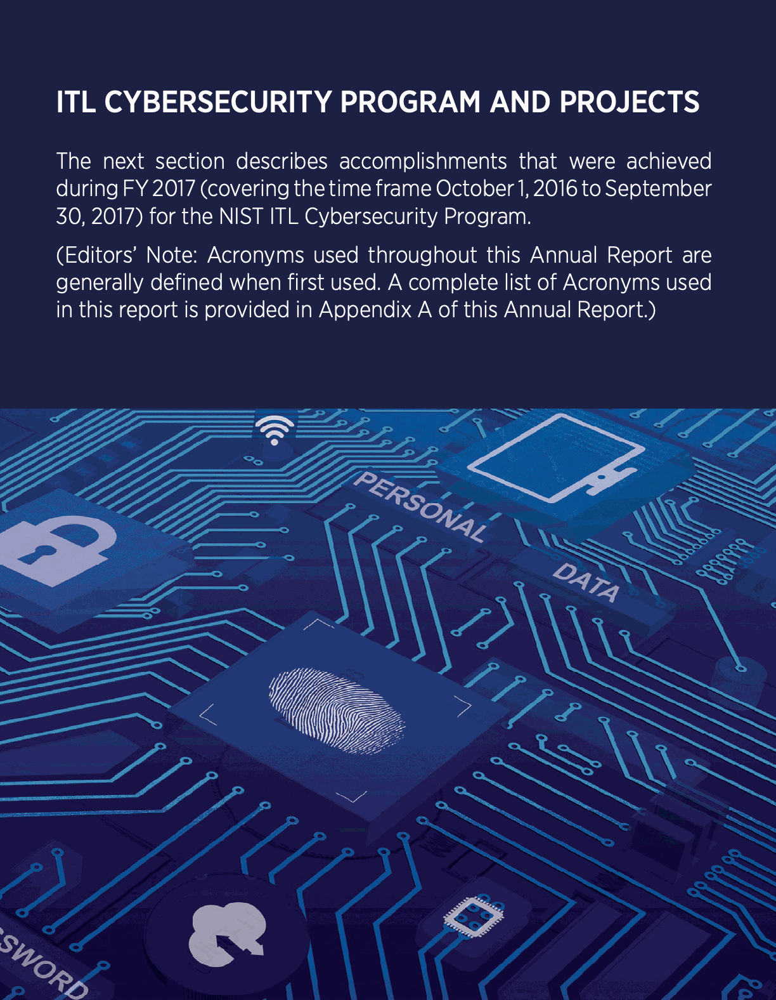
原本PDFの抜粋画像
(BT-SEG); the International Telecommunications
(BT-SEG); 国際電気通信
未レビュー訳ITL INVOLVEMENT WITH
ITLの関与：
未レビュー訳Union - Telecommunication Standardization Sector
連合 - 電気通信標準化部門
未レビュー訳INTERNATIONAL IT SECURITY
国際ITセキュリティ
未レビュー訳(ITU-T); various groups within the Institute of Electrical and Electronics Engineers (IEEE) and the Internet
（ITU-T）；米国電気電子学会（IEEE）内の各種グループ、およびインターネット
未レビュー訳STANDARDS
標準
未レビュー訳Engineering Task Force (IETF); the North American Security Products Organization (NASPO); the Trusted Computing Group (TCG); and Accredited Standards
エンジニアリング・タスク・フォース（IETF）；北米セキュリティ製品機構（NASPO）；Trusted Computing Group（TCG）；ならびに米国公認基準
未レビュー訳ITL Involvement with National and
ITLによる国内および
未レビュー訳Committee X9, Inc. (ASC X9, Inc.) (e.g., X9F – Data
委員会X9（ASC X9, Inc.）（例：X9F – データ
未レビュー訳International IT Security Standards
国際ITセキュリティ標準への関与
未レビュー訳& Information Security Subcommittee). Many of ITL’s
& 情報セキュリティ小委員会）。ITLの多くの
未レビュー訳Work
取り組み
未レビュー訳publications have been the basis for both national and international standards projects.
刊行物は、国内および国際標準化プロジェクトの双方の基礎となってきた。
未レビュー訳Figure 1 shows many of the national and international standards-developing organizations (SDOs) involved in cybersecurity standardization. Focus on ISO and ANSI Standardization (ISO/ Various ITL staf participate in many cybersecurity IEC JTC1 SC27 IT Security) standards’ activities either in leadership positions
原文のみ
ThefollowingparagraphsdiscussITLstafactivities
以下の段落では、ITLスタッフの活動について説明する。
未レビュー訳or as editors and contributors, including the
または編集者および寄稿者として、以下を含む
未レビュー訳in conjunction with the InterNational Committee for
InterNational Committee for と連携して
未レビュー訳American National Standards Institute (ANSI); the
米国国家規格協会（ANSI）；
未レビュー訳Information Technology Standards (INCITS) Technical
情報技術標準（INCITS）技術
未レビュー訳International Organization for Standardization (ISO);
国際標準化機構（ISO）；
未レビュー訳Committee Cybersecurity 1 (CS1), where ITL’s Mr. Sal
サイバーセキュリティ第1委員会（CS1）。同委員会ではITLのサル・
未レビュー訳the International Electrotechnical Commission (IEC);
国際電気標準会議（IEC）；
未レビュー訳Francomacaro serves as the CS1 Vice Chair. CS1 is the
フランコマカロ氏がCS1副議長を務めている。CS1は、
未レビュー訳the Biometric Application Programming Interface
生体認証アプリケーションプログラミングインターフェース
未レビュー訳U.S. counterpart for the ISO/IEC SC27 committee for
ISO/IEC SC27委員会に対する米国のカウンターパートであり、
未レビュー訳(BioAPI) Consortium; the Bluetooth Special Interest
（BioAPI）コンソーシアム；Bluetooth Special Interest
未レビュー訳IT Security.
ITセキュリティを対象とする。
未レビュー訳Group (SIG); the Bluetooth Security Expert Group
グループ（SIG）；Bluetoothセキュリティエキスパートグループ
未レビュー訳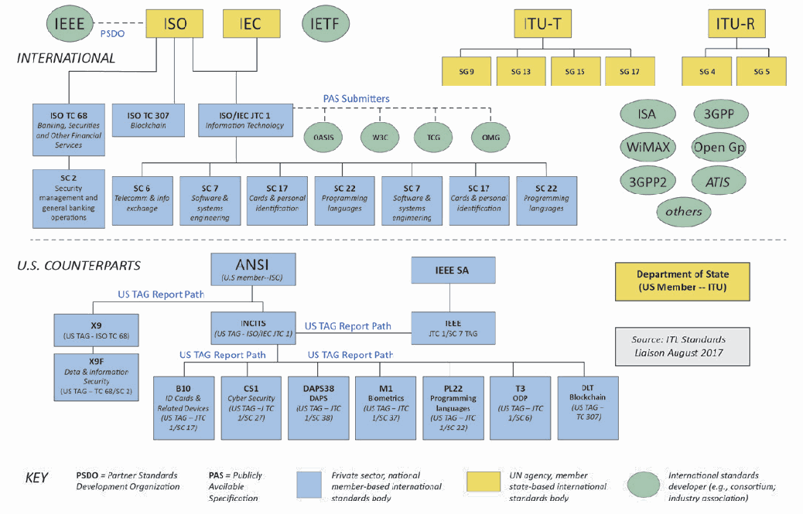
サイバーセキュリティ標準化に関与する国内外の標準開発組織（SDO）と米国側の対応組織、その関係および組織分類を示す図。2017年8月時点。
ISO IEC
ISO、IEC
未レビュー訳PSDO
PSDO
未レビュー訳INTERNATIONAL
国際
未レビュー訳SG9
SG 9
未レビュー訳ISOTC68
ISO TC 68
未レビュー訳1S0/IEC JTCl
ISO/IEC JTC 1
未レビュー訳8onlr.mQS,fc1,1r,nes
銀行、証券
未レビュー訳lnformanonTechnoJoov
情報技術
未レビュー訳endOther F1r-cmN1I Se.-,,,r:.es
およびその他の金融サービス
未レビュー訳SC2 Sccurty SC6 SC7 SC17 SC22 SC7 SC17 SC22 m•n•ae~e"lt •nd ret.comrn&info scfr_y..are& cards&p,morio~ Progror,,mtno SOjttNar,& cc..d.s&p,mono Progromm,ng eeneralbarki"1£ f!XChCJfl;Jf! .J~f'm.J idf!ntif,ronon langucr,f".t system~ idf!r.t,ftcarmn 'onauagf!5 operanons
SC 2：セキュリティ管理および一般銀行業務；SC 6：通信および情報交換；SC 7：ソフトウェアおよびシステムエンジニアリング；SC 17：カードおよび個人識別；SC 22：プログラミング言語；SC 7：ソフトウェアおよびシステムエンジニアリング；SC 17：カードおよび個人識別；SC 22：プログラミング言語
未レビュー訳cng,necr.'nt;;
エンジニアリング
未レビュー訳en~1ncenng
エンジニアリング
未レビュー訳ANSI
ANSI
未レビュー訳U.S. COUNTERPARTS
米国の対応組織
未レビュー訳IEEESA
IEEE SA
未レビュー訳Department ofState
米国国務省
未レビュー訳(U.5metYJbef-·l50}
（米国会員：ISO）
未レビュー訳(USMember -- ITU)
（米国会員：ITU）
未レビュー訳USTAG Report Path
米国TAG報告経路
未レビュー訳INCITS usTAG Report Path IEEE
INCITS／米国TAG報告経路／IEEE
未レビュー訳X9
未レビュー訳(USTAG-150/JECJTC11
（米国TAG - ISO/IEC JTC 1）
未レビュー訳JTC1/SC7TAG
JTC 1/SC 7 TAG
未レビュー訳(USTAG- ISOTC681
（米国TAG - ISO TC 68）
未レビュー訳Source: /Tl Standards liaison August 2017
出典：ITL Standards Liaison（2017年8月）
未レビュー訳USTAGReport Path USTAG Report Path
米国TAG報告経路；米国TAG報告経路
未レビュー訳X9F Doto&1nformooon {USTAGSt."CTC:u6riBJy/SC21 810 CSl DAPS38 Ml Pl22 n DLT IDCards& Cyb~,.Secur,t)' DI\PS Biometrics Programming ODP Blod:c h•in Rt!10tf!d Da,ic.f!S /USTAG-JTC /USTAG-ITC /US TAG- ITC lancu.tre1o /USTAG-ITC (USTAC, /US TAG JTC 1/SC27/ l/5C 38} 1/SC37) (USTAG ITC 1/SC6/ TC307)
X9F：データおよび情報セキュリティ（米国TAG - TC 68/SC 2）；B10：IDカードおよび関連機器（米国TAG - JTC 1/SC 17）；CS1：サイバーセキュリティ（米国TAG - JTC 1/SC 27）；DAPS 38：DAPS（米国TAG - JTC 1/SC 38）；M1：生体認証（米国TAG - JTC 1/SC 37）；PL22：プログラミング言語（米国TAG - JTC 1/SC 22）；T3：ODP（米国TAG - JTC 1/SC 6）；DLT：ブロックチェーン（米国TAG - TC 307）
未レビュー訳1/SC22)
原文のみ
1/SC17/
原文のみ
原文のみ
KEY PSDO =Partn~rStandards PAS- Publicly
凡例：PSDO＝パートナー標準
未レビュー訳Privat.~s~ctor,national
民間部門、国家会員制の
未レビュー訳UNag~ncy;. m~mb~r
国連機関；加盟国
未レビュー訳lnt~rnational standards
国際標準
未レビュー訳Deve,opment Organization Available
開発組織；PAS＝公開
未レビュー訳member-based international
国際
未レビュー訳state-baud internarional
を基盤とする国際
未レビュー訳developer (e.g., consortium;
標準開発者（例：コンソーシアム、
未レビュー訳standards body
標準化団体
未レビュー訳standards body
標準化団体
未レビュー訳industry ossociorion}
業界団体）
未レビュー訳Specification
仕様書
未レビュー訳Figure 1: SDOs involved in Cybersecurity
図1：サイバーセキュリティに関与する標準開発組織（SDO）
未レビュー訳NIST/ITL CYBERSECURITY PROGRAM ANNUAL REPORT 2017
NIST/ITL サイバーセキュリティプログラム 年次報告書 2017
未レビュー訳IT Security Techniques Standards – the NIST Cybersecurity Framework International
原文のみ
Standardizations strategy.
標準化戦略。
未レビュー訳ISO/IEC SC27
ISO/IEC SC27
未レビュー訳The main focus for FY 2017 was the development
2017年度の主な重点は策定
未レビュー訳The ITL staf actively participate with JTC1/SC27
ITLスタッフはJTC1/SC27に積極的に参加しており、
未レビュー訳of a Technical Specifcation based on ISO/IEC 27101 –
ISO/IEC 27101に基づく技術仕様書—
未レビュー訳and its working groups to develop standards for
およびその作業部会とともに標準を策定して、
未レビュー訳Guidelines for developing cybersecurity frameworks.
サイバーセキュリティフレームワーク策定のための指針。
未レビュー訳the protection of information and communications
情報および通信の保護
未レビュー訳This Technical Specifcation (TS) represents the work
この技術仕様書（TS）は、以下の作業を表している
未レビュー訳technology (ICT). This includes generic methods,
技術（ICT）。これには汎用的な手法が含まれ、
未レビュー訳donebyaU.S.grouponNISTCybersecurityFramework
米国のグループによってNISTサイバーセキュリティフレームワークに関して行われたものである
未レビュー訳techniques and guidelines to address both security
セキュリティの両方に対処するための技術およびガイドライン、
未レビュー訳and should serve as a guideline for other organizations
また、他の組織にとっても指針となるべきものであり、
未レビュー訳and privacy aspects, such as:
ならびに以下のようなプライバシーの側面：
未レビュー訳considering creating a new cybersecurity framework.
新たなサイバーセキュリティフレームワークの策定を検討している。
未レビュー訳•Management of information and ICT The NIST staf was also active in the defnition of security; in particular, information security another ISO Technical Specifcation: Cybersecurity management systems, security processes, and Overview and Concepts. This TS should target any security controls and services; user concerned with cybersecurity, but is particularly targeted toward decision makers. It should cover,
•原文のみ
•Cryptographic and other security among other things, what cybersecurity IS and IS NOT, mechanisms, including but not limited to, how it applies to existing standards, and how it fts in mechanisms for protecting the accountability, with the other ISO/IEC 27000 series of standards. availability, integrity and confdentiality of information; The NIST staf will increase participation and efort on these activities during FY 2018.
•原文のみ
•Security management support documentation, including terminology and
•セキュリティ管理支援文書（用語および
未レビュー訳CONTACT:
連絡先：
未レビュー訳guidelines as well as procedures for the
ガイドライン、ならびに手順を含む）
未レビュー訳Mr. Matt Barrett
Matt Barrett氏
未レビュー訳registration of security components;
セキュリティコンポーネントの登録；
未レビュー訳(301) 975-6259
(301) 975-6259
未レビュー訳•Security aspects of identity management, matthew.barrett@nist.gov biometrics and privacy;
•原文のみ
ISO Standardization of Security
セキュリティのISO標準化
未レビュー訳•Conformance assessment, accreditation and auditing requirements in the area of Requirements for Cryptographic information security management systems; Modules and
•原文のみ
ITL is also the principal editor, co-editor, and
ITLは主任エディタ、共同エディタ、および
未レビュー訳•Security evaluation criteria and methodology. contributor to many ISO/IEC documents by the ISO/ The ITL staf also engages in active liaison and IEC International Organization for Standardization.
•原文のみ
collaboration with appropriate bodies to ensure ITL’s contributions to the development of these the proper development and application of SC 27 international standards help to create a strong standards and technical reports in relevant areas. foundation for the adoption of and migration from
原文のみ
currently used national standards. In particular, this
現在使用されている国家規格。特に、この
未レビュー訳CONTACT:
連絡先：
未レビュー訳adoption promotes international harmonization for
採用は、国際的な調和を促進し、
未レビュー訳Mr. Salvatore Francomacaro
サルヴァトーレ・フランコマカロ氏
未レビュー訳the implementation and testing of cryptographic
暗号の実装およびテスト
未レビュー訳(301) 975-6414
(301) 975-6414
未レビュー訳algorithms and modules, while accommodating
アルゴリズムおよびモジュール、ならびに以下に対応しつつ、
未レビュー訳salfra@nist.gov
salfra@nist.gov
未レビュー訳individual country preferences in the choice of approved security functions.
承認されたセキュリティ機能の選択における各国の選好。
未レビュー訳NIST Cybersecurity Framework –
NISTサイバーセキュリティフレームワーク –
未レビュー訳ITL has contributed to the activities of ISO/IEC JTC 1 SC/27, which published ISO/IEC 19790, Security
ITLは、ISO/IEC JTC 1/SC 27の活動に貢献してきた。同委員会はISO/IEC 19790「セキュリティ
未レビュー訳International Standardization
国際標準化
未レビュー訳Requirements for Cryptographic Modules, on March
暗号モジュールの要件、3月に
未レビュー訳The NIST/ITL staf actively participate with 1, 2006, and ISO/IEC 24759, Test Requirements JTC1/SC27 and its working groups to support for Cryptographic Modules, on July 1, 2008. ISO/
原文のみ
ITL CYBERSECURITY PROGRAM AND PROJECTS | FY 2017
ITL サイバーセキュリティプログラムおよびプロジェクト | FY 2017
未レビュー訳IEC 19790 specifes the security requirements The revision of ISO/IEC 19790:2012 addresses for a cryptographic module utilized within a new security areas, such as defned software module security system protecting sensitive information in boundaries, degraded modes of operation, trusted computer and telecommunication systems. These channels, two-factor authentication, software security, eforts bring consistent testing of cryptographic mitigation of fault induction and side-channel attacks, modules to the global community by providing operational self-tests for algorithms, and lifecycle ISO-equivalent standards representing Federal assurance from design to end-of-life. Information Processing Standard (FIPS) 140-2,
原文のみ
Figure 2 is a chart of the ISO/IEC standards, as
図2は、上記で説明したISO/IEC規格を示す図であり、
未レビュー訳Security Requirements for Cryptographic Modules
「暗号モジュールのセキュリティ要件」
未レビュー訳explained above, in which CSD has played a part
その策定にはCSDも関与し、
未レビュー訳and Derived Test Requirements [DTR] for FIPS 140-2,
およびFIPS 140-2用派生試験要件［DTR］
未レビュー訳during the development process.
規格の開発過程で役割を果たした。
未レビュー訳Security Requirements for Cryptographic Modules. Mr. Randall Easter (CSD) continues as the principal editor
「暗号モジュールのセキュリティ要件」。CSDのRandall Easter氏が
未レビュー訳In addition to the aforementioned standards,
前述の規格に加えて、
未レビュー訳for these standards.
これらの規格の主任編集者を引き続き務めている。
未レビュー訳International Standards ISO/IEC 17825, Testing methods for the mitigation of non-invasive attack
国際規格ISO/IEC 17825「暗号モジュールに対する非侵襲型攻撃クラスの緩和試験方法」
未レビュー訳ISO/IEC JTC 1/SC 27 Working Group (WG) 3
ISO/IEC JTC 1/SC 27の作業部会3（WG 3）は、
未レビュー訳classes against cryptographic modules, was published
が公表された
未レビュー訳completed and published revisions, followed with
改訂を完了して公表し、その後
未レビュー訳on January 15, 2016 and ISO/IEC 18367, Cryptographic
2016年1月15日に。また、ISO/IEC 18367「暗号
未レビュー訳updated corrections, of ISO/IEC 19790:2006 and
ISO/IEC 19790:2006および
未レビュー訳algorithms and security mechanisms conformance
アルゴリズムおよびセキュリティ機構の適合性
未レビュー訳ISO/IEC 24759:2008. The second revision of ISO/
ISO/IEC 24759:2008に訂正を反映した。ISO/IEC 19790の
未レビュー訳testing, was published on December 15, 2016. Mr.
試験」は2016年12月15日に公表された。Easter氏は
未レビュー訳IEC 19790 was published on August 15, 2012. The
第2版が2012年8月15日に公表された。ISO/IEC 24759の
未レビュー訳Easter was the editor of both standards.
両規格の編集者を務めた。
未レビュー訳second revision of ISO/IEC 24759 was published on January 31, 2014 and the third revision was published
第2版は2014年1月31日に公表され、第3版は
未レビュー訳International Standard ISO/IEC 17825 specifes
国際規格ISO/IEC 17825は、
未レビュー訳March 2017. Both ISO/IEC standards are available
2017年3月に公表された。両ISO/IEC規格は入手可能である
未レビュー訳the non-invasive attack mitigation test metrics
非侵襲型攻撃の緩和に関する試験指標を定めている。
未レビュー訳through the American National Standards Institute
米国国家規格協会（ANSI）から
未レビュー訳for determining conformance to the requirements
その要件への適合性を判定する。
未レビュー訳(ANSI) (see: http://webstore.ansi.org/RecordDetail.
（参照：http://webstore.ansi.org/RecordDetail.
未レビュー訳specifed in ISO/IEC 19790 for Security Levels 3 and
対象はISO/IEC 19790のセキュリティレベル3および4である。
未レビュー訳aspx?sku=ISO%2FIEC+19790%3A2012). The two
aspx?sku=ISO%2FIEC+19790%3A2012）。両規格の改訂版は
未レビュー訳4.The test metrics are associated with the security
4.試験指標は、ISO/IEC 19790に規定される
未レビュー訳ISO/IEC revisions were developed with international
国際的な支援を受け、
未レビュー訳functions specifed in ISO/IEC 19790. Testing will
セキュリティ機能に関連する。試験は
未レビュー訳support and the collaboration of governments,
各国政府、
未レビュー訳be conducted at the defned boundary of the
暗号モジュールの規定境界で実施し、
未レビュー訳industry and academia.
産業界および学界の協力を得て策定された。
未レビュー訳cryptographic module and using Input/Output (I/O) available at the defned boundary.
その境界で利用可能な入力／出力（I/O）を用いる。
未レビュー訳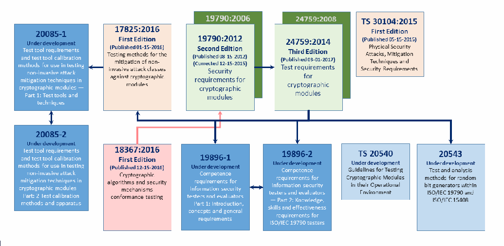
図2：暗号モジュール試験に関するISO規格の関係図。上段には、開発中のISO/IEC 20085-1（非侵襲型攻撃緩和技術の試験ツール・較正方法、第1部：試験ツールと手法）、ISO/IEC 17825:2016（第1版、2016年1月15日公表。暗号モジュールに対する非侵襲型攻撃クラスの緩和試験方法）、ISO/IEC 19790:2012（第2版、2012年8月15日公表、2015年12月15日訂正。暗号モジュールのセキュリティ要件）、ISO/IEC 24759:2014（第3版、2017年3月1日公表。暗号モジュールの試験要件）、およびTS 30104:2015（第1版、2015年5月15日公表。物理的セキュリティ攻撃、緩和技術およびセキュリティ要件）が配置される。下段には、開発中のISO/IEC 20085-2（第2部：試験較正の方法および装置）、ISO/IEC 18367:2016（第1版、2016年12月15日公表。暗号アルゴリズムおよびセキュリティ機構の適合性試験）、ISO/IEC 19896-1（情報セキュリティ試験者・評価者の力量要件：導入、概念および一般要件）、ISO/IEC 19896-2（同要件：知識、技能および有効性要件）、開発中のTS 20540（運用環境における暗号モジュールの試験指針）、および開発中のISO/IEC 20543（ISO/IEC 19790およびISO/IEC 15408に関連する乱数生成器の試験・解析方法）が示される。旧版ISO/IEC 19790:2006および24759:2008も背景として表示され、矢印は規格間の関係を示す。
TS30104:2015
TS 30104:2015
未レビュー訳17825:2016
17825:2016
未レビュー訳First Edition
第1版
未レビュー訳19790:2012
19790:2012
未レビュー訳First Edition
第1版
未レビュー訳24759:2014 (Published 05-15-2015)
24759:2014（第3版、2017年3月1日公表）
未レビュー訳maTentedhnsootttdneos-soitntlofvooarrlseiquvuseceiarleaiimtbntraetacentksittosinng Ti(nePvsmutabisinltiigisvghemaetadeitottha0noc1kdo-1sf5cn-lf2oao0snrs1et6hs)e ((PCSuobrelricescShoteeneddcdu01E82ri-d-t11yi55t--i2o200n1125)) (TPeuTsblthisriheredqduE0ird3e-i0mt1io-e2nn0t1s7) SeAcPtuTtharecyictyshkinscR,aiqeMluqSeuitesiicgrueaamnrtiditeoynnts
原文のみ
for
のための
未レビュー訳mitigation techniques in against cryptograph ic requirements for modules
原文のみ
cryptographic
暗号
未レビュー訳cryptographic modules -
暗号モジュール—
未レビュー訳cryptographic
暗号
未レビュー訳modules
モジュール
未レビュー訳Part 1:Test tools and
第1部：試験ツールおよび
未レビュー訳modules
モジュール
未レビュー訳techniques
手法
未レビュー訳18367:2016
18367:2016
未レビュー訳Testtool requirements
試験ツール要件
未レビュー訳TS20540
TS 20540
未レビュー訳20543
20543
未レビュー訳and testtool calibration
および試験ツールの較正
未レビュー訳First Edition
第1版
未レビュー訳Competence GUuinddeelirndeesvefloorpmTeesntting UTnedsetradnedvealnoaplmyseinst
原文のみ
methods for use intesting (Published 12-15-2016) cmrPyiaptnirtogto:nagt-2riioanTpnvheasistcteivccehamnlioaibqtdrtuuaaetclisekosni-n alcgoonrfCiomtrhryemmpcatshonagacnneradipsmthseiesscctuirngity teisntrfeeorqrsCmuoiaarmetnimpdoenetenevntssaeclceuuafrotiortrys teisntrfeeorqrsmuiaaretnimdoneenvtssaelcuuafrotiortrys CriynptthoEegnirrvaipOrhopincemraeMtnoitodnualles bm1iteStg0he/oIndEesCra1ft9oo7rr9sr0awndaitnohdmin - Part 1:Introduction, - Part 2: Knowledge,
原文のみ
1S0/IEC15408
ISO/IEC 15408
未レビュー訳methods and apparatus
試験較正の方法および装置
未レビュー訳skills and effectiveness
知識、技能および有効性
未レビュー訳concepts and general
導入、概念および一般
未レビュー訳requirements for
要件
未レビュー訳requirements
要件
未レビュー訳1S0/IEC19790 testers
ISO/IEC 19790の試験者
未レビュー訳Figure 2: Cryptographic Module Testing – ISO Standards
図2：暗号モジュール試験—ISO規格
未レビュー訳NIST/ITL CYBERSECURITY PROGRAM ANNUAL REPORT 2017
NIST/ITL サイバーセキュリティプログラム年次報告書 2017
未レビュー訳INCITS 499-2013, was published in FY 2013
INCITS 499-2013は2013年度に公表され、
未レビュー訳International Standard ISO/IEC 18367 describes
国際規格ISO/IEC 18367は、
未レビュー訳and is currently under revision.
現在改訂中である。
未レビュー訳conformance testing methods for cryptographic algorithms and security mechanisms. Conformance
暗号アルゴリズムおよびセキュリティ機構の適合性試験方法を定めている。適合性
未レビュー訳•Next Generation Access Control – Generic
•次世代アクセス制御—汎用
未レビュー訳testing assures that an implementation of a
試験では、暗号アルゴリズムまたは
未レビュー訳Operations & Abstract Data Structures
操作および抽象データ構造
未レビュー訳cryptographic algorithm or security mechanism is
セキュリティ機構の実装が、
未レビュー訳(NGAC-GOADS). Serban Gavrila, ITL, is the
（NGAC-GOADS）。ITLのSerban Gavrila氏が
未レビュー訳correct whether implemented in hardware, software
ハードウェア、ソフトウェア、
未レビュー訳editor. The project is assigned project number
編集者を務める。本プロジェクトにはプロジェクト番号
未レビュー訳or frmware. It also confrms that it runs correctly
またはファームウェアで実装されていても正しく動作することを確認する。また、
未レビュー訳2195-D, and the document was published
2195-Dが割り当てられ、文書は
未レビュー訳in a specifc operating environment. Testing may
特定の動作環境で正しく動くことも確認する。試験は
未レビュー訳during FY 2016.
2016年度に公表された。
未レビュー訳consist of known-answer or Monte Carlo testing, or a combination of test methods. Testing may be
既知解試験、モンテカルロ試験、または複数の試験方法を組み合わせて実施する。試験は
未レビュー訳•Next Generation Access Control –
•次世代アクセス制御—
未レビュー訳performed on the actual implementation or modeled
実際の実装を対象に行うか、モデル化した実装を
未レビュー訳Implementation Requirements, Protocols
実装要件、プロトコル
未レビュー訳in a simulation environment.
シミュレーション環境で試験する。
未レビュー訳and API Defnitions (NGAC-IRPADS). Project number 2193-D has been assigned. This part
およびAPI定義（NGAC-IRPADS）。プロジェクト番号2193-Dが割り当てられた。本パートは
未レビュー訳The test methods used by testing laboratories to
試験所が、暗号モジュールの適合性確認に用いる試験方法は、
未レビュー訳will be published in FY 2018.
2018年度に公表される予定である。
未レビュー訳test whether the cryptographic module conforms to the requirements specifed in ISO/IEC 19790 and the
モジュールがISO/IEC 19790に定められた要件および
未レビュー訳CONTACTS:
連絡先：
未レビュー訳test metrics specifed in this International Standard
本国際規格に定められた試験指標に適合するかを判定する。
未レビュー訳Mr. David Ferraiolo
David Ferraiolo氏
未レビュー訳Mr. Serban Gavrila
Serban Gavrila氏
未レビュー訳for each of the associated security functions specifed
ISO/IEC 19790に規定された関連セキュリティ機能ごとに
未レビュー訳(301) 975-3046
(301) 975-3046
未レビュー訳(301) 975-4343
(301) 975-4343
未レビュー訳in ISO/IEC 19790 are specifed in ISO/IEC 24759. The
ISO/IEC 24759に規定されている。
未レビュー訳david.ferraiolo@nist.gov serban.gavrila@nist.gov
david.ferraiolo@nist.gov serban.gavrila@nist.gov
未レビュー訳test approach employed in this International Standard is an efcient “push-button” approach: the tests are technically sound, repeatable and have moderate Identity Management Devices and costs.
原文のみ
Standards
原文のみ
FOR MORE INFORMATION, SEE:
詳細については、以下を参照：
未レビュー訳In the area of Identity Tokens and Secure
アイデンティティトークンおよびセキュア
未レビュー訳https://csrc.nist.gov/Projects/Cryptographic-Mod-
https://csrc.nist.gov/Projects/Cryptographic-Mod-
未レビュー訳elements, ITL has provided the technical and editorial
エレメントの分野で、ITLは技術面および編集面の支援を提供した。
未レビュー訳ule-Validation-Program
ule-Validation-Program
未レビュー訳support of Mr. Ketan Mehta (CSD) in the development and amendment of American National Standard
支援先はCSDのKetan Mehta氏で、対象は米国国家規格
未レビュー訳CONTACT:
連絡先：
未レビュー訳(ANS) 504, Generic Identity Command Set (GICS).
（ANS）504「Generic Identity Command Set（GICS）」の策定および改訂である。
未レビュー訳Mr. Randall J. Easter
Randall J. Easter 氏
未レビュー訳GICS enables Personal Identity Verifcation (PIV),
GICSにより、個人識別検証（PIV）、
未レビュー訳(240) 361-8777
(240) 361-8777
未レビュー訳PIV-Interoperable (PIV-I) and Common Access Card
PIV相互運用可能（PIV-I）および共通アクセスカード
未レビュー訳randall.easter@nist.gov
randall.easter@nist.gov
未レビュー訳(CAC) applications, and others, to be built from a single platform. GICS defnes an open platform where identity applications can be instantiated, deployed,
（CAC）などのアプリケーションを単一のプラットフォームから構築できる。GICSは、アイデンティティアプリケーションをインスタンス化し、展開し、
未レビュー訳Next Generation Access Control
次世代アクセス制御
未レビュー訳and used in an interoperable way between the
認証情報の発行者と利用者の間で相互運用可能な形で利用できるオープンプラットフォームを定義する。
未レビュー訳Standards
標準
未レビュー訳credential issuers and credential users that aligns with the last revision of the NIST SP 800-73-4, Interfaces
これは、NIST SP 800-73-4「個人識別検証（PIV）用インターフェース」の最新改訂版と整合する
未レビュー訳ITLhascontinuedthedevelopmentofanadvanced
ITLは、高度な
未レビュー訳for Personal Identity Verifcation, (PIV) specifcations.
仕様である。
未レビュー訳Attribute Based Access Control (ABAC) framework called the Policy Machine, which was designed to be
Policy Machineと呼ばれる属性ベースアクセス制御（ABAC）フレームワークの開発を継続してきた。この枠組みは、策定中のANSI/INCITS規格「次世代アクセス制御」（NGAC）に沿うよう設計されている。
未レビュー訳During FY 2017, the ITL staf:
2017年度、ITL職員は次の業務を実施した。
未レビュー訳in alignment with an emerging ANSI/INCITS standard under the title of “Next Generation Access Control” • Contributed to the publication of several (NGAC).
原文のみ
revisions of the ISO/IEC 7816 family of standards (Identifcation cards - Integrated
ISO/IEC 7816規格群（識別カード—集積回路カード）の複数の改訂版の公表に貢献した。
未レビュー訳The NIST Policy Machine research and
NIST Policy Machineの研究および
未レビュー訳circuit cards), which are all relevant to FIPS
集積回路カード）は、すべてFIPS
未レビュー訳development efort has resulted in three ongoing
開発の取り組みにより、進行中の3つの
未レビュー訳201, Personal Identity Verifcation (PIV)
201「連邦職員および請負業者の個人識別検証（PIV）」
未レビュー訳national standards projects in CS1 that are in the early
CS1における国家標準プロジェクトを生み出した。これらは初期
未レビュー訳of Federal Employees and Contractors,
に関する
未レビュー訳stages of development. They include:
の開発段階にある。これらのプロジェクトは次のとおりである。
未レビュー訳specifcations;
仕様に関連している。
未レビュー訳•Next Generation Access Control – Functional Architecture (NGAC-FA). Project number
•次世代アクセス制御—機能アーキテクチャ（NGAC-FA）。プロジェクト番号
未レビュー訳ITL CYBERSECURITY PROGRAM AND PROJECTS | FY 2017
ITL サイバーセキュリティプログラムおよびプロジェクト | FY 2017
未レビュー訳18013) for an International Mobile Driver License (DL).
18013）の策定に参加している。
未レビュー訳•Pursued the standardization and harmonization of identity standards that were ITL gathered and discussed functional and security requirements for Mobile DLs, and is now developing developed in the U.S.; two models: ofine and online. Once these models are
•原文のみ
•Developed requirements and identifed fully defned, ITL plans to write technical specifcations standards gaps for Mobile Driving Licenses; for each model.
•原文のみ
•Actively participated in the development of a
•モバイル運転免許証の規格
未レビュー訳CONTACTS:
連絡先:
未レビュー訳standards for Mobile Driving Licenses;
策定に積極的に参加した。
未レビュー訳Mr. Salvatore Francomacaro Mr. Ketan Mehta (301) 975-6414
Salvatore Francomacaro 氏 Ketan Mehta 氏 (301) 975-6414
未レビュー訳(301) 975-8405
(301) 975-8405
未レビュー訳•Enhanced the Machine-Readable Travel salvatore.francomacaro@nist.gov ketan.mehta@nist.gov Documents (ePassport) data model to address privacy and security concerns; and
•原文のみ
•Contributed to the development of a standard Identity Management International for privacy-enhanced security protocols for Standardization with ISO/IEC SC27 secure elements. During FY 2017, NIST ACD’s Trusted Identities The ITL staf will continue to actively support Group (TIG) collaborated with representatives from
•原文のみ
relevant ID management standard initiatives, such as
以下のような関連するID管理標準化の取り組み：
未レビュー訳the United Kingdom (U.K.) Cabinet Ofce and the
英国（U.K.）内閣府および
未レビュー訳ISO/IEC 19286, Integrated circuit card (ICC) Privacy-
ISO/IEC 19286「集積回路カード（ICC）—プライバシー
未レビュー訳Canadian Treasury Board to identify commonalities
カナダ財務委員会と共通点を特定し、
未レビュー訳enhancing protocols and services, and ISO/IEC 18328,
強化プロトコルおよびサービス」、ならびにISO/IEC 18328「
未レビュー訳and work to align the digital identity standards and
各国デジタルID標準の整合を図るとともに、
未レビュー訳ICC managed devices.
ICC管理デバイス」。
未レビュー訳requirements among the respective national digital
各国のデジタルIDプログラム間の要件
未レビュー訳Web Authentication/FIDO: ITL participates in the identity programs, particularly SP 800-63-3 for development of online authentication specifcations. the U.S. and the U.K. Good Practice Guides (GPG). These specifcations are developed by the Fast The goal in these eforts is to promote a vibrant Identities Online (FIDO) alliance, which is a consortium market of internationally viable identity services and of private organizations. ITL also participates in advance the secure exchange of digital identities the development of similar specifcations (called while protecting the privacy of the subjects of those WebAuthn)forwebbrowsersthatarebeingdeveloped identities for cross-border transactions and mutual by the World Wide Web Consortium (W3C). Both the recognition. While primarily focused on developing a FIDO and WebAuthn specifcations enable relying framework that would facilitate the establishment of parties to create cryptographic tokens on the end- a common set of requirements and standards across user’s device and subsequently use this cryptographic the three national programs, there was increasing tokentoauthenticatetheenduser.Thesespecifcations interest from other national programs and industry provide multi-factor authentication directives, and in the work products and methodologies developed they are designed to mitigate common threat vectors by this collaborative work. As a result, the group for Internet communications, such as phishing, man- provided this work to the international community as
原文のみ
a series of aligned joint contributions for international
国際標準化に向けた一連の整合済み共同提案として
未レビュー訳in-the-middle, and replay attacks.
中間者攻撃およびリプレイ攻撃。
未レビュー訳standardization.
国際標準化に向けて。
未レビュー訳ePassport: ITL participates in the development of an ISO/IEC standard (ISO/IEC 7501) for electronic The TIG contributions, in collaboration with their Passports. Specifcally, ITL is contributing to the British and Canadian partners, were focused on development of passport data structure and its access establishing a synchronized core set of international control. ITL reviews and comments on authentication identity management standards within the scope of protocols that are developed to ensure strong user the activities of ISO/IEC JTC 1/SC 27/WG 5, which authentication and to protect personally identifable oversees the development of international standards
原文のみ
for identity management and privacy. The team
アイデンティティ管理とプライバシーに関する標準の策定を目指した。チームは
未レビュー訳passport data.
パスポートデータ。
未レビュー訳provided contributions to synchronize and align the
次のISO/IEC規格の同期と整合に貢献した。
未レビュー訳Mobile Driver License: ITL is also participating
モバイル運転免許証：ITLも
未レビュー訳following ISO/IEC standards with the U.K., Canadian,
英国、カナダ、
未レビュー訳17 in the development of an ISO standard (ISO/IEC
国際モバイル運転免許証（DL）用のISO規格（ISO/IEC
未レビュー訳and U.S. harmonization work:
および米国との調和作業に合わせて。
未レビュー訳NIST/ITL CYBERSECURITY PROGRAM ANNUAL REPORT 2017
NIST/ITL サイバーセキュリティプログラム 年次報告書 2017
未レビュー訳•ISO/IEC 29115 Information Technology — blockchain technologies and architectures. NIST has Security techniques — Entity authentication been participating in these activities via the national assurance framework – a major revision is mirror committee within the InterNational Committee required to align with SP 800-63 B and GPG for Information Technology Standards (INCITS). ISO/ TC 307 will meet in November 2017, where the reports 44; on these topics will be reviewed and new work will be
•原文のみ
•ISO/IEC 29003 Information technology — established. Security techniques — Identity proofng;
•原文のみ
CONTACTS:
連絡先：
未レビュー訳•ISO 31000 Risk management framework Mr. Dylan Yaga Dr. Lily Chen applied to identity-related risk, a new work (301)-975-6004 (301) 975-6974 project for a new international standard that dylan.yaga@nist.gov lily.chen@nist.gov will be aligned with the risk management section of NIST SP 800-63-3; Internet of Things (IoT)
•原文のみ
•Identity related standards landscape, a new work project to establish a clear and aligned NIST/ITL has contributed to standardization landscape for ISO/IEC identity standards and activities for the IoT architecture and vocabulary administrative processes and to establish rules during FY 2017 in three primary areas: for how the development and maintenance
•原文のみ
•The Industrial Internet Consortium (IIC);
•インダストリアル・インターネット・コンソーシアム（IIC）；
未レビュー訳of an aligned set of identity management standards could be coordinated and managed
アイデンティティ管理標準群を整合させ、ISO/IEC WG5内で調整・管理できるようにする
未レビュー訳•ISO/IEC SC41, Internet of Things and related
•ISO/IEC SC41、モノのインターネットおよび関連
未レビュー訳within ISO/IEC WG5; and
ISO/IEC WG5内において；および
未レビュー訳technologies; and
技術；および
未レビュー訳•Identity assurance framework, a new work
•アイデンティティ保証の枠組み、新たな作業
未レビュー訳•IEEE P2413, Standard for an Architectural
•IEEE P2413「IoTアーキテクチャ枠組みに関する規格」
未レビュー訳project for a new international standard that
新たな国際規格を策定するプロジェクトであり、
未レビュー訳Framework for the Internet of Things (IoT).
モノのインターネット（IoT）のアーキテクチャ枠組みを扱う。
未レビュー訳will be aligned with the identity assurance components of SP 800-63A and the U.K. GPG
SP 800-63Aおよび英国GPG
未レビュー訳Focus was on the architecture, vocabulary, and
焦点はアーキテクチャ、語彙、および
未レビュー訳45.
45のアイデンティティ保証要素と整合させる。
未レビュー訳recently, edge computing. In addition to working on standards related to these areas, NIST staf member
最近ではエッジコンピューティングにも及ぶ。これらの分野の標準化作業に加えて、NIST職員の
未レビュー訳CONTACT:
連絡先:
未レビュー訳Eric Simmon is the chair of the IIC commenting
Eric Simmon氏は、IICの意見募集作業部会で
未レビュー訳Mr. David Temoshok
David Temoshok氏
未レビュー訳working group for reviewing the IEEE p2413 draft
IEEE P2413草案をレビューする
未レビュー訳(202) 482-5475
(202) 482-5475
未レビュー訳standard and is the liaison between ISO/IEC SC41-
作業部会の議長を務め、ISO/IEC SC41と
未レビュー訳david.temoshok@nist.gov
david.temoshok@nist.gov
未レビュー訳ISO/IEC SC38 (cloud computing).
ISO/IEC SC38（クラウドコンピューティング）との連絡役も務めている。
未レビュー訳The NIST staf has also participated to the activities
NIST職員は、IoTセキュリティに関して
未レビュー訳Blockchains
ブロックチェーン
未レビュー訳in ISO/IEC SC27 relative to IoT Security. This activity will be further developed during FY 2018.
ISO/IEC SC27の活動にも参加してきた。この活動はFY 2018中にさらに進められる予定である。
未レビュー訳During FY 2017, NIST participated in standards activities exploring blockchain technologies,
FY 2017において、NISTはブロックチェーン技術を探求する標準化活動に参加し、
未レビュー訳CONTACTS:
連絡先:
未レビュー訳architectures, and use cases. These included
アーキテクチャおよびユースケース。これらには次の活動が含まれる。
未レビュー訳Mr. Eric Simmon
エリック・シモン氏
未レビュー訳Ms. Katerina Megas
カテリーナ・メガス氏
未レビュー訳participation in a new blockchain study group
新たなブロックチェーン研究グループへの参加であり、
未レビュー訳(301) 975-3956
(301) 975-3956
未レビュー訳(202) 441-1147
(202) 441-1147
未レビュー訳sponsored by the American Standards Committee
米国規格委員会が後援する
未レビュー訳eric.simmon@nist.gov katerina.megas@nist.gov
eric.simmon@nist.gov katerina.megas@nist.gov
未レビュー訳X9, the fnancial services committee of the American National Standards Institute (ANSI), and continued work in the International Standards Organization Cloud Computing Standards (ISO) Technical Committee (TC) for Blockchains
原文のみ
Developed Within ISO/IEC JTC 1
ISO/IEC JTC 1内で策定
未レビュー訳and Distributed Ledger Technologies (ISO/TC 307). Established in 2016, the initial objectives of ISO/TC 307
および分散型台帳技術（ISO/TC 307）。2016年に設立されたISO/TC 307の初期の目的には、
未レビュー訳ITL is actively engaged with several key players
ITLは、複数の主要な関係者と積極的に連携しており、
未レビュー訳include defning key terms and concepts, exploring
主要な用語や概念の定義、探求が含まれ、
未レビュー訳in the Federal Government which look broadly at
連邦政府内で、以下を幅広く検討しており、
未レビュー訳reference architectures, investigating use cases, and
参照アーキテクチャ、ユースケースの調査、および
未レビュー訳questions of IT standards, how to infuence them, and 18
IT標準に関する課題、それらに影響を与える方法、および 18
未レビュー訳identifying identity and privacy implications within
内部におけるアイデンティティおよびプライバシーへの影響の特定
未レビュー訳ITL CYBERSECURITY PROGRAM AND PROJECTS | FY 2017
ITLサイバーセキュリティプログラムおよびプロジェクト | FY 2017
未レビュー訳how to use them. These participants include the Ofce of ISO/IEC 19941, Information technology–Cloud of Management and Budget (OMB) E-Gov Ofce and computing–Interoperability and portability, which Ofce of Information and Regulatory Afairs, the is expected to be published by the end of 2017. federal Chief Information Ofcers (CIO) Council, the The document is intended to establish a common Interagency Council on Standards Policy (ICSP), and understanding of cloud computing interoperability the General Services Administration (GSA) Ofce of and portability. Both interoperability and portability Government-wide Policy. Our goal in chairing the ofer more choices to cloud users by limiting the Standards Working Group is to solicit requirements efects of being locked-in to any cloud service or cloud from federal agencies, fnd the appropriate voluntary service provider. ISO/IEC 19941 joins many published standards committee that is addressing these cloud computing standards that were developed from requirements and encourage participation to ensure NIST publications, such as: the government requirements are being adequately
原文のみ
•ISO/IEC 17788, Information technology --
•ISO/IEC 17788、情報技術 --
未レビュー訳met. Where standards are needed, ITL works
満たされるようにすることである。標準が必要とされる場合、ITLは
未レビュー訳Cloud computing -- Overview and vocabulary;
クラウドコンピューティング -- 概要および用語;
未レビュー訳closely with U.S. industry, standards development organizations, other government agencies, and
米国の産業界、標準化団体、他の政府機関、および
未レビュー訳•ISO/IEC 17789, Information technology --
•ISO/IEC 17789、情報技術 --
未レビュー訳leaders in the global standards community to develop
グローバルな標準化コミュニティの主導者たちと策定すること
未レビュー訳Cloud computing -- Reference architecture;
クラウドコンピューティング -- 参照アーキテクチャ；
未レビュー訳standards that will support secure cloud computing.
安全なクラウドコンピューティングを支える標準。
未レビュー訳and,
および、
未レビュー訳ITL participation helps to ensure the alignment
ITLの参加は、整合性の確保に役立っている
未レビュー訳•ISO/IEC 19086, Information technology --
•ISO/IEC 19086、情報技術 --
未レビュー訳of NIST standards with those of ISO/IEC JTC 1 sub-
NIST標準とISO/IEC JTC 1の分科
未レビュー訳Cloud computing -- Service level agreement
クラウドコンピューティング -- サービスレベル合意
未レビュー訳committees, such as SC 27 IT Security techniques,
SC 27 ITセキュリティ技術などの委員会、
未レビュー訳(SLA) framework.
（SLA）フレームワーク。
未レビュー訳SC 38 Cloud Computing and Distributed Platforms, and their U.S. counterparts, ANSI/ INCITS Cyber CONTACT: Security 1 (CS 1) and Cloud 38. The large number of
原文のみ
Ms. Annie Sokol
アニー・ソコル（Ms. Annie Sokol）
未レビュー訳standards being developed in SC 27 covering areas
標準は、以下のような分野をカバーしている：
未レビュー訳(301) 975-2006
(301) 975-2006
未レビュー訳such as security, cryptography, privacy, supply chain,
セキュリティ、暗号技術、プライバシー、サプライチェーン、
未レビュー訳annie.sokol@nist.gov
annie.sokol@nist.gov
未レビュー訳personally identifable information (PII) processing or virtualization security, harmonize with many cloud computing standards being developed by these
個人識別情報（PII）の処理や仮想化セキュリティは、これらによって策定が進められている多くのクラウドコンピューティング標準と整合しており、
未レビュー訳RISK MANAGEMENT
リスクマネジメント
未レビュー訳subcommittees.
分科会。
未レビュー訳The focus of implementing cloud computing is even more critical since the White House released Framework for Improving Critical an IT Modernization Report in September 2017 that Infrastructure Cybersecurity includes recommendations for agencies to take
原文のみ
(Cybersecurity Framework)
（サイバーセキュリティフレームワーク）
未レビュー訳steps to secure and modernize federal IT networks. Those steps for modernizing and consolidating
連邦政府のITネットワークを保護し近代化するための措置。近代化および統合のためのそれらの措置は、
未レビュー訳Recognizing that the national and economic
国家および経済の
未レビュー訳networks point to cloud computing, modernization of
ネットワークがクラウドコンピューティング、および近代化を指し示している
未レビュー訳security of the United States depends on the reliable
米国の安全保障が信頼性の高い
未レビュー訳government-hosted applications, and better security
政府がホストするアプリケーション、およびより優れたセキュリティ
未レビュー訳functioning of its critical infrastructure, the President
その重要インフラの機能に関して、大統領は
未レビュー訳for legacy systems. Federal modernization eforts,
レガシーシステム向け。連邦政府の近代化の取り組み、
未レビュー訳issued Executive Order (EO) 13636: Improving Critical
大統領令（EO）13636「重要インフラの
未レビュー訳such as those connected with the Modernizing
例えば「Modernizing
未レビュー訳Infrastructure Cybersecurity, in February of 2013. This
サイバーセキュリティの向上」を2013年2月に発令した。この
未レビュー訳Government Technology Act, may further enable
Government Technology Act」（政府技術近代化法）に関連するものなどは、さらに可能にする可能性がある
未レビュー訳EO directed NIST to work with stakeholders to develop
EOは、ステークホルダーと協力して策定するようNISTに指示した
未レビュー訳agencies to accelerate investments in cloud and other
各機関がクラウドおよびその他の
未レビュー訳a voluntary framework – based on existing standards,
自発的なフレームワーク – 既存の標準、
未レビュー訳new technologies.
新技術への投資を加速すること。
未レビュー訳guidelines, and practices − for reducing cybersecurity risks to critical infrastructures.
ガイドライン、およびプラクティスに基づく − 重要インフラに対するサイバーセキュリティリスクを低減するためのもの。
未レビュー訳Ms. Annie Sokol is a member of ITL’s Cloud Computing team and is the CSD representative in
Annie Sokol氏はITLのクラウドコンピューティングチームのメンバーであり、
未レビュー訳The Cybersecurity Framework that was
策定されたサイバーセキュリティフレームワークは、
未レビュー訳the standards development program. ITL provides
標準開発プログラムにおけるCSD代表を務めている。ITLは、
未レビュー訳developed provides a prioritized, fexible, repeatable,
優先順位付けされた、柔軟で、再現性のある、
未レビュー訳technical and editorial representation in the
における技術的および編集上の代表
未レビュー訳performance-based, and cost-efective approach to
に対する成果重視かつ費用対効果の高いアプローチ
未レビュー訳19 development of national and international standards help critical infrastructure owners and operators—as
原文のみ
in both SC 27 and SC 38. Ms. Sokol is the co-editor
SC 27とSC 38の双方において。ソコル氏は共同編集者であり、
未レビュー訳NIST/ITL CYBERSECURITY PROGRAM ANNUAL REPORT 2017
NIST/ITL サイバーセキュリティプログラム 年次報告書 2017
未レビュー訳the Framework;
フレームワーク；
未レビュー訳well as other interested entities—identify, assess, and manage cybersecurity-related risk while protecting
ならびにその他の関心を持つ組織が—保護しつつサイバーセキュリティ関連のリスクを特定、評価、管理する
未レビュー訳•Consulting with international organizations
•国際機関との協議
未レビュー訳business confdentiality, individual privacy, and civil
企業の機密性、個人のプライバシー、および市民的
未レビュー訳and standards bodies to demonstrate and
および標準化団体と連携して実証し、
未レビュー訳liberties.
自由。
未レビュー訳ensure continued alignment with voluntary international standards; and
自発的な国際標準との継続的な整合性を確保すること；および
未レビュー訳In FY 2017, NIST continued to work with a diverse stakeholder community to support the use and
FY 2017において、NISTは多様なステークホルダーコミュニティと連携を継続し、利用と
未レビュー訳•Working with both industry and regulatory
•産業界および規制の双方の
未レビュー訳understanding of the Cybersecurity Framework. This
サイバーセキュリティフレームワークの理解を支援した。この
未レビュー訳organizations to apply the Framework in
組織と連携してフレームワークを適用すること
未レビュー訳process included:
プロセスには以下が含まれていました：
未レビュー訳ways that bring efciencies to the regulatory process.
規制プロセスに効率化をもたらす方法。
未レビュー訳•Publication of a draft Framework 1.1 to clarify, refne, and enhance the Cybersecurity Since the release of the Framework, NIST’s primary Framework, drawing upon comments received goal has been to raise awareness of the Framework from a public review process launched in and encourage its use as a tool to help industry January 2017; sectors and organizations manage cybersecurity risks. NIST has strengthened its collaboration with critical
•2017年1月に開始されたパブリックレビュープロセスから寄せられたコメントを踏まえ、サイバーセキュリティフレームワークを明確化、洗練、強化するためのフレームワーク1.1ドラフトの公開；フレームワークの公開以来、NISTの主な目標は、フレームワークの認知度を高め、業界セクターや組織がサイバーセキュリティリスクを管理するのを支援するツールとしての利用を促進することであった。NISTは、重要
未レビュー訳•Conducting a public workshop at NIST in Gaithersburg, MD to gather input about the infrastructure owners and operators, industry leaders, current use of the Framework and feedback government partners, and other stakeholders— building on previous years’ interactions that were regarding the initial public draft; crucial to the Framework’s development.
•フレームワークの現在の利用状況に関するインプットや、初期パブリックドラフトに関するフィードバックを収集するための、メリーランド州ゲイザースバーグのNISTにおける公開ワークショップの開催；インフラの所有者および運用者、業界リーダー、政府パートナー、その他のステークホルダーとの連携を強化してきた——フレームワークの開発に不可欠であった前年度までの対話を基盤としている。
未レビュー訳•Releasing the 1.0 version of the Baldrige In May 2017, Executive Order 13800 was released, Cybersecurity Excellence Builder, a self-directing federal agency heads to use the Framework assessment tool to help organizations better understand the efectiveness of their to manage agencies’ cybersecurity risk. NIST released draft NISTIR 8170, The Cybersecurity Framework: cybersecurity risk-management eforts; Implementation Guidance for Federal Agencies, to
•組織が自らのサイバーセキュリティリスク管理の取り組みの有効性をより深く理解するのを支援する自己評価ツールである、Baldrige Cybersecurity Excellence Builderバージョン1.0のリリース；2017年5月、大統領令13800号が発令され、連邦機関の長に対して各機関のサイバーセキュリティリスクを管理するためにフレームワークを使用するよう指示した。NISTは、次の目的のためにドラフト版NISTIR 8170『The Cybersecurity Framework: Implementation Guidance for Federal Agencies』を公開した：
未レビュー訳•Updates to the Framework website with a provide information on how Federal agencies can use catalog of industry resources, upcoming NIST the Cybersecurity Framework—and in particular, how speaking events, and an extensive frequently-the Risk Management Framework and Cybersecurity asked-question knowledge base; Framework work together to help agencies develop, implement, and continuously improve their
•業界リソースのカタログ、今後のNIST講演イベント、および広範なよくある質問（FAQ）ナレッジベースによるフレームワークウェブサイトの更新；連邦機関がサイバーセキュリティフレームワークをどのように利用できるか、特に、機関が自らの情報セキュリティプログラムを策定、導入、継続的に改善するのを支援するためにリスクマネジメントフレームワークとサイバーセキュリティフレームワークがどのように連携するかについての情報を提供すること；
未レビュー訳•Provision of outreach for small- and medium-information security programs. sized businesses (SMBs), including guidance provided by the Applied Cybersecurity In FY 2018, NIST will continue to conduct Division (ACD) in NIST Interagency Report stakeholder outreach and will work collaboratively (NISTIR) 7621 Rev. 1, Small Business to further understand stakeholder needs regarding Information Security: The Fundamentals; tools and resources to enable more efective use of the Framework. Version 1.1 of the Framework is
•中小企業（SMB）向けのアウトリーチを提供すること。これには、NIST省庁間レポート（NISTIR）7621 Rev. 1『Small Business Information Security: The Fundamentals』で応用サイバーセキュリティ部門（ACD）が提供したガイダンスを含む；2018年度には、NISTは引き続きステークホルダーへのアウトリーチを実施し、フレームワークをより効果的に利用するためのツールやリソースに関するステークホルダーのニーズをさらに理解するため協働する。フレームワークのバージョン1.1は
未レビュー訳•Coordinating with critical infrastructure expected to be published, and NIST will continue to owners and operators, regulators, and other identify ways for the Framework to contribute to risk industry organizations through a variety of management initiatives. meetings and industry events to ensure the understanding and use of the Framework;
•フレームワークの理解と利用を確実にするため、多様な会議や業界イベントを通じて、重要インフラの所有者および運用者、規制当局、その他の業界組織と連携・調整すること；公開される予定であり、NISTは、フレームワークがリスク管理の取り組みに貢献する方法を引き続き特定していく。
未レビュー訳FOR MORE INFORMATION, SEE:
詳細情報については、以下を参照：
未レビュー訳https://www.nist.gov/cyberframework
https://www.nist.gov/cyberframework
未レビュー訳•Analyzing various industry work products (such as mapping documents) for Framework
•フレームワークに対する各種業界の作業成果物（マッピング文書など）の分析
未レビュー訳CONTACTS:
連絡先：
未レビュー訳correctness;
正確性；
未レビュー訳Mr. Matt Barrett
マット・バレット氏
未レビュー訳Mr. Jef Marron
Jeff Marron氏
未レビュー訳•Consulting with state and local governments, (301) 975-6259 (301) 975-3846 and the governments of other nations matthew.barrett@nist.gov jefrey.marron@nist.gov regarding their alignment with both the principles and the cybersecurity outcomes of
•州・地方政府および他国の政府と、フレームワークの原則とサイバーセキュリティ成果の双方への整合性について協議すること。連絡先：Matt Barrett氏（301）975-6259、matthew.barrett@nist.gov；Jeff Marron氏（301）975-3846、jeffrey.marron@nist.gov。
未レビュー訳ITL CYBERSECURITY PROGRAM AND PROJECTS | FY 2017
ITL サイバーセキュリティプログラムおよびプロジェクト | FY 2017
未レビュー訳•System Security Engineering Initiative:
•システムセキュリティエンジニアリングイニシアチブ：
未レビュー訳Federal Information Security
連邦情報セキュリティ
未レビュー訳The fnal version of Special Publication (SP)
特別刊行物（SP）の最終版
未レビュー訳Management Act (FISMA)
マネジメント法（FISMA）
未レビュー訳800-160, Systems Security Engineering:
800-160、システムセキュリティエンジニアリング：
未レビュー訳Implementation Project
実施プロジェクト
未レビュー訳Considerations for a Multidisciplinary Approach in the Engineering of Trustworthy
『信頼できるセキュアシステムのエンジニアリングにおける学際的アプローチの検討事項』
未レビュー訳The FISMA Implementation Project focuses on:
FISMA実施プロジェクトは以下に焦点を当てている：
未レビュー訳Secure Systems, was published to address the engineering-driven actions necessary
最終版は、より防御可能で耐障害性の高いシステム（それらを構成するコンポーネントおよび依存サービスを含む）を開発するために必要なエンジニアリング主導の活動に対応して発行された。
未レビュー訳•Developing a comprehensive series of to develop more defensible and survivable standards and guidelines to help federal systems—including the components that and nonfederal organizations build efective compose and the services that depend on information security programs, defend against those systems. To ensure that the publication increasingly sophisticated cyber-attacks, provides the utmost clarity and focus for and demonstrate compliance to security our customers, several of the supporting requirements set forth in legislation, Executive appendices from the second public draft are Orders, Homeland Security Directives, and being recast into their own publications. SP OMB policies; and 800-160 is the fagship publication for the
•連邦組織および非連邦組織が、効果的な情報セキュリティプログラムを構築し、ますます高度化するサイバー攻撃を防ぎ、法律、大統領令、国土安全保障指令およびOMB方針に定められたセキュリティ要件への適合を実証できるよう、包括的な標準・指針群を策定すること；本出版物を利用者にとって最大限明確で焦点の定まったものにするため、第2回パブリックドラフトの補足付録の一部は独立した刊行物として再編されている。SP 800-160は
未レビュー訳•Conducting outreach to public and NIST Systems Security Engineering Initiative. private-sector organizations to facilitate NIST publications specifcally addressing the application of the suite of standards several key systems security engineering and guidelines that support the NIST Risk considerations (i.e., resilience, software Management Framework (RMF) (see https:// assurance, and hardware assurance) will be csrc.nist.gov/Projects/Risk-Management). developed and published, beginning in 2018. Additionally, the interaction of the NIST RMF During FY 2017, the ITL FISMA Implementation with the life cycle processes in SP 800-160,
•公的機関および民間組織に対するアウトリーチを行い、NISTリスクマネジメントフレームワーク（RMF）を支える標準・指針群の適用を促進すること（https://csrc.nist.gov/Projects/Risk-Management を参照）；SP 800-160はNISTシステムセキュリティエンジニアリングイニシアチブの旗艦刊行物である。レジリエンス、ソフトウェア保証、ハードウェア保証など主要なシステムセキュリティ工学上の考慮事項を扱うNIST刊行物は、2018年以降、策定・公表される。さらに、NIST RMFとSP 800-160のライフサイクルプロセスとの相互作用は；2017年度には、ITL FISMA実施
未レビュー訳project continued to strengthen collaboration through
プロジェクトは、以下を通じて協力を強化し続けた：
未レビュー訳will be described in future updates to existing
既存の〜に対する将来の更新において説明される予定である：
未レビュー訳the Joint Task Force (JTF) Transformation Initiative,
合同タスクフォース（JTF）変革イニシアチブ、
未レビュー訳RMF standards and guidelines.
RMF標準およびガイドライン。
未レビュー訳which includes the Department of Defense (DoD), the Intelligence Community (IC), the Committee on • Risk Management Guidelines: Work National Security Systems (CNSS), and various federal
これには、国防総省（DoD）、インテリジェンスコミュニティ（IC）、国家安全保障システム委員会（CNSS）および各種連邦政府機関が含まれる；• リスク管理ガイドライン：SP 800-53の作業を継続
未レビュー訳continued on SP 800-53 Revision 5, Security
SP 800-53 Revision 5、セキュリティに関する作業が継続され、
未レビュー訳agencies. The JTF partners continue to develop and
JTFの各パートナーは、引き続き策定を進め、
未レビュー訳and Privacy Controls for Information Systems
および情報システムのためのプライバシー管理策
未レビュー訳update key cybersecurity guidelines for protecting
保護のための主要なサイバーセキュリティガイドラインの更新を行い、
未レビュー訳and Organizations. The initial public draft
および組織。最初のパブリックドラフト
未レビュー訳federal information and information systems as
連邦政府の情報および情報システムを
未レビュー訳was published after collaboration with a
との連携を経て公開された
未レビュー訳part of the Unifed Information Security Framework.
統一情報セキュリティフレームワーク（Unifed Information Security Framework）の一環として。
未レビュー訳federal interagency working group, the OMB,
連邦省庁間作業部会、OMB、
未レビュー訳Previously, the JTF developed common security
以前、JTFは共通のセキュリティ
未レビュー訳NIST, other agency privacy professionals,
NIST、他機関のプライバシー専門家、
未レビュー訳guidance in the critical areas of security controls
セキュリティ管理策の重要な領域におけるガイダンス
未レビュー訳and our JTF partners. SP 800-53 provides
および我々のJTFパートナー。SP 800-53は、
未レビュー訳for information systems and organizations, security
情報システムおよび組織のための、セキュリティ
未レビュー訳organizations with the security and privacy
組織にセキュリティおよびプライバシー
未レビュー訳assessment procedures to demonstrate security
セキュリティを実証するためのアセスメント手順
未レビュー訳controls necessary to appropriately strengthen
適切に強化するために必要なコントロール
未レビュー訳control efectiveness, security authorizations for risk
コントロールの実効性、リスクに対するセキュリティ認可
未レビュー訳their systems and the environments in
それらのシステムおよび環境
未レビュー訳acceptance decisions, and continuous monitoring
受容の決定、および継続的モニタリング
未レビュー訳which those systems operate, and provides
それらのシステムが稼働し、以下を提供する
未レビュー訳activities to ensure that decision makers receive the
意思決定者が確実に受け取るための活動
未レビュー訳a process for selecting the appropriate
適切なものを選択するためのプロセス
未レビュー訳most up-to-date information on the security state of
セキュリティ状態に関する最新情報
未レビュー訳controls, which contributes to systems that
管理策は、攻撃やその他の脅威に直面してもレジリエンスを保つシステムの実現に寄与し、
未レビュー訳their information systems. In addition, ITL continued
各組織の情報システムのセキュリティ状態に関する情報である。さらに、ITLは引き続き
未レビュー訳are resilient in the face of attacks and other
攻撃やその他の脅威に直面してもシステムがレジリエンスを保ち、
未レビュー訳to work with the Department of Homeland Security
国土安全保障省（DHS）と連携し、
未レビュー訳threats and protect an individual’s privacy.
個人のプライバシーを保護する。
未レビュー訳(DHS) to develop guidelines for automation support
セキュリティ管理策アセスメントを自動化で支援する指針を策定する。
未レビュー訳The FISMA Team, in conjunction with the
FISMAチームは、
未レビュー訳for security control assessments on a security
セキュリティ管理策アセスメントを
未レビュー訳same group of collaborators, also published
同じ協力者グループと連携して、
未レビュー訳capability basis and in accordance with the NIST RMF
セキュリティ能力に基づき、NISTリスクマネジメントフレームワーク（RMF）に従って実施し、
未レビュー訳a discussion draft of SP 800-37 Revision 2,
SP 800-37 Revision 2の討議用ドラフトも公表した。
未レビュー訳as well as on developing guidance and a security
さらに、指針の策定とセキュリティ管理策オーバーレイの開発にも取り組んだ。
未レビュー訳Risk Management Framework for Information
『情報システムおよび組織のリスク管理フレームワーク』
未レビュー訳controls overlay to protect federal high value assets.
連邦政府の高価値資産を保護するためのものである。
未レビュー訳Systems and Organizations. SP 800-37 Revision 2 provides a closer link between risk
SP 800-37 Revision 2は、リスク管理
未レビュー訳In FY 2017, the ITL FISMA Team worked on the following initiatives:
2017年度に、ITL FISMAチームは次の取り組みを行った：
未レビュー訳NIST/ITL CYBERSECURITY PROGRAM ANNUAL REPORT 2017
NIST/ITL サイバーセキュリティプログラム年次報告書 2017
未レビュー訳1.SP 800-30, Guide for Conducting Risk
1.SP 800-30『リスクアセスメント実施
未レビュー訳management processes and activities at the
プロセスおよび組織の経営層レベルでの活動と、システムレベル・運用レベルにおける
未レビュー訳Assessments;
ガイド』；
未レビュー訳executive level of the organization, with risk management activities at the system and
リスク管理活動とのつながりを強化し、
未レビュー訳2.SP 800-37, Guide for Applying the Risk
2.SP 800-37『リスク管理フレームワーク適用ガイド：
未レビュー訳operational level; institutionalizes enterprise-
運用レベルで、組織全体の
未レビュー訳Management Framework to Federal
連邦政府の情報システムに対する
未レビュー訳wide risk management preparatory activities
リスク管理の準備活動を制度化し、
未レビュー訳Information Systems: a Security Life Cycle
セキュリティライフサイクルアプローチ』
未レビュー訳to facilitate a more efcient and cost-
より効率的かつ費用対効果の高い
未レビュー訳Approach;
；
未レビュー訳efective execution of the Risk Management Framework at the system and operational
システムおよび運用レベルにおけるリスク管理フレームワークの実施を促進し、
未レビュー訳3.SP 800-39, Managing Information
3.SP 800-39『情報セキュリティリスクの管理：
未レビュー訳level; demonstrates how the Cybersecurity
さらに、サイバーセキュリティ
未レビュー訳Security Risk: Organization, Mission, and
組織、ミッションおよび
未レビュー訳Framework can be implemented using the
フレームワークを、確立された
未レビュー訳Information System View;
情報システムの視点』；
未レビュー訳established Risk Management Framework
リスク管理フレームワークの
未レビュー訳4.SP 800-53, Security and Privacy Controls
4.SP 800-53『セキュリティおよびプライバシー管理策：
未レビュー訳processes; and integrates privacy concepts
プロセスを用いて実装できることを示す。また、プライバシー概念を
未レビュー訳for Federal Information Systems and
連邦政府の情報システムおよび
未レビュー訳into the Risk Management Framework. The
リスク管理フレームワークに統合する。
未レビュー訳Organizations; and
組織向け』；および
未レビュー訳implementation of SP 800-53, SP 800-37, and SP 800-137, Information Security Continuous
SP 800-53、SP 800-37およびSP 800-137『連邦情報システムの情報セキュリティ継続的
未レビュー訳5.SP 800-53A, Assessing Security and
5.SP 800-53A『セキュリティおよびプライバシー管理策の評価：
未レビュー訳Monitoring for Federal Information Systems
監視』の実装は、
未レビュー訳Privacy Controls in Federal Information
連邦政府の情報システムにおけるプライバシー管理策
未レビュー訳and Organizations, provides organizations
組織に、
未レビュー訳Systems and Organizations: Building
連邦政府の情報システムおよび組織向け：効果的な評価計画の構築
未レビュー訳with near real-time information that is
ほぼリアルタイムの情報を提供し、
未レビュー訳Efective Assessment Plans.
』。
未レビュー訳essential for senior leaders making ongoing risk-based decisions afecting their critical
それは、上級リーダーが重要な任務や事業機能に影響を及ぼすリスクベースの継続的な意思決定を行ううえで不可欠である。
未レビュー訳The FISMA Team also collaborated with DoD,
FISMAチームは、国防総省（DoD）とも協力し、
未レビュー訳missions and business functions.
ミッションおよび事業機能。
未レビュー訳the IC, DHS, the National Archives and Records Administration (NARA), the Federal Emergency
情報コミュニティ（IC）、国土安全保障省（DHS）、国立公文書記録管理局（NARA）、連邦緊急事態管理庁
未レビュー訳•FISMA Outreach Activity to Public and Management Agency (FEMA), the Government Private-Sector Organizations: Cybersecurity Accountability Ofce (GAO), the OMB, the General outreach briefngs were conducted and Services Administration (GSA), the Small Business support was provided to all levels of private-Administration (SBA), and the Inspectors General sector organizations and government (IGs) on multiple projects to ensure consistency with (including federal, state and local entities) on FISMA-related guidance and to protect information in multiple information security topics of interest. a way that is commensurate with risk. In addition, the These included, for example, an efective FISMA Team served as co-chairs on the CNSS working implementation of the NIST RMF, contingency groups. planning, interconnection security agreements, security-focused confguration In FY 2017, the FISMA Team completed the management, and information security for following activities: small businesses. In addition, the ITL FISMA Team responded to hundreds of inquiries from • Published the fnal version of SP 800-160, Systems Security Engineering: Considerations customers, served on cybersecurity advisory for a Multidisciplinary Approach in the panels, conducted outreach activities with Engineering of Trustworthy Secure Systems; academic institutions, provided information on NIST’s security standards and guidelines, and
•FISMAの公的・民間部門向けアウトリーチ活動：サイバーセキュリティに関する説明会を実施し、民間部門の組織および政府（連邦、州、地方機関を含む）の各レベルに対して、関心のある複数の情報セキュリティ課題に関する支援を提供した。例として、NIST RMFの効果的な導入、コンティンジェンシー計画、相互接続セキュリティ合意、セキュリティ重視の構成管理、小規模事業者の情報セキュリティが挙げられる。さらに、ITL FISMAチームは顧客からの数百件の問い合わせに対応し、サイバーセキュリティ諮問委員会に参加し、学術機関とのアウトリーチを実施し、NISTのセキュリティ標準・指針に関する情報を提供した；連邦緊急事態管理庁（FEMA）、政府説明責任院（GAO）、OMB、一般調達局（GSA）、中小企業庁（SBA）および監察総監（IG）とともに複数のプロジェクトに取り組み、FISMA関連指針との整合性を確保し、リスクに見合った方法で情報を保護した。さらに、FISMAチームはCNSS作業部会の共同議長を務めた。2017年度にFISMAチームが完了した活動：SP 800-160『システムセキュリティエンジニアリング：信頼できるセキュアシステムの工学における学際的アプローチの検討事項』の最終版を公表；
未レビュー訳•Published the initial public draft of SP 800-53
•SP 800-53の初回公開ドラフトを公表した。
未レビュー訳explored new areas of cybersecurity research
さらに、新たなサイバーセキュリティ研究分野を開拓し、
未レビュー訳Revision 5, Security and Privacy Controls for
Revision 5『セキュリティおよびプライバシー管理策
未レビュー訳and development.
研究・開発を進めた。
未レビュー訳Systems and Organizations;
連邦情報システムおよび組織向け』；
未レビュー訳•Collaboration with JTF partners and
•JTFパートナーおよび
未レビュー訳•Published the discussion draft of SP 800-37
•SP 800-37の討議用ドラフトを公表した。
未レビュー訳other federal organizations: The FISMA
その他の連邦機関との連携：FISMAチームは、
未レビュー訳Revision 2, Risk Management Framework for
Revision 2『連邦情報システムのリスク管理フレームワーク：
未レビュー訳Team worked closely with JTF partners to
JTFパートナーと緊密に連携し、
未レビュー訳Federal Information Systems: A System Life
セキュリティとプライバシーのためのシステムライフサイクル
未レビュー訳ensure that the fve JTF publications remain
JTFの5つの刊行物の現行性を確保し、
未レビュー訳Cycle Approach for Security and Privacy;
アプローチ』；
未レビュー訳current, and to designate additional Special Publications as JTF guidance. The fve JTF
JTF指針として追加の特別刊行物を指定した。JTFの5つの
未レビュー訳•Published the fnal version of SP 800-171
•SP 800-171の最終版を公表した。
未レビュー訳publications are:
刊行物は以下のとおりである：
未レビュー訳Revision 1, Protecting Controlled Unclassifed
Revision 1『管理対象非機密情報（CUI）の保護：
未レビュー訳ITL CYBERSECURITY PROGRAM AND PROJECTS | FY 2017
ITL サイバーセキュリティプログラムおよびプロジェクト | FY 2017
未レビュー訳A System Life Cycle Approach for Security and
セキュリティとプライバシーのためのシステムライフサイクル
未レビュー訳Information in Nonfederal Information Systems
非連邦情報システムおよび組織における』；
未レビュー訳Privacy;
アプローチ；
未レビュー訳and Organizations, to provide guidance to federal agencies for the protection of
これにより、連邦機関に対し、非連邦システムおよび組織に存在する管理対象非機密情報（CUI）を保護するための指針を提供する。
未レビュー訳•Complete the development of and
•開発を完了し、Webアプリケーションを運用可能にして、
未レビュー訳Controlled Unclassifed Information when such
そのような情報が
未レビュー訳operationalize the web application for the
SP 800-53の更新および
未レビュー訳information is resident in nonfederal systems
非連邦システムに存在する
未レビュー訳automated support of SP 800-53 updates and
SP 800-53の更新を自動支援し、
未レビュー訳and organizations;
および組織に保存されている場合に適用する；
未レビュー訳the public comment process;
パブリックコメント手続きも自動支援する；
未レビュー訳•Published fnal versions of NIST Interagency
•NIST省庁間報告（NISTIR）8011の最終版を公開し、
未レビュー訳•Continue the collaboration with DHS to
•DHSとの連携を継続し、
未レビュー訳Report (NISTIR) 8011, Automation Support for
『継続的評価の自動化支援』
未レビュー訳develop and publish additional NISTIR 8011
追加のNISTIR 8011各巻を策定・公表する；
未レビュー訳Ongoing Assessments, Volume 1 - Overview,
第1巻「概要」
未レビュー訳volumes;
各巻を；
未レビュー訳and Volume 2 - Hardware Asset Management, and adjudicated public comments in
および第2巻「ハードウェア資産管理」を公開し、DHSとの
未レビュー訳•Finalize and publish the initial public draft
•初回公開ドラフトを仕上げて公表する。
未レビュー訳partnership with DHS;
DHSとの連携の下で対応した；
未レビュー訳of SP 800-60 Revision 2, Guide for Mapping Types of Information and Information Systems
SP 800-60 Revision 2『情報および情報システムの種類をセキュリティカテゴリに対応付けるためのガイド』
未レビュー訳•Published the fnal version of An Introduction to Security Categories, in partnership with to Information Security; NARA and OMB;
•『情報セキュリティ入門』の最終版を公表した；NARAおよびOMBと連携して；
未レビュー訳•Continued the development of a web
•SP 800-53の更新プロセスを自動化するWebアプリケーションの開発を継続し、
未レビュー訳•Publish the initial public draft and fnal version
•初回公開ドラフトと最終版を公表する；
未レビュー訳application to automate the process for
できるだけ最新かつ関連性の高い状態に保てるよう、
未レビュー訳of SP 800-53A, Assessing Security and
SP 800-53A『情報システムにおけるセキュリティおよびプライバシー管理策の評価：
未レビュー訳updating SP 800-53 in order to keep it as
SP 800-53を更新し、
未レビュー訳Privacy Controls in Information Systems and
情報システムにおけるプライバシー管理策
未レビュー訳current and relevant as possible;
できるだけ最新かつ関連性の高い状態を保つ；
未レビュー訳Organizations;
および組織向け』；
未レビュー訳•Continued the development of SP 800-
•SP 800-60 Revision 2の開発を継続し、
未レビュー訳•Publish the initial public draft and fnal version
•初回公開ドラフトと最終版を公表する；
未レビュー訳60, Revision 2, Guide for Mapping Types
情報の種類および情報システムを
未レビュー訳of SP 800-171A, Assessing Security Controls in
SP 800-171A『セキュリティ管理策の評価：
未レビュー訳of Information and Information Systems to
セキュリティカテゴリに対応付けるためのガイドを
未レビュー訳Nonfederal Systems;
非連邦システムにおける』；
未レビュー訳Security Categories, in partnership with the National Archives and Records Administration
国立公文書記録管理局（NARA）と協力して
未レビュー訳•Continue the development of SP 800-18
•SP 800-18の開発を継続する；
未レビュー訳(NARA);
作成した；
未レビュー訳Revision 2, Guide for Developing System Security and Privacy Plans;
Revision 2『システムセキュリティおよびプライバシー計画策定ガイド』；
未レビュー訳•Continued the development of the initial public draft of SP 800-18 Revision 2, Guide for
•SP 800-18 Revision 2の初回公開ドラフトの開発を継続し、
未レビュー訳•Finalize and publish SP 800-47 Revision
•SP 800-47 Revision 1を最終化して公表する；
未レビュー訳Developing System Security and Privacy Plans;
『システムセキュリティおよびプライバシー計画策定ガイド』；
未レビュー訳1, Information Exchange and System
情報交換およびシステム
未レビュー訳and
また、
未レビュー訳Connections;
接続』；
未レビュー訳•Continued the development of the
•SP 800-47 Revision 1の初回公開ドラフトの開発を継続し、
未レビュー訳•Update the RMF online course to Hypertext
•リスク管理フレームワーク（RMF）のオンライン講座をハイパーテキスト
未レビュー訳initial public draft of SP 800-47 Revision
Revision 1『情報交換およびシステム
未レビュー訳Markup Language version 5 (HTML5) and
マークアップ言語第5版（HTML5）に更新し、
未レビュー訳1, Information Exchange and System
Revision 1『情報交換およびシステム
未レビュー訳verify consistency with SP 800-37 Revision 2;
SP 800-37 Revision 2との整合性を検証する；
未レビュー訳Connections.
接続』；
未レビュー訳•Expand cybersecurity outreach to include
•サイバーセキュリティのアウトリーチを拡大し、
未レビュー訳In FY 2018, the FISMA Team intends to:
2018年度にFISMAチームが予定する事項：
未レビュー訳additional state, local, and tribal governments, as well as private-sector organizations and
追加の州政府、地方政府および部族政府、ならびに民間組織、
未レビュー訳•Continue work on SP 800-160 companion academic institutions; publications;
•SP 800-160の関連刊行物に関する作業を継続する；また、アウトリーチの対象に学術機関も含める；
未レビュー訳•Continue to support federal agencies in the
•連邦機関による
未レビュー訳•Finalize and publish the fnal version of SP efective implementation of the RMF; and 800-53 Revision 5, Security and Privacy Controls for Information Systems and
•RMFの効果的な実施を支援し続ける；また、SP 800-53 Revision 5の最終版を確定・公表する。
未レビュー訳•Continue the collaboration with JTF partners
•JTFパートナーとの連携を継続し、
未レビュー訳Organizations;
情報システムおよび組織向け』；
未レビュー訳and other federal organizations.
他の連邦機関とも協力する。
未レビュー訳•Finalize and publish the fnal version of SP 800-37 Revision 2, Risk Management
•SP 800-37 Revision 2の最終版を完成させ、公表する。
未レビュー訳FOR MORE INFORMATION, SEE:
詳細情報：
未レビュー訳Framework for Federal Information Systems:
連邦政府情報システムのリスク管理フレームワーク：
未レビュー訳https://csrc.nist.gov/projects/risk-management
https://csrc.nist.gov/projects/risk-management
未レビュー訳NIST/ITL CYBERSECURITY PROGRAM ANNUAL REPORT 2017
NIST/ITL サイバーセキュリティプログラム年次報告書 2017
未レビュー訳by the OMB’s July 2016 update to Circular
これは、OMBが2016年7月に改訂した通達A-130で強調された連邦機関の
未レビュー訳CONTACTS:
連絡先：
未レビュー訳A-130, which emphasized federal agencies’
A-130は、連邦機関の
未レビュー訳The ITL FISMA Team email is: sec-cert@nist.gov
ITL FISMAチームのメールアドレス：sec-cert@nist.gov
未レビュー訳responsibilities to manage privacy risk, not just compliance risk, and now requires them to apply the
プライバシーリスクを管理する責任（コンプライアンスリスクだけでなく）を強調し、さらに機関に対して
未レビュー訳Dr. Ron Ross
Ron Ross博士
未レビュー訳Ms. Victoria Pillitteri
Victoria Pillitteri氏
未レビュー訳NIST Risk Management Framework to their privacy
NISTリスクマネジメントフレームワークを自らのプライバシー
未レビュー訳(301) 975-5390
（301）975-5390
未レビュー訳(301) 975-8542
（301）975-8542
未レビュー訳programs.
プログラムにも適用するよう求めている。
未レビュー訳ron.ross@nist.gov
ron.ross@nist.gov
未レビュー訳victoria.pillitteri@nist.gov
victoria.pillitteri@nist.gov
未レビュー訳Advancement of Privacy Engineering and Risk
プライバシーエンジニアリングおよびリスク
未レビュー訳Mr. Nedim Goren
Nedim Goren氏
未レビュー訳Ms. Jody Jacobs
Jody Jacobs氏
未レビュー訳Management
マネジメント
未レビュー訳(301) 975-5233
（301）975-5233
未レビュー訳(301) 975-4728
（301）975-4728
未レビュー訳nedim.goren@nist.gov jody.jacobs@nist.gov
nedim.goren@nist.gov；jody.jacobs@nist.gov
未レビュー訳In January 2017, the PEP reached a major milestone in advancing the development of privacy
2017年1月、PEPはプライバシー
未レビュー訳Ms. Kelley Dempsey
Kelley Dempsey氏
未レビュー訳engineering and risk management processes with the
プライバシーエンジニアリングとリスク管理のプロセスの発展を進め、
未レビュー訳(301) 975-2827
（301）975-2827
未レビュー訳fnalization of NISTIR 8062, An Introduction to Privacy
NISTIR 8062『プライバシーエンジニアリングと連邦システムのリスク管理の入門』の完成により、
未レビュー訳kelley.dempsey@nist.gov
kelley.dempsey@nist.gov
未レビュー訳Engineering and Risk Management in Federal Systems (see https://doi.org/10.6028/NIST.IR.8062). NISTIR
『連邦システムにおけるプライバシーエンジニアリングとリスク管理』（https://doi.org/10.6028/NIST.IR.8062）。NISTIR
未レビュー訳Editor’s Note: Ms. Peggy Himes worked on this
編集者注：Peggy Himes氏はこの
未レビュー訳8062 introduces the concept of applying systems
8062は、システムエンジニアリングの実践をプライバシーに適用する考え方を紹介し、
未レビュー訳project until her recent retirement.
プロジェクトに携わっていたが、最近退職した。
未レビュー訳engineering practices to privacy and provides a new model for conducting privacy risk assessments on federal systems. It also presents the PEP’s initial
連邦システムのプライバシーリスク評価を行う新たなモデルを示す。また、PEPの初期
未レビュー訳Privacy Engineering Program
プライバシーエンジニアリングプログラム
未レビュー訳roadmap (See Figure 3) for guidance development to
ロードマップ（図3参照）を示し、指針の策定を通じて
未レビュー訳The NIST Privacy Engineering Program (PEP) help agencies more efectively meet new obligations supports the development of trustworthy information under the revised Circular A-130. systemsbyapplyingmeasurementscienceandsystem
NISTプライバシーエンジニアリングプログラム（PEP）は、測定科学とシステム；改訂されたCircular A-130に基づく新たな義務を、各機関がより効果的に満たせるよう支援する。
未レビュー訳In FY 2017, the PEP team collaborated with
2017年度、PEPチームは
未レビュー訳engineering principles to the creation of frameworks,
工学の原則を枠組みの構築に適用し、
未レビュー訳internal and external partners to successfully integrate
内外のパートナーと協力して、プライバシー要件を効果的に統合した。
未レビュー訳risk models, guidance, tools, and standards that
プライバシーを保護するリスクモデル、ガイダンス、ツールおよび標準を
未レビュー訳privacy requirements and considerations into SP 800-
プライバシー要件および考慮事項をSP 800-
未レビュー訳protect privacy and, by extension, civil liberties.
プライバシー、ひいては市民的自由を保護する。
未レビュー訳63-3, Digital Identity Guidelines. The PEP team also
63-3「デジタルアイデンティティガイドライン」に統合した。PEPチームはさらに
未レビュー訳In FY 2017, the PEP focused on advancing collaboratedtointegrateprivacyintothedraftrevisions the development of privacy engineering and risk of SPs 800-53, Revision 5, Security and Privacy management processes and the deployment Controls for Information Systems and Organizations, of privacy-enhancing technologies (as well as and 800-37, Revision 2, Risk Management Framework positioning NIST as a leader in privacy research). for Information Systems and Organizations, building Many of the PEP’s eforts in FY 2017 were fueled the foundation of making privacy and security equal
2017年度、PEPはプライバシーエンジニアリングおよびリスク管理プロセスの開発促進、プライバシー強化技術の導入、プライバシー研究におけるNISTの主導的地位の確立に注力した。同年度のPEPの取組の多くは、；SP 800-53 Revision 5『情報システムおよび組織のためのセキュリティおよびプライバシー管理策』とSP 800-37 Revision 2『情報システムおよび組織のリスク管理フレームワーク』の改訂草案にプライバシーを組み込むため、内外の関係者と協力し、プライバシーとセキュリティを同等に扱う基盤を築いた。
未レビュー訳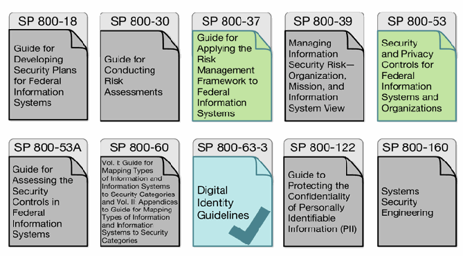
図3。プライバシーリスク管理をNIST SPへ統合するためのPEPガイダンスのロードマップ。上段: SP 800-18「連邦情報システムのセキュリティ計画策定ガイド」; SP 800-30「リスク評価実施ガイド」; SP 800-37「連邦情報システムへのリスク管理フレームワーク適用ガイド」（緑色）; SP 800-39「情報セキュリティリスクの管理—組織、ミッション、情報システムの視点」; SP 800-53「連邦情報システムおよび組織のセキュリティとプライバシーの管理策」（緑色）。下段: SP 800-53A「連邦情報システムのセキュリティ管理策評価ガイド」; SP 800-60 第I巻「情報の種類と情報システムをセキュリティカテゴリに対応付けるガイド」、第II巻「同ガイドの付録」; SP 800-63-3「デジタルアイデンティティガイドライン」; SP 800-122「個人識別情報（PII）の機密性を保護するガイド」; SP 800-160「システムセキュリティエンジニアリング」。緑色はFY 2017中に統合が進行していた項目を示す。
SP 800-18 SP 800-30 SP 800-37 SP 800-39 SP 800-53 Guide for
SP 800-18、SP 800-30、SP 800-37、SP 800-39、SP 800-53：ガイド
未レビュー訳Managing Security
セキュリティを管理する
未レビュー訳Applying the
適用するための
未レビュー訳Guide for
ガイド
未レビュー訳Information and Privacy
情報およびプライバシー
未レビュー訳Developing Guide for Risk
策定のためのガイド：リスク
未レビュー訳Security Risk- Controls for
セキュリティリスク—連邦向け管理策
未レビュー訳Security Plans Conducting Management
セキュリティ計画／リスク評価の実施／管理
未レビュー訳Organization, Federal
組織、連邦
未レビュー訳for Federal Risk
連邦向けリスク
未レビュー訳Framework to
フレームワークを〜に適用する
未レビュー訳Mission, and Information
ミッション、および情報
未レビュー訳Information Assessments Federal
連邦情報システムの評価
未レビュー訳Information Systems and
連邦情報システムおよび
未レビュー訳Systems
システム
未レビュー訳Information
情報
未レビュー訳System View Organizations
システムの視点／組織
未レビュー訳Systems
システム
未レビュー訳SP 800-53A SP 800-60 SP 800-63-3 SP 800-122 SP 800-160
SP 800-53A、SP 800-60、SP 800-63-3、SP 800-122、SP 800-160
未レビュー訳Vol.I;Guidefor
第I巻；〜向けガイド
未レビュー訳Guide for Mappir,g Types
種類を対応付けるガイド
未レビュー訳Guide to
〜を保護するためのガイド
未レビュー訳Assessing the of Informationand
情報システムの管理策を評価する
未レビュー訳CProontfeidcetinngtiatlihtye Systems
システムの機密性を保護する／エンジニアリング
未レビュー訳Security 1In0foSremcuartiitoyncSaytsetgemorsies Digital
セキュリティ／情報システム／デジタルアイデンティティ／カテゴリ
未レビュー訳of Personally SEencguinreiteyring
個人識別情報の／セキュリティエンジニアリング
未レビュー訳FCeodnetrroalls in alondGuVlodel.IfIo:rAMppaepnpdlr,igces Identity Information TanydpeIsnfoofrmInafotiromnation Guidel ;;;/ IIdnefonrtmifiaatbiolen (PII) Systems Systems to Security
連邦の管理策／第II巻の付録／アイデンティティ／情報の種類と情報システム／セキュリティカテゴリ
未レビュー訳categories
カテゴリ
未レビュー訳Figure 3: PEP guidance roadmap for integrating privacy risk management into NIST SPs, featuring integrations underway during FY 2017 (highlighted in green).
図3：プライバシーリスク管理をNIST SPに統合するためのPEPガイダンスのロードマップ。FY 2017に統合を進めていた項目を緑色で示す。
未レビュー訳ITL CYBERSECURITY PROGRAM AND PROJECTS | FY 2017
ITLサイバーセキュリティプログラムおよびプロジェクト｜2017年度
未レビュー訳quality attributes in trustworthy systems. The PEP NIST Leadership in Privacy team also contributed privacy concepts to the Trusted
信頼できるシステムにおける品質属性。PEPチーム［右段見出し：プライバシー分野におけるNISTのリーダーシップ］も、プライバシー概念をTrusted...
未レビュー訳The PEP team built upon NIST’s leadership role
PEPチームは、NISTが果たしてきた主導的役割を基盤に、
未レビュー訳Identities Group (TIG) measurement science efort,
Trusted Identities Group（TIG）の測定科学活動、および
未レビュー訳in privacy by serving in leadership positions and
プライバシー分野で指導的役割を担い、
未レビュー訳draft NISTIR 8112, Attribute Metadata.
草案NISTIR 8112「属性メタデータ」。
未レビュー訳contributing to privacy expertise organizations across
プライバシーの専門機関にも貢献し、その活動は
未レビュー訳The PEP team also contributed to ongoing the public and private sectors. These leadership standards and framework development eforts in positions included: the chair of the Federal Privacy the International Organization for Standardization Council’s Risk Management Task Force and co-chair of (ISO), Institute of Electrical and Electronics Engineers the Networking and Information Technology Research (IEEE), and the Fast Identity Online (FIDO) Alliance. and Development (NITRD) Program’s Privacy Specifcally, the PEP team worked on ISO/IEC 27552, Research and Development (R&D) Interagency which is a privacy-focused sector-specifc extension Working Group. The PEP team also participated in the of the information security-focused ISO/IEC 27001, Internet Policy Task Force’s Privacy Working Group, and ISO/IEC 27550, a technical report on privacy the FIDO Alliance’s Privacy and Public Policy Working engineering. The PEP team also supported the Group, and the Identity Ecosystem Steering Group. development of IEEE P7002, an efort in its early stages that also addresses privacy engineering. The
［左段］PEPチームは、国際標準化機構（ISO）、電気電子技術者協会（IEEE）、およびFast Identity Online（FIDO）Allianceで進行中の標準・枠組みの策定にも貢献した。具体的には、情報セキュリティに焦点を当てたISO/IEC 27001をプライバシー重視の業種別に拡張するISO/IEC 27552と、プライバシーエンジニアリングに関する技術報告書ISO/IEC 27550に取り組んだ。また、初期段階にありプライバシーエンジニアリングも扱うIEEE P7002の開発を支援した。｜［右段］その活動は公共・民間両部門に及んだ。指導的役割には、Federal Privacy CouncilのRisk Management Task Force議長、Networking and Information Technology Research and Development（NITRD）ProgramのPrivacy Research and Development（R&D）Interagency Working Group共同議長が含まれる。PEPチームは、Internet Policy Task ForceのPrivacy Working Group、FIDO AllianceのPrivacy and Public Policy Working Group、Identity Ecosystem Steering Groupにも参加した。
未レビュー訳Looking Forward
今後の展望
未レビュー訳PEP team also engaged with FIDO to help develop privacy-enhancing authentication specifcations.
PEPチームはFIDOとも連携し、プライバシー強化型認証の仕様策定に取り組んだ。
未レビュー訳In FY 2018, the PEP team will continue developing privacy risk management guidance for agencies,
2018年度には、PEPチームは各機関向けのプライバシーリスク管理ガイダンスの策定を続け、
未レビュー訳Continuing the ongoing series of NIST workshops
NISTのワークショップシリーズを継続し、
未レビュー訳including fnalizing SP 800-53 Revision 5, and SP
SP 800-53改訂第5版の最終化と、SP
未レビュー訳on privacy engineering and risk management,
プライバシーエンジニアリングとリスク管理に関する
未レビュー訳800-37 Revision 2. The PEP team will also collaborate
800-37改訂第2版。PEPチームはさらに連携する。
未レビュー訳building of the concepts introduced in NISTIR 8062,
NISTIR 8062で紹介された概念を土台として、
未レビュー訳with internal and external stakeholders to kick of
社内外の関係者とともに、〜を開始する
未レビュー訳the PEP team hosted the June 2017 workshop,
PEPチームは2017年6月にワークショップを開催した。
未レビュー訳the integration of privacy guidance into SP 800-53A
SP 800-53Aへのプライバシーガイダンスの統合
未レビュー訳“Privacy Risk Assessment: A Prerequisite for Privacy
「プライバシーリスク評価：プライバシーリスク管理の前提条件」
未レビュー訳Revision 5, Assessing Security and Privacy Controls
改訂第5版『連邦情報システムおよび組織におけるセキュリティとプライバシーの管理策評価』
未レビュー訳Risk Management” (see https://www.nist.gov/news-
リスク管理」（次を参照：https://www.nist.gov/news-
未レビュー訳in Federal Information Systems and Organizations,
連邦情報システムおよび組織における
未レビュー訳events/events/2017/06/privacy-risk-assessment-
events/events/2017/06/privacy-risk-assessment-
未レビュー訳and implement the provisions of other documents
ガイダンスロードマップに示された他の文書の規定を実施し、
未レビュー訳prerequisite-privacy-risk-management). Feedback
prerequisite-privacy-risk-management）。寄せられたフィードバックには、
未レビュー訳laid out in the guidance roadmap. The PEP team will
PEPチームは
未レビュー訳received included the need for further integration of
さらに統合する必要性が含まれていた。
未レビュー訳continue supporting the development of international
国際的な基準の策定への支援を続け、
未レビュー訳privacy into risk management and security guidance,
プライバシーをリスク管理とセキュリティガイダンスに
未レビュー訳standards focused on privacy engineering and risk
プライバシーエンジニアリングとリスクに焦点を当てた
未レビュー訳a privacy-specifc risk assessment model, and a toolset
プライバシー固有のリスク評価モデルとツールセット、
未レビュー訳management.
リスク管理。
未レビュー訳to manage privacy risk. These takeaways aligned well with the PEP team’s ongoing eforts and goals for The PEP team will place a greater focus on future work.
［左段］これらの知見は、PEPチームの継続的な取り組みと今後の目標によく合致していた。［右段］PEPチームは、
未レビュー訳its goal of advancing the deployment of privacy-enhancing technologies. The PEP team has already
プライバシー強化技術の展開という目標に、より一層重点を置く。PEPチームはすでに
未レビュー訳In support of a privacy-specifc risk assessment
プライバシー固有のリスク評価を支援するため、
未レビュー訳begun exploring whether stakeholders see a need
関係者が必要性を感じているかどうかを検討し始めた。
未レビュー訳tool, the PEP team continued socializing the use of
そのツールとして、PEPチームは利用の普及を続けた。
未レビュー訳for an online space where collaborators can discuss,
具体的には、共同作業者が議論し、
未レビュー訳its Privacy Risk Assessment Methodology (PRAM)
同チームのプライバシーリスク評価方法論（PRAM）を
未レビュー訳learn about, and improve upon tools, solutions, and
ツール、ソリューション、プロセスについて学び、改善できる
未レビュー訳inside and outside the Federal Government. As of
連邦政府の内外で、2017年度時点では
未レビュー訳processes that support privacy engineering and
プライバシーエンジニアリングとリスク管理を支援するプロセス。
未レビュー訳FY 2017, more than 30 public- and private-sector
公共部門と民間部門の30を超える
未レビュー訳risk management. The PEP team will also explore
PEPチームはさらに、
未レビュー訳organizations have used or are using the PRAM,
組織がPRAMを利用した、または現在利用しており、
未レビュー訳the management of privacy risk in leading-edge
最先端分野におけるプライバシーリスクの管理を検討する。
未レビュー訳including participants in NIST’s trusted identities
NISTのTrusted Identities Pilotの参加者や
未レビュー訳domains, such as the internet of things (IoT) and
その分野には、IoTや
未レビュー訳pilots and a few federal agencies.
一部の連邦機関も含まれる。
未レビュー訳artifcial intelligence (AI). Specifcally, the PEP team
人工知能（AI）などが含まれる。具体的には、PEPチームは
未レビュー訳The PEP team also collaborated on projects at the will collaborate with NIST’s Cybersecurity for the IoT National Cybersecurity Center of Excellence (NCCoE), program to tackle IoT-specifc privacy challenges including the Privacy-Enhancing Identity Federation through workshops and guidance. building block, which demonstrates the use of the
［左段］PEPチームは、National Cybersecurity Center of Excellence（NCCoE）のプロジェクトにも協力した。Privacy-Enhancing Identity Federation building blockを含み、これはNISTの｜［右段］PEPチームはNISTのCybersecurity for the IoTプログラムと連携し、ワークショップやガイダンスを通じてIoT固有のプライバシー課題に取り組む。
未レビュー訳The PEP team will continue to seek leadership
PEPチームは、プライバシー分野のリーダーシップを引き続き担う機会を探り、
未レビュー訳NIST privacy engineering objectives (see https://
プライバシーエンジニアリング目標の活用を示す（参照：https://
未レビュー訳opportunitiesinpublic-andprivate-sectororganizations
公共部門および民間部門の組織で
未レビュー訳nccoe.nist.gov/projects/building-blocks/privacy-
nccoe.nist.gov/projects/building-blocks/privacy-
未レビュー訳to strengthen NIST’s position as a leader in privacy.
NISTがプライバシー分野のリーダーとしての地位を強化するため、
未レビュー訳enhanced-identity-brokers).
enhanced-identity-brokers).
未レビュー訳Finally, the PEP team will continue working with a
最後に、PEPチームは引き続き
未レビュー訳NIST/ITL CYBERSECURITY PROGRAM ANNUAL REPORT 2017
NIST/ITLサイバーセキュリティ・プログラム年次報告書2017
未レビュー訳variety of organizations to manage privacy risk using Cyber Supply Chain Risk Management (C-SCRM) the PRAM, such as using it in the NCCoE’s Mobile lies at the intersection of information security, supply
［左段］さまざまな組織と連携し、PRAMを使ってプライバシーリスクを管理する。たとえば、NCCoEの「モバイル｜［右段］サイバーサプライチェーンリスク管理（C-SCRM）は、情報セキュリティとサプライ
未レビュー訳chain management, and enterprise risk management
チェーン管理、企業リスク管理が交差する領域にある。
未レビュー訳Device Security building block.
デバイスセキュリティ」構成要素。
未レビュー訳(Figure 4); it is the process of identifying, assessing,
（図4）。これは、リスクを特定・評価し、
未レビュー訳FOR MORE INFORMATION, SEE:
詳細情報：
未レビュー訳andmitigatingtherisksassociatedwiththedistributed
分散した
未レビュー訳https://www.nist.gov/itl/privacy-engineering
https://www.nist.gov/itl/privacy-engineering
未レビュー訳and interconnected nature of IT/OT product and service supply chains. C-SCRM covers the entire life
IT/OT製品・サービスのサプライチェーンの相互接続性に伴うリスクを軽減する。C-SCRMはシステムのライフサイクル全体を対象とし、
未レビュー訳CONTACTS:
連絡先：
未レビュー訳cycle of a system (including design, development,
（設計、開発を含む）
未レビュー訳PEP Team email: privacyeng@nist.gov
PEPチームのメールアドレス：privacyeng@nist.gov
未レビュー訳maintenance, and destruction), as supply chain threats and vulnerabilities may intentionally or unintentionally
保守と廃棄）、サプライチェーンの脅威や脆弱性が、意図的または意図せず
未レビュー訳Ms. Naomi Lefkovitz Ms. Ellen Nadeau
Naomi Lefkovitz氏、Ellen Nadeau氏
未レビュー訳compromise an IT/OT product or service at any
IT/OT製品またはサービスを、いかなる段階でも侵害しうる
未レビュー訳(301) 975-2924
(301) 975-2924
未レビュー訳(202) 306-4033
(202) 306-4033
未レビュー訳stage. These cyber supply chain risks may include
。こうしたサイバーサプライチェーンリスクには、
未レビュー訳naomi.lefkovitz@nist.gov ellen.nadeau@nist.gov the use of counterfeits, unauthorized production,
［左段］naomi.lefkovitz@nist.gov、ellen.nadeau@nist.gov｜［右段］偽造品の使用、不正な製造、
未レビュー訳tampering, theft, and insertion of malicious software
改ざん、窃盗、悪意あるソフトウェアの挿入
未レビュー訳Ms. Katie Boeckl
Katie Boeckl氏
未レビュー訳and hardware, as well as poor manufacturing and
およびハードウェアの挿入、不十分な製造・
未レビュー訳(240) 753-9674
(240) 753-9674
未レビュー訳development practices. As shown in Figure 5, C-SCRM
開発慣行。図5に示すように、C-SCRMは
未レビュー訳kaitlin.boeckl@nist.gov
kaitlin.boeckl@nist.gov
未レビュー訳is concerned with and involves a range of subjects, including safety, integrity, quality, reliability, and others, all within an overall environment of awareness.
安全性、完全性、品質、信頼性など幅広い側面を対象とし、総合的な認識向上の環境の中でこれらに関与する。
未レビュー訳Cyber Supply Chain Risk Management (C-SCRM)
サイバーサプライチェーンリスク管理（C-SCRM）
未レビュー訳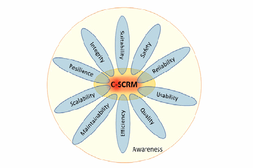
図5：C-SCRMの側面。中央にC-SCRMを置き、周囲に安全性、適合性、完全性、レジリエンス、拡張性、保守性、効率性、品質、ユーザビリティ、信頼性を配置し、外周に認識（Awareness）を示す。
Figure 4: C-SCRM Disciplines
図4：C-SCRMを構成する分野（情報セキュリティ、エンタープライズリスク管理、サプライチェーン管理）
未レビュー訳Figure 5: C-SCRM Aspects
図5：C-SCRMの側面
未レビュー訳Over the last several years, providing information
近年、情報と
未レビュー訳In FY 2017, NIST drafted NISTIR 8179, Criticality
2017年度に、NISTはNISTIR 8179「重要度
未レビュー訳and operational technology (IT/OT) for a supply chain
サプライチェーン向けの運用技術（IT/OT）を提供することは
未レビュー訳Analysis Process Model, a method for identifying
分析プロセスモデル」を草案化した。これは、
未レビュー訳has evolved into a complex, globally distributed,
複雑で世界中に分散したものへと進化し、
未レビュー訳and prioritizing IT/OT systems and components. This
IT/OTシステムおよびコンポーネントを特定し、優先順位を付ける方法である。このモデルは、
未レビュー訳dynamic ecosystem enabling the development of
ソリューション開発を可能にする動的なエコシステムへと進化し、
未レビュー訳model is intended to increase an organization’s ability
組織が
未レビュー訳highly refned, sophisticated, cost-efective, and
高度に洗練され、精緻で、費用対効果が高く、
未レビュー訳to make cost-efective risk decisions by determining
費用対効果の高いリスク判断を行う能力を高めるため、
未レビュー訳reusable solutions. This ecosystem is composed of
再利用可能なソリューション。このエコシステムは、
未レビュー訳the systems and components that have the most
最も大きな
未レビュー訳assorted entities with multiple tiers of outsourcing,
複数階層の委託を含むさまざまな主体から成り、
未レビュー訳impact on the organization and that would potentially
組織に影響を及ぼし、場合によっては
未レビュー訳global distribution routes, diverse technologies, and
世界中に広がる流通経路、多様な技術、
未レビュー訳cause the most harm if compromised. Figure 6 shows
侵害された場合に最大の損害をもたらすシステムとコンポーネントを特定する。図6は
未レビュー訳varying laws, policies, procedures, and practices, all of
さまざまな法律、政策、手順、慣行があり、これらすべてが
未レビュー訳an overview of the model, which includes separate
モデルの概要を示し、別々の
未レビュー訳which interact throughout the life cycle of a system.
システムのライフサイクル全体を通じて相互に作用する。
未レビュー訳analyses at the program, system, and component
プログラム、システム、コンポーネントの各レベルで分析を行い、
未レビュー訳Factors that allow for low-cost products, rapid
低コスト製品や迅速な
未レビュー訳level, and then a trace-back exercise to complete the
その後、トレースバックを実施して分析を完了する。NISTはこの文書を2018年度に
未レビュー訳innovation, and other benefts also increase the risk
イノベーションなどの恩恵をもたらす要素は、サプライチェーンが侵害されるリスクも高め、
未レビュー訳analysis. NIST will fnalize this publication in FY 2018
最終化し、
未レビュー訳that the supply chain may be compromised in a way
その結果、
未レビュー訳and will begin to research and write guidance that
さらに、ガイダンスの調査・執筆を開始する。そのガイダンスは
未レビュー訳that results in risks to the end user and reduce the
エンドユーザーにリスクを生じさせ、米国企業の
未レビュー訳builds on this model to identify critical suppliers and 26
このモデルを基盤に、重要な供給業者と
未レビュー訳overall competitiveness of U.S. companies.
総合的な競争力を低下させる可能性がある。
未レビュー訳service providers.
サービスプロバイダーを特定する。
未レビュー訳ITL CYBERSECURITY PROGRAM AND PROJECTS | FY 2017
ITLサイバーセキュリティプログラムおよびプロジェクト｜2017年度
未レビュー訳. Define &Scope
A. 定義と範囲
未レビュー訳...._.,_______________________
原文のみ
原文のみ
...
原文のみ
13.Program-Level I ~II C. System-Level I II D. Componen -Level An alysis Analysis I ~ II Analysis I
13.B. プログラムレベル分析／C. システムレベル分析／D. コンポーネントレベル分析
未レビュー訳原文のみ
II.!-::::::::::,-'==.-====~ •
原文のみ
~ ,
原文のみ
L----------------------- ...-------------·
原文のみ
E. Traceback
E. トレースバック
未レビュー訳Figure 6: Criticality Analysis Process Overview
図6：重要度分析プロセスの概要
未レビュー訳During2017,NISTcontinuedtoresearchthestateof establishes minimum criteria for the development C-SCRM in both the public and private sectors, related and deployment of supply chain risk management standards and initiatives, efective practices, and capabilities for national security systems. In FY 2017, metrics. NIST joined with the GSA and the University the group completed the revision of CNSSD 505 and of Maryland under a contract and grant awarded in developed a self-assessment tool to help agencies FY 2016 to conduct cyber analytics research on the measure their capabilities and compare those efectiveness of various risk management practices. capabilities to those of other agencies. The efort neared conclusion in FY 2017 and found
［左段］2017年、NISTは官民両部門におけるC-SCRMの現状、関連する標準や取り組み、有効な実務、指標の調査を続けた。NISTは、2016年度に授与された契約および助成金に基づき、GSAとメリーランド大学とともに、さまざまなリスク管理実務の有効性に関するサイバー分析研究を行った。2017年度に研究は終盤を迎え、｜［右段］国家安全保障システム向けのサプライチェーンリスク管理能力の開発・導入に関する最低基準を定める。2017年度、グループはCNSSD 505の改訂を完了し、各機関が自らの能力を測定して他機関と比較するための自己評価ツールを開発した。
未レビュー訳NIST also sponsored the Software and Supply
NISTはさらに、Software and Supply
未レビュー訳correlations between certain practices and publicly
特定の実務と、公表された
未レビュー訳Chain Assurance (SSCA) Forum and Working Groups,
Chain Assurance（SSCA）フォーラムおよびワーキンググループを
未レビュー訳disclosed data breaches. A report on the research will
データ侵害事案との相関を発見した。研究報告書は
未レビュー訳the purpose of which is to bring together a stakeholder
その目的は、関係者から成るコミュニティを
未レビュー訳be published in FY 2018.
2018年度に公表される予定である。
未レビュー訳community of government, industry, and academic
政府、業界、学術界の
未レビュー訳Similarly, NIST began research in FY 2017 experts in this feld. Meetings are held three to four to identify metrics that are currently used in times a year and cover a variety of subjects of interest organizations to measure information security risks. to attendees (see the website at https://csrc.nist.gov/ This research included a review of over 200 published scrm/ssca). standards, academic papers, organizational white-
［左段］同様に、NISTは2017年度、組織が情報セキュリティリスクの測定に使っている指標を特定する研究を開始した。この研究では、公開済みの規格200件超、学術論文、組織のホワイトペーパー、｜［右段］この分野の専門家が参加する。会議は年3～4回開催され、参加者の関心に応じた幅広いテーマを扱う（ウェブサイト：https://csrc.nist.gov/scrm/ssca）。
未レビュー訳NIST began working in FY 2017 to integrate
NISTは2017年度、既存のリスク管理プログラムにC-SCRMを統合する作業を開始した。
未レビュー訳papers, and other documents and interviews with a
論文、その他の文書も調査し、業界専門家
未レビュー訳C-SCRM into existing risk management programs and
C-SCRMを既存のリスク管理プログラムおよび
未レビュー訳dozen industry experts on the state of metrics in this
約12人に、この分野の指標の現状を聞き取った。
未レビュー訳processes. The draft Cybersecurity Framework v1.1
プロセスに統合する作業を開始した。ドラフト版Cybersecurity Framework v1.1
未レビュー訳feld. The research will be continued and published in
この分野の研究は継続し、2018年度に公表する予定である。
未レビュー訳and Draft SP 800-53 Revision 5 were both updated
およびドラフト版SP 800-53改訂第5版は、いずれも更新され、
未レビュー訳FY 2018.
2018年度に。
未レビュー訳to better include up-to-date C-SCRM guidance. In
最新のC-SCRMガイダンスをより適切に盛り込んだ。2018年度には、
未レビュー訳NIST continued to co-chair a working group FY 2018, NIST will continue this work by including with the DoD to revise CNSSD 505, Supply Chain or updating existing C-SCRM concepts in other Risk Management, which assigns responsibilities and publications as they are developed.
［左段］NISTは国防総省（DoD）との作業部会の共同議長を引き続き務め、責任を割り当てるCNSSD 505『サプライチェーンリスク管理』の改訂に取り組んだ。｜［右段］NISTは、他の刊行物の策定に合わせて既存のC-SCRM概念を取り入れる、または更新することで、この作業を継続する。
未レビュー訳NIST/ITL CYBERSECURITY PROGRAM ANNUAL REPORT 2017
NIST/ITLサイバーセキュリティ・プログラム年次報告書2017
未レビュー訳In FY 2018, NIST will continue to collaborate with of career professionals, including government ofcials, stakeholders in government, industry, and academia chief information security ofcers, those in academia to conduct research, produce needed standards and with cybersecurity and supply chain specialties, guidance, and seek opportunities to create greater system administrators, engineers, consultants, awareness across all sectors and types and sizes of vendors, software developers, managers, analysts,
［左段］2018年度、NISTは政府・産業界・学界の関係者と協力を続け、必要な標準やガイダンスを調査・策定し、あらゆる部門・分野・規模の組織で認識を高める機会を探る。｜［右段］政府職員、最高情報セキュリティ責任者、学界関係者、サイバーセキュリティやサプライチェーンの専門家、システム管理者、エンジニア、コンサルタント、ベンダー、ソフトウェア開発者、管理者、分析担当者、
未レビュー訳specialists in IT and cybersecurity, and many more
ITおよびサイバーセキュリティの専門家など、さらに多くの分野の人材。
未レビュー訳organizations. NIST will:
NISTは以下を実施する：
未レビュー訳felds. The SSCA Forum meets two to three times per
SSCAフォーラムは年2～3回開催され、
未レビュー訳•Update SP 800-161 based on the fnal year and is free and open to all interested participants, publication of SP 800-53 Revision 5, both nationally and internationally.
•［左段］SP 800-53改訂第5版の最終版の公表に基づいてSP 800-161を更新する。｜［右段］国内外の関心ある参加者に開かれている。
未レビュー訳•Continue developing industry supply chain While the general intent is to share information, risk management case studies, the SSCA Forum also ofers government and private-sector participants an opportunity to openly
•［左段］産業界のサプライチェーンリスク管理の事例研究を継続して作成する。｜［右段］情報共有が主な目的であるが、SSCAフォーラムは政府および民間部門の参加者に、率直に
未レビュー訳•Develop a draft NISTIR on SCRM “principles”, collaborate by presenting and receiving feedback on current and potential future work. Most events are two
•［左段］SCRMの「原則」に関するNISTIR草案を作成する。｜［右段］現在および将来の取り組みを発表し、フィードバックを交換する機会を提供する。多くのイベントは2～
未レビュー訳•Develop a NISTIR on Supply Chain to three days long and contain a mixture of discussion Interdependency Analysis, and and presentation. To encourage open interaction,
•［左段］サプライチェーン相互依存分析に関するNISTIRを作成する。｜［右段］3日間で、討議と発表を組み合わせて行う。率直な交流を促すため、
未レビュー訳•Continue research and work on metrics and SSCA Forum meetings operate under the Chatham cyber risk analytics. House Rule, meaning “participants are free to use the information received, but neither the identity nor
•［左段］指標およびサイバーリスク分析に関する調査と作業を継続する。｜［右段］SSCAフォーラムの会合ではチャタムハウスルールが適用される。つまり、「参加者は受け取った情報を自由に使用できるが、発言者の身元も
未レビュー訳FOR MORE INFORMATION, SEE:
詳細情報：
未レビュー訳the afliation of the speaker(s), nor that of any other
また、その他の参加者の所属も明かしてはならない。
未レビュー訳https://scrm.nist.gov
https://scrm.nist.gov
未レビュー訳participant, may be revealed,” though most speakers allow NIST to post their presentations.
ただし、ほとんどの発表者はNISTが発表資料を掲載することを認めている。
未レビュー訳CONTACTS:
連絡先：
未レビュー訳Cyber SCRM Team email: scrm-nist@nist.gov
Cyber SCRMチームのメールアドレス：scrm-nist@nist.gov
未レビュー訳The SSCA Forum also maintains an extensive email subscription service. To receive information
SSCAフォーラムは、充実したメール配信サービスも運営している。情報を受け取るには、
未レビュー訳Ms. Celia Paulsen
Celia Paulsen氏
未レビュー訳Mr. Jon Boyens
Jon Boyens氏
未レビュー訳about upcoming meetings and related publications
今後の会議や関連出版物に関する
未レビュー訳(301) 975-5981
(301) 975-5981
未レビュー訳(301) 975-5549
(301) 975-5549
未レビュー訳and activities, please sign up for the SSCA Forum
および関連活動に関する情報を受け取るには、SSCAフォーラムの
未レビュー訳celia.paulsen@nist.gov jon.boyens@nist.gov
celia.paulsen@nist.gov、jon.boyens@nist.gov
未レビュー訳mailing list, operated by NIST, by sending a blank email to sw.assurance-join@nist.gov.
NISTが運営するメーリングリストに登録するには、空のメールをsw.assurance-join@nist.govへ送信する。
未レビュー訳FOR MORE INFORMATION, SEE:
詳細情報：
未レビュー訳Software and Supply Chain
ソフトウェアおよびサプライチェーン
未レビュー訳https://csrc.nist.gov/Projects/Supply-Chain-Risk-
https://csrc.nist.gov/Projects/Supply-Chain-Risk-
未レビュー訳Assurance Forum
アシュアランスフォーラム
未レビュー訳Management/SSCA
Management/SSCA
未レビュー訳Cyber supply chain risk management (hardware
サイバーサプライチェーンリスク管理（ハードウェア
未レビュー訳CONTACTS:
連絡先：
未レビュー訳and software assurance and assured services) has become a topic of core strategic concern for business
およびソフトウェア保証・保証付きサービス）は、企業や
未レビュー訳Ms. Celia Paulsen
Celia Paulsen氏
未レビュー訳Mr. Jon Boyens
Jon Boyens氏
未レビュー訳and government leaders worldwide and is an essential
世界の企業や政府の指導者にとって重要な戦略的関心事となっており、不可欠な
未レビュー訳(301) 975-5981
(301) 975-5981
未レビュー訳(301) 975-5549
(301) 975-5549
未レビュー訳component of an enterprise risk management
エンタープライズリスク管理
未レビュー訳celia.paulsen@nist.gov jon.boyens@nist.gov
celia.paulsen@nist.gov、jon.boyens@nist.gov
未レビュー訳strategy. The Software and Supply Chain Assurance (SSCA) Forum provides a venue for government, industry, and academic participants from around the world to share their knowledge and expertise regarding cyber supply chain risks, efective practices and mitigation strategies, tools and technologies, and any gaps related to the people, processes, or technologies involved.
戦略の構成要素である。SSCAフォーラムは、世界各地の政府、産業界、学術界の参加者が、サイバーサプライチェーンリスク、有効な実務と緩和策、ツールや技術、人・プロセス・技術に関する不足について知識と専門性を共有する場を提供する。
未レビュー訳The efort, initiated in 2003, is co-led by NIST, DHS, DoD and GSA, and serves approximately 3,000 stakeholders. Participants represent a diverse group
この取り組みは2003年に始まり、NIST、DHS、DoD、GSAが共同で主導しており、約3,000人の関係者にサービスを提供する。参加者は多様なグループを構成し、
未レビュー訳ITL CYBERSECURITY PROGRAM AND PROJECTS | FY 2017
ITLサイバーセキュリティプログラムおよびプロジェクト｜2017年度
未レビュー訳was then required to code each of the assertions listed
CTM文書に記載された各アサーションをコード化する必要があった。
未レビュー訳BIOMETRIC STANDARDS AND
生体認証標準および
未レビュー訳in the CTM documentation. This process required
この作業には
未レビュー訳ASSOCIATED CONFORMITY
関連する適合性
未レビュー訳a large amount of development time after the publication of the standard and related CTM, and often
標準と関連CTMの公開後、多大な開発時間を要し、しばしば
未レビュー訳ASSESSMENT TESTING TOOLS
評価・試験ツール
未レビュー訳resulted in long delays in the release of conformance tools. This approach also defned conformance tests statically, meaning that:
適合性ツールの公開が大幅に遅れた。この方法では適合性試験も固定的に定義され、次の問題があった：
未レビュー訳ITL supports the development of biometric conformance testing methodology standards and • End users with domain-specifc requirements other conformity assessment eforts through active
［左段］ITLは、生体認証適合性試験方法の標準策定およびその他の適合性評価活動を積極的に支援し、｜［右段］ドメイン固有の要件を持つエンドユーザー
未レビュー訳or user-defned felds were not able to modify
またはユーザー定義フィールドの場合、変更できず、
未レビュー訳technical participation in the development of these
これらの標準の策定に技術的に参加し、
未レビュー訳the conformance tests or parsing rules.
適合性試験や解析規則を変更できなかった。
未レビュー訳standards and the development of associated conformance test software, architectures and test • Any modifcation to the base standard
［左段］標準の策定と、関連する適合性試験ソフトウェア、アーキテクチャ、テスト｜［右段］基本標準を変更すると
未レビュー訳requirements or subsequent revision of the
要件を変更する場合、または標準を改訂する場合は、
未レビュー訳suites, collectively known as Biometric Conformance
スイートを開発する。これらを総称して「生体認証適合性
未レビュー訳standard required a new release of BioCTS
標準を変更すると、新しいBioCTS
未レビュー訳Test Software (BioCTS). These test tools are developed
試験ソフトウェア（BioCTS）」と呼ぶ。これらの試験ツールは、
未レビュー訳applications.
アプリケーションのリリースが必要だった。
未レビュー訳to promote the adoption of these standards and to support users, product developers, and testing
これらの標準の採用を促進し、ユーザー、製品開発者、試験担当者を支援するために開発されている。
未レビュー訳To alleviate these issues, the new version of
こうした問題を解消するため、新しいバージョンの
未レビュー訳labs that require conformance to selected biometric
選定した生体認証標準への適合を必要とする試験機関
未レビュー訳BioCTS was designed to allow a modifcation of test
BioCTSでは、テスト
未レビュー訳standards. ITL contributes to the development of
。ITLは生体認証標準の策定に貢献し、
未レビュー訳assertions and parsing rules. This approach required
アサーションと解析規則の変更を可能にするよう設計した。この方法では
未レビュー訳biometric standards and participates in the INCITS
INCITS技術委員会M1（生体認証）および関連
未レビュー訳a confguration fle to specify requirements and allow
要件を指定し、ソフトウェアが
未レビュー訳Technical Committee M1 – Biometrics and related
小委員会、ならびにISO/IEC合同技術委員会
未レビュー訳the software to respond to the needs of the end user.
利用者のニーズに応答できるようにする構成ファイルが必要だった。
未レビュー訳subcommittees and in ISO/IEC Joint Technical Committee (JTC) 1 Subcommittee (SC) 37 – Biometrics BioCTS AN MRT had two releases in FY 2017. standards bodies.
［左段］（JTC 1）第37小委員会（SC 37）生体認証標準化団体。｜［右段］BioCTS AN MRTは2017年度に2回リリースされた。
未レビュー訳The frst release included a command line interface (CLI) as well as a graphical user interface (GUI). It supported Level-1 testing, fle format testing that
最初のリリースには、コマンドラインインターフェース（CLI）とグラフィカルユーザーインターフェース（GUI）が含まれていた。これはレベル1試験とファイル形式試験をサポートし、
未レビュー訳Bi
Bio
未レビュー訳CTS
CTS
未レビュー訳checks for the allowed content, length, and value for fve diferent standards and profles specifed within the AN MRTs. Since the MRT fles can be combined to support multiple standards, updates and profles, BioCTS AN MRT was designed to allow users to test against multiple standards during a single test.
許容される内容、長さ、値を5種類の標準・プロファイルについて検査する。複数標準をサポートするためMRTファイルを組み合わせられることから、BioCTS AN MRTは1回のテストで複数標準を検査できるよう設計された。
未レビュー訳In early 2017, a suite of BioCTS applications was released to support user-defned requirements and
2017年初頭、BioCTSアプリケーション一式がリリースされ、ユーザー定義の要件や
未レビュー訳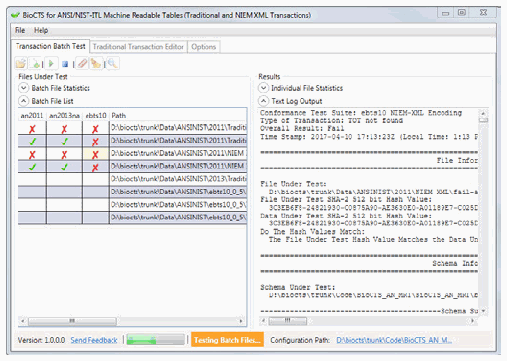
図7：BioCTS AN MRTが1回のテストで複数の標準を検査する画面。画面タイトルは『ANSI/NIST-ITL機械可読テーブル（従来型およびNIEM XMLトランザクション）向けBioCTS』。上部に『トランザクション一括テスト』『従来型トランザクションエディター』『オプション』のタブがある。左ペインにはテスト対象ファイル、バッチファイル統計、バッチファイル一覧があり、右ペインには結果、個別ファイル統計、テストログ出力が表示される。下部にはバージョン、フィードバック、バッチファイルのテスト実行、構成ファイルのパスが表示される。
profles for ANSI/NIST-ITL (AN-ITL) specifcations. _, llooCTSfDrl.NS!mm.ffl.Madw.a-iabll!lelti(fndibonalandNlt.MXMlfnn~
［本文］ANSI/NIST-ITL（AN-ITL）仕様のプロファイルをサポートする。｜［図中タイトル］ANSI/NIST-ITL機械可読テーブル（従来型およびNIEM XMLトランザクション）向けBioCTS
未レビュー訳filt Help
ファイル／ヘルプ
未レビュー訳-·'
原文のみ
These applications make use of confguration fles to dynamically generate parsing rules and conformance
これらのアプリケーションは構成ファイルを使い、解析規則と適合性
未レビュー訳''"""
原文のみ
requirements for nearly any version or profle of the AN-ITL standard. The confguration fles utilize an ...a•>ll ...20•1h dib•10 r~)h',,b,ocol,trur~\AN~1 \T.-.diu Clo~oC'P..t,"<alfiufOl:~t~tcA!t'IiCuc:C1.',r1tH:u;.ru~t\U;UT:I:)fn,.r::.tt:,nl-:Dc:N.i.l"tl1'!11•Xl'tt.!:ncod:no
AN-ITL標準のほぼすべてのバージョンやプロファイルに対応する。構成ファイルは、
未レビュー訳l!.=-e ~t~: .Dli•O,•!? n :?3:i3Z n.,:c,11 l~ma: l!ll ~
原文のみ
" 0 : \t , ,, o( b \t r " " "\ D .i. ~l \ 2
原文のみ
011\f,.i-t\
原文のみ
✓• ✓ r r• ~ ~ \ A M I N l
原文のみ
5 1 U O U V it i M
原文のみ
原文のみ
Extensible Markup Language (XML)-based format
拡張可能マークアップ言語（XML）ベースの形式を用い、
未レビュー訳✓ ✓ ~~\AN$lNtS'1\l'011\Ntt:M I
原文のみ
O·\b«b\tr""~~f\2013\1,.o,to P'Ltc Vi'U:SclT"ut:
原文のみ
called ANSI/NIST-ITL Machine Readable Tables (MRTs)
ANSI/NIST-ITL機械可読テーブル（MRT）と呼ばれる。
未レビュー訳D;\b,,,;,m\lnri.\DMa~l0.0..5\ tl:\111.:.:t,.\tni:.ll\tl1t,1 \.ul.t~ttf\.2 C1-1\11Ilbi:aa. \:111l-a ~~Vt~T\t~110.o .si; fltlxiltlunir:IeU:•Ti4Iiet~!.,1J1~1U-c.•l~:leiU~;~l•i:'Jilt•.:.K!U!-l~'l,~Vl,!tU~l'O•A?lU ~tr-tn ~:
原文のみ
(see Figure 7 for an example output). The BioCTS AN-
（出力例は図7を参照）。BioCTS AN-
未レビュー訳0.,1,b,,offl\tr"""•,DeuWISP,ltSl\itbblOJ)J\ tatlX:SV.ttllailt4.r't-121,1u: 1.utl!Jo.--aoo:uliUu.•lllto-.:K.uuubooV1a1lu}-0l'~O11.ttt1'-co:ut
原文のみ
i);,ThIb1ct,~!1!ue~ ti':,.,.:'l:llie;ur !Ht~.4t~~:.:,:ui:h. V1.1ue l'...1~Cle.1-~!:.e::iata t\!I
原文のみ
ITL applications that use MRTs are collectively referred to as BioCTS AN MRT.
ITLアプリケーションは総称してBioCTS AN MRTと呼ばれる。
未レビュー訳.tdll!ur.'tllkrlut : ;l!\tl~ tJ \t=k \~ \!11CO$_;;ta_!o!ill\!11c,,;t$_),N__Ki(I\t'
原文のみ
原文のみ
---------------------------------..-.-S\-, -• ----·tcti1!
原文のみ
The development of BioCTS applications traditionally relied on the publication of Conformance Testing Methodology (CTM) documentation, which specifed the test assertions required to assess
BioCTSアプリケーションの開発は従来、適合性試験方法（CTM）文書の公開に依存していた。この文書には、試験アサーションが記されており、
未レビュー訳Figure 7 - BioCTS AN MRT Testing Multiple
図7：BioCTS AN MRTは複数の標準を
未レビュー訳conformance to requirements found in the related
関連する
未レビュー訳Standards Within Single Test
1回のテストで検査する
未レビュー訳biometric standard. Manual software development
生体認証標準の要件への適合性を評価するものだった。ソフトウェア開発は手作業で行われ、
未レビュー訳NIST/ITL CYBERSECURITY PROGRAM ANNUAL REPORT 2017
NIST/ITLサイバーセキュリティプログラム年次報告書 2017
未レビュー訳The second release included further refnements EAC and TGDC in eforts related to human factors, of the existing tools, and expanded the testing security, and laboratory accreditation. capabilities to include Level-2 testing, or the testing
［左段］第2版では既存ツールをさらに改良し、検査機能を拡充して、レベル2試験、すなわち｜［右段］EACとTGDCは、人間工学、セキュリティ、試験所認定に関する取り組みを進めた。
未レビュー訳NIST and the EAC established a set of public
NISTとEACは、公開の
未レビュー訳of inter-feld as well as inter-record relationships,
フィールド間およびレコード間の関係を検査し、
未レビュー訳working groups to inform the development of a new
作業部会を設置し、新しい
未レビュー訳checking data between two or more related data
相互に関連する2つ以上のデータ
未レビュー訳version of the Volunary Voting Systems Guidelines
任意投票システム指針
未レビュー訳felds. The current release of BioCTS AN MRT supports
フィールド間のデータを確認する試験を追加した。現行のBioCTS AN MRTは、
未レビュー訳(VVSG). The NIST and EAC goals are to accelerate
（VVSG）の策定と採用を加速させることを目指し、
未レビュー訳all Level-1 and Level-2 tests defned by the MRTs.
MRTで定義されたレベル1およびレベル2の全試験に対応している。
未レビュー訳the development and adoption of the VVSG by
VVSGの策定と採用を加速させることにあり、
未レビュー訳Work on BioCTS AN MRT continued through FY leading these working groups in close consultation 2017,andanadditionalreleasethatsupportsexpanded with election ofcials, voting system manufacturers, character sets, as well as additional enhancements, is standards bodies, academic researchers, and other
［左段］BioCTS AN MRTの作業は2017年度も継続し、文字セットを拡張し、さらに機能を強化する追加リリースは、｜［右段］選挙関係者、投票システム製造者、標準化団体、学術研究者など、
未レビュー訳members of the public. These working groups focus
その他の一般市民とも緊密に協議しながら、これらの作業部会を主導した。作業部会は
未レビュー訳expected to be released in FY 2018.
2018年度に公開される予定である。
未レビュー訳on multiple voting system technology areas, including
投票システム技術の複数の分野を対象としており、
未レビュー訳FOR MORE INFORMATION, SEE:
詳しくは次を参照：
未レビュー訳accessibility, usability, interoperability, security, testing
アクセシビリティ、ユーザビリティ、相互運用性、セキュリティ、試験
未レビュー訳BioCTS - Biometric Conformance Test Tool
BioCTS―生体認証適合性試験ツール
未レビュー訳and certifcation.
および認証が含まれる。
未レビュー訳Homepage:
ホームページ：
未レビュー訳The cybersecurity public working group designed
サイバーセキュリティ公開作業部会は、VVSG新版のセキュリティ要件の基礎となる
未レビュー訳https://www.nist.gov/itl/csd/biometrics/biometric- principles and guidelines to form the basis for the conformance-test-software-biocts
［左段：BioCTSホームページ］https://www.nist.gov/itl/csd/biometrics/biometric-conformance-test-software-biocts｜［右段］新しいVVSG版のセキュリティ要件の基礎となる原則と指針を策定した。
未レビュー訳security requirements in the new version of the VVSG. Although 15 principles exist, the security-related
15の原則があるが、セキュリティ関連の原則には
未レビュー訳BioCTS AN MRT:
BioCTS AN MRT：
未レビュー訳principles include auditability, ballot secrecy, physical security, access control, system integrity, detection
監査可能性、投票の秘密、物理的セキュリティ、アクセス制御、システム完全性、検知
未レビュー訳https://www.nist.gov/itl/csd/biometrics/biocts-
https://www.nist.gov/itl/csd/biometrics/biocts-machine-readable-tables
未レビュー訳and monitoring, and data protection. Many of these
と監視、データ保護が含まれる。これらの原則の多くは
未レビュー訳machine-readable-tables
原文のみ
principles are already included in previous iterations
連邦標準の以前の版にすでに含まれているが、
未レビュー訳BioCTS AN MRT Changelog:
BioCTS AN MRT変更履歴：
未レビュー訳of the federal standards, whereas others are new areas of focus (e.g., system integrity). These principles
システム完全性など、新たに重点化された分野もある。これらの原則
未レビュー訳https://www.nist.gov/fle/384611
https://www.nist.gov/file/384611
未レビュー訳and guidelines were presented to, and adopted by, the Technical Guidelines and Development Committee
技術ガイドライン・開発委員会に提示され、採用された
未レビュー訳BioCTS AN MRT User Guide:
BioCTS AN MRTユーザーガイド：
未レビュー訳(TGDC).
（TGDC）。
未レビュー訳https://www.nist.gov/fle/384606
https://www.nist.gov/file/384606
未レビュー訳In FY 2018, NIST will continue leading the public working groups to inform the development of
2018年度もNISTは公開作業部会を主導し、
未レビュー訳CONTACT:
連絡先：
未レビュー訳voting system requirements based on the principles
原則と指針に基づく投票システム要件の策定を支援する。
未レビュー訳Mr. Dylan Yaga
Dylan Yaga氏
未レビュー訳and guidelines. Additionally, test assertions will be
さらに、
未レビュー訳(301) 975-6004
（301）975-6004
未レビュー訳developed to improve the quality and consistency
認定投票システム試験機関（VSTL）による試験活動の品質と一貫性を高めるため、テストアサーションを
未レビュー訳dylan.yaga@nist.gov
dylan.yaga@nist.gov
未レビュー訳of testing activities by accredited voting system test laboratories (VSTLs).
開発する。
未レビュー訳FOR MORE INFORMATION, SEE:
詳しくは次を参照：
未レビュー訳CYBERSECURITY APPLICATIONS https://vote.nist.gov
［左段見出し］サイバーセキュリティの応用｜［右段URL］https://vote.nist.gov
未レビュー訳CONTACTS:
連絡先：
未レビュー訳Security Aspects of Electronic Voting Mr. Joshua Franklin
［左段見出し］電子投票のセキュリティ側面｜［右段連絡先］Joshua Franklin氏
未レビュー訳Ms. Gema Howell
Gema Howell氏
未レビュー訳(301) 975-8463
（301）975-8463
未レビュー訳(301) 975-6299
（301）975-6299
未レビュー訳In 2002, Congress passed the Help America joshua.franklin@nist.gov gema.howell@nist.gov Vote Act (HAVA) to encourage the upgrade of voting equipment across the United States. HAVA Mr. Andrew Regenscheid established the Election Assistance Commission (301) 975-5155 (EAC) and the Technical Guidelines Development andrew.regenenscheid@nist.gov Committee (TGDC), chaired by the Director of NIST. HAVA directs NIST to provide technical support to the
［左段］2002年、米国議会は投票機器の更新を促すため、Help America Vote Act（HAVA）を可決した。HAVAは選挙支援委員会（EAC）と、NIST所長が委員長を務める技術ガイドライン開発委員会（TGDC）を設立した。HAVAはNISTに対し、（対象名は原文のページ末尾で途切れている）技術支援を提供するよう指示した。｜［右段：連絡先］joshua.franklin@nist.gov／gema.howell@nist.gov／Andrew Regenscheid氏：（301）975-5155、andrew.regenenscheid@nist.gov
未レビュー訳ITL CYBERSECURITY PROGRAM AND PROJECTS | FY 2017
ITLサイバーセキュリティプログラムおよびプロジェクト｜2017年度
未レビュー訳Nationwide Public Safety Broadband be shared between public safety ofcials as each
［左段見出し］全国公共安全ブロードバンド｜［右段］公共安全担当者間で共有され、各
未レビュー訳individual goes on and of duty. Furthermore, there will
担当者の勤務開始・終了に合わせて引き継がれる。さらに、
未レビュー訳Network (NPSBN) Cybersecurity
［左段見出し続き］ネットワーク（NPSBN）のサイバーセキュリティ
未レビュー訳be a need for fexible distribution and credentialing of devices and users in situations where multiple public safety organizations are called into action. To facilitate
複数の公共安全機関が動員される状況では、端末や利用者への認証情報を柔軟に割り当てる必要がある。このニーズに対応するため、
未レビュー訳...P...SCR
PSCR
未レビュー訳these needs NIST, through the NCCoE, piloted a proof-of-concept single sign on (SSO) for mobile applications on iOS and Android.
NISTはNCCoEを通じ、iOSおよびAndroidのモバイルアプリ向けにシングルサインオン（SSO）の概念実証を試行した。
未レビュー訳原文のみ
SECURITY
セキュリティ
未レビュー訳Due to the vital nature of frst responder activities, the mobile applications that will serve public safety in their mission will require more scrutiny when evaluated for software bugs and vulnerabilities
初動対応活動の重要性を踏まえ、公共安全業務に使われるモバイルアプリは、ソフトウェアの不具合や脆弱性を評価する際、
未レビュー訳Source: https://www.pscr.gov/
出典：https://www.pscr.gov/
未レビュー訳than applications targeted at the public. In FY 2017,
一般向けアプリよりも厳しく精査する必要がある。2017年度には、
未レビュー訳In February 2012, Congress passed the Middle NIST continued to expand its expertise in mobile Class Tax Relief and Job Creation Act. One portion application vetting tools and practices. In addition of this legislation calls for the establishment of a to publishing NISTIR 8136, An Overview of Mobile nationwide, interoperable public-safety broadband Application Vetting Services for Public Safety, ACD, in network based on the 3rd Generation Partnership conjunction with NIST Software and System’s Division Project’s (3GPP) Long Term Evolution (LTE) (SSD), expanded the Static Analysis Tool Exposition technology. The network will be deployed and (SATE) to include mobile application analysis for the operated by the First Responder Network Authority frst time. This exposition seeks to improve methods (FirstNet). The planned Nationwide Public Safety for measuring the efectiveness of mobile application Broadband Network (NPSBN) will “create a much vetting tools. needed nationwide interoperable broadband network
［左段］2012年2月、米国議会はMiddle Class Tax Relief and Job Creation Act（中間層減税・雇用創出法）を可決した。同法は、3GPPのLong Term Evolution（LTE）技術に基づく、全国規模で相互運用可能な公共安全ブロードバンド網の構築を定めた。この網はFirst Responder Network Authority（FirstNet）が配備・運用する。計画中のNationwide Public Safety Broadband Network（NPSBN）は、「全国規模で必要とされる相互運用可能なブロードバンド網を構築し、…」｜［右段］NISTはモバイルアプリ審査ツールと手法の専門性を高め続けた。公共安全向けモバイルアプリ審査サービスの概要をまとめたNISTIR 8136を公開したほか、ACDはNISTソフトウェア・システム部門（SSD）と連携して、静的解析ツール展示会（SATE）を初めてモバイルアプリ分析へ拡張した。この展示会は、モバイルアプリ審査ツールの有効性を測定する方法の改善を目指す。
未レビュー訳ITL continued to participate in the standards
ITLは、
未レビュー訳that will help police, frefghters, emergency medical
警察官、消防士、救急医療サービス従事者、
未レビュー訳development process for LTE technology within the
LTE技術の標準策定過程への参加を続け、
未レビュー訳service professionals and other public safety ofcials
その他の公共安全関係者が安全を保ち、職務を果たすのに役立つ」
未レビュー訳3rdGenerationPartnershipProject(3GPP),supporting
第3世代パートナーシップ・プロジェクト（3GPP）内で、公共安全に関するセキュリティ要件を支援し、
未レビュー訳stay safe and do their jobs” (see https://www.ntia.
警察官、消防士、救急医療従事者などが安全を保ち、職務を果たすのに役立つ」（参照：https://www.ntia.doc.gov/category/public-safety）。
未レビュー訳security requirements for public safety that are related
それらは次のサービスに関連する：
未レビュー訳doc.gov/category/public-safety). NIST is directed to
NISTは、
未レビュー訳to Proximity Services (ProSe), Group Communication
近接サービス（ProSe）およびグループ通信
未レビュー訳conduct research and development that supports
研究開発を行い、
未レビュー訳System Enablers (GCSE), and Mission Critical Push-To-
システム・イネーブラー（GCSE）、ミッションクリティカル・プッシュ・ツー・
未レビュー訳the acceleration and advancement of the nationwide
全国規模の
未レビュー訳Talk (MCPTT). NIST also broadened its participation
トーク（MCPTT）。NISTは、
未レビュー訳network.
ネットワークの加速と発展を支援するよう指示されている。
未レビュー訳in 3GPP’s 5th Generation Mobile Networks (5G). In
第3世代パートナーシップ・プロジェクト（3GPP）の第5世代モバイルネットワーク（5G）への参加も拡大した。さらに、
未レビュー訳In FY 2017, CSD, ACD, and the NCCoE continued addition, researchers broadened their scope within to support the joint National Telecommunications the Internet Engineering Task Force (IETF) to include and Information Administration (NTIA) and NIST eforts related to public safety. Public Safety Communications Research (PSCR)
［左段］2017年度、CSD、ACD、NCCoEは、米国電気通信情報局（NTIA）とNISTの共同公共安全通信研究（PSCR）プログラムを引き続き支援した。｜［右段］さらに、研究者はインターネット技術特別調査委員会（IETF）で対象範囲を広げ、公共安全関連の取り組みも含めた。
未レビュー訳In FY 2018, CSD and ACD will continue to
2018年度には、CSDとACDが
未レビュー訳program (see https://www.pscr.gov) with eforts in
PSCRプログラム（https://www.pscr.gov参照）を引き続き支援し、次の分野に取り組んだ：
未レビュー訳strengthen NIST’s relationship with both public
NISTと公共安全分野、ならびに
未レビュー訳public-safety mobile-application security, identity
公共安全向けモバイルアプリのセキュリティ、ID
未レビュー訳safety and commercial telecom stakeholders. Work
商用通信事業者との関係を強化し続ける。モバイルアプリ審査と
未レビュー訳management, data and application isolation
管理、データおよびアプリケーションの分離
未レビュー訳concerning mobile application vetting and cyber
サイバーセキュリティに関する取り組みは、
未レビュー訳technologies, wearable devices, and broadband
技術、ウェアラブルデバイス、ブロードバンド
未レビュー訳security will continue to evolve as NIST refnes both
NISTが、
未レビュー訳standards.ThePSCR’sAnnualPublicSafetyBroadband
標準。PSCR年次公共安全ブロードバンド
未レビュー訳its methods for tool evaluation as well as its corpus
ツール評価手法と、評価に用いるテストケース群の双方を
未レビュー訳Stakeholder Conference, held in June 2017, continued
ステークホルダー会議は2017年6月に開催され、
未レビュー訳of test cases used in those evaluations. PSCR is
改善するにつれて取り組みは進化する。PSCRは
未レビュー訳to be a valuable venue for ITL to provide updates on
ITLが進行中の各プロジェクトについて最新情報を提供する貴重な場となった。
未レビュー訳working diligently to fund grants and prize challenges
助成金や賞金付きチャレンジに資金を提供するため、精力的に取り組み、
未レビュー訳each of our ongoing projects. The conference also
同会議はまた、
未レビュー訳to both solve current problems and fll future gaps
公共安全ブロードバンド技術における現在の課題を解決し、将来の不足を補うことを目指している。
未レビュー訳provided a venue to directly interface with the public
一般市民や
未レビュー訳in public safety broadband technology. In FY 2018,
2018年度には、
未レビュー訳safety and frst responder communities.
公共安全関係者と初動対応者のコミュニティに直接対話する機会を提供した。
未レビュー訳ITL will also take on a crucial role in this work by
ITLもこの活動で重要な役割を担い、
未レビュー訳The mobile devices that will operate on the NPSBN providing cybersecurity expertise and guidance in the
［左段］NPSBNで運用されるモバイル端末は、｜［右段］サイバーセキュリティの専門知識と助言を提供し、
未レビュー訳31 will be utilized in unique ways when compared to their administration of these awards.
［左段］一般向け端末とは異なる方法で活用される。｜［右段］これらの助成金・賞金の運営を支援する。
未レビュー訳public counterparts. The same device(s) will likely
同じ端末が公共安全担当者間で共有される可能性が高く、
未レビュー訳NIST/ITL CYBERSECURITY PROGRAM ANNUAL REPORT 2017
NIST/ITLサイバーセキュリティプログラム年次報告書 2017
未レビュー訳The ICS cybersecurity team has used existing
産業用制御システム（ICS）のサイバーセキュリティチームは、既存の
未レビュー訳CONTACTS:
連絡先：
未レビュー訳standards, in conjunction with the NIST Framework
標準を、
未レビュー訳Mr. Michael Ogata
Michael Ogata氏
未レビュー訳Dr. Nelson Hastings
Nelson Hastings博士
未レビュー訳for Improving Critical Infrastructure Cybersecurity, to
NISTの「重要インフラのサイバーセキュリティ改善フレームワーク」と併用して、
未レビュー訳(301) 975-6993
（301）975-6993
未レビュー訳(301) 975-5237
（301）975-5237
未レビュー訳develop a target profle for applying cybersecurity
製造環境にサイバーセキュリティ対策を適用するための目標プロファイルを策定した。
未レビュー訳michael.ogata@nist.gov nelson.hastings@nist.gov
michael.ogata@nist.gov／nelson.hastings@nist.gov
未レビュー訳protections within manufacturing environments. The development of this profle helps establish a roadmap
このプロファイルの策定は、
未レビュー訳Cybersecurity for Industrial Control for reducing cybersecurity risk for manufacturers
［左段見出し］産業用制御システムのサイバーセキュリティ｜［右段］製造業者のサイバーセキュリティリスクを低減する道筋の構築を支援する。
未レビュー訳that is aligned with manufacturing sector goals and
その道筋は製造業分野の目標と
未レビュー訳Systems
原文のみ
industry best practices. The profle tailors existing
業界のベストプラクティスに沿っている。プロファイルは既存の
未レビュー訳NIST’s Industrial Control System (ICS) cybersecurity control language to be more aligned cybersecurity efort is focused on providing guidance with operational technology environments, focusing and insights into the domain of securing connected on desired cybersecurity outcomes to identify physical systems. ACD is supporting the NIST opportunities for improving the current cybersecurity Engineering Laboratory’s (EL) efort to develop and posture of a manufacturing system. Through a session implement guidance aimed at efectively securing during the 2016 Cybersecurity Framework Workshop ICS, initially focusing on Smart Manufacturing and two public comment periods, the team solicited Environments. Using an ICS cybersecurity testbed, feedback from industry partners to help solidify the a portion of which is shown in Figure 8, NIST will content in the profle. The Cybersecurity Framework measure the network and operational performance of Manufacturing Profle was published as NISTIR 8183 these systems when instrumented with cybersecurity (see https://nvlpubs.nist.gov/nistpubs/ir/2017/NIST. protections, in accordance with the best practices IR.8183.pdf). and requirements prescribed by national and
［左段］NISTの産業用制御システム（ICS）サイバーセキュリティ活動は、接続された物理システムを保護する領域に関する指針と知見の提供に重点を置く。ACDは、NIST工学研究所（EL）がICSを効果的に保護する指針を策定・実施する取り組みを支援しており、当初はスマート製造環境に重点を置いた。ICSサイバーセキュリティテストベッド（その一部を図8に示す）を用い、サイバーセキュリティ対策を適用したシステムのネットワーク性能と運用性能をNISTが測定する。対策は国内および｜［右段］NISTのICSサイバーセキュリティ制御の用語体系を運用技術（OT）環境により適合させ、望ましいサイバーセキュリティ成果に焦点を当てることで、製造システムの現行セキュリティ体制を改善する機会を特定する。2016年のサイバーセキュリティ・フレームワーク・ワークショップのセッションと2回の公開意見募集を通じ、チームは業界関係者から意見を集め、プロファイルの内容を固めた。「Cybersecurity Framework Manufacturing Profile」はNISTIR 8183として公開された（https://nvlpubs.nist.gov/nistpubs/ir/2017/NIST.IR.8183.pdf）。
未レビュー訳In 2018, NIST will continue the process of applying
2018年度、NISTは
未レビュー訳international standards and guidelines. Examples of
国際標準・指針に定められたベストプラクティスと要件に従う。そうした標準・指針の例として、
未レビュー訳the guidance presented in the Manufacturing Profle
製造プロファイルに示された指針の適用を継続し、
未レビュー訳such standards and guidelines include International
国際オートメーション学会（ISA）の
未レビュー訳by implementing the recommended cybersecurity
推奨されるサイバーセキュリティ
未レビュー訳Society of Automation (ISA) standard ISA/IEC-62443
標準ISA/IEC 62443
未レビュー訳controls within the ICS cybersecurity testbed.
制御策をICSサイバーセキュリティテストベッド内に実装することで、
未レビュー訳and SP 800-82 Revision 2, Guide to Industrial Control
およびSP 800-82改訂2「産業用制御システム（ICS）
未レビュー訳This application of cybersecurity controls in an
ICS環境でサイバーセキュリティ制御策を適用することで、
未レビュー訳Systems (ICS) Security (see https://nvlpubs.nist.gov/
システム（ICS）セキュリティガイド（https://nvlpubs.nist.gov/nistpubs/SpecialPublications/NIST.SP.800-82r2.pdfを参照）。
未レビュー訳ICS environment will enable the measuring and
ICS環境にサイバーセキュリティ制御策を適用することで、これらのシステムのネットワーク・運用性能への
未レビュー訳nistpubs/SpecialPublications/NIST.SP.800-82r2.pdf).
原文のみ
understanding of the network and operational
影響を測定し、理解できる。
未レビュー訳Industrial Control Systems are an essential performance impacts that cybersecurity protections component in manufacturing environments. have on these systems. In addition to providing Increasing reliance on technology, communication, performance data, this project will produce and the interconnectivity of ICS and IT has expanded documentation relating to the implementation the potential vulnerabilities and increased the intricacies and special requirements presented by potential risk to manufacturing operations. While these non-traditional environments. these manufacturing systems become smarter and
［左段］産業用制御システム（ICS）は製造環境に不可欠な要素である。技術や通信への依存が高まり、ICSとITの相互接続性が増したことで、脆弱性の可能性が広がり、製造業務の潜在リスクが増大した。こうした製造システムはよりスマートで接続性の高いものとなり、｜［右段］性能データの提供に加え、このプロジェクトは、こうした従来型ではない環境に特有の実装上の複雑さや特別な要件に関する文書を作成する。
未レビュー訳FOR MORE INFORMATION, SEE:
詳しくは次を参照：
未レビュー訳increasingly connected, providing a tremendous increase in value and efciency, they also present https://www.nist.gov/itl/privacy-engineering a new challenge: “How is cybersecurity efectively
［左段］その結果、価値と効率が大きく向上する一方、新たな課題も生じる。「この接続領域にサイバーセキュリティを効果的に｜［右段URL］https://www.nist.gov/itl/privacy-engineering
未レビュー訳CONTACTS:
連絡先：
未レビュー訳applied to this connected domain?”
適用するにはどうすればよいか」。
未レビュー訳Mr. Jefrey Cichonski Mr. Keith Stoufer (EL) (301) 975-3293
［左列］Jeffrey Cichonski氏（301）975-3293｜［右列］Keith Stouffer氏（EL）
未レビュー訳(301) 975-3877
（301）975-3877
未レビュー訳jefrey.cichonski@nist.gov keith.stoufer@nist.gov
jeffrey.cichonski@nist.gov／keith.stouffer@nist.gov
未レビュー訳Smart Grid Cybersecurity
スマートグリッドのサイバーセキュリティ
未レビュー訳In December 2007, Congress passed the Energy Independence and Security Act (EISA) that gave NIST a leading role in the coordination and acceleration of
2007年12月、米国議会はエネルギー自立・安全保障法（EISA）を可決し、NISTに主導的な役割を与え、
未レビュー訳Figure 8: Collaborative robotics portion of the ICS
図8：ICSサイバーセキュリティテストベッドの協働ロボット設備の一部。写真には、作業台のモニター、制御機器、産業用ロボットアームが写っている。
未レビュー訳smart grid interoperability and security standards in
スマートグリッドの相互運用性およびセキュリティ標準の調整と推進を担わせた。
未レビュー訳cybersecurity testbed
原文のみ
ITL CYBERSECURITY PROGRAM AND PROJECTS | FY 2017
ITLサイバーセキュリティプログラムおよびプロジェクト｜2017年度
未レビュー訳collaboration with the private sector. The NIST Smart opportunities to collaborate with the National Grid program is led by the Engineering Laboratory Renewable Energy Laboratory (NREL) about smart (EL) with support from the Physical Measurement and grid cybersecurity. Information Technology Laboratories. The objective
［左段］民間部門との連携を通じて。NISTのスマートグリッドプログラムは工学研究所（EL）が主導し、物理計測・情報技術研究所が支援する。その目的は｜［右段］NRELとスマートグリッドのサイバーセキュリティについて協力する機会を探ることである。
未レビュー訳FOR MORE INFORMATION, SEE:
詳しくは次を参照：
未レビュー訳of the program is to advance the measurement science that will increase asset utilization and https://www.nist.gov/engineering-laboratory/smart-efciency, improve grid reliability, and enable greater grid use of renewable energy sources in the grid through https://www.nist.gov/programs-projects/ research, standardization, testing and implementation cybersecurity-smart-grid-systems of the NIST Smart Grid Interoperability Framework. https://sepapower.org
［左段］資産活用と効率を高め、送電網の信頼性を改善し、再生可能エネルギー源の利用拡大を可能にする計測科学を、NISTスマートグリッド相互運用性フレームワークの研究・標準化・試験・実装を通じて推進する。｜［右段URL］https://www.nist.gov/engineering-laboratory/smart-grid ｜ https://www.nist.gov/programs-projects/cybersecurity-smart-grid-systems ｜ https://sepapower.org
未レビュー訳IntheSpringof2017,theSmartGridInteroperability CONTACT: Panel (SGIP) merged with the Smart Electric Power
［左段］2017年春、スマートグリッド相互運用性パネル（SGIP）はSmart Electric Power｜［右段見出し］連絡先：
未レビュー訳Dr. Nelson Hastings
Nelson Hastings博士
未レビュー訳Alliance (SEPA). SEPA’s Smart Grid Cybersecurity
Alliance（SEPA）と統合した。SEPAのスマートグリッドサイバーセキュリティ
未レビュー訳(301) 975-5237
（301）975-5237
未レビュー訳Committee (SGCC) is led by an ITL representative.
委員会（SGCC）はITLの代表者が主導する。
未レビュー訳nelson.hastings@nist.gov
nelson.hastings@nist.gov
未レビュー訳The SGCC conducts regular outreach regarding cybersecurity issues related to the smart grid, including such topics as identity and key management. Examples of this outreach include bi-weekly calls and
SGCCは、スマートグリッド関連のサイバーセキュリティ課題（ID管理や鍵管理など）について定期的な啓発活動を行っている。活動には隔週の電話会議や
未レビュー訳SOFTWARE ASSURANCE &
ソフトウェア保証と品質
未レビュー訳support to the SEPA Grid Evolution Summit held on
7月25～27日にワシントンD.C.で開催されたSEPA Grid Evolution Summitへの支援が含まれ、
未レビュー訳QUALITY
原文のみ
July 25-27, 2017 in Washington, D.C., where the SGCC held its annual face-to-face meeting and included a presentation on the public key infrastructure by ACD’s Tim Polk. In addition to participating in SEPA’s SGCC,
SGCCは年次対面会合を開き、ACDのTim Polk氏が公開鍵基盤について発表した。SEPAのSGCCへの参加に加えて、
未レビュー訳Outstanding computer security is based on
優れたコンピューターセキュリティは、
未レビュー訳CSD and ACD personnel are participating in SEPA’s
CSDおよびACDの職員は、SEPAの
未レビュー訳software implementations that minimize the
脆弱性の発生を抑えるソフトウェア実装を基盤とする。
未レビュー訳OpenFMB working groups to support cybersecurity
OpenFMB作業部会に参加し、サイバーセキュリティ
未レビュー訳existence of vulnerabilities. To develop processes
高品質なソフトウェアを実現するプロセスを構築するには、
未レビュー訳capabilities.
能力の向上を支援している。
未レビュー訳that deliver high-quality software, it is vital to be able to fnd, characterize, and categorize vulnerabilities,
コードに現れる脆弱性を発見し、その特性を把握して分類できることが不可欠である。
未レビュー訳In FY 2017, researchers from ITL worked on
2017年度、ITLの研究者は、
未レビュー訳weaknesses, and faults that appear in code. Processes
弱点や欠陥についても同様である。プロセスは
未レビュー訳defning a grid edge experiment to understand the
送電網エッジ実験の設計に取り組み、
未レビュー訳can then be improved to preclude these faults, detect
こうした欠陥を未然に防ぎ、早期に検出し、
未レビュー訳performance impact of cybersecurity capabilities
サイバーセキュリティ機能が性能に及ぼす影響を
未レビュー訳them earlier, or build in mitigations for them. The
または緩和策を組み込むよう改善できる。NISTの
未レビュー訳on resource-constrained components of the grid. In
資源制約のある電力網構成要素で把握した。さらに、
未レビュー訳NIST Software Assurance Metrics And Tool Evaluation
ソフトウェア保証指標・ツール評価（SAMATE）
未レビュー訳addition, researchers explored how to leverage and
研究者は、サイバーセキュリティリスク管理を活用し、
未レビュー訳(SAMATE) program promotes efective software
プログラムは効果的なソフトウェア保証プロセスを促進し、
未レビュー訳incorporate cybersecurity risk management into
次期スマートグリッド相互運用性
未レビュー訳assurance processes and also evaluates methods for
自動化ツールの評価方法も検証して、ソフトウェアが
未レビュー訳the next version of the Smart Grid Interoperability
フレームワークに組み込む方法も検討した。ITLの専門家は、エネルギー省（DoE）の
未レビュー訳automated tools to provide confdence that software
脆弱性を含まないことへの信頼性を高める。
未レビュー訳Framework. ITL experts supported the Department
サイバーレジリエント・エネルギー・デリバリー
未レビュー訳is free from vulnerabilities. The SAMATE program has
SAMATEプログラムには、
未レビュー訳of Energy (DoE) Cyber Resilient Energy Delivery
コンソーシアム（CREDC）プログラムを、同団体の
未レビュー訳three primary components: the Software Assurance
主な構成要素が3つある。ソフトウェア保証
未レビュー訳Consortium (CREDC) program by participating in their
アリゾナ州テンピでの年次業界ワークショップとプログラム
未レビュー訳Reference Dataset (SARD), the Static Analysis Tool
参照データセット（SARD）、静的解析ツール
未レビュー訳Annual Industry Workshop in Tempe, AZ and program
ワシントンD.C.で開催されたプログラム審査にも参加した。ニューハンプシャー大学への助成を通じて、NISTは
未レビュー訳Exposition (SATE), and the Bugs Framework (BF).
展示会（SATE）およびBugs Framework（BF）である。
未レビュー訳peer review held in Washington, D.C. Through a grant to the University of New Hampshire, NIST supported
IEEE
未レビュー訳SARD is a public repository of hundreds of
SARDは、
未レビュー訳research into adding security mechanisms to the IEEE
1588高精度時刻同期プロトコル（PTP）にセキュリティ機構を追加する研究を支援した。
未レビュー訳thousands of computer programs with known security
既知のセキュリティ上の欠陥を含む何十万ものコンピュータープログラムを収録する公開リポジトリである。
未レビュー訳1588 Precision Time Protocol (PTP).
2018年度、ITLはELおよびスマートグリッドプログラムと引き続き連携し、
未レビュー訳faws (see https://samate.nist.gov/SARD). The programs are primarily in fve computer languages,
（https://samate.nist.gov/SARD参照）。各プログラムは主に5種類の言語で記述されている。
未レビュー訳In FY 2018, ITL will continue to coordinate with EL
スマートグリッドプログラムとともに、
未レビュー訳C, C++, Java, PHP, and C#, and include synthetic test
C、C++、Java、PHP、C#を使った合成テストケース（テスト用の小規模プログラム）、
未レビュー訳and the Smart Grid Program in the development of the
NISTスマートグリッド相互運用性フレームワーク
未レビュー訳cases (small programs written as tests), open-source
オープンソースの実用プログラム、
未レビュー訳next version of the NIST Smart Grid Interoperability
2.0の次期版を開発し、グリッドエッジ実験を
未レビュー訳production programs, and production programs with
脆弱性を埋め込んだ実用プログラムも含まれる。図9には、
未レビュー訳Framework 2.0 and in an execution of the grid edge
NISTスマートグリッドテストベッドで実施する。ITLは
未レビュー訳vulnerabilities injected. See Figure 9 for a graph of the
テストケースの規模、種類、使用言語を示すグラフを掲載する。この豊富な
未レビュー訳experiment on the NIST Smart Grid Testbed. ITL
実験を行い、
未レビュー訳size, type, and languages of the test cases. This rich
データ集合により、ソフトウェア開発者はツールを評価できる。
未レビュー訳33 will continue to chair SEPA’s SGCC and support the
SEPAのSGCC議長を務め続け、DoEの
未レビュー訳collection allows software developers to assess tools
この豊富なデータ集合により、ソフトウェア開発者はツールを評価できる。
未レビュー訳DoE CREDC program, and will look for and explore
DoEのCREDCプログラムも引き続き支援し、
未レビュー訳NIST/ITL CYBERSECURITY PROGRAM ANNUAL REPORT 2017
ITLサイバーセキュリティプログラムおよびプロジェクト｜2017年度
未レビュー訳and helps tool developers to refne their techniques. Research Projects Activity (IARPA), academia, and SARD includes contributions from government industry. In FY 2017, mobile applications and test organizations, such as the Defense Advanced cases used in former Static Analysis Tool Expositions Research Project Agency (DARPA), the National were added to SARD. Security Agency (NSA), the Intelligence Advanced
［左段］また、ツール開発者が手法を改良する助けにもなる。SARDには、国防高等研究計画局（DARPA）、国家安全保障局（NSA）、情報先端研究計画局（IARPA）などの政府機関、学界、産業界からの貢献が含まれる。｜［右段］2017年度には、過去の静的解析ツール展示会で使用されたモバイルアプリとテストケースもSARDに追加された。
未レビュー訳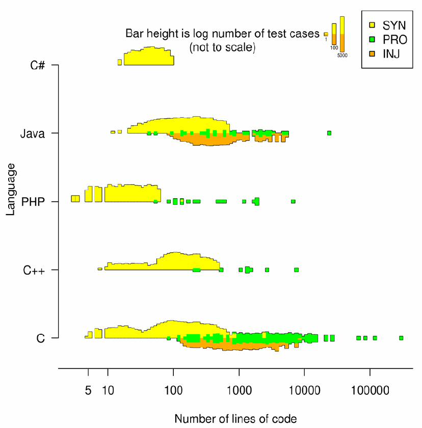
図9：SARDのテストケースの規模・種類・言語を示すグラフ。縦軸は言語（C、C++、PHP、Java、C#）、横軸はコード行数（5、10、100、1,000、10,000、100,000の対数目盛）。凡例はSYN（合成、黄色）、PRO（製品プログラム、緑）、INJ（脆弱性注入プログラム、橙）。棒の高さはテストケース数の対数を表し、縮尺どおりではない。
SYN
SYN（合成ケース）
未レビュー訳~ ~ D
原文のみ
Bar height is log number of test cases '?
棒の高さはテストケース数の対数を示す。
未レビュー訳c::=::=ii
原文のみ
PRO
PRO（製品プログラム）
未レビュー訳原文のみ
(not to scale)
（縮尺どおりではない）
未レビュー訳,oo~
原文のみ
INJ
INJ（脆弱性注入）
未レビュー訳原文のみ
C#
C#
未レビュー訳Java
Java
未レビュー訳 D ~
原文のみ
0) m
原文のみ
nr:==7
原文のみ
:::l 0)
原文のみ
PHP D
PHP
未レビュー訳Cm _J
原文のみ
原文のみ
C++
C++
未レビュー訳•• •
•原文のみ
C
未レビュー訳1000 10000 100000
1,000 10,000 100,000
未レビュー訳100
100
未レビュー訳5 10
5 10
未レビュー訳Number of lines of code
コード行数
未レビュー訳Figure 9: Graph of Size, Type, and Languages Of Test Cases in SARD
図9：SARDのテストケースの規模、種類、言語を示すグラフ
未レビュー訳The sixth instance of SATE began in FY 2017. reports and publicly reported their experiences at a The SAMATE prepares test cases to measure the workshop. The purpose of SATE is to understand the strengths of tools in fnding source code that may state of technology and society’s justifed confdence lead to serious breaches. More than a dozen tool in software. SATE VI has three tracks: the classic track, makers will run their software analysis tools on these a track to assess mobile application vetting services, test cases. NIST researchers, aided by others in the and the Ockham track for sound analysis. For more software assurance community, analyzed the tool information, see https://samate.nist.gov/SATE.html.
［左段］SATE第6回は2017年度に始まった。SAMATEは、重大な侵害につながり得るソースコードを検出するツールの能力を測定するテストケースを作成する。十数社のツール開発者が、これらのケースに対してソフトウェア分析ツールを実行する。NISTの研究者はソフトウェア保証コミュニティの協力を得て、ツールの報告を分析し、その経験を公開ワークショップで報告した。｜［右段］SATEの目的は、技術の現状と、ソフトウェアに対する社会の正当な信頼を理解することである。SATE VIには、従来型トラック、モバイルアプリ審査サービス評価トラック、健全な分析を扱うOckhamトラックの3つがある。詳細：https://samate.nist.gov/SATE.html
未レビュー訳ITL CYBERSECURITY PROGRAM AND PROJECTS | FY 2017
ITLサイバーセキュリティプログラムおよびプロジェクト｜2017年度
未レビュー訳4.Faulty Operation (FOP)–integer overfow,
4.異常動作（FOP）—整数オーバーフロー、
未レビュー訳Just as the medical profession has vocabulary to
医療分野に、解剖学的構造、症状、疾患を
未レビュー訳divide by zero, etc.;
ゼロ除算など。
未レビュー訳precisely indicate anatomy, symptoms, and diseases, the BF seeks to improve the science of secure software
正確に示す語彙があるように、BFは安全なソフトウェアの科学を進歩させるため、
未レビュー訳5.Memory Allocation (MAL)–double free,
5.メモリー割当て（MAL）—二重解放、
未レビュー訳by providing orthogonal, unambiguous language for
ソフトウェア専門家向けに、相互に独立した明確な用語を
未レビュー訳use after free, etc.;
解放後使用など。
未レビュー訳software professionals. The BF comprises classes of software faults, including their attributes, causes, and
BFは、属性、原因、結果を含むソフトウェア障害のクラスを定義する。
未レビュー訳6.Encryption (ENC)–including decryption,
6.暗号化（ENC）—復号など、
未レビュー訳consequences. Figure 10 illustrates the causal graph for bufer overfow (BOF) faults. FY 2017 updates
図10はバッファオーバーフロー（BOF）障害の因果グラフを示す。2017年度の更新では
未レビュー訳7.Verifcation (VRF), and
7.検証（VRF）、および
未レビュー訳include eight classes (including three cryptography
8つのクラス（うち3つは暗号関連）が含まれる。
未レビュー訳8.Key Management (KMN).
8.鍵管理（KMN）。
未レビュー訳classes):
クラス）：
未レビュー訳Defnitions, examples, and causal graphs of these
これらのクラスの定義、例、因果グラフ
未レビュー訳1.Injection (INJ)–SQL, OS, etc.; classes and links to publications are available at
1.［左段リスト1］インジェクション（INJ）—SQL、OSなど；｜［右段］刊行物へのリンクは
未レビュー訳2.Control of Interaction Frequency (CIF); https://samate.nist.gov/BF.
2.［左段リスト2］相互作用頻度制御（CIF）；｜［右段］https://samate.nist.gov/BFで入手できる。
未レビュー訳3.Bufer Overfow (BOF);
3.バッファオーバーフロー（BOF）；
未レビュー訳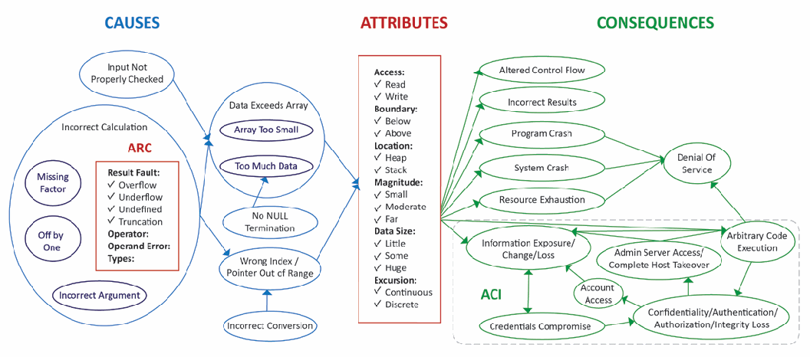
図10：バッファオーバーフロー（BOF）の因果グラフ。図は左の原因（CAUSES）、中央の属性（ATTRIBUTES）、右の結果（CONSEQUENCES）を矢印で結ぶ。原因側には入力未検証、誤計算、ARC、欠落要素、オフバイワン、誤った引数、配列サイズ不足、過剰データ、NULL終端なし、誤ったインデックス／ポインター範囲外、誤変換、および結果障害（オーバーフロー、アンダーフロー、未定義、切り詰め）、演算子・オペランド・型の誤りが示される。属性にはアクセス（読み取り／書き込み）、境界（下／上）、位置（ヒープ／スタック）、規模（小／中／Far）、データサイズ（少／Some／大）、除外（連続／離散）がある。結果には制御フロー変更、誤結果、プログラム／システムのクラッシュ、リソース枯渇、サービス拒否、情報の漏えい／変更／喪失、管理サーバーへのアクセス／ホスト完全乗っ取り、任意コード実行、アカウントアクセス、認証情報の侵害、機密性／認証／認可／完全性の喪失が含まれる。ACIも図中に表示。
CAUSES
原因
未レビュー訳ATTRIBUTES
属性
未レビュー訳CONSEQUENCES
結果
未レビュー訳Access: ✓ Read ✓ Write
アクセス：✓ 読み取り ✓ 書き込み
未レビュー訳Incorrect Results
誤った結果
未レビュー訳Boundary : ✓ Below ✓ Above
境界：✓ 下側 ✓ 上側
未レビュー訳ProgramCrash
プログラムクラッシュ
未レビュー訳Location:
位置：
未レビュー訳ARC
ARC
未レビュー訳✓ Heap
✓ ヒープ
未レビュー訳SystemCrash
システムクラッシュ
未レビュー訳✓ Stack
✓ スタック
未レビュー訳Result Fault:
結果障害：
未レビュー訳Magnit ude:
規模：
未レビュー訳✓ Overflow
✓ オーバーフロー
未レビュー訳✓ Small
✓ 小
未レビュー訳✓ Underflow
✓ アンダーフロー
未レビュー訳✓ Moderate
✓ 中程度
未レビュー訳✓ Undefined r::'\ ✓ Truncation
✓ 未定義 ✓ 切り詰め
未レビュー訳✓ Far Data Size:
✓ 遠距離 データサイズ：
未レビュー訳Operator:
演算子：
未レビュー訳✓ Little
✓ 少量
未レビュー訳~ Operand Error:
オペランドエラー：
未レビュー訳✓ Some
✓ 一部
未レビュー訳Types:
型：
未レビュー訳✓ Huge Excursion: ✓ Continuous ACI ✓ Discrete
✓ 大 除外：✓ 連続 ACI ✓ 離散
未レビュー訳IncorrectConversion
誤変換
未レビュー訳Figure 10: Causal Graph for Bufer Overfow
図10：バッファオーバーフロー（BOF）の因果グラフ
未レビュー訳CONTACT:
連絡先：
未レビュー訳Dr. Paul E. Black (301) 975-4794 paul.black@nist.goV
Paul E. Black博士（301）975-4794／paul.black@nist.gov
未レビュー訳NIST/ITL CYBERSECURITY PROGRAM ANNUAL REPORT 2017
NIST/ITLサイバーセキュリティプログラム年次報告書 2017
未レビュー訳S&T Education and Research (FASTER) Community
科学技術教育・研究（FASTER）コミュニティ
未レビュー訳FEDERAL CYBERSECURITY
連邦サイバーセキュリティ
未レビュー訳of Practice (CoP). Barry I. Schneider is co-chair of
実践共同体（CoP）。Barry I. Schneider氏は
未レビュー訳RESEARCH AND DEVELOPMENT
研究開発
未レビュー訳High End Computing (HEC) IWG. Chris Greer and Al Wavering from NIST’s Engineering Laboratory co-
ハイエンドコンピューティング（HEC）IWGの共同議長である。Chris Greer氏とAl Wavering氏は、NIST工学研究所からNITRDの
未レビュー訳(R&D)
（R&D）
未レビュー訳chair NITRD’s Cyber Physical Systems (CPS) IWG and the High Confdence Software and Systems (HCSS) IWG, respectively.
サイバー物理システム（CPS）IWGと高信頼ソフトウェア・システム（HCSS）IWGの共同議長をそれぞれ務める。
未レビュー訳Networking and Information Technology
ネットワーキング・情報技術
未レビュー訳Research and Development (NITRD) program Tim Polk is the principal NIST participant in the bi-provides a framework in which many federal agencies weekly coordination activities of the federal Special come together to coordinate their networking and Cyber Operations Research and Engineering (SCORE) IT research and development (R&D) eforts. NIST Committee. SCORE enables technology transfer remained committed to the value of communicating through the sharing of NIST cybersecurity expertise its R&D eforts to other federal colleagues and and publications with researchers throughout the identifying the opportunities to support R&D eforts Federal Government. The SCORE committee interacts throughout the Federal Government.
［左段］研究開発（NITRD）プログラムは、複数の連邦機関がネットワークおよびITの研究開発（R&D）活動を調整する枠組みを提供する。NISTは、自らのR&D活動を連邦政府の同僚と共有し、政府全体のR&Dを支援する機会を特定することの価値を重視し続けている。｜［右段］Tim Polkは、連邦特別サイバー作戦研究・工学（SCORE）委員会の週次調整活動に参加するNISTの主要メンバーである。SCOREは、NISTのサイバーセキュリティ専門知識と刊行物を連邦政府全体の研究者と共有して技術移転を可能にする。SCORE委員会は
未レビュー訳with federal leaders and reports to the National Science and Technology Council’s Committee on
［右段］SCORE委員会は連邦政府の幹部と連携し、国立科学技術会議の
未レビュー訳NIST is a consistent presence at the monthly
［左段］NISTは月例のサイバーセキュリティ会合に継続して参加し、
未レビュー訳Homeland and National Security.
［右段続き］国土・国家安全保障委員会に報告する。
未レビュー訳cybersecurity meetings with Bill Newhouse, National Cybersecurity Center of Excellence (NCCoE) Security All the NIST leaders for interagency coordination Engineer and the National Initiative for Cybersecurity leverage these working groups and committees to Education (NICE) Deputy Director, as the co-chair communicate powerfully about NIST’s research, of the Cyber Security and Information Assurance frameworks, and publications and bring back insights Interagency Working Group (CSIA IWG). During and activities relevant to NIST’s work. FY 2017, NIST provided updates to the CSIA IWG describing the updates to the NIST Cybersecurity FOR MORE INFORMATION, SEE: Framework, SP 800-53, Security and Privacy Controls https://www.nitrd.gov for Information Systems and Organizations, and the
［左段］NCCoEのセキュリティエンジニアでNICE副所長のBill Newhouse氏とともに、サイバーセキュリティ・情報保証省庁間作業部会（CSIA IWG）の共同議長を務める。2017年度には、CSIA IWGに対し、NISTサイバーセキュリティフレームワーク、SP 800-53「情報システムおよび組織のセキュリティとプライバシーの管理策」、およびNICEプログラムの更新を説明した。｜［右段］省庁間連携を担うNISTの各リーダーは、これらの作業部会・委員会を活用してNISTの研究、フレームワーク、刊行物を効果的に発信し、NISTの業務に役立つ知見と活動を持ち帰る。詳しくは：https://www.nitrd.gov
未レビュー訳CONTACT:
連絡先：
未レビュー訳NICE program.
原文のみ
Mr. Bill Newhouse
Bill Newhouse氏
未レビュー訳Naomi Lefkowitz, Senior Privacy Policy Advisor
Naomi Lefkowitz氏、プライバシー政策上級顧問
未レビュー訳(301) 975-0232
（301）975-0232
未レビュー訳at NIST, co-chairs the Privacy R&D IWG, which
NISTに所属するNaomi Lefkowitz氏は、プライバシーR&D省庁間作業部会（IWG）の共同議長を務める。同部会は、
未レビュー訳william.newhouse@nist.gov
william.newhouse@nist.gov
未レビュー訳coordinates the multidisciplinary research and development conducted by NITRD agencies that seek to produce knowledge and technologies that identify and mitigate emerging risks to our privacy, and that
NITRD機関が行う学際的な研究開発を調整し、プライバシーへの新たなリスクを特定・軽減する知識や技術の創出を目指すとともに、
未レビュー訳COMPUTER FORENSICS
コンピューターフォレンジック
未レビュー訳enables individuals, companies, and the government to beneft from technological advancements while being able to efectively balance the resulting benefts with resulting risks to privacy. The activity involves Digital evidence includes software, hardware, research into and development of methods for and data on computers and mobile devices (e.g., characterizing privacy expectations, understanding audio, video, and image fles). Digital evidence can privacy violations, engineering privacy-protecting be a part of investigating most crimes, since material systems, recovering from privacy violations, and the relevant to the crime may be recorded in digital form. impact of privacy on public policy and of public policy Methods for securely acquiring, storing and analyzing on privacy.
［左段］個人、企業、政府が技術の進歩から利益を得ながら、その便益とプライバシーリスクを適切に両立できるようにする。活動では、プライバシーへの期待を明らかにする方法の研究・開発、プライバシー侵害の理解、プライバシー保護システムの設計、侵害からの回復、公共政策がプライバシーに及ぼす影響とプライバシーが公共政策に及ぼす影響を扱う。｜［右段］デジタル証拠にはソフトウェア、ハードウェア、コンピューターやモバイル端末上のデータ（音声、動画、画像ファイルなど）が含まれる。犯罪に関連する資料がデジタル形式で記録されていることが多いため、犯罪捜査において重要な証拠となる。デジタル証拠を安全に取得・保存・分析する方法は
未レビュー訳digital evidence quickly and efciently are critical. ITL promotes the efcient and efective use of computer
迅速かつ効率的に実行することが重要である。ITLはコンピューター技術を効率的・効果的に用いて犯罪を捜査することを推進する。
未レビュー訳Ram Sriram is the co-chair of NITRD’s Software
NITRDのソフトウェア
未レビュー訳technology to investigate crimes. The project team
コンピューター技術を用いた犯罪捜査を推進する。プロジェクトチームは
未レビュー訳Productivity, Sustainability, and Quality (SPSQ)
生産性・持続可能性・品質（SPSQ）
未レビュー訳develops tools for testing computer forensic software,
コンピューターフォレンジックソフトウェアを試験するツールを開発し、
未レビュー訳Interagency Working Group (IWG). Robert B. Bohn
省庁間作業部会（IWG）の共同議長をRam Sriram氏が務める。Robert B. Bohn氏は、NITRDのFASTER（科学技術教育・研究の迅速化）コミュニティ・オブ・プラクティスの共同議長である。
未レビュー訳including test criteria and test sets. ITL also maintains 36
試験基準とテストセットを含む。ITLはまた、
未レビュー訳is the co-chair of NITRD’s Faster Administration of
原文のみ
the National Software Reference Library (NSRL) – a
National Software Reference Library（NSRL）は、
未レビュー訳ITL CYBERSECURITY PROGRAM AND PROJECTS | FY 2017
ITLサイバーセキュリティプログラムおよびプロジェクト｜2017年度
未レビュー訳vast archive of published software applications that is Tool Testing (CFTT) project at NIST is to establish an important resource for both criminal investigators a methodology for testing computer forensic
［左段］公開ソフトウェア製品の膨大なアーカイブであり、犯罪捜査官と｜［右段］NISTのコンピューターフォレンジックツールテスト（CFTT）プロジェクトは、コンピューターフォレンジック
未レビュー訳software tools by the development of general tool
ソフトウェアツールの試験方法を、一般的なツール
未レビュー訳and historians.
［左段］歴史研究者双方にとって重要な資源である。｜［右段］および試験用ハードウェア。
未レビュー訳specifcations, test procedures, test criteria, test sets,
仕様、試験手順、試験基準、テストセット、
未レビュー訳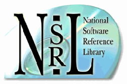
National Software Reference Library（NSRL）のロゴ。大きな『NSRL』の文字と正式名称『National Software Reference Library』が示されている。
and test hardware. The project is intended to provide the information necessary for toolmakers to improve tools, for users to make informed choices about acquiring and using computer forensics tools, and for interested parties to understand the capabilities of the tools. The project team’s approach for testing computer forensic tools is based on well-recognized
このプロジェクトは、ツール開発者がツールを改善し、利用者がコンピューターフォレンジックツールの取得・使用について十分な情報に基づいて選択し、関係者がツールの能力を理解するために必要な情報を提供することを目的とする。
未レビュー訳National Software Reference Library
National Software Reference Library
未レビュー訳international methodologies for conformance testing
国際的に認められた適合性試験と品質試験の方法論を基礎とし、
未レビュー訳The NSRL is designed to collect software and quality testing that ensures that forensic software from various sources and incorporate fle profles tools consistently produce accurate and objective test computed from this software into a Reference Data results. Set (RDS) of information. The RDS can be used by law
［左段］NSRLは、さまざまな出典のソフトウェアを収集し、そこから算出したファイルプロファイルを情報の参照データセット（RDS）に登録する。RDSは法執行機関、｜［右段］フォレンジックソフトウェアツールから正確で客観的なテスト結果が一貫して得られることを確保する。
未レビュー訳In FY 2016, the CFTT project expanded to allow
2016年度、CFTTプロジェクトは、
未レビュー訳enforcement, government, and industry organizations
政府、産業界の組織が
未レビュー訳forensics testers to use the NIST testing methodology
各自の研究室でNISTの試験方法を使用し、
未レビュー訳to review fles on a computer by matching fle profles
RDS内のファイルプロファイルと照合してファイルを確認し、
未レビュー訳in their own labs and to produce standardized test
各自の研究室でNISTの試験方法を使い、標準化された
未レビュー訳in the RDS. This will help alleviate much of the efort
RDS内の情報を使えば、
未レビュー訳reports for disk imaging forensic tools. In FY 2017,
ディスクイメージング用フォレンジックツールの試験報告書を作成できるようにし、2017年度には、
未レビュー訳involved in determining which fles are important as
証拠として重要なファイルを特定する作業にかかる労力の多くを軽減できる。
未レビュー訳federated testing was further expanded with three
連合型試験がさらに拡大され、3つの
未レビュー訳evidence on computers or fle systems that have been
コンピューターやファイルシステム上にあるこれらの証拠は、
未レビュー訳major updates: a revision to disk-imaging testing, the
主な更新が行われた。ディスクイメージング試験の改訂、
未レビュー訳seized as part of criminal investigations. The NSRL
犯罪捜査の一環で押収されたものである。NSRLは
未レビュー訳addition of mobile device tool testing and hardware
モバイル端末ツールの試験とハードウェア
未レビュー訳also provides a research environment to promote the
さらに研究環境を提供し、
未レビュー訳write-blocker testing. In FY 2018, the project will be
ライトブロッカー試験の追加が含まれる。2018年度には、プロジェクトを拡張し、
未レビュー訳development of new forensics techniques and other
新たなフォレンジック技術やその他の
未レビュー訳expanded to support string searching and forensic
文字列検索とフォレンジック
未レビュー訳applications in computer science.
コンピューターサイエンス分野の応用の開発を促進する。
未レビュー訳media preparation. The forensic community is
メディアの準備を支援する。フォレンジック分野のコミュニティは
未レビュー訳The RDS continues to be the premier software beginning to use federated testing to test tools and resource and, in FY 2017, the NSRL published four share test reports. The CFTT project also maintains the releases. There are currently 23,000 microcomputer Forensics Tool Catalog and the Computer Forensics applications and 160,000 mobile device applications Reference Data Sets (CFReDS). The Tool Catalog yielding a combined total of 326 million fles. In FY website is a community-sourced catalog of forensic 2017, the NSRL was expanded to include mobile tools aided by a taxonomy of forensic tools. The Tool applications and to include the profles obtained from Catalog grew by 17 tools in FY 2017. The CFReDS data
［左段］RDSは主要なソフトウェア資源であり、2017年度にNSRLは4回のリリースを公開した。現在、マイクロコンピューター向けアプリが23,000件、モバイル端末向けアプリが160,000件あり、合計3億2,600万のファイルを含む。2017年度には、NSRLを拡張し、モバイルアプリと、｜［右段］連合型試験によるツールの試験と試験報告書の共有が始まっている。CFTTプロジェクトはフォレンジックツールカタログとコンピューターフォレンジック参照データセット（CFReDS）も管理する。ツールカタログは、分類体系を備えたコミュニティ作成のフォレンジックツールカタログであり、2017年度には17ツール増えた。CFReDSデータ
未レビュー訳sets are used in a variety of settings, such as university
セットは大学などで利用され、
未レビュー訳installing and exercising applications.
アプリをインストールして実行することで得られるプロファイルも含めた。
未レビュー訳classes, to try out forensics tools on known data.
既知のデータを使ってフォレンジックツールを試すために利用される。
未レビュー訳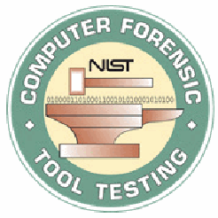
Computer Forensics Tool Testing（CFTT）プロジェクトの円形ロゴ。外周に『COMPUTER FORENSIC TOOL TESTING』、中央にNISTの計測器を示す図案がある。
FOR MORE INFORMATION, SEE:
詳しくは次を参照：
未レビュー訳https://www.nsrl.nist.gov, https://toolcatalog.nist.gov, https://www.cfreds.nist.gov. and https://www.cftt.nist.gov
https://www.nsrl.nist.gov ／ https://toolcatalog.nist.gov ／ https://www.cfreds.nist.gov ／ https://www.cftt.nist.gov
未レビュー訳CONTACTS:
連絡先：
未レビュー訳Mr. Doug White
Doug White氏
未レビュー訳Dr. Jim Lyle
ジム・ライル博士
未レビュー訳(301) 975-4761
(301) 975-4761
未レビュー訳(301) 975-3270
(301) 975-3270
未レビュー訳Computer Forensics Tool Testing Project
コンピュータフォレンジックツールテストプロジェクト
未レビュー訳doug.white@nist.gov james.lyle@nist.gov
doug.white@nist.gov james.lyle@nist.gov
未レビュー訳There is a critical need in the law enforcement community to ensure the reliability of computer 37 forensic tools. The goal of the Computer Forensic
法執行機関コミュニティにおいて、コンピュータ37フォレンジックツールの信頼性を確保することに対する極めて重要なニーズが存在する。コンピュータフォレンジックの目標は
未レビュー訳NIST/ITL CYBERSECURITY PROGRAM ANNUAL REPORT 2017
NIST/ITL サイバーセキュリティプログラム年次報告書 2017
未レビュー訳OPERATE OVERSEE PROTECT
運用／監督／保護
未レビュー訳COLLECT
収集
未レビュー訳SECURELY
安全に
未レビュー訳AND
および
未レビュー訳AND INVESTIGATE
および調査
未レビュー訳AND
および
未レビュー訳AND
および
未レビュー訳ANALYZE
分析
未レビュー訳PROVISION
提供
未レビュー訳MAINTAIN GOVERN DEFEND
保守／統治／防御
未レビュー訳OPERATE
運用
未レビュー訳Figure 11: The Seven Categories of the NICE Framework
図11：NICEフレームワークの7つのカテゴリ
未レビュー訳In support of goal 3, NICE published SP 800-181,
目標3を支援するため、NICEはSP 800-181を、
未レビュー訳CYBERSECURITY AWARENESS,
サイバーセキュリティの意識向上、
未レビュー訳The NICE Framework, in August 2017 (see https://
「The NICE Framework（NICEフレームワーク）」として2017年8月に刊行した（参照：https://
未レビュー訳TRAINING, EDUCATION, AND
研修、教育、および
未レビュー訳nist.gov/nice/framework). The NICE Framework establishes a taxonomy and common lexicon that
nist.gov/nice/framework）。NICEフレームワークは、共通の分類体系と用語体系を定めており、
未レビュー訳OUTREACH
アウトリーチ
未レビュー訳is to be used to describe all cybersecurity work and workers, irrespective of where or for whom the work
これは、サイバーセキュリティ業務と従事者について、その業務が行われる場所や対象者を問わず記述するために
未レビュー訳National Initiative for Cybersecurity is performed. Figure 11 shows the seven categories of
［左段］サイバーセキュリティ教育国家イニシアティブ｜［右段］業務が行われる。Figure 11はNICEフレームワークの7つのカテゴリを示す。
未レビュー訳the NICE Framework. These categories further break
これらのカテゴリはさらに
未レビュー訳Education (NICE)
（NICE）
未レビュー訳down into Specialty Areas, Work Roles, Tasks, and
専門分野、職務、タスク、および
未レビュー訳Since 2010 NIST’s National Initiative for Knowledge, Skills, and Abilities (KSAs). Cybersecurity Education (NICE) seeks to foster,
［左段］2010年以来、NISTのサイバーセキュリティ教育国家イニシアティブ（NICE）は、人材を育成・活性化し、｜［右段］知識、スキル、能力（KSA）に細分化される。
未レビュー訳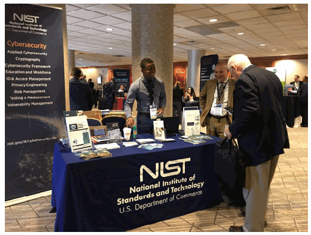
NICEのClarence WilliamsとRodney Petersenが、CyberSecureGov会議のNISTブースで参加者と話している。
energize, and promote a robust network and an integrated ecosystem of cybersecurity education, training, and workforce development. NICE has been focusing on eforts to achieve this by aligning to three goals: 1) accelerate learning and skills development, 2) nurture a diverse learning community, and 3) guide career development and workforce planning.
堅固なネットワークと、サイバーセキュリティ教育・研修・人材育成の統合エコシステムを育成・活性化し、推進することを目指している。NICEは、3つの目標に沿ってこの実現に取り組んできた。すなわち、1）学習とスキル開発の加速、2）多様な学習コミュニティの育成、3）キャリア開発と人材計画の指針を示すことである。
未レビュー訳In support of goal 1, in November 2016, CyberSeek was launched to provide a visualization of the demand for and supply of cybersecurity workers across the nation (see http://cyberseek.org). At its launch, the tool also provided a visualization of career pathways in cybersecurity. The data from this tool, in part, has helped NICE develop an executive overview
目標1を支援するため、2016年11月にCyberSeekが公開された。このツールは、全米におけるサイバーセキュリティ人材の需要と供給を可視化する（http://cyberseek.org）。公開時には、サイバーセキュリティ分野のキャリアパスも可視化していた。このツールのデータは、NICEによるエグゼクティブ・オーバービューの作成に一部活用され、
未レビュー訳Figure 12: Clarence Williams, Lead for Government
図12：NICEの政府連携担当Clarence Williamsと、
未レビュー訳white paper on Cybersecurity Workforce Demand. In
サイバーセキュリティ人材需要に関する白書の作成に役立った。2017会計年度には、
未レビュー訳Engagement at NICE, and Rodney Petersen,
NICEディレクターのRodney Petersenが、
未レビュー訳FY 2017, NICE also supported goal one through the
NICEは、第1の目標も次の取り組みを通じて支援した。
未レビュー訳Director of NICE, speak with an attendee at the
参加者と話している様子
未レビュー訳development of a paper regarding Cybersecurity
サイバーセキュリティ見習い制度に関する論文を作成した。
未レビュー訳CyberSecureGov Conference in Washington, D.C.
（ワシントンD.C.で開催されたCyberSecureGov会議にて）。
未レビュー訳Apprenticeships. This report and other white papers developed by NICE authors are available at https://
この報告書およびNICEの執筆者が作成したその他の白書は、次のURLで公開されている：https://
未レビュー訳NICE continued its coordination with academic,
NICEは年間を通じて、学術界、
未レビュー訳www.nist.gov/itl/applied-cybersecurity/nice/
www.nist.gov/itl/applied-cybersecurity/nice/
未レビュー訳industry and government partners throughout the
産業界および政府機関のパートナーとの連携を継続し、
未レビュー訳resources/one-pagers.
resources/one-pagers.
未レビュー訳year at various meetings, workshops and events. In August 2017, NICE held a workshop in Chicago, Illinois.
各種会議、ワークショップ、イベントに参加した。2017年8月には、イリノイ州シカゴでワークショップを開催した。
未レビュー訳In support of goal 2, NICE hosted a Veterans in
目標2を支援するため、NICEは2017年3月に退役軍人向け
未レビュー訳This workshop, along with a Request for Information
このワークショップと、
未レビュー訳Cybersecurity Workshop in March 2017. This workshop
サイバーセキュリティ・ワークショップを開催した。このワークショップには
未レビュー訳that NICE issued, provided information to inform
NICEが発行した情報提供依頼（RFI）は、検討作業に必要な情報を提供し、
未レビュー訳convened approximately 40 representatives of federal
連邦政府の代表者約40人が参加した。
未レビュー訳work and to prepare a report to the President on the
大統領に提出する報告書の作成にも活用された。その報告書には、
未レビュー訳and state government, branches of the military,
州政府、軍の各部門、
未レビュー訳fndings and recommendations about supporting the
国のサイバーセキュリティ人材を支援するための所見と提言、
未レビュー訳industry, and workforce development organizations
産業界および人材育成機関の代表者が参加し、
未レビュー訳growth and sustainment of the nation’s cybersecurity
国のサイバーセキュリティ人材の成長と持続的な確保を支援するための
未レビュー訳to explore issues, discuss initiatives and better
課題を探り、取り組みについて議論し、
未レビュー訳workforce in the public and private sectors.
公的部門と民間部門の人材について、
未レビュー訳understand the gaps that exist in helping our veterans transition to careers in cybersecurity.
退役軍人のサイバーセキュリティ分野への転職を支援するうえで存在する課題を、より深く理解することを目的とした。
未レビュー訳ITL CYBERSECURITY PROGRAM AND PROJECTS | FY 2017
ITLサイバーセキュリティプログラムおよびプロジェクト｜2017年度
未レビュー訳In FY 2018, NICE will continue to promote and organized around several primary content types to coordinate annual NICE activities such as the NICE make information easier to fnd and maintain: projects, Quarterly eNewsletter; the NICE Webinar Series; the publications, news, events and presentations. A new NICE Conference to be held on November 7-8, 2017 taxonomy of topics is used to tag content site-wide, in Dayton, Ohio; and the NICE K-12 Cybersecurity and an online, searchable glossary of information Education Conference to be held December 4-5, 2017 security terminology expands on the terms identifed in Nashville, Tennessee. NICE will also kick of the in NISTIR 7298 Revision 2. One of the most noticeable frst annual National Cybersecurity Career Awareness changes is a vastly improved publications section, in Week on November 13-18, 2017 to focus local, terms of content, searchability, and browsing. At the regional, and national interest to inspire, educate, and end of FY 2017, the site provided detailed information engage children through adults to pursue careers in about more than 1,200 of NIST’s current and historical
［左段］2018年度もNICEは、NICE Quarterly eNewsletter、NICE Webinar Series、2017年11月7～8日にオハイオ州デイトンで開催予定のNICE Conference、2017年12月4～5日にテネシー州ナッシュビルで開催予定のNICE K-12 Cybersecurity Education Conferenceなど、NICEの年間活動を調整し、推進する。また、2017年11月13～18日に第1回National Cybersecurity Career Awareness Weekを開始し、地域・州・全国の関心を集め、子どもから成人までを鼓舞し、教育し、参加を促して、｜［右段］情報を見つけやすく管理しやすくするため、コンテンツは主にプロジェクト、刊行物、ニュース、イベント、発表に整理されている。サイト全体で新たなトピック分類に基づきコンテンツにタグを付け、情報セキュリティ用語のオンライン検索可能な用語集を用意している。この用語集はNISTIR 7298 Revision 2で特定された用語を拡張する。最も顕著な変更の1つは刊行物セクションの大幅な改善で、内容、検索性、閲覧性が向上した。2017年度末には、サイトに1,200件を超えるNISTの現行および過去の
未レビュー訳information security publications.
情報セキュリティ刊行物について詳細情報が掲載されていた。
未レビュー訳cybersecurity.
サイバーセキュリティ分野のキャリアを追求するよう促す。
未レビュー訳The CSRC Redesign Team designed the site’s
CSRC再設計チームは、サイトのアーキテクチャとインターフェースを設計し、
未レビュー訳FOR MORE INFORMATION, SEE:
詳細情報：
未レビュー訳architecture and interface to signifcantly improve
サイトのナビゲーションを大幅に改善し、
未レビュー訳https://www.nist.gov/itl/applied-cybersecurity/nice
https://www.nist.gov/itl/applied-cybersecurity/nice
未レビュー訳site navigation, search, and the ability of ITL staf to
検索機能と、ITL職員がコンテンツを
未レビュー訳CONTACTS:
連絡先：
未レビュー訳maintain and contribute content. The site also uses responsive design to greatly improve CSRC’s usability
保守・提供する能力を高めた。また、レスポンシブデザインを採用し、CSRCの使いやすさを大幅に向上させ、
未レビュー訳Mr. Rodney Petersen Ms. Danielle Santos
Rodney Petersen氏 Danielle Santos氏
未レビュー訳on mobile devices. More than 21,000 individual
モバイル端末でのCSRCの使いやすさを大幅に高めている。さらに、個々のコンテンツ項目21,000件以上が
未レビュー訳(301) 975-8897
（301）975-8897
未レビュー訳(301) 975-5048
（301）975-5048
未レビュー訳content items were transferred from the legacy site,
旧サイトから移行され、
未レビュー訳rodney@nist.gov
rodney@nist.gov
未レビュー訳danielle.santos@nist.gov
danielle.santos@nist.gov
未レビュー訳and in February 2017, ITL successfully launched a beta version of the new site. Feedback from beta-
2017年2月には、ITLが新サイトのベータ版を公開した。ベータ版
未レビュー訳Computer Security Resource Center site users over seven months was incorporated by
［左段］コンピューター・セキュリティ・リソース・センター｜［右段］サイトの利用者から7か月間に寄せられた意見を、
未レビュー訳the CSRC Redesign Team to fx bugs, implement
CSRC再設計チームが取り入れ、不具合の修正、機能強化、サイトの外観や操作感の改善に反映した。
未レビュー訳(CSRC)
（CSRC）
未レビュー訳enhancements, and refne the site’s look and feel. The
サイトの外観や操作感を改善した。その
未レビュー訳For more than 20 years, the CSRC website has team considered all comments it received, and made provided stakeholders with signifcant information every efort to implement those suggestions. After about ITL’s cybersecurity research and testing making signifcant, gradual improvements to the beta programs. Consistently one of the most-visited site, NIST launched the new CSRC on September 18, websites at NIST, CSRC is used by several ITL 2017, while simultaneously retiring the legacy site. divisions to communicate information about NIST’s
［左段］CSRCウェブサイトは20年以上にわたり、ITLのサイバーセキュリティ研究・試験プログラムに関する重要な情報を関係者に提供してきた。NISTで最も多く閲覧されるサイトの1つであり、複数のITL部門が、NISTの｜［右段］チームは受け取った意見をすべて検討し、提案を実現するよう努めた。ベータ版に段階的かつ大幅な改善を加えた後、NISTは2017年9月18日に新しいCSRCサイトを公開し、同時に旧サイトを廃止した。
未レビュー訳In FY 2018, the CSRC Redesign Team will continue
2018年度には、CSRC再設計チームは引き続き
未レビュー訳cybersecurity and privacy programs and projects,
サイバーセキュリティとプライバシーに関するプログラムおよびプロジェクト、
未レビュー訳to enhance the content, functionality and usability of
新サイトのコンテンツ、機能、使いやすさを向上させ、
未レビュー訳research, validation testing, software tools, and other
研究、妥当性確認試験、ソフトウェアツール、その他の
未レビュー訳the new site, striving to provide a better and more
利用者にとって、より良く、より
未レビュー訳areas of interest to NIST’s customers in government,
政府、産業界、学界などのNIST利用者が関心を持つ
未レビュー訳useful experience to site users.
有用な利用体験を提供することを目指す。
未レビュー訳industry, academia and elsewhere, both within the U.S. and globally.
米国内外の産業界、学界その他の利用者に情報を伝えている。
未レビュー訳The CSRC team maintains an email subscription list with more than 78,000 subscribers worldwide.
CSRCチームは、世界で78,000人を超える購読者を持つメール配信リストを運営している。
未レビュー訳The CSRC website serves as a primary NIST
CSRCウェブサイトは、NISTにおける主要な
未レビュー訳Subscribers receive notifcations when news updates,
ニュースの更新、
未レビュー訳repository of cybersecurity and privacy standards,
サイバーセキュリティとプライバシーに関する標準、
未レビュー訳event details, and publication information—including
イベント情報、刊行物情報（
未レビュー訳guidelines, and technical documents. Refer to the
ガイドライン、技術文書のリポジトリである。詳細は、
未レビュー訳the release of draft publications for public comment—
草案刊行物のパブリックコメント募集開始を含む）がCSRCに掲載されると、
未レビュー訳Publications Released in FY 2017 section of this
ITLサイバーセキュリティプログラムが2017年度に公開した刊行物の詳細については、
未レビュー訳are posted to CSRC. To review the available lists
購読者に通知が届く。配信リストを確認し、
未レビュー訳annual report for details about the ITL Cybersecurity
本年次報告書の
未レビュー訳and subscribe, visit https://csrc.nist.gov/ and in the
購読するには、https://csrc.nist.gov/ にアクセスし、ページ下部の
未レビュー訳Program’s publications released in FY 2017.
「2017年度に公開された刊行物」セクションを参照されたい。
未レビュー訳page footer click either the envelope icon or the
封筒アイコンまたは「Subscribe to CSRC Updates」
未レビュー訳CSRC’s most signifcant event occurred in “Subscribe to CSRC Updates” link. Additional NIST/ITL September 2017, with the launch of a completely Cybersecurity topics are available including: Federal redesigned, content management system-based Information Security Management Act (FISMA) news; website. In addition to aligning with the main NIST Cybersecurity Framework; National Initiative for website’s look and feel, the new CSRC website is Cybersecurity Education (NICE); ITL’s Trusted Identity
［左段］CSRCにとって最も大きな出来事は、2017年9月に、全面的に再設計されたコンテンツ管理システムベースのウェブサイトを公開したことだった。NISTのメインサイトと外観・操作感をそろえることに加え、新しいCSRCウェブサイトは｜［右段］リンクをクリックする。さらに、NIST/ITLのサイバーセキュリティ関連情報として、連邦情報セキュリティ近代化法（FISMA）のニュース、サイバーセキュリティ・フレームワーク、サイバーセキュリティ教育国家イニシアティブ（NICE）、ITLのTrusted Identity
未レビュー訳Group (TIG), and several lists for the NCCoE.
Group（TIG）およびNCCoEの各種リストがある。
未レビュー訳NIST/ITL CYBERSECURITY PROGRAM ANNUAL REPORT 2017
NIST/ITLサイバーセキュリティプログラム年次報告書 2017
未レビュー訳The Forum conducts quarterly meetings and an
フォーラムは四半期ごとの会合と、
未レビュー訳FOR MORE INFORMATION, SEE:
詳細情報：
未レビュー訳annual two-day conference for a discussion of current
年1回の2日間会議を開催し、
未レビュー訳https://csrc.nist.gov
https://csrc.nist.gov
未レビュー訳issues and topics of interest to those responsible for
連邦機関の情報セキュリティプログラムを支援する担当者に関わる、
未レビュー訳CONTACTS:
連絡先：
未レビュー訳supporting the information security programs of federal agencies.
現状の課題や関心事項について議論する。
未レビュー訳Questions regarding the CSRC website can be sent to the CSRC Webmasters at:
CSRCウェブサイトに関する質問は、CSRCのウェブ管理者宛てにお送りください：
未レビュー訳Discussion topics at the quarterly FCSM meetings
四半期ごとのFCSM会合での議題は
未レビュー訳webmaster-csrc@nist.gov
webmaster-csrc@nist.gov
未レビュー訳in FY 2017 included briefngs on:
2017年度には、次の説明・報告を含んでいた：
未レビュー訳Mr. Patrick O’Reilly
Patrick O’Reilly氏
未レビュー訳Ms. Nicole Keller
Nicole Keller氏
未レビュー訳•The National Cybersecurity Center of
•National Cybersecurity Center of
未レビュー訳(301) 975-4751
（301）975-4751
未レビュー訳(301) 975-3648
（301）975-3648
未レビュー訳Excellence (NCCoE) - Federally Funded
Excellence（NCCoE）―連邦政府出資の
未レビュー訳patrick.oreilly@nist.gov nicole.keller@nist.gov
patrick.oreilly@nist.gov nicole.keller@nist.gov
未レビュー訳Research and Development Center (FFRDC),
研究開発センター（FFRDC）、
未レビュー訳•Developing an information security continuous
•情報セキュリティ継続監視（ISCM）評価手法の策定、
未レビュー訳Federal Computer Security Managers’
連邦コンピューターセキュリティ管理者
未レビュー訳monitoring (ISCM) Assessment Methodology,
継続監視（ISCM）評価手法、
未レビュー訳(FCSM) Forum
（FCSM）フォーラム
未レビュー訳•Security Automation and Continuous Monitoring,
•セキュリティ自動化と継続的モニタリング、
未レビュー訳The Federal Computer Security Managers’ Forum (the Forum) is sponsored by NIST to promote the
連邦コンピューターセキュリティ管理者フォーラム（以下「フォーラム」）は、連邦機関間における
未レビュー訳•Demonstration of a Continuous Diagnostic
•継続的診断
未レビュー訳sharing of security-related information among federal
セキュリティ関連情報の共有を促進するため、NISTが後援している。フォーラムには1,000人を超える会員が参加しており、
未レビュー訳Monitoring Instance,
モニタリング・インスタンスの実演、
未レビュー訳agencies. The Forum, which serves more than 1,000 members, strives to provide an ongoing opportunity • Guidance for Assigning New Cybersecurity for managers of federal information security
［左段］連邦機関の情報セキュリティプログラムの管理者に継続的な機会を提供し、｜［右段］新しいサイバーセキュリティコードの割り当てに関する指針
未レビュー訳Codes to Positions with IT/Cybersecurity/
IT／サイバーセキュリティ／
未レビュー訳programs to exchange information security materials
情報セキュリティ関連資料を交換するため、
未レビュー訳Cyber-related Functions and the New
サイバー関連機能を持つ職務、および新しい
未レビュー訳in a timely manner, build upon the experiences of
迅速に、他のプログラムの経験を取り入れ、
未レビュー訳Cybercareers.gov Site,
Cybercareers.govサイト、
未レビュー訳other programs, and to reduce possible duplication of eforts. It provides a mechanism for NIST to share • Using Risk Management to Improve Privacy in
［左段］取り組みの重複を減らす。また、フォーラムはNISTが｜［右段］リスク管理を用いた連邦システムのプライバシー保護改善、
未レビュー訳Federal Systems,
連邦システムにおけるプライバシー保護の改善、
未レビュー訳information directly with federal agency information security managers in fulfllment of NIST’s leadership
連邦機関の情報セキュリティ管理者と直接情報を共有し、
未レビュー訳•National Cybersecurity and Communications
•国家サイバーセキュリティ・通信統合センター
未レビュー訳mandate under FISMA. The Forum also assists NIST
FISMAに基づくNISTの指導的責務を果たせるようにする仕組みを提供する。さらに、フォーラムはNISTが
未レビュー訳Integration Center (NCCIC) 101, and
（NCCIC）101、および
未レビュー訳in establishing and maintaining relationships with other individuals and organizations that are actively • Creating a Cybersecurity Scorecard for a addressing information security issues within the
［左段］連邦政府内の情報セキュリティ問題に積極的に取り組む他の個人・組織との関係を築き、維持できるよう支援する。2017年度には、CSDのVictoria Pillitteri氏とJody Jacobs氏が共同議長を務め、｜［右段］連邦機関向けサイバーセキュリティ・スコアカードを作成する（
未レビュー訳Federal Agency.
連邦機関向け）。
未レビュー訳Federal Government. During FY 2017, CSD’s Victoria Pillitteri and Jody Jacobs served as Co-Chairs, and FY 2017’s annual two-day meeting was held at Peggy Himes from ACD served as the Secretariat of NIST on June 20-21, 2017 with over 220 attendees. the Forum, providing administrative and logistical Presentations included the current technical, support. Additionally, during FY 2017, the FCSM operational and management information systems webpage was signifcantly restructured and updated security topics and updates on the information to ensure that presentation information, both current system security activities of OMB, General Services and archived, is delivered as efciently and efectively Administration (GSA), Department of Homeland
［左段］ACDのPeggy Himes氏がフォーラムの事務局を務め、管理・運営面を支援した。また2017年度にはFCSMのウェブページを大幅に再構成・更新し、現行および過去の発表情報を効率的かつ効果的に届けられるよう｜［右段］2017年度の年次2日間会議は2017年6月20～21日にNISTで開催され、220人を超える参加者が出席した。発表では、情報システムセキュリティに関する技術面・運用面・管理面の最新トピックと、OMB、General Services Administration（GSA）、Department of Homeland
未レビュー訳Security (DHS), Department of Health and Human
Security（DHS）、Department of Health and Human
未レビュー訳as possible.
にした。
未レビュー訳Services (HHS), NARA, Internal Revenue Service (IRS),
Services（HHS）、NARA、Internal Revenue Service（IRS）、
未レビュー訳The Forum maintains an extensive email National Weather Service (NOAA), Ofce of Personnel subscription service/listserv. Participation in the Management (OPM), and NIST. A frst ever “ask the service is restricted to those Federal and State experts” panel was held where attendees could ask Government employees and their designated support subject matter experts on security, privacy, and contractors with a role in the management of their procurement-related questions. Most presentations organization’s information system security program. from the two-day ofsite and monthly meetings are The email listserv ofers an open forum for information available online (see https://csrc.nist.gov/Projects/ sharing of best practices and recommendations, and Forum/Archived-Events-and-Presentations). serves as a resource for this community of interest.
［左段］フォーラムは大規模なメール購読サービス／メーリングリストを運営している。参加できるのは、連邦政府または州政府の職員、および組織の情報システムセキュリティプログラムの管理を担う指定支援請負業者に限られる。このメーリングリストは、ベストプラクティスや提言を共有するオープンな場であり、この関心領域のコミュニティにとっての情報源となっている。｜［右段］National Weather Service（NOAA）、Office of Personnel Management（OPM）、NISTの情報システムセキュリティ活動の最新情報も発表された。初めて「専門家に聞く」パネルが開催され、参加者はセキュリティ、プライバシー、調達に関する質問を専門家に尋ねることができた。2日間の会議および月例会議の発表の大半は、https://csrc.nist.gov/Projects/Forum/Archived-Events-and-Presentations で閲覧できる。
未レビュー訳ITL CYBERSECURITY PROGRAM AND PROJECTS | FY 2017
ITLサイバーセキュリティプログラムおよびプロジェクト｜2017年度
未レビュー訳The following is a list of presentations that were Federal Information Systems Security given at the annual two-day meeting:
［左段］以下は年次2日間会議で行われた発表の一覧である：｜［右段］連邦情報システムセキュリティ教育者協会
未レビュー訳Educators’ Association (FISSEA)
（FISSEA）
未レビュー訳•Overview of SP 800-184, Guide for The Federal Information Systems Security Cybersecurity Event Recovery Educators’ Association (FISSEA), founded in 1987, is an organization hosted by NIST for information system
•［左段］SP 800-184『サイバーセキュリティ事象からの復旧ガイド』の概要｜［右段］FISSEAは1987年に設立され、情報システム
未レビュー訳•FedRAMP Tailored security professionals to assist federal agencies in
•［左段］FedRAMP Tailored｜［右段］セキュリティ専門家のためにNISTが主催する組織であり、連邦機関が
未レビュー訳•Overview of the Software Quality Assurance meetingtheirinformationsystem’ssecurityawareness, Project and Software Assurance Marketplace training, and education responsibilities. FISSEA strives to elevate the general level of information system
•［左段］ソフトウェア品質保証プロジェクトおよびソフトウェア保証マーケットプレイスの概要｜［右段］自組織の情報システムに関するセキュリティ意識向上、研修、教育の責務を果たすのを支援する。FISSEAは情報システムの
未レビュー訳•Applying the Cybersecurity Framework in security knowledge for the Federal Government Federal Agencies: Presentation and Panel and the federal workforce. It also seeks to assist the Discussion professional development of its members.
•［左段］連邦機関におけるサイバーセキュリティ・フレームワークの適用：発表とパネル討論｜［右段］セキュリティ知識の全般的な水準を連邦政府および連邦職員の間で高め、会員の専門能力開発も支援する。
未レビュー訳•Top Down vs. Bottom Up Governance of Risk, FISSEA membership is open to information system What’s Best? security professionals, professional trainers and educators, and managers responsible for information
•［左段］リスク管理のトップダウン方式とボトムアップ方式：どちらがよいか？｜［右段］FISSEAの会員には、情報システムセキュリティ専門家、専門の研修・教育担当者、および情報
未レビュー訳•Cybersecurity Dashboard on a Shoestring system security training programs in federal agencies, Budget as well as contractors of these agencies and faculty
•［左段］低予算で実現するサイバーセキュリティ・ダッシュボード｜［右段］システムセキュリティ研修プログラムを担当する連邦機関の管理者、各機関の請負業者、さらに
未レビュー訳•High Vulnerability Asset Overlay members of accredited educational institutions who are involved in information security training and
•［左段］高脆弱性資産のオーバーレイ｜［右段］情報セキュリティの研修・教育に携わる認定教育機関の教員も含まれる。
未レビュー訳•Pushing Computers to the Edge: Next education. Willingness to share products, information, Generation Security and Privacy Controls for and experiences is all that is required to become a Systems and IoT Devices FISSEA member. A working group meets monthly to
•［左段］コンピューターをエッジへ：次世代システムとIoTデバイスのセキュリティおよびプライバシー管理｜［右段］製品、情報、経験を共有する意思があればFISSEA会員になれる。業務運営のため、作業部会が毎月会合を開く。
未レビュー訳•Infusing Cybersecurity into the Government administer business activities. Acquisition Process FISSEA maintains a website and a mailing list, and
•［左段］政府調達プロセスへのサイバーセキュリティの組み込み｜［右段］FISSEAはウェブサイトとメーリングリストを運営し、
未レビュー訳•Government Accountability Ofce Update participates in a social networking site as a means of communication for its members. CSD assists FISSEA
•［左段］政府説明責任局（GAO）の最新情報｜［右段］メンバーの連絡手段としてソーシャルネットワーキングサイトも利用する。CSDはFISSEAの
未レビュー訳•“Ask the Experts” Panel with its operations by providing staf support for several of its activities and by being FISSEA’s host
•［左段］「専門家に聞く」パネル｜［右段］活動を支援し、複数の取り組みに職員を配置するとともに、FISSEAの主催
未レビュー訳•NIST Interagency Report 8011, Automation agency. Support for Security Control Assessments The 30th Annual FISSEA Conference occurred on The Forum plays a valuable role in helping NIST June 19, 2017 at NIST. The FISSEA audience included
•［左段・題目］NIST Interagency Report 8011『セキュリティ管理策評価の自動化支援』｜［左段・本文］フォーラムは、NISTや他の連邦機関が｜［右段］（FISSEAの主催機関である）。第30回FISSEA年次会議は2017年6月19日にNISTで開催され、FISSEAの参加者には、
未レビュー訳and other federal agencies develop and maintain
強固で積極的な姿勢を構築・維持し、
未レビュー訳managers responsible for information systems
情報システムの
未レビュー訳a strong, proactive stance in the identifcation and
新たに生じる戦略的・戦術的なITセキュリティ上の問題を特定し、
未レビュー訳security awareness, training, certifcations, workforce
セキュリティ意識向上、研修、認定、人材の特定、
未レビュー訳resolution of new strategic and tactical IT security
解決できるよう支援する。
未レビュー訳identifcation, compliance, etc. in federal agencies;
コンプライアンスなどを担当する連邦機関の管理者が含まれた。
未レビュー訳issues as they emerge. The email list of interested
関心を持つ人々のメールリストは
未レビュー訳contractors providing awareness and training support;
意識向上・研修の支援を提供する請負業者、
未レビュー訳parties has steadily increased in size and provides
着実に登録者を増やしており、
未レビュー訳and faculty members of accredited educational
認定教育機関の教員、
未レビュー訳a valuable resource for Federal and State security
連邦および州のセキュリティプログラム管理者にとって
未レビュー訳institutions who are involved in information security
情報セキュリティの
未レビュー訳program managers.
貴重な情報源となっている。
未レビュー訳training and education. Clarence Williams, Peggy Himes, Gretchen Morris (DB Consulting Group/NASA),
研修・教育に携わる教員が含まれた。Clarence Williams氏、Peggy Himes氏、Gretchen Morris氏（DB Consulting Group/NASA）、
未レビュー訳FOR MORE INFORMATION, SEE:
詳細情報：
未レビュー訳and other members of the FISSEA Working Group,
およびFISSEA作業部会の他のメンバーは、
未レビュー訳https://csrc.nist.gov/Projects/Forum
https://csrc.nist.gov/Projects/Forum
未レビュー訳were integral to the efort to support the conference.
会議の支援に重要な役割を果たした。
未レビュー訳CONTACTS:
連絡先：
未レビュー訳This year’s theme was “Securing the Future to
今年のテーマは「未来を無限の彼方まで守る：
未レビュー訳Ms. Victoria Pillitteri
Victoria Pillitteri氏
未レビュー訳Ms. Jody Jacobs
Jody Jacobs氏
未レビュー訳Infnity and Beyond: Improving Cybersecurity through
意識向上、研修、教育を通じたサイバーセキュリティの
未レビュー訳(301) 975-8542
（301）975-8542
未レビュー訳(301) 975-4728
（301）975-4728
未レビュー訳Awareness, Training, and Education”. Attendees
向上」であった。参加者は、
未レビュー訳victoria.pillitteri@nist.gov jody.jacobs@nist.gov
victoria.pillitteri@nist.gov jody.jacobs@nist.gov
未レビュー訳gained new techniques for developing/conducting training, cost-efective practices, considerations for
研修の企画・実施に関する新たな手法、費用対効果の高い実践方法、
未レビュー訳NIST/ITL CYBERSECURITY PROGRAM ANNUAL REPORT 2017
NIST/ITLサイバーセキュリティプログラム年次報告書 2017
未レビュー訳Rosenberg, Andrew Ellis, John Ippolito, & Sam
Rosenberg、Andrew Ellis、John Ippolito、Sam
未レビュー訳compliance, and free resources and contacts. Over
コンプライアンス上の考慮事項、無料のリソースや連絡先も紹介された。さらに、
未レビュー訳Carter, Native Intelligence, Inc. and Friends
Carter（Native Intelligence, Inc. and Friends）
未レビュー訳150 cybersecurity training professionals attended the one-day conference.
150人を超えるサイバーセキュリティ研修専門家が1日会議に参加した。
未レビュー訳•Website: The Security Training and Awareness Program Team, Employment and Social
•ウェブサイト賞：Security Training and Awareness Program Team、Employment and Social
未レビュー訳NIST’s ITL Director, Charles Romine, welcomed
NISTのITLディレクターCharles Romine氏が
未レビュー訳Development Canada (ESDC).
Development Canada（ESDC）
未レビュー訳attendees to the event. FISSEA Lifetime Member, Louis Numkin, provided a historical timeline of
参加者を歓迎した。FISSEA終身会員のLouis Numkin氏は、
未レビュー訳•Motivational Item: K Rudolph, Native
•動機付けアイテム賞：K Rudolph氏、Native
未レビュー訳FISSEA, recognizing 30 years of providing a platform
FISSEAの30年間を振り返り、
未レビュー訳Intelligence, Inc.
Intelligence, Inc. and Friends
未レビュー訳for security specialists to collaborate, network, and learn.
セキュリティ専門家が協働し、交流し、学べる場を提供してきたことを紹介した。
未レビュー訳•Newsletter: IHS Policy & Security Awareness Team, Indian Health Service
•ニュースレター賞：IHS Policy & Security Awareness Team、Indian Health Service
未レビュー訳Presenters represented NIST, DHS, DoD, HHS, private industry, and academia. Attendees had an
発表者はNIST、DHS、DoD、HHS、民間企業、学界から参加した。参加者には、
未レビュー訳•Security Training Scenarios: Division of
•セキュリティ研修シナリオ賞：情報セキュリティ部門、
未レビュー訳opportunity to share about their specifc awareness
それぞれの意識向上・研修プログラムについて、
未レビュー訳Information Security; Policy & Security
Policy & Security Awareness Team、
未レビュー訳and training programs throughout the conference.
会議を通じて共有する機会があった。
未レビュー訳Awareness Team, Ofce of Information Technology, Indian Health Service
Office of Information Technology、Indian Health Service
未レビュー訳The FISSEA Educator of the Year Award was established to recognize and honor a contemporary
FISSEA年間教育者賞は、
未レビュー訳•Video: Rita John, John Creery, Chelsea O’Hara,
•動画賞：Rita John氏、John Creery氏、Chelsea O’Hara氏、
未レビュー訳who is making special eforts to create, build, manage,
情報システムのセキュリティ意識向上、研修、教育プログラムを作成・構築・管理し、
未レビュー訳Nellie MacNeil, Kyle Bachan, Tim Herman,
Nellie MacNeil氏、Kyle Bachan氏、Tim Herman氏、
未レビュー訳or inspire an information systems security awareness,
または普及させるために特別な努力をしている教育者を顕彰するために設けられた。
未レビュー訳Rosanne Trudel, & Sapna Kalhan, IFDS Canada
Rosanne Trudel氏、Sapna Kalhan氏（IFDS Canada）
未レビュー訳training, or education program. Gretchen Morris, 2015 FISSEA Educator of the Year, presented the 2016 PubliclyavailableYouTubevideoUniformResource FISSEA Educator of the Year Award to Professor Locator (URL): https://youtu.be/KBJCO6F4r2g Sushil Jajodia of George Mason University. Mrs. Morris
［左段］2015年度FISSEA年間教育者賞受賞者のGretchen Morris氏は、2016年度の同賞をGeorge Mason UniversityのSushil Jajodia教授に授与した。Morris氏は、｜［右段］公開されているYouTube動画のURL：https://youtu.be/KBJCO6F4r2g
未レビュー訳Peer’s Choice Awards (selected by peers during
ピアーズ・チョイス賞（
未レビュー訳shared Mr. Jajodia’s contributions to the cybersecurity
Jajodia教授のサイバーセキュリティ教育分野での貢献を紹介し、その貢献を3つの側面、すなわち教育者、研究者、そして
未レビュー訳the conference):
会議中に参加者が選出）：
未レビュー訳education industry by characterizing his contributions in three ways: as an educationist, a researcher, and a
思想的リーダーとして説明した。教授には、その業績をたたえ、
未レビュー訳•Poster: K Rudolph, G. Mark Hardy, Niomi
•ポスター賞：K Rudolph氏、G. Mark Hardy氏、Niomi
未レビュー訳thought leader. Professor Jajodia was presented with
盾が贈られ、
未レビュー訳Rosenberg, Andrew Ellis, John Ippolito, & Sam
Rosenberg氏、Andrew Ellis氏、John Ippolito氏、Sam
未レビュー訳a plaque as recognition of his achievements in the
セキュリティコミュニティでの
未レビュー訳Carter, Native Intelligence, Inc. and Friends
Carter氏（Native Intelligence, Inc. and Friends）
未レビュー訳security community.
業績が称えられた。
未レビュー訳•Website: Valerie Hayward, InfoSight, Inc.
•ウェブサイト賞：Valerie Hayward氏（InfoSight, Inc.）
未レビュー訳Other traditional FISSEA conference events included announcing the winners of the FISSEA • Motivational Item: K Rudolph, Native
［左段］その他の従来からのFISSEA会議の行事には、FISSEAの｜［右段］動機付けアイテム賞：K Rudolph氏、
未レビュー訳Intelligence, Inc.
Native Intelligence, Inc.
未レビュー訳security contest. The FISSEA Security Awareness, Training & Education Contest includes fve categories
セキュリティコンテストの受賞者発表も含まれる。FISSEAセキュリティ意識向上・研修・教育コンテストでは、5つのカテゴリーを設け、
未レビュー訳•Newsletter: Kim Brumley, Margaret
•ニュースレター賞：Kim Brumley氏、Margaret
未レビュー訳from one of FISSEA’s three key areas of Awareness,
FISSEAの3つの主要分野、すなわち意識向上、
未レビュー訳McDermott, Hiyan Sisson & Robert
McDermott氏、Hiyan Sisson氏、Robert
未レビュー訳Training,andEducation.Awinnerisselectedfromeach
研修、教育に基づき、各カテゴリーから受賞者を選び、
未レビュー訳Cunningham, Department of Veterans Afairs
Cunningham氏（Department of Veterans Affairs）
未レビュー訳category and awarded a certifcate. The categories include: (1) an awareness poster; (2) an awareness
証明書を授与する。カテゴリーは、（1）意識向上ポスター、（2）意識向上
未レビュー訳•Security Training Scenarios: K Rudolph,
•セキュリティ研修シナリオ賞：K Rudolph氏、
未レビュー訳website; (3) a motivational item (e.g., trinkets, pens,
ストレス解消用品やTシャツなど）、（4）意識向上
未レビュー訳Niomi Rosenberg & Sam Carter, Native
Niomi Rosenberg氏、Sam Carter氏、Native
未レビュー訳stress relief items and t-shirts); (4) an awareness
ニュースレター、（5）対話型のシナリオ／演習、および
未レビュー訳Intelligence, Inc. and Friends
Intelligence, Inc. and Friends
未レビュー訳newsletter; (5) an interactive scenario/exercise; and
ニュースレター、（5）対話型のシナリオ／演習、および
未レビュー訳•Video: TIE Rita John, John Creery, Chelsea
•動画賞：TIEのRita John氏、John Creery氏、Chelsea O’Hara氏、
未レビュー訳(6) an awareness video
（6）意識向上ビデオ。
未レビュー訳O’Hara, Nellie MacNeil, Kyle Bachan,
Nellie MacNeil氏、Kyle Bachan氏、
未レビュー訳2017 FISSEA Awareness, Training, and Education
2017年FISSEA意識向上・研修・教育コンテスト
未レビュー訳Tim Herman, Rosanne Trudel, & Sapna
Tim Herman氏、Rosanne Trudel氏、Sapna
未レビュー訳Contest Winners
受賞者
未レビュー訳Kalhan, IFDS Canada and Cheryl Seaman & Stephanie Erickson, The National Institutes of
Kalhan氏（IFDS Canada）、Cheryl Seaman氏、Stephanie Erickson氏（The National Institutes of
未レビュー訳Awarded Certifcates at the Conference (selected
会議で表彰状を授与された受賞者（
未レビュー訳Health
Health
未レビュー訳by an impartial judging committee prior to the conference):
会議前に公平な審査委員会が選出）：
未レビュー訳•Poster: K Rudolph, G. Mark Hardy, Niomi
•ポスター賞：K Rudolph氏、G. Mark Hardy氏、Niomi
未レビュー訳ITL CYBERSECURITY PROGRAM AND PROJECTS | FY 2017
ITLサイバーセキュリティプログラムおよびプロジェクト｜2017年度
未レビュー訳FISSEA attendees have reported that social safeguard issues related to information security interaction and networking at the conference are and privacy. The Board was originally created by benefcial. The conference continues to be a valuable the Computer Security Act of 1987 (P.L. 100-235) forum for individuals from government, industry, as the Computer System Security and Privacy and academia who are involved with developing, Advisory Board (CSSPAB) within the Department of maintaining, and/or supporting security programs. Commerce. The CSSPAB was chartered in May 1988 in Attendeesgaininsightsregardinginformationsecurity accordance with the Federal Advisory Committee Act, awareness, training, education, certifcation, and as amended. The 2002 FISMA legislation amended professionalization. Attendees also learn of ongoing the statutory authority of the Board and provided its and planned training and education programs and current name. cybersecurity initiatives. The conference provides
［左段］FISSEAの参加者からは、会議での交流やネットワーキングが有益だったとの声が寄せられている。会議は、セキュリティプログラムの開発・維持・支援に携わる政府、産業界、学界の人々にとって貴重な場であり続けている。参加者は、情報セキュリティの意識向上、研修、教育、認定、専門職化に関する知見を得るほか、進行中・計画中の研修・教育プログラムやサイバーセキュリティ施策についても学ぶ。この会議は、｜［右段］情報セキュリティとプライバシーに関連する保護上の課題。CSSPABは、1987年コンピューターセキュリティ法（P.L. 100-235）により、商務省内にComputer System Security and Privacy Advisory Boardとして設立された。CSSPABは1988年5月、改正連邦諮問委員会法に基づき設置された。2002年FISMA法は同委員会の法的権限を改正し、現在の名称を付与した。
未レビュー訳The duties of the Board, as stipulated in FISMA,
FISMAで定められた委員会の職務は、
未レビュー訳NIST with the opportunity to provide assistance to
NISTに、
未レビュー訳include:
次のとおりである：
未レビュー訳departments and agencies as they work to meet their FISMA responsibilities. The FISSEA website provides
FISMA上の責務を果たすため取り組む省庁・機関に支援を提供する機会を与える。FISSEAのウェブサイトには、
未レビュー訳•Identifcation of emerging managerial,
•新たに生じる管理上の、
未レビュー訳links to the conference program and presentations
会議プログラムと発表資料へのリンクが掲載されている（
未レビュー訳technical, administrative, and physical
技術上、管理上、および物理的な
未レビュー訳(see https://csrc.nist.gov/Projects/Federal-Info
https://csrc.nist.gov/Projects/Federal-Info
未レビュー訳safeguard issues relative to information
情報
未レビュー訳Systems-Security-Educators-Assoc.)
Systems-Security-Educators-Assoc.）
未レビュー訳security and privacy;
セキュリティおよびプライバシーに関する保護上の課題の特定；
未レビュー訳The next conference will be held at NIST on March
次回の会議は、NISTで2018年3月
未レビュー訳•Advising NIST, DHS and the Director of the
•NIST、DHSおよびOMB長官に対し、
未レビュー訳14-15, 2018.
14～15日に開催される。
未レビュー訳OMB on information security and privacy issues pertaining to Federal Government
連邦政府の情報セキュリティおよびプライバシーの問題について助言すること（
未レビュー訳FOR MORE INFORMATION, SEE:
詳細情報：
未レビュー訳information systems (including the thorough
情報システム（詳細な
未レビュー訳https://csrc.nist.gov/Projects/Federal-Info-Sys-
https://csrc.nist.gov/Projects/Federal-Info-Sys-
未レビュー訳review of proposed standards and guidelines
提案された規格およびガイドラインの審査
未レビュー訳tems-Security-Educators-Assoc
tems-Security-Educators-Assoc
未レビュー訳developed under 15 U.S.C. 278g-3 - Computer Standards Program); and
を含む。15 U.S.C. 278g-3（Computer Standards Program）に基づいて策定されたもの）；さらに
未レビュー訳CONTACTS:
連絡先：
未レビュー訳Mr. Clarence Williams Ms. Rae’chell Finch
Clarence Williams氏、Rae’chell Finch氏
未レビュー訳•Annually reporting its fndings to the
•調査結果を毎年、
未レビュー訳(240) 672-8723
(240) 672-8723
未レビュー訳(202) 482-0935
(202) 482-0935
未レビュー訳Secretary of Commerce, the Director of the
商務長官およびOMB長官、
未レビュー訳clarence.williams@nist.gov raechell.fnch@nist.gov
clarence.williams@nist.gov raechell.finch@nist.gov
未レビュー訳OMB, the Director of NSA, and the appropriate committees of Congress.
NSA長官ならびに議会の所管委員会に報告すること。
未レビュー訳Information Security and Privacy
情報セキュリティおよびプライバシー
未レビュー訳Congress indicated the long-term need for the
議会は、委員会の長期的な必要性を示すため、
未レビュー訳Advisory Board (ISPAB)
諮問委員会（ISPAB）
未レビュー訳Board by setting the term of Board members to four years. The charter requires that the NIST Director
委員の任期を4年と定めた。憲章はNIST長官に
未レビュー訳Since the inception of this Advisory Board in 1987,
この諮問委員会は1987年に発足して以来、
未レビュー訳appoint the Chairperson and all 12 members of the
議長および委員12名全員の任命を求めている。
未レビュー訳the Information Security and Privacy Advisory Board
情報セキュリティおよびプライバシー諮問委員会（
未レビュー訳Board. They are selected for their preeminence in the
委員は、
未レビュー訳(ISPAB) has successfully renewed its charter with
ISPAB）は、適切な権限に基づき、憲章を2年ごとに更新してきた。
未レビュー訳information technology industry or related disciplines.
情報技術業界または関連分野で卓越した人材から選ばれる。
未レビュー訳proper authority every two years. The Board plays a central and unique role in providing the government The charter stipulates that Board members with expert advice concerning information security be selected from three main categories, with each and privacy issues that may afect federal information category providing four members. Category 1 includes systems. Title III of the E-Government Act of 2002 members from outside the Federal Government who reafrmed the need for this Board by giving it an are eminent in the information technology industry, additional responsibility: to thoroughly review all at least one of whom is a representative of small of the proposed information technology standards or medium-sized companies in such industries. and guidelines developed under Section 20 of the Category 2 also includes members from outside the National Institute of Standards and Technology Act Federal Government who are eminent in the feld (15 U.S. Code (U.S.C.) 278g-3), as amended.
［左段］適切な権限に基づき、憲章を2年ごとに更新してきた。委員会は、連邦政府の情報システムに影響し得る情報セキュリティおよびプライバシーの問題について、政府に専門的助言を提供する中心的かつ独自の役割を担う。2002年電子政府法第III編は、NIST法第20条（改正後の15 U.S.C. 278g-3）に基づき策定される情報技術の規格およびガイドラインの提案をすべて詳細に審査するという追加責務を委員会に付与し、その必要性を再確認した。｜［右段］憲章は、委員を3つの主要カテゴリーから選び、各カテゴリーに4名を配置すると定めている。カテゴリー1には、連邦政府外で情報技術業界において卓越した者を含め、そのうち少なくとも1名は当該業界の小規模または中規模企業を代表する者とする。カテゴリー2にも、連邦政府外で情報技術または関連分野に卓越した
未レビュー訳of information technology or related disciplines, but who are not employed by or representative of a
人材を含むが、情報の生産者に雇用されず、またその代表者でもない
未レビュー訳The ISPAB is a federal advisory committee with
ISPABは、
未レビュー訳producer of information. Category 3 includes those
者。カテゴリー3には、
未レビュー訳specifc statutory objectives to identify emerging
法令で定められた具体的な目的として、新たに生じる
未レビュー訳from the Federal Government who are experienced
連邦政府に所属し、経験を有する
未レビュー訳managerial, technical, administrative, and physical
管理上、技術上、行政上および物理的な
未レビュー訳NIST/ITL CYBERSECURITY PROGRAM ANNUAL REPORT 2017
NIST/ITL サイバーセキュリティプログラム年次報告書 2017
未レビュー訳in information system management, including those • Updates of other critical NIST publications. with experience in information security and privacy,
［左段］情報システム管理に経験を有し、情報セキュリティおよびプライバシーの経験者も含まれ、｜［右段］NISTのその他の重要な刊行物の更新。
未レビュー訳In aligning with the work-plan focus areas, the
作業計画の重点分野に沿って、
未レビュー訳at least one of whom should be from the National
そのうち少なくとも1名は米国国家安全保障局（NSA）から選任する。
未レビュー訳Board expanded its work to include the following:
委員会は活動範囲を拡大し、次の事項を含めた：
未レビュー訳Security Agency. The diversity of these categories helps the Board to meet its statutory objectives.
このようなカテゴリーの多様性により、委員会は法定目的を達成できる。
未レビュー訳•Acquisition, Supply Chain Security, and Open
•調達、サプライチェーンセキュリティ、およびオープンソースの
未レビュー訳Federal members bring a detailed understanding
連邦政府の委員は、連邦政府の処理環境に関する詳細な理解を
未レビュー訳Source trustworthy software;
信頼できるソフトウェア；
未レビュー訳of the federal processing environment; industry brings concerns and experiences regarding product • Mobile Devices and the Protection of Sensitive
［左段］もたらす。産業界は、製品｜［右段］モバイルデバイスおよび機微な
未レビュー訳Information;
情報の保護；
未レビュー訳development and market formation, while private computer security experts are able to bring their
開発および市場形成に関する懸念と経験を提供する一方、民間のコンピューターセキュリティ専門家は、それぞれの
未レビュー訳•Machine Learning and Artifcial Intelligence;
•機械学習および人工知能；
未レビュー訳experiences of commercial cost-efective security measures into Board discussions.
商用の費用対効果の高いセキュリティ対策の経験を委員会の議論に持ち込むことができる。
未レビュー訳•The NIST Cybersecurity Framework;
•NISTサイバーセキュリティフレームワーク；
未レビュー訳Chris Boyer is currently the Chair of ISPAB. Mr.
ISPABの現議長はChris Boyer氏である。Boyer氏は、
未レビュー訳•The Federal Information Security Management
•連邦情報セキュリティ管理
未レビュー訳Boyer, the Assistant Vice President for Global Public
AT&Tのグローバル公共政策担当アシスタントバイスプレジデントであり、
未レビュー訳Act (FISMA);
法（FISMA）；
未レビュー訳Policy at AT&T, joined the Board in 2012 and assumed the responsibilities of the Chair in January 2016 (see • Emerging Technologies; and list of Board members https://csrc.nist.gov/Projects/
［左段］政策担当として2012年に委員会に加わり、2016年1月に議長職を引き継いだ（委員一覧：https://csrc.nist.gov/Projects/｜［右段］新興技術；さらに
未レビュー訳•The National Cybersecurity Center of
•National Cybersecurity Center of
未レビュー訳ISPAB/Members).
ISPAB/Members）
未レビュー訳Excellence (NCCoE).
Excellence（NCCoE）。
未レビュー訳During FY 2017, ISPAB held three meetings, all in
2017会計年度中、ISPABは3回会合を開いた。会場はいずれも
未レビュー訳The presenters at each Board meeting were
各委員会合の発表者は、
未レビュー訳Washington, D.C.:
ワシントンD.C.：
未レビュー訳leaders and experts representing private industry,
民間企業、
未レビュー訳•June 28-30, 2017; academia, federal agency Chief Information Ofcers (CIOs), Inspector Generals (IGs) and Chief Information
•［左段］2017年6月28～30日；｜［右段］学界、連邦機関の最高情報責任者（CIO）、監察総監（IG）、および最高情報
未レビュー訳•March 29-31, 2017; and Security Ofcers (CISOs).
•［左段］2017年3月29～31日；および｜［右段］セキュリティ責任者（CISO）を代表する指導者や専門家だった。
未レビュー訳•October 26-28, 2016. Copies of the current list of members and their In keeping with previous practices at the frst biographies, the Board’s charter and past Board
•［左段］2016年10月26～28日。｜［右段］現在の委員名簿およびその
未レビュー訳meeting of each fscal year, the Board established a activities are located at https://csrc.nist.gov/Projects/ work plan for FY 2017. The resulting plan included the ISPAB. Information on ISPAB meetings is published in
［左段］各会計年度の最初の会合で作業計画を策定する従来の慣行に従い、委員会は2017会計年度の作業計画を定めた。その計画には重点分野として｜［右段］略歴、委員会の憲章および過去の活動は https://csrc.nist.gov/Projects/ISPAB に掲載されている。ISPAB会議の情報は
未レビュー訳Federal Register Notices at least 16 days prior to the
連邦官報において、会合の少なくとも16日前に告示される。
未レビュー訳following areas of focus:
以下のとおり：
未レビュー訳meeting. Those interested in receiving meeting notices
会議通知の受信を希望する方は、
未レビュー訳•Cryptography, and specifcally NIST R&D; and other notices relating to NIST work in information security and privacy may email their name, afliation,
•［左段］暗号技術、とくにNISTの研究開発（R&D）；｜［右段］また、情報セキュリティおよびプライバシーに関するNISTの業務その他の通知を希望する場合は、氏名と所属を
未レビュー訳•Metrics – success measures for security and and address to Matthew Scholl at the address below. privacy;
•［左段］セキュリティおよびプライバシーの成功指標；｜［右段］住所を、下記のMatthew Scholl氏宛てに電子メールで送付する。
未レビュー訳FOR MORE INFORMATION, SEE:
詳細情報：
未レビュー訳•Trust in NIST (accountability and success); https://csrc.nist.gov/Projects/ISPAB
•［左段］NISTへの信頼（説明責任と成果）；｜［右段］https://csrc.nist.gov/Projects/ISPAB
未レビュー訳•Quantum-resistant encryption;
•量子耐性暗号；
未レビュー訳CONTACT:
連絡先：
未レビュー訳•Identity management; Mr. Matthew Scholl (301) 975-2941
•［左段］ID管理；｜［右段］Matthew Scholl氏 (301) 975-2941
未レビュー訳•Privacy engineering; matthew.scholl@nist.gov
•［左段］プライバシーエンジニアリング；｜［右段］matthew.scholl@nist.gov
未レビュー訳•FISMA – Continuous Diagnostics and Mitigation (CDM) and Federal Risk and Small and Medium Size Business Authorization Management Program (SMB) Cybersecurity Outreach (FedRAMP); Program
•［左段］FISMA－継続的診断および緩和（CDM）ならびに連邦リスク認可管理プログラム（FedRAMP）；｜［右段］中小企業（SMB）サイバーセキュリティ支援プログラム
未レビュー訳•High-Value Asset cybersecurity; Small- and medium-sized businesses (SMBs)— 44
•［左段］重要資産のサイバーセキュリティ；｜［右段］中小企業（SMB）は、
未レビュー訳•Cybersecurity; and representing approximately 95% of all businesses—
•［左段］サイバーセキュリティ；および｜［右段］米国の全事業者の約95%を占め、
未レビュー訳ITL CYBERSECURITY PROGRAM AND PROJECTS | FY 2017
ITLサイバーセキュリティプログラムおよびプロジェクト｜2017会計年度
未レビュー訳are the backbone of the U.S. economy. SMBs cannot FOR MORE INFORMATION, SEE: always justify an extensive security program or even
［左段］米国経済の基盤である。中小企業は、大規模なセキュリティプログラムを常に正当化できるとは限らず、｜［右段］詳細情報：
未レビュー訳https://www.nist.gov/programs-projects/small-busi-
https://www.nist.gov/programs-projects/small-busi-
未レビュー訳full-time staf devoted to information security. Faced
［左段］情報セキュリティ専任の常勤職員を置くことも難しい。限られた資源と予算のもとで、中小企業には、
未レビュー訳ness-corner-sbc
ness-corner-sbc
未レビュー訳with limited resources and budgets, SMBs need practical solutions and training that enable them to CONTACTS: cost-efectively address their cybersecurity risks. NIST
［左段］サイバーセキュリティリスクに費用対効果よく対処できる実践的な解決策と研修が必要である。NISTは｜［右段］連絡先：
未レビュー訳Email: smallbizsecurity@nist.gov
メール：smallbizsecurity@nist.gov
未レビュー訳has partnered with other federal agencies and public-
他の連邦機関や官民の組織と連携し、
未レビュー訳Dr. Nelson Hastings
Nelson Hastings氏
未レビュー訳Ms. Marian Merritt
Marian Merritt氏
未レビュー訳private organizations to help address these needs.
これらのニーズへの対応を支援している。
未レビュー訳(301) 975-5237
(301) 975-5237
未レビュー訳(240) 338-2033
(240) 338-2033
未レビュー訳During FY 2017, the Small Business Outreach nelson.hastings@nist.gov marian.merritt@nist.gov Program accomplished the following:
［左段］2017会計年度に、中小企業アウトリーチプログラムは次の活動を行った：｜［右段］nelson.hastings@nist.gov marian.merritt@nist.gov
未レビュー訳Mr. Jef Marron
Jeff Marron氏
未レビュー訳Mr. Matthew Barrett
Matthew Barrett氏
未レビュー訳•Partnered with other federal agencies to (301) 975-3846 (301) 975-3267 catalog and evaluate existing cybersecurity jefrey.marron@nist.gov matthew.barrett@nist.gov educational materials designed for SMB use;
•［左段］他の連邦機関と連携し、中小企業向けに作成された既存のサイバーセキュリティ教育資料を収集・評価した；｜［右段］(301) 975-3846 (301) 975-3267 jefrey.marron@nist.gov matthew.barrett@nist.gov
未レビュー訳•Collaborated with federal partners, led by the Small Business Administration (SBA) and the
•中小企業庁（SBA）および
未レビュー訳CRYPTOGRAPHIC STANDARDS
暗号標準
未レビュー訳Department of Homeland Security (DHS), on the development of the Small Business
国土安全保障省（DHS）が主導する連邦パートナーと協力し、中小企業
未レビュー訳PROGRAM
プログラム
未レビュー訳Development Center Cyber Strategy;
開発センターのサイバー戦略を策定した；
未レビュー訳•Reviewed available SMB training programs Cryptographic Hash Algorithms from federal partners and the National Cyber Security Alliance (NCSA); Cryptographic hash functions, which transform arbitrarily long input data into a fxed-length output,
•［左段］連邦パートナーおよび全米サイバーセキュリティ同盟（NCSA）による中小企業向け研修プログラムを調査した；｜［右段］暗号学的ハッシュアルゴリズム｜暗号学的ハッシュ関数は、任意の長さの入力データを固定長出力に変換し、
未レビュー訳•Evaluated existing NIST SMB-focused are a fundamental tool for information security, e.g., educational materials such as reports, digital signatures, pseudorandom functions, and key presentations, and online content; derivation.
•［左段］既存のNIST中小企業向け教育資料（報告書、プレゼンテーション、オンラインコンテンツなど）を評価した；｜［右段］情報セキュリティの基本的なツールであり、デジタル署名、疑似乱数関数、鍵導出などに用いられる。
未レビュー訳•Updated the Small Business Corner website to refect program updates and simplify SMB NIST has standardized two families of Secure contact with NIST; Hash Algorithms (SHA): SHA-1 and SHA-2 in Federal Information Processing Standard (FIPS) 180, and
•［左段］Small Business Cornerウェブサイトを更新し、プログラムの最新情報を反映させ、中小企業がNISTへ連絡しやすくした；｜［右段］NISTは、セキュアハッシュアルゴリズム（SHA）の2系統、SHA-1とSHA-2を連邦情報処理標準（FIPS）180で標準化し、
未レビュー訳•Initiated the development of the NIST SHA-3 in FIPS 202. strategic plan for small business outreach, refecting requirements in new Congressional The SHA-1 function—which was published in the legislation; and original version of FIPS 180 in 1995, and which is still specifed along with the SHA-2 family in FIPS 180-4—
•［左段］中小企業アウトリーチのNIST戦略計画の策定を開始し、新たな議会法案の要件を反映させた；｜［右段］SHA-3はFIPS 202に収載された。SHA-1関数は、1995年にFIPS 180初版で公開され、FIPS 180-4でもSHA-2系とともに規定されたが、
未レビュー訳•Published Revision 1 of NISTIR 7621, has been deprecated for many years, because it could Small Business Information Security: The no longer be relied upon to provide the important Fundamentals. This publication presents property of “collision resistance.” In fact, in 2017 a cybersecurity fundamentals for SMBs in SHA-1 collision (diferent inputs with the same output) straightforward, non-technical language (see was published by researchers at Centrum Wiskunde https://www.nist.gov/publications/small-& Informatica (CWI) Institute of Amsterdam and business-information-security-fundamentals). Google, based on the seminal cryptanalysis in 2005 In FY 2018, the Small Business Outreach Program by Xiaoyun Wang of Shandong University.
•［左段］NISTIR 7621第1改訂版『中小企業の情報セキュリティ：基礎』を刊行した。本刊行物は、平易で非技術的な言葉で中小企業向けサイバーセキュリティの基礎を説明する（https://www.nist.gov/publications/small-business-information-security-fundamentals）。｜［右段］長年にわたり非推奨とされている。重要な性質である「衝突耐性」を保証できなくなったためである。実際、2017年には、同じ出力となる異なる入力によるSHA-1衝突が、アムステルダムのCentrum Wiskunde & Informatica（CWI）とGoogleの研究者によって公表された。これは、山東大学のXiaoyun Wang氏による2005年の画期的な暗号解析に基づく。
未レビュー訳will continue to collaborate with federal and other partners to understand the cybersecurity needs of Wang’s research was the main impetus to the SMBs and identify and/or develop materials and development of SHA-3 through a public competition,
［左段］2018会計年度も、中小企業アウトリーチプログラムは連邦機関や他のパートナーと連携を続け、中小企業のサイバーセキュリティニーズを把握し、資料と研修を特定または開発して｜［右段］Wang氏の研究は、公開コンペを通じたSHA-3開発の主な契機となった。
未レビュー訳which NIST initiated in 2007. The winning algorithm,
NISTはこの公開コンペを2007年に開始した。選定されたアルゴリズムは、
未レビュー訳45 training to meet those needs.
これらのニーズに応える。
未レビュー訳KECCAK, was chosen in part because its components
KECCAKが選ばれた理由の一つは、
未レビュー訳NIST/ITL CYBERSECURITY PROGRAM ANNUAL REPORT 2017
NIST/ITL サイバーセキュリティプログラム年次報告書 2017
未レビュー訳could easily be adapted to provide a variety of Triple Data Encryption Algorithm functionalities.
［左段］その構成要素を多様な機能の提供に容易に適応できることである。｜［右段］トリプルデータ暗号化アルゴリズム
未レビュー訳(TDEA)
（TDEA）
未レビュー訳FIPS 202 realized some of this potential by
FIPS 202は、この可能性の一部を実現するため、
未レビュー訳SP 800-67: Recommendation for the Triple Data
SP 800-67：トリプルデータ暗号化
未レビュー訳including two eXtendable Output Functions (XOFs),
4つのハッシュ関数に加えて、可変長出力を可能にする2つの拡張可能出力関数（XOF）を含む。2つのXOFはSHAKE128と
未レビュー訳Encryption Algorithm (TDEA) Block Cipher:
アルゴリズム（TDEA）ブロック暗号に関する勧告：
未レビュー訳which allow variable-length outputs, in addition to its fourhashfunctions.ThetwoXOFsarecalledSHAKE128 The TDEA algorithm is specifed in SP 800-67 and SHAKE256; the numerical sufx indicates the Revision 1. This publication includes a specifcation of supported security strength. FIPS 202 also supports the Data Encryption Algorithm (DEA) engine that was a fexible scheme for “domain separation” between originally specifed in FIPS 46, The Data Encryption diferent functions, which ensures that diferent Standard, in 1977 and was withdrawn as an approved named functions will produce unrelated outputs.
［左段］SHAKE256と呼ばれ、数値の接尾辞はサポートされる安全性強度を示す。FIPS 202は「ドメイン分離」の柔軟な方式も備え、異なる名称の関数が互いに無関係な出力を生成することを保証する。｜［右段］TDEAはSP 800-67 Rev.1で規定されている。同刊行物は、1977年にFIPS 46『データ暗号化標準』で最初に規定されたデータ暗号化アルゴリズム（DEA）エンジンの仕様を含み、この標準は2005年に承認済みアルゴリズムから
未レビュー訳algorithm in 2005.
削除された。
未レビュー訳In December 2016, NIST further expanded the A security analysis and practical demonstration uses of KECCAK with the publication SP 800-185, SHA- of attacks on TDEA in several real-world protocols 3 Derived Functions: cSHAKE, KMAC, TupleHash and was posted in FY 2017 by Karthikeyan Bhargavan ParallelHash. It provides four new types of functions, and Gaëtan Leurent of Inria (Paris) and is available at as indicated in the title, each with the same two https://sweet32.info/. This article provides evidence
［左段］2016年12月、NISTはSP 800-185『SHA-3派生関数：cSHAKE、KMAC、TupleHash、ParallelHash』を刊行し、KECCAKの用途をさらに拡張した。同刊行物は、同じ2つの｜［右段］2017会計年度に、Karthikeyan Bhargavan氏およびInria（パリ）のGaëtan Leurent氏が、実環境の複数プロトコルに対するTDEA攻撃のセキュリティ分析と実証を公表した（https://sweet32.info/）。この記事は、
未レビュー訳that the collision attack on TDEA represents a serious
TDEAに対する衝突攻撃が、これらのプロトコルの一般的な用途の多くにとって重大な
未レビュー訳supported security strengths:
安全性強度に対応する4種類の新たな関数を定義する：
未レビュー訳security vulnerability for many common uses of
セキュリティ上の重大な脆弱性であり、これらのプロトコルの一般的な用途の多くを脅かす。攻撃例には、
未レビュー訳•cSHAKE128 and cSHAKE256 are XOFs that these protocols — including the Hyper Text Transfer can be “customized” for individual users or Protocol Secure (HTTPS) protocol for secure Internet applications, so that their outputs would be connections. Moreover, the analysis shows that the unrelated to any other SHAKE variants; security vulnerability remains serious unless more stringent limits are imposed on the amount of data
•［左段］cSHAKE128およびcSHAKE256は、利用者やアプリケーションごとにカスタマイズでき、他のSHAKE派生関数とは無関係な出力を生成するXOFである；｜［右段］安全なインターネット接続に使用されるHTTPS（Hypertext Transfer Protocol Secure）も含まれる。さらに分析によれば、データ量により厳しい制限を設けない限り、この脆弱性は深刻なままである。
未レビュー訳•KMAC128 and KMAC256 are keyed-hash that can be encrypted under a single three-key bundle functions with variable-length outputs, i.e., than the current data limit recommended by NIST in pseudorandom functions (PRFs); SP 800-67, Revision 1.
•［左段］KMAC128およびKMAC256は、可変長出力を持つ鍵付きハッシュ関数、すなわち疑似乱数関数（PRF）である；｜［右段］単一の三鍵バンドルで暗号化できるデータ量について、NISTがSP 800-67 Rev.1で現在推奨する上限より厳しい制限が必要である。
未レビュー訳•TupleHash128 and TupleHash256 are hash In response to this article, NIST posted a notice functions on tuples of input strings; and announcing plans to reduce the maximum amount
•［左段］TupleHash128およびTupleHash256は、入力文字列のタプルを処理するハッシュ関数である；｜［右段］この記事を受け、NISTは、単一の三鍵バンドルで暗号化できる平文の最大量を減らす計画を告知した。
未レビュー訳•ParallelHash128 and ParallelHash256 are hash of plaintext allowed to be encrypted under a single functions that can exploit parallel processing TDEA three-key bundle from 232 to 220 (64-bit) blocks, and to revise SP 800-67 accordingly. In addition, NIST to efciently hash long messages. plans to disallow TDEA for TLS, IPsec and possibly NIST is currently considering the development other protocols (see https://csrc.nist.gov/News/2017/
•［左段］ParallelHash128およびParallelHash256は、並列処理を活用して長いメッセージを効率よくハッシュできる関数である。｜［右段］上限を2³²から2²⁰（64ビット）ブロックへ引き下げ、SP 800-67を改訂する。さらに、TLS、IPsecおよび他のプロトコルでTDEAを禁止する計画も示した（告知：https://csrc.nist.gov/News/2017/
未レビュー訳of a parallelizable hashing mode and XOF mode for Update-to-Current-Use-and-Deprecation-of-TDEA generic hash functions (e.g., SHA-2). These modes for the announcement). would allow the SHA-2 family to achieve some of the
［左段］NISTは現在、SHA-2などの汎用ハッシュ関数向けに、並列化可能なハッシュモードおよびXOFモードの開発を検討している。｜［右段］Update-to-Current-Use-and-Deprecation-of-TDEA）。
未レビュー訳In late FY 2017, a revision of SP 800-67 was
2017会計年度後半、SP 800-67の改訂案がパブリックコメントに付され、上記の
未レビュー訳functionality of the SHA-3 family.
これらのモードにより、SHA-2ファミリーもSHA-3ファミリーの一部の機能を実現できる。
未レビュー訳provided for public comment that included the above
各3鍵TDEAバンドルの使用制限を盛り込んだ。SP 800-67 Rev.2は
未レビュー訳FOR MORE INFORMATION, SEE:
詳細情報：
未レビュー訳restriction on the usage of TDEA for each three-key TDEA key bundle. SP 800-67 Rev 2 will be published
各TDEA 3鍵バンドルに対するTDEAの使用制限を含む。SP 800-67 Rev.2は
未レビュー訳https://csrc.nist.gov/projects/hash-functions/
https://csrc.nist.gov/projects/hash-functions/
未レビュー訳in early FY 2018.
2018会計年度初めに公開される予定である。
未レビュー訳sha-3-standardization
sha-3-standardization
未レビュー訳CONTACT:
連絡先：
未レビュー訳CONTACT:
連絡先：
未レビュー訳Ms. Elaine Barker
Elaine Barker氏
未レビュー訳Dr. Morrie Dworkin
Morrie Dworkin氏
未レビュー訳(301) 975-2911
(301) 975-2911
未レビュー訳(301) 975-2354
(301) 975-2354
未レビュー訳elaine.barker@nist.gov
elaine.barker@nist.gov
未レビュー訳morris.dworkin@nist.gov
morris.dworkin@nist.gov
未レビュー訳(Editors’ Note: Ms. Shu-jen Chang supported this program until her recent retirement)
（編集者注：Shu-jen Chang氏は、最近退職するまでこのプログラムを支援していた。）
未レビュー訳ITL CYBERSECURITY PROGRAM AND PROJECTS | FY 2017
ITLサイバーセキュリティプログラムおよびプロジェクト｜2017会計年度
未レビュー訳In Figure 13, the noise source contains the entropy-
［右段］図13では、ノイズ源がエントロピーを供給する活動を含み、
未レビュー訳Random Bit Generation
乱数ビット生成
未レビュー訳providing activity (e.g., the output of ring oscillators);
［右段］（例：リング発振器の出力）を利用する。
未レビュー訳Random bits are required for the secure use if the activity being sampled does not produce binary of most cryptographic algorithms. For example, data, then the noise source includes a digitization random bits are used to generate the keys needed process. Health tests are intended to detect whether for encryption and digital signature applications. the noise source and the entropy source (as a whole) CSD began work on the specifcation of random continues to operate as expected. The optional bit generators in the late 1990s. Information on the conditioning component is responsible for reducing Random Bit Generation project is available at https:// bias and/or increasing the entropy rate of the bits to csrc.nist.gov/projects/random-bit-generation.
［左段］多くの暗号アルゴリズムを安全に使用するには乱数ビットが必要である。たとえば、暗号化や電子署名に必要な鍵を生成するために用いられる。CSDは1990年代後半に乱数ビット生成器の仕様策定を開始した。プロジェクトの情報は https://csrc.nist.gov/projects/random-bit-generation にある。｜［右段］サンプリング対象の活動が二値データを生成しない場合、ノイズ源にはデジタル化処理も含まれる。健全性テストは、ノイズ源とエントロピー源全体が想定どおりに動作し続けるかを検出する。任意の条件付けコンポーネントは、
未レビュー訳eventually be output by the entropy source.
［右段］エントロピー源が最終的に出力するビットの偏りを減らし、エントロピー率を高める。
未レビュー訳This project consists of the development of SP 800-90B includes descriptions of the tests for three NIST Special Publications (SPs). SP 800-90A, NIST’s Cryptographic Algorithm Validation Program Recommendation for Random Number Generation (CAVP)andCryptographicModuleValidationProgram Using Deterministic Random Bit Generators, was (CMVP) to validate candidate entropy sources. During initially published in 2007 and last revised in 2015. It FY 2017, CSD fnalized the test descriptions for the specifes several deterministic algorithms that can initial publication of SP 800-90B, which is expected be used for the generation of pseudorandom bits – to be published in early FY 2018. CSD will begin a a sequence of bits produced by an algorithm, rather revision of the document in FY 2018 to address issues than a random physical phenomenon that produces a that were not included in the initial version of the trulyrandomsequence.Twoadditionaldocuments(SP document and any lessons learned during validation 800-90B and SP 800-90C) are under development, testing by the CAVP and CMVP labs. and the latest drafts were made available for public
［左段］このプロジェクトでは、NIST特別刊行物（SP）3件を策定する。SP 800-90A『決定論的乱数ビット生成器を用いる乱数生成に関する勧告』は2007年に初版が発行され、2015年に最終改訂された。これは疑似乱数ビットを生成する決定論的アルゴリズムを複数規定する。疑似乱数ビットとは、真にランダムな系列を生む物理現象ではなく、アルゴリズムによって生成されるビット列である。追加の文書SP 800-90BおよびSP 800-90Cも策定中で、草案は一般公開され、｜［右段］SP 800-90Bには、候補エントロピー源を検証するNIST暗号アルゴリズム検証プログラム（CAVP）および暗号モジュール検証プログラム（CMVP）の試験内容が記載される。2017会計年度にCSDは初版SP 800-90Bの試験内容を確定し、2018会計年度初頭に公開される見込みとなった。CSDは2018会計年度に文書を改訂し、初版に含まれなかった課題やCAVP/CMVP試験機関での検証から得た教訓を反映する予定である。
未レビュー訳The initial version of SP 800-90B will be available
［右段］SP 800-90Bの初版は、
未レビュー訳comment in 2016 via the Special Publications page:
［左段］2016年に特別刊行物ページで公開された：
未レビュー訳via the Special Publications page: https://csrc.nist.
［右段］特別刊行物ページで公開される：https://csrc.nist.
未レビュー訳https://csrc.nist.gov/publications/PubsSPs.html.
［左段］https://csrc.nist.gov/publications/PubsSPs.html
未レビュー訳gov/publications/PubsSPs.html.
gov/publications/PubsSPs.html
未レビュー訳SP 800-90B, Recommendation for the
SP 800-90B『
未レビュー訳In May 2017, a presentation “A Tale of Two Entropy
2017年5月に、発表「2つのエントロピー源検証アプローチ：NIST SP 800-90B対
未レビュー訳Entropy Sources Used for Random Bit Generation,
乱数ビット生成に用いるエントロピー源に関する勧告』は、
未レビュー訳Source Validation Approaches: NIST 800 90B vs.
BSI AIS 31」が
未レビュー訳addresses the development and testing of entropy
エントロピー源の開発および試験を扱う。
未レビュー訳BSI AIS 31” was provided by Meltem Sönmez Turan
Meltem Sönmez Turan氏によって
未レビュー訳sources. Figure 13 illustrates the model that the
図13に、
未レビュー訳at the ICMC17 International Cryptographic Module
ICMC17国際暗号モジュール会議で
未レビュー訳Recommendation uses to describe an entropy source
同勧告がエントロピー源とその構成要素を説明するために用いるモデルを示す。
未レビュー訳Conference held in Washington D.C.
行われた（会議はワシントンD.C.で開催された）。
未レビュー訳and its components: a noise source, health tests, and an optional conditioning component.
［左段］その構成要素は、ノイズ源、健全性テスト、および任意の条件付けコンポーネントである。
未レビュー訳SP 800-90C, Recommendation for Random Bit Generator (RBG) Constructions, provides basic guidance on the construction of Random Bit Generators (RBGs) from the entropy sources validated against the requirements of SP 800-90B and the Deterministic Random Bit Generators (DRBG)
［右段］SP 800-90C『乱数ビット生成器（RBG）構成に関する勧告』は、SP 800-90Bの要件に基づいて検証されたエントロピー源と、SP 800-90Aの決定論的乱数ビット生成器（DRBG）
未レビュー訳Digital Noise
デジタルノイズ
未レビュー訳algorithms of SP 800-90A. SP 800-90C includes
［右段］アルゴリズムを用いるRBGの構成に関する基本指針を示し、SP 800-90Cには
未レビュー訳Source
源
未レビュー訳constructions for both non-deterministic random
［右段］非決定論的乱数
未レビュー訳c__ ____ ---1------------"
原文のみ
--------------------1
原文のみ
bit generators (NRBGs; also known as true random
［右段］ビット生成器（NRBG、真性乱数生成器とも呼ばれる）と、決定論的乱数
未レビュー訳Health Tests
健全性テスト
未レビュー訳Raw data
生データ
未レビュー訳number generators) and deterministic random bit generators (DRBGs; also known as pseudorandom
［右段］ビット生成器（DRBG、疑似乱数生成器とも呼ばれる）
未レビュー訳(optional)
（任意）
未レビュー訳number generators). Two general models are provided
［右段］の両方の構成を含む。SP 800-90Cには2つの一般モデルが用意され、
未レビュー訳Conditioning
条件付け
未レビュー訳in SP 800-90C, as shown in Figure 14 and Figure 15.
［右段］図14および図15に示されている。
未レビュー訳Entropy Source
エントロピー源
未レビュー訳Output
出力
未レビュー訳Error message
エラーメッセージ
未レビュー訳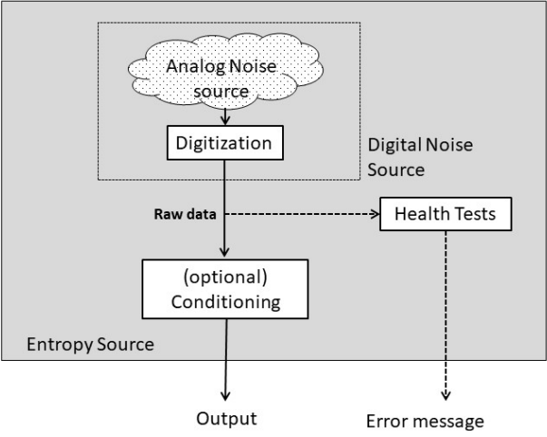
図13：エントロピー源モデル。アナログノイズ源の出力をデジタル化し、生データを生成する。健全性テストはノイズ源とエントロピー源を監視し、異常時にエラーメッセージを出す。任意の条件付けを経て出力される。デジタルノイズ源から入力する経路も示す。図中ラベル：アナログノイズ源、デジタル化、生データ、健全性テスト、（任意）条件付け、エントロピー源、出力、エラーメッセージ、デジタルノイズ源。
Figure 13: Entropy Source Model
図13：エントロピー源モデル
未レビュー訳NIST/ITL CYBERSECURITY PROGRAM ANNUAL REPORT 2017
NIST/ITL サイバーセキュリティプログラム年次報告書 2017
未レビュー訳last public comment period, along with their
前回の公開意見募集期間に寄せられた意見とその対応結果を含め、
未レビュー訳DRBG
DRBG
未レビュー訳resolutions. The testing of entropy sources
エントロピー源の試験は、CAVPおよびCMVP試験機関で
未レビュー訳Algor ithm
アルゴリズム
未レビュー訳by the CAVP and CMVP will begin as soon as possible after publication.
公開後できるだけ早く開始される。
未レビュー訳RBG Output
RBG出力
未レビュー訳•Monitor the testing of SP 800-90B in the CAVP and CMVP labs to determine problems that need to be addressed in the next
•SP 800-90Bの試験をCAVP/CMVP試験機関で監視し、次の
未レビュー訳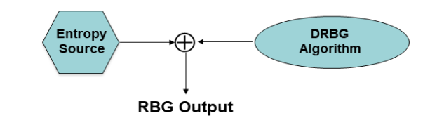
図14：XOR-NRBG。エントロピー源の出力ビットとSP 800-90AのDRBGアルゴリズム出力ビットを排他的論理和（XOR）演算で組み合わせ、RBG出力を生成する。図中ラベル：エントロピー源、DRBGアルゴリズム、RBG出力。
Figure 14: XOR-NRBG
図14：XOR-NRBG
未レビュー訳version of SP 800-90B. In some cases, the problems may be addressed by additions
版で対処すべき問題を特定する。場合によっては、問題を
未レビュー訳Figure 14 depicts the construction of one of the
図14は、
未レビュー訳to the FIPS 140-2 Implementation Guidance
FIPS 140-2実装ガイダンス文書への追記で解決できる。
未レビュー訳NRBGs – the XOR-NRBG. In this construction, each
NRBGの一種であるXOR-NRBGの構成を示す。この構成では、各
未レビュー訳document until SP 800-90B is revised. The
SP 800-90Bが改訂されるまで、その
未レビュー訳bit output by the entropy source (as discussed in SP
エントロピー源から出力される各ビット（SP 800-90Bで説明される）は、
未レビュー訳Implementation Guidance document is
実装ガイダンス文書は
未レビュー訳800-90B) is exclusive-ORed with a bit of output from
SP 800-90Aで規定されるDRBGアルゴリズムからの
未レビュー訳available at https://csrc.nist.gov/groups/STM/
https://csrc.nist.gov/groups/STM/
未レビュー訳a DRBG algorithm specifed in SP 800-90A.
出力ビットと排他的論理和（XOR）をとる。
未レビュー訳cmvp/documents/fps140-2/FIPS1402IG.pdf.
cmvp/documents/fips140-2/FIPS1402IG.pdfで参照できる。
未レビュー訳•Begin a revision of SP 800-90B to address issues not included in the initial version of SP
•SP
未レビュー訳RBG
RBG
未レビュー訳Ent ropy
エントロピー
未レビュー訳800-90B, as well as any issues that surface
800-90Bの改訂を開始し、初版で扱われなかった問題に対処するとともに、
未レビュー訳Source Input
ソース入力
未レビュー訳output
出力
未レビュー訳during CAVP and CMVP entropy source validation.
CAVP/CMVPによるエントロピー源検証で明らかになった問題にも対処する。
未レビュー訳•Finalize and publish 800-90C, posting the
•SP 800-90Cを最終化して公開し、
未レビュー訳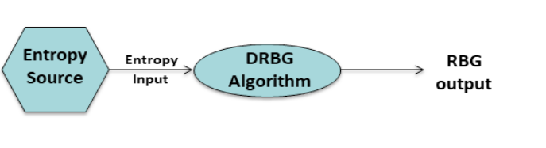
図15：DRBGおよびオーバーサンプリングNRBGの構成。エントロピー源はDRBGアルゴリズムにエントロピー入力を与え、アルゴリズムがRBG出力を生成する。本文では、オーバーサンプリングNRBGはエントロピー源から繰り返し入力を取得すると説明される。図中ラベル：エントロピー源、エントロピー入力、DRBGアルゴリズム、RBG出力。
Figure 15: DRBG and Oversampling NRBG
図15：DRBGおよびオーバーサンプリングNRBG
未レビュー訳comments received and their resolution, along with the document.
寄せられたコメントとその対応結果を文書に掲載する。
未レビュー訳Figure 15 depicts the construction used for the DRBGs and the second NRBG design – the
図15は、DRBGと2番目のNRBG方式である
未レビュー訳•Complete plans for testing SP 800-90C.
•SP 800-90Cの試験計画を完了する。
未レビュー訳Oversampling NRBG. In this construction. the entropy source repeatedly provides input to the DRBG FOR MORE INFORMATION, SEE: algorithm to produce the requested output.
［左段］オーバーサンプリングNRBGの構成を示す。この構成では、エントロピー源が要求された出力を生成するため、DRBGアルゴリズムに入力を繰り返し与える。｜［右段］詳細情報：
未レビュー訳https://csrc.nist.gov/projects/random-bit-generation
https://csrc.nist.gov/projects/random-bit-generation
未レビュー訳The diference between DRBGs and NRBGs is the
DRBGとNRBGの違いは、
未レビュー訳CONTACTS:
連絡先：
未レビュー訳availability of the entropy source and the frequency
エントロピー源を利用できるかどうか、および同源に出力を要求する頻度にある。
未レビュー訳Ms. Elaine Barker
Elaine Barker氏
未レビュー訳Mr. John Kelsey
John Kelsey氏
未レビュー訳of requesting output from the entropy source. For a
たとえばDRBGの場合、
未レビュー訳(301) 975-2911
(301) 975-2911
未レビュー訳(301) 975-5101
(301) 975-5101
未レビュー訳DRBG, an entropy source is only required for seeding the DRBG; after the initial seeding process, further elaine.barker@nist.gov john.kelsey@nist.gov requests for entropy-source output depend on the implementationandapplication.FortheOversampling Dr. Meltem Sönmez Turan Dr. Kerry McKay NRBG, the entropy source must always be available (301) 975-4391
［左段］エントロピー源はDRBGへのシード投入時にのみ必要である。初期シード後の追加のエントロピー出力要求は、実装やアプリケーションに依存する。オーバーサンプリングNRBGでは、エントロピー源が常に利用可能でなければならず、｜［右段］elaine.barker@nist.gov john.kelsey@nist.gov Meltem Sönmez Turan氏（(301) 975-4391） Kerry McKay氏
未レビュー訳(301) 975-4969
(301) 975-4969
未レビュー訳and is accessed whenever bits are requested from the meltem.turan@nist.gov kerry.mckay@nist.gov NRBG by a consuming application.
［左段］消費アプリケーションがNRBGからビットを要求するたびにアクセスされる。｜［右段］meltem.turan@nist.gov kerry.mckay@nist.gov
未レビュー訳The NIST Randomness Beacon
NIST乱数ビーコン
未レビュー訳The latest draft of SP 800-90C is available via the Special Publications page: https://csrc.nist.gov/
SP 800-90Cの最新草案は、特別刊行物ページから入手できる：https://csrc.nist.gov/
未レビュー訳NIST has implemented a source of public
NISTは一般公開の乱数ソースを実装しており、
未レビュー訳publications/PubsSPs.html.
publications/PubsSPs.html
未レビュー訳randomness, which is available at https://beacon.nist. gov/home. It uses two independent, commercially
https://beacon.nist.gov/home から利用できる。独立した商用の
未レビュー訳Plans for FY 2018:
2018会計年度の計画：
未レビュー訳available sources of randomness, each with an
乱数ソースを2つ使用し、それぞれに
未レビュー訳The RBG development team has the following independent hardware entropy source and SP goals for FY 2018:
［左段］RBG開発チームの2018会計年度目標は次のとおり：｜［右段］独立したハードウェアエントロピー源とSP
未レビュー訳800-90A-approved components.
800-90Aで承認された構成要素を備える。NISTビーコンは、
未レビュー訳•Publish the initial version of SP 800-90B The NIST Beacon is designed to provide and post the comments received during the unpredictability, autonomy, and consistency.
•［左段］SP 800-90Bの初版を公開し、公開意見募集期間に寄せられたコメントを｜［右段］予測不能性、自律性、一貫性を提供するよう設計されている。
未レビュー訳ITL CYBERSECURITY PROGRAM AND PROJECTS | FY 2017
ITLサイバーセキュリティプログラムおよびプロジェクト｜2017会計年度
未レビュー訳Unpredictability means that users cannot The project team has also made progress in algorithmically predict bits before they are made helping other institutions set up interoperable sources. available by the source. Autonomy means that the This is important because multiple sources can be source is resistant to attempts by outside parties to combined in such a way that all sources would have alter the distribution of the random bits. Consistency to be compromised in order to degrade the common means that a set of users can access the source in random strings. It is expected that the University such a way that they are confdent of receiving the of Chile will start operating their own randomness
予測不能性とは、乱数源が値を公開する前に、そのビットをアルゴリズムで予測できないことをいう。自律性とは、外部の者による乱数ビットの分布変更の試みに対して乱数源が耐性を持つことをいう。一貫性とは、利用者が乱数源にアクセスしたときに受け取る乱数文字列が、プロジェクトチームは相互運用可能な乱数源の構築を他の機関が進める支援も行っている。複数の乱数源を組み合わせれば、共通の乱数文字列の品質を低下させるにはすべての乱数源を侵害する必要があるため、重要である。チリ大学はFY 2018中に独自の乱数
未レビュー訳beacon during FY 2018.
ビーコンの運用を開始する見込みである。
未レビュー訳same random string.
同じ乱数文字列であることをいう。
未レビュー訳The NIST Beacon posts bit-strings in blocks of As of the end of FY 2017, the NIST Beacon has 512 bits every 60 seconds. Each such value is time- been functioning without major interruptions for more stampedandsignedtoformapacketthatalsoincludes than four years. During this time, the project team has the hash of the previous value to chain the sequence received valuable input from a growing community of values together. This prevents all parties, even the of users. As a result, the project team has redesigned source, from retroactively changing an output packet the Application Programming Interface (API) and the without being detected. The NIST Beacon keeps all architecture. The changes provide higher security and output packets. At any point in time, the full history of availability, as well as better interoperability. Version
NISTビーコンは、60秒ごとに512ビット単位でビット列を公開する。各値にはタイムスタンプと電子署名が付与され、前の値のハッシュも含むパケットとして連結される。これにより、乱数源自身を含むいかなる者も、検知されずに公開済みの出力パケットを遡って変更できない。NISTビーコンはすべての出力パケットを保存しており、任意の時点で出力の全履歴を利用できる。FY 2017末時点で、NISTビーコンは4年以上にわたり大きな中断なく稼働している。この間、利用者コミュニティから貴重な意見が寄せられた。これを受けて、プロジェクトチームはアプリケーション・プログラミング・インターフェース（API）とアーキテクチャを再設計した。変更により、セキュリティと可用性が高まり、相互運用性も向上する。Version
未レビュー訳2.0 of the NIST Beacon is scheduled to be deployed
2.0は導入される予定で、
未レビュー訳outputs is available to users.
利用者が参照できる。
未レビュー訳during November 2017.
2017年11月中である。
未レビュー訳Tables of random numbers have probably been used for multiple purposes at least since the NIST encourages the community of users to Industrial Revolution. In the digital age, algorithmic research and publish novel ways in which this tool can pseudorandom number generators (PRNGs) have be used. largely replaced these tables. The NIST Beacon
乱数表は、少なくとも産業革命の頃からさまざまな目的に使われてきたと考えられる。デジタル時代には、アルゴリズムによる擬似乱数生成器（PRNG）がこうした表の大部分に取って代わった。NISTビーコンは、NISTは利用者コミュニティに対し、このツールの新しい利用方法を研究し、発表するよう促している。
未レビュー訳FOR MORE INFORMATION, SEE:
詳細情報：
未レビュー訳expands the use of randomness to multiple scenarios in which neither tables nor PRNGs can be used. The https://www.nist.gov/programs-projects/nist-extra functionalities stem mainly from three features. randomness-beacon First, the Beacon-generated numbers cannot be
表もPRNGも利用できない複数の場面に乱数の利用を広げる。その機能は主に3つの特徴に由来する。第1に、ビーコンが生成する数値は公開前に予測できない。詳細情報はNISTの乱数ビーコンのウェブページを参照。
未レビュー訳CONTACT:
連絡先：
未レビュー訳predicted before they are published. Second, the public, time-bound, and authenticated nature of the Dr. René Peralta
公開前には予測できない。第2に、公開され、時刻が付与され、認証されたビーコンの性質によって、利用者アプリケーションは第三者に対して、ビーコンが（連絡先：Dr. René Peralta）
未レビュー訳(301) 975-8702
（301）975-8702
未レビュー訳Beacon allows a user application to prove to anybody
利用者アプリケーションが第三者に対し、
未レビュー訳rene.peralta@nist.gov
rene.peralta@nist.gov
未レビュー訳that it used truly random numbers not known before a certain point in time. Third, this proof can be presented
そのアプリケーションが、ある時点より前には知られていなかった真の乱数を使用したことを証明できる。第3に、この証明は
未レビュー訳Entropy as a Service (EaaS)
エントロピー・アズ・ア・サービス（EaaS）
未レビュー訳ofine and at any point in the future.
オフラインでも、将来の任意の時点で提示できる。
未レビュー訳Although commercially available physical sources The security of cryptography today depends of randomness are adequate as entropy sources for on having strong keys and keeping them secret. currently envisioned implementations of the NIST The ability to generate strong cryptographic keys Beacon, the NIST Randomness Beacon project team is is directly related to having access to unpredictable working on developing a source of verifably random random data, but generating truly unpredictable sequences. In collaboration with NIST physicists random data on common computing devices is hard from the Physical Measurement Laboratory (PML), and unreliable. As a result, weak keys are widely used the project team aims to use quantum non-locality in cryptographic applications, thus compromising the to build an entropy source whose unpredictability security of the sensitive data protected by them -is guaranteed by the laws of physics. In FY 2016, potentially with disastrous consequences. a major milestone was achieved, namely, a strong
現在想定されているNISTビーコン実装のエントロピー源としては、市販の物理乱数源で十分である。一方、NIST乱数ビーコンのプロジェクトチームは、検証可能な乱数列を生成する乱数源の開発に取り組んでいる。NIST物理測定研究所（PML）の物理学者と協力し、量子非局所性を用いて、予測不能性が物理法則によって保証されるエントロピー源を構築することを目指す。FY 2016には、重要な節目として、強固な強い鍵を生成して秘密に保てるかどうかに左右される。強力な暗号鍵を生成するには予測不能な乱数データが必要だが、一般的なコンピューターで真に予測不能な乱数データを生成するのは困難で信頼性にも欠ける。その結果、暗号アプリケーションでは弱い鍵が広く使われ、保護対象の機微データの安全性が損なわれ、壊滅的な結果を招く可能性もある。
未レビュー訳A primary goal of this project is to provide
このプロジェクトの主な目標は、
未レビュー訳loophole-free test of local realism (where individual
抜け穴のない局所実在論の検証を実施した。ここでは、個々の
未レビュー訳high quality, truly unpredictable random data to
高品質で真に予測不能な乱数データを
未レビュー訳particles are governed by elements of reality, even
粒子は、たとえこれらの要素が隠れているとしても、実在の要素に支配されるという考え方である
未レビュー訳devices on the Internet to enable them to generate
インターネット上のデバイスに提供し、それらが生成できるようにする
未レビュー訳if these elements are hidden) (see https://www.nist.
（たとえこれらの要素が隠れているとしても）。参照URL：https://www.nist.
未レビュー訳strong cryptographic keys and attest the strength
強力な暗号鍵を生成し、
未レビュー訳49 gov/news-events/news/2015/11/nist-team-proves-
gov/news-events/news/2015/11/nist-team-proves-
未レビュー訳of the keys used to protect data in transit or at rest,
通信中または保存中のデータを保護する鍵の強度を証明する。
未レビュー訳spooky-action-distance-really-real).
spooky-action-distance-really-real）。
未レビュー訳NIST/ITL CYBERSECURITY PROGRAM ANNUAL REPORT 2017
NIST/ITLサイバーセキュリティプログラム年次報告書2017
未レビュー訳thereby enabling cryptographic system strength source. The EaaS server ensures that the FIFO bufer attestation. Achieving this goal would provide a is erased prior to server shutdown and never copied solid basis for achieving the goals of the Automated to disk. Open implementations can help ensure that Cryptographic Validation Testing project (see https:// this occurs. csrc.nist.gov/projects/acvt) as well as addressing the
これにより暗号システムの強度を証明できる。この目標を達成すれば、Automated Cryptographic Validation Testing（ACVT）プロジェクト（https://csrc.nist.gov/projects/acvt）の目標を実現する確かな基盤となり、さらに／EaaSサーバーは、FIFOバッファがサーバー停止前に消去され、ディスクへコピーされないことを保証する。オープンな実装は、この処理が確実に行われるようにするのに役立つ。
未レビュー訳The client system consists of a classic computing
クライアントシステムは、従来型のコンピューター
未レビュー訳problems targeted by the Cryptographic Programs
暗号プログラムが対象とする課題への対処にもつながる。
未レビュー訳device enabled with a dedicated hardware
専用ハードウェアを搭載したデバイス
未レビュー訳and Laboratory Accreditation (see the next section:
および試験所認定プログラム（次節「Validated Programs」を参照）では、
未レビュー訳component capable of storing secret cryptographic
秘密の暗号
未レビュー訳Validated Programs), where entropy estimation
エントロピー推定は
未レビュー訳keys and seeds. A dedicated software application
鍵とシードを格納できるコンポーネント。専用ソフトウェアアプリケーションが
未レビュー訳has persisted as one of the most difcult and labor-
最も困難で労力を要する活動の1つとして続いており、
未レビュー訳bridges the communication between EaaS and the
EaaSとハードウェアコンポーネントの間の通信を仲介する。安全なハードウェアの例としては、
未レビュー訳consuming activities, causing problems for all parties
時間を要し、関係するすべての当事者に問題を生じさせてきた。
未レビュー訳hardware component. Examples of secure hardware
ハードウェアコンポーネント。セキュアハードウェアの例としては、
未レビュー訳involved: the industry, the testing laboratories and the
関係するのは、業界、試験所および
未レビュー訳components are the Trusted Platform Module
Trusted Platform Module
未レビュー訳government validators.
政府の検証担当者である。
未レビュー訳(TPM), TrustZone technology in Advanced Reduced
（TPM）、Advanced Reduced
未レビュー訳Random data obtained from sources of true Instruction Set Computing (RISC) Machine (ARM) randomness that are based on unpredictable physical processors, and Identity Protection Technology in phenomena, such as quantum efects, is much Intel processors. Recently, an alternative innovative better suited for cryptographic applications. CSD is technology has emerged that allows extracting collaborating with the NIST Physical Measurement unique cryptographic keys from the imperfections of Laboratory (PML) to build a quantum source. The memory Static Random Access Memory (SRAM) cells aim is to use quantum efects to generate sequences used in common computers. The idea behind this that are guaranteed to be unpredictable, even technology is to extract PUF-like unique data from the if an attacker has access to the random source. SRAM chip, which is then used to construct a unique (For more information on this collaboration, see key. This technology is quite interesting for EaaS
乱数の生成に用いる物理現象（量子効果など）が予測不能な物理現象である真の乱数源から得られるデータは、暗号アプリケーションにより適している。CSDはNIST物理測定研究所（PML）と協力し、量子乱数源を開発している。量子効果を用いて、攻撃者が乱数源にアクセスできる場合でも予測不能性が保証される系列を生成することを目指す。詳細は ARMプロセッサにおけるTrustZone技術やIntelプロセッサのIdentity Protection Technologyなどがある。最近、一般的なコンピューターで使われるSRAMメモリセルのばらつきから固有の暗号鍵を抽出できる、新しい技術が登場した。この技術では、SRAMチップからPUFに似た固有データを抽出し、それを使って固有鍵を構成する。これはEaaSの
未レビュー訳applications on the client side because it eliminates
クライアント側アプリケーションに特に有用である。これにより
未レビュー訳https://www.nist.gov/pml/div684/random_
https://www.nist.gov/pml/div684/random_
未レビュー訳the need to provision an initial key for accessing
EaaSにアクセスするための初期鍵をあらかじめ設定する
未レビュー訳numbers_bell_test.cfm).
numbers_bell_test.cfm).
未レビュー訳EaaS. If a client system or device does not have a
EaaSを利用するクライアントシステムまたはデバイスに、
未レビュー訳This EaaS project aims to develop a system and
このEaaSプロジェクトは、システムと
未レビュー訳secure hardware component, it can still use EaaS. The
セキュアなハードウェアコンポーネントがなくてもEaaSを利用できる。
未レビュー訳protocols for obtaining random data with high entropy
1つ以上のリモートソースから高エントロピーの乱数データを取得するプロトコル
未レビュー訳presence of a hardware component simply provides
ハードウェアコンポーネントが存在すれば、
未レビュー訳from one or more remote sources. The high-level
を開発することを目指す。高レベルの
未レビュー訳further guarantees to the system or device user, when
システムまたはデバイスの利用者に、追加の保証を与える。
未レビュー訳architecture is shown in Figure 16. The architecture
アーキテクチャを図16に示す。アーキテクチャは
未レビュー訳present.
（ハードウェアコンポーネントがある場合に）。
未レビュー訳of the Entropy-as-a-Service system consists of two main parts: the client-side and the server-side. The EaaS uses the Hyper Text Transfer Protocol (HTTP) critical components of the system are the quantum to transfer entropy payloads from the server to clients. device, the EaaS server and a secure device in the To secure this transmission, the server encrypts the client systems that is capable of providing strong data using the client’s public key and digitally signs isolation and protection for the cryptographic keys the payload with the server’s own private key. stored inside the device and ofering a set of basic
Entropy-as-a-Service（EaaS）システムは、クライアント側とサーバー側の2つの主要部分で構成される。主要な構成要素は、量子デバイス、EaaSサーバー、およびクライアントシステム内のセキュアデバイスである。このデバイスは、内部に保存された暗号鍵を強力に隔離・保護し、基本的な暗号サービス一式を提供する。EaaSはハイパーテキスト転送プロトコル（HTTP）を用いて、エントロピーのペイロードをサーバーからクライアントへ転送する。この通信を保護するため、サーバーはクライアントの公開鍵でデータを暗号化し、サーバー自身の秘密鍵でペイロードに電子署名する。
未レビュー訳Client devices mix this data with locally available
クライアントデバイスは、このデータをローカルで利用できる
未レビュー訳cryptographic services.
を提供する。
未レビュー訳random data to seed random number generators to
乱数データと混合し、乱数生成器のシードとして用いて、リモートソースから独立して強力な暗号鍵やその他の乱数値を生成する。
未レビュー訳The EaaS server is continuously fed random data generate strong cryptographic keys and other random from the attached quantum source. The data enters values independently from the remote sources. a frst in, frst out (FIFO)-like bufer in the server’s Random Access Memory (RAM), and, when a client request arrives, the server reads the top value from the bufer, signs and encrypts it, and then sends it to the requester. The FIFO bufer shifts after every request and when new data comes from the random
EaaSサーバーには、接続された量子乱数源から継続的に乱数データが供給される。データはサーバーのランダムアクセスメモリ（RAM）内の先入れ先出し（FIFO）型バッファに格納される。クライアント要求が届くと、サーバーはバッファの先頭値を読み出し、署名・暗号化して要求元へ送信する。要求ごとに、また乱数源から新しいデータが届くたびにFIFOバッファはシフトする。
未レビュー訳ITL CYBERSECURITY PROGRAM AND PROJECTS | FY 2017
ITLサイバーセキュリティプログラムおよびプロジェクト｜FY 2017
未レビュー訳NIST
NIST
未レビュー訳NIST
NIST
未レビュー訳Quantum / device
量子デバイス
未レビュー訳R/•d= HashlHSM~ Quantum~1
R(s_i) = Hash[HSM_i, Quantum_i]
未レビュー訳EaaSserver
EaaS server
未レビュー訳原文のみ
ERROR: Halt
ERROR: Halt（エラー：停止）
未レビュー訳Requester's public key
要求元の公開鍵
未レビュー訳network capability,
ネットワーク接続機能を備えた、
未レビュー訳proxy
プロキシ
未レビュー訳原文のみ
i.e.device Q.!1the loT
すなわちIoT上のデバイス
未レビュー訳/r -
原文のみ
R(s.,!
R(s_i)
未レビュー訳,,. H/W Root of Trust
H/W Root of Trust
未レビュー訳Continuous
連続
未レビュー訳chip;
チップ；
未レビュー訳TrueRBG health
TrueRBGの健全性
未レビュー訳BEST,if available, to hold aprovisioned
可能なら鍵ペアを保持するのに最適な
未レビュー訳monitor (SP800-90B
モニター（SP 800-90B
未レビュー訳key pair.
鍵ペア。
未レビュー訳tests)
テスト）
未レビュー訳it:ed HHh[EaiiS:a..,..,
seed = Hash[EaaS_1, …,
未レビュー訳Otherwise, a
それ以外の場合は、
未レビュー訳EaaS,111local];
EaaS_n, local];
未レビュー訳protected memory/
保護されたメモリ／
未レビュー訳Key ;;;
Key =
未レビュー訳file location may be
ファイル領域を
未レビュー訳ORBG(,eed)
DRBG(seed)
未レビュー訳used
使用できる。
未レビュー訳NOTE:EaaS1, •••, EaaS, above indicate data from n different EaaSserver instances; local Indicates locally available random data, If any
注：上記のEaaS_1、…、EaaS_nは、それぞれ異なるEaaS server instanceからのデータを示す。localは、存在する場合にローカルで利用可能な乱数を示す。
未レビュー訳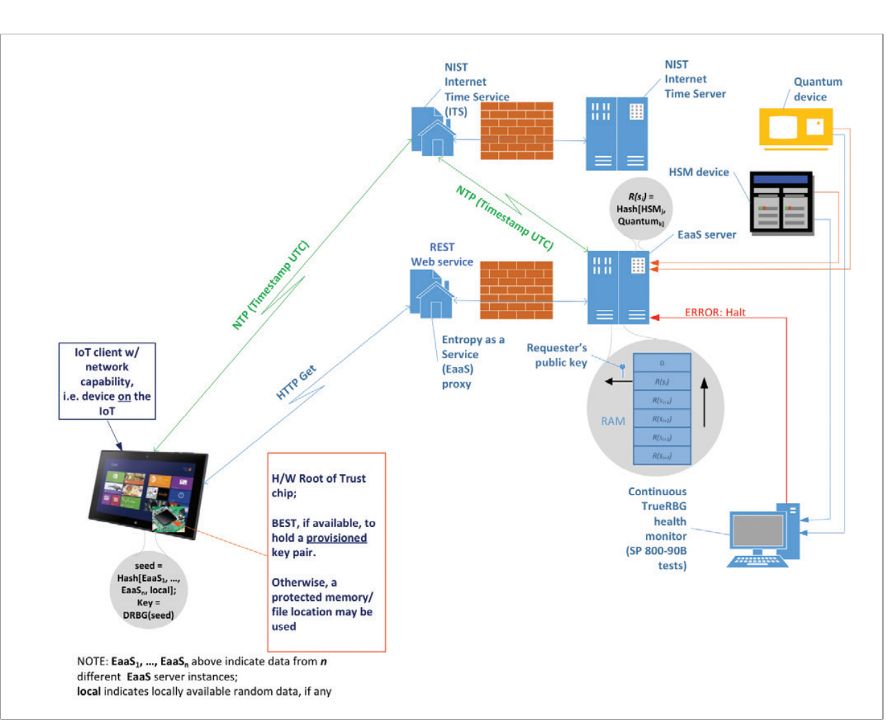
図16：EaaS高レベルアーキテクチャ。IoTクライアントはHTTP GETでREST Web service／EaaS proxyを介してEaaS serverへ要求し、要求元の公開鍵が示される。NIST Internet Time ServiceとNIST Internet Time ServerからNTP（UTCタイムスタンプ）を取得する。Quantum deviceとHSM deviceを用いてR(s_i)=Hash[HSM_i, Quantum_i]を生成し、EaaS serverのRAM/FIFOバッファへ格納する。Continuous TrueRBG health monitorがSP 800-90B testsを実施し、異常時はERROR: Haltとなる。クライアントは複数のEaaS server instanceからの値と利用可能なローカル乱数をHashしてseedを作り、DRBG(seed)からKeyを生成する。H/W Root of Trust chipは、利用可能ならプロビジョニング済み鍵ペアの保持先として最適（BEST）であり、そうでなければprotected memory/file locationを使う。図注：EaaS1…EaaSnは異なるEaaSサーバーインスタンス、localは利用可能なローカル乱数を示す。
Figure 16: High-level Architecture of EaaS
図16：EaaSの高レベルアーキテクチャ
未レビュー訳With the conceptual system architecture and against integrated circuit counterfeiting and thereby protocols defned, the project team continues help secure a supply chain. The University of Florida to engage with industry and academia to obtain researchers working on this grant obtained interesting feedback on the approach and identify possibilities security results that identifed security vulnerabilities for collaborative approaches to solving important in widely used protocols for intellectual property cybersecurity challenges in the domains of protection in integrated circuit manufacturing and cryptography and supply-chain management (e.g., resulted in proposals for new secure protocols that integrated circuit counterfeiting). A published paper eliminated these vulnerabilities. on EaaS in IEEE Computer magazine generated a lot
概念システムのアーキテクチャとプロトコルが定まり、プロジェクトチームは産業界や学術界との対話を続け、暗号技術やサプライチェーン管理（例：集積回路の偽造）に関する重要なサイバーセキュリティ課題への協調的な取り組みについて意見を集め、可能性を探っている。IEEE Computer誌に掲載されたEaaS論文は、多くの。［右段の文の続き］集積回路の偽造に対抗し、サプライチェーンの安全確保に寄与する。フロリダ大学の研究者らはこの助成研究で興味深いセキュリティ成果を得た。広く使われている集積回路製造の知的財産保護プロトコルに脆弱性があることを特定し、その脆弱性を排除する新しいセキュアプロトコルを提案した。
未レビュー訳The team continues to develop the system to
チームはシステムの開発を続け、
未レビュー訳of interest among the public, including companies
一般から大きな関心を集め、米国およびカナダの企業を含む利用者がチームに連絡し、
未レビュー訳provide a publicly accessible NIST EaaS instance
一般公開のNIST EaaSインスタンスを提供することを目指す。
未レビュー訳from the U.S. and Canada who approached the team
米国およびカナダからチームに連絡があり、
未レビュー訳in FY 2018. The team succeeded in establishing a
FY 2018中に提供する予定である。チームは、
未レビュー訳and asked for assistance in implementing and hosting
自社のEaaSサーバーを実装・ホストするための支援を求めた。
未レビュー訳non-disclosure agreement and a collaboration with
秘密保持契約を締結し、さらに
未レビュー訳their own EaaS servers. The team started a technology
自社のEaaSサーバーを実装・ホストする。チームは技術移転の
未レビュー訳Intrinsic ID, Inc. – a company with complementing
Intrinsic ID, Inc.（補完的な技術を持つ企業）と協業した。
未レビュー訳transfereforttohelpwiththis.Theteamalsocontinues
この支援のため技術移転に取り組んだ。チームはさらに
未レビュー訳technology for constructing the initial key on the
クライアント側で初期鍵を構成するための技術であり、
未レビュー訳the collaboration with a team of researchers at the
NISTの研究助成を受けているフロリダ大学の研究者チームとの
未レビュー訳client side by extracting it from SRAM memory cells.
SRAMメモリセルから抽出した技術である。
未レビュー訳University of Florida who work under a NIST research
が、EaaSを活用して保護方法を探るための
未レビュー訳The team also established a collaborative relationship
チームはさらに協力関係を構築した。
未レビュー訳51 grant to explore ways to leverage EaaS in protecting
研究助成のもとで取り組む。
未レビュー訳with Crypto4A and 2Keys Corp. from Canada on
カナダのCrypto4Aおよび2Keys Corp.と、
未レビュー訳NIST/ITL CYBERSECURITY PROGRAM ANNUAL REPORT 2017
NIST/ITLサイバーセキュリティプログラム年次報告書2017
未レビュー訳developing a common protocol for EaaS. The team uniqueness of the “nonce” input; CSD plans to seek coordinated with the research team working on the public comment on how to best update the guidance NIST Beacon for developing common back-end for achieving this property. components for the two services. The team plans to
チームは、／nonce入力の一意性について、CSDはこの特性を実現するためのガイダンスの最適な改訂方法に関するパブリックコメントを募る計画である。
未レビュー訳FOR MORE INFORMATION, SEE:
詳細情報：
未レビュー訳leverage these common components in the NIST EaaS
これらの共通コンポーネントをNIST EaaS
未レビュー訳https://csrc.nist.gov/projects/block-cipher-
https://csrc.nist.gov/projects/block-cipher-
未レビュー訳implementation.
実装で活用する計画である。
未レビュー訳techniques
techniques
未レビュー訳CONTACT:
連絡先：
未レビュー訳CONTACT:
連絡先：
未レビュー訳Dr. Apostol Vassilev
Dr. Apostol Vassilev
未レビュー訳Dr. Morris Dworkin
Dr. Morris Dworkin
未レビュー訳(301) 975-3221
(301) 975-3221
未レビュー訳(301) 975-2354
(301) 975-2354
未レビュー訳apostol.vassilev@nist.gov
apostol.vassilev@nist.gov
未レビュー訳morris.dworkin@nist.gov
morris.dworkin@nist.gov
未レビュー訳Block Cipher Modes of Operation
ブロック暗号モード
未レビュー訳Key Management
鍵管理
未レビュー訳The engine for many of the techniques in CSD’s cryptographic toolkit is a block cipher algorithm, Key management is required for applying such as the Advanced Encryption Standard (AES) numerous cryptographic technologies and is algorithm. A block cipher transforms some fxed- considered one of the most critical aspects associated length binary data (i.e., a “block” of data) into with the use of cryptography. The CSD began seemingly random data of the same length. The providing guidance in managing the keys used for transformation is determined by the choice of some cryptographic applications in the late 1990s to early secret data called the “key.” The same key is used to 2000s. Information on the CSD’s key management reverse the transformation and recover the original project is available at https://csrc.nist.gov/projects/ block of data. A cryptographic technique (e.g., for key-management. encryption and/or authentication) that is constructed
CSDの暗号ツールキットに含まれる多くの技法の基盤は、AES（Advanced Encryption Standard）などのブロック暗号アルゴリズムである。ブロック暗号は、固定長のバイナリデータ（「ブロック」）を、同じ長さの一見ランダムなデータに変換する。この変換は「鍵」と呼ばれる秘密データによって決まり、同じ鍵を使って逆変換し、元のブロックを復元する。暗号化や認証などに用いる暗号技法のうち、ブロック暗号から構成されるものは／鍵管理は、多くの暗号技術を適用するために必要であり、暗号利用に関する最も重要な側面の1つとされる。CSDは1990年代後半から2000年代初頭にかけて、暗号アプリケーションで用いる鍵の管理指針を提供し始めた。CSDの鍵管理プロジェクトの情報は https://csrc.nist.gov/projects/key-management を参照。
未レビュー訳SP 800-56A, Recommendation for Pair-
SP 800-56A「ペアワイズ鍵確立方式に関する勧告：
未レビュー訳from a block cipher is called a “mode of operation.”
「運用モード」と呼ばれる。
未レビュー訳Wise Key Establishment Schemes Using Discrete
離散対数暗号を用いる方式」
未レビュー訳Several modes of operation have been specifed Logarithm Cryptography: in the SP 800-38 series of publications. The latest
複数の運用モードがSP 800-38シリーズの刊行物で規定されている。同シリーズの最新
未レビュー訳In FY 2017, SP 800-56A was revised. SP 800-
FY 2017にSP 800-56Aが改訂された。SP 800-
未レビュー訳installment in the series, Special Publication 800-
版である特別刊行物SP 800-
未レビュー訳56A was originally published in 2006, and was
56Aは2006年に初版が公開され、
未レビュー訳38G, Recommendation for Block Cipher Modes of
38G「ブロック暗号モードに関する勧告：
未レビュー訳previously revised in 2007 and 2013. This document
2007年と2013年に改訂されている。この文書は
未レビュー訳Operation:MethodsforFormat-PreservingEncryption,
形式保持暗号化方式」
未レビュー訳specifes Dife-Hellman (DH) and Menezes-Qu-
Diffie-Hellman（DH）およびMenezes-Qu-
未レビュー訳was published in 2016. It specifes two AES modes of
2016年に公開された。同文書は、
未レビュー訳Vanstone (MQV) key-agreement schemes, both
Vanstone（MQV）鍵合意方式を規定し、どちらも
未レビュー訳operation, called FF1 and FF3, for “format-preserving
FF1とFF3と呼ばれる2つのAES運用モードを規定し、形式保持
未レビュー訳elliptic curve and fnite feld versions. Key agreement
楕円曲線版と有限体版である。鍵合意方式では、
未レビュー訳encryption” (FPE), based on proposals that were
暗号化（FPE）に用いる。これらの方式は、
未レビュー訳results in keying material that is shared between the
参加者間で共有される鍵素材が得られる。鍵合意方式とは、
未レビュー訳submitted from the private sector, specifcally, the
民間部門、具体的には
未レビュー訳participants. A key-agreement scheme is a procedure
双方が、
未レビュー訳payments industry.
決済業界から提出された提案に基づく。
未レビュー訳in which both parties contribute information that
暗号鍵の生成に用いる情報を双方が提供する手順である。鍵合意方式は、
未レビュー訳Recently, two academic researchers, Vaudenay is used in generating a cryptographic key. A key-and Dürak, developed a cryptanalytic attack on agreement scheme is defned by a cryptographic the FF3 mode. On April 12, 2017, CSD posted an algorithm, together with other information that must announcement that summarizes the attack and be available by both parties when establishing keys. outlines CSD’s plans to revise FF3 in a new draft of The schemes are intended for use in communication SP 800-38G in FY 2018; see https://csrc.nist.gov/ protocols (e.g., Transport Layer Security (TLS), one
最近、2人の研究者VaudenayとDürakがFF3モードへの暗号解析攻撃を開発した。2017年4月12日、CSDは攻撃の概要とFY 2018に新しいSP 800-38G草案でFF3を改訂する計画を記した告知を公開した。詳細は https://csrc.nist.gov/ ／暗号アルゴリズムと、鍵確立時に両当事者が利用できるその他の情報によって定義される。これらの方式は通信プロトコル（例：Transport Layer Security（TLS））での使用を想定している。その1つは
未レビュー訳of the protocols used by the Internet). The key-
インターネットで使われるプロトコルの1つである。鍵確立
未レビュー訳News/2017/Recent-Cryptanalysis-of-FF3.
News/2017/Recent-Cryptanalysis-of-FF3
未レビュー訳establishment schemes in SP 800-56A use public
SP 800-56Aの鍵確立方式は、公開鍵アルゴリズムを用いる。
未レビュー訳In FY 2018, CSD also plans to revisit SP 800-38D,
FY 2018には、CSDはSP 800-38Dも再検討する計画である。
未レビュー訳key algorithms, and each participant in a key-
また、鍵合意トランザクションの各参加者は、
未レビュー訳which specifes the Galois/Counter Mode (GCM) for
認証付き暗号化のためのGalois/Counter Mode（GCM）を規定する。特に、
未レビュー訳agreement transaction uses a pair of keys—a public
公開鍵と秘密鍵の組を使用する。
未レビュー訳authenticated encryption. In particular, the security
GCMの安全性
未レビュー訳key and a private key. The key-agreement process
鍵合意プロセスには、
未レビュー訳of GCM depends critically on the requirement for the
は、nonce入力の
未レビュー訳includes the generation of a shared secret (which is
共有秘密の生成が含まれ（その秘密は
未レビュー訳ITL CYBERSECURITY PROGRAM AND PROJECTS | FY 2017
ITLサイバーセキュリティプログラムおよびプロジェクト｜FY 2017
未レビュー訳not itself considered to be a cryptographic key), and • Added the KECCAK Message Authentication the derivation of keying material using the shared
（共有秘密自体は暗号鍵とはみなされない）。共有秘密を用いた鍵素材の導出／ケック（KECCAK）メッセージ認証
未レビュー訳Code (KMAC) to the list of approved MAC
コード（KMAC）を承認済みMAC関数の一覧に追加した。
未レビュー訳secret. Several key-agreement schemes are specifed
を行う。SP 800-56Aには複数の鍵合意方式が
未レビュー訳functions; KMAC is specifed in SP 800-185, SHA-3 Derived Functions: cSHAKE, KMAC,
関数に追加した。KMACはSP 800-185「SHA-3派生関数」で規定されている。同文書はcSHAKE、KMAC、
未レビュー訳in SP 800-56A. Figure 17 below provides a simplifed
規定されている。図17は、鍵合意方式の一例を簡略化して示す。
未レビュー訳TupleHash and ParallelHash.
TupleHashおよびParallelHashも含む。
未レビュー訳example of one of the key-agreement schemes. In this example, each party:
この例では、各当事者が次の処理を行う：
未レビュー訳•The elliptic curves to be used in the elliptic curve Dife-Hellman and MQV schemes will
•楕円曲線Diffie-HellmanおよびMQV方式で使用する楕円曲線は、
未レビュー訳1.Generates a key pair (either prior to or henceforward be specifed in SP 800-186, a during the key-agreement transaction); new publication under development that will
1.1. 鍵ペアを生成する（鍵合意トランザクションの前または実行中）。／今後SP 800-186（現在開発中の新刊行物）で規定され、
未レビュー訳2.Obtains the public key of the other party; include the elliptic curves currently specifed in FIPS 186-4, Digital Signature Standard
2.2. 相手側の公開鍵を取得する。／現在FIPS 186-4「Digital Signature Standard」で規定されている楕円曲線を含み、
未レビュー訳3.Computes a shared secret using one’s own (DSS), along with additional approved keys and the other party’s public key; and elliptic curves for key agreement and digital signatures.
3.3. 自身の秘密鍵と相手側の公開鍵を用いて共有秘密を計算する。／（DSS）に加え、鍵合意およびデジタル署名用として承認された楕円曲線も含む。
未レビュー訳4.Derives one or more keys from the shared secret.
4.4. 共有秘密から1つ以上の鍵を導出する。
未レビュー訳•The key-derivation functions were moved
•鍵導出関数は
未レビュー訳A revision of SP 800-56A was provided for public
SP 800-56Aの改訂版は、
未レビュー訳to SP 800-56C: Recommendation for Key-Derivation Methods in Key-Derivation
SP 800-56C「鍵導出スキームにおける鍵導出方式に関する勧告」へ移された
未レビュー訳comment in FY 2017 as a draft of SP 800-56A Rev. 3.
FY 2017にSP 800-56A Rev. 3の草案としてパブリックコメントに付された。
未レビュー訳Schemes (see below).
（下記参照）。
未レビュー訳This revision includes the following changes:
この改訂には次の変更が含まれる：
未レビュー訳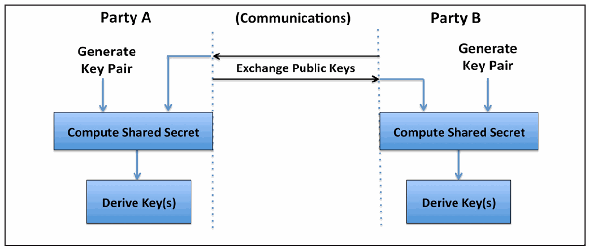
図17：鍵合意の例。当事者Aと当事者Bは通信路を介して公開鍵を交換する。それぞれが鍵ペアを生成し、自身の秘密鍵と相手の公開鍵から共有秘密を計算し、その共有秘密から鍵を導出する。図中ラベル：Party A、Party B、Communications、Generate Key Pair、Exchange Public Keys、Compute Shared Secret、Derive Key(s)。
Party A
当事者A
未レビュー訳Pa rty B
当事者B
未レビュー訳(Com mu nications)
通信
未レビュー訳1 :~ ·-
原文のみ
Generate
生成
未レビュー訳Genera t e
生成
未レビュー訳Key Pair
鍵ペア
未レビュー訳Key Pair
鍵ペア
未レビュー訳Exchange Publ ic Keys -·
公開鍵を交換する
未レビュー訳原文のみ
原文のみ
原文のみ
' ,
原文のみ
Compute Shared Secret
共有秘密を計算する
未レビュー訳ComputeSharedSecret
共有秘密を計算する
未レビュー訳原文のみ
原文のみ
Derive Key(s)
鍵を導出する
未レビュー訳. Derive Key(s)
鍵を導出する
未レビュー訳Figure 17: Key-Agreement Example
図17：鍵合意の例
未レビュー訳•Encourages the use of pre-defned domain A more complete list of changes is provided in an parameter groups for the fnite feld Dife- appendix of SP 800-56A Rev. 3. SP 800-56A Rev. 3 Hellman and MQV schemes. Domain will be published in early FY 2018 and will be available parameters are used to generate keys and via the CSD publications page at https://csrc.nist. compute the shared secret. The domain-gov/publications. This web page may also be used to parameter groups include the “safe primes” access FIPS 186-4, SP 800-185, and (eventually) SP that are used in the Transport Layer Security 800-186. (TLS) and Internet Key Exchange (IKE) protocols.
•有限体Diffie-HellmanおよびMQV方式には、事前定義された領域パラメータ群を使用することが推奨される。領域パラメータは鍵の生成と共有秘密の計算に使われる。このパラメータ群には、Transport Layer Security（TLS）およびInternet Key Exchange（IKE）プロトコルで使用される「安全素数」が含まれる。／変更点のより完全な一覧はSP 800-56A Rev. 3の付録に示す。SP 800-56A Rev. 3はFY 2018初頭に公開され、CSD publicationsページ（https://csrc.nist.gov/publications）から入手できる。このWebページからFIPS 186-4、SP 800-185、および（将来的には）SP 800-186にもアクセスできる。
未レビュー訳NIST/ITL CYBERSECURITY PROGRAM ANNUAL REPORT 2017
NIST/ITLサイバーセキュリティプログラム年次報告書2017
未レビュー訳Information about SP 800-56A is also available at will be published in early FY 2018 and will be available https://csrc.nist.gov/publications/detail/sp/800-56a/ via the CSD publications page at https://csrc.nist.gov/ rev-3/draft.
SP 800-56A Rev. 3の情報は、https://csrc.nist.gov/publications/detail/sp/800-56a/rev-3/draft からも入手できる。／SP 800-56A Rev. 3はFY 2018初頭に公開され、CSD publicationsページ（https://csrc.nist.gov/publications）から入手できる。
未レビュー訳publications. SP 800-135 and SP 800-185 are also available using that address.
このページからSP 800-135およびSP 800-185も入手できる。
未レビュー訳SP 800-56C: Recommendation for Key-Derivation Methods in Key-Establishment Information on SP 800-56C is also available at Schemes:
SP 800-56C「鍵確立スキームにおける鍵導出方式に関する勧告」。SP 800-56Cの情報は次からも入手できる：
未レビュー訳https://csrc.nist.gov/publications/detail/sp/800-56c/ rev-1/draft.
https://csrc.nist.gov/publications/detail/sp/800-56c/rev-1/draft
未レビュー訳SP800-56Cspecifestechniquesforthederivation of keys from a shared secret generated during a key- New Key Management Publications Under establishment scheme defned in SP 800-56A and SP Development: 800-56B. SP 800-56A is discussed above. SP 800-
SP 800-56Cは、SP 800-56AおよびSP 800-56Bで定義された鍵確立スキームで生成される共有秘密から鍵を導出する技法を規定する。SP 800-56Aについては前述した。SP 800-／新しい鍵管理関連刊行物の開発：
未レビュー訳A new document was started in FY 2016 on key
FY 2016に、鍵に関する新しい文書の策定を開始した。
未レビュー訳56B:RecommendationforPairwiseKey-Establishment
56B「ペアワイズ鍵確立スキームに関する勧告：
未レビュー訳storage and recovery by an organization (e.g., key
組織による鍵の保管と復旧（例：鍵の
未レビュー訳Schemes Using Integer Factorization Cryptography, is
整数因数分解暗号を用いた方式」は、
未レビュー訳backup and archiving). This document is intended
バックアップとアーカイブ）を対象とする。この文書は
未レビュー訳available via https://csrc.nist.gov/publications.
https://csrc.nist.gov/publicationsから入手できる。
未レビュー訳to serve as a guideline for the storage and recovery
暗号鍵の保管と復旧に関する指針となることを目的とする。
未レビュー訳SP 800-56C had included only one method of cryptographic keys that are not under the direct for key derivation - a two-step key-derivation control of the entity using those keys (e.g., the owner). procedure that used either the Keyed-Hash Message This includes the backup and archiving of copies of Authentication Code (HMAC) or the Cipher-based the keys and the metadata associated with them. The Message Authentication Code (CMAC) algorithm document will also discuss the recovery of those keys during the process. HMAC is specifed in FIPS 198- when required (e.g., by the key’s owner or the owner’s 1: The Keyed-Hash Message Authentication Code organization). (HMAC), and CMAC is specifed for AES in SP 800-
SP 800-56Cが規定していた鍵導出方法は1つだけであり、2段階の鍵導出手順を用いる。この手順ではHMACまたはCMACアルゴリズムを使用する。HMACはFIPS 198-1「鍵付きハッシュメッセージ認証コード（HMAC）」に規定され、CMACはAES向けにSP 800-／鍵の利用主体（例：所有者）が直接制御できない暗号鍵を対象とする。鍵のバックアップとアーカイブ、および鍵に関連付けられたメタデータも含まれる。この文書は、必要な場合（例：鍵の所有者または所有者の組織から求められた場合）の鍵の復旧も扱う。
未レビュー訳Plans for FY 2018:
SP 800-56Cの改訂版は、
未レビュー訳38B: Recommendation for Block Cipher Modes of Operation: the CMAC Mode of Authentication. These
38B「ブロック暗号モードの勧告：認証用CMACモード」に規定されている。これらの
未レビュー訳DuringFY2018,theCSDisexpectingtoaccomplish
FY 2017にSP 800-56C Rev. 1の草案としてパブリックコメントに付された。
未レビュー訳documents are available via https://csrc.nist.gov/
文書は次から入手できる：https://csrc.nist.gov/
未レビュー訳the following key management tasks:
この改訂には次の変更が含まれる：
未レビュー訳publications.
publications.
未レビュー訳•Publish the revisions of SP 800-56A and SP
•SP 800-56AおよびSP
未レビュー訳A revision of SP 800-56C was provided for public
SP 800-56Cの改訂版は、
未レビュー訳800-56C.
800-56Cの改訂版を公開する。
未レビュー訳comment in FY 2017 as a draft of SP 800-56C Rev. 1.
FY 2017にSP 800-56C Rev. 1の草案としてパブリックコメントに付された。
未レビュー訳•Begin the revision of SP 800-56B and post it
•SP 800-56Bの改訂に着手し、その草案を
未レビュー訳This revision includes the following changes:
この改訂には次の変更が含まれる：
未レビュー訳for public comment.
パブリックコメントに付す。
未レビュー訳•The single-step key derivation functions
•単一段階の鍵導出関数のうち、
未レビュー訳•Begin revisions of SP 800-131A, Transitions:
•SP 800-131Aの改訂に着手する。「移行：
未レビュー訳specifed in SP 800-56A and SP 800-56B
SP 800-56AおよびSP 800-56Bで規定されたものは
未レビュー訳Recommendation for Transitioning the Use of
暗号アルゴリズムおよび鍵長
未レビュー訳were moved into SP 800-56C, as well as the references to SP 800-135: Recommendation
SP 800-56Cに移された。また、SP 800-135「
未レビュー訳Cryptographic Algorithms and Key Lengths,
の使用移行に関する勧告」
未レビュー訳for Existing Application-Specifc Key
既存アプリケーション固有の鍵
未レビュー訳to address the use of Triple Data Encryption
Triple Data Encryption
未レビュー訳Derivation Functions. Note that the relevant
導出関数に関する勧告」への参照も含まれる。なお、関連する
未レビュー訳Algorithm (TDEA), SP 800-56A, SP 800-56B, KMAC and other SHA-3 derived functions
Algorithm（TDEA）、SP 800-56A、SP 800-56B、KMACおよびその他のSHA-3派生関数
未レビュー訳changes to SP 800-56B (i.e., to remove the key derivation functions from the document)
SP 800-56Bから鍵導出関数を削除するための関連変更は
未レビュー訳specifed in SP 800-185. A statement about the advent of quantum-resistant algorithms
SP 800-185に規定される。量子耐性アルゴリズムの登場に関する記述も
未レビュー訳have not been performed yet; those changes will be initiated in FY 2018 (see below).
まだ行われておらず、その変更はFY 2018に開始する予定である（下記参照）。
未レビュー訳will also be included.
含まれる。
未レビュー訳•KMAC, as specifed in Draft SP 800-185, SHA-3 • Begin revisions of SP 800-57, Part 2, Recommendation for Key Management, Derived Functions: cSHAKE, KECCAK Message Part 2: Best Practices for Key Management Authentication Code (KMAC), TupleHash and Organization, to update the guidance. ParallelHash, is allowed for the single-step key derivation functions.
•草案SP 800-185「SHA-3派生関数」に規定されるKMAC（KECCAKメッセージ認証コード）、cSHAKE、TupleHash、ParallelHashは、単一段階の鍵導出関数で使用できる。／SP 800-57 Part 2の改訂を開始する。「鍵管理の勧告 第2部：組織向け鍵管理のベストプラクティス」を改訂し、ガイダンスを更新する。
未レビュー訳•Revise SP 800-57, Part 3, Recommendation for Key Management, Part 3: Application-Specifc
•SP 800-57 Part 3「鍵管理の勧告 第3部：アプリケーション固有の
未レビュー訳Changes to the document are discussed in an
文書の変更点は、
未レビュー訳Key Management Guidance, to provide revised
鍵管理ガイダンス」を改訂し、最新の指針を提供するため、
未レビュー訳appendix of SP 800-56C Rev. 1. SP 800-56A Rev. 3
SP 800-56C Rev. 1の付録に記載される。SP 800-56A Rev. 3
未レビュー訳ITL CYBERSECURITY PROGRAM AND PROJECTS | FY 2017
ITLサイバーセキュリティプログラムおよびプロジェクト｜FY 2017
未レビュー訳CSD has been contributing to the development
CSDは、
未レビュー訳guidance on the use of the Internet Protocol
Internet Protocol
未レビュー訳of testssl.sh (see https://github.com/drwetter/testssl.
testssl.sh（参照：https://github.com/drwetter/testssl.
未レビュー訳Security (IPsec) protocol.
Security（IPsec）プロトコルの利用に関するガイダンス。
未レビュー訳sh), an open-source program that tests TLS-enabled
sh）は、TLS対応サーバーを検査するオープンソースプログラムである。
未レビュー訳•Continue the development of the servers, providing information about the protocols organizational key-storage and recovery and cipher suites supported, in addition to checking publication. for some well-known faws. In FY 2018, CSD will be contributing code to testssl.sh that adds support for
•組織における鍵の保管・復旧に関する刊行物の開発を続ける。／サーバーが対応するプロトコルおよび暗号スイートの情報を示し、よく知られた一部の欠陥を検査する。FY 2018には、CSDは
未レビュー訳•Resume work on SP 800-71, Recommendation TLS version 1.3. When the draft of SP 800-52 Revision for Key Establishment Using Symmetric Block 2 is posted for public comment, CSD intends to make a Ciphers. draft version of this code available that includes some checks for conformance to SP 800-52 Revision 2.
•SP 800-71「対称鍵暗号を用いた鍵確立に関する勧告」の作業を再開する。／testssl.shにTLS 1.3対応を追加するコードを提供する。SP 800-52 Rev. 2の草案がパブリックコメントに付された際、CSDは同改訂への適合性を確認する検査を含むコード草案を公開する予定である。
未レビュー訳FOR MORE INFORMATION, SEE:
詳細情報：
未レビュー訳https://csrc.nist.gov/projects/key-management/
https://csrc.nist.gov/projects/key-management/
未レビュー訳CONTACTS:
連絡先：
未レビュー訳cryptographic-key-management-systems
cryptographic-key-management-systems
未レビュー訳Dr. Kerry McKay
Dr. Kerry McKay
未レビュー訳Dr. David Cooper
Dr. David Cooper
未レビュー訳(301) 975-4969
(301) 975-4969
未レビュー訳(301) 975-3194
(301) 975-3194
未レビュー訳CONTACTS:
連絡先：
未レビュー訳kerry.mckay@nist.gov david.cooper@nist.gov
kerry.mckay@nist.gov david.cooper@nist.gov
未レビュー訳Ms. Elaine Barker
Ms. Elaine Barker
未レビュー訳Mr. Quynh Dang
Mr. Quynh Dang
未レビュー訳(301) 975-2911
(301) 975-2911
未レビュー訳(301) 975-3610
(301) 975-3610
未レビュー訳elaine.barker@nist.gov quynh.dang@nist.gov Cryptographic Recommendations for
elaine.barker@nist.gov quynh.dang@nist.gov ／暗号技術に関する勧告：
未レビュー訳the Internet Protocol Security (IPsec)
Internet Protocol Security（IPsec）に関する
未レビュー訳Dr. Lily Chen
Dr. Lily Chen
未レビュー訳Dr. Allen Roginsky
Dr. Allen Roginsky
未レビュー訳and Internet Key Exchange (IKE)
およびInternet Key Exchange（IKE）
未レビュー訳(301) 975-6974
(301) 975-6974
未レビュー訳(301) 975-8136
(301) 975-8136
未レビュー訳lily.chen@nist.gov
lily.chen@nist.gov
未レビュー訳allen.roginsky@nist.gov
allen.roginsky@nist.gov
未レビュー訳IPsec is a suite of protocols for securing Internet communications at the network layer and operates
IPsecは、ネットワーク層でインターネット通信を保護するプロトコル群であり、
未レビュー訳Transport Layer Security
トランスポート層セキュリティ（TLS）
未レビュー訳within the Internet Protocol (IP). It is frequently used to establish Virtual Private Networks (VPNs), requiring
Internet Protocol（IP）内で動作する。IPsecは仮想プライベートネットワーク（VPN）の構築に頻繁に使われ、その場合、
未レビュー訳SP 800-52 Guidelines for the Selection,
SP 800-52「トランスポート層セキュリティ（TLS）実装の選択、
未レビュー訳both parties to share keying material, which can be
両当事者が鍵素材を共有しなければならず、その素材は
未レビュー訳Confguration, and Use of Transport Layer Security
構成および使用に関するガイドライン」は、
未レビュー訳established using the Internet Key Exchange (IKE)
Internet Key Exchange（IKE）プロトコルを使って確立できる。
未レビュー訳(TLS) Implementations, provides recommendations
TLSサーバーおよびクライアントの実装に関する推奨事項を示す。
未レビュー訳protocol, and enabling telecommuters or travelers to
これにより、在宅勤務者や旅行者は
未レビュー訳regarding TLS server and client implementations.
企業ネットワークへ安全にアクセスできる。IPsecは
未レビュー訳gain secure access to their enterprise networks. IPsec
企業ネットワークへ安全にアクセスできる。IPsecは
未レビュー訳TLS is a widely used cryptographic protocol that
TLSは広く使われる暗号プロトコルであり、
未レビュー訳provides the cryptographic security functions for both
暗号学的セキュリティ機能を提供し、
未レビュー訳provides communication security for a variety of
さまざまなネットワークアプリケーションに通信セキュリティを提供する。
未レビュー訳versions of the Internet Protocol, IPv4 and IPv6.
Internet Protocolの両バージョン（IPv4およびIPv6）に対応する。
未レビュー訳network applications, such as email, e-commerce, and healthcare.
例として、電子メール、電子商取引、医療分野がある。
未レビュー訳CSD has provided cryptographic guidance for using IPsec and IKE in SP 800-57 part 3, Section 3:
CSDはIPsecとIKEの暗号学的ガイダンスを、SP 800-57 Part 3 Section 3：
未レビュー訳SP 800-52 was frst published in June of 2005,
SP 800-52は2005年6月に初版が公開され、
未レビュー訳Internet Protocol Security (IPsec). From the beginning
Internet Protocol Security（IPsec）で提供してきた。FY 2017の初めから、
未レビュー訳and SP 800-52 Revision 1 was published in 2014.
SP 800-52 Rev. 1は2014年に公開された。
未レビュー訳of FY 2017, CSD has been working on a revision of
FY 2017の初めから、CSDは
未レビュー訳Since the frst revision, CSD has been following
第1次改訂以降、CSDはTLS実装に関する
未レビュー訳the section and plans to publish it as a standalone
同節を改訂し、独立した特別刊行物として公表する計画である。
未レビュー訳developments in TLS implementations, including
動向を追ってきた。そこには
未レビュー訳Special Publication. This SP will update and expand
この刊行物は、既存の暗号ガイドラインを更新・拡充する。重要な
未レビュー訳updates and attacks. In FY 2016, a second revision
更新や攻撃に関する動向が含まれる。FY 2016には第2次改訂に着手し、TLSの推奨事項を
未レビュー訳the existing cryptographic guidelines. The important
既存の暗号ガイドラインを更新・拡充する。重要な
未レビュー訳was initiated that updates TLS recommendations to
最近の攻撃への緩和策を含めるよう更新し、
未レビュー訳technical updates include disallowing Triple DES and
技術的な更新には、Triple DESの使用禁止と
未レビュー訳include mitigations for recent attacks, synchronizes
他のNIST特別刊行物の暗号アルゴリズムに関する推奨事項と整合させ、
未レビュー訳recommending AES-GCM authenticated encryption
AES-GCM認証付き暗号化の推奨が含まれ、
未レビュー訳cryptographic algorithm recommendations with
暗号アルゴリズムに関する推奨事項を他のNIST特別刊行物と整合させ、
未レビュー訳instead of the CipherBlock Chaining (CBC) mode.
Cipher Block Chaining（CBC）モードではなく推奨する。
未レビュー訳other NIST Special Publications, and provides more fexibility to system administrators in choosing which CSD expects to release the draft SP in FY 2018 for TLS features they should support. There is also public comments. The SP will be harmonized with an guidance for implementations of TLS version 1.3, a upcoming revision of SP 800-77, Guide to IPsec VPNs. signifcant update to TLS. SP 800-52 Revision 2 will be posted for public review and comment in FY 2018.
システム管理者がサポートするTLS機能を選択する柔軟性を高める。TLSの大きな更新であるTLS 1.3実装のガイダンスも含める。SP 800-52 Rev. 2の草案はFY 2018に公開審査とコメントに付される。／CSDは草案をFY 2018にパブリックコメント用として公開する予定である。この文書は、IPsec VPNガイドであるSP 800-77の次期改訂版と調和させる。
未レビュー訳NIST/ITL CYBERSECURITY PROGRAM ANNUAL REPORT 2017
NIST/ITLサイバーセキュリティプログラム年次報告書2017
未レビュー訳signature schemes will be included in FIPS 186. It is
署名方式はFIPS 186に含まれる予定である。
未レビュー訳CONTACTS:
連絡先：
未レビュー訳expected that the revised draft version of FIPS 186-5
FIPS 186-5の改訂草案は、
未レビュー訳Ms. Elaine Barker
Ms. Elaine Barker
未レビュー訳Mr. Quynh Dang
Mr. Quynh Dang
未レビュー訳(and SP 800-186) will be available for public comment
（SP 800-186とともに）パブリックコメントに付される見込みで、
未レビュー訳(301) 975-2911
(301) 975-2911
未レビュー訳(301) 975-3610
(301) 975-3610
未レビュー訳in early FY 2018.
FY 2018初頭に実施される。
未レビュー訳elaine.barker@nist.gov quynh.dang@nist.gov
elaine.barker@nist.gov quynh.dang@nist.gov
未レビュー訳CONTACTS:
連絡先：
未レビュー訳Elliptic Curve Cryptography
楕円曲線暗号
未レビュー訳Email project team: EllipticCurves@nist.gov
プロジェクトチームへのメール：EllipticCurves@nist.gov
未レビュー訳Elliptic curve cryptography is critical to the
楕円曲線暗号は、強固な暗号技術の
未レビュー訳Dr. Dustin Moody
Dr. Dustin Moody
未レビュー訳Dr. Lily Chen
Dr. Lily Chen
未レビュー訳adoption of strong cryptography during the
採用は、より高いセキュリティ強度への
未レビュー訳(301) 975-8136
(301) 975-8136
未レビュー訳(301) 975-6974
(301) 975-6974
未レビュー訳migration to higher security strengths. One of the
移行において重要である。楕円曲線暗号の主な
未レビュー訳dustin.moody@nist.gov lily.chen@nist.gov
dustin.moody@nist.gov lily.chen@nist.gov
未レビュー訳main advantages of elliptic curve cryptography is that users can achieve the same level of security as other
楕円曲線暗号の主な利点の1つは、他の方式と同等のセキュリティを
未レビュー訳Mr. Andrew Regenscheid
Mr. Andrew Regenscheid
未レビュー訳systems, but with a much shorter key length. NIST has
より短い鍵長で達成できることだ。NISTは
未レビュー訳(301) 975-5155
(301) 975-5155
未レビュー訳standardized elliptic curve cryptography for digital
楕円曲線暗号をデジタル
未レビュー訳andrew.regenscheid@nist.gov
andrew.regenscheid@nist.gov
未レビュー訳signature algorithms in FIPS 186: Digital Signature Standard (DSS), and for key establishment schemes in SP 800-56A: Recommendation for Pair-Wise Key Post-Quantum Cryptography Establishment Schemes Using Discrete Logarithm
電子署名アルゴリズムとしてFIPS 186「Digital Signature Standard（DSS）」に標準化し、SP 800-56A「ペアワイズ鍵／ポスト量子暗号
未レビュー訳In recent years, there has been a substantial
近年、量子コンピューターに関する研究が大幅に
未レビュー訳Cryptography.
確立方式（離散対数暗号）に関する勧告」。
未レビュー訳amountofresearchonquantumcomputers–machines
進展している。量子コンピューターは、
未レビュー訳In FIPS 186-4, NIST recommends 15 elliptic
FIPS 186-4では、NISTはさまざまなセキュリティ強度を持つ15種類の楕円曲線を
未レビュー訳that exploit quantum mechanical phenomena to
量子力学的現象を利用して、
未レビュー訳curves of varying security strengths for use in these
楕円曲線暗号標準で使用するために推奨している。しかし、
未レビュー訳solve problems that are difcult or intractable for
従来型コンピューターでは解くことが難しい、または実質的に解けない問題を解く。
未レビュー訳elliptic curve cryptographic standards. However, the
曲線の由来は標準で完全には規定されていないため、
未レビュー訳conventional computers. If large-scale quantum
従来型コンピューターである。大規模な量子
未レビュー訳provenance of the curves is not fully specifed in the
曲線に隠れた弱点があるのではないかという最近の懸念につながっている。NISTは
未レビュー訳computers are ever built, they will be able to break
コンピューターが実用化されれば、
未レビュー訳standard, leading to recent public concerns that there
これらの曲線に関して、
未レビュー訳the existing infrastructure of public-key cryptography
既存の公開鍵暗号基盤を破る可能性がある。
未レビュー訳could be a hidden weakness in these curves. NIST is
NISTは、
未レビュー訳(see Table 1). The focus of the Post-Quantum
（表1参照）。ポスト量子
未レビュー訳not aware of any vulnerability in these curves when
これらの曲線が正しく実装され、
未レビュー訳Cryptography (PQC) project is to identify candidate
暗号（PQC）プロジェクトの焦点は、候補となる
未レビュー訳they are implemented correctly and used as described
NISTの標準およびガイドラインに記載されたとおりに使用されている限り、脆弱性があるとは認識していない。
未レビュー訳quantum-resistant systems that are secure against
量子耐性システムを特定することであり、それらは
未レビュー訳in NIST standards and guidelines.
これらの楕円曲線が開発されてから、すでに15年以上が経過した。
未レビュー訳both quantum and classical computers—as well as the impact that such post-quantum algorithms will have
量子コンピューターと従来型コンピューターの双方に対して安全であり、ポスト量子アルゴリズムが現行プロトコルおよびセキュリティ基盤に与える影響も
未レビュー訳More than 15 years have now passed since these
これらの曲線が開発されてから15年以上が経過し、コミュニティは楕円曲線暗号の安全性についてより多くの知見を得ている。
未レビュー訳on current protocols and security infrastructures.
評価対象となる。
未レビュー訳curves were developed, and the community now knows more about the security of elliptic curve
また、楕円曲線暗号の実装上の課題についても知見が蓄積されている。
未レビュー訳NIST researchers have held regular seminars
NISTの研究者はFY 2017を通じて定期的なセミナーを開催した。発表テーマには
未レビュー訳cryptography and practical implementation issues. throughout FY 2017. The presentation topics included Advances within the cryptographic community have the latest published results and security analyses, as led to the development of new elliptic curves and well as status reports on quantum computation, hash-algorithms whose designers claim to ofer better based signatures, coding-based cryptography, lattice-performance and are easier to implement in a secure based cryptography, and multivariate cryptography. manner. Some of these curves are under consideration Through these presentations and discussions, the in voluntary, consensus-based Standards Developing project team has made signifcant progress in Organizations.
暗号コミュニティの進歩により、新しい楕円曲線やアルゴリズムが生まれている。設計者は性能向上と安全な実装の容易さを主張する。これらの一部は、自主的な合意形成を行う標準策定機関で検討されている。／最新の公表結果とセキュリティ分析に加え、量子計算、ハッシュベース署名、符号ベース暗号、格子ベース暗号、多変数暗号の状況報告も発表された。これらの発表や議論を通じ、チームは各カテゴリの既存暗号方式の強みと弱みを理解する上で大きく進展した。
未レビュー訳understanding the strengths and weaknesses of the existing cryptographic schemes in each category.
各カテゴリにおける既存暗号方式の強みと弱みを理解する上で大きく進展した。
未レビュー訳InFY2017,NISTutilizedfeedbackreceivedtorevise and improve FIPS 186-4. In particular, NIST plans to The NIST team also continues to be productive add new elliptic curves to the current recommended in post-quantum cryptography research. The results set. The entire collection of recommended curves and have been published at major conferences, such as their specifcation will be moved to a new publication Real World Cryptography, Number Theory Methods in SP 800-186: Recommendations for Discrete- Cryptography, Selected Areas in Cryptography, Post-Logarithm Based Cryptography: Elliptic Curve Domain Quantum Cryptography (PQCrypto), and AsiaCrypt. Parameters. In addition, new deterministic digital NIST researchers have given many presentations at 56
FY 2017にNISTは寄せられた意見を活用してFIPS 186-4を改訂・改善した。特に、推奨曲線の集合に新しい楕円曲線を加える計画である。推奨曲線の全体と仕様は、新刊行物SP 800-186「離散対数暗号に基づく暗号：楕円曲線領域パラメータ」に移される。さらに、新しい決定論的デジタル署名方式も／NISTチームはポスト量子暗号研究でも成果を上げ続けている。成果はReal World Cryptography、Number Theory in Cryptography、Selected Areas in Cryptography、Post-Quantum Cryptography（PQCrypto）、AsiaCryptなどの主要会議で発表された。NIST研究者は多くの場で講演している。
未レビュー訳ITL CYBERSECURITY PROGRAM AND PROJECTS | FY 2017
ITLサイバーセキュリティプログラムおよびプロジェクト｜FY 2017
未レビュー訳| TABLE 1: IMPACT OF QUANTUM COMPUTING ON COMMON CRYPTOGRAPHIC ALGORITHMS | |||
| CRYPTOGRAPHIC ALGORITHM | TYPE | PURPOSE | IMPACT FROM LARGE-SCALE QUANTUM COMPUTER |
| AES | Symmetric key | Encryption | Larger key sizes likely needed |
| SHA-2, SHA-3 | --------------- | Hash functions | Larger output likely needed |
| RSA | Public Key | Signatures, key establishment | No longer secure |
| ECDSA, ECDH (Elliptic Curve Cryptography) | Public key | Signatures, key exchange | No longer secure |
| DSA, DH (Finite Field Cryptography) | Public key | Signatures, key exchange | No longer secure |
原本PDFの抜粋画像
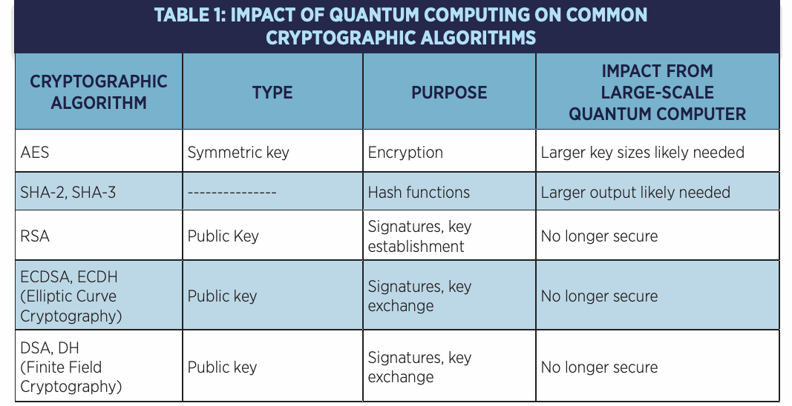
| 表1：量子コンピューティングが一般的な暗号アルゴリズムに与える影響 | |||
| 暗号アルゴリズム | 種類 | 目的 | 大規模量子コンピューターの影響 |
| AES | 共通鍵 | 暗号化 | より長い鍵長が必要となる可能性が高い |
| SHA-2, SHA-3 | --------------- | ハッシュ関数 | より長い出力が必要となる可能性が高い |
| RSA | 公開鍵 | 署名、鍵確立 | 安全ではなくなる |
| ECDSA、ECDH（楕円曲線暗号） | 公開鍵 | 署名、鍵交換 | 安全ではなくなる |
| DSA、DH（有限体暗号） | 公開鍵 | 署名、鍵交換 | 安全ではなくなる |
venues, such as the European Telecommunication received several proposals, and the fnal submission Standardisation Institute (ETSI) Quantum-Safe deadline is in November 2017. Workshop, to increase awareness of the upcoming
ETSI Quantum-Safe Workshopなどの会合を通じて、今後の／複数の提案が寄せられ、最終提出期限は2017年11月であった。
未レビュー訳In FY 2018, NIST will continue to explore the
FY 2018には、NISTは
未レビュー訳migration to post-quantum cryptography, and to
ポスト量子暗号への移行に関する認識を高め、
未レビュー訳security and feasibility of purported quantum-
PQC標準化プロセスに提出されたとされる量子耐性技術の安全性と実現可能性を検討し、
未レビュー訳engage with stakeholders in the U.S. and other
米国および他国の関係者と連携する。
未レビュー訳resistant technologies submitted to the Post-Quantum
公開ワークショップを開催する。
未レビュー訳countries. NIST has also sponsored other research,
NISTは他の研究、
未レビュー訳Standardization Process. NIST will hold a public
2018年4月、フロリダで開催されるPQCrypto会議と併催し、提出者が
未レビュー訳education, and research events.
教育および研究イベントも後援している。
未レビュー訳workshop in April 2018, co-located with the PQCrypto
アルゴリズムの提案者を招いて発表してもらう。PQC標準化プロセスでは、複数回の公開評価・分析を経て、3～5年の分析後にNISTが標準化するアルゴリズムを選定する。
未レビュー訳In 2016, NIST published NISTIR 8105: Report conference in Florida, during which submitters will be on Post-Quantum Cryptography, which shared the invited to present their algorithms. The Post-Quantum team’s current understanding about the status of Standardization Process will proceed with multiple quantumcomputingandpost-quantumcryptography. rounds of public evaluation and analysis, with the goal Shortly thereafter, NIST began the Post-Quantum of selecting algorithms for standardization by NIST Standardization Process, a thorough multi-year after three to fve years of analysis. efort with the objective of creating new quantum-
NISTは2016年にNISTIR 8105「ポスト量子暗号レポート」を公開し、量子計算とポスト量子暗号の状況に関するチームの理解をまとめた。その後、NISTはポスト量子標準化プロセスを開始した。これは、公開鍵暗号化とデジタル署名向けの新しい耐量子暗号規格を作るための、複数年にわたる大規模な取り組みである。／フロリダ州の会議で提出者から複数の提案があり、最終提出期限は2017年11月であった。
未レビュー訳FOR MORE INFORMATION, SEE:
詳細情報：
未レビュー訳resistant cryptographic standards for public-key encryption and digital signatures (see https://www. https://www.nist.gov/pqcrypto nist.gov/pqcrypto). These functionalities are much
暗号規格を公開鍵暗号化とデジタル署名向けに整備する（https://www.nist.gov/pqcrypto）。これらの機能はAESやSHA-3より
未レビュー訳CONTACTS:
連絡先：
未レビュー訳more complex than AES or SHA-3, and will require fundamentally new techniques to address several Email project team: pqc@nist.gov open research questions in this area (for example, how
はるかに複雑で、この分野の未解決研究課題（例えば、／プロジェクトチームへのメール：pqc@nist.gov
未レビュー訳Dr. Dustin Moody
Dr. Dustin Moody
未レビュー訳Dr. Lily Chen
Dr. Lily Chen
未レビュー訳to measure security against quantum attacks when a
量子コンピューターがまだ作られていない状況で、量子攻撃に対する安全性を
未レビュー訳(301) 975-8136
(301) 975-8136
未レビュー訳(301) 975-6974
(301) 975-6974
未レビュー訳quantum computer has not yet been built). Submitters
量子コンピューターはまだ構築されていない）。提出者は
未レビュー訳dustin.moody@nist.gov lily.chen@nist.gov
dustin.moody@nist.gov、lily.chen@nist.gov
未レビュー訳from around the world are invited to propose quantum-resistant cryptosystems for consideration
世界各地から、PQC標準化プロセスでNISTが検討する耐量子暗号方式を提案するよう招請されている。
未レビュー訳Dr. Yi-Kai Liu
Dr. Yi-Kai Liu
未レビュー訳by NIST as part of the PQC standardization process.
。
未レビュー訳(301) 975-6499
(301) 975-6499
未レビュー訳In December 2016, after resolving and assessing
2016年12月、
未レビュー訳yi-kai.liu@nist.gov
yi-kai.liu@nist.gov
未レビュー訳57 public comments, NIST issued the fnal submission requirements and evaluation criteria. NIST has
公開コメント57件を解決・評価した後、NISTは最終提出要件と評価基準を発表した。NISTは
未レビュー訳NIST/ITL CYBERSECURITY PROGRAM ANNUAL REPORT 2017
NIST/ITL サイバーセキュリティ・プログラム年次報告書 2017
未レビュー訳CSD is also researching circuit-based security
CSDは回路ベースのセキュリティ
未レビュー訳Circuit Complexity
回路計算量
未レビュー訳metrics for cryptographic functions. For a function
暗号関数に対する指標も研究している。ある関数が
未レビュー訳Cryptographic functions, such as those used to be secure (in particular, one-way), it must be the for encryption, digital signatures, and hashing, are case that any circuit that implements it is sufciently implemented as electronic circuits for a wide class of complex. In particular, a function is insecure if it can be applications. In practice, it is important to be able to implemented by a circuit containing too few Boolean reducethesizeanddepthofthesecircuits.Sizeimpacts AND gates. This security metric — the number of AND energy consumption and power requirements. Depth gates necessary and sufcient to implement a function largely determines the speed at which the functions — is called multiplicative complexity. Unfortunately, are evaluated by the circuit. This reduction problem determining multiplicative complexity is extremely is closely related to designing small (and low-depth) hard. In previous years, the CSD was able to determine combinational circuits, which contain only logical the multiplicative complexity of all Boolean functions gates (i.e., no registers are used, and there is no clock). on up to fve input bits. This year the team was able Figure 18 below shows one such circuit, for performing to do the same for all functions on six inputs (there inversion in GF(24).
暗号関数（暗号化、デジタル署名、ハッシュに用いるものなど）は、電子回路として実装され、幅広い用途を支える。／安全（特に一方向性）であるには、その関数を実装する回路が十分に複雑でなければならない。
未レビュー訳are 264 such functions). ITL was able to exhibit specifc functions on n bits which are impossible to calculate
そのような関数は2^64個ある）。ITLは、nビットの特定の関数のうち、
未レビュー訳Finding optimal combinational circuits is MAX-
最適な組合せ回路を見つける問題はMAX-
未レビュー訳with fewer than n AND gates. Also as a result of
n個未満のANDゲートでは計算できないものを示した。また、この
未レビュー訳SNP Complete. In practice, this means that it is
SNP完全問題である。実際には、
未レビュー訳this classifcation, it was possible to determine the
この分類により、
未レビュー訳necessary to settle for methods that design “good”
「良好な」回路を設計する方法に頼らざるを得ない。
未レビュー訳multiplicative complexity of the symmetric function
対称関数
未レビュー訳circuits, as opposed to provably optimal circuits. CSD
最適性が証明された回路ではなく、CSDは
未レビュー訳S(8,4) – problems that had remained unresolved for
S(8,4)の乗法計算量は、長年未解決だった
未レビュー訳has developed and implemented new solutions for
回路最小化問題に対する新しい解法を開発・実装し、
未レビュー訳many years.
問題である。
未レビュー訳the circuit-minimization problem. There is a tradeof between the size and depth of circuits. Heuristics that Secure multi-party computation is a technique do well with respect to one of these metrics tend to do that allows a group of people to compute a function of so at the expense of the other one. In cooperation with their inputs without revealing the inputs themselves. colleagues at the University of Southern Denmark, Examples of this are: 1) holding an election; 2) CSD developed a new heuristic that simultaneously conducting closed-bid auctions in which only the reduces size and depth.
回路のサイズと深さにはトレードオフがある。一方の指標で良い結果を出すヒューリスティックは、他方を犠牲にしがちである。南デンマーク大学の同僚との協力により、CSDはサイズと深さを同時に減らす新たなヒューリスティックを開発した。／セキュアなマルチパーティ計算は、参加者が入力自体を明かさずに、入力値上で関数を計算できる手法である。例として、1）選挙の実施、2）落札者だけが特定される非公開入札オークション、3）
未レビュー訳winning bid is determined; 3) proving to a third party that a person’s encrypted attributes satisfy some
落札者が決まる。3）本人の暗号化属性が特定の要件を満たすことを第三者に証明することが挙げられる。
未レビュー訳x0 x1 x2 x3
入力: x0、x1、x2、x3
未レビュー訳requirement, such as being “over 21 and (U.S. citizen or Canadian citizen)”. The protocols that solve secure
要件（例えば「21歳以上で、米国市民またはカナダ市民」）を満たすことを第三者に証明する。セキュアな
未レビュー訳s1 = x0⊕x1 multi-party computation problems often encrypt t1 = x0 ⊼ x3
s1 = x0⊕x1; t1 = x0 ⊼ x3 ／ マルチパーティ計算のプロトコルでは、しばしばビットを暗号化する。
未レビュー訳XOR NAND AND NAND XOR t2 = x0 ∧ x2 bits using arithmetic modulo 2. The complexity of s1 t1 t2 t3 s2
XOR（排他的論理和）; NAND（否定論理積）; AND（論理積）; NAND（否定論理積）; XOR（排他的論理和）; t2 = x0 ∧ x2; s1, t1, t2, t3, s2 ／ ビットには法2の算術を用いる。こうしたプロトコルの計算量は
未レビュー訳t3 = x1 ⊼ x2 such protocols largely depends on the number of s2 = x2⊕x3 multiplications required. Hence, expressing functions t4 = s1 ∧ t1 as a circuit with only a few multiplication (AND) gates
t3 = x1 ⊼ x2; s2 = x2⊕x3; t4 = s1 ∧ t1 ／ 主に必要な乗算回数に依存する。したがって、少数の乗算（AND）ゲートだけからなる回路として関数を表現することが
未レビュー訳AND XOR XOR AND s3 = x1⊕t2 is important. Some of the circuits published are now t4
AND（論理積）; XOR（排他的論理和）; XOR（排他的論理和）; AND（論理積）; s3 = x1⊕t2; t4 ／ 重要である。公開された回路の一部は現在、
未レビュー訳s4 t5 s4 = t2⊕ x3 a standard reference for the benchmarking of secure
s4, t5; s4 = t2⊕x3 ／ セキュアな
未レビュー訳t5 = t3 ∧ s2
t5 = t3 ∧ s2
未レビュー訳s3
未レビュー訳multi-party computation protocols.
マルチパーティ計算プロトコルのベンチマークにおける標準的な参照資料となっている。
未レビュー訳t6 = s1 ∧ s4 XOR s5 = t2⊕t5
t6 = s1 ∧ s4; s5 = t2⊕t5
未レビュー訳The results on circuit size and depth, and on
回路のサイズと深さ、および
未レビュー訳AND
AND（論理積）
未レビュー訳AND
AND（論理積）
未レビュー訳s5 t7 = s3 ∧ s2 multiplicative complexity were presented at the 2nd
s5; t7 = s3 ∧ s2 ／ 乗法計算量に関する結果は、第2回
未レビュー訳t6
未レビュー訳t7
未レビュー訳s6 = t4⊕t2 International Workshop on Boolean Functions and s7 = t6⊕x1 their Applications (Bergen, Norway). Circuits are s8 = t7⊕x3 periodically posted at https://csrc.nist.gov/Projects/
s6 = t4⊕t2; s7 = t6⊕x1; s8 = t7⊕x3 ／ 国際ブール関数とその応用ワークショップ（ノルウェー、ベルゲン）で発表された。回路は定期的に次のサイトに掲載される：https://csrc.nist.gov/Projects/
未レビュー訳XOR
XOR（排他的論理和）
未レビュー訳XOR
XOR（排他的論理和）
未レビュー訳XOR
XOR（排他的論理和）
未レビュー訳s6
未レビュー訳s7
未レビュー訳s8 y0 = s5
s8; y0 = s5
未レビュー訳Circuit-Complexity/Circuit-Problems.
Circuit-Complexity/Circuit-Problems
未レビュー訳y1 = s8 y2 = s6
y1 = s8; y2 = s6
未レビュー訳CONTACT:
連絡先：
未レビュー訳y0 y1 y2 y3 y3 = s7
y0, y1, y2, y3; y3 = s7
未レビュー訳Dr. René Peralta (301) 975-8702
Dr. René Peralta（301）975-8702
未レビュー訳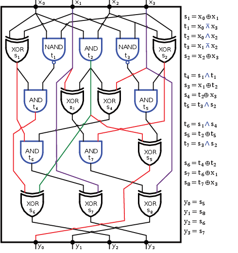
図18：有限体GF(2^4)での反転回路。入力x0、x1、x2、x3からXOR、NAND、ANDゲートを組み合わせて中間値s1–s8、t1–t7を生成し、出力y0–y3を得る回路を示す。図中の各式と接続は原図を保持。
Figure 18: Inversion in GF(24)
図18：GF(2^4)における反転回路
未レビュー訳rene.peralta@nist.gov
rene.peralta@nist.gov
未レビュー訳ITL CYBERSECURITY PROGRAM AND PROJECTS | FY 2017
ITL サイバーセキュリティ・プログラムおよびプロジェクト | FY 2017
未レビュー訳FOR MORE INFORMATION, SEE:
詳細情報：
未レビュー訳Lightweight Cryptography
軽量暗号
未レビュー訳https://www.nist.gov/programs-projects/lightweight-
https://www.nist.gov/programs-projects/lightweight-
未レビュー訳There are several emerging areas in which
複数の新興分野では、
未レビュー訳cryptography
cryptography
未レビュー訳highly constrained devices are interconnected and
リソースが極めて限られた機器が相互接続され、
未レビュー訳https://csrc.nist.gov/publications/detail/itl-
https://csrc.nist.gov/publications/detail/itl-
未レビュー訳working in concert to accomplish a task. Examples
連携してタスクを実行している。例として、
未レビュー訳bulletin/2017/06/toward-standardizing-lightweight-
bulletin/2017/06/toward-standardizing-lightweight-
未レビュー訳of these areas include automotive systems, sensor
自動車システム、センサーネットワーク、医療、分散制御システム、
未レビュー訳cryptography/fnal
cryptography/final
未レビュー訳networks, healthcare, distributed control systems, the Internet of Things (IoT), cyber-physical systems, CONTACTS: and the smart grid. Security and privacy can be very Mr. Lawrence Bassham Dr. Kerry McKay important in these areas. Because most of the modern (301) 975-3292
ネットワーク、モノのインターネット（IoT）、サイバーフィジカルシステム、スマートグリッドがある。これらの分野ではセキュリティとプライバシーが非常に重要である。／連絡先：Mr. Lawrence Bassham、Dr. Kerry McKay（301）975-3292
未レビュー訳(301) 975-4969
（301）975-4969
未レビュー訳cryptographic algorithms were designed for desktop/ lawrence.bassham@nist.gov kerry.mckay@nist.gov server environments, many of these algorithms cannot be implemented in the constrained devices Dr. Meltem Sönmez Turan used by these applications. When current NIST- (301) 975-4391 approved algorithms can be engineered to ft into meltem.turan@nist.gov the limited resources of constrained environments, their performance may not be acceptable. For these
現代の暗号アルゴリズムの多くはデスクトップ／サーバー環境向けに設計されており、これらの用途で使われる制約のある機器には実装できない。現行のNIST承認アルゴリズムを制約環境の限られたリソースに合わせて実装できても、性能が許容できない場合がある。こうした理由から、／Dr. Meltem Sönmez Turan（301）975-4391; meltem.turan@nist.gov
未レビュー訳Cryptography Applications in
無線およびモバイルセキュリティにおける暗号の応用
未レビュー訳reasons, NIST started a lightweight cryptography project in 2013 that was tasked with determining the Wireless and Mobile Security need and developing a strategy for the standardization
NISTは2013年に軽量暗号プロジェクトを開始し、軽量暗号アルゴリズムを標準化する必要性を判断し、その戦略を策定する任務を与えた。／無線およびモバイルセキュリティ
未レビュー訳Today, wireless networks have been integrated
今日では、無線ネットワークが
未レビュー訳of lightweight cryptographic algorithms.
軽量暗号アルゴリズムを標準化すること。
未レビュー訳into modern communication systems that connect
複数の無線技術を用いてモバイル機器を接続する現代の通信システムに統合されている。こうした
未レビュー訳In October 2016, CSD held the Second Lightweight mobile devices using multiple radio technologies. Such Cryptography Workshop for representatives from heterogeneous networks demand integrated security government,industry,andacademia.Theworkshopled solutions. CSD has worked closely with diferent tothepublicationofNISTIR8114,ReportonLightweight working groups in the IEEE 802 LAN/MAN Standards Cryptography. This report provides an overview of Committee since 2006 and made solid contributions the lightweight cryptography project at NIST, and to the security solutions for wireless networks. The describes a plan for the standardization of lightweight NIST team has been involved in the IEEE 802.11 and cryptographic algorithms. A draft whitepaper, Profles IEEE 802.21 working groups to develop standards for the Lightweight Cryptography Standardization for cryptographic key management schemes for the Process, was released for public comment in order mobility environment. NIST cryptographic standards to receive community feedback on the goals for the have been extensively used in the wireless standards frst set of NIST lightweight cryptography standards. developed in the IEEE 802 community. The functionality that will be requested for this frst
異種ネットワークには統合されたセキュリティソリューションが必要である。CSDは2006年以来、IEEE 802 LAN/MAN標準化委員会の複数の作業部会と緊密に連携し、無線ネットワーク向けセキュリティソリューションに大きく貢献してきた。NISTチームはIEEE 802.11およびIEEE 802.21の作業部会にも参加し、モビリティ環境向けの暗号鍵管理方式の標準を策定している。NIST暗号標準はIEEE 802コミュニティで策定された無線標準で広く利用されている。／2016年10月、CSDは政府、産業界、学界の代表者を対象に第2回軽量暗号ワークショップを開催した。ワークショップを受けて、NISTIR 8114『軽量暗号レポート』が刊行された。このレポートはNISTの軽量暗号プロジェクトの概要と、軽量暗号アルゴリズムの標準化計画を示す。『軽量暗号標準化プロセスのプロファイル』の草案は、NISTが最初に策定する軽量暗号標準群の目標についてコミュニティの意見を得るため、公開コメントに付された。
未レビュー訳In FY 2017, NIST researchers continuously
FY 2017には、NISTの研究者が継続して
未レビュー訳set of standards are authenticated encryption with
最初の標準群で求める機能は、
未レビュー訳collaborated with the IEEE 802.21 Working Group.
IEEE 802.21作業部会と協力した。
未レビュー訳associated data (AEAD) with optional hashing. A
任意のハッシュ処理を伴う認証付き暗号（AEAD）である。
未レビュー訳IEEE 802.21 “Media Independent Handover Services
IEEE 802.21「メディア非依存ハンドオーバーサービス
未レビュー訳call for algorithm submissions for the lightweight
軽量暗号アルゴリズムの提案募集は、
未レビュー訳Framework” was published, and IEEE 802.21.1 “Media
フレームワーク」が公開され、IEEE 802.21.1「メディア
未レビュー訳cryptography portfolio will be announced in FY 2018,
選定プロセスの詳細とともに、FY 2018に発表される予定である。
未レビュー訳Independent Services” was fnalized for publication.
非依存サービス」は出版に向けて最終化された。
未レビュー訳along with details of the selection process.
。
未レビュー訳These new standards address the future connectivity
これらの新しい標準は、将来の接続性
未レビュー訳NISTIR 8114 and the Lightweight Cryptography and management requirements of Smart Grid, IoT and project were featured in the June 2017 ITL bulletin, Smart Home networks, where multimode wireless and CSD presented a poster on the project during devices and smart end nodes incorporate diferent ITL Science Day in October 2016. The Lightweight wireless interfaces, and need to switch among the Cryptography project was presented at several venues networks during an ongoing communication session, in FY 2017, including Real World Crypto, HighLight: while maintaining the same security posture. IEEE High Security Lightweight Cryptography, and the rump 802.21 and IEEE 802.21.1 adopted NIST standardized sessions of the Eurocrypt and Crypto conferences. cryptographic algorithms, such as ECDSA, as specifed
と管理の要件に対応する。スマートグリッド、IoT、スマートホームネットワークでは、マルチモード無線機器やスマートエンドノードが異なる無線インターフェースを備え、通信セッション中に同じセキュリティ水準を維持しながらネットワークを切り替える必要がある。IEEE 802.21およびIEEE 802.21.1は、NIST標準化暗号アルゴリズム（ECDSA（ ／ NISTIR 8114と軽量暗号プロジェクトは2017年6月のITL bulletinで紹介された。CSDは2016年10月のITL Science Dayでこのプロジェクトのポスターを発表した。軽量暗号プロジェクトはFY 2017にReal World Crypto、HighLight: High Security Lightweight Cryptography、EurocryptおよびCrypto会議のrump sessionなど複数の場で紹介された。
未レビュー訳in FIPS 186-4, and AES-CCM, as specifed in SP 800-
FIPS 186-4に規定）、およびSP 800-
未レビュー訳38C.
38Cに規定されるAES-CCMなど）を採用した。
未レビュー訳NIST/ITL CYBERSECURITY PROGRAM ANNUAL REPORT 2017
NIST/ITL サイバーセキュリティ・プログラム年次報告書 2017
未レビュー訳The recently revealed KRACK attack on the IEEE Figure 19 illustrates three blocks in a blockchain, 802.11 wireless network leads to generating the same where each block contains at least one transaction, a key stream in the case of AES-CCM, or recovering the nonce and the hash value of the previous block in the authentication key, in the case of AES-GCM through chain. a man-in-the-middle attack to create a counter
IEEE 802.11無線ネットワークで最近明らかになったKRACK攻撃は、AES-CCMの場合に同じキーストリームを生成し、／図19はブロックチェーン内の3つのブロックを示す。各ブロックには少なくとも1件のトランザクション、nonce、および直前のブロックのハッシュ値が含まれる。
未レビュー訳The most well-known example of the use of a
ブロックチェーンの最もよく知られた利用例は、
未レビュー訳reset condition. The KRACK attack confrms that it is
AES-GCMの場合には中間者攻撃を通じて認証鍵を回復し、カウンター状態をリセットさせる。KRACK攻撃は、
未レビュー訳blockchain is BitCoin and similar digital currencies.
Bitcoinなどのデジタル通貨である。
未レビュー訳essential to make sure that the special features and
各暗号アルゴリズムを使用する際の固有の機能と
未レビュー訳However, the use of blockchains has been proposed
ただし、ブロックチェーンは
未レビュー訳assumptions for using each cryptographic algorithm
前提をプロトコル設計で考慮し、
未レビュー訳for other applications, such as smart contracts and
スマートコントラクトや
未レビュー訳are considered in the protocol design so that the
あらゆる状況でセキュリティを確保できるよう、
未レビュー訳various ledgering applications.
さまざまな台帳アプリケーションなど、他の用途にも提案されている。
未レビュー訳requirements are satisfed to assure security in any circumstance.
要件を満たすことが不可欠であると確認した。
未レビュー訳Many organizations have suggested applications for the use of blockchains, some of which may not
多くの組織がブロックチェーンの利用案を提案しているが、その一部は
未レビュー訳In FY 2018, CSD will continue to contribute to IEEE
FY 2018も、CSDはIEEE 802無線標準への貢献を続ける。
未レビュー訳be appropriate. CSD is investigating the use of
適切でない可能性がある。CSDは、
未レビュー訳802 wireless standards. CSD will work with the IEEE
CSDはIEEE
未レビュー訳blockchains to determine which application types are
どの種類の用途がブロックチェーンに適し、
未レビュー訳802.11 working group to develop countermeasures for
802.11作業部会と連携し、
未レビュー訳appropriate for using blockchains and which are not.
どの用途が適さないかを判断するため、
未レビュー訳the KRACK attack.
KRACK攻撃への対策を開発する。
未レビュー訳CSD is monitoring the proposed uses of cryptography to assure that current cryptographic techniques
CSDは、現行の暗号技術が
未レビュー訳CONTACT:
連絡先：
未レビュー訳are used properly and whether new techniques are
適切に使用されているか、また新たな技術が
未レビュー訳Dr. Lily Chen
Dr. Lily Chen
未レビュー訳required.
必要かどうかを確認するため、暗号技術の提案された用途を監視している。
未レビュー訳(301) 975 -6974 lily.chen@nist.gov
（301）975-6974; lily.chen@nist.gov
未レビュー訳During FY 2017, NIST participated in standards activities exploring blockchain technologies,
FY 2017には、NISTはブロックチェーン技術、
未レビュー訳Blockchains
ブロックチェーン
未レビュー訳architectures, and use cases. These included participation in a new blockchain study group
アーキテクチャおよびユースケースを検討する標準化活動に参加した。その活動には、新しいブロックチェーン研究グループへの参加が含まれる。
未レビュー訳CSD began studying the use of blockchains,
CSDは、
未レビュー訳sponsored by American Standards Committee X9,
米国規格委員会X9（
未レビュー訳which have been suggested as a solution for
多くの用途への解決策として提案されているブロックチェーンの利用を調査し始めた。ブロックチェーンは分散型
未レビュー訳the fnancial services committee of the American
米国規格協会（ANSI）の金融サービス委員会）が後援し、
未レビュー訳many applications. A blockchain is a distributed
データベースであり、継続的に増加する
未レビュー訳National Standards Institute (ANSI), and continued
NISTは引き続き
未レビュー訳database that maintains a continuously growing
記録の一覧を保持する。記録は「ブロック」と呼ばれ、
未レビュー訳work in the International Standards Organization
国際標準化機構（ISO）の
未レビュー訳list of records called blocks that are secured from
ハッシュ関数を用いて、検出されないまま改ざんされることから保護される。
未レビュー訳(ISO) Technical Committee (TC) for Blockchains
ブロックチェーンおよび分散型台帳技術に関する技術委員会での
未レビュー訳undetected modifcation using a hash function.
各ブロックには、直前のブロックへのリンクが含まれる。
未レビュー訳and Distributed Ledger Technologies (ISO/TC 307).
作業を続けた（ISO/TC 307）。
未レビュー訳Each block contains a link to the previous block. A
新しいブロックがチェーンに追加されるのは、複数の
未レビュー訳Established in 2016, the initial objectives of ISO/TC 307
2016年に設立されたISO/TC 307の当初の目標には、
未レビュー訳new block is added to the chain only when multiple
当事者が
未レビュー訳include defning key terms and concepts, exploring
主要用語や概念の定義、
未レビュー訳parties (possibly mutually untrusted parties) agree
（相互に信頼していない場合もある）が
未レビュー訳reference architectures, investigating use cases, and
参照アーキテクチャの検討、ユースケースの調査に加え、
未レビュー訳to its accuracy. In essence, a blockchain is a mutually
その正確性に合意した場合に限られる。本質的に、ブロックチェーンは関係者間で
未レビュー訳identifying identity and privacy implications within
ブロックチェーン技術とアーキテクチャにおけるアイデンティティおよびプライバシーへの影響を特定することが含まれる。
未レビュー訳agreed-upon record of history.
合意された履歴記録である。
未レビュー訳blockchain technologies and architectures. NIST has
NISTは
未レビュー訳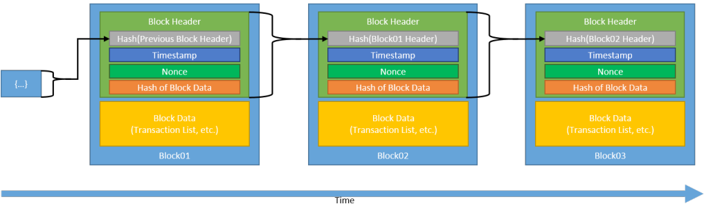
図19：ブロックチェーンの構造例。時間の矢印に沿ってBlock01、Block02、Block03が連結される。各ブロックにはBlock HeaderとBlock Dataがあり、ヘッダーには前ブロックのハッシュ、Timestamp、Nonce、当該ブロックデータのハッシュが含まれる。データ領域にはトランザクション一覧などが入る。各ブロックのヘッダーは直前ブロックのハッシュを参照する。
Tlmestamp
Timestamp（タイムスタンプ）
未レビュー訳Tlmestamp
Timestamp（タイムスタンプ）
未レビュー訳T1mestamp
Timestamp（タイムスタンプ）
未レビュー訳Nonce
Nonce（ノンス）
未レビュー訳Nonce
Nonce（ノンス）
未レビュー訳Nonce
Nonce（ノンス）
未レビュー訳Time
Time（時間）
未レビュー訳Figure 19: Example of a Blockchain
図19：ブロックチェーンの例
未レビュー訳ITL CYBERSECURITY PROGRAM AND PROJECTS | FY 2017
ITL サイバーセキュリティ・プログラムおよびプロジェクト | FY 2017
未レビュー訳been participating in these activities via the national specifcations. To that end, the CSD develops test mirror committee within the InterNational Committee suites and test methods; provides implementation for Information Technology Standards (INCITS). ISO/ guidance and technical support to industry forums; TC 307 will meet in November 2017, where the reports and conducts education, training, and outreach on these topics will be reviewed and new work will be programs. established.
これらの活動には、国際情報技術標準委員会（INCITS）内の国内ミラー委員会を通じて参加してきた。ISO/TC 307は2017年11月に会合を開き、各テーマの報告を検討して新たな作業を開始する予定である。／これらの仕様を踏まえ、CSDはテストスイートと試験方法を開発し、業界フォーラムに実装指針と技術支援を提供するとともに、教育、訓練、アウトリーチを実施する。
未レビュー訳CSD’s validation programs work together with
CSDの検証プログラムは、
未レビュー訳During FY 2017, CSD established the NIST Internal independent laboratories that are accredited by the Blockchain Workbench to support internal research National Voluntary Laboratory Accreditation Program exploring blockchain technologies and use cases. (NVLAP). Based on independent laboratory test The workbench itself is hosted on internal servers, reports and test evidence provided by the labs, the and is currently running two blockchains – the frst validation programs described below validate the is a permissioned blockchain utilizing the MultiChain implementation-under-test. Awarded validations are blockchain platform; the second is Ethereum, subsequently published on NIST websites. which has been confgured to run only within the workbench. In addition to the blockchain software Cryptographic Algorithm Validation itself, the workbench has demonstration applications
FY 2017に、CSDはブロックチェーン技術とユースケースの内部調査を支援するため、NIST Internal Blockchain Workbenchを構築した。ワークベンチは内部サーバー上でホストされ、現在2種類のブロックチェーンを稼働させている。1つ目はMultiChainを用いた許可型ブロックチェーンで、2つ目はワークベンチ内だけで稼働するよう構成したEthereumである。ブロックチェーンソフトウェアに加えて、ワークベンチにはデモ用アプリケーションがあり、／国家自主試験所認定プログラム（NVLAP）の認定を受けた独立試験所と連携している。各試験所の試験報告と証拠に基づき、以下の検証プログラムは試験対象実装を検証する。認定結果は後にNISTのウェブサイトで公開される。／暗号アルゴリズム検証
未レビュー訳Program (CAVP)
プログラム（CAVP）
未レビュー訳with source code, software development tools and several diagnostic tool suites available for researchers The Cryptographic Algorithm Validation Program to utilize. NIST/ITL plans to continue advancing the (CAVP) provides federal agencies in the United States capabilities of the workbench and expanding the
研究者が利用できるソースコード、ソフトウェア開発ツール、複数の診断ツール一式を備えている。NIST/ITLはFY 2018もワークベンチの機能を高め、／CAVPは米国の連邦機関に
未レビュー訳and Canada with assurance that a cryptographic
さらにカナダの連邦機関に、暗号アルゴリズムが
未レビュー訳types of blockchains available in FY 2018.
FY 2018に利用できるブロックチェーンの種類を増やす予定である。
未レビュー訳algorithm has been implemented completely and correctly, as specifed in its approved Federal
完全かつ正しく実装され、承認済みの連邦
未レビュー訳CONTACTS:
連絡先：
未レビュー訳Information Processing Standard (FIPS-Approved)
情報処理標準（FIPS承認）
未レビュー訳Ms. Elaine Barker Mr. John Kelsey
Ms. Elaine Barker; Mr. John Kelsey
未レビュー訳or NIST-recommended cryptographic algorithm
またはNIST推奨の暗号アルゴリズム
未レビュー訳(301) 975-2911
（301）975-2911
未レビュー訳(301) 975-5101
（301）975-5101
未レビュー訳standard. The CAVP was established in 2013 as a
標準に規定されたとおりである。CAVPは2013年に
未レビュー訳ebarker@nist.gov john.kelsey@nist.gov
ebarker@nist.gov; john.kelsey@nist.gov
未レビュー訳joint program in collaboration between NIST and the Communications Security Establishment (CSE)
NISTとカナダ通信安全機関（CSE）の共同プログラムとして設立された。
未レビュー訳Dr. René Peralta Mr. Andrew Regenscheid
Dr. René Peralta; Mr. Andrew Regenscheid
未レビュー訳of Canada. Prior to this date, the CAVP’s functions
カナダのCSEと共同で設立された。これ以前は、CAVPの機能は
未レビュー訳(301) 975-8702 (301) 975-5155
（301）975-8702; （301）975-5155
未レビュー訳were included in the Cryptographic Module Validation
暗号モジュール検証プログラム（CMVP）に含まれていた。
未レビュー訳rene.peralta@nist.gov andrew.regenscheid@nist.gov
rene.peralta@nist.gov; andrew.regenscheid@nist.gov
未レビュー訳Program (CMVP). With the increase in the number and complexityofFIPS-ApprovedandNIST-recommended
（CMVP）。FIPS承認およびNIST推奨の
未レビュー訳Mr. Dylan Yaga
Mr. Dylan Yaga
未レビュー訳cryptographic algorithms, it was deemed necessary
暗号アルゴリズムの数と複雑さが増したため、
未レビュー訳(301) 975-6004
（301）975-6004
未レビュー訳to establish the CAVP as an independent program.
CAVPを独立したプログラムとして設立する必要があると判断された。
未レビュー訳dylan.yaga@nist.gov
dylan.yaga@nist.gov
未レビュー訳The CAVP’s goal is to provide federal agencies with a security metric list to use in validating cryptographic algorithm implementations, and promote the use of validated algorithms by industry and the public.
CAVPの目標は、連邦機関が暗号アルゴリズム実装を検証する際に使うセキュリティ指標一覧を提供し、産業界と一般による検証済みアルゴリズムの利用を促すことである。
未レビュー訳VALIDATION PROGRAMS
検証プログラム
未レビュー訳The testing is carried out by independent third-party laboratories accredited by the NVLAP, and the validations performed by the CAVP program
試験はNVLAP認定の独立第三者試験所が実施し、CAVPが行う検証によって
未レビュー訳Federal agencies, industry, and the public rely on
連邦機関、産業界、一般の利用者は、
未レビュー訳provide this metric. Federal agencies, industry, and
この指標を得る。連邦機関、産業界、一般の利用者は
未レビュー訳many of the standards and specifcations supported
ITLが支援する多くの規格・仕様に依存している。
未レビュー訳the public can choose validated implementations
CAVPの検証済みアルゴリズム一覧から検証済みの
未レビュー訳by ITL. Poor implementations of these standards
これらの規格や仕様の実装品質が低ければ、
未レビュー訳of cryptographic algorithms from the CAVP
暗号アルゴリズム実装を選択でき、
未レビュー訳or specifcations may render a product insecure,
製品の安全性が損なわれ、
未レビュー訳Validated Algorithms List and have confdence in the
主張されるセキュリティレベルと正確な
未レビュー訳potentially placing sensitive information at risk. ITL
機密情報が危険にさらされる可能性がある。ITLは
未レビュー訳claimed level of security and assurance of correct
実装に対する保証を信頼できる。
未レビュー訳operates several validation programs that help provide
複数の検証プログラムを運営し、
未レビュー訳implementation.
実装。
未レビュー訳a level of assurance that products meet established security requirements and conform to published The validation of cryptographic algorithms
製品が確立されたセキュリティ要件を満たし、公表済み仕様に適合するという一定の保証を提供する。／暗号アルゴリズムの検証
未レビュー訳NIST/ITL CYBERSECURITY PROGRAM ANNUAL REPORT 2017
NIST/ITL サイバーセキュリティ・プログラム年次報告書 2017
未レビュー訳by the CAVP is a prerequisite to the validation of a through defned sets of security requirements. For cryptographic module by the CMVP and is also used by the CAVP, a validation system document is designed other programs outside of NIST as well. Since federal for each FIPS-approved or NIST-recommended agencies are required to use validated cryptographic cryptographic algorithm. See the website for a listing modules for the protection of sensitive unclassifed (see https://csrc.nist.gov/groups/STM/cavp/). The information, the validated modules and the validated four Annexes to FIPS 140-2 reference the underlying algorithms that the modules contain represent the cryptographic algorithm standards or methods. culmination and delivery of CSD’s cryptography-
CAVPによる暗号アルゴリズムの検証は、CMVPによる暗号モジュール検証の前提条件であり、NIST外のプログラムでも利用される。連邦機関には、機密指定のない情報を保護するため、検証済み暗号モジュールの使用が求められている。検証済みモジュールとそれらに含まれる検証済みアルゴリズムは、CSDの暗号関連作業の成果を／定義済みのセキュリティ要件に基づき、CAVPでは各FIPS承認またはNIST推奨暗号アルゴリズム用に検証システム文書を設計している。対象となる暗号アルゴリズムの一覧はウェブサイトを参照。FIPS 140-2の4つの附属書は、基礎となる暗号アルゴリズムの規格または方式を参照している。
未レビュー訳By the end of FY 2017, the CAVP had issued
FY 2017末までに、CAVPは
未レビュー訳based work to the end user.
エンドユーザーへ届ける。
未レビュー訳approximately 28,710 validations, representing the
約28,710件の検証を発行し、その対象は
未レビュー訳The CAVP validation program provides algorithm validations of approximately 18 approved documented methodologies for conformance testing algorithms, including 5 modes of operation.
CAVPの検証プログラムは、適合性試験のための文書化済み手法を提供する。／約18種類の承認済みアルゴリズム（5つの動作モードを含む）が検証対象であった。
未レビュー訳CAVP Validation Status By FYs
会計年度別のCAVP検証状況
未レビュー訳6000
6000
未レビュー訳原本PDFの抜粋画像
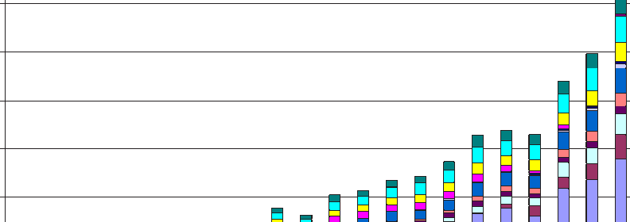
5000
5000
未レビュー訳4000
4000
未レビュー訳3000
3000
未レビュー訳2000
2000
未レビュー訳1000
1000
未レビュー訳0
未レビュー訳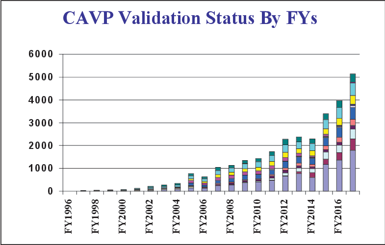
図20：会計年度別のCAVP検証件数を示す積上げ棒グラフ。横軸はFY 1996からFY 2017、縦軸は0から6,000件。検証件数は全体として増加し、FY 2017には約5,147件に達する。
Figure 20: CAVP Validation Status by Fiscal Year
図20：会計年度別のCAVP検証状況
未レビュー訳ITL CYBERSECURITY PROGRAM AND PROJECTS | FY 2017
ITLサイバーセキュリティプログラムおよびプロジェクト | 2017会計年度
CAVP Validation Status For FYI 7
FY 2017のCAVP検証状況
未レビュー訳 TOES
TDES
未レビュー訳1400
1400
未レビュー訳 SHA3
SHA3
未レビュー訳1200
1200
未レビュー訳 SHA
SHA
未レビュー訳1000
1000
未レビュー訳RSA KDF
RSA; KDF
未レビュー訳800
800
未レビュー訳 KAS
KAS
未レビュー訳600
600
未レビュー訳DH.MAC ECDSA
HMAC; ECDSA
未レビュー訳400
400
未レビュー訳ODSA
DSA
未レビュー訳200
200
未レビュー訳DDRBG ComponentTest
DRBG; コンポーネント試験
未レビュー訳0 ~... ~ ~. r.--- r.--- r.--- r.--- .r--- r.--- r.--- r.--- r.--- AES ~ ~ ~ ~ ~ ~ ~ ~ ~ -~ ~ ~
原文のみ
= -
原文のみ
> ,
原文のみ
z~
原文のみ
i ,
原文のみ
b=
原文のみ
原文のみ
原文のみ
( .I
原文のみ
. Q
原文のみ
"= '"-
原文のみ
" '"
原文のみ
0(.I
原文のみ
原文のみ
~ -
原文のみ
原文のみ
原文のみ
原文のみ
原文のみ
原文のみ
原文のみ
原文のみ
原文のみ
~ ~
原文のみ
原文のみ
~ ~
原文のみ
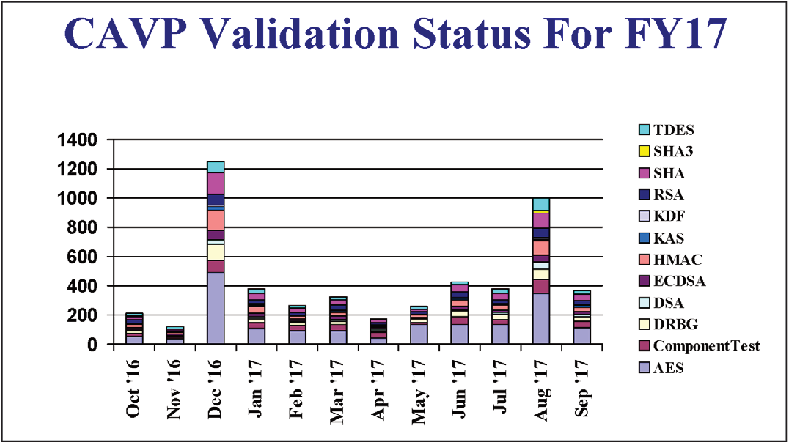
図21：FY 2017のCAVP検証状況を月別に示す積上げ棒グラフ。横軸は2016年10月から2017年9月、縦軸は0から1,400件。凡例はTDES、SHA3、SHA、RSA、KDF、KAS、HMAC、ECDSA、DSA、DRBG、Component Test、AES。2016年12月が約1,250件で最多、2017年8月は約1,000件。
Figure 21: CAVP Validation Status for FY 2017
図21：FY 2017のCAVP検証状況
未レビュー訳CAVP Validated Implementation Actual Numbers
CAVP検証済み実装の実数
未レビュー訳Updated As: Friday, November 03, 2017
更新日：2017年11月3日（金）
未レビュー訳| FiscalYear | AES | Comp. | DES | DSA | DRBG | ECDSA | HMAC | KAS | KDF | RNG | RSA | SHA | SJ | TDES | Total |
| FY1996 | 0 | 0 | 2 | 0 | 0 | 0 | 0 | 0 | 0 | 0 | 0 | 0 | 0 | 0 | 2 |
| FY1997 | 0 | 0 | 11 | 6 | 0 | 0 | 0 | 0 | 0 | 0 | 0 | 7 | 2 | 0 | 26 |
| FY1998 | 0 | 0 | 27 | 9 | 0 | 0 | 0 | 0 | 0 | 0 | 0 | 6 | 0 | 0 | 42 |
| FY1999 | 0 | 0 | 30 | 14 | 0 | 0 | 0 | 0 | 0 | 0 | 0 | 12 | 1 | 0 | 57 |
| FY2000 | 0 | 0 | 29 | 7 | 0 | 0 | 0 | 0 | 0 | 0 | 0 | 12 | 1 | 28 | 77 |
| FY2001 | 0 | 0 | 41 | 15 | 0 | 0 | 0 | 0 | 0 | 0 | 0 | 28 | 0 | 51 | 135 |
| FY2002 | 30 | 0 | 44 | 21 | 0 | 0 | 0 | 0 | 0 | 0 | 0 | 59 | 6 | 58 | 218 |
| FY2003 | 66 | 0 | 49 | 24 | 0 | 0 | 0 | 0 | 0 | 0 | 0 | 63 | 3 | 73 | 278 |
| FY2004 | 82 | 0 | 41 | 17 | 0 | 0 | 0 | 0 | 0 | 28 | 22 | 77 | 0 | 70 | 337 |
| FY2005 | 145 | 1 | 54 | 31 | 0 | 14 | 115 | 0 | 0 | 108 | 80 | 122 | 2 | 102 | 774 |
| FY2006 | 131 | 1 | 3 | 33 | 0 | 19 | 87 | 0 | 0 | 91 | 63 | 120 | 1 | 83 | 632 |
| FY2007 | 238 | 5 | 0 | 63 | 0 | 35 | 127 | 0 | 0 | 137 | 130 | 171 | 1 | 136 | 1043 |
| FY2008 | 271 | 7 | 0 | 77 | 4 | 41 | 158 | 0 | 0 | 137 | 129 | 191 | 0 | 122 | 1137 |
| FY2009 | 373 | 2 | 0 | 71 | 23 | 33 | 193 | 6 | 0 | 142 | 143 | 224 | 1 | 138 | 1349 |
| FY2010 | 406 | 2 | 0 | 70 | 31 | 39 | 179 | 12 | 0 | 150 | 155 | 239 | 0 | 142 | 1425 |
| FY2011 | 476 | 11 | 0 | 102 | 79 | 68 | 201 | 34 | 0 | 148 | 183 | 255 | 0 | 177 | 1734 |
| FY2012 | 654 | 24 | 0 | 121 | 122 | 92 | 283 | 20 | 3 | 157 | 231 | 323 | 1 | 248 | 2279 |
| FY2013 | 778 | 88 | 0 | 106 | 145 | 113 | 276 | 12 | 9 | 132 | 208 | 293 | 0 | 217 | 2377 |
| FY2014 | 595 | 223 | 0 | 95 | 167 | 96 | 276 | 14 | 23 | 63 | 225 | 314 | 0 | 196 | 2287 |
| FY2015 | 1179 | 226 | 0 | 99 | 320 | 164 | 355 | 32 | 35 | 80 | 243 | 396 | 0 | 258 | 3387 |
| FY2016 | 1357 | 329 | 0 | 125 | 339 | 214 | 422 | 50 | 32 | 23 | 305 | 463 | 0 | 303 | 3967 |
| FY2017 | 1786 | 503 | 0 | 170 | 426 | 271 | 508 | 88 | 52 | 0 | 391 | 547 | 0 | 371 | 5147 |
| Total | 8567 | 1422 | 331 | 1276 | 1656 | 1199 | 3180 | 268 | 154 | 1396 | 2508 | 3922 | 19 | 2773 | 28710 |
原本PDFの抜粋画像
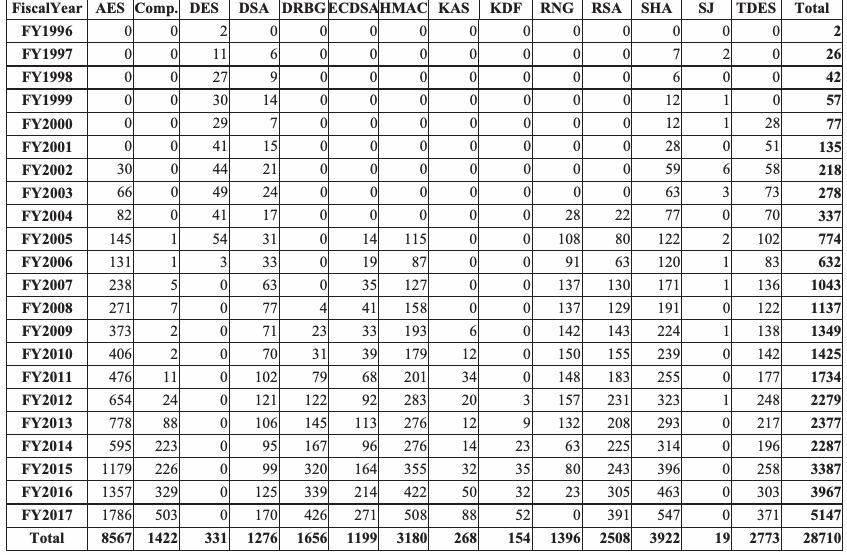
| 会計年度 | AES | コンポーネント試験 | DES | DSA | DRBG | ECDSA | HMAC | KAS | KDF | RNG | RSA | SHA | SJ | TDES | 合計 |
| FY1996 | 0 | 0 | 2 | 0 | 0 | 0 | 0 | 0 | 0 | 0 | 0 | 0 | 0 | 0 | 2 |
| FY1997 | 0 | 0 | 11 | 6 | 0 | 0 | 0 | 0 | 0 | 0 | 0 | 7 | 2 | 0 | 26 |
| FY1998 | 0 | 0 | 27 | 9 | 0 | 0 | 0 | 0 | 0 | 0 | 0 | 6 | 0 | 0 | 42 |
| FY1999 | 0 | 0 | 30 | 14 | 0 | 0 | 0 | 0 | 0 | 0 | 0 | 12 | 1 | 0 | 57 |
| FY2000 | 0 | 0 | 29 | 7 | 0 | 0 | 0 | 0 | 0 | 0 | 0 | 12 | 1 | 28 | 77 |
| FY2001 | 0 | 0 | 41 | 15 | 0 | 0 | 0 | 0 | 0 | 0 | 0 | 28 | 0 | 51 | 135 |
| FY2002 | 30 | 0 | 44 | 21 | 0 | 0 | 0 | 0 | 0 | 0 | 0 | 59 | 6 | 58 | 218 |
| FY2003 | 66 | 0 | 49 | 24 | 0 | 0 | 0 | 0 | 0 | 0 | 0 | 63 | 3 | 73 | 278 |
| FY2004 | 82 | 0 | 41 | 17 | 0 | 0 | 0 | 0 | 0 | 28 | 22 | 77 | 0 | 70 | 337 |
| FY2005 | 145 | 1 | 54 | 31 | 0 | 14 | 115 | 0 | 0 | 108 | 80 | 122 | 2 | 102 | 774 |
| FY2006 | 131 | 1 | 3 | 33 | 0 | 19 | 87 | 0 | 0 | 91 | 63 | 120 | 1 | 83 | 632 |
| FY2007 | 238 | 5 | 0 | 63 | 0 | 35 | 127 | 0 | 0 | 137 | 130 | 171 | 1 | 136 | 1043 |
| FY2008 | 271 | 7 | 0 | 77 | 4 | 41 | 158 | 0 | 0 | 137 | 129 | 191 | 0 | 122 | 1137 |
| FY2009 | 373 | 2 | 0 | 71 | 23 | 33 | 193 | 6 | 0 | 142 | 143 | 224 | 1 | 138 | 1349 |
| FY2010 | 406 | 2 | 0 | 70 | 31 | 39 | 179 | 12 | 0 | 150 | 155 | 239 | 0 | 142 | 1425 |
| FY2011 | 476 | 11 | 0 | 102 | 79 | 68 | 201 | 34 | 0 | 148 | 183 | 255 | 0 | 177 | 1734 |
| FY2012 | 654 | 24 | 0 | 121 | 122 | 92 | 283 | 20 | 3 | 157 | 231 | 323 | 1 | 248 | 2279 |
| FY2013 | 778 | 88 | 0 | 106 | 145 | 113 | 276 | 12 | 9 | 132 | 208 | 293 | 0 | 217 | 2377 |
| FY2014 | 595 | 223 | 0 | 95 | 167 | 96 | 276 | 14 | 23 | 63 | 225 | 314 | 0 | 196 | 2287 |
| FY2015 | 1179 | 226 | 0 | 99 | 320 | 164 | 355 | 32 | 35 | 80 | 243 | 396 | 0 | 258 | 3387 |
| FY2016 | 1357 | 329 | 0 | 125 | 339 | 214 | 422 | 50 | 32 | 23 | 305 | 463 | 0 | 303 | 3967 |
| FY2017 | 1786 | 503 | 0 | 170 | 426 | 271 | 508 | 88 | 52 | 0 | 391 | 547 | 0 | 371 | 5147 |
| 合計 | 8567 | 1422 | 331 | 1276 | 1656 | 1199 | 3180 | 268 | 154 | 1396 | 2508 | 3922 | 19 | 2773 | 28710 |
Figure 22: Validated Implementation Actual Numbers
図22：検証済み実装の実数
未レビュー訳NIST/ITL CYBERSECURITY PROGRAM ANNUAL REPORT 2017
NIST/ITL サイバーセキュリティ・プログラム年次報告書 2017
未レビュー訳The CAVP issued approximately 5,000 algorithm Validated Modules List and have confdence in the validations in FY 2017, an increase of approximately claimed level of security and assurance of correct 100 validations from the previous year. The increase in implementation. validationsisattributedtoanincreaseincryptographic
CAVPはFY 2017に約5,000件のアルゴリズム検証を発行し、前年より約
未レビュー訳Cryptographic module testing and validation are
暗号モジュールの試験および検証は
未レビュー訳modules being validated and other outside programs
100件増加した。この増加の一因は、検証済みモジュール一覧から主張されるセキュリティ水準と正確な実装の保証を確認できることである。
未レビュー訳based on published NIST standards. Since federal
公表済みのNIST規格に基づいている。連邦
未レビュー訳now requiring CAVP validated implementations,
CAVP検証済みの実装を要求するようになったことが要因である。例えば、
未レビュー訳agencies are required to use validated cryptographic
機関は、機密指定のない情報を保護するため、検証済みの暗号
未レビュー訳e.g., the National Information Assurance Partnership
国家情報保証パートナーシップ
未レビュー訳modules for the protection of sensitive unclassifed
モジュールを使用する必要がある。
未レビュー訳(NIAP).
（NIAP）。
未レビュー訳information, the validated modules and the validated
検証済みモジュールと、そこに含まれる検証済み
未レビュー訳The number of algorithms submitted for validation algorithms that the modules contain represent the continues to grow, representing signifcant growth in culmination and delivery of the CSD’s cryptography-the number of validations expected to be available in based work to the end user. the future.
検証に提出されるアルゴリズム数は増加を続けており、将来利用できる検証件数が大幅に増えることを示している。／モジュールに含まれる検証済みアルゴリズムは、CSDの暗号関連作業の成果をエンドユーザーへ届ける。
未レビュー訳The CMVP validates modules that are used in a wide variety of products, including Internet browsers,
CMVPは、インターネットブラウザーなど、さまざまな製品で使われるモジュールを検証する。
未レビュー訳FOR MORE INFORMATION, SEE:
詳細情報：
未レビュー訳radios, smart cards, space-based communications,
無線機器、スマートカード、宇宙通信、
未レビュー訳https://csrc.nist.gov/groups/computer-security-
https://csrc.nist.gov/groups/computer-security-
未レビュー訳munitions, security tokens, mobile phones, network
軍需品、セキュリティトークン、携帯電話、ネットワーク
未レビュー訳division/security-testing-validation-and-
division/security-testing-validation-and-
未レビュー訳and storage devices, and products supporting
およびストレージ機器、さらに
未レビュー訳measurement
measurement
未レビュー訳the Public Key Infrastructure (PKI) and electronic
公開鍵基盤（PKI）と電子
未レビュー訳CONTACT:
連絡先：
未レビュー訳commerce. A module may be a standalone product, such as a virtual private network (VPN) or smart card,
商取引を支える製品も対象である。モジュールは、仮想プライベートネットワーク（VPN）やスマートカードのような単独製品の場合もあれば、
未レビュー訳Mr. Harold Booth
Mr. Harold Booth
未レビュー訳or it could be a module embedded in many products,
多くの製品に組み込まれたモジュールの場合もある。
未レビュー訳(301) 975-8441
（301）975-8441
未レビュー訳such as a cryptographic-based toolkit. As a result, a
暗号ツールキットなどがその例である。その結果、
未レビュー訳harold.booth@nist.gov
harold.booth@nist.gov
未レビュー訳small number of modules may be incorporated within
少数のモジュールが
未レビュー訳(Editors’ Note: Sharon Keller worked on this hundreds of products. program until her recent retirement.)
数百の製品に組み込まれることがある。／（編集者注：Sharon Kellerは最近退職するまでこのプログラムに従事した。）
未レビュー訳The theme for FY 2017 was modernization. As part of the launch of the new Computer Security Resource
FY 2017のテーマは近代化であった。新しいComputer Security Resource
未レビュー訳Cryptographic Module Validation
暗号モジュール検証
未レビュー訳Center (CSRC) web site, the CMVP web pages were redesigned and now have a new look with additional
Center（CSRC）ウェブサイトの開設に伴い、CMVPのウェブページを再設計し、新しい外観と追加機能を備えた。
未レビュー訳Program (CMVP)
プログラム（CMVP）
未レビュー訳functionality. The CMVP was automated to improve
CMVPは自動化され、
未レビュー訳The Cryptographic Module Validation Program its validation processes, the Cryptographic Validation (CMVP) was developed to support the federal user Program (CVP) Certifcation Exam was developed, and communities for strong, independently tested, and collaboration was continued with the Cryptographic commercially available cryptographic modules. Modules User Forum (CMUF) to publish new CMVP Through this program, the CMVP works with Implementation Guidance (IG). international government, public and private sectors
暗号モジュール検証プログラム（CMVP）は、強力で独立してテストされた市販の暗号モジュールを求める連邦ユーザーコミュニティを支援するために策定された。本プログラムを通じて、CMVPは国際的な政府、公共および民間部門と連携している。その検証プロセスのため、暗号検証プログラム（CVP）認定試験が開発され、新たなCMVP実装ガイダンス（IG）を発行するために暗号モジュールユーザーフォーラム（CMUF）との連携が継続された。
未レビュー訳The CMVP uses an automation system to manage
CMVPは、管理のために自動化システムを使用している
未レビュー訳as a part of the cryptographic community to achieve
暗号コミュニティの一員として達成するために
未レビュー訳the validation workfow. This automation continues to
検証ワークフロー。この自動化は引き続き
未レビュー訳standards-based security and assurance of correct
標準に基づくセキュリティと、正しい
未レビュー訳reduce the administrative overhead for the program
プログラムの管理オーバーヘッドを削減し、
未レビュー訳implementation. The goal is to provide federal
実装を保証する。目標は、連邦
未レビュー訳allowing the staf to focus on addressing the technical
スタッフが技術的な対応に注力できるようにし、
未レビュー訳agencies with a security metric list to use in procuring
機関に対し、調達で使用するセキュリティ指標リストを提供することである
未レビュー訳needs of the community. The automated system tracks
コミュニティのニーズに応える。自動化システムは追跡する
未レビュー訳and deploying validated cryptographic modules, and
および検証済み暗号モジュールの配備、ならびに
未レビュー訳the status of each submission and identifes the order
各申請のステータス、および順序を特定する
未レビュー訳promote the use of those modules by industry and
産業界と
未レビュー訳that the submission should be reviewed, based on
申請がCMVPキューに追加された時期に基づいて、
未レビュー訳the public. The testing performed by independent
一般の利用者に促す。試験は独立した
未レビュー訳when the submission was added to the CMVP queue.
審査すべき申請を決める。
未レビュー訳third-party laboratories accredited by NVLAP, and the
NVLAP認定の第三者試験所が実施し、
未レビュー訳In FY 2017, the CMVP awarded 271 new certifcates.
FY 2017に、CMVPは271件の新規証明書を授与した。
未レビュー訳validations performed by the CMVP program provide
CMVPプログラムによる検証が
未レビュー訳Figure 23 displays the number of certifcates that
図23は、セキュリティレベル別の
未レビュー訳this metric. Federal agencies, industry, and the public
この指標を提供する。連邦機関、産業界、一般の利用者は
未レビュー訳were issued by security level.
発行された証明書数を示す。
未レビュー訳can choose cryptographic modules and/or products containing cryptographic modules from the CMVP
CMVPの一覧から暗号モジュールおよび暗号モジュールを含む製品を選択できる。
未レビュー訳ITL CYBERSECURITY PROGRAM AND PROJECTS | FY 2017
ITL サイバーセキュリティ・プログラムおよびプロジェクト | FY 2017
未レビュー訳In February 2017, the CMVP adopted the fve
2017年2月、CMVPは5年間の
未レビュー訳FY 2017 CMVP Certificates
FY 2017のCMVP証明書
未レビュー訳year Validation Sunsetting Policy that moved all
検証終了ポリシーを採用し、
未レビュー訳271 Total
合計271件
未レビュー訳FIPS 140-1 validation entries and all validations that were completed prior to February 1, 2012 from the
FIPS 140-1の検証記録と、2012年2月1日より前に完了したすべての検証を、
未レビュー訳2, 1%
2件、1%
未レビュー訳28, 10%
28件、10%
未レビュー訳Active Validation List to the Historical Validation List. This was done to ensure that modules on the Active Validation List are compliant with the latest standards and guidance. In January 2018, the CMVP will drop modules to the historical list that have not
有効な検証一覧から履歴検証一覧へ移した。これは、有効な一覧に記載されたモジュールが最新の規格と指針に準拠していることを確認するためである。2018年1月、CMVPは
未レビュー訳138, 51%
138件、51%
未レビュー訳been validated within two years of report or billing
報告書または請求書の提出から2年以内に検証されていないモジュールを
未レビュー訳103, 38%
103件、38%
未レビュー訳submission, whichever occurred frst. This is to encourage the completion of projects and to ensure that the MIP list refects modules that are actively in the validation process.
履歴一覧へ移す予定である。報告書提出と請求書提出のうち早い方を基準とする。これは案件の完了を促し、MIP一覧が現在検証手続き中のモジュールを反映するようにするためである。
未レビュー訳In order to demonstrate profciency in the
能力を実証するため、
未レビュー訳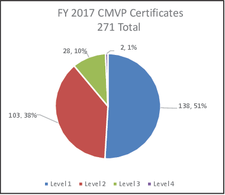
図23：FY 2017にCMVPが発行した証明書271件のセキュリティレベル別円グラフ。レベル1は138件（51%）、レベル2は103件（38%）、レベル3は28件（10%）、レベル4は2件（1%）。
•Level 1 •Level 2 •Level 3 • Level 4 technical areas addressed by Handbook 150-17, NVLAP Cryptographic and Security Testing, the Figure 23: FY 2017 CMVP CMVP activated the CVP Certifcation Exam in July Certifcates by Security Level
•レベル1・レベル2・レベル3・レベル4／図23：FY 2017のCMVP証明書のセキュリティレベル別内訳／Handbook 150-17「NVLAP暗号およびセキュリティ試験」が対象とする技術分野について、CMVPは2017年7月にCVP認定試験を開始した。
未レビュー訳2017.This exam is now required as part of the initial and renewal accreditation process. The profciency
2017.この試験は現在、初回および更新時の認定手続きに必須である。能力
未レビュー訳Initially, this system automated the creation and
当初、このシステムは請求書の作成と送付を自動化し、
未レビュー訳testing was previously handled by the NVLAP/
この試験は以前、NVLAP/
未レビュー訳transmittal of billing invoices, but then was further
その後、さらに機能が拡張され、
未レビュー訳CMVP technical assessors at the onsite audit, but is
CMVPの技術評価員が現地監査で実施していたが、
未レビュー訳enhanced to allow laboratories to submit those
試験所が請求書を
未レビュー訳now being managed through a third-party testing
現在は第三者試験
未レビュー訳invoices in advance of the report submission. For
報告書の提出前に送付できるようになった。これを利用する
未レビュー訳facility. Each laboratory must have a minimum of two
施設で管理される。各試験所には少なくとも2人の
未レビュー訳laboratories and vendors who elect to take advantage
この制度の利用を選択する試験所およびベンダーでは、
未レビュー訳testers who pass the exam to be eligible for initial or
試験合格者を置き、初回または
未レビュー訳of this, the amount of time that submissions wait in
申請のキュー待ち時間が
未レビュー訳renewal accreditation. The certifcation will remain
更新認定を申請するための資格を得る。認定は
未レビュー訳the queue prior to being assigned has been reduced,
割り当て前に短縮され、
未レビュー訳with the individual tester making it easier to access
認定は個々の試験員に結び付けられ、研究所全体の能力を評価しやすくなる。
未レビュー訳which in turn lessens the overall time to validation.
その結果、検証全体の所要時間も短縮された。
未レビュー訳the laboratory’s overall competency, as its staf may
研究所全体の能力を評価しやすくなる。職員は時間の経過とともに交代することがあるためである。
未レビュー訳This enhancement provides signifcant time savings
この機能強化により大幅な時間が節約され、
未レビュー訳change over time. In support of this efort, the CMVP
この取り組みを支援するため、CMVPは
未レビュー訳and was achieved due to the continued collaborative
CMVPとNIST債権管理部門との継続的な協力によって
未レビュー訳also created a web site and user’s guide that provides
ウェブサイトとユーザーガイドも作成し、
未レビュー訳efort between the CMVP and NIST Receivables.
実現した。
未レビュー訳information on this new certifcation process.
新しい認定手続きの情報を提供している。
未レビュー訳In order to provide a greater transparency to
試験所への透明性を高めるため、
未レビュー訳In September 2017, the NIST CSRC launched a new
2017年9月、NIST CSRCは新しいウェブサイトを公開した。
未レビュー訳the laboratories, the CMVP sends a weekly report to
CMVPは各試験所に週次レポートを送り、
未レビュー訳website. In support of that efort, the CMVP updated
これに伴い、CMVPはウェブページを更新し、
未レビュー訳each laboratory providing a status of each of their
各試験所のそれぞれの
未レビュー訳its web pages to include both basic and advanced
基本検索と詳細検索の機能を追加した。
未レビュー訳submissions. The CMVP provides those reports to
申請状況を記載する。CMVPはこれらのレポートを
未レビュー訳search capabilities. The basic search results in the list
基本検索では、有効な検証済みモジュールが
未レビュー訳apprise the laboratories of the current state of each
試験所に提供し、個々の申請の現状と
未レビュー訳of all active validated modules. The more advanced
すべて一覧表示される。より高度な検索では、
未レビュー訳submission along with their respective payment
対応する支払状況を知らせる。
未レビュー訳search allows the user to search on specifc felds
特定のフィールドを検索し、
未レビュー訳status. This has mitigated the number of status
これにより、状況照会の件数が減り、
未レビュー訳and to retrieve historical and revoked certifcates. For
過去および取消済み証明書を取得できる。各検証には、
未レビュー訳requests that need to be addressed by the CMVP.
CMVPが対応しなければならない問い合わせが減少した。
未レビュー訳each validation, there are links provided to related
関連ファイルへのリンクが用意され、
未レビュー訳Since August 2015, the CMVP produces a separate fles that direct the user to the module’s security Implementation Under Test (IUT) list from the policy and to the applicable consolidated certifcate. Modules In Process (MIP) list. The IUT list is merely The consolidated certifcates are generated once a provided as a marketing service for vendors. However, month and include the individual validations that to encourage this list to be kept up to date, the CMVP were completed within that particular month. The implemented a new policy to drop IUT entries that are posting of the most current CMVP IG document was greater than 18 months old. The MIP list continues to also separated from the archived versions that are still refect the status of the current work that is actively in accessible for historical reference.
2015年8月以降、CMVPは試験対象（IUT）一覧を処理中（MIP）一覧とは別に作成している。IUT一覧はベンダー向けのマーケティングサービスとしてのみ提供される。ただし、一覧を最新に保つため、CMVPは18か月を超えたIUT項目を削除する方針を導入した。MIP一覧は現在進行中の作業状況を反映し、検証手続きの状態を示す。／モジュールのセキュリティポリシーと該当する統合証明書へ利用者を導くファイルへのリンクを提供する。統合証明書は月1回作成され、その月に完了した各検証を含む。最新のCMVP IG文書の掲載場所も、履歴参照用にアクセスできる旧版から分離された。
未レビュー訳65 the validation process.
検証プロセスの進捗を反映している。
未レビュー訳NIST/ITL CYBERSECURITY PROGRAM ANNUAL REPORT 2017
NIST/ITL サイバーセキュリティ・プログラム年次報告書 2017
未レビュー訳The CMVP has maintained the relationship with CONTACT: the CMUF by supporting the monthly CMUF general
CMVPは、CMUFとの関係を維持するため、毎月のCMUF全体／連絡先：
未レビュー訳Ms. Beverly Trapnell
Ms. Beverly Trapnell
未レビュー訳membership meetings and the CMUF working
会員会議およびCMUF作業部会を支援している。
未レビュー訳(301) 975-6745
（301）975-6745
未レビュー訳groups. The working groups are chaired by a member
作業部会は産業界または試験所の職員が主宰し、
未レビュー訳beverly.trapnell@nist.gov
beverly.trapnell@nist.gov
未レビュー訳of industry and/or laboratory personnel. Each working group includes a representative from the
各作業部会にはCMVPの代表者が参加する。
未レビュー訳Automated Cryptographic Validation
自動暗号検証（ACV）試験
未レビュー訳CMVP. The current working group tasks include the Revalidation and Response to Common Vulnerabilities (ACV) Testing and Exposures (CVEs), ROM Integrity Testing in Constrained Devices, and Testing Equivalency. The Cryptographic Module Validation Program Working groups are dissolved once discussions on (CMVP) was established on July 17, 1995 by NIST to the topics are completed, and guidance is typically validate cryptographic modules for conformance to
現在の作業部会の課題には、共通脆弱性（CVE）への再検証と対応、制約付き機器のROM完全性試験、試験同等性が含まれる。議論が終わると作業部会は解散し、指針は通常／CMVPは1995年7月17日にNISTが設立し、暗号モジュールを検証する。
未レビュー訳the Federal Information Processing Standards (FIPS)
連邦情報処理標準（FIPS）
未レビュー訳published.
公開される。
未レビュー訳140-1, Security Requirements for Cryptographic
140-1「暗号モジュールのセキュリティ要件」
未レビュー訳In order to provide predicable support for
予測可能な支援を提供するため、
未レビュー訳Modules, and other FIPS cryptography-based
およびFIPSに基づく他の暗号
未レビュー訳vendors and laboratories needing guidance, the
指針を必要とするベンダーや試験所に対し、CMVPは
未レビュー訳standards. FIPS 140-2 was released on May 25, 2001
規格も対象とする。FIPS 140-2は2001年5月25日に公開され、
未レビュー訳CMVP implemented a quarterly IG release process.
四半期ごとのIG公開プロセスを導入した。
未レビュー訳and supersedes FIPS 140-1.
FIPS 140-1に取って代わった。
未レビュー訳New draft IGs and revisions to currently posted IGs are sent out once a month to the laboratories for The current implementation of the CMVP is shown comments. Vendors are encouraged to provide their in Figure 24 below. The CMVP leverages the National feedback, so draft IGs are also posted on the CMUF VoluntaryLaboratoryAccreditationProgram(NVLAP) Forum. The comments are adjudicated by the CMVP, accredited Cryptographic and Security Testing (CST) and the fnalized IGs are incorporated into the main laboratories for validation testing against the Derived IG document, which is posted quarterly on the CMVP Test Requirements (DTR), Implementation Guidance
新しいIG草案と既存IGの改訂版は、コメントを求めて毎月試験所に送付される。ベンダーには意見提出が奨励され、ドラフトIGはCMUFフォーラムにも掲載される。CMVPはコメントを審査し、確定版IGを主要IG文書に組み込み、四半期ごとにCMVPの／現行のCMVPの運用構造を図24に示す。CMVPはNVLAP認定の暗号・セキュリティ試験（CST）試験所を活用し、Derived Test Requirements（DTR）およびImplementation Guidance
未レビュー訳(IG), and applicable CMVP programmatic guidance.
（IG）、ならびに適用されるCMVPプログラム指針に基づいて検証試験を行う。
未レビュー訳web site.
ウェブサイトに掲載する。
未レビュー訳According to existing guidance, the CST laboratories
既存の指針では、CST試験所は
未レビュー訳For FY 2018, the CMVP is anticipating the approval
FY 2018には、CMVPはFIPS 140-3の承認を
未レビュー訳must perform 100 % independent testing of the
ベンダーが提出したモジュールを100%独立に試験しなければならない。
未レビュー訳of FIPS 140-3. When approved, the CMVP will create
見込んでいる。承認された場合、CMVPは
未レビュー訳modules submitted by the vendors.
。
未レビュー訳the necessary documents and processes to support the transition from FIPS 140-2 to FIPS 140-3. The The structure and the rules under which the CMVP
FIPS 140-2からFIPS 140-3への移行を支援する必要な文書とプロセスを整備する。／CMVPの運用構造と規則は、
未レビュー訳operates worked well for the level of the technology
連邦政府が利用する技術水準において、
未レビュー訳CMVP will continue to:
CMVPは今後、次の取り組みを続ける。
未レビュー訳utilized by the Federal Government when the
20年以上前のプログラム創設時には有効に機能していた。技術進歩と暗号技術の連邦IT基盤への普及に伴い、暗号モジュールの検証件数は
未レビュー訳•Invest in automation to streamline the program was created more than two decades ago. As validation process and improve review technology progresses and cryptography becomes consistency, ubiquitous in the federal IT infrastructure, the plethora of cryptographic module validations has proven
•人的資源を上回るようになった。／検証プロセスを自動化して効率化し、レビューの一貫性を高める。
未レビュー訳•Strengthen its relationship with the CMUF by to outstrip available human resources for vendors, collaborating on new and improved technical third-party testing laboratories and federal validators guidance and programmatic issues, and alike. As the number and complexity of modules to be validated increases, the existing methodologies
•CMUFと協力して技術指針やプログラム上の課題を改善し、ベンダーとの関係を強化する。／ベンダー、第三者試験所、連邦の検証担当者が利用できる人的資源を超えている。検証対象モジュールの数と複雑さが増すにつれて、既存の手法では
未レビュー訳•Support the ICMC committee to continue strengthening the relationship with vendors face a limit on their ability to catch and eliminate all possible defects that could compromise the security. and laboratories. Testing is exceedingly long — well beyond typical
•ICMC委員会を支援し、ベンダーおよび試験所との関係強化を続ける。／セキュリティを損なう可能性のある欠陥をすべて発見して排除することが難しくなっている。試験期間は著しく長く、一般的な
未レビュー訳FOR MORE INFORMATION, SEE:
詳細情報：
未レビュー訳product-development cycles across a wide range of
多様な技術分野にわたる製品開発サイクルを大幅に超えている。
未レビュー訳https://csrc.nist.gov/projects/cryptographic-module- technologies — yet costly and inefective. The resulting
https://csrc.nist.gov/projects/cryptographic-module-／それにもかかわらずコストが高く非効率である。その結果、
未レビュー訳validated modules often do not provide useful
検証済みモジュールはしばしば有用な
未レビュー訳validation-program/module-validation-lists
validation-program/module-validation-lists
未レビュー訳interfaces for integration into IT systems to enable
ITシステムに統合し、
未レビュー訳https://wsr.pearsonvue.com/nist-cmvp
https://wsr.pearsonvue.com/nist-cmvp
未レビュー訳run-time monitoring of modules for compliance with
モジュールの適合性を実行時に監視するためのインターフェースを提供しない。
未レビュー訳FISMA.
FISMA。
未レビュー訳ITL CYBERSECURITY PROGRAM AND PROJECTS | FY 2017
ITL サイバーセキュリティ・プログラムおよびプロジェクト | FY 2017
未レビュー訳Accredit ed
認定済み
未レビュー訳IUT Cryp1t10gr~ph lei!!ind • vendor reques.fSMalda ooal lmpleiromiatlon
IUT（試験対象モジュール）：ベンダーが実装の検証を依頼し、
未レビュー訳5' uri y Tes.ti i • subm rsthe modlll fortes 118
試験所にモジュールを提出して試験を受ける。
未レビュー訳Cryp •osrap i,c
暗号・
未レビュー訳Laboratory
セキュリティ試験所
未レビュー訳Modu I!' vl!'n dor
暗号モジュール・ベンダー
未レビュー訳IVT
IUT（試験対象モジュール）
未レビュー訳cvlcw-
審査中
未レビュー訳•La!bperforms
•試験所が
未レビュー訳•WIM!nIsln•roicek p,ald,
•請求書の支払い後に、CMVPの審査員2名が割り当てられ、
未レビュー訳conform :etes-
適合性試験を実施し、
未レビュー訳cwoCMVPrel/le ersa e
CMVPコメントに対応する反復的な調整を行う。
未レビュー訳•P!1lparl?'Stl-:'f.t a99i.!lneadndr~ili'l't the report submitted documients
•試験報告書をCMVPに提出する。NISTは費用回収手続きを開始する。
未レビュー訳•CMVPPOCis~ne,cl tu n naget!Mc!oordlnaoon phas.e
•CMVPの窓口担当者（POC）が割り当てられ、調整段階を管理する。
未レビュー訳Crypto raphie
暗号モジュール
未レビュー訳and . 40-2 Cry-ptograph le
FIPS 140-1および140-2準拠の暗号
未レビュー訳Mo-duleTest.
試験報告書
未レビュー訳Module5-Li.st
検証済みモジュール一覧
未レビュー訳Ri!!!prot
報告書
未レビュー訳ltttp;f/<= ,ri st.ii<'Y/'1:ro\lP~Tl\1f,::nmi/d~140-1/1dl]y all,h
http://csrc.nist.gov/groups/STM/cmvp/documents/140-1/140val-all.htm
未レビュー訳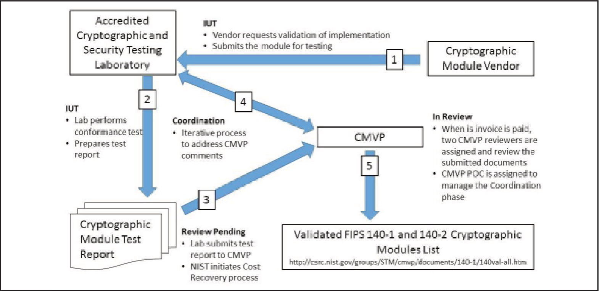
図24：現行のCMVP検証フロー。暗号モジュール・ベンダーが実装の検証を依頼し、試験所へモジュールを提出する。NVLAP認定の暗号・セキュリティ試験所はIUTの適合性試験と報告書作成を行う。報告書はCMVPへ送られ、NISTが費用回収を開始する。CMVPでは請求書の支払い後に審査員2名と窓口担当者（POC）を割り当て、試験所との反復調整を通じてレビューする。検証済みモジュールはFIPS 140-1/140-2一覧に掲載される。図中の矢印と番号1–5が各工程の流れを示す。
Figure 24: Current Validation Flow
図24：現在の検証フロー
未レビュー訳NIST recognizes the need to improve the efciency The scope of this project is broken into multiple and efectiveness of cryptographic module testing phases to be performed over several years: to reduce the time and cost required for testing, Phase 1 while providing a high level of assurance for Federal Government consumers.
NISTは、暗号モジュール試験の効率と有効性を高め、試験に必要な時間とコストを削減しながら、連邦政府利用者に高い保証を提供する必要性を認識している。／このプロジェクトは、数年にわたって実施する複数のフェーズに分けられる。フェーズ1：
未レビュー訳•Identify potential approaches,
•候補となるアプローチを特定する。
未レビュー訳The principal goals of this project are to
このプロジェクトの主な目標は、
未レビュー訳•Select the best technical approach or
•最適な技術的アプローチ、または
未レビュー訳collaborate with commercial or open source producers
暗号機能を提供する商用またはオープンソースの事業者
未レビュー訳approaches to prototype, and
その試作候補を選び、
未レビュー訳of cryptographic capabilities and government consumers of FIPS 140-validated modules to:
FIPS 140検証済みモジュールを利用する政府機関と協力して、次を実現することである。
未レビュー訳•Document the technical approach.
•技術的なアプローチを文書化する。
未レビュー訳•Improve the efciency and efectiveness of Phase 2 cryptographic module testing by adopting the
•暗号モジュール試験の効率と有効性を高めるため、業界の／フェーズ2：
未レビュー訳•Develop working prototypes, and
•実用的なプロトタイプを開発し、
未レビュー訳best practices used by industry;
ベストプラクティスを採用する。
未レビュー訳•Evaluate the prototypes against the principal
•プロトタイプを主要目標に照らして
未レビュー訳•Develop test procedures and techniques that goals. provide assurance of module compliance to FIPS 140 in an automated manner, based Phase 3 on machine-readable artifacts or evidence (examples of machine readable artifacts are
•評価する。／FIPS 140へのモジュール適合性を自動的に保証するため、機械可読な成果物または証拠に基づく試験手順・技術を策定する。機械可読な成果物の例には
未レビュー訳•Publish a draft, provide a review period,
•フェーズ3：草案を公開し、レビュー期間を設け、
未レビュー訳XML or JavaScript Object Notation (JSON)
XMLまたはJavaScript Object Notation（JSON）
未レビュー訳adjudicate the comments, and publish the
コメントを裁定し、
未レビュー訳fles containing logs from performed tests and
実施した試験のログを含むファイルと
未レビュー訳fnal version.
最終版を公開する。
未レビュー訳the corresponding results – see examples at
対応する結果が含まれる。例は
未レビュー訳Phase 4
フェーズ4：
未レビュー訳https://github.com/usnistgov/ACVP); and
https://github.com/usnistgov/ACVP を参照。さらに、
未レビュー訳•Integrate the fnal version into the operational
•最終版を運用中のCMVPプログラムに組み込む。
未レビュー訳•Identify techniques and procedures that CMVP program. provide continued assurance of operational compliance to FIPS 140 for cryptographic The new structure of the CMVP is shown in Figure modules throughout their lifecycle.
•FIPS 140への運用上の適合性をライフサイクル全体にわたって継続的に保証する技法と手順を特定する。／CMVPの新しい構造を図25に示す。
未レビュー訳25.It leverages automation through computer analysis of test results.
25.試験結果をコンピューターで分析することで、自動化を活用する。
未レビュー訳NIST/ITL CYBERSECURITY PROGRAM ANNUAL REPORT 2017
NIST/ITL サイバーセキュリティ・プログラム年次報告書 2017
未レビュー訳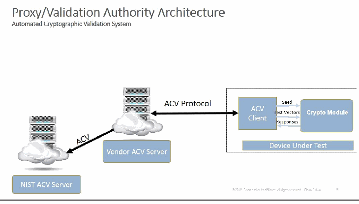
図25：自動化を活用したCMVPの更新構造。NIST ACV ServerとVendor ACV ServerがACV経由で接続され、Vendor ACV ServerはACV ProtocolでDevice Under Test内のACV Clientと通信する。ACV Clientは暗号モジュールへseedとtest vectorsを送り、responsesを受け取る。
Proxy/Validation Authority Architecture Automated Cryptographic Validation System
プロキシ／検証機関アーキテクチャ ― 自動暗号検証システム
未レビュー訳s:t::-t•or•s•-
原文のみ
ACV Protocol
ACVプロトコル
未レビュー訳原文のみ
esponses
応答
未レビュー訳Device Under Test
試験対象機器（DUT）
未レビュー訳' Vendor ACVServer I
ベンダーACVサーバー
未レビュー訳NISTACVServer
NIST ACVサーバー
未レビュー訳Figure 25: Updated CMVP Structure Leveraging Automation
図25：自動化を活用したCMVPの更新構造
未レビュー訳b. Modules in cloud environments,
b. クラウド環境のモジュール、
未レビュー訳Currently, the project is focused on completing the documentation of the technical approach for
現在、プロジェクトはアルゴリズム試験自動化の技術的アプローチの文書化を完了し、
未レビュー訳c. Hardware; and
c. ハードウェア、および
未レビュー訳automating the algorithm testing and fnalizing
アルゴリズム試験の自動化と、
未レビュー訳3.Positioning and relationships to other
3.他の政府検証プログラムとの位置づけと関係
未レビュー訳the implementation of the automated algorithm
自動アルゴリズム試験サーバーの実装を仕上げることに重点を置いている。
未レビュー訳government validation programs.
。
未レビュー訳testing server. The team is also working on researching the approaches for automating the software module testing. The team working on this The project has several planned deliverables, project, in collaboration with industry, established including the identifcation of prospective technical a demonstration algorithm testing server that is approaches that adopt industry best practices and currently capable of testing over 30 algorithms (see produce artifacts that are machine readable and map https://demo.acvts.nist.gov/acvp/home). The work to FIPS 140 DTR requirements, and a selection of the is progressing, and new algorithms are added to it best technical and feasible approaches. on an ongoing basis. Eventually, this demonstration
チームはソフトウェアモジュール試験を自動化する方法も調査している。業界と協力してデモ用のアルゴリズム試験サーバーを開発し、30種類を超えるアルゴリズムを試験できる（https://demo.acvts.nist.gov/acvp/home）。作業は進行中で、新しいアルゴリズムが継続的に追加されている。最終的には、このデモ／プロジェクトには複数の成果物が予定されている。業界のベストプラクティスを取り入れ、FIPS 140 DTR要件に対応する機械可読成果物を作成する技術的アプローチ候補を特定し、最適かつ実現可能な手法を選定する。
未レビュー訳CONTACT:
連絡先：
未レビュー訳functionality will be transferred into the production
機能をアルゴリズム検証用の本番
未レビュー訳Dr. Apostol Vassilev
Dr. Apostol Vassilev
未レビュー訳server for algorithm validation testing. The team developed criteria for participation in the automated (301) 975-3221 testing for commercial companies wishing to validate apostol.vassilev@nist.gov their cryptographic algorithm implementations. The criteria are positioned as an annex to NIST Handbook Automated Security Testing and Test 150-17, NVLAP Cryptographic and Security Testing,
サーバーへ移行する。チームは、暗号アルゴリズム実装の検証を希望する企業が自動試験に参加するための基準を策定した。／（301）975-3221; apostol.vassilev@nist.gov
未レビュー訳Suite Development
自動セキュリティ試験およびテストスイート開発
未レビュー訳which NVLAP uses to accredit laboratories. This criteria will be used, beginning in FY 2018, to establish The CAVP utilizes the requirements and a new testing scope for algorithm testing.
NVLAPは試験所認定にこの基準を使用する。FY 2018から、アルゴリズム試験の新たな適用範囲を定めるために用いる。／CAVPは、NIST標準（FIPSおよび特別刊行物など）の要件と
未レビュー訳specifcations of the NIST standards (i.e., FIPS and Special Publications) to develop algorithm validation
仕様を用いて、アルゴリズム検証用の
未レビュー訳The project activities are structured by work areas
プロジェクトの活動は、作業分野ごとに構成されている。
未レビュー訳test suites and an automated security testing tool.
テストスイートと自動セキュリティ試験ツールを開発する。
未レビュー訳in order for subject-matter experts to more narrowly
これにより、分野の専門家がプログラムのニーズに的を絞り、解決策を開発できる。
未レビュー訳The CAVP is responsible for providing assurance
CAVPは、
未レビュー訳focus on program needs and develop solutions:
プログラムのニーズに焦点を合わせ、解決策を開発する。
未レビュー訳that the cryptographic algorithm implementations
暗号モジュールに含まれる暗号アルゴリズム実装が、
未レビュー訳1.Algorithm and Protocol Testing; contained in cryptographic modules are implemented according to the specifcations in the standards. The
1.1. アルゴリズムおよびプロトコル試験。／規格の仕様に従って実装されているという保証を提供する。
未レビュー訳2.Cryptographic Module Testing, CAVP accomplishes this by designing and developing conformance testing specifc to each cryptographic 68 a. Software, algorithm.
2.2. 暗号モジュール試験、a. ソフトウェア。／CAVPは、各暗号アルゴリズムに特化した適合性試験を設計・開発してこれを実現する。
未レビュー訳ITL CYBERSECURITY PROGRAM AND PROJECTS | FY 2017
ITL サイバーセキュリティ・プログラムおよびプロジェクト | FY 2017
未レビュー訳The conformance testing consists of a suite of During the last few years, CSD has expanded validation tests for each approved cryptographic its publications to contain not only the algorithm’s algorithm. These validation tests exercise the specifcations, but also requirements for an algorithm’s algorithmic requirements and mathematical use. Many of these usage requirements do not fall formulas to assure that the detailed specifcations within the scope of the CAVP, because the CAVP are implemented correctly and completely. If the focuses on the correctness of the instructions within implementer deviates from the specifcations in the the algorithm’s boundary. If these additional algorithm standard or excludes any part of these specifcations usage requirements are not considered applicable or requirements, the validation test will detect the to the algorithm’s implementation, they cannot be deviations and fail. The validation testing will indicate tested at the algorithm level by the CAVP, but may be that the algorithm implementation does not function tested by the CMVP if the requirements are considered
適合性試験は、各承認済み暗号アルゴリズムに対する検証試験一式で構成される。試験ではアルゴリズム要件と数式を確認し、詳細仕様が正確かつ完全に実装されていることを検証する。実装者が仕様から逸脱するか要件の一部を省略した場合、検証試験は逸脱を検出して不合格とする。試験によりアルゴリズム実装が正しく動作しない／近年CSDは、アルゴリズム仕様だけでなく利用要件も含めるよう出版物を拡充している。
未レビュー訳applicable to the cryptographic module. However,
暗号モジュールに適用される。しかし、
未レビュー訳properly or is incomplete.
か、実装が不完全であることが分かる。
未レビュー訳some of these usage requirements may be outside
これら利用要件の一部は、
未レビュー訳The cryptographic algorithm validation tests
暗号アルゴリズム検証試験は、
未レビュー訳the scope of both the algorithm implementation
アルゴリズム実装と
未レビュー訳designed and developed by the CAVP are used by
CAVPが設計・開発し、
未レビュー訳and cryptographic module. In this latter case, the
暗号モジュール双方の適用範囲外となることがある。この場合、
未レビュー訳independent third-party laboratories accredited by
NVLAP認定の独立第三者試験所で実施される。
未レビュー訳fulfllment of the requirements is the responsibility of
要件を満たす責任は、
未レビュー訳NVLAP. The laboratory works with vendors to validate
試験所はベンダーと協力して、
未レビュー訳entities using, installing, or confguring applications or
暗号アルゴリズムを用いるアプリケーション等を利用、導入、設定する主体または
未レビュー訳their cryptographic algorithm implementations. The
それぞれの暗号アルゴリズム実装を検証する。各アルゴリズムの
未レビュー訳protocols that use the cryptographic algorithms. For
そのアルゴリズムを使うプロトコルにある。例えば、
未レビュー訳suite of validation tests for each algorithm ensures the
検証試験一式により、
未レビュー訳example, depending on the design of a cryptographic
暗号モジュールの設計によっては、
未レビュー訳repeatability of tests and the equivalency of results
試験の再現性と結果の同等性が
未レビュー訳module, it may not be possible for the module to
モジュールでは特定の鍵が複数の用途に使われているかどうかを
未レビュー訳across the testing laboratories.
試験所間で確保される。
未レビュー訳determine whether a specifc key is used for multiple purposes, a situation that is strongly discouraged.
判定できない場合がある。このような使用は強く推奨されない。
未レビュー訳There are several types of validation tests, all designed to satisfy the testing requirements of the
検証試験にはいくつかの種類があり、いずれも
未レビュー訳The CAVP currently has algorithm validation
CAVPは現在、次の暗号アルゴリズムに対する
未レビュー訳cryptographic algorithms and their specifcations.
暗号アルゴリズムとその仕様に定められた試験要件を満たすよう設計されている。
未レビュー訳testing for the following cryptographic algorithms:
アルゴリズム検証試験を実施している。
未レビュー訳These include Known-Answer Tests, Monte Carlo Tests, and Multi-Block Message Tests. The Known-
これらには既知解答試験（KAT）、モンテカルロ試験（MCT）、複数ブロックメッセージ試験（MMT）が含まれる。既知解答試験は
未レビュー訳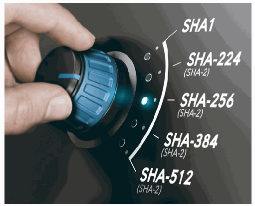
SHAの各種を示す写真。右側にSHA-1、SHA-224（SHA-2）、SHA-256（SHA-2）、SHA-384（SHA-2）、SHA-512（SHA-2）のラベルが縦に並ぶ。
Answer Tests are designed to examine the individual
アルゴリズムの個々の構成要素を調べるよう設計されており、
未レビュー訳-\' 0
原文のみ
components of the algorithm by supplying known
既知の値を入力して、
未レビュー訳原文のみ
. SHA..f
SHA-1
未レビュー訳values to the variables and verifying the expected
値を変数に与え、期待される
未レビュー訳原文のみ
result. Negative testing is also performed by
結果と照合する。負のテストではさらに、
未レビュー訳~.·.
原文のみ
/ SHA-224
SHA-224
未レビュー訳supplying known incorrect values to assure that
既知の誤った値を与え、
未レビュー訳..~, ~· Q J • (SHA-2)
（SHA-2）
未レビュー訳the implementation recognizes values that are not allowed. The Monte Carlo Test is designed to exercise
実装が許容されない値を識別できることを確認する。モンテカルロ試験（MCT）は、
未レビュー訳~-f-1
原文のみ
SHA-256
SHA-256
未レビュー訳"• , 1 , • -
原文のみ
the entire implementation-under-test (IUT). This test
実装対象（IUT）全体を試す。この試験は、
未レビュー訳. (SHA-2)
（SHA-2）
未レビュー訳is designed to detect the presence of implementation faws that are not detected with the controlled input of theKnown-AnswerTests.Thetypesofimplementation faws detected by this validation test include pointer problems, insufcient allocation of space, improper error handling, and incorrect behavior of the IUT. The Multi-Block Message Test (MMT) is designed
既知解答試験（KAT）の制御された入力では検出できない実装上の不具合を検出する。対象にはポインタの問題、メモリ割当て不足、不適切なエラー処理、IUTの誤動作が含まれる。複数ブロックメッセージ試験（MMT）は、
未レビュー訳Credit: Shutterstock/Olivier Le Moal
画像提供：Shutterstock/Olivier Le Moal
未レビュー訳to test the ability of the implementation to process multi-block messages, which requires the chaining of
複数ブロックメッセージを処理する能力を試験するもので、ブロック間の
未レビュー訳Various Types of SHAs
SHAのさまざまな種類
未レビュー訳information from one block to the next.
情報を次のブロックへ連鎖させる必要がある。
未レビュー訳NIST/ITL CYBERSECURITY PROGRAM ANNUAL REPORT 2017
NIST/ITL サイバーセキュリティプログラム年次報告書 2017
未レビュー訳| TABLE 2: CRYPTOGRAPHIC ALGORITHMS & NIST TECHNICAL DOCUMENTS (FIPS & SPs) | |
| CRYPTOGRAPHIC ALGORITHM/COMPONENT | FEDERAL INFORMATION PROCESSING STANDARD (FIPS), SPECIAL PUBLICATION (SP) OR OTHER REFERENCE DOCUMENT |
| Triple Data Encryption Standard (TDES) | SP 800-67, Recommendation for the Triple Data Encryption Algorithm (TDEA) Block Cipher, and |
| SP 800-38A, Recommendation for Block Cipher Modes of Operation–Methods and Techniques | |
| Advanced Encryption Standard (AES) | FIPS 197, Advanced Encryption Standard, and |
| SP 800-38A, Recommendation for Block Cipher Modes of Operation–Methods and Techniques | |
| Digital Signature Algorithm (DSA) | FIPS 186-2, Digital Signature Standard (DSS), with change notice 1 and |
| FIPS 186-4, Digital Signature Standard (DSS) | |
| Elliptic Curve Digital Signature Algorithm (ECDSA) | FIPS 186-2, Digital Signature Standard (DSS), with change notice 1 and ANS X9.62 and |
| FIPS 186-4, Digital Signature Standard (DSS) and ANS X9.62 | |
| RSA Algorithm | FIPS 186-4, Digital Signature Standard (DSS) and |
| ANS X9.31 and Public Key Cryptography Standards (PKCS) #1 v2.1: RSA Cryptography Standard-2002 | |
| Hashing algorithms SHA-1, SHA-224, SHA-256, SHA- 384, SHA-512, SHA-512/224, SHA-512/256 | FIPS 180-4, Secure Hash Standard (SHS) |
| Hashing algorithms SHA3-224, SHA3-256, SHA3-384, SHA3-512 | FIPS 202, SHA-3 Standard: Permutation-Based Hash and Extendable-Output Functions, August 2015 |
| SHA-3 Extendable-Output Functions (XOFs) SHAKE128, SHAKE256 | FIPS 202, SHA-3 Standard: Permutation-Based Hash and Extendable-Output Functions, August 2015 |
| Random Number Generator (RNG) algorithms | FIPS 186-2 Appendix 3.1 and 3.2; ANS X9.62 Appendix A.4 |
| Deterministic Random Bit Generators (DRBG) | SP 800-90A, Recommendation for Random Number Generation Using Deterministic Random Bit Generators |
| Keyed-Hash Message Authentication Code (HMAC) using SHA-1, SHA-2 and SHA-3 | FIPS 198-1, The Keyed-Hash Message Authentication Code (HMAC) |
| Cipher-based Message Authentication Code (CMAC) Mode for Authentication | SP 800-38B, Recommendation for Block Cipher Modes of Operation: The CMAC Mode for Authentication |
原本PDFの抜粋画像
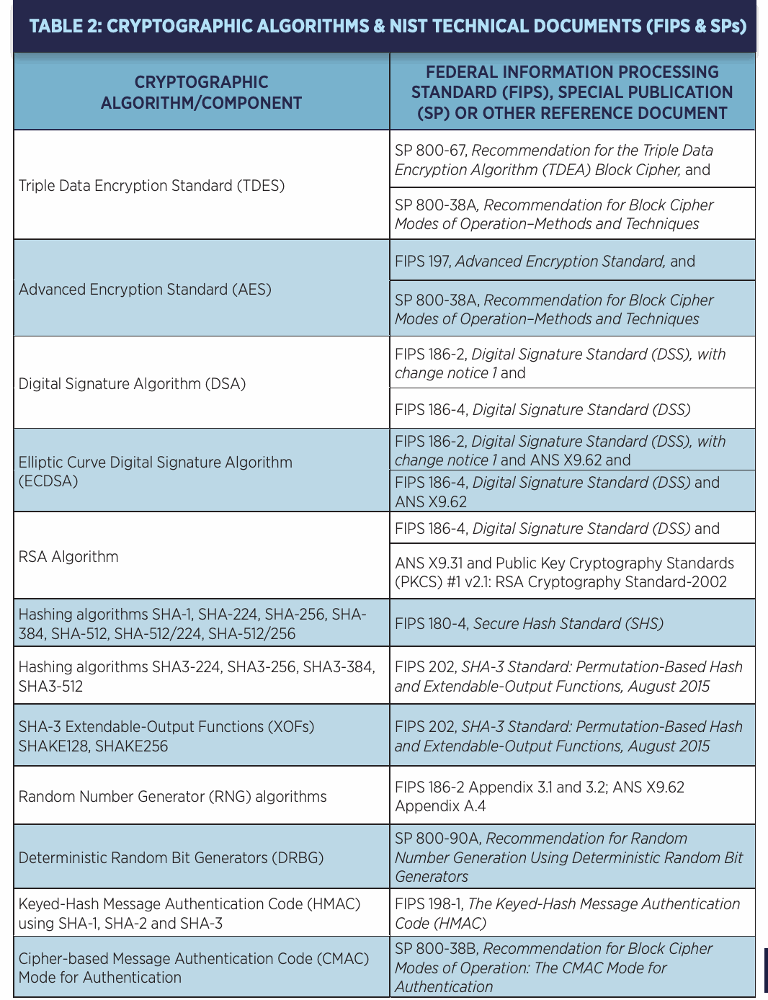
| 表2：暗号アルゴリズムとNIST技術文書（FIPSおよびSP） | |
| 暗号アルゴリズム／構成要素 | 連邦情報処理規格（FIPS）、特別刊行物（SP）またはその他の参照文書 |
| トリプルデータ暗号化標準（TDES） | SP 800-67『トリプルデータ暗号化アルゴリズム（TDEA）ブロック暗号に関する勧告』および |
| SP 800-38A『ブロック暗号運用モードに関する勧告―方式と技法』 | |
| 高度暗号化標準（AES） | FIPS 197『高度暗号化標準』および |
| SP 800-38A『ブロック暗号運用モードに関する勧告―方式と技法』 | |
| デジタル署名アルゴリズム（DSA） | FIPS 186-2『デジタル署名標準（DSS）』変更通知1を含む、および |
| FIPS 186-4『デジタル署名標準（DSS）』 | |
| 楕円曲線デジタル署名アルゴリズム（ECDSA） | FIPS 186-2『デジタル署名標準（DSS）』変更通知1およびANS X9.62を含む、および |
| FIPS 186-4『デジタル署名標準（DSS）』およびANS X9.62 | |
| RSAアルゴリズム | FIPS 186-4『デジタル署名標準（DSS）』および |
| ANS X9.31および公開鍵暗号規格（PKCS）#1 v2.1『RSA暗号標準（2002年）』 | |
| ハッシュアルゴリズム：SHA-1、SHA-224、SHA-256、SHA-384、SHA-512、SHA-512/224、SHA-512/256 | FIPS 180-4『セキュアハッシュ標準（SHS）』 |
| ハッシュアルゴリズム：SHA3-224、SHA3-256、SHA3-384、SHA3-512 | FIPS 202『SHA-3標準：置換に基づくハッシュ関数および拡張出力関数』（2015年8月） |
| SHA-3拡張出力関数（XOF）：SHAKE128、SHAKE256 | FIPS 202『SHA-3標準：置換に基づくハッシュ関数および拡張出力関数』（2015年8月） |
| 乱数生成器（RNG）アルゴリズム | FIPS 186-2 付属書3.1および3.2、ANS X9.62 付属書A.4 |
| 決定論的乱数ビット生成器（DRBG） | SP 800-90A『決定論的乱数ビット生成器を用いた乱数生成に関する勧告』 |
| SHA-1、SHA-2およびSHA-3を用いる鍵付きハッシュメッセージ認証コード（HMAC） | FIPS 198-1『鍵付きハッシュメッセージ認証コード（HMAC）』 |
| 認証用の暗号ベースメッセージ認証コード（CMAC）モード | SP 800-38B『ブロック暗号運用モードに関する勧告：CMAC認証モード』 |
ITL CYBERSECURITY PROGRAM AND PROJECTS | FY 2017
ITL サイバーセキュリティプログラムおよびプロジェクト | 2017年度
| TABLE 2 (CONT): CRYPTOGRAPHIC ALGORITHMS & NIST TECHNICAL DOCUMENTS (FIPS & SPs) | |
| CRYPTOGRAPHIC ALGORITHM/COMPONENT | FEDERAL INFORMATION PROCESSING STANDARD (FIPS), SPECIAL PUBLICATION (SP) OR OTHER REFERENCE DOCUMENT |
| Counter with Cipher Block Chaining-Message Authentication Code (CCM) Mode | SP 800-38C, Recommendation for Block Cipher Modes of Operation: the CCM Mode for Authentication and Confdentiality |
| GCM, Galois Message Authentication Code (GMAC), and eXtended Packet Number (XPN) Modes | SP 800-38D, Recommendation for Block Cipher Modes of Operation: Galois/Counter Mode (GCM) and GMAC |
| XTS-AES Mode XOR–encrypt–XOR (XEX) Tweakable Block Cipher with Ciphertext Stealing mode | SP 800-38E, Recommendation for Block Cipher Modes of Operation: The XTS-AES Mode for Confdentiality on Block-Oriented Storage Devices |
| Key Wrapping | SP 800-38F, Recommendation for Block Cipher Modes of Operation: Methods for Key Wrapping |
| DH and MQV Key Agreement Schemes and Key Confrmation | SP 800-56A, Recommendation for Pair-Wise Key Establishment Schemes Using Discrete Logarithm Cryptography, dated March 2007 |
| All of SP 800-56A schemes without the Key Derivation Functions (KDF) | SP 800-56A, Key Derivation Functions for Key Agreement Schemes: All sections except Section 5.8 |
| SP 800-56A Section 5.7.1.2 ECC CDH function | SP 800-56A, Section 5.7.1.2 Elliptic Curve Cryptography Cofactor Dife-Hellman (ECC CDH) Primitive Testing |
| Key-Based Key Derivation functions (KBKDF) | SP 800-108, Recommendation for Key Derivation using Pseudorandom Functions |
| Application-Specifc Key Derivation functions (ASKDF) (includes the KDFs used by Internet Key Exchange (IKE) v1, IKEv2, Transport Layer Security (TLS), American National Standard (ANS) X9.63-2001, Secure Shell (SSH), Secure Real-time Transport Protocol (SRTP), Simple Network Management Protocol (SNMP), and Trusted Platform Module (TPM) | SP 800-135 (Revision 1) Recommendation for Existing Application-Specifc key Derivation Functions |
| Component test – ECDSA Signature Generation of a hash value (This component test verifes the signing of a hash- sized input. It does not verify the hashing of the original message to be signed.) | FIPS 186-4, Digital Signature Standard (DSS), and ANS X9.62 |
| Component test – RSA PKCS#1 1.5 Signature Generation of encoded message (EM) (This component test verifes the signing of an EM. It does not verify the formatting of the EM.) | FIPS 186-4, Digital Signwature Standard (DSS), and Public Key Cryptography Standards (PKCS) #1 v2.1: RSA Cryptography Standard-2002 |
| Component test – RSA PKCS#1 Probabilistic Signature Scheme (PSS) Signature Generation of encoded message EM (This component test verifes the RSASP1 function.) | SP 800-56B, Recommendation for Pair-Wise Key Establishment Schemes Using Integer Factorization Cryptography, August 2009, Section 7.1.2 |
原本PDFの抜粋画像
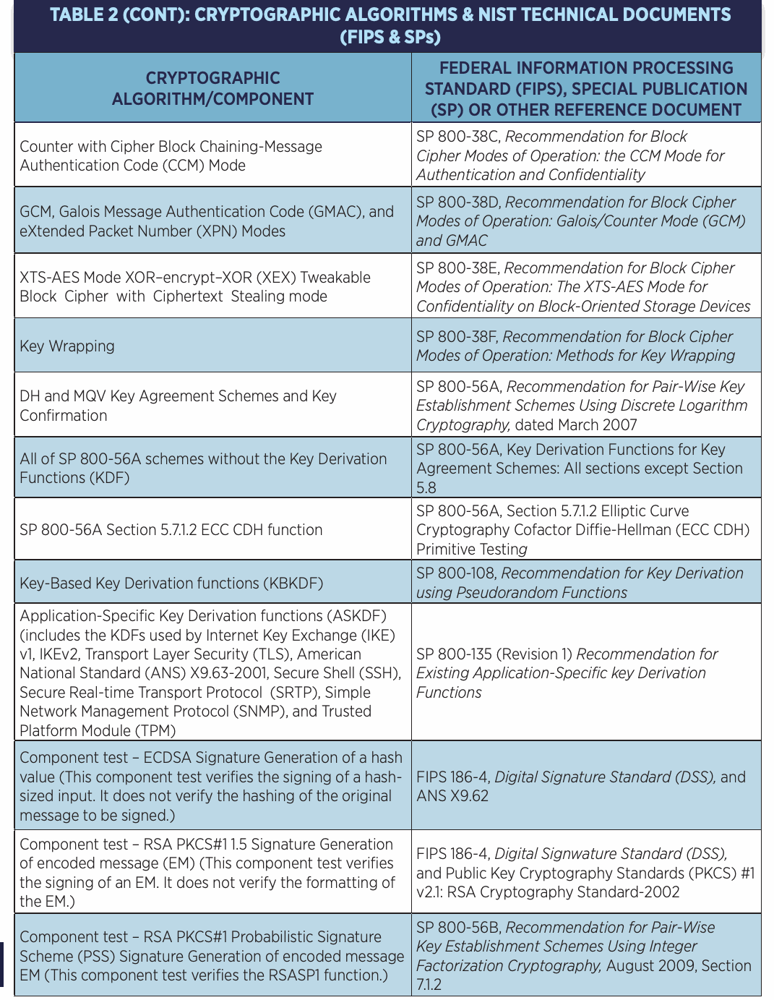
| 表2（続き）：暗号アルゴリズムとNIST技術文書（FIPSおよびSP） | |
| 暗号アルゴリズム／構成要素 | 連邦情報処理規格（FIPS）、特別刊行物（SP）またはその他の参照文書 |
| 暗号ブロック連鎖メッセージ認証コード（CCM）モードのカウンタ | SP 800-38C『ブロック暗号運用モードに関する勧告：認証と機密性のためのCCMモード』 |
| GCM、ガロアメッセージ認証コード（GMAC）および拡張パケット番号（XPN）モード | SP 800-38D『ブロック暗号運用モードに関する勧告：ガロア／カウンターモード（GCM）およびGMAC』 |
| XTS-AESモード：XOR-暗号化-XOR（XEX）調整可能ブロック暗号、暗号文窃取モード | SP 800-38E『ブロック暗号運用モードに関する勧告：ブロック単位ストレージデバイスの機密性保護のためのXTS-AESモード』 |
| 鍵ラッピング | SP 800-38F『ブロック暗号運用モードに関する勧告：鍵ラッピング方式』 |
| DHおよびMQV鍵合意方式と鍵確認 | SP 800-56A『離散対数暗号に基づくペアワイズ鍵確立方式に関する勧告』（2007年3月版） |
| 鍵導出関数（KDF）を除くSP 800-56Aの全方式 | SP 800-56A『鍵合意方式の鍵導出関数：第5.8節を除く全節』 |
| SP 800-56A 第5.7.1.2節 楕円曲線CDH（ECC CDH）関数 | SP 800-56A 第5.7.1.2節『楕円曲線暗号コファクタDiffie-Hellman（ECC CDH）プリミティブ試験』 |
| 鍵ベース鍵導出関数（KBKDF） | SP 800-108『擬似乱数関数を用いた鍵導出に関する勧告』 |
| アプリケーション固有鍵導出関数（ASKDF）。Internet Key Exchange（IKE）v1/v2、Transport Layer Security（TLS）、米国規格協会（ANS）X9.63-2001、Secure Shell（SSH）、Secure Real-time Transport Protocol（SRTP）、Simple Network Management Protocol（SNMP）、Trusted Platform Module（TPM）で使用されるKDFを含む。 | SP 800-135（改訂1）『既存のアプリケーション固有鍵導出関数に関する勧告』 |
| コンポーネント試験：ECDSAハッシュ値署名生成（ハッシュ長の入力への署名を検証する。署名対象の元メッセージのハッシュ計算は検証しない。） | FIPS 186-4『デジタル署名標準（DSS）』およびANS X9.62 |
| コンポーネント試験：RSA PKCS #1 v1.5符号化メッセージ（EM）の署名生成（EMへの署名を検証する。EMの書式設定は検証しない。） | FIPS 186-4『デジタル署名標準（DSS）』および公開鍵暗号規格（PKCS）#1 v2.1『RSA暗号標準（2002年）』 |
| コンポーネント試験：RSA PKCS #1確率的署名方式（PSS）による符号化メッセージ（EM）の署名生成（RSASP1関数を検証する。） | SP 800-56B『整数因数分解暗号に基づくペアワイズ鍵確立方式に関する勧告』（2009年8月）第7.1.2節 |
NIST/ITL CYBERSECURITY PROGRAM ANNUAL REPORT 2017
NIST/ITL サイバーセキュリティプログラム年次報告書 2017
In the future, the CAVP expects to add algorithm The test requirements for SCAP 1.2 are defned
将来、CAVPはアルゴリズム／SCAP 1.2の試験要件はNISTIR 7511「
未レビュー訳in NISTIR 7511, Security Content Automation
セキュリティコンテンツ自動化
未レビュー訳validation testing for:
検証試験を追加する予定である：
未レビュー訳Protocol (SCAP) Version 1.2 Validation Program
プロトコル（SCAP）バージョン1.2検証プログラム
未レビュー訳•SP 800-38G, Recommendation for Block Test Requirements. In general, vendors may opt for Cipher Modes of Operation: Methods for product validation for one or more SCAP capabilities Format-Preserving Encryption; or operating systems. Currently, the program ofers testing on Microsoft Windows, Red Hat Enterprise
•SP 800-38G『ブロック暗号運用モードに関する勧告：書式保持暗号化方式』、または ／ 試験要件』に定められている。一般に、ベンダーは1つ以上のSCAP機能またはオペレーティングシステムについて製品検証を選択できる。現在、本プログラムはMicrosoft Windows、Red Hat Enterprise
未レビュー訳•SP 800-56C, Recommendation for Key Linux, and Apple Mac OS platforms. The validation Derivation through Extraction-then-Expansion; process starts when a vendor voluntarily submits
•SP 800-56C『抽出後拡張方式による鍵導出に関する勧告』； ／ LinuxおよびApple Mac OSプラットフォームで試験を提供する。検証プロセスは、ベンダーが自発的に製品を提出するところから始まる。
未レビュー訳•SP 800-132, Recommendation for Password- an SCAP-enabled product to an NVLAP-accredited laboratory. Once the lab completes product testing, Based Key Derivation Part 1: Storage the lab submits a test report to the SCAP Validation Applications; and Program at NIST for review. NIST reviews the test
•SP 800-132『パスワードベース鍵導出に関する勧告 第1部：ストレージアプリケーション』；および ／ SCAP対応製品をNVLAP認定試験所に提出する。試験所は製品試験を終えると、報告書をNISTのSCAP検証プログラムに審査のため提出する。NISTは試験
未レビュー訳•SP 800-56A Revision 2, Recommendation for report and awards a validation if all requirements Pair-Wise Key Establishment Schemes Using have been met. Once a validation is awarded, the Discrete Logarithm Cryptography. SCAP Validation Record is sent to the lab, and the information about the newly validated product is
•SP 800-56A改訂2『離散対数暗号を用いるペアワイズ鍵確立方式に関する勧告』。 ／ 報告書を審査し、すべての要件を満たしていれば検証を付与する。検証が付与されると、SCAP検証記録が試験所へ送付され、新たに検証された製品の情報は
未レビュー訳FOR MORE INFORMATION, SEE:
詳細情報：
未レビュー訳posted on the SCAP Validated Products web page.
SCAP検証済み製品のウェブページに掲載される。
未レビュー訳https://csrc.nist.gov/projects/cryptographic-
https://csrc.nist.gov/projects/cryptographic-
未レビュー訳Figure 26 illustrates the SCAP 1.2 Validation Process.
図26は、SCAP 1.2検証プロセスを示す。
未レビュー訳algorithm-validation-program
algorithm-validation-program
未レビュー訳CONTACTS:
連絡先：
未レビュー訳製品検証を表す写真。ノートパソコンの画面に緑のチェックマークと「TESTED」（試験済み）が表示され、手に持ったカードがキーボード上に差し出されている。カードの細かな印字は一部が手で隠れており判読できない。
Mr. Harold Booth
Harold Booth氏
未レビュー訳Ms. Elaine Barker
Elaine Barker氏
未レビュー訳(301) 975-8441
(301) 975-8441
未レビュー訳(301) 975-2911
(301) 975-2911
未レビュー訳harold.booth@nist.gov elaine.barker@nist.gov
harold.booth@nist.gov elaine.barker@nist.gov
未レビュー訳(Editors’ Note: Sharon Keller worked on this program until her recent retirement.)
（編集者注：Sharon Keller氏は、最近退職するまで本プログラムに携わっていた。）
未レビュー訳Security Content Automation Protocol (SCAP) Validation Program
Security Content Automation Protocol（SCAP）検証プログラム
未レビュー訳The SCAP Validation Program performs conformance testing to ensure that products correctly implement SCAP, as defned in SP 800-126 Revision 2,
SCAP検証プログラムは、SP 800-126改訂2に定められたSCAPを製品が正しく実装していることを確認するため、適合性試験を実施する。
未レビュー訳Credit: Shutterstock/Rawpixel.com
画像提供：Shutterstock/Rawpixel.com
未レビュー訳The Technical Specifcation for the Security Content Automation Protocol (SCAP): SCAP Version 1.2.
『セキュリティコンテンツ自動化プロトコル（SCAP）の技術仕様：SCAPバージョン1.2』。
未レビュー訳Computer monitor displaying
コンピュータ画面に表示されているのは
未レビュー訳Conformance testing is necessary because SCAP is a
適合性試験が必要なのは、SCAPが
未レビュー訳that a product has been tested.
製品が試験済みであること。
未レビュー訳complex collection of eleven individual specifcations that work together to support various use cases. A single error in product implementation could result in undetected vulnerabilities or policy noncompliance within an organization’s networks.
さまざまな用途を支える11の個別仕様が連携する複雑な集合体だからである。製品実装の小さな誤りでも、組織のネットワークに脆弱性が検出されないまま残ったり、ポリシー不遵守につながったりする可能性がある。
未レビュー訳ITL CYBERSECURITY PROGRAM AND PROJECTS | FY 2017
ITL サイバーセキュリティプログラムおよびプロジェクト | 2017年度
未レビュー訳SCAP 1.2 Validation Process
SCAP 1.2 検証プロセス
未レビュー訳----------F
原文のみ
2 Vendor selects a lab
2 ベンダーは試験所を選択し、
未レビュー訳3 Lab tests product for
3 試験所は製品の
未レビュー訳and submi ts the
製品を
未レビュー訳SCAP Product product forte sting. NVLAP Accredited confo rmance to SCAP
SCAP製品／試験に提出する。／NVLAP認定／SCAPへの適合性を
未レビュー訳1.2 using the de rived
1.2を確認するため、導出された
未レビュー訳Vendor
ベンダー
未レビュー訳SCAP Lab
SCAP試験所
未レビュー訳test requirements in NISTIR7511 and
NISTIR 7511の試験要件を用いて
未レビュー訳(D
4
未レビュー訳com pletes a test
試験を完了し、
未レビュー訳Vendor develops SCAP
1 ベンダーはSCAP対応製品を開発し、
未レビュー訳report .
試験報告書を作成する。
未レビュー訳enabled product and uses the publicly
公開されている
未レビュー訳Lab submits the test
試験所は試験
未レビュー訳available validation
検証テスト内容を
未レビュー訳rep ortto NISTfor
報告書をNISTに提出し、
未レビュー訳test content du ring
使用して
未レビュー訳validation.
検証を求める。
未レビュー訳quality assu rance
品質保証
未レビュー訳of validation awa rd
検証付与を
未レビュー訳testing.
試験を行う。
未レビュー訳and sends the validation record.
知らせ、検証記録を送付する。
未レビュー訳®
未レビュー訳7
未レビュー訳NISTreviews the test
5 NISTは試験
未レビュー訳NISTadds the pro duct
NISTは製品を
未レビュー訳report and awa rds
報告書を審査し、
未レビュー訳NISTSCAP
NIST SCAP
未レビュー訳to the SCAPValidated
SCAP検証済み
未レビュー訳validation for products Validation Program Product list. meeting the requirements defined in NISTIR7511.
NISTIR 7511の要件を満たす製品に検証を付与する。／検証プログラム／製品一覧に追加する。
未レビュー訳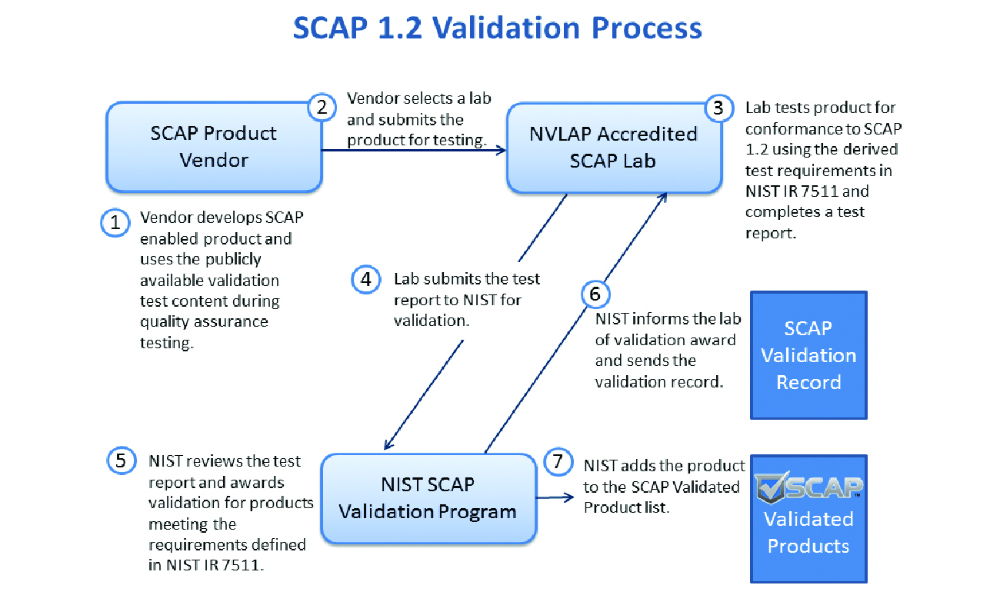
図26『SCAP 1.2検証プロセス』。番号付き7段階：1 ベンダーがSCAP対応製品を開発し、公開された検証テスト内容で品質保証試験を行う。2 ベンダーが試験所を選び、製品を提出する。3 NVLAP認定SCAP試験所がNISTIR 7511の試験要件に基づき製品を試験し、報告書を作成する。4 試験所が報告書をNISTへ提出する。5 NISTが報告書を審査し、要件を満たす製品に検証を付与する。6 NISTが試験所に検証を通知し、検証記録を送付する。7 NISTが製品をSCAP検証済み製品一覧に追加する。図中の箱はSCAP製品ベンダー、NVLAP認定SCAP試験所、NIST SCAP検証プログラム、SCAP検証記録、SCAP検証済み製品を示す。
Figure 26: SCAP 1.2 Validation Process
図26：SCAP 1.2検証プロセス
未レビュー訳All resources and information necessary for and fnd products that have been awarded validations. preparing products for SCAP 1.2 validation are The validation records that are posted on the SCAP published on the SCAP Validation Program web page Validated Products page identify the product versions (seehttps://scap.nist.gov/validation).Themostcurrent that were tested in the laboratory, along with details NISTIR 7511 revision, as well as SCAP capabilities and about each validation, such as the tested platforms, supported platforms, are available on the home page SCAP capabilities, the validation test suite version, (see https://scap.nist.gov/validation). The resources and the lab that performed the product test. page includes documentation, a list of Frequently
SCAP 1.2検証用製品を準備するために必要な情報とリソースはすべて、SCAP検証プログラムのウェブページ（https://scap.nist.gov/validation）で公開されている。最新のNISTIR 7511、SCAP機能および対応プラットフォームはホームページから入手できる。同ページには文書やFAQ一覧が含まれる。／検証を取得した製品も検索できる。SCAP検証済み製品ページの検証記録には、試験した製品のバージョンと、対象プラットフォーム、SCAP機能、検証テストスイートの版、試験を実施した試験所など各検証の詳細が記載される。
未レビュー訳In FY 2017, NISTIR 7511 was updated in
2017年度に、NISTIR 7511は
未レビュー訳Asked Questions (FAQ), the SCAP validation-test
よくある質問（FAQ）、SCAP検証テストの
未レビュー訳preparation for testing conformance to SCAP 1.3,
SCAP 1.3への適合性試験に備えて改訂され、
未レビュー訳content, and tools for validating and processing
内容、SCAPデータストリームを検証・処理するためのツール
未レビュー訳and the validation test content was updated to
検証テスト内容も更新され、
未レビュー訳SCAP data streams. The SCAP validation-test content
が含まれる。SCAP検証テスト内容は
未レビュー訳include test coverage for SCAP 1.3 and support for
SCAP 1.3の試験範囲と新しいプラットフォームへの対応を含む。
未レビュー訳should be used by vendors for quality assurance
ベンダーが品質保証試験に使用し、
未レビュー訳new platforms. Support for Microsoft Windows 10
Windows 10のサポートは
未レビュー訳testing prior to entering formal SCAP testing with an
NVLAP認定試験所で正式なSCAP試験に入る前に
未レビュー訳and Mac OS 10.11 was released in FY 2017; updates
macOS 10.11のサポートとともに2017年度に公開され、SCAP 1.3への更新は
未レビュー訳NVLAP-accredited laboratory. The open-source tools
実施する。ダウンロード可能なオープンソースツールは
未レビュー訳for SCAP 1.3 will be released in FY 2018.
2018年度に公開される予定である。
未レビュー訳that are available for download may be used by SCAP content authors for testing the SCAP source content. Vendors continued to beneft from the openly The SCAP Content Validation Tool (SCAPVal) may available SCAP validation test suite reference be used to determine if the content conforms to the material. Access to the validation test suite enables SCAP specifcation. SCAP validated products may vendors to test products during development and
ダウンロード可能なこれらのツールは、SCAPコンテンツ作成者がSCAPソースコンテンツを試験するために使用できる。SCAPコンテンツ検証ツール（SCAPVal）で、コンテンツがSCAP仕様に適合するか確認できる。検証済みSCAP製品は／ベンダーは公開されているSCAP検証テストスイートの参照資料を引き続き活用した。テストスイートにアクセスすることで、開発中の製品を試験でき、
未レビュー訳provides a means for verifying SCAP conformance
SCAP適合性を検証する手段にもなる。
未レビュー訳be used to process SCAP data streams for use cases
ユースケースに応じたSCAPデータストリームの処理に使用できる。
未レビュー訳after operational products are patched. Through the
運用中の製品に修正を適用した後も利用できる。参照資料を
未レビュー訳such as checking compliance of target systems to a
対象システムが
未レビュー訳use of the reference materials, vendors that market
活用することで、連邦機関に製品を販売するベンダーは、
未レビュー訳confguration checklist.
構成チェックリストに準拠しているか確認するなどである。
未レビュー訳their products to federal agencies may better
連邦機関に製品を販売するベンダーは、より
未レビュー訳End users may use information on the SCAP prepare for formal validation testing with NVLAP Validation web page to learn about SCAP validation accredited laboratories. Vendors focused on the
エンドユーザーはSCAP検証ウェブページの情報を使ってSCAP検証について学び、検証取得済み製品を検索できる。／NVLAP認定試験所による正式な検証試験に備えられる。重要インフラ分野に焦点を当てるベンダーは
未レビュー訳NIST/ITL CYBERSECURITY PROGRAM ANNUAL REPORT 2017
NIST/ITL サイバーセキュリティプログラム年次報告書 2017
未レビュー訳critical infrastructure, and for which formal validation Contractors. There are three companion technical testing may not be required, have access to reference documents: material that ensures that scanning products are
重要インフラ分野に焦点を当てるベンダーは、正式な検証試験が必須でない場合でも、スキャン製品がSCAPコンテンツを正しく処理することを確認する参照資料を利用できる。／請負業者には、次の関連技術文書がある。
未レビュー訳1.SP 800-73, Interfaces for Personal Identity
1.SP 800-73『個人識別検証のためのインターフェース』
未レビュー訳correctly processing SCAP content. Approximately
SCAPコンテンツを正しく処理している。およそ
未レビュー訳Verifcation;
検証；
未レビュー訳86 % of confguration scanning products are SCAP-validated, and SCAP product vendors continue to
構成スキャン製品の86%がSCAP検証済みであり、SCAP製品ベンダーは引き続き
未レビュー訳2.SP 800-76, Biometric Specifcations for
2.SP 800-76『個人識別検証のための生体認証仕様』
未レビュー訳engage with the SCAP Validation Program on new
検証テスト内容の新版について、SCAP検証プログラムと連携を続けている。
未レビュー訳Personal Identity Verifcation; and
個人識別検証；および
未レビュー訳releases of the validation test content. The current list of SCAP 1.2-validated products may be found on the 3. SP 800-78, Cryptographic Algorithms and Key
検証テスト内容の新版を公開する。SCAP 1.2検証済み製品の最新一覧は、／3. SP 800-78『個人識別検証のための暗号アルゴリズムおよび鍵
未レビュー訳Sizes for Personal Identity Verifcation.
長』
未レビュー訳SCAP Validated Products list at https://nvd.nist.gov/ scap/validated-tools.
SCAP検証済み製品一覧（https://nvd.nist.gov/scap/validated-tools）に掲載されている。
未レビュー訳The two main products are: the PIV Card
主な製品は、PIVカードアプリケーションと
未レビュー訳In FY 2018, NISTIR 7511 for SCAP 1.3 and the Application and the PIV Middleware. The guidelines for associated validation test suite reference material will performing the conformance tests for these products be released. In addition, the program will continue to are themselves outlined in two technical documents add support for new platforms (i.e., Windows Server (SP 800-85A, PIV Card Application and Middleware 2016 and Mac OS 10.12). The program will continue Interface Test Guidelines (SP 800-73-4 Compliance), to collaborate with vendors, laboratories, and the and SP 800-85B, PIV Data Model Test Guidelines); Security Automation team on updating validation they specify a two-step process that frst involves resources in a meaningful way that meets the needs the development of Derived Test Requirements of federal agencies and the critical infrastructure. (DTRs) and then the actual test procedures. To Coordination with the Security Automation team implement these tests and to generate conformance ensures that validation resources are developed and test reports, CSD also developed test modules for released in conjunction with new releases of SCAP. testing the PIV card application and PIV middleware.
PIVミドルウェアである。これらの製品の適合性試験ガイドラインは2つの技術文書、SP 800-85A『PIVカードアプリケーションおよびミドルウェアのインターフェース試験ガイドライン（SP 800-73-4適合性）』とSP 800-85B『PIVデータモデル試験ガイドライン』に示される。試験はまず導出試験要件（DTR）を策定し、次に実際の試験手順を実施する2段階で構成される。試験の実装と適合性報告書の作成のため、CSDはPIVカードアプリケーションとPIVミドルウェアを試験するモジュールも開発した。／2018年度には、SCAP 1.3向けNISTIR 7511と関連検証テストスイートの参照資料を公開する。新たなプラットフォーム（Windows Server 2016、macOS 10.12など）への対応も継続し、連邦機関と重要インフラのニーズに合うよう、ベンダー、試験所、Security Automationチームと協力して検証リソースを更新する。Security Automationチームとの連携により、SCAPの新バージョンと同時に検証リソースを開発・公開する。
未レビュー訳These modules were provided to NPIVP test facilities
これらのモジュールは、NPIVP試験施設に
未レビュー訳FOR MORE INFORMATION, SEE:
詳細情報：
未レビュー訳for testing and certifying the vendor submissions in
2つのPIV製品カテゴリに属するベンダー申請を試験・認証するため提供された。
未レビュー訳https://scap.nist.gov/validation/
https://scap.nist.gov/validation/
未レビュー訳the two PIV product categories. NPIVP test facilities are Cryptographic and Security Testing (CST)
NPIVPの試験施設は、暗号・セキュリティ試験所（CST）
未レビュー訳CONTACT:
連絡先：
未レビュー訳Laboratories that were accredited by the NVLAP.
NVLAPの認定を受けた試験所である。
未レビュー訳Mr. Michael Cooper
Michael Cooper氏
未レビュー訳NPIVP also assisted NVLAP in the accreditation
NPIVPはNVLAPによる試験所の認定も支援し、
未レビュー訳(301) 975-8077
(301) 975-8077
未レビュー訳of laboratories by developing technology-focused
技術分野に特化した
未レビュー訳michael.cooper@nist.gov
michael.cooper@nist.gov
未レビュー訳assessment criteria. An additional software module to perform conformance testing for the PIV data model
評価基準を策定した。CSDはPIVデータモデルの適合性試験用に追加ソフトウェアモジュールも開発し、
未レビュー訳(Editors’ Note: Melanie Cook supported this program was also developed by CSD to enable GSA to provide until her recent departure from NIST.)
（編集者注：Melanie Cook氏はNISTを最近離職するまで本プログラムを支援していた。）／GSAが各機関にツールキットを提供できるようにした。
未レビュー訳a toolkit to agencies for testing fully personalized PIV cards prior to card issuance.
発行前に完全に個別設定されたPIVカードを試験するためのツールキット。
未レビュー訳FIPS 201 specifes the architecture and technical
FIPS 201はPIVカードのアーキテクチャと技術的
未レビュー訳IDENTITY AND ACCESS
アイデンティティおよびアクセス
未レビュー訳requirements for the PIV cards. Since the start of the NPIVP, FIPS 201 has undergone two revisions and the
要件を定めている。NPIVPの開始以来、FIPS 201は2回改訂され、
未レビュー訳MANAGEMENT
管理
未レビュー訳companion technical documents even more revisions. The two test guidelines documents have also been
関連技術文書はさらに多く改訂された。2つの試験ガイドライン文書も、仕様書と整合するよう
未レビュー訳NIST Personal Identity Verifcation
NIST個人識別検証
未レビュー訳updated to be consistent with the specifcation documents. The NPIVP team was fully involved in the
改訂された。NPIVPチームは仕様書改訂の
未レビュー訳Program (NPIVP)
プログラム（NPIVP）
未レビュー訳review, analysis and development of these revisions
レビュー、分析、策定に全面的に関与し、
未レビュー訳The objective of the NIST Personal Identity of specifcation documents and have also ensured Verifcation Program (NPIVP) is to validate Personal that these revisions are fully refected in the two test Identity Verifcation (PIV) products for conformance guidelines documents as well as in the test software to the specifcations in FIPS 201, Personal Identity modules. The latest versions of all documents (as of Verifcation (PIV) of Federal Employees and September 2017) with their URLs, as well as the URL 74
NIST個人識別検証プログラム（NPIVP）の目的は、連邦職員の個人識別検証（PIV）に関するFIPS 201の仕様への適合性について、PIV製品を検証することである。／仕様書の改訂内容が2つの試験ガイドライン文書および試験ソフトウェアモジュールにも確実に反映されるようにした。2017年9月時点の全文書の最新版と各URL、およびURL
未レビュー訳ITL CYBERSECURITY PROGRAM AND PROJECTS | FY 2017
ITL サイバーセキュリティプログラムおよびプロジェクト | 2017年度
未レビュー訳for the list of accredited NPIVP labs are given below: and inconsistencies in software codes performing
NPIVP認定試験所の一覧を以下に示す。／同じ機能を実行するソフトウェアコードの不整合も解消し、
未レビュー訳the same functionality and to make the maintenance
ツールキット全体の保守を
未レビュー訳Specifcation Documents:
仕様書：
未レビュー訳of the overall toolkit much easier. Further tests pertaining to diferent card interfaces (Contact,
容易にした。さらに、接触、
未レビュー訳•FIPS 201-2, Personal Identity Verifcation (PIV) Contactless, Secure Messaging and Virtual Contact) of Federal Employees and Contractors – (see for the same command were grouped together for https://nvlpubs.nist.gov/nistpubs/FIPS/NIST. easy accessibility. The redesigned test toolkit (now FIPS.201-2.pdf) called the SP 800-73-4 PIV Test Runner for PIV Card Applications, Middleware and Data Model) has
•FIPS 201-2『連邦職員および請負業者の個人識別検証（PIV）』https://nvlpubs.nist.gov/nistpubs/FIPS/NIST.FIPS.201-2.pdf ／ 非接触、セキュアメッセージング、仮想接触の各インターフェース試験も、
未レビュー訳•SP 800-73-4 Parts 1-3, Interfaces for been made freely available to the public and can be Personal Identity Verifcation (see https://doi. downloaded at https://csrc.nist.gov/Projects/NIST-org/10.6028/NIST.SP.800-73-4) Personal-Identity-Verifcation-Program/Software-
•SP 800-73-4 第1～3部『個人識別検証のためのインターフェース』https://doi.org/10.6028/NIST.SP.800-73-4 ／ 同一コマンドに関する試験をまとめて利用しやすくした。再設計版ツールキット（現在のSP 800-73-4 PIV Test Runner）は、
未レビュー訳•SP 800-76-2, Biometric Specifcations for Downloads. Personal Identity Verifcation (see https://doi. NPIVP’s PIV Card Application Validation List org/10.6028/NIST.SP.800-76-2) is available at https://csrc.nist.gov/Projects/NIST-
•SP 800-76-2『個人識別検証のための生体認証仕様』https://doi.org/10.6028/NIST.SP.800-76-2 ／ PIVカードアプリケーション、ミドルウェア、データモデル用の
未レビュー訳•SP 800-78-4, Cryptographic Algorithms and Personal-Identity-Verifcation-Program/Validation-Key Sizes for Personal Identity Verifcation Lists/PIV-Card-Application-Validation-List. (see https://doi.org/10.6028/NIST. The PIV Middleware Validation List is available at
•SP 800-78-4『個人識別検証のための暗号アルゴリズムおよび鍵長』https://doi.org/10.6028/NIST. ／ PIVミドルウェア検証一覧は次のURLで公開されている：
未レビュー訳SP.800-78-4)
SP.800-78-4)
未レビュー訳https://csrc.nist.gov/Projects/NIST-Personal-Identity-
https://csrc.nist.gov/Projects/NIST-Personal-Identity-
未レビュー訳Test Guidelines Documents:
試験ガイドライン文書：
未レビュー訳Verifcation-Program/Validation-Lists/SP-800-73-4-PIV-Middleware-Validation-List.
Verification-Program/Validation-Lists/SP-800-73-4-PIV-Middleware-Validation-List
未レビュー訳•SP 800-85A-4, PIV Card Application and Middleware Interface Test Guidelines (SP During FY 2017, fve PIV card application products 800-73-4 Compliance) (see https://doi. were certifed and validated. org/10.6028/NIST.SP.800-85A-4)
•SP 800-85A-4『PIVカードアプリケーションおよびミドルウェアのインターフェース試験ガイドライン（SP 800-73-4適合性）』https://doi.org/10.6028/NIST.SP.800-85A-4 ／ 2017年度にはPIVカードアプリケーション製品5件が認証・検証された。
未レビュー訳FOR MORE INFORMATION, SEE:
詳細情報：
未レビュー訳•Draft SP 800-85B-4, PIV Data Model Test https://csrc.nist.gov/Projects/NIST-Personal-Identity-Guidelines (see https://csrc.nist.gov/CSRC/ Verifcation-Program media/Publications/sp/800-85b/4/draft/ documents/sp800_85b-4_draft.pdf)
•SP 800-85B-4草案『PIVデータモデル試験ガイドライン』https://csrc.nist.gov/CSRC/media/Publications/sp/800-85b/4/draft/documents/sp800_85b-4_draft.pdf ／ https://csrc.nist.gov/Projects/NIST-Personal-Identity-Verification-Program
未レビュー訳CONTACTS:
連絡先：
未レビュー訳Dr. Ramaswamy Chandramouli
Ramaswamy Chandramouli博士
未レビュー訳List of Accredited NPIVP Labs
NPIVP認定試験所一覧
未レビュー訳(301) 975-5013 mouli@nist.gov
(301) 975-5013 mouli@nist.gov
未レビュー訳As of September 2017, there are six accredited NPIVP labs (see https://csrc.nist.gov/projects/nist-
2017年9月時点で、NPIVP認定試験所は6機関ある（一覧：https://csrc.nist.gov/projects/nist-
未レビュー訳Ms. Hildegard Ferraiolo
Hildegard Ferraiolo氏
未レビュー訳s-personal-identity-verifcation-program/testing-
s-personal-identity-verification-program/testing-
未レビュー訳(301) 975-6972
(301) 975-6972
未レビュー訳facilities).
facilities）
未レビュー訳hildegard.ferraiolo@nist.gov
hildegard.ferraiolo@nist.gov
未レビュー訳During FY 2017, NPIVP did a major redesign of the test software modules. The three software modules for PIV card application conformance testing, PIV Middleware conformance testing and PIV data model conformance testing were all integrated into a single comprehensive toolkit to eliminate redundancies
2017年度にNPIVPは試験ソフトウェアモジュールを大幅に再設計した。PIVカードアプリケーション、PIVミドルウェア、PIVデータモデルの適合性試験用3モジュールを、重複をなくすため単一の包括的なツールキットに統合した。
未レビュー訳NIST/ITL CYBERSECURITY PROGRAM ANNUAL REPORT 2017
NIST/ITL サイバーセキュリティプログラム年次報告書 2017
未レビュー訳issuance and use of PIV Credentials on mobile
モバイル端末でPIV資格情報を発行・利用する
未レビュー訳Personal Identity Verifcation (PIV)
個人識別検証（PIV）
未レビュー訳devices using commercial technologies. For more information visit https://nccoe.nist.gov/ projects/building-blocks/piv-credentials.
際は商用技術を用いる。詳細：https://nccoe.nist.gov/projects/building-blocks/piv-credentials
未レビュー訳•Coordinated cybersecurity-related updates with vendors, departments and agencies to ease migration to stronger cryptography for identity credentials and for a PIV system that produces, manages, and uses the credential -- to include the sunset of the Triple Data Encryption Algorithm (TDEA), the upgrade to Deterministic Random Number Generator (DRBG).
•本人確認資格情報および資格情報を生成・管理・使用するPIVシステムについて、より強固な暗号方式へ移行できるよう、ベンダー、各省庁および機関とサイバーセキュリティ関連の更新を調整した。トリプルデータ暗号化アルゴリズム（TDEA）の廃止と、決定論的乱数生成器（DRBG）へのアップグレードを含む。
未レビュー訳In FY 2018, CSD will continue to focus on updating the relevant publications associated with FIPS 201-2, including fnalizing SP 800-116 Revision 1. CSD will also
2018年度、CSDはFIPS 201-2関連出版物の更新に引き続き注力し、SP 800-116改訂1を最終化する予定である。CSDはさらに
未レビュー訳施設のドア横にあるカードリーダーへ人物がPIVカードをかざしている。リーダー上部に赤い光が点灯し、背景にドアハンドルが見える。
Figure 27: Government Employees Use
図27：政府職員は
未レビュー訳continue to provide technical and strategic inputs to
PIV関連の取り組みに技術的・戦略的な助言を
未レビュー訳PIV Cards for Facility Access
施設への入退館にPIVカードを使用する。
未レビュー訳the PIV-related initiatives.
継続して提供する。
未レビュー訳In response to Homeland Security Presidential FOR MORE INFORMATION, SEE: Directive-12 (HSPD-12), Policy for a Common
国土安全保障大統領指令12（HSPD-12）「連邦職員および請負業者の共通識別標準に関する方針」に応じて、次のNIST標準が策定された。／詳細情報：
未レビュー訳https://csrc.nist.gov/projects/piv
https://csrc.nist.gov/projects/piv
未レビュー訳Identifcation Standard for Federal Employees and Contractors, the following NIST standard was CONTACTS: developed, FIPS 201, Personal Identity Verifcation
FIPS 201「連邦職員および請負業者の個人識別検証（PIV）」である。FIPS／連絡先：
未レビュー訳Dr. Ramaswamy Chandramouli
Ramaswamy Chandramouli博士
未レビュー訳(PIV) of Federal Employees and Contractors. FIPS
（PIV）は連邦職員および請負業者を対象とする。FIPS
未レビュー訳(301) 975-5013
(301) 975-5013
未レビュー訳201 was approved by the Secretary of Commerce in
201は2005年2月に
未レビュー訳mouli@nist.gov
mouli@nist.gov
未レビュー訳February 2005. HSPD-12 called for the creation of a new identity credential for federal employees and
承認された。HSPD-12は連邦職員および
未レビュー訳Ms. Hildegard Ferraiolo
Hildegard Ferraiolo氏
未レビュー訳contractors. FIPS 201 is the technical specifcation for
請負業者向けの新たな身分証明資格情報の作成を求めた。FIPS 201は、
未レビュー訳(301) 975-6972
(301) 975-6972
未レビュー訳both the PIV identity credential and the PIV system
PIV身分証明資格情報とPIVシステムの双方について定める技術仕様であり、
未レビュー訳hildegard.ferraiolo@nist.gov
hildegard.ferraiolo@nist.gov
未レビュー訳that produces, manages, and uses the credential. Within NIST’s ITL, this work is a collaborative efort of the CSD and the IAD. CSD activities in FY 2017 directly Access Control and Privilege supported the latest revision of FIPS 201 (i.e., FIPS 201- Management 2) by updating the relevant publications associated with FIPS 201-2 and by initiating implementations With the advance of the current computing of the credential on mobile devices. CSD performed technologies and the diverse environments in which the following activities during FY 2017 in support of they are used, access control issues, such as situational
資格情報を生成、管理、使用する。NISTのITLでは、CSDとIADの共同作業としてこの取り組みを実施する。CSDは2017年度、FIPS 201-2関連出版物の更新とモバイル端末への資格情報実装の開始により、FIPS 201の最新版（FIPS 201-2）を直接支援した。CSDはHSPD-12を支援するため、次の活動を行った。／アクセス制御と特権管理：現在のコンピューティング技術の進歩と利用環境の多様化に伴い、状況に応じたアクセス制御、
未レビュー訳awareness, trust management, the preservation
状況認識、信頼管理、プライバシーの保護、
未レビュー訳HSPD-12:
HSPD-12：
未レビュー訳of privacy, and privilege-management systems,
特権管理システムに関する課題が
未レビュー訳•Coordinated with the revision team in the are becoming increasingly complex. This project is ACD to update SP 800-63, titled The Digital intended to provide practical and conceptual guidance Identity Guidelines, and ensured close for these issues. alignment with the PIV Standard in areas of In FY 2017, the following activities were enrollment, identity proofng, authentication accomplished: and credential lifecycle management.
•ACDの改訂チームと連携してSP 800-63『デジタル・アイデンティティ・ガイドライン』を改訂し、登録、本人確認、認証、資格情報のライフサイクル管理でPIV標準との整合性を確保した。／アクセス制御および特権管理に関する課題は複雑化している。本プロジェクトは実用的・概念的な指針を提供することを目的とする。2017年度には次の活動を実施した。
未レビュー訳•Published a conference paper: Access Control
•会議論文を発表：「分散処理システムのアクセス制御：ユースケース」
未レビュー訳•With industry CRADA partners, built sample for Distributed Processing Systems: Use Cases 76 solutions at the NCCoE to demonstrate the
•業界のCRADAパートナーとNCCoEでサンプルソリューションを構築し、／分散処理システムのアクセス制御：ユースケース、p.76
未レビュー訳ITL CYBERSECURITY PROGRAM AND PROJECTS | FY 2017
ITL サイバーセキュリティプログラムおよびプロジェクト | 2017年度
未レビュー訳of shared resources and common trust-
共有リソースと共通の信頼
未レビュー訳and General Considerations, which discussed
また「一般的考慮事項」では、
未レビュー訳management schemes;
管理方式の利用を実証する。
未レビュー訳fundamental requirements as well as some general access control implementations for
基本要件に加え、分散システム環境における一般的なアクセス制御実装を
未レビュー訳•Provide guidance for implementing AC
•スタンドアロンまたはネットワークシステム向けのアクセス制御（AC）モデルとメカニズムの実装指針を
未レビュー訳distributed system environments.
取り上げている。
未レビュー訳models and mechanisms for standalone or network systems;
提供する。
未レビュー訳•Continued working on attribute considerations for access mechanism implementation; the
•アクセス機構の実装に関する属性の検討を継続した。成果は
未レビュー訳•Increase the security and safety of static
•静的な
未レビュー訳results will be presented in the internal draft of
内部草稿で示す予定である。草稿は
未レビュー訳(connected) distributed systems by applying
（接続された）分散システムのセキュリティと安全性を高めるため、
未レビュー訳a NIST SP, Attribute Consideration for Access
NIST SP「アクセス制御システムの属性に関する考慮事項」
未レビュー訳the testing and verifcation tool for the AC
アクセス制御ポリシーの試験・検証ツールを
未レビュー訳Control Systems (no publication number has
制御システム』（文書番号はまだ
未レビュー訳policies;
適用する。
未レビュー訳been assigned to this internal draft SP), which is scheduled to be released during FY 2018).
この内部NIST SP草稿にはまだ出版番号が割り当てられておらず、2018年度中の公開を予定している。
未レビュー訳•Assist system architects, security administrators, and security managers whose
•システムアーキテクト、セキュリティ管理者、セキュリティマネージャーなど、
未レビュー訳•Added new functions in NIST’s Access Control expertise is related to AC or privilege policy Policy Tool (ACPT) for efciently combining in managing their systems and in learning the access control policies for systems that require limitations and practical approaches for their multi-policy access control. applications; and
•ACまたは特権ポリシーを専門とする人が、システム管理における制約と実践的な適用方法を学べるよう支援する。／NISTのアクセス制御ポリシーツール（ACPT）に、複数ポリシーを必要とするシステムでアクセス制御ポリシーを効率よく組み合わせる新機能を追加した。
未レビュー訳•Researched a general Access Control (AC)
•分散システム向けの汎用アクセス制御（AC）フレームワークを研究した。
未レビュー訳•Provide accurate and efcient fault detection
•正確かつ効率的な障害検出
未レビュー訳framework for distributed systems, including
対象には
未レビュー訳and correction technology for implementing
および修正技術を提供し、
未レビュー訳Big Data, Cloud, IoT, and the Smart Grid.
ビッグデータ、クラウド、IoT、スマートグリッドを含む。
未レビュー訳AC rules and policies.
アクセス制御ルールおよびポリシーの実装を支援する。
未レビュー訳In FY 2018, CSD will continue the above research.
2018年度もCSDは上記研究を継続する。
未レビュー訳Figure 28 illustrates the application of AC
図28は、組織内および組織間でのアクセス制御（AC）
未レビュー訳CSD expects that this project will:
CSDは本プロジェクトを通じて、次の成果を期待する。
未レビュー訳and privilege management within and among organizations.
と特権管理の適用を示す。
未レビュー訳•Promote (or accelerate) the adoption of community computing that utilizes the power
•共有資源と共通の信頼管理方式を活用するコミュニティコンピューティングの導入を促進（または加速）する。
未レビュー訳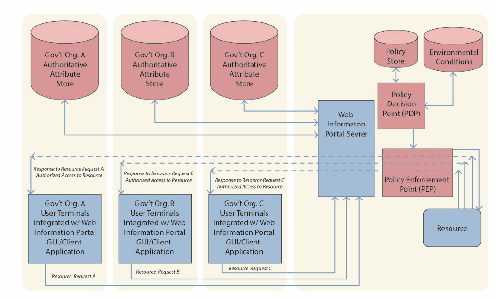
図28：組織A/B/Cの権威属性ストア、Web情報ポータルサーバー、ポリシーストア、環境条件、ポリシー決定ポイント（PDP）、ポリシー施行ポイント（PEP）、リソース、各組織のユーザー端末（Web情報ポータルのGUI/クライアントアプリケーション）を示す。ポリシーストアと環境条件はPDPに接続し、PDPはPEPへ判断を伝える。端末からリソース要求A/B/Cが送られ、各要求への応答とリソースへの許可済みアクセスが返る経路を示す。
Environmental
環境
未レビュー訳Gov'tOrg.A
政府機関A
未レビュー訳Gov'tOrg.B
政府機関B
未レビュー訳Gov'tOrg .C
政府機関C
未レビュー訳Conditions
条件
未レビュー訳Authoritative
権威
未レビュー訳Authoritative
権威
未レビュー訳Authoritative
権威
未レビュー訳Attr ibute
属性
未レビュー訳Attribute
属性
未レビュー訳Attribute
属性
未レビュー訳Store
ストア
未レビュー訳Store
ストア
未レビュー訳Store
ストア
未レビュー訳Policy Decision Web Point (PDP)
ポリシー決定ポイント（PDP）
未レビュー訳lnformaton Portal Sevrer
Web情報ポータルサーバー
未レビュー訳ResponsetoResourcReequesrA AurlioriudAccesstoRtsourct Rtsponst toRtsourct Rtqutst 8
リソース要求Aへの応答／リソースへの許可済みアクセス／リソース要求Bへの応答
未レビュー訳Policy Enforcement
ポリシー施行
未レビュー訳Autllori7edAccesstoRl'"-O(JKf' Respomf'toRt'i.ourceReq,~'i.tC
リソースへの許可済みアクセス／リソース要求Cへの応答
未レビュー訳AutlwrizedAcc,mtoResource
リソースへの許可済みアクセス
未レビュー訳Point (PEP)
ポイント（PEP）
未レビュー訳Gov'tOrg .A
政府機関A
未レビュー訳Gov'tOrg .B
政府機関B
未レビュー訳Gov't Org.C
政府機関C
未レビュー訳UserTerminals
ユーザー端末
未レビュー訳UserTerminals
ユーザー端末
未レビュー訳UserTerminals
ユーザー端末
未レビュー訳Integrated w/ Web Integrated w/ Web Integrated w/ Web
Web情報ポータルと統合（組織A/B/C）
未レビュー訳Resource
リソース
未レビュー訳Information Portal Information Portal Information Portal
情報ポータル（組織A/B/C）
未レビュー訳GUI/Client
GUI／クライアント
未レビュー訳GUI/Client
GUI／クライアント
未レビュー訳GUI/Client
GUI／クライアント
未レビュー訳Application
アプリケーション
未レビュー訳Application
アプリケーション
未レビュー訳Application
アプリケーション
未レビュー訳RefoutceRequtstC
リソース要求C
未レビュー訳ResourceRequtstB
リソース要求B
未レビュー訳ResourceRequesrA
リソース要求A
未レビュー訳Figure 28: Access Control and Privilege Management
図28：アクセス制御と特権管理
未レビュー訳NIST/ITL CYBERSECURITY PROGRAM ANNUAL REPORT 2017
NIST/ITL サイバーセキュリティプログラム年次報告書 2017
未レビュー訳the verifcation or test processes to generate fault
その検証・試験プロセスで障害
未レビュー訳CONTACTS:
連絡先：
未レビュー訳reports. Even though correct verifcation is achieved,
報告書を生成する。正しい検証が行われても、
未レビュー訳Dr. Vincent Hu
Vincent Hu博士
未レビュー訳Mr. David Ferraiolo
David Ferraiolo氏
未レビュー訳and counter-examples may be generated when faults
障害が見つかったときに反例を生成できるが、
未レビュー訳(301) 975-4975 (301) 975-3046
(301) 975-4975 (301) 975-3046
未レビュー訳are found, those methods provide no information
これらの方法では、障害の発生源に関する情報は得られない。
未レビュー訳vhu@nist.gov
vhu@nist.gov
未レビュー訳david.ferraiolo@nist.gov
david.ferraiolo@nist.gov
未レビュー訳about the source of faults that might allow conficts in privilege assignment, the leakage of privileges, or
発生源によって、権限割当ての競合、権限漏えい、
未レビュー訳Mr. Rick Kuhn
Rick Kuhn氏
未レビュー訳a confict-of-interest in permissions. The difculty in
権限間の利益相反が起きる可能性がある。原因の特定は
未レビュー訳(301) 975-3337
(301) 975-3337
未レビュー訳fnding the source of faults is increased, especially
特に難しくなる。
未レビュー訳kuhn@nist.gov
kuhn@nist.gov
未レビュー訳when the AC rules are intricately covering duplicated variables to a degree of complexity. The complexity is
アクセス制御ルールが複雑に重複変数を網羅するほど、問題は深刻になる。
未レビュー訳Conformance Verifcation for Access
アクセス制御ポリシーの
未レビュー訳because a fault might not be caused by one particular
障害は特定の
未レビュー訳Control Policies
適合性検証
未レビュー訳access rule but by multiple rules that confict. Thus, it requires manually analyzing each rule in the policy to
アクセスルール1つによるものではなく、複数の競合ルールによって生じることがある。そのため、障害を直す適切な方法を見つけるには、ポリシー内の各ルールを手作業で分析しなければならない。
未レビュー訳Access control (AC) systems are among the
アクセス制御（AC）システムは、ネットワークセキュリティの最も重要な構成要素の一つである。
未レビュー訳fnd the correct solution for correcting the fault.
障害を修正する正しい方法を見つける必要がある。
未レビュー訳most critical network security components. Faulty policies, misconfgurations, or faws in software To address the issue, CSD developed the ACPT, implementation can result in serious vulnerabilities. shown in Figure 29, which allows a user to compose, The specifcation of AC policies is often a challenging verify, test, and generate access control policies. CSD problem. Often, a system’s privacy and security also researched the AC Rule Logic Circuit Simulation are compromised due to the misconfguration of (ACRLCS) technique, which enables the AC authors to AC policies, instead of the failure of cryptographic detect a fault when the fault-causing AC rule is added primitives or protocols. This problem becomes to the policy, so the fx can be implemented in real increasingly severe as software systems become time before adding other rules that further complicate more and more complex, and are deployed to the detecting efort, rather than checking by retracing manage a large amount of sensitive information the interrelations between rules after the policy is and resources that are organized into sophisticated completed. structures. Identifying discrepancies between policy
ポリシーの不備、設定ミス、ソフトウェア実装の欠陥は深刻な脆弱性につながる。ACポリシーの仕様策定は難しく、暗号プリミティブやプロトコルの故障ではなく、ポリシー設定の誤りによってシステムのプライバシーやセキュリティが損なわれることがある。ソフトウェアシステムが複雑化し、機密情報や資源を高度な構造で大量に管理するにつれて、この問題は深刻化する。ポリシー仕様と／この問題に対処するためCSDは図29に示すACPTを開発した。ACPTを用いると、ACポリシーを作成、検証、試験、生成できる。CSDはアクセス制御ルール論理回路シミュレーション（ACRLCS）手法も研究した。この手法では、障害の原因となるACルールをポリシーに追加した時点で障害を検出でき、後続ルールが検出を複雑にする前に修正できる。ポリシー完成後にルール間の関係を再追跡して確認する必要がなくなる。
未レビュー訳In FY 2017, CSD accomplished the following:
2017年度にCSDが実施した主な活動は次のとおりである。
未レビュー訳specifcations and their intended properties is crucial because the correct implementation and enforcement
仕様と意図された性質との不一致を特定することは重要である。アプリケーションによるポリシーの正しい実装と施行は、
未レビュー訳•Published SP 800-192, Verifcation and Test
•SP 800-192『アクセス制御ポリシー／モデルの検証および試験
未レビュー訳of policies by applications is based on the premise that
ポリシー仕様が正しいことを前提としている。したがって、
未レビュー訳Methods for Access Control Policies/Models,
方法』を発行し、
未レビュー訳the policy specifcations are correct. As a result, policy
ポリシー
未レビュー訳an article, Access Control Policy Verifcation
論文「Access Control Policy Verification」
未レビュー訳specifcations must undergo rigorous verifcation and
仕様には厳密な検証と
未レビュー訳in IEEE Computer, and a conference paper,
をIEEE Computer誌に掲載し、会議論文
未レビュー訳validation through systematic testing to ensure that
体系的な試験による妥当性確認が必要である。これにより、
未レビュー訳Diferentiation Non-Isomorphic Graphs for
「Differentiation Non-Isomorphic Graphs for
未レビュー訳the policy specifcations truly encapsulate the desires
ポリシー仕様が作成者の意図を正確に反映していることを
未レビュー訳Graph Analytics;
Graph Analytics」を発表した。
未レビュー訳of the policy authors.
確かめなければならない。
未レビュー訳•Enhanced the capability of ACPT by including
•ACPTの機能を拡張し、
未レビュー訳To formally and precisely capture the security
アクセス制御（AC）が従うべきセキュリティ特性を形式的かつ厳密に記述するため、
未レビュー訳additional functions for the specifcations
ポリシーモデル仕様用の追加機能として、
未レビュー訳properties that AC should adhere to, access control
アクセス制御モデルは通常、
未レビュー訳of subject inheritance, separation of duty
主体継承と職務分離の
未レビュー訳models are usually written to bridge the rather wide
ポリシーとメカニズムの抽象度の大きな隔たりを埋めるように記述される。
未レビュー訳requirements, and better user interfaces for
要件と、
未レビュー訳gap in abstraction between policy and mechanism.
このように、ACモデルは曖昧さのない厳密な表現を提供し、セキュリティ要件の設計・実装における参照となる。検証技法は、
未レビュー訳policy model specifcation;
ポリシーモデル仕様のユーザーインターフェースを改善した。
未レビュー訳Thus, an AC model provides unambiguous and precise expression as well as a reference for the design and • Enhanced the usability and fxed bugs of the implementation of security requirements. Techniques
／ACRLCSの使いやすさを高め、バグを修正した。
未レビュー訳ACRLCS (the Access Control Rule Logic Circuit
ACRLCS（アクセス制御ルール論理回路
未レビュー訳are required for verifying whether an AC model is
ACモデルが
未レビュー訳Simulation System) to provide more policy
シミュレーションシステム）により、ポリシー作成機能と
未レビュー訳correctly expressed in the AC policies, and whether
ACポリシーに正しく表現されているか、また
未レビュー訳composing and user interface capability for
障害検出用のユーザーインターフェース機能を
未レビュー訳the properties are satisfed in the model.
モデルの性質が満たされているかを検証するために用いる。
未レビュー訳policy fault detection;
強化した。
未レビュー訳Most research on AC model or policy verifcation • Supported two Small Business Innovation techniques is focused on one particular model, and
ACモデルまたはポリシー検証技法に関する研究の多くは、特定のモデルに焦点を当てている。／中小企業技術革新研究（SBIR）の第II期プロジェクト2件を支援した。対象は
未レビュー訳Research (SBIR) Phase II projects for the
アクセス制御ツールと
未レビュー訳almost all of the research is in applied methods, which
研究のほとんどは応用手法に関するものであり、
未レビュー訳access control tool and embeded function
組込み機能の
未レビュー訳require the completed AC policies as the input for
完成済みのACポリシーを入力として必要とする。
未レビュー訳developments; and
開発である。また、
未レビュー訳ITL CYBERSECURITY PROGRAM AND PROJECTS | FY 2017
ITL サイバーセキュリティプログラムおよびプロジェクト | 2017年度
未レビュー訳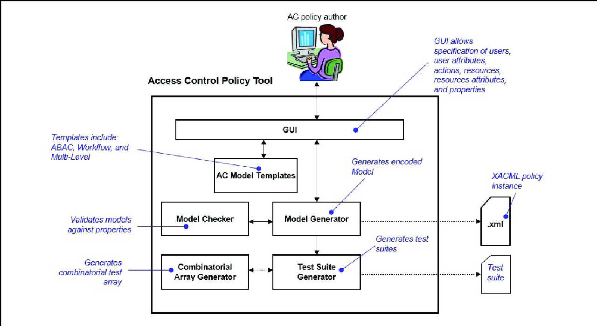
図29：Access Control Policy Tool（ACPT）のシステム構成。アクセス制御ポリシー作成者はGUIでユーザー、ユーザー属性、アクション、リソース、リソース属性およびプロパティを指定する。GUIはAC Model Templatesと連携し、Model Generatorへモデルを渡す。Model Checkerはモデルをプロパティに照らして検証し、Model Generatorと双方向に連携する。Model GeneratorはXACMLポリシーインスタンス（.xml）を出力し、Test Suite Generatorはテストスイートを生成する。Test Suite GeneratorはCombinatorial Array Generatorと連携し、組合せテスト配列を生成する。図中ラベル：ABAC、Workflow、Multi-Level、GUI、AC Model Templates、Model Checker、Model Generator、Test Suite Generator、Combinatorial Array Generator、XACML policy instance、Test suite。
GU/allows specificatfon of users, user attributes, actions, resources, resources attributes,
GUIでは、ユーザー、ユーザー属性、アクション、リソース、リソース属性、
未レビュー訳Access Control Policy Tool
アクセス制御ポリシーツール
未レビュー訳.-----------------+-------....-.-.-..-..
原文のみ
and properties
およびプロパティを指定できる。
未レビュー訳GUI
GUI（グラフィカルユーザーインターフェース）
未レビュー訳Templates indude . ABAC, World/ow, and Multi-Level
テンプレートにはABAC、Workflow（ワークフロー）、Multi-Level（多段階）が含まれる。
未レビュー訳Generates encoded Model
符号化されたモデルを生成
未レビュー訳ACModelTemplates
AC Model Templates（アクセス制御モデルテンプレート）
未レビュー訳XACML policy
XACMLポリシー
未レビュー訳......................................0...i.ns.ta..n.ce..... LJ
原文のみ
Validates models ModelChecker against properties
Model Checkerはモデルをプロパティに照らして検証する。
未レビュー訳~-------~
原文のみ
Generates test swtes
テストスイートを生成
未レビュー訳Generates -- -+--+-• Combinatorial
生成する：
未レビュー訳{~~
原文のみ
combinatorial test
組合せテスト
未レビュー訳原文のみ
ArrayGenerator ~--~_:_~t_esr_~;__!e_r_~ ··································
組合せ配列ジェネレーター
未レビュー訳array
配列
未レビュー訳Figure 29: Access Control Policy Tool (ACPT)
図29：アクセス制御ポリシーツール（ACPT）
未レビュー訳Figure 29 shows the system architecture of the
図29は、NIST ACPTの
未レビュー訳•Worked with industrial and academic rganizations in exploring new capabilities that NIST ACPT, which allows access control policy authors helped to improve the usability of the AC tools to compose, verify, and test access control policy (ACPT and ACRLCS), resulting in additional implementation. usage; ACPT was downloaded by 475 users Figure 30 provides an example of access control and organizations. rule implementation in ACRLCS, which allows the In FY 2018, CSD is planning to conduct further online detection of access control rule composition
•産業界および学術機関と協力して新機能を検討し、アクセス制御ツール（ACPTおよびACRLCS）の使いやすさ向上に取り組んだ。その結果、利用が増え、ACPTは475人および組織にダウンロードされた。／アクセス制御ポリシーの作成者がポリシー実装を作成、検証、およびテストできるシステム構成を示す。
未レビュー訳research on efcient testing technology, develop new faults. capabilities, and to enhance the performance of the ACPT and ACRLCS.
2018会計年度にCSDは、効率的なテスト技術の研究をさらに進め、新機能を開発し、ACPTおよびACRLCSの性能を高める計画である。／図30は、ACRLCSにおけるアクセス制御ルール実装の例を示す。同ツールは、アクセス制御ルールの組合せに起因する欠陥をオンラインで検出できる。
未レビュー訳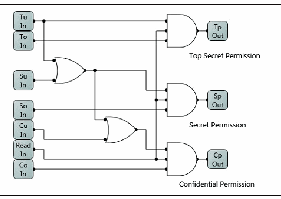
図30：ACRLCSにおけるアクセス制御ルール実装の論理回路。左側の入力Tu In、To In、Su In、So In、Cu In、Read In、Co Inが論理ゲートと配線に入り、右側のTp Out、Sp Out、Cp Outを生成する。出力はそれぞれTop Secret Permission（極秘権限）、Secret Permission（秘密権限）、Confidential Permission（機密権限）を表す。図中の略号は原図どおり保持。
Tu In To In
Tu入力、To入力
未レビュー訳Top Secret Permission
Top Secret権限（極秘）
未レビュー訳So In Cu In Read In Co In
So入力、Cu入力、Read入力、Co入力
未レビュー訳Confidential Permission
Confidential権限（機密）
未レビュー訳Figure 30: Access Control Rule Implementation
図30：アクセス制御ルールの実装
未レビュー訳NIST/ITL CYBERSECURITY PROGRAM ANNUAL REPORT 2017
NIST/ITLサイバーセキュリティプログラム年次報告書 2017
未レビュー訳This project is expected to:
このプロジェクトでは、次の実現を目指す。
未レビュー訳to perform a set of operations is determined by evaluating the attributes associated with the subject,
一連の操作を実行する権限は、主体に関連付けられた属性を評価し、
未レビュー訳•Provide a generic paradigm and framework of object, requested operations, and, in some cases, access control model/property conformance environmental conditions against policy, rules, or testing; relationships that describe the allowable operations for a given set of attributes. For example, access to a
•アクセス制御モデル／プロパティ適合性テストの汎用的なパラダイムと枠組みを提供する。／オブジェクト、要求された操作、および場合によっては環境条件に関する属性を、許可される操作を定めるポリシー、ルール、関係性に照らして評価する。例えば、データベースへのアクセスを
未レビュー訳•Provide templates for specifying access database could be restricted to users with particular control rules in popular access control models, attributes, such as membership in a group (e.g., such as the Attribute Based, Multi-level, and employees) and other conditions (e.g., part of the Workfow models; Human Resource Department). ABAC represents a
•一般的なアクセス制御モデルにおけるアクセス制御ルールを指定するテンプレートを提供する。対象モデルにはAttribute-Based、Multi-Level、Workflowが含まれる。／特定の属性（例：グループ（従業員など）への所属）やその他の条件（例：人事部門の一員であること）を持つユーザーに限定できる。ABACは、論理アクセス制御のスペクトル上の
未レビュー訳•Provide tools or services for checking the point on the spectrum of logical access control, from security and safety of an access control simple access control lists to more capable Role Based implementation, policy combination, and Access Control (RBAC), and fnally, to a highly fexible eXtensible Access Control Markup Language method for providing access based on the evaluation (XACML) policy generation; of attributes.
•アクセス制御の実装、ポリシーの組合せ、および拡張可能アクセス制御マークアップ言語（XACML）ポリシー生成の安全性を確認するツールまたはサービスを提供する。／位置を占め、単純なアクセス制御リストから、より高機能なロールベースアクセス制御（RBAC）、さらに属性評価に基づく柔軟性の高いアクセス方式へと至る。
未レビュー訳•Promote (or accelerate) the adoption of CSD is conducting research that provides combinatorial testing for large-system testing information for using ABAC to improve information (such as an access control system); sharing within and among organizations based on the planning, design, implementation, and operational
•大規模システム（アクセス制御システムなど）のテストに組合せテストを採用するよう促進する。／CSDは、計画、設計、実装、および運用上の検討に基づいて組織内外の情報共有を改善するため、ABACの利用に関する情報を提供する研究を行っている。
未レビュー訳•Promote the concept of detecting AC policy considerations.Theresearchalsoincludestechnologies faults in real-time AC rule composing; such as attribute assurance, attribute engineering/ management, identity system integration, attribute
•アクセス制御ポリシーの欠陥を、アクセス制御ルールの作成時にリアルタイムで検出するという考え方を推進する。／研究には、属性保証、属性の設計・管理、IDシステム統合、属性
未レビュー訳•Provide an innovative method for specifying federation, situational awareness (real-time or AC rules formed by Boolean logic expressions contextual) mechanisms, policy management, and operated on variables of AC rules; natural-language policy translation to digital policy.
•アクセス制御ルールの変数に対するブール論理式を用いてルールを指定する革新的な方法を提供する。／連携、状況認識（リアルタイムまたはコンテキスト依存）機構、ポリシー管理、自然言語ポリシーのデジタルポリシーへの変換なども含まれる。
未レビュー訳•Provide techniques for preventing faults in Figure 31 illustrates the interaction of many of these enforcing fundamental security properties, components. including Cyclic Inheritance, Privilege The goal of this research is to improve information Escalation, and Separation of Duty; and sharing, while maintaining control of that information
•Cyclic Inheritance（循環継承）、Privilege Escalation（権限昇格）、Separation of Duty（職務分離）など、基本的なセキュリティ特性を適用する際の欠陥を防ぐ手法を提供する。／図31は、これらの構成要素の多くがどのように相互作用するかを示す。この研究は、情報の管理を維持しながら情報共有を改善することを目指す。
未レビュー訳•Provide new methods for composing standard for federal agencies. mandatory AC models, such as Attribute In FY 2017, the project team: Based Access Control (ABAC) and Multi-Level Security (MLS) as well as some fundamental
•属性ベースアクセス制御（ABAC）や多段階セキュリティ（MLS）など、標準的な必須アクセス制御モデルと一部の基本的な／連邦機関において。2017会計年度に、プロジェクトチームは次の活動を行った。
未レビュー訳•Published the book Attribute-Based Access
•書籍『Attribute-Based Access
未レビュー訳security properties.
セキュリティ特性を組み合わせる新しい方法を提供する。
未レビュー訳Control by Artech House. The book contains discussions covering almost all aspects of
Control』（Artech House刊）。同書は
未レビュー訳FOR MORE INFORMATION, SEE:
詳細情報：
未レビュー訳ABAC;
ABAC（属性ベースアクセス制御）のほぼすべての側面を扱う。
未レビュー訳https://csrc.nist.gov/projects/access-control-policy-tool
https://csrc.nist.gov/projects/access-control-policy-tool
未レビュー訳•Published a conference paper: Verifcation of Resilience Policies that Assist Attribute Based
•会議論文「Verification of Resilience Policies that Assist Attribute-Based
未レビュー訳CONTACTS:
連絡先：
未レビュー訳Access Control. The paper presents research
Access Control（属性ベースアクセス制御を支援するレジリエンスポリシーの検証）」を発表した。この論文は、
未レビュー訳Dr. Vincent Hu
Vincent Hu博士
未レビュー訳Mr. Rick Kuhn
Rick Kuhn氏
未レビュー訳results of access privilege blocking and
アクセス権の遮断および
未レビュー訳(301) 975-4975 (301) 975-3337
(301) 975-4975 (301) 975-3337
未レビュー訳privilege leaking; and
特権漏えいに関する研究成果を示した。また、
未レビュー訳vhu@nist.gov
vhu@nist.gov
未レビュー訳kuhn@nist.gov
kuhn@nist.gov
未レビュー訳•Worked with government, industry and academic organizations in exploring diverse
•政府、産業界、学術機関と協力して、
未レビュー訳Attribute Based Access Control
属性ベースアクセス制御
未レビュー訳models (e.g., Next Generation Access Control - NGAC) and applications (e.g., distributed
多様なモデル（例：次世代アクセス制御（NGAC））および応用分野（例：分散
未レビュー訳Attribute Based Access Control (ABAC) is a logical
属性ベースアクセス制御（ABAC）は、論理的な
未レビュー訳systems: Cloud, Bigdata, IoT applications) of 80
システム（クラウド、ビッグデータ、IoTアプリケーションなど）における
未レビュー訳access control methodology where an authorization
アクセス制御方式であり、権限判定では、
未レビュー訳ABAC.
ABACを検討した。
未レビュー訳ITL CYBERSECURITY PROGRAM AND PROJECTS | FY 2017
ITLサイバーセキュリティプログラムおよびプロジェクト｜2017会計年度
未レビュー訳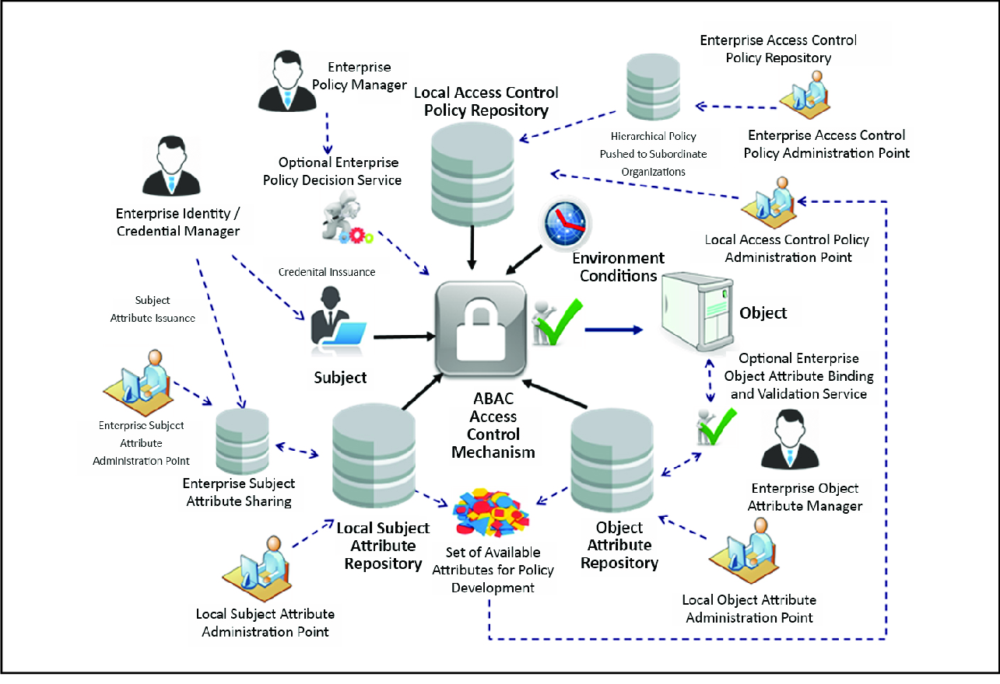
図31：属性ベースアクセス制御（ABAC）機構の構成図。中央のABACアクセス制御機構は、Subject（主体）、Object（オブジェクト）、Environment Conditions（環境条件）を入力としてアクセス判定を行い、Objectへ結果を渡す。ポリシーはEnterprise Access Control Policy Repositoryに保管され、階層ポリシーが下位組織へ配布される。Local Access Control Policy Repositoryおよび任意のEnterprise Policy Decision Serviceも示される。主体属性はEnterprise Identity/Credential Manager、属性発行・共有サービス、Enterprise Subject Attribute Sharing、Local Subject Attribute Repositoryを介して連携される。オブジェクト属性はEnterprise Object Attribute Manager、Object Attribute Binding and Validation Service、Local Object Attribute Administration Point、Object Attribute Repositoryを介して管理・検証される。Enterprise/Local Policy Administration Point、Environment Administration Point、Policy Developmentに利用できる属性集合も図示される。
Enterpri seAccess Control Policy Repository
エンタープライズアクセス制御ポリシーリポジトリ
未レビュー訳~ Enterpri se ~....v~ olicy Manager LocalAccessControl
エンタープライズポリシーマネージャー／ローカルアクセス制御
未レビュー訳~------
原文のみ
原文のみ
PolicyRepository , ,
ポリシーリポジトリ
未レビュー訳原文のみ
,, , HierarchicalPolicy Enterpri seAccessContro l
階層ポリシー／エンタープライズアクセス制御
未レビュー訳原文のみ
~,,'
原文のみ
Pushedto Subordinate Policy Admin istration Point
下位組織へポリシーをプッシュ／ポリシー管理点
未レビュー訳Optional Enterpri se
任意のエンタープライズ
未レビュー訳<- __---Or-ga-niz-at-ion-s
組織
未レビュー訳Policy Decision Service
ポリシー決定サービス
未レビュー訳~-------
原文のみ
原文のみ
Enterpri se Identit y/
エンタープライズID／
未レビュー訳原文のみ
Credential Manager
資格情報マネージャー
未レビュー訳' '
原文のみ
LocalAccessControl Policy 1
ローカルアクセス制御ポリシー
未レビュー訳Environment Admini stration Point
管理点／環境
未レビュー訳\ \ Credenital lnssuance
資格情報の発行
未レビュー訳Conditions
条件
未レビュー訳\ Subject \ \
主体
未レビュー訳Object
オブジェクト
未レビュー訳AttributeIssuance \
属性の発行
未レビュー訳-----+
原文のみ
\ \ \
原文のみ
A Optiona l Enterpri se
任意のエンタープライズ
未レビュー訳原文のみ
: Object Attr ibute Binding 1
オブジェクト属性バインディング
未レビュー訳Subject
主体
未レビュー訳\ \~
原文のみ
iViI and Validation Service
および検証サービス
未レビュー訳ABAC" Access
ABACアクセス
未レビュー訳原文のみ
EnterpriseSubject
エンタープライズ主体
未レビュー訳Control
制御
未レビュー訳I,:.,,~
原文のみ
Attribute
属性
未レビュー訳Mechanism
機構
未レビュー訳原文のみ
AdministrationPoint
管理点
未レビュー訳Enterpri se Subject
エンタープライズ主体
未レビュー訳Enterpri se Object
エンタープライズオブジェクト
未レビュー訳Attribute Sharing
属性共有
未レビュー訳Attribute Manager
属性マネージャー
未レビュー訳Object '{",,,
オブジェクト
未レビュー訳,. , ,7 LocalSubject
ローカル主体
未レビュー訳Attribute
属性
未レビュー訳' Attribute
属性
未レビュー訳Set of Available
利用可能な属性の集合
未レビュー訳Repository
リポジトリ
未レビュー訳Repository
リポジトリ
未レビュー訳Attribute sfor Policy Development
ポリシー開発用
未レビュー訳Local Object Attribute
ローカルオブジェクト属性
未レビュー訳原文のみ
Local Subject Attribute
ローカル主体属性
未レビュー訳____________________A_d_m_in_is_tr_at_io_n__P_oi_nt__ JI
管理点
未レビュー訳Administration Point
管理点
未レビュー訳Figure 31: ABAC Access Control Mechanism Chart
図31：ABACアクセス制御機構の構成図
未レビュー訳In FY 2018, CSD will continue the research of ABAC • Assist ABAC administrators in establishing or formal models, as well as the details and extended
2018年度、CSDはABACの形式モデルに関する研究を継続し、／ABAC管理者が業務プロセスを確立または
未レビュー訳refning business processes to support ABAC;
改善してABACを支援できるようにする。
未レビュー訳topics of ABAC capabilities, such as attribute
ABAC機能の詳細や拡張トピック（例：属性に関する検討、
未レビュー訳•Promote the adoption of ABAC for a more
•ABACを、より
未レビュー訳considerations, ABAC implementation examples,
ABAC導入例、
未レビュー訳secure and fexible method for information
安全で柔軟な情報共有方式として
未レビュー訳ABAC mechanisms, and ABAC standards. The ABAC
ABAC機構、ABAC標準など）を含めて検討する。ABAC
未レビュー訳sharing in a standalone or enterprise
スタンドアロンまたはエンタープライズ環境において
未レビュー訳project will pursue the following objectives:
プロジェクトでは、次の目標に取り組む。
未レビュー訳environment; and
採用することを促進する。また、
未レビュー訳•Provide readers with an overview of the
•読者に、論理アクセス制御の現状、
未レビュー訳•Provide testing methods for ABAC policy and
•ABACポリシーおよび実装を対象とするテスト方法を提供する。
未レビュー訳current state of logical access control,
ABACの実用的な定義、
未レビュー訳implementations.
実装を対象とする。
未レビュー訳a working defnition of ABAC, and an explanation of the core and enterprise ABAC
中核的およびエンタープライズABACの
未レビュー訳FOR MORE INFORMATION, SEE:
詳細情報：
未レビュー訳concepts;
概念を説明する。
未レビュー訳https://csrc.nist.gov/projects/abac/
https://csrc.nist.gov/projects/abac/
未レビュー訳•Assist security policy makers in establishing a
•セキュリティポリシー策定者が、ABAC導入のビジネス上の根拠を確立し、
未レビュー訳CONTACTS:
連絡先：
未レビュー訳business case for ABAC implementation and acquiring an interoperable set of capabilities; Dr. Vincent Hu
相互運用可能な機能群を取得できるよう支援する。／Vincent Hu博士
未レビュー訳Mr. David Ferraiolo
David Ferraiolo氏
未レビュー訳(301) 975-4975 (301) 975-3046
(301) 975-4975 (301) 975-3046
未レビュー訳•Assist ABAC developers in developing vhu@nist.gov david.ferraiolo@nist.gov the operational requirements and overall enterprise architecture; Mr. Rick Kuhn (301) 975-3337 kuhn@nist.gov
•ABAC開発者が、運用要件およびエンタープライズ全体のアーキテクチャを策定できるよう支援する。／vhu@nist.gov david.ferraiolo@nist.gov Rick Kuhn氏 (301) 975-3337 kuhn@nist.gov
未レビュー訳NIST/ITL CYBERSECURITY PROGRAM ANNUAL REPORT 2017
NIST/ITLサイバーセキュリティプログラム年次報告書 2017
未レビュー訳and to align with international standards. One of
国際標準との整合を図った。
未レビュー訳Trusted Identities Program
信頼できるIDプログラム
未レビュー訳the most signifcant updates is replacing levels of
主な更新点の一つは、保証レベルを
未レビュー訳By promoting the government and commercial assurance with three individual components of the adoption of privacy-enhancing, secure, interoperable, digital identity fow for more fexibility in design and and easy-to-use digital identity solutions, ACD works operations: the identity, authenticator, and federation alongside its partners to drive trust, convenience, and assurance levels. Identity proofng was also updated innovation in the marketplace of identity solutions to further mitigate the potential for mass breaches of (see https://www.nist.gov/itl/tig). ACD is committed personal information. to advancing measurement science, technology, and
政府および民間部門による、プライバシーを強化し、安全で相互運用可能かつ使いやすいデジタルIDソリューションの導入を促す。ACDはパートナーとともに、IDソリューション市場における信頼、利便性、革新を推進する（https://www.nist.gov/itl/tig）。ACDは、個人と組織双方のデジタルID改善に向け、測定科学、技術、標準の導入を進めることに取り組んでいる。／デジタルIDフローの3つの独立した要素（本人性、認証器、フェデレーション）に分け、設計と運用の柔軟性を高めた。
未レビュー訳Over the course of a year, the document evolved
この文書は1年をかけて発展し、
未レビュー訳standards adoption to improve digital identity for
個人と組織双方のデジタルIDを改善するため、標準の導入を進める。
未レビュー訳with the help of the community. For this revision,
コミュニティの協力を得た。今回の改訂では、
未レビュー訳individuals and organizations alike.
ACDはこの取り組みを継続している。
未レビュー訳GitHub was used to interact in near-real-time with
GitHubを用いてコミュニティとほぼリアルタイムでやり取りし、
未レビュー訳In FY 2017, the Trusted Identities Program was a the community and received a tremendous response: key participant and driving force in the digital identity over 1,400 comments were submitted, and the web arena for NIST’s National Cybersecurity Center of version of the publication drew over 74,000 unique Excellence (NCCoE). Many identity-related projects visitors between May 2016 and May 2017. ACD will initiated at the NCCoE leveraged the technical continue to use this approach in the future during the expertise and experiences of, and the foundational development of new volumes and document revisions. guidelines and practices issued by, ACD and NIST’s broader identity program.
2017会計年度、信頼できるIDプログラムは、NISTのNational Cybersecurity Center of Excellence（NCCoE）におけるデジタルID分野の主要な参加者・推進役を務めた。NCCoEで開始された多くのID関連プロジェクトでは、ACDおよびNISTのより広範なIDプログラムが策定した基礎的な指針・実践と技術的知見が活用された。／コミュニティから大きな反響を得た。1,400件を超えるコメントが寄せられ、2016年5月から2017年5月までにウェブ版の閲覧者は74,000人を超えた。ACDは今後、新しい巻の作成や文書改訂でもこの方法を引き続き用いる。
未レビュー訳International Standards Alignment
国際標準との整合
未レビュー訳Through these collaborative eforts, projects this year focused on driving the adoption of trusted ACD, the United Kingdom Cabinet Ofce, and the identities through digital identity standards, including Canada Treasury Board have been collaborating to forfederalagencies.NISTalsoengagedthecommunity compare national frameworks for identity assurance on standards and guidelines development, including with the intention of creating a broad and competitive issuing SP 800-63-3, Digital Identity Guidelines, global market for identity solutions and enabling collaborating with other countries to advance high- cross-border credential interoperability. Building on assurance online identity standards, and participating recent updates to guidance documents like NIST’s in the OpenID Foundation and Fast Identity Online SP 800-63-3 and the UK’s Good Practice Guides, (FIDO) Alliance.
こうした協働を通じ、今年の各プロジェクトは、連邦機関向けのデジタルID標準などを通じて、信頼できるIDの普及を進めた。NISTは標準・指針の策定に関してコミュニティと協力し、SP 800-63-3『Digital Identity Guidelines』を発行したほか、各国との連携、OpenID FoundationおよびFast Identity Online（FIDO）Allianceへの参加を進めた。／ACD、英国内閣府、カナダ財務委員会は、ID保証に関する各国の枠組みを比較し、幅広く競争力のあるグローバルなIDソリューション市場を形成するとともに、国境を越えた資格情報の相互運用性を実現するために協力している。NISTのSP 800-63-3や英国のGood Practice Guidesなど、最近改訂された指針文書を踏まえ、
未レビュー訳the group made several recommendations for the International Organization for Standardization’s
このグループは、国際標準化機構（ISO）の
未レビュー訳ACD also focused on building trust in digital
ACDはまた、デジタルID技術への信頼構築にも取り組み、
未レビュー訳(ISO’s) suite of identity standards. These
ID標準群に関する勧告を複数行った。これらの
未レビュー訳identity technologies by advancing measurement
ID分野の測定科学を進めた。取り組みには、
未レビュー訳recommendations included the development of a new
勧告には、新たな
未レビュー訳science in the identity space—which included
認証器の強度の測定や属性メタデータの評価が含まれる。チームはさらに、
未レビュー訳standard that provides an overall approach to identity
本人確認および認証に関するリスク管理と保証を包括的に扱う標準
未レビュー訳measuring the strength of authenticators and
認証器の強度を測定し、
未レビュー訳and authentication risk management and assurance;
の開発が含まれる。
未レビュー訳evaluating attribute metadata. The team also
属性メタデータを評価した。また、チームは
未レビュー訳organizations could leverage this when developing
各組織はこれを活用して、
未レビュー訳continued work with numerous external partners
多くの外部パートナーとの協力を続け、
未レビュー訳their models for assessing and managing identity-
IDベースのリスクや
未レビュー訳through trusted identities pilots, seeding the market
信頼できるIDの実証事業を通じて市場の土台を築き、
未レビュー訳based risks and threats.
脅威を評価・管理するモデルを策定できる。
未レビュー訳with innovative technologies and providing solutions.
革新的な技術を広げ、ソリューションを提供した。
未レビュー訳The group also recommended refocusing ISO/IEC 29115, Entity Authentication Assurance Framework, to address authentication threats and risks exclusively.
同グループは、ISO/IEC 29115「Entity Authentication Assurance Framework」を再検討し、認証上の脅威とリスクに専念させることも勧告した。更新版には脅威モデル、統制策と緩和策、ならびにこれらを組み合わせて認証イベントの定義済みリスク管理成果を達成するための指針を含めるべきである。
未レビュー訳Updated Digital Identity Guidelines
デジタルIDガイドラインの更新
未レビュー訳These updates should contain a threat model, controls
更新版には脅威モデル、統制策、
未レビュー訳In June of 2017, ACD fnalized the latest revision and mitigations, and guidance on how these can to SP 800-63-3, which covers digital identity from be combined to achieve defned risk management initial risk assessment to deployment of federated outcomes for authentication events. identity solutions. Digital identity in both agencies
2017年6月、ACDはSP 800-63-3の最新版を確定した。同文書は、初期リスク評価から連携IDソリューションの展開までデジタルIDを扱う。機関におけるデジタルIDと市場は／緩和策、およびそれらを組み合わせて認証イベントの所定のリスク管理成果を達成する方法を示す指針を含めるべきである。
未レビュー訳NIST staf members served as the Federal
NIST職員は連邦政府の
未レビュー訳and the market place have changed dramatically
市場でのデジタルIDを取り巻く状況は大きく変化し、
未レビュー訳Government lead for all activities in the (Fast IDentity
すべての活動におけるリード担当者を務め、
未レビュー訳since the publication’s last revision in 2013; the latest
2013年の前回改訂以降、最新の
未レビュー訳Online) FIDO Alliance, which focuses on creating
Fast Identity Online（FIDO）Allianceの活動を主導した。同Allianceは、強固な認証仕様を策定し、
未レビュー訳update was designed to give agencies more options
更新では、機関により多くの選択肢を提供し、
未レビュー訳ITL CYBERSECURITY PROGRAM AND PROJECTS | FY 2017
ITLサイバーセキュリティプログラムおよびプロジェクト｜2017会計年度
未レビュー訳strong authentication specifcations to create an ACD has advanced trusted digital identity identity ecosystem. During 2017, ACD participation solutions by building partnerships that stem from included active membership and contribution in the trusted identities pilots. These pilots develop technical and privacy working groups, as well as and deploy technology, models, and frameworks international plenary participation in Hong Kong, that would not otherwise exist in the marketplace,
強固な認証仕様を策定してIDエコシステムを構築することを目指す。2017年、ACDは、技術およびプライバシーに関する作業部会への積極的な参加・貢献に加え、／ACDは信頼できるIDの実証事業から生まれたパートナーシップを通じて、信頼できるデジタルIDソリューションを推進してきた。これらの実証事業は、他では市場に存在しない技術、モデル、枠組みを開発・展開し、
未レビュー訳and have impacted more than 8.8 million individuals
これまでに880万人以上に影響を与えており、
未レビュー訳Vancouver, Madrid, and Sydney.
香港、バンクーバー、マドリード、シドニーで開催された国際総会にも参加した。
未レビュー訳to date. In FY 2017, the pilots made remarkable
2017会計年度、実証事業は目覚ましい進展を遂げた。
未レビュー訳Additionally, ACD supported standardization
さらに、ACDはiGovを含む標準化活動を支援した（https://openid.net/wg/
未レビュー訳progress: the 24 projects now involve more than 190
24件のプロジェクトが12分野にまたがる190以上の
未レビュー訳eforts including iGov (see https://openid.net/wg/
igov）。iGovはOpenID Connect
未レビュー訳partner organizations across 12 sectors — including
パートナー組織が参加し、その中には
未レビュー訳igov). The iGov is working toward an OpenID Connect
仕様の策定を進めており、ユーザーが認証を行い、
未レビュー訳the development or deployment of 16 multi-factor
多要素認証ソリューション16件の開発または展開が含まれる。
未レビュー訳specifcation that will enable users to authenticate and
同意済みの属性情報を世界中の公共部門サービスと共有できる。
未レビュー訳authentication solutions.
認証ソリューションが含まれる。
未レビュー訳share consented attribute information with public-sector services across the globe. The resulting profle In FY 2018, NIST, through the NCCoE, will fully will enable standardized integration with public-sector integrate identity management standards, best
ユーザーが同意した属性情報を世界各地の公共部門サービスと共有できる。これにより、／2018年度、NISTはNCCoEを通じ、ID管理標準、ベストプラクティス、技術的手法を
未レビュー訳practices, and technical approaches into projects that
NCCoEおよび多数の関係者・プロジェクトの基盤となる取り組みに統合する。
未レビュー訳relying parties (RPs) in multiple jurisdictions.
複数の法域における公共部門の依拠当事者（RP）との標準化された統合が可能になる。
未レビュー訳are foundational to the work of the NCCoE and many of its stakeholders and projects, including the Internet of Things. The project will also continue to advance
これらの取り組みはNCCoEおよび多数の関係者・プロジェクトの基盤となり、IoTも含む。本プロジェクトはさらに、
未レビュー訳Authenticator Strength of Function
認証器の機能強度
未レビュー訳the digital identity marketplace by collaborating with
パートナーと協力してデジタルID市場を発展させ、
未レビュー訳NIST is working to produce a framework
NISTは、
未レビュー訳partners on measurement science, technology, and
測定科学、技術、
未レビュー訳for evaluating and comparing the strength of
認証ソリューションの強度を評価・比較する枠組みを
未レビュー訳standards adoption, and develop guidance to meet
標準の導入を促進し、
未レビュー訳authentication solutions, starting with the Strength of
作成しており、まず認証器の機能強度のうち
未レビュー訳today’s digital identity needs.
現在のデジタルIDのニーズに応える指針を策定する。
未レビュー訳Function for Authenticators – Biometrics (SOFA-B). The team began with a focus on biometrics, due to FOR MORE INFORMATION, SEE: the increased availability of biometric solutions in the
認証器の機能強度―生体認証（SOFA-B）から着手した。チームは生体認証に焦点を当てた。これは、／詳細情報：
未レビュー訳https://www.nist.gov/itl/tig
https://www.nist.gov/itl/tig
未レビュー訳consumer space and the need for improved security guidance regarding the use of those solutions as CONTACTS: authenticators. The end goal is a framework to
消費者市場で生体認証ソリューションが普及し、それらを認証器として使う際のセキュリティ指針を改善する必要性が高まったためである。最終目標は、／連絡先：
未レビュー訳Dr. Nelson Hastings
Nelson Hastings博士
未レビュー訳assess and combine authentication technologies, as
認証技術を評価・組み合わせ、
未レビュー訳(301) 975-5237
(301) 975-5237
未レビュー訳well as to compare biometrics’ efectiveness to that
生体認証の有効性をパスワードなど他の認証器と比較することである。
未レビュー訳nelson.hastings@nist.gov
nelson.hastings@nist.gov
未レビュー訳of passwords and other authenticators. Using the SOFA-B framework, RPs will be able to determine
SOFA-B枠組みを用いて、依拠当事者（RP）は
未レビュー訳Ms. Kristina Rigopoulos
Kristina Rigopoulos氏
未レビュー訳the overall strength of biometric authentication, (202) 309-4791 considering matching performance, presentation
生体認証の総合的な強度を判定できる。照合性能および提示攻撃検知を考慮する。／(202) 309-4791
未レビュー訳kristina.rigopoulos@nist.gov
kristina.rigopoulos@nist.gov
未レビュー訳attack detection, and the efort required to break – or spoof – a system.
攻撃検知と、システムを破る、またはなりすますために必要な労力も考慮する。
未レビュー訳(Editors’ Note: Paul Grassi supported this program until his recent departure from NIST.)
（編集者注：Paul Grassi氏はNISTを最近退職するまで本プログラムを支援した。）
未レビュー訳With the draft of NISTIR 8112: A Proposed Schema for Evaluating Federated Attributes, the TIG aims to give RPs greater insight into how attributes assist with risk-based business decision-making. RPs can RESEARCH IN EMERGING examine this metadata and determine if they have
NISTIR 8112『A Proposed Schema for Evaluating Federated Attributes（連携属性評価スキーマ案）』の草案を通じ、TIGは属性がリスクベースの業務判断にどう役立つかについてRPの理解を深めることを目指す。RPはこのメタデータを確認し、／新興技術の
未レビュー訳TECHNOLOGIES
テクノロジー
未レビュー訳the confdence they need in the attribute value before making an authorization decision. This NISTIR is being treated like an implementers’ draft, an approach
属性値を信頼して認可判断を行うために必要な確信を得られるかを判断できる。本NISTIRは実装者向け草案として扱われ、
未レビュー訳Secure Development Toolchain
セキュア開発ツールチェーン
未レビュー訳focused on real-world implementation results and lessons learned before fnalizing the document. ACD Competitions plans to advance SOFA-B and attribute metadata
実環境での実装結果と教訓を文書の確定前に重視する。ACD Competitionsは、SOFA-Bおよび属性メタデータに関する
未レビュー訳Many security weaknesses in federal information
連邦情報
未レビュー訳eforts to their next stages in FY 2018.
取り組みを2018年度に次の段階へ進める予定である。
未レビュー訳systems stem from software security vulnerabilities
システムにおける多くのセキュリティ上の弱点は、ソフトウェアセキュリティの脆弱性に起因し、
未レビュー訳Innovative Digital Identity Solutions
革新的なデジタルIDソリューション
未レビュー訳induced by software faws present in current-
現行
未レビュー訳NIST/ITL CYBERSECURITY PROGRAM ANNUAL REPORT 2017
NIST/ITLサイバーセキュリティプログラム年次報告書 2017
未レビュー訳generation software products. CSD tracks software sets. Through the demonstration of security-faw security vulnerabilities (in the National Vulnerability avoidance in a time-constrained setting, CSD will seek Database), and seeks techniques for the measurement to show that wide-scale improvements in the overall of security vulnerabilities and techniques that reduce security of software products can be realized without the impact and prevalence of security vulnerabilities sacrifcing a time-to-market goal. The competitions, in newly developed products or in new versions of which will be open to all interested parties, will aim
世代のソフトウェア製品に存在する欠陥によってソフトウェアのセキュリティ脆弱性が生じる。CSDはNational Vulnerability Databaseに登録されたものを含むソフトウェア脆弱性を追跡し、脆弱性の測定手法とその影響・発生率を低減する手法を、新規製品または既存製品の新バージョンで／「セット」。時間制約のある環境でセキュリティ欠陥の回避を実証し、CSDは市場投入の目標を犠牲にせずソフトウェア製品全体のセキュリティを大幅に向上できることを示そうとしている。競技会は関心のあるすべての参加者に開かれ、
未レビュー訳to provide consistent application and measurement
商用・研究用ソフトウェア開発における一貫した適用と測定を提供し、
未レビュー訳existing products.
適用する。
未レビュー訳of commercial and research software development,
商用・研究用ソフトウェア開発における
未レビュー訳One approach to reducing the number of
ソフトウェアのセキュリティ脆弱性を減らす一つの方法は、利用できる開発ツールを改善することである。
未レビュー訳composition, and reuse techniques.
構成および再利用の技法を対象とする。
未レビュー訳security vulnerabilities in software is to improve the development tools that are available. By identifying In FY 2017, CSD personnel documented the languages and software development tools that Toolchain Infrastructure (TCI) in a collection of support a reduction of vulnerabilities, and by documents that included a concept of operations, stimulating the creation of better tools and tool system design specifcation, and administrator’s usage techniques, the approach has the potential and users guides. These documents helped inform to help developers produce applications with fewer the development of a python-based prototype of vulnerabilities. While it is impossible to assure the the TCI. The prototype development efort included total absence of security vulnerabilities in this way, it automated unit test scripts for the TCI and the might well be possible to rule out specifc, signifcant confguration and deployment of the TCI hardware. classes of vulnerabilities that currently provide the The team also refned a selected challenge problem
脆弱性の低減に役立つ言語やソフトウェア開発ツールを特定し、より優れたツールとその利用技法の創出を促せば、開発者が脆弱性の少ないアプリケーションを作成できる可能性がある。この方法で脆弱性が皆無であることは保証できないが、／2017会計年度、CSD職員はToolchain Infrastructure（TCI）を、運用概念書、システム設計仕様書、管理者向けガイドおよびユーザーガイドを含む文書群にまとめた。これらの文書はPythonベースのTCIプロトタイプの開発に役立った。プロトタイプにはTCI用の自動単体テストスクリプト、TCIハードウェアの構成・配備も含まれた。チームは選定済みの課題を改良し、
未レビュー訳by updating the problem descriptions, requirements,
課題の説明、要件、テストケースを更新するとともに、
未レビュー訳basis for many serious exploits.
現在、多くの深刻な攻撃の基礎となっている特定の重大な脆弱性クラスを排除できる可能性がある。
未レビュー訳and test cases; and developed an exemplar challenge
模範的な課題解決策を
未レビュー訳CSD is developing an empirical, competitive
CSDは、悪用可能な脆弱性が比較的少ないソフトウェアシステムを実現するため、最も有効で使いやすいツールの組合せを見つける実証的な競技方式を開発している。複数の競技会を計画しており、その考え方は
未レビュー訳problem solution in python.
Pythonで開発した。
未レビュー訳approach to fnding the most efective and usable combinations of tools to produce software systems In FY 2018, CSD plans to complete the that are relatively free of exploitable vulnerabilities. development and testing of the TCI prototype. The Multiple competitions are planned that will be based team will enhance the prototype to further improve on an idea developed during the Designing a Secure its reliability and reproducibility, perform extensive Systems Engineering Competition Workshop that was testing of the TCI, and publicly announce the frst conducted by the National Science Foundation in toolchain competition.
2010年に全米科学財団（NSF）が開催した「Designing a Secure Systems Engineering Competition Workshop」で提案されたものである。／2018年度、CSDはTCIプロトタイプの開発と試験を完了する予定である。チームは信頼性と再現性を高め、TCIを徹底的に試験し、初のツールチェーン競技会を公表する。
未レビュー訳2010.The workshop proposed a competition for the
2010.このワークショップでは、
未レビュー訳CONTACTS:
連絡先：
未レビュー訳development of a set of tools to help non-security-expert developers to rapidly build a signifcant Mr. Lee Badger Mr. Christopher Johnson application with zero vulnerabilities, as detected by (301) 975-3176
脆弱性ゼロの重要なアプリケーションを迅速に構築できるよう、セキュリティ専門家でない開発者を支援する一連のツールを開発する競技を提案した。脆弱性は／Lee Badger氏 Christopher Johnson氏 (301) 975-3176
未レビュー訳(301) 975-3247 lee.badger@nist.gov christopher.johnson@nist.gov
(301) 975-3247 lee.badger@nist.gov christopher.johnson@nist.gov
未レビュー訳an extensive public test suite.
広範な公開テストスイートで検出する。
未レビュー訳The participants in the planned competitions
計画中の競技会の参加者は、
未レビュー訳Networks of Things
モノのネットワーク
未レビュー訳will implement software systems to solve challenge problems using software development tool chains
課題を解決するソフトウェアシステムを、各自が選択したソフトウェア開発ツールチェーンを用いて実装し、
未レビュー訳The Internet of Things (IoT) increasingly appears
モノのインターネット（IoT）は、次の大きな技術革新としてますます注目されている。
未レビュー訳(“toolchains”) of their own choosing, within specifed
指定された期間内に実施する。ツールチェーンには
未レビュー訳to be the next great technology revolution. It is
医療の提供から
未レビュー訳time periods. The toolchains will be free to include
既存の技術（例：既存ソフトウェアライブラリ、
未レビュー訳expected to impact everything from healthcare
食料の生産、働き方、
未レビュー訳existing technologies (e.g., existing software libraries
フレームワーク、コード生成器、再利用可能なソース
未レビュー訳delivery, to how food is produced, to how we work, to
あらゆる形の輸送・通信、
未レビュー訳and frameworks, code generators, reusable source
コード、バグ検出ツールなど）、新技術、または
未レビュー訳all forms of transportation and communication, and
ほぼすべての自動化に及ぶ。IoTは
未レビュー訳code, or bug-fnding tools), novel technologies, or
それらの任意の組合せを含められる。各競技会では
未レビュー訳to virtually all forms of automation. IoT will impact
すべての人に
未レビュー訳any combination thereof. Each competition will apply
ソフトウェア開発工程の期限を模擬して時間的圧力を加え、
未レビュー訳everyone, and in multiple ways.
さまざまな形で影響を与える。
未レビュー訳time pressure by simulating a deadline in the software development process, increasing the likelihood of
セキュリティ欠陥が入り込む可能性を高める。
未レビュー訳With a technology revolution of such large impact
社会に非常に大きな影響を及ぼす技術革新を考えると、
未レビュー訳an introduction of security faws. The objective of
ツールチェーンの目標は、セキュリティ欠陥を検出または防止し、
未レビュー訳on society, it is imperative that IoT-based systems
IoTベースのシステムを信頼できることが不可欠である。つまり、システムは
未レビュー訳the toolchains will be to detect or prevent security
迅速なソフトウェア開発を支えつつ、
未レビュー訳can be trusted. This means that they should exhibit
安全で信頼性が高く、プライバシーを守る動作に加えて多くの
未レビュー訳faws while still supporting the quick-paced software secure, reliable, and private behaviors as well as many 84 development of applications with rich feature
豊富な機能を備えたアプリケーションの迅速な開発を支える。／安全で信頼性が高く、プライバシーを守る動作に加えて多くの
未レビュー訳ITL CYBERSECURITY PROGRAM AND PROJECTS | FY 2017
ITLサイバーセキュリティプログラムおよびプロジェクト｜2017会計年度
未レビュー訳other attributes associated with quality. Privacy is Operations Research and the Management Sciences particularly important because IoT-based systems (INFORMS) meeting in Dallas, Texas, he referred to will likely produce huge amounts of data as a result a cloud as an important new “computing paradigm of sensing and surveillance. This is the “big data” wheretheboundariesofcomputingwillbedetermined challenge associated with IoT. Therefore, techniques, by economic rationale rather than technical limits tools, and methods to mitigate the numerous “trust” alone.” The international IT literature and media later challenges are needed before these automated IoT- provided many defnitions, models, and architectures,
その他の品質属性も備える必要がある。プライバシーは特に重要である。IoTベースのシステムは、センシングや監視によって大量のデータを生成する可能性が高いためである。これはIoTに伴う「ビッグデータ」の課題である。したがって、多くの「信頼」に関する課題を緩和する技術、ツール、手法が必要となるのは、IoTベースの自動化ネットワークが／Operations Research and the Management Sciences（INFORMS）の会議で、彼はクラウドを新たな重要な「コンピューティングパラダイム」と説明した。そこでは、コンピューティングの境界は技術的制約だけでなく経済性によって決まる。その後、国際的なIT文献やメディアで多くの定義、モデル、アーキテクチャが示されたが、
未レビュー訳but it was not until 2011, when NIST published SP 800-
2011年にNISTがSP 800-
未レビュー訳based networks manage much of daily life.
日常生活の多くを管理するようになる前である。
未レビュー訳145, The NIST Defnition of Cloud Computing, that the
145『The NIST Definition of Cloud Computing』を発行して初めて、
未レビュー訳In July 2016, NIST released SP 800-183, Networks
2016年7月、NISTはSP 800-183『Networks of “Things”』を公開した。同文書は、次の問いを扱った。「IoTの基盤となる科学は何か。」
未レビュー訳world coalesced on the cloud deployment and service
クラウドの導入モデルとサービスモデルについて、
未レビュー訳of ‘Things’, which addressed the question: “What is the
「モノ」のネットワーク
未レビュー訳models, defnitions and descriptions provided in SP
定義や説明が示されているSP
未レビュー訳science, if any, underlying IoT?” After releasing that
IoTを支える科学は何か、という問いを提示した。この文書の公開後、NISTは
未レビュー訳800-145.
800-145に収れんした。
未レビュー訳document, NIST has begun to look at how to apply the principles in the document in a practical setting, Following the December 2010 Federal with a focus on healthcare. NIST has also looked at Government’s “Cloud First” policy issued as part of the security and privacy of virtual assistants, and how the 25-point plan for the U.S. Federal Government’s a network of things with low inherent testability can (USG) IT modernization and reform, NIST assumed
同文書の原則を実際の環境でどのように適用するかを検討し始めた。医療を中心に取り組み、仮想アシスタントのセキュリティとプライバシー、および本質的にテスト可能性が低いモノのネットワークをどのように／2010年12月に米国連邦政府が発表した「Cloud First」政策と、連邦政府のIT近代化・改革に関する25項目計画を受け、NISTは
未レビュー訳a technical leadership role for the federal agencies’
連邦政府機関による
未レビュー訳be tested.
試験できるかも調査した。
未レビュー訳eforts related to the adoption and development of
クラウドコンピューティング標準の導入・開発に関する取り組みで
未レビュー訳Future work in this area will refne the defnitions
この分野の今後の作業では、
未レビュー訳cloudcomputingstandards.Thegoalwastoaccelerate
技術的リーダーシップを担った。目標は、
未レビュー訳of the fve core networks of things building blocks
SP 800-183に示した5つの中核的なモノのネットワーク構成要素の定義を
未レビュー訳the Federal Government’s adoption of secure and
米国連邦政府による安全で効果的なクラウドソリューションの採用を加速し、
未レビュー訳as presented in SP 800-183. For example, instead of
例えば、すべての温度センサーを同等に扱うのではなく、NISTは
未レビュー訳efective cloud computing solutions to reduce costs
コストを削減し、
未レビュー訳considering all temperature sensors as equal, NIST will
用途や業界分野に応じたセンサーの分類を作成する。
未レビュー訳and improve services.
サービスを改善することである。
未レビュー訳create categories of sensors for various applications and vertical domains. Furthermore, a small IoT lab In addition to the initial defnition of cloud to test “low-energy” devices is being architected. computing, NIST built a USG cloud computing In addition, NIST plans to present these results in technology roadmap that focused on security, Revision 1 of SP 800-183, which are expected to be interoperability, and portability requirements, and
作成する予定である。さらに、「低消費電力」機器を試験する小規模IoTラボを設計している。NISTはこの成果をSP 800-183改訂1に盛り込む計画であり、2018年末までに／クラウドコンピューティングの当初の定義に加え、NISTはセキュリティ、相互運用性、移植性の要件に焦点を当てた米国政府（USG）のクラウドコンピューティング技術ロードマップを作成し、
未レビュー訳lead eforts to develop standards and guidelines in
標準策定団体、民間
未レビュー訳produced in by the end of 2018.
公表される見込みである。
未レビュー訳close collaboration with standards bodies, the private
部門および他の関係者と緊密に連携して標準や指針の策定を主導した。NISTはさらに
未レビュー訳FOR MORE INFORMATION, SEE:
詳細情報：
未レビュー訳sector, and other stakeholders. NIST also developed
クラウドコンピューティングの
未レビュー訳SP 800-183, Networks of ‘Things’,
SP 800-183『Networks of “Things”』
未レビュー訳a cloud computing reference architecture, a security
参照アーキテクチャとセキュリティ
未レビュー訳https://dx.doi.org/10.6028/NIST.SP.800-183
https://dx.doi.org/10.6028/NIST.SP.800-183
未レビュー訳reference architecture and, during 2017, focused on
参照アーキテクチャを開発し、2017年には
未レビュー訳https://www.nist.gov/topics/internet-things-iot
https://www.nist.gov/topics/internet-things-iot
未レビュー訳developing the guidance for applying a risk-based approach to cloud adoption and the guidance for
クラウド導入にリスクベース方式を適用する指針と、
未レビュー訳CONTACT:
連絡先：
未レビュー訳leveraging the NIST Cybersecurity Framework in the process of architecting a cloud-based system secured
クラウドベースのシステムを設計する際にNIST Cybersecurity Frameworkを活用する指針の策定に注力した。
未レビュー訳Dr. Jefrey Voas
Jeffrey Voas博士
未レビュー訳with SP 800-53 Revision 4 security and privacy
SP 800-53改訂4のセキュリティおよびプライバシー
未レビュー訳(301) 975-6622
(301) 975-6622
未レビュー訳controls.
管理策によって保護されたシステムを設計する。
未レビュー訳jef.voas@nist.gov
jeff.voas@nist.gov
未レビュー訳During FY 2017, NIST also researched the security challenges encountered when leveraging application
2017会計年度、NISTはアプリケーション
未レビュー訳Cloud Computing Security and
クラウドコンピューティングのセキュリティと
未レビュー訳containers and microservices for the implementation
コンテナおよびマイクロサービスを用いて
未レビュー訳Forensics
フォレンジック
未レビュー訳of cloud-based federal information systems, along with the impact on the system’s security posture.
クラウドベースの連邦情報システムを実装する際に直面するセキュリティ課題と、システムのセキュリティ態勢への影響を調査した。
未レビュー訳The term “cloud computing” was initially coined
「クラウドコンピューティング」という用語は、1997年にEmory UniversityのRamnath Chellappa教授が初めて用いた。
未レビュー訳Details regarding the latest projects are provided
最新のプロジェクトの詳細は、
未レビュー訳in 1997 by Professor Ramnath Chellappa of Emory
彼の講演「Intermediaries in Cloud-Computing」は
未レビュー訳below.
以下に示す。
未レビュー訳University. During his talk, Intermediaries in Cloud-Computing, which was presented at the Institute for
Institute for
未レビュー訳NIST/ITL CYBERSECURITY PROGRAM ANNUAL REPORT 2017
NIST/ITLサイバーセキュリティプログラム年次報告書 2017
未レビュー訳NIST is also leading the research and development
NISTは、
未レビュー訳CSD Role in the NIST Cloud
NISTクラウドコンピューティングプログラムにおけるCSDの役割
未レビュー訳of the projects listed below:
以下のプロジェクトの研究開発も主導している。
未レビュー訳Computing Program
クラウドコンピューティングプログラム
未レビュー訳•Members of the NIST Cloud Security Working
•NIST Cloud Security Working Groupの
未レビュー訳During FY 2017, NIST continued to promote the
2017年度、NISTは引き続き
未レビュー訳Group, in collaboration with the Cloud Security
メンバーはCloud Security
未レビュー訳developmentofpublications,nationalandinternational
刊行物ならびに国内外の
未レビュー訳Alliance’s members, researched the security
Allianceのメンバーと協力して、
未レビュー訳standards, and specifcations in support of the USG’s
標準および仕様の策定を推進し、
未レビュー訳challenges encountered when leveraging
アプリケーションコンテナおよびマイクロサービスの利用に伴う
未レビュー訳efective and secure use of cloud computing, as well
米国政府がクラウドコンピューティングを安全かつ効果的に利用できるよう支援するとともに、
未レビュー訳application containers and microservices
セキュリティ課題を調査した。
未レビュー訳as providing technical guidance to federal agencies
連邦機関に対して
未レビュー訳for the implementation of cloud-based
クラウドベースの
未レビュー訳for secure and efective cloud-computing adoption.
クラウドを安全かつ効果的に導入するための技術指針を提供した。
未レビュー訳information systems. Based on this research,
情報システムに実装する際の課題である。この調査に基づき、
未レビュー訳During FY 2017, NIST’s cloud computing security and
2017年度、NISTのクラウドコンピューティングのセキュリティおよび
未レビュー訳ITL will publish (in early FY 2018) the NIST
ITLは2018年度初頭にNIST
未レビュー訳forensic science activities included the development
フォレンジック科学に関する活動には、次の
未レビュー訳Interagency Report (NISTIR) documenting the
Interagency Report（NISTIR）を発行し、調査
未レビュー訳of the following guidance and/or recommendations:
指針や勧告の策定が含まれる。
未レビュー訳fndings and will provide recommendations based on the best practices for mitigating the
結果を記録し、特定された課題を緩和するためのベストプラクティスに基づく勧告を示す。
未レビュー訳•NIST Draft SP 800-173, Guide for Applying the identifed challenges. Risk Management Framework to Cloud-based Federal Information Systems. This publication
•NIST草案SP 800-173『連邦情報システム向けクラウドベースRisk Management Framework適用ガイド』。この文書は当初、
未レビュー訳•Members of the NIST Cloud Security Working
•NIST Cloud Security Working Groupのメンバーは、
未レビュー訳initially focused on providing guidance in
Risk Management Frameworkを用いる
未レビュー訳Group are researching the security challenges
クラウドベースの
未レビュー訳using the Risk Management Framework
ための指針を提供することに重点を置いた。
未レビュー訳encountered when implementing cloud-based
連携IDソリューションを導入する際のセキュリティ課題と、
未レビュー訳described in SP 800-37 Revision 1, Guide for
SP 800-37改訂1『
未レビュー訳federated identity solutions and the impact
システム全体のセキュリティ態勢への
未レビュー訳Applying the Risk Management Framework to
Risk Management Frameworkを適用するガイド：
未レビュー訳on the overall system’s security posture.
影響を調査している。
未レビュー訳Federal Information Systems: a Security Life
連邦情報システム：セキュリティ
未レビュー訳Based on this research, NIST will issue an
この調査に基づき、NISTは
未レビュー訳Cycle Approach, to issue an authorization to
ライフサイクル方式』に基づき、クラウドベース情報システムの運用認可を発行し、
未レビュー訳interagency report documenting the fndings
調査結果をまとめた省庁間報告書を発行し、
未レビュー訳operate for cloud-based information systems.
運用を許可する。
未レビュー訳and will provide recommendations based on
また、
未レビュー訳As SP 800-37 underwent revision in late FY
SP 800-37が2017年度後半に改訂され、
未レビュー訳the best practices for mitigating the identifed
特定された課題を緩和するベストプラクティスに基づく
未レビュー訳2017, and is anticipated to be fnalized in
2018年度初頭に最終化される見込みであるため、
未レビュー訳challenges.
勧告を提示する。
未レビュー訳early FY 2018, the draft of SP 800-173 will be updated to refect all changes incorporated
SP 800-173草案は、
未レビュー訳•Members of the NIST Cloud Forensic Science
•NIST Cloud Forensic Science Working Groupのメンバーは、
未レビュー訳in the SP 800-37 Rev. 2 and will be posted for
SP 800-37改訂2に盛り込まれた変更を反映するよう更新され、
未レビュー訳Working Group are working on defning
クラウドフォレンジックの
未レビュー訳public comment after publication of SP 800-
SP 800-37改訂2の公開後に
未レビュー訳a cloud forensics reference architecture
参照アーキテクチャの定義に取り組んでいる。
未レビュー訳37 Rev. 2.
パブリックコメントに付される。
未レビュー訳that leverages SP 500-299: Cloud Security Reference Architecture and NISTIR 8006,
SP 500-299『Cloud Security Reference Architecture』およびNISTIR 8006『NIST Cloud Computing Forensic Science Challenges』を活用した
未レビュー訳•NIST Draft SP 800-174, Security and NIST Cloud Computing Forensic Science Privacy Controls for Cloud-based Federal Challenges. In support of U.S. cloud-Information Systems. This document provides computing mandates, CSD staf members a methodology that leverages the NIST provide leadership for several public cloud Cybersecurity Framework (CSF) to architect working groups operating under the NIST a cloud-based information system and to Cloud Computing Program. These working identify security controls deemed necessary groups focus on meeting the high-priority to implement in order to secure the system. requirements described in SP 500-293, U.S. The document will be available for public Government Cloud Computing Technology comment in the frst quarter of FY 2018. The Roadmap. document will be accompanied by a tool, Cloud Security Architecture Tool (CSAT), that CSD staf co-chaired several signifcant cloud implements the methodology described in SP computing eforts in 2017: 800-174 and allows users to customize their
•NIST草案SP 800-174『クラウドベース連邦情報システムのセキュリティおよびプライバシー管理策』。この文書はNIST Cybersecurity Framework（CSF）を活用し、クラウドベース情報システムの設計と、システム保護に必要な管理策の特定を支援する。文書は2018年度第1四半期にパブリックコメントに付される予定である。付属ツールCloud Security Architecture Tool（CSAT）は、SP 800-174の方法論を実装し、利用者が／NIST Cloud Computing Forensic Science Challenges。米国のクラウドコンピューティング要件を支援するため、CSD職員はNIST Cloud Computing Program下で活動する複数の公的クラウド作業部会を主導している。これらの部会はSP 500-293『U.S. Government Cloud Computing Technology Roadmap』に示された優先度の高い要件への対応に注力する。
未レビュー訳•Co-Chaired the NIST Cloud Computing
•2017年には、CSD職員が複数の重要なクラウドコンピューティング活動で共同議長を務めた。
未レビュー訳data and tailor their security controls. The tool
データをカスタマイズし、セキュリティ管理策を調整できる。ツール
未レビュー訳Security Working Group and led the working
NIST Cloud Computing Security Working Groupの共同議長を務め、同作業部会を率いて
未レビュー訳repository is available at: https://github.com/
のリポジトリは次の場所で公開されている：https://github.com/
未レビュー訳group on the development of the NIST
NISTのアプリケーションコンテナおよびマイクロサービスに関する
未レビュー訳usnistgov/CloudSecurityArchitectureTool.
usnistgov/CloudSecurityArchitectureTool。
未レビュー訳research on Application Containers and Microservices – security challenges and
研究を進めた。これらのセキュリティ課題と
未レビュー訳ITL CYBERSECURITY PROGRAM AND PROJECTS | FY 2017
ITLサイバーセキュリティプログラムおよびプロジェクト｜2017会計年度
未レビュー訳(IoT) devices in a manner that ensures minimal latency
IoTデバイスを最小限の遅延で
未レビュー訳best practices. The result of this efort will materialize in FY 2018 into the development of across a distributed and decentralized model. a NIST Interagency Report and a NIST Special
ベストプラクティスを特定する。この取り組みの成果は2018年度にNIST省庁間報告書（NISTIR）およびNIST特別刊行物として公表される予定である。／分散型・非中央集権型モデルのもとで運用する。
未レビュー訳Researchers working with system and network
システムおよびネットワークの研究者は、
未レビュー訳Publication.
特別刊行物。
未レビュー訳engineers are continually developing innovative solutions to fll the technological gaps. Many of these
エンジニアと協力して、技術的な隔たりを埋める革新的なソリューションを継続的に開発している。これらの
未レビュー訳•Co-Chaired the NIST Cloud Computing Forensic Science Working Group and led the solutions or computational paradigms have begun development of SP 800-201, Cloud Forensics to be referred to as fog computing, mist computing, Reference Architecture, which is currently in cloudlets, or edge computing. Lacking broad consensus on the distinction among these concepts, progress. NIST facilitated an efort to better defne these topics
•NIST Cloud Computing Forensic Science Working Groupの共同議長を務め、現在進行中のSP 800-201『Cloud Forensics Reference Architecture』の策定を主導した。／ソリューションや計算パラダイムの多くは、fog computing、mist computing、cloudlets、edge computingと呼ばれるようになった。これらの概念の区別には広範な合意がないため、NISTは論点をより明確に定義する取り組みを促進し、
未レビュー訳•Co-Chaired the NIST Cloud Computing to help facilitate meaningful conversations among Interoperability and Portability Working practitioners and researchers. Group and addressed issues facing cloud During FY 2017, NIST collaborated with the IoT computing with respect to interoperability and portability, standards, and common and community to develop SP 500-325, Fog Computing functional terminologies. CSD staf members Conceptual Model. This publication provides the participated in various standards development conceptual model of fog computing and its subsidiary organizations, all listed in the section of this concept, mist computing, and identifes these report dedicated to international standards. concepts in relation to cloud computing, cloudlets, In FY 2018, NIST will continue collaboration and edge computing. with the private sector, academia and other The fog computing research will continue in FY public-sector entities on developing guidance 2018 with the development of the draft of SP 800-and specifcations that support the broad 199, Security and Privacy Controls for Fog-based adoption of innovative cloud solutions. Some Information Systems. This document, also referred to of the very efective frameworks for such as the fog computing overlay, will identify the security collaborations that NIST is hosting are the and privacy controls specifc to fog computing public working groups, with international ecosystems, allowing users of this computational participation. model to build resilient and survivable standalone fog computing environments that are more resistant
•NIST Cloud Computing Interoperability and Portability Working Groupの共同議長を務め、相互運用性、移植性、標準、共通用語および機能用語に関する課題に対応した。CSD職員は複数の標準化団体に参加し、その一覧は年次報告書の国際標準に関する節に記載されている。2018年度、NISTは民間部門、学術界、その他の公共部門組織と協力し、革新的なクラウドソリューションの幅広い採用を支える指針・仕様の策定を続ける。NISTがこうした協力のために主催する有効な枠組みの一つは、国際参加を含む公開作業部会である。／実務者と研究者の有意義な議論を促す。2017年度、NISTはIoTコミュニティと協力してSP 500-325『Fog Computing Conceptual Model』を策定した。この刊行物はfog computingの概念モデルとその下位概念であるmist computingを示し、これらをcloud computing、cloudlets、edge computingとの関係で位置付ける。fog computingの研究は2018年度も継続し、SP 800-199『Fog-based Information SystemsのSecurity and Privacy Controls』草案を作成する。この文書はfog computing overlayとも呼ばれ、fog computing環境固有のセキュリティおよびプライバシー管理策を定め、利用者が堅牢で稼働継続性の高い独立型fog環境を構築できるようにする。
未レビュー訳FOR MORE INFORMATION SEE:
詳細情報：
未レビュー訳to penetration attacks and are capable of limiting the
侵入攻撃への耐性を高め、
未レビュー訳https://www.nist.gov/itl/cloud
https://www.nist.gov/itl/cloud
未レビュー訳damage from attacks when they occur.
攻撃発生時の被害を制限できる。
未レビュー訳CONTACT:
連絡先：
未レビュー訳CONTACTS:
連絡先：
未レビュー訳Dr. Michaela Iorga
Michaela Iorga博士
未レビュー訳Dr. Michaela Iorga
Michaela Iorga博士
未レビュー訳Mr. Ned Goren
Ned Goren氏
未レビュー訳(301) 975-8431
(301) 975-8431
未レビュー訳(301) 975-8431
(301) 975-8431
未レビュー訳(301) 975-5233
(301) 975-5233
未レビュー訳michaela.iorga@nist.gov
michaela.iorga@nist.gov
未レビュー訳michaela.iorga@nist.gov nedim.goren@nist.gov
michaela.iorga@nist.gov nedim.goren@nist.gov
未レビュー訳Fog Computing
Fog Computing
未レビュー訳NIST Cybersecurity for IoT Program
NISTのIoTサイバーセキュリティプログラム
未レビュー訳Ubiquitous deployment of smart, interconnected
スマートで相互接続された機器の普及は、
未レビュー訳NIST’s Cybersecurity for IoT Program develops
NISTのIoTサイバーセキュリティプログラムは、
未レビュー訳devices is estimated to reach as high as 50 billion
2020年までに最大500億台に達すると推定される。この急増は、
未レビュー訳and applies standards, guidelines, and related tools
標準、指針および関連ツールを開発・適用し、
未レビュー訳units by 2020. This exponential increase is fueled
モバイル機器（携帯電話やタブレットなど）の普及、
未レビュー訳to improve the cybersecurity of connected devices
接続デバイスと
未レビュー訳by the proliferation of mobile devices (e.g., mobile
多様な業界分野に向けたスマートセンサーの増加、
未レビュー訳and the environments in which they are deployed. By
それらの配置環境のサイバーセキュリティ向上を図るため、
未レビュー訳phones and tablets), smart sensors serving diferent
（スマート電力網、自律走行車、
未レビュー訳collaborating among stakeholders across government,
政府、産業界、国際機関、学術界の関係者と協力し、
未レビュー訳vertical markets (e.g., smart power grids, autonomous
産業制御、スマートシティ、
未レビュー訳industry, international bodies, and academia, the
同プログラムは
未レビュー訳transportation, industrial controls, smart cities,
ウェアラブル機器など）、無線センサーおよびアクチュエーターの
未レビュー訳program aims to cultivate trust and foster an
信頼を育み、革新を可能にする環境を促進する（参照先：
未レビュー訳wearables, etc), wireless sensors and actuators
無線センサーおよびアクチュエーターのネットワークが拡大している。
未レビュー訳environment that enables innovation. (see https://
https://
未レビュー訳networks. New concepts and technologies are needed
新たな概念や技術が必要とされる。
未レビュー訳www.nist.gov/programs-projects/nist-cybersecurity-
www.nist.gov/programs-projects/nist-cybersecurity-
未レビュー訳to manage this growing feet of Internet of Things
増加するIoT機器群を管理するためである。
未レビュー訳iot-program).
iot-program）。
未レビュー訳NIST/ITL CYBERSECURITY PROGRAM ANNUAL REPORT 2017
NIST/ITLサイバーセキュリティプログラム年次報告書 2017
未レビュー訳In FY 2017, during the nascent phase of the CONTACTS: Program, the team focused on engaging and
2017年度、プログラムの初期段階には、チームは関係者との連携と協力に重点を置いた。／連絡先：
未レビュー訳Ms. Kat Megas
Kat Megas氏
未レビュー訳collaborating with stakeholders across government,
政府、
未レビュー訳(202) 441-1147
(202) 441-1147
未レビュー訳industry, international bodies, and academia to
産業界、国際機関、学術界の関係者と連携し、
未レビュー訳katerina.megas@nist.gov
katerina.megas@nist.gov
未レビュー訳understand the IoT threat landscape and determine whether there is stakeholder interest in NIST guidance Mr. Ben Piccarreta for securing their IoT ecosystems. To this end, the (202) 802-1861 Program hosted the IoT Cybersecurity Colloquium benjamin.piccarreta@nist.gov in Gaithersburg to better understand the overall threat landscape from the point of view of the
IoTの脅威状況を理解し、IoTエコシステムを保護するためのNIST指針に関する関係者の関心を確認した。この目的で、同プログラムはゲイサーズバーグでIoTサイバーセキュリティ・コロキウムを開催し、地域社会の視点から全体的な脅威状況を把握した。／Ben Piccarreta氏、(202) 802-1861、benjamin.piccarreta@nist.gov
未レビュー訳Policy Machine – Next Generation
Policy Machine – 次世代アクセス制御
未レビュー訳community (see https://www.nist.gov/news-events/ events/2017/10/iot-cybersecurity-colloquium). The Access Control presentersdiscussedspecifcsecurityandprivacyrisks and NIST’s role in supporting these areas. The team CSD has continued the development of an is currently drafting a NISTIR on the presentations, advanced Attribute Based Access Control (ABAC)
地域社会（参照先：https://www.nist.gov/news-events/events/2017/10/iot-cybersecurity-colloquium）。発表者は具体的なセキュリティおよびプライバシー上のリスクと、それらの分野を支援するNISTの役割について説明した。チームは現在、発表内容、／CSDは高度な属性ベースアクセス制御（ABAC）フレームワークの開発を継続している。
未レビュー訳framework called the Policy Machine, which is
Policy Machine（PM）と呼ばれるこのフレームワークは、
未レビュー訳themes, and community feedback.
テーマおよびコミュニティからの意見に関するNISTIRを起草している。
未レビュー訳designed to be in alignment with an emerging ANSI/
新たに策定されるANSI/
未レビュー訳Additionally, NIST and DHS co-chair the IoT Task INCITS standard under the title of “Next Generation Group of the Interagency International Cybersecurity Access Control” (NGAC). Standardization Working Group (IICS WG). The IICS WG established the Task Group to determine The Policy Machine (PM) is a fundamental the present state of international IoT cybersecurity reworking of traditional access control into a form standards. The Task Group has 54 federal employee suited to the needs of a modern, distributed, participants representing 13 agencies and will interconnected enterprise. The PM is based on a convene in early FY 2018 to determine the next steps fexible infrastructure that can provide access control for its draft report. If approved, NIST is prepared to services for several diferent types of resources that take this document through the NISTIR process in FY are accessed by diferent types of applications and 2018 to collect industry input on specifc areas, such users. The PM infrastructure is scalable and can as market adoption and challenges associated with support policies of various types simultaneously
さらに、NISTとDHSは省庁間国際サイバーセキュリティ標準化作業部会（IICS WG）のIoTタスクグループを共同議長として運営している。IICS WGは国際IoTサイバーセキュリティ標準の現状を調べるため同タスクグループを設置した。同グループには13機関を代表する連邦職員54名が参加し、草案報告書の次の段階を決めるため2018年度初頭に会合を開く。承認されれば、NISTは2018年度にこの文書をNISTIRプロセスに進め、産業界から、例えば市場での採用状況や／INCITS標準は「Next Generation Access Control」（NGAC）と題される。Policy Machine（PM）は従来のアクセス制御を、現代の分散型・相互接続型企業のニーズに適した形へ根本的に再構築したものである。PMは柔軟な基盤に基づき、異なる種類のアプリケーションやユーザーが利用する複数種類のリソースにアクセス制御サービスを提供し、各種ポリシーを同時に支援する。変化する
未レビュー訳while remaining manageable in the face of changing
技術や組織再編、
未レビュー訳the adoption of existing standards.
既存標準の採用に伴う課題について意見を集める。
未レビュー訳technology, organizational restructuring, and
データ量の増加に直面しても管理しやすい。
未レビュー訳In FY 2018, the Cybersecurity for IoT Program increasing amounts of data. The PM provides a will continue collaborating with stakeholders as NIST framework capable of supporting combinations of begins drafting guidance for IoT security and privacy. both current access control approaches and newly As part of the drafting process, the team will hold conceived types of policy without extensions. town-hall meetings for input on discussion drafts. The document is intended to educate federal agencies NIST and other members of an Ad Hoc INCITS on common high-level security and privacy risks working group are continuing to develop a three-part for IoT, and to introduce practical risk management NGAC standard. This work is being conducted under considerations for IoT product selection, deployment, three sub-projects: protection, and operation.
2018年度、NISTがIoTのセキュリティとプライバシーに関する指針の起草を始めるにあたり、IoTサイバーセキュリティプログラムは関係者との協力を継続する。起草過程では、協議用草案への意見を得るためタウンホール会合を開催する予定である。この文書は、連邦機関にIoTに共通する上位レベルのセキュリティ・プライバシーリスクを周知し、IoT製品の選定、配備、保護、運用に関する実践的なリスク管理上の考慮事項を示すことを目的とする。／PMは、現行のアクセス制御方式と新たに考案された種類のポリシーを拡張なしに組み合わせて支援する枠組みを提供する。NISTとAd Hoc INCITS作業部会の他のメンバーは、3部構成のNGAC標準を引き続き策定している。この作業は次の3つのサブプロジェクトで進められている。
未レビュー訳•Project 2193–D: Next Generation Access Control – Implementation Requirements,
•プロジェクト2193–D：次世代アクセス制御―実装要件、
未レビュー訳Additional information regarding the broad
NISTの幅広い活動ポートフォリオに関する追加情報は、
未レビュー訳Protocols and API Defnitions;
プロトコルおよびAPI定義、
未レビュー訳portfolio of NIST activities for supporting secure IoT can be found on our program website.
安全なIoTを支援する活動を含め、プログラムのウェブサイトで確認できる。
未レビュー訳•Project 2194–D: Next Generation Access Control – Functional Architecture; and
•プロジェクト2194–D：次世代アクセス制御―機能アーキテクチャ、ならびに
未レビュー訳FOR MORE INFORMATION, SEE:
詳細情報：
未レビュー訳https://www.nist.gov/programs-projects/nist-
https://www.nist.gov/programs-projects/nist-
未レビュー訳•Project 2195–D: Next Generation Access
•プロジェクト2195–D：次世代アクセス制御―
未レビュー訳cybersecurity-iot-program
cybersecurity-iot-program
未レビュー訳Control – Generic Operations and Abstract Data Structures.
汎用操作および抽象データ構造。
未レビュー訳ITL CYBERSECURITY PROGRAM AND PROJECTS | FY 2017
ITLサイバーセキュリティプログラムおよびプロジェクト｜2017年度
未レビュー訳An initial standard from this work was published authentication (if feasible) and some sample in 2013 and is now available from ANSI as INCITS applications (e.g., email, fle management, records 499: NGAC Functional Architecture (NGAC-FA) (see management, document editor, workfow, etc.). http://www.techstreet.com/standards/incits/499_
この取り組みで最初の標準は2013年に公開され、現在はANSIからINCITS 499『NGAC Functional Architecture』（NGAC-FA）として入手できる（参照：https://www.techstreet.com/standards/incits/499_／認証（可能な場合）およびサンプルアプリケーション（電子メール、ファイル管理、記録管理、文書編集、ワークフローなど）。
未レビュー訳In FY 2018, CSD will continue improving the Web
2018年度、CSDはPolicy MachineのWeb Services版を引き続き改良し、
未レビュー訳draft?product_id=1827386). However, based on
draft?product_id=1827386）。ただし、類似の取り組みから得た経験を踏まえると、
未レビュー訳services version of the Policy Machine to include
残るNGAC機能を追加するとともに、
未レビュー訳experience with similar eforts (e.g., Project 2193-D,
（例：プロジェクト2193-D、
未レビュー訳the remaining NGAC functionalities and more
多様なユースケースを提供するための
未レビュー訳Project 2195-D, and the revised NISTIR 7987, Policy
プロジェクト2195-D、および改訂版NISTIR 7987『Policy
未レビュー訳applications to provide diferent use cases to support
アプリケーションをさらに追加し、
未レビュー訳Machine: Features, Architecture, and Specifcation).
Machine: Features, Architecture, and Specification』）
未レビュー訳the community’s use of the Policy Machine.
コミュニティによるPolicy Machineの利用を支援する。
未レビュー訳This standard has been updated and was in the process of formal publication at the end of FY 2017.
この標準は更新され、2017年度末時点で正式刊行の手続き中だった。
未レビュー訳FOR MORE INFORMATION, SEE:
詳細情報：
未レビュー訳In addition, as of the end of FY 2017, the work on https://csrc.nist.gov/projects/policy-machine/ Project 2193-D had been submitted to ANSI as INCITS
さらに、2017年度末時点で、プロジェクト2193-Dの成果はANSIに提出され、INCITS／詳細情報：https://csrc.nist.gov/projects/policy-machine/
未レビュー訳CONTACTS:
連絡先：
未レビュー訳525: NGAC Implementation Requirements, Protocols and API Defnitions (NGAC-IRPADS), for approval for Mr. David Ferraiolo
525：NGAC Implementation Requirements, Protocols and API Definitions（NGAC-IRPADS）として、承認を得るために提出された。／David Ferraiolo氏
未レビュー訳Ms. Gopi Katwala
Gopi Katwala氏
未レビュー訳(301) 975-3046
(301) 975-3046
未レビュー訳(301) 975-6182
(301) 975-6182
未レビュー訳an initial public review.
初回の公開レビューに付された。
未レビュー訳david.ferraiolo@nist.gov gopi.katwala@nist.gov
david.ferraiolo@nist.gov gopi.katwala@nist.gov
未レビュー訳ThestandardforProject2195-Dhasbeenapproved and is now available from the ANSI e-standards store
プロジェクト2195-Dの標準は承認され、
未レビュー訳Security for a Virtualized
仮想化された
未レビュー訳as INCITS 526: NGAC Generic Operations and Abstract Data Structures (NGAC-GOADS).
現在、ANSIの電子標準ストアからINCITS 526『NGAC Generic Operations and Abstract
未レビュー訳Infrastructure
基盤のセキュリティ
未レビュー訳The eXtensible Access Control Markup
拡張可能アクセス制御マークアップ言語（XACML）とNGACは大きく異なる
未レビュー訳The objective of this project is to focus on security
このプロジェクトは、仮想化技術に関するセキュリティ上の懸念に焦点を当てることを目的とする。
未レビュー訳Language (XACML) and NGAC are very diferent
この2つの規格の類似点と相違点は何か。比較した場合の
未レビュー訳concerns in virtualization technology; the project
データセンターでこの技術が普及し始めた時期に開始された。
未レビュー訳ABAC standards with similar goals and objectives.
目標および目的が類似するABAC規格である。
未レビュー訳was started at a time when the technology was just
企業向けITアプリケーションや
未レビュー訳What are the similarities and diferences between
この2つの規格には、
未レビュー訳beginning to gain traction in data centers used for
クラウドサービスの提供に使われていた。
未レビュー訳these two standards? What are their comparative
利点と欠点は何か。これらの問いに答えるため、
未レビュー訳supporting enterprise IT applications as well as for
ITインフラストラクチャは、5つのコンポーネントまたはリソースから成るとみなせる。
未レビュー訳advantages and disadvantages? To answer these
NISTは2016年10月にSP 800-
未レビュー訳providing cloud services. An IT infrastructure can be
ハードウェア、オペレーティングシステム（OS）、アプリケーションであり、
未レビュー訳questions, in October 2016 NIST published SP 800-
178『A Comparison of Attribute Based Access Control (ABAC) Standards for Data Service Applications:
未レビュー訳looked upon as having fve components or resources:
これらが一体となってコンピュートノードを形成する。さらに、
未レビュー訳178, A Comparison of Attribute Based Access Control
（ABAC）Standards for Data Service Applications:
未レビュー訳Hardware, Operating System (OS), and Applications
ノード間の相互接続を担うネットワークコンポーネントと、
未レビュー訳(ABAC) Standards for Data Service Applications:
Extensible Access Control Markup Language（XACML）
未レビュー訳that collectively form a compute node, together with
コンピュートノードを構成し、さらに
未レビュー訳Extensible Access Control Markup Language (XACML)
およびNext Generation Access Control（NGAC）』を刊行し、
未レビュー訳network and storage components that provide the
ネットワークおよびストレージの各コンポーネントがあり、
未レビュー訳and Next Generation Access Control (NGAC),
これらの規格を次の基準に照らして記述・比較した。
未レビュー訳function of interconnecting the computing nodes
前者はコンピューティングノードを相互接続し、
未レビュー訳to describe and compare these standards with
それらの基準は、ABACに関する問題や
未レビュー訳and supporting a persistent medium for storing
後者はデータを永続的に保存する媒体を
未レビュー訳respect to the criteria derived from ABAC issues or
SP 800-162『Guide to
未レビュー訳data respectively. Any of these fve resources can be
それぞれ提供する。これら5つのリソースはいずれも
未レビュー訳considerations identifed by SP 800-162, Guide to
Attribute Based Access Control（ABAC）Definition
未レビュー訳virtualized by building an abstraction layer on top of
そのリソース上に抽象化層を構築することで仮想化できる。
未レビュー訳Attribute Based Access Control (ABAC) Defnition
and Considerations』で示された、運用効率、属性
未レビュー訳it, facilitating efcient utilization of that resource by
これにより、他のコンポーネントやリソースが当該リソースを効率的に利用できるようになり、
未レビュー訳and Considerations: operational efciency, attribute
およびポリシー管理、ポリシーの範囲と種類の
未レビュー訳other components or resources as well as providing a
同時に、
未レビュー訳and policy management, scope and type of policy
サポート、管理者レビューおよび
未レビュー訳degree of isolation among the utilizing components.
利用側コンポーネント間の分離性も確保できる。
未レビュー訳support, and support for administrative review and
リソース探索に関する考慮事項から導かれている。
未レビュー訳The earliest component to be virtualized was
最初に仮想化されたコンポーネントはハードウェアだった。
未レビュー訳resource discovery.
2017年度、CSDはPolicy Machine Web Servicesの最初のバージョンを
未レビュー訳the hardware (ubiquitously referred to as Server
ハードウェア（一般にサーバー
未レビュー訳In FY 2017, CSD issued the frst version of the
GitHubを通じて公開し、
未レビュー訳Virtualization) through an abstraction layer (software
仮想化と呼ばれる）であり、ソフトウェアの
未レビュー訳Policy Machine Web Services through GitHub as
広範な試行を支援するオープンソース配布物として提供した。
未レビュー訳module) called the Hypervisor. This gave rise to
ハイパーバイザーと呼ばれる抽象化層を介して実装された。これにより、
未レビュー訳an open-source distribution to support widespread
ウェブベースのアプリケーションに関する幅広い試行を支援した。現行版の
未レビュー訳an architecture where multiple computing stacks
複数のコンピューティングスタックから成るアーキテクチャが生まれ、
未レビュー訳experimentation of web-based applications. The
Web Servicesは、
未レビュー訳(called Virtual Machines or VMs) each with a diferent
それぞれ異なるOSを備えた仮想マシン（VM）として
未レビュー訳current version of the web services supports most
NGAC機能の大半に対応する。ウェブベースのクライアントの例を提供するため、
未レビュー訳OS can be run on a single physical host (called a
1台の物理ホスト（
未レビュー訳NGAC functionality. In order to provide an example
CSDはポリシー管理用の
未レビュー訳virtualized host). To connect the various VMs residing
仮想化ホストと呼ばれる）上で実行できる。単一の物理ホストに存在するVMを接続するため、
未レビュー訳of web-based clients, CSD is planning to issue an
管理インターフェースを提供する予定である。
未レビュー訳in a single physical host, an approach to networking
ネットワーク機能を実装する方法が必要となった。
未レビュー訳administrative interface for policy management,
これにはPIV認証を用いるユーザーインターフェースも含める予定で、
未レビュー訳(called the Virtual Network) had to be implemented.
この方式は「Virtual Network」と呼ばれる。
未レビュー訳which will also include a user interface with PIV
可能な場合は認証を実現し、サンプルアプリケーション（電子メール、ファイル管理、記録管理、文書編集、ワークフローなど）も用意する。
未レビュー訳The Virtual Network used the software analogs of
Virtual Networkは、ソフトウェア上の次の相当機能を利用した。
未レビュー訳NIST/ITL CYBERSECURITY PROGRAM ANNUAL REPORT 2017
NIST/ITLサイバーセキュリティプログラム年次報告書 2017
未レビュー訳hardware network devices such as network interface stack with all these new components is shown in cards (NICs) and switches. Thus, the Virtual Network Figure 32 as the Container Technology stack. (which was later extended to connect virtualized
ネットワークインターフェースカード（NIC）やスイッチなどのハードウェアネットワーク機器を指す。したがって、VMに加えて仮想ホスト自体も接続できるよう後に拡張されたVirtual Networkは、サーバー仮想化基盤に不可欠な要素となった。／これらの新しいコンポーネントをすべて含むスタックを、Figure 32「Container Technology Stack」に示す。
未レビュー訳With the increasing adoption of application
アプリケーションコンテナ技術を利用してアプリケーションを配備、管理、
未レビュー訳hosts themselves in addition to VMs inside a single
単一の仮想ホスト内のVMに加えて、仮想ホスト自体も
未レビュー訳container technology for deploying, managing and
運用するアプリケーションコンテナ技術が普及するなか、
未レビュー訳virtualized host) became an integral part of the server
仮想化されたホスト）を接続できるようになり、Virtual Networkはサーバー
未レビュー訳maintaining applications, NIST identifed threats to
保守する取り組みが広がるにつれ、NISTはコンテナを
未レビュー訳virtualization infrastructure. From FY 2014 to FY 2016,
仮想化基盤の不可欠な要素となった。2014～2016年度に、
未レビュー訳components involved in supporting containers as well
支えるコンポーネントに対する脅威と、それらを軽減するための
未レビュー訳this project focused on providing guidelines for the
このプロジェクトは、ハイパーバイザーと
未レビュー訳as the security countermeasures to mitigate the efect
セキュリティ対策を特定した。これらの脅威を軽減するため、
未レビュー訳secure confguration and deployment of hypervisors
仮想ネットワークの安全な構成および配備に関する
未レビュー訳of those threats through SP 800-190, Application
SP 800-190『Application
未レビュー訳and virtual networks.
指針の提供に取り組んだ。
未レビュー訳Container Security Guide (see https://nvlpubs.nist.
Container Security Guide』（参照：https://nvlpubs.nist.gov/nistpubs/SpecialPublications/NIST.SP.800-190.pdf）。
未レビュー訳The next component to be virtualized was the OS gov/nistpubs/SpecialPublications/NIST.SP.800-190. itself. The application component of the computing pdf). stack was packaged into multiple self-contained
次に仮想化されたコンポーネントはOS自体だった。コンピューティングスタックのアプリケーション層は
未レビュー訳In FY 2017, building on the information in SP 800-
2017年度、SP 800-190に記載された情報を基に、このプロジェクトは、
未レビュー訳lightweight software elements called Application
複数の自己完結型の軽量ソフトウェア要素にパッケージ化され、Application
未レビュー訳190, this project examined potential security solutions
必要な対策を提供するセキュリティソリューション候補と、
未レビュー訳Containers. The abstraction of the OS itself was
Containers（アプリケーションコンテナ）と呼ばれた。OS自体の抽象化は
未レビュー訳that provide the necessary countermeasures as well as
各ソリューションが満たすべきセキュリティ保証要件を検討した。
未レビュー訳enabled by a software module called “Container
「Container
未レビュー訳the kind of security assurance requirements that each
各ソリューションが満たすべきセキュリティ保証要件を
未レビュー訳Runtime”. This form of virtualization brought in
Runtime」と呼ばれるソフトウェアモジュールによって可能になった。この種の仮想化により、
未レビュー訳solution should satisfy in accordance with NISTIR 8176,
NISTIR 8176に従って検討した。
未レビュー訳several new technology components involved in
複数の新しい技術コンポーネントが導入され、
未レビュー訳SecurityAssuranceRequirementsforLinuxApplication
『Linuxアプリケーション向け
未レビュー訳building containers, storing them in repositories
コンテナを構築し、リポジトリに保存する
未レビュー訳Container Deployments (see https://nvlpubs.nist.gov/
コンテナ配備のセキュリティ保証要件』（参照：https://nvlpubs.nist.gov/nistpubs/ir/2017/NIST.IR.8176.pdf）。
未レビュー訳(called registries) and deploying and managing them
（リポジトリはレジストリと呼ばれる）。さらにコンテナを配備・管理し、
未レビュー訳nistpubs/ir/2017/NIST.IR.8176.pdf). Because security
同pdf）。コンテナ向けのセキュリティ
未レビュー訳(through a process called orchestration) as logical
オーケストレーションと呼ばれる処理により、論理的な
未レビュー訳solutions for containers vary signifcantly based on
ソリューションは要件に応じて大きく異なる。
未レビュー訳groups (called clusters). The resulting computing
グループ（クラスターと呼ばれる）を形成する。結果として得られるコンピューティング
未レビュー訳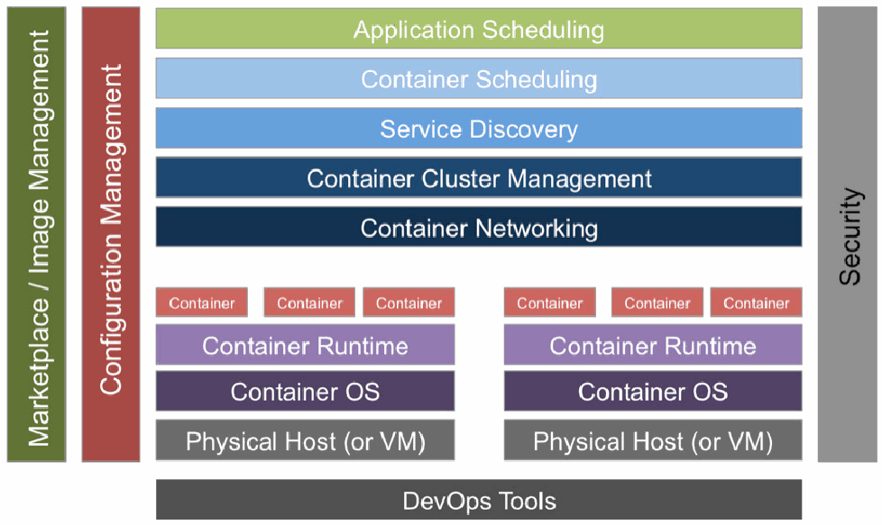
図32：コンテナ技術スタック。左の横断機能は市場・イメージ管理と構成管理、右側はセキュリティ。中央の共通層は上からアプリケーションスケジューリング、コンテナスケジューリング、サービス検出、コンテナクラスター管理、コンテナネットワーキング。下部には複数のコンテナ、2組のコンテナランタイム、コンテナOS、物理ホスト（またはVM）を配置し、最下段にDevOpsツールを示す。
Application Scheduling
アプリケーションスケジューリング
未レビュー訳Container Scheduling
コンテナスケジューリング
未レビュー訳Service Discovery
サービス検出
未レビュー訳Container Cluster Management
コンテナクラスター管理
未レビュー訳Container Networking
コンテナネットワーキング
未レビュー訳.g;;;,;;;
セキュリティ
未レビュー訳Container Runtime
コンテナランタイム
未レビュー訳Container Runtime
コンテナランタイム
未レビュー訳Container OS
コンテナOS
未レビュー訳Container OS
コンテナOS
未レビュー訳Physical Host (or VM)
物理ホスト（またはVM）
未レビュー訳Physical Host (or VM)
物理ホスト（またはVM）
未レビュー訳DevOps Tools
DevOpsツール
未レビュー訳Figure 32: Container Technology Stack
図32：コンテナ技術スタック
未レビュー訳ITL CYBERSECURITY PROGRAM AND PROJECTS | FY 2017
ITLサイバーセキュリティプログラムおよびプロジェクト｜2017年度
未レビュー訳the OS component (shown as Container OS in Figure capabilities. Cyber threat information includes 32) and because of their ubiquitous usage in container indicators (i.e., artifacts or observable events that deployments, NISTIR 8176 focused on Linux OS- suggest that an attack is imminent, that an attack is based environments. This decision enabled detailed underway, or that a compromise may have already security assurance requirements to be defned. occurred); information about the tactics, techniques, Furthermore, the team recognized that there are and procedures (TTPs) of actors; recommended multiple hypervisor products for server virtualization courses of action; and other information that is used to in current infrastructures. This observation led the characterize threats. Because threat actors often use team to modify previous security recommendations to the same TTPs against multiple targets, exchanging improve countermeasures against potential threats to cyber threat information allows organizations to the hypervisor. These countermeasures are agnostic leverage the collective knowledge, experience, and to any specifc architecture of the hypervisor platform. analysis capabilities of their peers, thereby increasing The modifed recommendations were published the overall awareness and security of an entire for public comment in the second draft of SP 800- sharing community. Through the exchange of cyber 125A, Security Recommendations for Hypervisor threat information, organizations can gain a more Deployment (see https://csrc.nist.gov/publications/ complete understanding of their threat environment
Container OSとして図32に示されるOSコンポーネントと、コンテナ配備で広く使われていることを踏まえ、NISTIR 8176はLinux OSベースの環境に重点を置いた。この判断により詳細なセキュリティ保証要件を定義できた。さらに、現行インフラでのサーバー仮想化には複数のハイパーバイザー製品があると認識した。これを受けて、ハイパーバイザーへの潜在的脅威に対する対策を改善するため、従来のセキュリティ推奨事項を修正した。これらの対策は特定のハイパーバイザープラットフォームのアーキテクチャに依存しない。改訂した推奨事項はSP 800-125A第2次草案『Security Recommendations for Hypervisor Deployment』（参照：https://csrc.nist.gov/publications/／対応能力。サイバー脅威情報には、攻撃が差し迫っている、進行中である、または侵害が既に発生した可能性を示す指標（痕跡や観測可能な事象）が含まれる。脅威主体の戦術・技法・手順（TTP）に関する情報、推奨される対応策、脅威を特性化するその他の情報も含まれる。脅威主体は複数の標的に同じTTPを使うことが多いため、情報交換によって組織は同業者の知識・経験・分析能力を活用し、共有コミュニティ全体の状況認識とセキュリティを高められる。脅威情報の交換により、組織は脅威環境をより包括的に理解できるのは、
未レビュー訳by correlating their observations with those of others.
自らの観察結果を他者の観察結果と照合することによる。
未レビュー訳detail/sp/800-125a/draft).
detail/sp/800-125a/draft）。
未レビュー訳NIST contributed signifcant material that led CSD has established a cyber threat information-to the creation of ISO/IEC Committee Draft 21878, sharing initiative, which is focused on providing Security Guidelines for Design and Implementation guidance on how an organization can establish of Virtualized Servers, in April 2017. The draft was co- information sharing and coordination capabilities edited by a CSD computer scientist and drew from that enhance or augment their existing cybersecurity information in seven NIST conference papers and practices. The guidance covers threat-informed four technical publications regarding security for the detection, protection and response capabilities; data
2017年4月、NISTはISO/IEC委員会草案21878「Security Guidelines for Design and Implementation of Virtualized Servers」の策定に大きく貢献した。この草案はCSDのコンピューター科学者が共同編集し、NIST会議論文7編から得た情報と、／CSDはサイバー脅威情報共有の取り組みを設立し、組織が既存のサイバーセキュリティ対策を強化・補完するための情報共有・調整能力を確立する方法について指針を提供している。この指針は、脅威情報に基づく検知、保護、対応能力と、データの
未レビュー訳privacy and sensitivity; data collection and retention
プライバシーおよび機微性、データの収集・保持
未レビュー訳virtualized infrastructure.
仮想化基盤のセキュリティに関する技術刊行物4編の情報を活用した。
未レビュー訳practices; the use of open standards for information
情報交換におけるオープン標準の利用、
未レビュー訳NIST recognizes that application container
NISTは、アプリケーションコンテナ技術が
未レビュー訳exchange; de-identifcation and anonymization;
情報の非識別化および匿名化、
未レビュー訳technology is being increasingly used to develop
マイクロサービス型アーキテクチャによる
未レビュー訳and guidance on how an organization can establish,
指針は、組織が
未レビュー訳applications with microservices-based architectures.
アプリケーションの開発にますます使われていると認識している。
未レビュー訳participate in, and maintain coordination and
調整と情報共有の関係を確立し、参加し、維持する方法を示す。
未レビュー訳In FY 2018, this project plans to focus on security issues
2018年度、このプロジェクトは、
未レビュー訳information-sharing relationships. The guidance will
この指針は、
未レビュー訳arising from technology components involved in that
このアーキテクチャに含まれる技術コンポーネントに起因するセキュリティ課題に
未レビュー訳help incident responders, network defenders, and
インシデント対応者、ネットワーク防御担当者、
未レビュー訳architecture. Developments in virtual networking
焦点を当てる予定である。仮想ネットワーキング
未レビュー訳operations personnel consider what information is
運用担当者が、どの情報を
未レビュー訳and virtual storage technologies will be monitored
および仮想ストレージ技術の進展を監視し、
未レビュー訳sharable, the circumstances under which sharing is
共有できるか、どのような状況で共有が許可されるか、
未レビュー訳to update our security recommendations for secure
これらの技術を安全に導入するための推奨事項を
未レビュー訳allowed, with whom the information may be shared,
誰と情報を共有できるか、
未レビュー訳deployment of these technologies.
更新する。
未レビュー訳and how the information should be protected.
また、情報をどのように保護すべきかを検討する助けとなる。
未レビュー訳CONTACT:
連絡先：
未レビュー訳In October 2016, CSD published SP 800-150, Guide
2016年10月、CSDはSP 800-150『Guide
未レビュー訳Dr. Ramaswamy Chandramouli
Ramaswamy Chandramouli博士
未レビュー訳to Cyber Threat Information Sharing. This publication
to Cyber Threat Information Sharing』を刊行した。この刊行物は、
未レビュー訳(301) 975-5013
(301) 975-5013
未レビュー訳helps organizations prepare for an exchange of
組織がサイバー脅威情報の交換に備えることを支援する。
未レビュー訳mouli@nist.gov
mouli@nist.gov
未レビュー訳cyber threat information, both consuming cyber threat information from external sources and producing information for other organizations to
サイバー脅威情報を外部ソースから受け取ることと、他の組織が利用する情報を作成して提供することの両方を含む。
未レビュー訳Cyber Threat Information Sharing
サイバー脅威情報の共有
未レビュー訳use. Organizations may have diferent capabilities for detecting threats, responding to attacks, diagnosing
組織によって、脅威を検知し、攻撃に対応し、原因を診断する能力は異なる。
未レビュー訳As cyber attacks increase in both sophistication
サイバー攻撃の高度化と頻度の増加を受け、
未レビュー訳causes, and handling sensitive incident-related
また、インシデント関連の機微情報を扱う能力も異なる場合があるが、
未レビュー訳and frequency, it is important to collect and analyze
様々な内部・外部ソースからサイバー脅威情報を収集・分析し、
未レビュー訳information, but this guidance is intended to help
しかし、この指針は、
未レビュー訳cyber threat information from a variety of internal
それを活用することが重要である。
未レビュー訳organizations collaborate and exchange cyber threat
組織が協力し、サイバー脅威
未レビュー訳and external sources, and use it to develop, enhance,
先制的で脅威情報に基づくサイバー防御を開発・強化し、
未レビュー訳information despite these organizational diferences.
情報を交換できるよう支援することを目的とする。組織間に違いがあっても、
未レビュー訳and deploy proactive, threat-informed, cyber defense
これを導入する。
未レビュー訳NIST/ITL CYBERSECURITY PROGRAM ANNUAL REPORT 2017
NIST/ITLサイバーセキュリティプログラム年次報告書 2017
未レビュー訳In May 2017, NIST conducted a Threat Intelligence • Law Enforcement, Working Session as part of the Cybersecurity
2017年5月、NISTはサイバーセキュリティ・フレームワーク・ワークショップの一環として脅威インテリジェンス作業セッションを開催した。／法執行機関、
未レビュー訳•Fusion Centers, and
•フュージョンセンター、ならびに
未レビュー訳Framework Workshop. The working session provided an opportunity for attendees to provide comments on
この作業セッションは、参加者がフレームワークにおけるサイバー脅威インテリジェンスの利用について意見を述べ、
未レビュー訳•Sector Coordinating Councils.
•セクター調整評議会。
未レビュー訳the use of cyber threat intelligence in the Framework, to help shape future enhancements to the Framework, CONTACTS: and to share experiences regarding the use of cyber
フレームワークの今後の改善に役立て、フレームワークにおける脅威インテリジェンス利用の経験を共有する機会となった。NISTは、ワークショップおよび／連絡先：
未レビュー訳Mr. Christopher Johnson Mr. Lee Badger
Christopher Johnson氏 Lee Badger氏
未レビュー訳threat intelligence in the Framework. NIST used the
脅威インテリジェンス利用に関する意見を、フレームワークの更新に
未レビュー訳(301) 975-3247
(301) 975-3247
未レビュー訳(301) 975-3176
(301) 975-3176
未レビュー訳feedback received during the workshop and the
公開レビューで得られたフィードバックを、
未レビュー訳christopher.johnson@nist.gov lee.badger@nist.gov
christopher.johnson@nist.gov lee.badger@nist.gov
未レビュー訳public review process as input when updating the Cybersecurity Framework Version 1.1 and its roadmap. Mr. David Waltermire
活用した。これらは、サイバーセキュリティ・フレームワークVersion 1.1とそのロードマップの改訂に反映された。／David Waltermire氏
未レビュー訳(301) 975-3390
(301) 975-3390
未レビュー訳Throughout the year, CSD engaged with
年間を通じて、CSDは
未レビュー訳david.waltermire@nist.gov
david.waltermire@nist.gov
未レビュー訳government, industry, and academia to research protocols, data models, and standards that enable
政府、産業界、学術界と協力し、サイバー脅威情報の共有を可能にするプロトコル、データモデル、標準を調査し、
未レビュー訳The Ontology of Authentication
認証のオントロジー
未レビュー訳cyber threat information sharing and support near real-time cybersecurity decision-making and security
ほぼリアルタイムのサイバーセキュリティに関する意思決定とセキュリティ
未レビュー訳Over the past 30 years, NIST recommendations
過去30年間にわたり、NISTの推奨事項には
未レビュー訳operations.
運用を支援する。
未レビュー訳have included the usage of passwords, biometrics,
パスワード、生体認証、認証用ハードウェアデバイス、企業向けの公開鍵基盤（PKI）ソリューションが含まれてきた。
未レビュー訳In FY 2018, CSD plans to continue to conduct authentication hardware devices, and Public research, prepare guidance, and take part in Key Infrastructure (PKI) solutions for enterprise standards development activities that foster greater authentication applications. Recently, CSD began interoperability and increase the operational tempo researching general authentication features. This through near real-time cyber threat information investigation was prompted by the general call to
2018年度、CSDは調査を継続し、指針を作成し、標準策定活動に参加する予定である。これらの活動により相互運用性を高め、ほぼリアルタイムのサイバー脅威情報共有を通じて対応の迅速化を図る。例として、／認証アプリケーションも挙げられる。最近、CSDは一般的な認証機能の調査を始めた。この調査のきっかけは、
未レビュー訳move away from passwords toward the growing
パスワードを離れ、
未レビュー訳sharing, including:
脅威情報共有には、次の活動が含まれる。
未レビュー訳number of alternative authentication methods (e.g.,
増加する代替認証方式（例：生体認証、スマートカードなど）へ移行する一般的な動きである。
未レビュー訳•Expressing cyber threat information using biometrics, smart cards, etc.). A notional ontology machine-readable formats, of authentication is in development that includes a detailed taxonomy and an assessment approach to
•サイバー脅威情報を機械可読形式で表現する。／認証オントロジーの概念モデルを作成中であり、詳細な分類体系と評価方法を含める。
未レビュー訳•Developing automated mechanisms for aid in defnitively comparing alternatives. exchanging cyber threat information, As the research matures, it is possible to draft
•サイバー脅威情報を交換するための自動化機構を開発する。／この研究が進めば、評価対象を明確に比較する方法を整え、
未レビュー訳•Describing automated courses of action, a concept map (see Figure 33) to highlight key
•自動化された対応措置を記述する。／主要な構成要素を示す概念図（図33参照）を作成できる。
未レビュー訳•Publishing cyber threat information metadata, components. There are many intertwining aspects of authentication, such as the relationships with Identity and Management and Authorization. As more of the
•サイバー脅威情報のメタデータを公開する。／認証には、アイデンティティ管理や認可との関係など、相互に関連する多くの側面がある。認証の側面がさらに特定・定義されれば、
未レビュー訳•Safeguarding cyber threat information. aspects of authentication are identifed and defned, better development and use of authentication is NIST will also help foster cyber threat information expected.
•サイバー脅威情報を保護する。NISTは、／認証のより良い開発と利用が期待される。
未レビュー訳sharing by supporting information-sharing initiatives by public and private-sector organizations, including: The structure of the authentication taxonomy
NISTは、公的・民間組織の情報共有イニシアチブを支援し、サイバー脅威情報の共有も促進する。対象には次の組織が含まれる。／認証分類体系の構造は、
未レビュー訳(see Figure 34) to encapsulate current and emerging
現行および新たな仕組みを包含する（図34参照）よう、
未レビュー訳•Information Sharing and Analysis Centers mechanisms continues to be refned as recent updates (ISACs), expand the diversity of mechanisms. The taxonomy includes entity authentication as a wide assortment of
•情報共有・分析センター（ISAC）。／この分類体系では、エンティティ認証に多種多様な
未レビュー訳•Information Sharing and Analysis commonly used human-machine, machine-machine, Organizations (ISAOs), and human-human methods, all of which are termed
•情報共有・分析組織（ISAO）。／一般的に使われる人と機械、機械同士、人同士の方式を含み、これらはすべて
未レビュー訳•Federal/State/Local agencies, confrmation. Attestation is the term used for afrming expectations of objects.
•連邦、州、地方の機関。／confirmation（確認）と呼ばれる。Attestation（証明）は、オブジェクトが期待どおりであることを保証する用語である。
未レビュー訳ITL CYBERSECURITY PROGRAM AND PROJECTS | FY 2017
ITLサイバーセキュリティプログラムおよびプロジェクト｜2017年度
未レビュー訳原文のみ
原文のみ
..
原文のみ
原文のみ
原文のみ
..,
原文のみ
原文のみ
原文のみ
....~.
原文のみ
Hi\1111:
原文のみ
HH-
原文のみ
原文のみ
ii+
原文のみ
• - ...
原文のみ
&M+
原文のみ
原文のみ
原文のみ
lib-
原文のみ
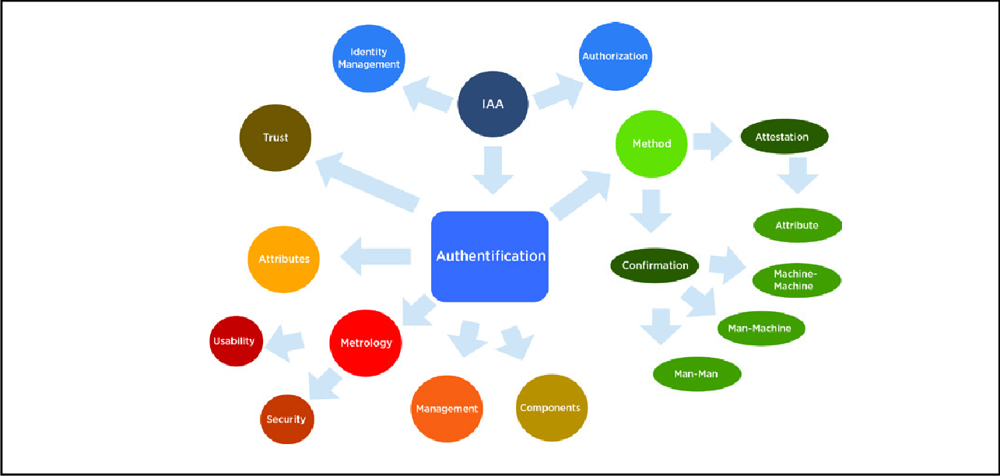
図33：認証の概念図（草案）。中央の認証に、識別・認証・認可（IAA）、アイデンティティ管理、認可、信頼、属性、方式、確認、アテステーションが関係する。確認から機械間、人・機械間、人間同士の方式へ分岐する。認証の周囲にはユーザビリティ、計量学、セキュリティ、管理、コンポーネントが配置される。矢印は各概念の関係を示す。
Identity Management
アイデンティティ管理
未レビュー訳Authorization
認可
未レビュー訳IAA
識別・認証・認可（IAA）
未レビュー訳Trust
信頼
未レビュー訳Method
方式
未レビュー訳Attestation
アテステーション（証明）
未レビュー訳Attributes
属性
未レビュー訳Authentication
認証
未レビュー訳Confirmation
確認
未レビュー訳Machine-Machine
機械間
未レビュー訳Man-Machine
人・機械間
未レビュー訳Man-Man
人間同士
未レビュー訳Usability
ユーザビリティ
未レビュー訳Metrology
計量学
未レビュー訳Security
セキュリティ
未レビュー訳Management
管理
未レビュー訳Components
コンポーネント
未レビュー訳Figure 33: Draft Authentication Concept Map
図33：認証の概念図（草案）
未レビュー訳The notional authentication ontology attempts may overlap or impact the others. Security and to defne an assessment framework that is useful for usability are of special interest; while usability is often better understanding, comparing, and determining thought of as a tradeof to security, both must be the appropriateness of authentication technologies satisfed for the user to support the security of the to a specifc use-case. The assessment framework system. To state the issue another way, there appears separates attributes into security, usability, to be a relation between how much we must ask of the deployability, and manageability categories (see operator and how willing the operator is to support Figure 35). It is important to note that each category security rather than (mis)manage it.
認証の概念オントロジーは、特定のユースケースに適した認証技術をよりよく理解・比較し、その妥当性を判断するための評価枠組みを定義しようとする。評価枠組みは属性をセキュリティ、ユーザビリティ、導入可能性、管理容易性のカテゴリに分ける（図35参照）。各カテゴリは、／相互に重複したり、他のカテゴリに影響したりする場合がある。特にセキュリティとユーザビリティが重要である。ユーザビリティはセキュリティとのトレードオフと見なされがちだが、システムの安全性を保つには両方が満たされなければならない。別の言い方をすれば、運用者にどれほどの負担を求めるかと、運用者がセキュリティを支援する意欲を持つか、あるいは（誤って）管理するかとの間に関係がある。
未レビュー訳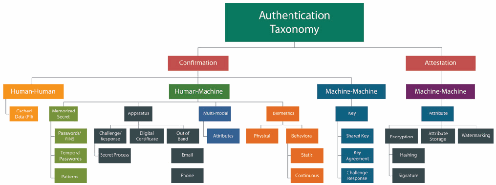
図34：認証分類体系（草案）。最上位に認証分類体系があり、確認とアテステーションの二系統に分かれる。確認の下には人間同士、人・機械間、機械間の方式を配置し、人間同士はキャッシュデータ（個人情報）と記憶した秘密（パスワード／PIN、一時パスワード、パターン）、人・機械間は装置（チャレンジ／レスポンス、秘密の手順、デジタル証明書、アウトオブバンド、電子メール、電話）、マルチモーダル（属性）、生体認証（身体的・行動的特徴、静的・継続的）に分かれる。確認の機械間方式は鍵（共有鍵、鍵合意、チャレンジ応答）を使う。アテステーションの下の機械間方式は属性に基づき、暗号化、属性保存、電子透かし、ハッシュ化、署名に分かれる。
Authentication Taxonomy
認証分類体系
未レビュー訳Confirmation; Attestation
確認（Confirmation）；アテステーション（Attestation）
未レビュー訳Human-Human; Human-Machine; Machine-Machine; Machine-Machine
人間同士；人・機械間；機械間（確認）；機械間（アテステーション）
未レビュー訳Cached Data (PII); Memorized Secret; Passwords/PINs; Temporal Passwords; Patterns
キャッシュデータ（個人情報）；記憶した秘密；パスワード／PIN；一時パスワード；パターン
未レビュー訳Apparatus; Challenge/Response; Secret Process; Digital Certificate; Out of Band; Email; Phone
装置；チャレンジ／レスポンス；秘密の手順；デジタル証明書；アウトオブバンド；電子メール；電話
未レビュー訳Multi-modal; Attributes
マルチモーダル；属性
未レビュー訳Biometrics; Physical; Behavioral; Static; Continuous
生体認証；身体的特徴；行動的特徴；静的；継続的
未レビュー訳Key; Shared Key; Key Agreement; Challenge Response
鍵；共有鍵；鍵合意；チャレンジ応答
未レビュー訳Attribute; Encryption; Attribute Storage; Watermarking; Hashing; Signature
属性；暗号化；属性保存；電子透かし；ハッシュ化；署名
未レビュー訳Figure 34: Draft Authentication Taxonomy
図34：認証分類体系（草案）
未レビュー訳NIST/ITL CYBERSECURITY PROGRAM ANNUAL REPORT 2017
NIST/ITLサイバーセキュリティプログラム年次報告書 2017
未レビュー訳Cognitive-based Approach to System Security Assessment (CASSA)
システム・セキュリティの認知アプローチに基づく評価（CASSA）
未レビュー訳The increase in information systems’ complexity,
情報システムの複雑性が増し、
未レビュー訳Deployability
配備可能性
未レビュー訳due to the aggregation of broader-spectrum services and functionality within one system, challenges securityprofessionals thatarerequiredtoplan,analyze, design, implement and maintain systems compliant to various regulatory requirements supported by diverse
幅広いサービスや機能を単一システムに集約することは、複数の規制要件に準拠するシステムを計画・分析・設計・実装・保守する必要があるセキュリティ担当者にとって課題となる。こうした要件は、多様な
未レビュー訳Usability Manageability
ユーザビリティ 管理容易性
未レビュー訳setsofsecuritycontrols,processesandprocedures.For example, Veteran Afairs’ hospital systems are often required to meet FISMA, Payment Card Industry (PCI) and Health Insurance Portability and Accountability
セキュリティ管理策、プロセス、手順によって支えられる。例えば退役軍人省の病院システムでは、FISMA、Payment Card Industry（PCI）、Health Insurance Portability and Accountability
未レビュー訳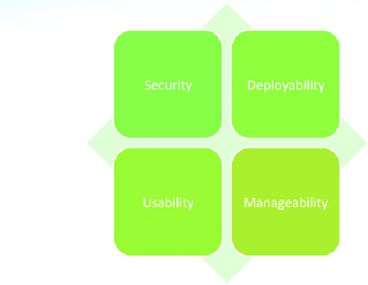
図35：認証の適合性評価枠組み。中央の2×2配置は左上がセキュリティ、右上が配備可能性、左下がユーザビリティ、右下が管理容易性。四区画の外側に上下左右へ向く矢印がある。
Security
セキュリティ
未レビュー訳Figure 35: Suitability Framework for Authentication Act (HIPAA) requirements simultaneously. Assessing
図35：認証の適合性評価枠組み／法（HIPAA）の要件も同時に満たす必要がある。こうした複雑な
未レビュー訳and maintaining the security posture of such complex
情報システムのセキュリティ態勢を評価し維持するには、
未レビュー訳Specifc methods of assessment in these
これらのカテゴリに対する具体的な評価方法はまだ開発されておらず、
未レビュー訳information systems through manual procedures
情報システムを手作業で管理し、
未レビュー訳categories are not developed and are expected to
認証方式ごとに異なり、
未レビュー訳leveraging paper-driven approaches is colossal,
紙ベースの方法に頼ると、膨大な負担がかかり、
未レビュー訳be unique to each authentication mechanism and
環境にも依存すると見込まれる。評価枠組みには、
未レビュー訳inefcient, and often unreliable.
非効率で、信頼性も低いことが多い。
未レビュー訳dependent on the environment. The assessment framework also includes integration with the NIST is researching methodologies for enhancing programmatic categories of deployability and the security assessment and the near-real-time manageability. What is known is that these are unlikely monitoringofcomplexsystems.Theteamisleveraging to be reduced to a single value, but will have to be cognitive approaches to provide continuous feedback
配備可能性と管理容易性というプログラム上のカテゴリも統合される。これらのカテゴリを単一の値に集約することは難しく、／NISTは複雑なシステムのセキュリティ評価とほぼリアルタイム監視を強化する方法を研究している。チームは認知的アプローチを活用して継続的なフィードバックを
未レビュー訳by highlighting relevant threats, rendering security
関連する脅威を明らかにし、セキュリティ強化策を提示し、
未レビュー訳assessed across several independent constructs.
複数の独立した構成要素にわたって評価する必要がある。
未レビュー訳enhancements, or augmenting solutions to maintain/
または解決策を補強して、システムのセキュリティ態勢を維持・
未レビュー訳Future programmatic eforts will be focused
今後のプログラム活動では、
未レビュー訳increase systems’ security postures.
向上させる。
未レビュー訳toward a NISTIR to describe the research results, encourage further discussion with the community, During FY 2017, NIST completed a feasibility and provide recommendations for future standards assessment and created the project’s research plan, development eforts. The goal is to move toward identifying milestones and deliverables. In FY 2018 specifying independent strength requirements and subsequent years, the team will continue the rather than specifc implementation requirements. Cognitive-based Approach to Security Controls Upon completion of the NISTIR, work will begin on a Assessment (CASSA) by researching methods to: suitability matrix that will aid the user in determining
研究成果を記述するNISTIRを作成し、コミュニティでの議論を促し、今後の標準化活動への提言を示すことに重点を置く。目標は、特定の実装要件ではなく独立した強度要件を定めることである。NISTIR完成後、適合性マトリックスの作成に着手し、利用者が／2017年度、NISTは実現可能性評価を完了し、マイルストーンと成果物を特定する研究計画を作成した。2018年度以降、チームはCASSAを継続し、次の方法を研究する。
未レビュー訳•Identify the relationships between
•対象情報システムに実装された
未レビュー訳how best to apply and assess the assessment
評価枠組みをどう適用・評価するのが最適か判断するのに役立つ。導入可能性に関する懸念は
未レビュー訳implemented security and privacy controls for
セキュリティおよびプライバシー管理策の
未レビュー訳framework. Concerns as to the adoptability of
このアプローチを採用する際に対処する。さらに、
未レビュー訳a targeted information system;
相互関係を特定する。
未レビュー訳this approach will be addressed. Additional work to identify interdependencies among identity
アイデンティティ管理に関する
未レビュー訳•Analyze the implementation of the security
•セキュリティおよびプライバシー管理策の実装を分析し、
未レビュー訳management and authorization controls and
認可の管理策との相互依存性を特定し、
未レビュー訳and privacy controls, providing, as feedback,
フィードバックとして、
未レビュー訳requirements should aid in unifying the approach. As
これらの要件は評価アプローチの統一に役立つ。明確な評価方法が定義されれば、
未レビュー訳a rendered set of suggestions to enhance the
システムのセキュリティ態勢を高める提案一式を
未レビュー訳a clear assessment approach is defned, future identity
将来的にはアイデンティティ管理、
未レビュー訳security posture of the system;
生成する。
未レビュー訳management, authentication, and authorization process implementations can address vulnerabilities • Identify documented and undocumented
認証、認可のプロセス実装を通じて／文書化済みおよび未文書化の
未レビュー訳vulnerabilities relevant to the system;
対象システムに関係する脆弱性を特定する。
未レビュー訳of individual or combined solutions.
個別または組み合わせたソリューションの脆弱性に対処できる。
未レビュー訳•Identify the minimum-resistance penetration
•システムへの最小抵抗侵入経路を特定し、
未レビュー訳CONTACT:
連絡先：
未レビュー訳path into the system, providing, as feedback,
フィードバックとして、
未レビュー訳Dr. Kim Schafer
Kim Schafer博士
未レビュー訳rendered recommendations for mitigating the
リスクを軽減する推奨事項を生成して
未レビュー訳(301) 975-8375
(301) 975-8375
未レビュー訳risk; and
提示する。
未レビュー訳kim.schafer@nist.gov
kim.schafer@nist.gov
未レビュー訳ITL CYBERSECURITY PROGRAM AND PROJECTS | FY 2017
ITLサイバーセキュリティプログラムおよびプロジェクト｜2017年度
未レビュー訳•Perform continuous monitoring and analysis and a healthcare institution (with Health Insurance of the system, factoring in the above steps Portability and Accountability Act (HIPAA) requirements) that has credit card transactions while providing rendered suggestions for (with requirements specifed in the Payment Card system enhancements. Industry Data Security Standard (PCI DSS)). There is
•システムを継続的に監視・分析し、上記の手順を踏まえて改善案を提示する。／また、医療機関には医療保険の携行性と責任に関する法律（HIPAA）の要件が適用され、クレジットカード取引を扱う組織にはPayment Card Industry Data Security Standard（PCI DSS）の要件が課される。こうした
未レビュー訳CONTACTS:
連絡先：
未レビュー訳no shortage of requirements for some organizations
複数の規制枠組みに対応しなければならない組織は少なくない。
未レビュー訳Dr. Michaela Iorga
Michaela Iorga博士
未レビュー訳Dr. Dmitry Cousin
Dmitry Cousin博士
未レビュー訳that have multiple regulatory frameworks. Assessing
組織では、
未レビュー訳(301) 975-8431
(301) 975-8431
未レビュー訳(301) 975-5727
(301) 975-5727
未レビュー訳a plethora of security controls rooted on diferent
異なる標準に基づく多数のセキュリティ管理策を評価する必要がある。
未レビュー訳michaela.iorga@nist.gov dmitry.cousin@nist.gov standards with diferent formatting is a complex
michaela.iorga@nist.gov dmitry.cousin@nist.gov／標準によって書式も異なるため、複雑な
未レビュー訳process that is currently largely manual or leverages proprietary, specifcally customized approaches and
作業であり、現在も主に手作業で行われるか、独自にカスタマイズした手法や
未レビュー訳Open Security Controls Assessment
オープン・セキュリティ管理策評価
未レビュー訳tools.
ツールを利用している。
未レビュー訳Language (OSCAL)
言語（OSCAL）
未レビュー訳OSCAL attempts to standardize how
OSCALは、
未レビュー訳NIST is proposing the development of the Open security controls are represented, how a control Security Controls Assessment Language, or OSCAL, implementation for a given system is represented, a hierarchical, formatted, XML-based (and JSON and how that information is best used. It supports translation) schema that provides a standard for the generation of standardized reports that can be representing diferent categories of information used by both humans and machines. That means pertaining to the publication, implementation, and that formats are needed that can be generated by assessment of security controls.
NISTはOpen Security Controls Assessment Language（OSCAL）の開発を提案している。これは階層構造を持ち、書式化されたXMLベース（JSON翻訳も可能）のスキーマであり、セキュリティ管理策の公開、実装、評価に関する各種情報を表す標準を提供する。／セキュリティ管理策の表現方法、特定システムにおける管理策実装の表現方法、およびその情報の最適な利用方法を標準化しようとする。標準化レポートを生成し、人と機械の双方で利用できる。したがって、機械同士の通信に使える形式が必要となるが、
未レビュー訳machines for communicating with other machines, but can also be easily reformatted so that humans
機械同士の通信に使える形式として生成でき、さらに人が
未レビュー訳OSCAL is attempting to address a number of
OSCALは、セキュリティ管理策およびその評価をめぐる多くの
未レビュー訳can read the information. By standardizing the
情報を読めるよう簡単に再形式化できる。情報表現を標準化することで、
未レビュー訳challenges around security controls and security
セキュリティ管理策およびその評価に関する多くの課題に
未レビュー訳representation of this information, OSCAL information
OSCALの情報は
未レビュー訳controls assessment. The core challenge, and one
OSCALを作成した主な理由の一つである中心課題は、
未レビュー訳can be interoperable because of a well-defned
定義が明確な仕様により相互運用可能となる。
未レビュー訳of the primary reasons for creating OSCAL, is that
セキュリティ管理策やプロファイルのような概念は、
未レビュー訳specifcation with information that’s going to be used,
その仕様では、利用される情報、
未レビュー訳concepts like security controls and profles are
現在、主に独自仕様で
未レビュー訳imported, and subsquently used for security control
取り込まれ、以後のセキュリティ管理策
未レビュー訳represented today largely in proprietary ways. In
表現されている。多くの場合、
未レビュー訳assessments. The goal is to keep OSCAL as simple as
評価にも使われる。OSCALの目標は、できる限り単純に保ち、
未レビュー訳many cases they are written in prose documents that
散文形式の文書に記されているため、
未レビュー訳possible and provide extensive automation for tools
OSCALが利用するツールに幅広い自動化を提供することであり、
未レビュー訳are imprecise, lead to diferences in interpretation,
曖昧で解釈の違いを招き、
未レビュー訳it uses.
その実現を目指す。
未レビュー訳and are not machine-readable, meaning that the prose instructions require someone to do data entry During FY 2017, NIST focused on developing into a tool in order for the tool to use the information. the control catalog schema and the profle schema,
文章による指示は機械可読ではないため、ツールが情報を使えるよう、人がツールにデータを入力しなければならない。／2017年度、NISTは管理策カタログのスキーマとプロファイルスキーマの開発に注力し、
未レビュー訳focusing on addressing a large number of user stories
多数のユーザーストーリーへの対応を進めた。
未レビュー訳Organizations are also struggling with information
組織は、情報システムに関しても課題を抱えている。
未レビュー訳that describe features, attributes or characteristics.
機能、属性、特性を記述したユーザーストーリーに取り組んだ。
未レビュー訳systems that have many diferent components, and
構成要素が多様な情報システムもあり、
未レビュー訳The team validated the approach with use cases from
このアプローチは、次の規格に基づくユースケースで検証された。
未レビュー訳some components require the use of diferent profles
構成要素ごとに異なるプロファイルを必要とする場合がある。
未レビュー訳SP 800-53 Rev. 4, SP 800-53 Rev. 5 (draft), ISO/IEC
SP 800-53 Rev.4、SP 800-53 Rev.5（草案）、ISO/IEC
未レビュー訳per component, which is commonly the case with
これはクラウド環境でよく見られる。
未レビュー訳27001 and 27002, and COBIT 5.
27001および27002、ならびにCOBIT 5。
未レビュー訳cloud environments. Also, the cloud environments can be multitenant or have mixed ownership of In the next year, NIST will continue the components. We need to be able to assess the security development of the other schemas pertaining to the of these systems against a number of requirements, project (e.g., the framework schema, implementation owners, etc.—to do this simultaneously and provide schemaandSystemSecurityPlan(SSP)representation, these views to stakeholders.
クラウド環境には、マルチテナント型や、構成要素の所有者が混在する場合もある。これらのシステムのセキュリティを複数の要件や所有者に照らして同時に評価し、その見解を関係者に示す必要がある。／翌年度、NISTはこのプロジェクトに関する他のスキーマ（例：フレームワークスキーマ、実装スキーマ、システムセキュリティ計画（SSP）表現、
未レビュー訳assessment schema, etc.).
評価スキーマなど）の開発を継続する。
未レビュー訳In addition, there are situations where a single CONTACTS: system needs to support multiple regulatory
さらに、単一システムが複数の規制枠組みに対応する必要がある場合もある。／連絡先：
未レビュー訳Dr. Michaela Iorga
Michaela Iorga博士
未レビュー訳Mr. David Waltermire
David Waltermire氏
未レビュー訳frameworks. For example, the U.S. Department of
例えば、米国退役軍人省は連邦機関であり、
未レビュー訳(301) 975-8431
(301) 975-8431
未レビュー訳(301) 975-3390
(301) 975-3390
未レビュー訳Veterans Afairs is a federal agency (with Federal
連邦情報セキュリティ近代化法（FISMA）および
未レビュー訳michaela.iorga@nist.gov david.waltermire@nist.gov
michaela.iorga@nist.gov david.waltermire@nist.gov
未レビュー訳Information Security Modernization Act (FISMA) and NIST Cybersecurity Framework requirements)
NISTサイバーセキュリティ・フレームワークの要件を適用される。
未レビュー訳NIST/ITL CYBERSECURITY PROGRAM ANNUAL REPORT 2017
NIST/ITLサイバーセキュリティプログラム年次報告書 2017
未レビュー訳in a NIST SP 1800 series, a three-volume
NIST SP 1800シリーズに属する3巻構成の
未レビュー訳NATIONAL CYBERSECURITY
全米サイバーセキュリティ
未レビュー訳document that provides applicable guidance
文書であり、
未レビュー訳CENTER OF EXCELLENCE
センター・オブ・エクセレンス
未レビュー訳for executives, CISOs or IT directors, and IT staf.
経営幹部、CISO、IT責任者、IT担当者向けに実用的な指針を提供する。
未レビュー訳Types of Collaborators & Partnerships
協力者およびパートナーシップの種類
未レビュー訳The National Cybersecurity Center of Excellence (NCCoE), established in 2012 by NIST in partnership
2012年にNISTが設立したNational Cybersecurity Center of Excellence（NCCoE）は、
未レビュー訳Vendors, industry stakeholders, academic experts
ベンダー、産業界の関係者、学術専門家
未レビュー訳with the State of Maryland and Montgomery County,
メリーランド州およびモンゴメリー郡と連携し、
未レビュー訳and others participate in the center through a variety
その他の参加者が、以下に示すさまざまな協働手段を通じてセンターに参加する。
未レビュー訳Md., is a collaborative hub – convening experts from
産業界、学術界、政府から専門家を集め、サイバーセキュリティの重要課題に取り組む協働拠点である。
未レビュー訳of collaborative mechanisms as described below:
協働の仕組みは以下のとおり。
未レビュー訳industry, academia, and government to work on critical problems in cybersecurity. The NCCoE’s collaborations • Communities of Interest: A Community of
［左段］NCCoEの協働は、／［右段］関心コミュニティ（COI）：関心コミュニティは、
未レビュー訳Interest (COI) is a group of professionals and
専門家と
未レビュー訳focus on providing practical guidance to technical,
技術的かつ現実のサイバーセキュリティ課題に対する
未レビュー訳advisors that share business insights, technical
業務上の知見、技術的専門性、課題、視点を共有し、
未レビュー訳real-world cybersecurity challenges using standards-
実践的な指針を、標準に基づく
未レビュー訳expertise, challenges, and perspectives to
NCCoEのプロジェクトを導く助言者の集まりである。NCCoEは、
未レビュー訳based, commercially available technologies.
市販技術を用いて提供することに重点を置く。
未レビュー訳guide NCCoE projects. The NCCoE relies on
専門家やイノベーターとの強固な連携を通じ、現実のサイバーセキュリティ課題に対処し、
未レビュー訳Project Lifecycle
プロジェクトのライフサイクル
未レビュー訳this robust collaboration with experts and innovators to provide real-world cybersecurity
企業ニーズに対応する
未レビュー訳To help accelerate businesses’ adoption of
企業による
未レビュー訳challenges and inform the reference
標準ベースのサイバーセキュリティ統合の
未レビュー訳standards-based, secure technologies, the NCCoE
標準に基づく安全な技術の採用を加速するため、NCCoEは
未レビュー訳designs for standards-based cybersecurity
参照設計に
未レビュー訳works collaboratively with stakeholders to:
関係者と協力して次の活動を行う：
未レビュー訳integrations that address business needs.
知見を反映する。
未レビュー訳•Defne and articulate: The NCCoE works
•定義・明確化：NCCoEは、
未レビュー訳•Technology Collaborators: Vendors
•技術協力者：ベンダー
未レビュー訳with industry stakeholders, cybersecurity
産業界の関係者、サイバーセキュリティ
未レビュー訳who would like to participate in a center
センターのプロジェクトへの参加を希望する者は、
未レビュー訳professionals, academic experts, government
専門家、学術専門家、政府
未レビュー訳project reply to a Federal Register call for
Federal Register（連邦官報）での公募に応じる。
未レビュー訳agencies, and others to identify and defne
機関その他と協力して、
未レビュー訳participation. Vendors who are chosen to
参加に選ばれたベンダーは、
未レビュー訳pressing cybersecurity issues.
差し迫ったサイバーセキュリティ課題を特定し、明確化する。
未レビュー訳participate sign a CRADA and contribute their expertise, hardware, or software to the
CRADAに署名し、専門知識、ハードウェア、またはソフトウェアを
未レビュー訳•Organize and engage: The NCCoE then reference design for a specifc problem. collaborates with stakeholders to refne a project’s scope and develop detailed technical
•［左段］組織化・関与：NCCoEは次に、関係者と協力してプロジェクトの範囲を調整し、詳細な技術的／［右段］特定の問題に関する参照設計へ提供する。
未レビュー訳•National Cybersecurity Excellence
•全米サイバーセキュリティ・エクセレンス・パートナーシップ（NCEP）：NCCoEは、
未レビュー訳descriptions of the problem. The NCCoE also
問題を詳述する。NCCoEはさらに
未レビュー訳Partnership (NCEP): The NCCoE also works
NCEPプログラムを通じて技術ベンダーとも連携する。
未レビュー訳engages technology vendors via an open
技術ベンダーを募るため、
未レビュー訳with technology vendors via the NCEP
ベンダーは覚書（MOU）に署名し、
未レビュー訳call through the Federal Register, to build a
Federal Register（連邦官報）を通じた公開募集を行い、
未レビュー訳program, wherein vendors sign MOUs to
NCCoEとのより深いパートナーシップを築く。NCEPはハードウェア、
未レビュー訳potential example solution.
実例ソリューションの候補を作成する。
未レビュー訳establish a deeper partnership with the NCCoE. NCEPs can provide hardware,
ソフトウェア、知識、人員を提供できる。また、客員研究者をセンターに派遣し、現地または遠隔で活動させることもできる。
未レビュー訳•Implement and test: The NCCoE works with software, knowledge, personnel, and can technology vendors that have standards-designate guest researchers to work at the based, commercially available products center in person or remotely. The NCCoE that can be used as part of the example currently has 31 NCEPs, from Fortune implementation. These vendors sign a 50 market leaders to smaller companies Cooperative Research and Development specializing in IT security. Agreement (CRADA) and help build a reference design, identify gaps in the build; For more information on NCCoE Partnerships, see and refne the example implementation https://nccoe.nist.gov/partners. until there is a practical, usable, repeatable reference design that addresses the business SP 1800 Series: Practical Cybersecurity problem. Guidance
•［左段］実装・試験：NCCoEは、標準に基づく市販製品を持ち、実例実装で利用できる技術ベンダーと協力する。これらのベンダーは共同研究開発協定（CRADA）に署名し、参照設計の構築や実装上の不足の特定を支援する。さらに、事業課題に対処する実用的で使いやすく再現可能な参照設計が完成するまで、実例実装を改善する。／［右段］NCCoEは現在、Fortune 50企業の市場リーダーからITセキュリティを専門とする小規模企業まで、31のNCEPと協力している。パートナーシップの詳細は https://nccoe.nist.gov/partners を参照。SP 1800シリーズ：実践的なサイバーセキュリティ・ガイダンス
未レビュー訳•Publish and transfer: The NCCoE provides NCCoE projects result in a NIST Special Publication details of the reference design, standards (SP) 1800 document – a three-volume practice guide, mapping, lab implementation, and more which is a complement to NIST’s SP 800 series 96
•［左段］公開・移転：NCCoEは、参照設計、標準との対応付け、ラボでの実装などの詳細を提供する。／［右段］NCCoEのプロジェクト成果は、NIST特別刊行物（SP）1800文書となる。これは3巻構成の実践ガイドであり、NIST SP 800シリーズを補完する。
未レビュー訳ITL CYBERSECURITY PROGRAM AND PROJECTS | FY 2017
ITLサイバーセキュリティ・プログラムおよびプロジェクト｜2017会計年度
未レビュー訳documents. SP 1800 documents contain an Executive intentionally or otherwise, can expose a healthcare Summary for business executives, a second volume delivery organization to serious risks, including for security program managers that details security breaches of protected health information, loss or approaches and maps security capabilities to the NIST disruption of healthcare services, damage to an Cybersecurity Framework as well as other relevant organization’s reputation, productivity, and revenue, standards, and a third volume for the cybersecurity or even loss of life. implementation staf that details the steps needed
［左段］SP 1800文書には、企業幹部向けのエグゼクティブサマリー、セキュリティプログラム管理者向けの第2巻（セキュリティ手法を詳述し、セキュリティ能力をNISTサイバーセキュリティ・フレームワークおよび関連規格に対応付ける内容）、そしてサイバーセキュリティ実装担当者向け第3巻がある。同巻は、／［右段］意図的かどうかにかかわらず、医療提供組織を深刻な危険にさらす可能性がある。これには、保護対象の健康情報の漏えい、医療サービスの喪失・停止、組織の評判、生産性、収益への損害、さらには人命の喪失が含まれる。
未レビュー訳The NCCoE worked with a community-of-interest
NCCoEは、医療エコシステムのさまざまな関係者から成る関心コミュニティと協力し、
未レビュー訳for another entity to recreate the NCCoE’s example
別の組織がNCCoEの実例ソリューションを再現するために
未レビュー訳made up of various components of the healthcare
ワイヤレス輸液ポンプを安全に使用する際の課題を定義し、関連規格と
未レビュー訳solution.
必要な手順を詳述する。
未レビュー訳ecosystem to defne the challenge of using wireless
ベストプラクティスを特定して、代表的な参照
未レビュー訳In FY 2017, the center published seven practice infusion pumps securely, identify relevant standards guides (up from two in FY 2016 and three in FY 2015) and best practices, and create a representative that provide practical guidance, including a reference architecture. design and implementation details, on standards-
［左段］2017会計年度、センターは7つの実践ガイドを公開した（2016会計年度の2件、2015会計年度の3件から増加）。これらは、参照設計と実装の詳細を含む実用的な指針を、標準に基づく／［右段］アーキテクチャを作成した。
未レビュー訳The NCCoE then developed a lab implementation
次にNCCoEは、ラボでの実装を開発し、
未レビュー訳based secure technologies:
安全な技術について提供する：
未レビュー訳to demonstrate how healthcare delivery organizations
医療提供組織が、標準に基づく市販の
未レビュー訳1.SP 1800-3, Revision 2, Attribute Based can use standards-based, commercially available cybersecurity technologies and industry best Access Control; practices. Working with fve major infusion pump
1.［左段］1. SP 1800-3改訂2「属性ベースのアクセス制御」；／［右段］サイバーセキュリティ技術と業界のベストプラクティスを利用できることを実証した。さらに、主要な輸液ポンプメーカー5社と
未レビュー訳2.SP 1800-6, DNS-Based Email Security; manufacturers, which accounted for 85 % of the market in America, and innovative cybersecurity
2.［左段］2. SP 1800-6「DNSベースの電子メールセキュリティ」；／［右段］これらのメーカーは米国市場の85%を占める。また、革新的なサイバーセキュリティ技術ベンダーとも協力し、
未レビュー訳3.SP 1800-7, Situational Awareness for the technology vendors, the NCCoE helped highlight Electric Utilities; where security capabilities could be built into the pumps to strengthen the cybersecurity of the devices,
3.［左段］3. SP 1800-7「電力事業者の状況認識」；／［右段］ポンプに組み込めるセキュリティ機能を明らかにし、機器、
未レビュー訳4.SP 1800-8, Securing Wireless Infusion pump ecosystem, and healthcare enterprise. This has Pumps in Healthcare Delivery led to multiple pump manufacturers incorporating Organizations; security capabilities into the next generation versions
4.［左段］4. SP 1800-8「医療提供組織における無線輸液ポンプのセキュリティ確保」；／［右段］ポンプ・エコシステム、医療機関のサイバーセキュリティ強化につなげた。これにより、複数のポンプメーカーが次世代機に
未レビュー訳5.SP 1800-9, Managing Access Rights in the of their pumps. Financial Services Sector; Collaborating Across Government
5.［左段］5. SP 1800-9「金融サービス分野のアクセス権管理」；／［右段］セキュリティ機能を組み込むようになった。／政府機関間の連携
未レビュー訳6.SP 1800-11, Data Integrity: Recovering The NCCoE’s Work for Others (WFO) Program, from Ransomware and Other Destructive governed by the NCCoE’s Program Management Events; and Ofce (PMO), facilitates the engagement of other
6.［左段］6. SP 1800-11「データ完全性：ランサムウェアその他の破壊的事象からの復旧」；および／［右段］NCCoEのWork for Others（WFO）プログラムは、同センターのプログラム管理室（PMO）が管理し、他機関が
未レビュー訳7.SP 1800-12, Derived Personal Identity agencies with NIST’s National Cybersecurity Federally Verifcation (PIV) Credentials. Funded Research and Development Center (FFRDC). Since 2015, the WFO program has continuously grown
7.［左段］7. SP 1800-12「派生PIV（個人ID検証）資格情報」。／［右段］NISTの国立サイバーセキュリティ連邦資金研究開発センター（FFRDC）と連携するよう調整する。2015年以降、WFOプログラムは継続的に拡大し、
未レビュー訳For more information about NCCoE projects, visit
NCCoEのプロジェクトの詳細については、
未レビュー訳and currently has several interagency agreements
現在、複数の省庁間協定を締結している。
未レビュー訳https://nccoe.nist.gov/projects.
https://nccoe.nist.gov/projects
未レビュー訳in place, which support projects for the U.S. Coast Guard, the U.S. Department of Transportation, the U.S.
これらの協定は、米国沿岸警備隊、運輸省、米国
未レビュー訳Example: Impact of Guidance on Wireless Infusion
事例：無線輸液
未レビュー訳Air Force, and the Department of Homeland Security.
空軍、国土安全保障省のプロジェクトを支援する。
未レビュー訳Pumps
ポンプに関する指針の影響
未レビュー訳Medical devices like infusion pumps were once Example of Government Collaboration: U.S. Coast standalone instruments. Today, infusion pumps Guard and Sector CSF Profles connect wirelessly to a variety of healthcare systems,
［左段］輸液ポンプなどの医療機器は、かつて単独の装置だった。現在、輸液ポンプはさまざまな医療システム、／［右段］政府機関間協力の例：米国沿岸警備隊と業種別CSFプロファイル
未レビュー訳In early FY 2017, the U.S. Coast Guard (USCG) and
2017会計年度の初め、米国沿岸警備隊（USCG）と
未レビュー訳networks, and other devices. Connecting infusion
ネットワークや他の機器に無線接続している。輸液ポンプを
未レビュー訳industry representatives worked with NIST to develop
産業界の代表者はNISTと協力し、
未レビュー訳pumps to point-of-care medication systems and
ポイントオブケア投薬システムや
未レビュー訳the Maritime Bulk Liquids Transfer Cybersecurity
海上バルク液体輸送サイバーセキュリティ
未レビュー訳electronic health records can improve healthcare
電子健康記録に接続すれば、医療提供プロセスを改善できる。
未レビュー訳Framework (CSF) Profle. This profle template helps
フレームワーク（CSF）プロファイルを策定した。このプロファイル・テンプレートにより、
未レビュー訳delivery processes, but it also increases cybersecurity
しかし、運用や安全に影響するサイバーセキュリティリスクも増える。改ざんは
未レビュー訳organizations in the complex and sophisticated supply
複雑で高度な
未レビュー訳risks that could afect operations or safety. Tampering
無線輸液ポンプのエコシステムに及び、
未レビュー訳chain of the oil and natural gas industry assess and
石油・天然ガス産業のサプライチェーンに関わる組織は、サイバーセキュリティリスクを評価し、
未レビュー訳with the wireless infusion pump ecosystem, whether
無線輸液ポンプのエコシステムへの干渉は、
未レビュー訳monitor their cybersecurity risk (see https://www.dco.
サイバーセキュリティリスクを監視できる（参照URL：https://www.dco.
未レビュー訳NIST/ITL CYBERSECURITY PROGRAM ANNUAL REPORT 2017
NIST/ITLサイバーセキュリティ・プログラム年次報告書2017
未レビュー訳uscg.mil/Portals/9/CG-FAC/Documents/Maritime_ stakeholders to improve the resilience of the internet BLT_CSF.pdf?ver=2017-07-19-070544-223). Building and communications ecosystem and to encourage on the success of this CSF profle, the USCG asked for collaboration with the goal of dramatically reducing two more profles to be completed: Mobile Of-Shore threats perpetrated by automated and distributed
［左段］このCSFプロファイルの成功を受け、USCGはさらに2件のプロファイル策定を依頼した。／［右段］インターネットおよび通信エコシステムのレジリエンスを高め、自動化された分散型攻撃（例：ボットネット）による脅威を大幅に減らすため、関係者の協力を促す。」
未レビュー訳attacks (e.g., botnets).” The workshop was designed
このワークショップは、
未レビュー訳Drilling Units and Passenger Vessels.
モバイル海洋掘削ユニットおよび旅客船である。
未レビュー訳to allow stakeholders to explore a range of current
関係者が現行および新興の幅広いソリューションを検討し、
未レビュー訳The goal of these profles is to provide maritime
これらのプロファイルの目的は、海事サブセクターに
未レビュー訳and emerging solutions addressing automated,
自動化された分散型の脅威に対処できるよう
未レビュー訳sub-sectors with guidance for applying the CSF,
CSFを適用するための指針を提供し、
未レビュー訳distributed threats in an open and transparent
オープンかつ透明性のある形で開催された。
未レビュー訳leveraging the framework to create a sub-sector
この枠組みを活用して、
未レビュー訳manner. The workshop’s proceedings were detailed
ワークショップの議事録は、
未レビュー訳profle that individual companies can tailor and use to
各企業が自社向けに調整して利用できるサブセクター別プロファイルを作成し、
未レビュー訳in NISTIR 8192, published in FY 2017 (see https://csrc.
2017年度に公開されたNISTIR 8192に詳述されている（参照URL：https://csrc.
未レビュー訳prioritize resources and identify cybersecurity gaps.
サブセクターの資源を優先順位付けし、サイバーセキュリティ上の不足を特定する。
未レビュー訳nist.gov/publications/detail/nistir/8192/fnal). Beyond
nist.gov/publications/detail/nistir/8192/final）。NISTIR 8192に加えて、
未レビュー訳This project has helped showcase how the NCCoE
このプロジェクトは、NCCoEが
未レビュー訳NISTIR 8192, the workshop led to the launch of two
このワークショップから、2つの新しいNCCoEプロジェクトが始まった：
未レビュー訳can apply standards and best practices to real-world
標準とベストプラクティスを実際の
未レビュー訳new NCCoE projects: Mitigating IoT Based Automated
「IoTを基盤とする自動化された
未レビュー訳industry challenges to help companies more easily
業界課題に適用し、企業がより容易に
未レビュー訳Distributed Threats and TLS Server Certifcate
分散型脅威の緩和」および「TLSサーバー証明書の
未レビュー訳take advantage of existing guidance.
既存の指針を活用できることを示す一助となった。
未レビュー訳Management.
管理」。
未レビュー訳Workshops & Events
ワークショップとイベント
未レビュー訳Additionally, the regularly held NCCoE Speaker Series showcases thought leaders that highlight critical cybersecurity issues of national importance across various industries. The Speaker Series is jointly hosted by the NCCoE, Maryland Department of Commerce, and Montgomery County Department of Economic Development in collaboration with the Maryland Tech Council. This year, the NCCoE hosted four Speaker Series events, whose topics ranged from how small businesses can utilize the NIST CSF, to cybersecurity threats in the hospitality sector, to the psychology behind insider threats.
さらに、定期開催のNCCoEスピーカーシリーズでは、各業界における国として重要なサイバーセキュリティ課題を明らかにする有識者を紹介している。このシリーズは、メリーランド州商務局およびモンゴメリー郡経済開発局と協力し、NCCoEとメリーランド技術評議会（Maryland Tech Council）が共同で主催する。今年度、NCCoEは4回開催し、小規模事業者によるNIST CSFの活用、宿泊業界のサイバーセキュリティ脅威、内部者脅威の心理学などを取り上げた。
未レビュー訳The NCCoE also hosted multiple in-person workshops with its NCEP partners – in February at the RSA Conference and in September at Juniper Networks’ headquarters in Sunnyvale, CA.
NCCoEはNCEPパートナーと複数の対面ワークショップを開催した。2月にはRSA Conferenceで、9月にはカリフォルニア州サニーベールにあるJuniper Networks本社で行った。
未レビュー訳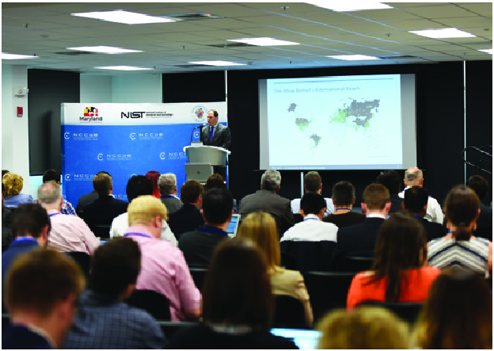
図36：インターネットおよび通信エコシステムのレジリエンス向上ワークショップの会場写真。講演者が登壇し、参加者が聴講している。背景パネルにはメリーランド州、NIST、NCCoEのロゴが見える。スクリーンには世界地図と小さな英語の見出しが投影されているが、詳細な文字は判読困難。
Figure 36: The Enhancing Resilience of the Internet
図36：インターネットおよび通信エコシステムのレジリエンス向上
未レビュー訳The workshops brought together dozens of top
これらのワークショップには、各パートナー組織から多数の一流の
未レビュー訳and Communications Ecosystem Workshop
ワークショップ
未レビュー訳cybersecurity experts from nearly all the partner organizations to discuss critical cybersecurity
サイバーセキュリティ専門家が集まり、重要な課題を議論した。
未レビュー訳Throughout FY 2017, the NCCoE hosted and
2017会計年度を通じて、NCCoEは多数のワークショップを主催し、また参加して、
未レビュー訳challenges, from identity to artifcial intelligence, that
課題はアイデンティティから人工知能に及び、
未レビュー訳participated in numerous workshops to defne, refne,
今日の企業が直面する技術的なサイバーセキュリティ課題を定義・具体化し、
未レビュー訳may beneft from NCCoE guidance.
NCCoEの指針が役立つ可能性がある。
未レビュー訳and provide guidance on technical cybersecurity challenges facing businesses today.
それらの課題に対する指針を提供した。
未レビュー訳Learn more about the NCCoE’s events at https:// nccoe.nist.gov/events.
NCCoEのイベントの詳細：https://nccoe.nist.gov/events
未レビュー訳For example, the NCCoE hosted NIST’s Workshop on “Enhancing Resilience of the Internet and
例えばNCCoEは、NISTのワークショップ「インターネットおよび
未レビュー訳Looking Ahead
今後の展望
未レビュー訳Communications Ecosystem,” which brought together over a hundred cybersecurity technologists, vendors, Building on the robust stakeholder engagement researchers, and subject matter experts. Executive seen in FY 2017, the NCCoE expects to accelerate the Order 13800, “Strengthening the Cybersecurity of number of projects undertaken in FY 2018, reinforcing Federal Networks and Critical Infrastructure,” required the importance of the Healthcare, Financial Services, the Secretaries of Commerce and Homeland Security and Energy industries as well as expanding work in to “jointly lead an open and transparent process identity and access management, the Internet of to identify and promote action by appropriate Things, and Internet infrastructure.
［左段］通信エコシステムのレジリエンス強化」を開催し、100人を超えるサイバーセキュリティ技術者、ベンダー、研究者、分野の専門家を集めた。大統領令13800「連邦ネットワークおよび重要インフラのサイバーセキュリティ強化」は、商務長官と国土安全保障長官に対し、「適切な関係者を特定し、その行動を促して、／［右段］2017会計年度に見られた関係者との強固な連携を基盤に、NCCoEは2018会計年度に実施するプロジェクト数を増やす見込みである。ヘルスケア、金融サービス、エネルギー各業界の重要性を改めて示すとともに、アイデンティティ・アクセス管理、モノのインターネット、インターネット基盤の取り組みも拡大する。
未レビュー訳ITL CYBERSECURITY PROGRAM AND PROJECTS | FY 2017
ITLサイバーセキュリティ・プログラムおよびプロジェクト｜2017会計年度
未レビュー訳Internet. The research focuses on the development
インターネットである。研究の焦点は、
未レビュー訳FOR MORE INFORMATION SEE:
詳細はこちら：
未レビュー訳of measurement and modeling techniques necessary
計測およびモデル化技法の開発にあり、これらは
未レビュー訳https://nccoe.nist.gov
https://nccoe.nist.gov
未レビュー訳to understand, predict, and control the behavior of
インターネット規模のネットワーク情報システムの挙動を
未レビュー訳CONTACTS:
連絡先：
未レビュー訳Internet-scale networked information systems. The ITL staf use these techniques to guide the design,
理解・予測・制御するために必要である。ITL職員はこれらの技法を用い、新技術の設計、
未レビュー訳Ms. Donna Dodson Mr. Tim Polk
Donna Dodson氏 Tim Polk氏
未レビュー訳analysis, and standardization of new technologies
分析および標準化を導き、
未レビュー訳(301) 975-3669
(301) 975-3669
未レビュー訳(301) 975-3348
(301) 975-3348
未レビュー訳aimed at improving the robustness of the Internet’s
インターネット中核インフラの堅牢性向上を目的とする。近年は、基盤となる複数の
未レビュー訳donna.dodson@nist.gov william.polk@nist.gov
donna.dodson@nist.gov william.polk@nist.gov
未レビュー訳core infrastructure. Recent eforts have focused on enhancing the security of several of the foundational
通信・ルーティングプロトコルのセキュリティ強化に注力しており、基盤となる対象は
未レビュー訳Mr. Tim McBride
Tim McBride氏
未レビュー訳Ms. KarenWaltermire
Karen Waltermire氏
未レビュー訳routing and communications protocols - the Internet’s
ルーティングおよび通信プロトコル、すなわちインターネットの
未レビュー訳(301) 975-0214
(301) 975-0214
未レビュー訳(301) 975-0221
(301) 975-0221
未レビュー訳timothy.mcbride@nist.gov karen.waltermire@nist.gov Domain Name System (DNS), Border Gateway
［左段］timothy.mcbride@nist.gov karen.waltermire@nist.gov／［右段］ドメインネームシステム（DNS）、ボーダーゲートウェイ
未レビュー訳Protocol (BGP), and Electronic mail (Email) and messaging infrastructures. In addition, the IIP program addresses other systemic vulnerabilities in core Internet technologies such as those that enable
プロトコル（BGP）、電子メール（Email）およびメッセージング基盤である。さらに、IIPプログラムは、
未レビュー訳INTERNET INFRASTRUCTURE
インターネット基盤
未レビュー訳massive scale Distributed Denial of Service (DDoS) attacks.
大規模な分散型サービス拒否（DDoS）攻撃を可能にするものなど、インターネット中核技術に存在する他の体系的な脆弱性にも取り組む。
未レビュー訳PROTECTION
の保護
未レビュー訳The Robust Inter-Domain Routing (RIDR) project aims to remedy serious security and robustness
Robust Inter-Domain Routing（RIDR）プロジェクトは、インターネットのグローバルなBGPルーティングシステムにある深刻なセキュリティ上および堅牢性上の
未レビュー訳ITL’s Internet Infrastructure Protection (IIP) vulnerabilities in the Internet’s global BGP routing program, led by the Advanced Network Technologies system. In FY 2017, the ITL staf, working with its Division (ANTD), works with industry to develop the Internet Engineering Task Force (IETF) partners, measurement science and new standards necessary completed the design and standardization of the to ensure the resilience and security of the global BGPsec Protocol Specifcation (RFC8205) and
［左段］ITLのインターネット基盤保護（IIP）プログラムは、高度ネットワーク技術部門（ANTD）が主導し、業界と協力して、グローバルインターネットのレジリエンスとセキュリティの確保に必要な計測科学と新しい標準を開発する。／［右段］脆弱性の解消を目指す。2017年度、ITL職員はIETFパートナーと協力し、BGPsecプロトコル仕様（RFC 8205）の設計と標準化を完了し、
未レビュー訳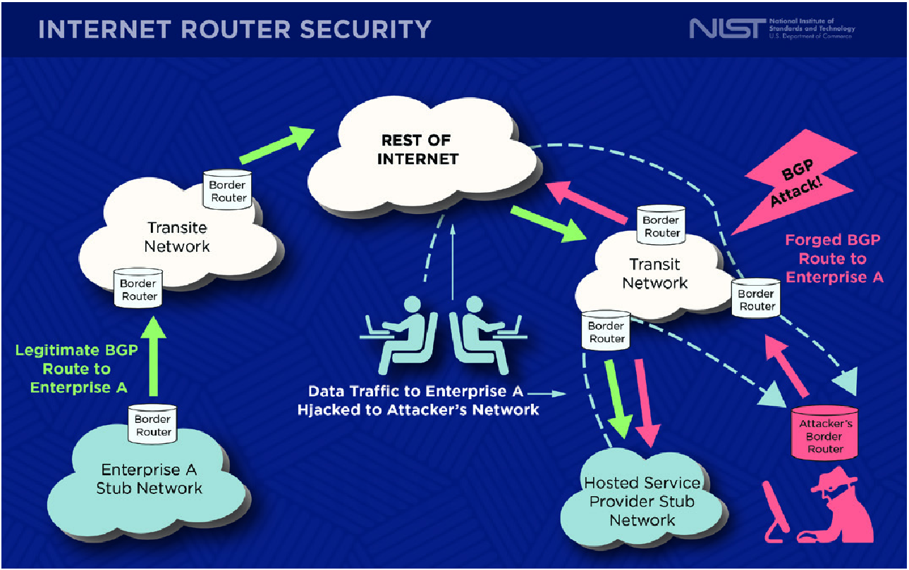
インターネットルーターのセキュリティ図。左側の緑色の正規BGP経路はEnterprise Aのスタブネットワークからトランジットネットワークを通り、インターネットのその他の領域へ進む。右側では攻撃者のボーダールーターがトランジットネットワークへ偽造BGP経路を注入し、Enterprise A宛てデータ通信を攻撃者のネットワークへハイジャックする。ホスティングサービスプロバイダーのスタブネットワークへの経路も示す。図中文字：インターネットルーターのセキュリティ、インターネットのその他の領域、トランジットネットワーク、ボーダールーター、Enterprise Aのスタブネットワーク、ホスティングサービスプロバイダーのスタブネットワーク、Enterprise A宛ての正規BGP経路、BGP攻撃、Enterprise A宛ての偽造BGP経路、Enterprise A宛てデータ通信を攻撃者のネットワークへハイジャック。
ROUTER SECURITY
ルーターのセキュリティ
未レビュー訳原文のみ
- Forged BGP
偽造BGP
未レビュー訳原文のみ
Route to ' Enterprise A .
Enterprise A宛ての経路
未レビュー訳' ' ' '
原文のみ
. ............
原文のみ
BGPt
BGP
未レビュー訳原文のみ
:., .
原文のみ
',
原文のみ
原文のみ
Legitimate
正規の
未レビュー訳原文のみ
Route to Enterprise A
Enterprise A宛てのルート
未レビュー訳Data Traffic to Enterprise A ---HJacked to Attacker 's Network
Enterprise A宛てのデータ通信が攻撃者のネットワークへハイジャックされる。
未レビュー訳NIST/ITL CYBERSECURITY PROGRAM ANNUAL REPORT 2017
NIST/ITLサイバーセキュリティ・プログラム年次報告書2017
未レビュー訳supporting specifcations. BGPsec provides the ability deployment. Figure 37 is a visualization generated by to use digital signatures to prevent both malicious one such monitoring tool that shows the current state and accidental unauthorized routing messages from of Route Origin Authorizations (ROAs) in the global efecting Internet global routing operations.
［左段］関連仕様も整備された。BGPsecはデジタル署名を使い、悪意によるものか偶発的なものかを問わず、不正な経路情報メッセージがインターネット全体のグローバルルーティング運用に影響するのを防ぐ。／［右段］導入も進めた。図37は、監視ツールの一つが生成した可視化であり、グローバルな
未レビュー訳Resource Public Key Infrastructure (RPKI). The RPKI has been designed to provide the trust infrastructure
リソース公開鍵基盤（RPKI）。RPKIは信頼インフラを提供するよう設計されており、
未レビュー訳RPKI/BGPSecの鍵形ロゴ。中央に「RPKI / BGPSec」、周囲に「頑健なドメイン間ルーティング」「ボーダーゲートウェイプロトコル」と記されている。
upon which Internet routing security technologies can be based.
インターネットのルーティングセキュリティ技術はこれを基盤にできる。
未レビュー訳In FY 2017, as BGPsec and RPKI technology specifcations and implementations matured, ITL shifted its eforts to focus on technology transition and operational issues associated with the new secure routing technologies. The ITL staf and its collaborators published research results on high-speed BGPsec implementations that attempt to
2017会計年度、BGPsecおよびRPKIの技術仕様と実装が成熟するにつれて、ITLは新しいセキュアなルーティング技術の技術移行と運用課題に取り組みを移した。ITL職員と協力者は、高速BGPsec実装に関する研究成果を公表した。それらは
未レビュー訳In addition to standards development, NIST minimize the operational performance impact of developed and released an open source reference routing security. Figure 38 illustrates a prototype implementation of emerging IETF BGPsec model for investigating and validating the emerging specifcations,on-linetesttoolstofostertheiradoption BGP security extensions and supporting protocols. and measurement systems to track their operational
［左段］標準策定に加え、NISTは新しいIETF BGPsec仕様のオープンソース参照実装を開発・公開した。これには仕様を調査・検証し導入を促すオンライン試験ツールと、運用状況を追跡する測定システムが含まれる。／［右段］ルーティングセキュリティが運用性能に及ぼす影響を最小限に抑えようとする。図38は、新しいBGPセキュリティ拡張と関連プロトコルを調査・検証する試作モデルを示す。
未レビュー訳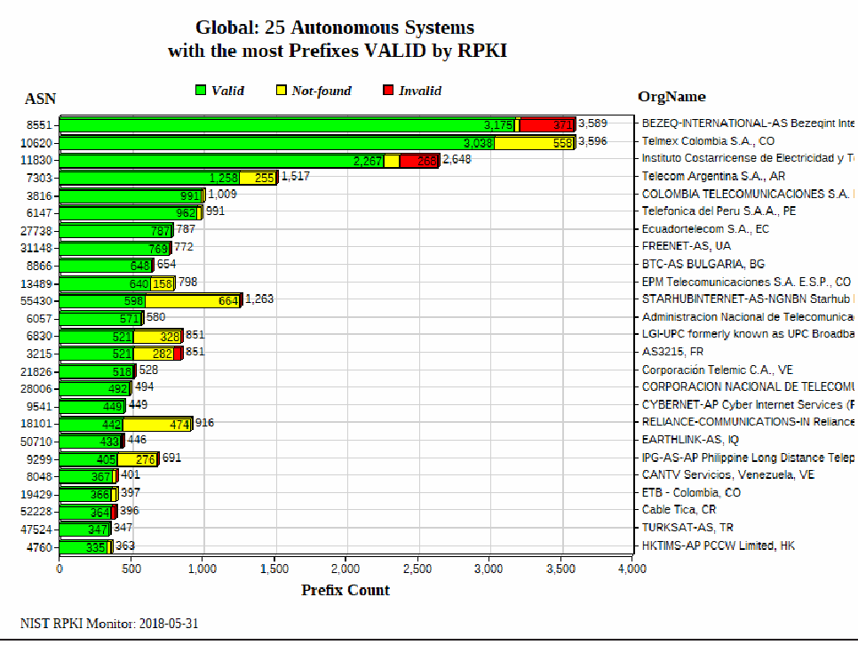
図37：RPKIにより有効と判定されたプレフィックス数が最も多い世界の25自律システムを示す横棒グラフ。凡例はValid（有効・緑）、Not-found（未検出・黄）、Invalid（無効・赤）。左にASN、右に組織名、横軸にプレフィックス数（0～4,000）を示す。データはNIST RPKI Monitorの2018-05-31時点。各行の数値・ASN・組織名は図のラベルを参照。
Global: 25 Autonomous Systems with the most Prefixes VALID by RPKI
グローバル：RPKIで有効と判定されるプレフィックス数が最多の25自律システム
未レビュー訳原文のみ
原文のみ
Valid D Not-fo w1d Invalid
有効（Valid） 未検出（Not-found） 無効（Invalid）
未レビュー訳OrgName
組織名
未レビュー訳AS 8551
ASN 8551
未レビュー訳3,589 BEZEQ--INTERNATIONAL-AS Bezeqint lntE
総プレフィックス数3,589：BEZEQ-INTERNATIONAL-AS（Bezeqint International）
未レビュー訳10620
ASN 10620
未レビュー訳TernexColo bia S.A.,CO
Telmex Colombia S.A.（CO）
未レビュー訳2 267
有効プレフィックス数2,267
未レビュー訳11830
ASN 11830
未レビュー訳lnstttuto Costarrioense de Electricidad y T,
Instituto Costarricense de Electricidad y T…（組織名は図の右端で途切れている）
未レビュー訳1258 255 -l,517
有効1,258、未検出255、合計1,517
未レビュー訳7303
ASN 7303
未レビュー訳Teleco mArgentina S.A.,AR
Telecom Argentina S.A.（AR）
未レビュー訳3816
ASN 3816
未レビュー訳COLOMBIATELECOMUNICAOIONES S.A.
COLOMBIA TELECOMUNICACIONES S.A.
未レビュー訳6147
ASN 6147
未レビュー訳Telefonica delPeru SAA. , PE
Telefónica del Perú S.A.A.（PE）
未レビュー訳27738
ASN 27738
未レビュー訳Eouac!ortelecom S.A., EC
Ecuadortelecom S.A.（EC）
未レビュー訳31148
ASN 31148
未レビュー訳FREENET-AS, UA
FREENET-AS（UA）
未レビュー訳8866
ASN 8866
未レビュー訳BTC-AS BULGARIA, BG
BTC-AS BULGARIA（BG）
未レビュー訳原文のみ
13489
ASN 13489
未レビュー訳EPMTelooornunicacion es S.A. E.S.P.,CO
EPM Telecomunicaciones S.A. E.S.P.（CO）
未レビュー訳55430
ASN 55430
未レビュー訳664 -l,263
未検出664、合計1,263
未レビュー訳STARHUBINTERNET-AS-SNGNBN Startiub
STARHUBINTERNET-AS-NGNBN（StarHub）
未レビュー訳6057 1-==;;;;;;;;~i,';;;~ -----=-=--"
ASN 6057：有効571、合計580
未レビュー訳Adrninistracion Nacional deTeleoornunica
Administración Nacional de Telecomunicaciones
未レビュー訳328 B5i
未検出328、合計851
未レビュー訳6830
ASN 6830
未レビュー訳LG'-'UPCformerly known as UPC Broadba
LGI-UPC（formerly known as UPC Broadba…）
未レビュー訳3215 521 282 -851
ASN 3215：有効521、未検出282、合計851
未レビュー訳AS3215, FR
AS3215（FR）
未レビュー訳21826
ASN 21826
未レビュー訳Corporaaion TelernicC.A.,VE
Corporación Telemic C.A.（VE）
未レビュー訳28006
ASN 28006
未レビュー訳CORPORACIONNACIONAL DETELECOMl
CORPORACION NACIONAL DE TELECOM…
未レビュー訳9541
ASN 9541
未レビュー訳CYBERNET-APCyber Internet Services (F
CYBERNET-AP Cyber Internet Services（F…）
未レビュー訳18101
ASN 18101
未レビュー訳474 '916
有効442、未検出474、合計916
未レビュー訳RELIANCE-COMMUNICATIONS-IN'Refia.nCE
RELIANCE-COMMUNICATIONS-IN Reliance…
未レビュー訳50710
ASN 50710
未レビュー訳EARTHLINK-AS, IQ
EARTHLINK-AS（IQ）
未レビュー訳9299
ASN 9299
未レビュー訳IPG-AS-A PP, pp·ne Long Distance Telep
IPG-AS-AP（Philippine Long Distance Telep…）
未レビュー訳原文のみ
8048
ASN 8048
未レビュー訳CANTV Servicios ,Venezuela ,VE
CANTV Servicios（Venezuela、VE）
未レビュー訳19429
ASN 19429
未レビュー訳ETB- Colombia,CO
ETB（Colombia、CO）
未レビュー訳52228
ASN 52228
未レビュー訳Cable Tica,CR
Cable Tica（CR）
未レビュー訳47524
ASN 47524
未レビュー訳TURKSAT-AS ,TR
TURKSAT-AS（TR）
未レビュー訳4760 l====="'===============================J
ASN 4760：有効335、合計363
未レビュー訳HKTIMS-AP PCCWl.Jirnited, HK
HKTIMS-AP PCCW Limited（HK）
未レビュー訳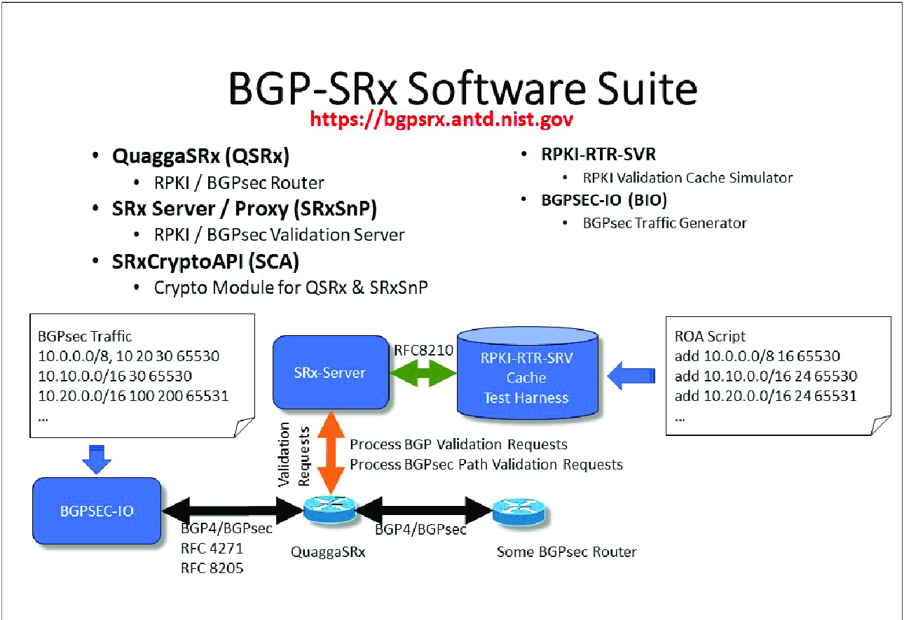
図38：NIST BGPsecプロトタイプと試験ツールの構成。上部にBGP-SRxソフトウェアスイートの構成要素、中央にSRx ServerとRPKI-RTR-SVR Cache Test Harness、下部にBGPSEC-IO、QuaggaSRx、BGPsecルーターを配置する。左のBGPsec Trafficと右のROA Scriptから経路情報とROAデータを入力し、RFC 8210で接続されたキャッシュが経路検証を支援する。SRx ServerがBGP検証要求とBGPsecパス検証要求を処理し、BGPSEC-IO、QuaggaSRx、BGPsecルーター間でBGP4/BGPsec通信を行う。例示されたプレフィックスは10.0.0.0/8、10.10.0.0/16、10.20.0.0/16。図中の略号・製品名は原図の表記を保持。
SoftwareSuite
BGP-SRxソフトウェアスイート
未レビュー訳https://bgpsrx.antd.nist.gov
https://bgpsrx.antd.nist.gov
未レビュー訳•RPKI-RTR-SVR
•RPKI-RTR-SVR
未レビュー訳•QuaggaSRx (QSRx)
•QuaggaSRx（QSRx）
未レビュー訳•RPKIValidation CacheSimulator
•RPKI検証キャッシュシミュレーター
未レビュー訳•RPKI/ BGPsecRouter
•RPKI/BGPsecルーター
未レビュー訳•BGPSEC-10 (BIO)
•BGPSEC-IO（BIO）
未レビュー訳•SRx Server/ Proxy (SRxSnP)
•SRxサーバー／プロキシ（SRxSnP）
未レビュー訳•BGPsecTrafficGene rator
•BGPsecトラフィック生成器
未レビュー訳•RPKI/ BGPsecValidation Server
•RPKI/BGPsec検証サーバー
未レビュー訳•SRxCryptoAPI (SCA)
•SRx暗号API（SCA）
未レビュー訳•Crypto Module for QSRx& SRxSnP
•QSRxおよびSRxSnP用暗号モジュール
未レビュー訳BGPsecTraffic
BGPsecトラフィック
未レビュー訳ROAScript
ROAスクリプト
未レビュー訳RFC8210
RFC 8210
未レビュー訳10.0.0.0/8 , 10 20 30 65530
10.0.0.0/8：10 20 30 65530
未レビュー訳add 10.0.0.0/8 16 65530
追加 10.0.0.0/8 16 65530
未レビュー訳RPKI-RTR-SRV
RPKI-RTR-SVR
未レビュー訳10.10.0.0/16 30 65530
10.10.0.0/16：30 65530
未レビュー訳add 10.10.0.0/ 16 24 65530
追加 10.10.0.0/16 24 65530
未レビュー訳Cache
キャッシュ
未レビュー訳10.20.0.0/16 100 200 65531
10.20.0.0/16：100 200 65531
未レビュー訳add 10.20.0.0/16 24 65531
追加 10.20.0.0/16 24 65531
未レビュー訳Test Harness
テストハーネス
未レビュー訳Process BGPValidation Requests Process BGPsecPath Validation Requests
BGP検証要求を処理／BGPsecパス検証要求を処理
未レビュー訳Some BGPsec Router
一部のBGPsecルーター
未レビュー訳RFC8205
RFC 8205
未レビュー訳Figure 38: NIST BGPsec prototypes and test tools
図38：NISTのBGPsecプロトタイプおよび試験ツール
未レビュー訳To further facilitate technology transition, a new NCCoE Secure Inter-Domain Routing (SIDR) project
技術移行をさらに促進するため、NCCoEの新たなSecure Inter-Domain Routing（SIDR）プロジェクト
未レビュー訳Robust Inter-Domain Routing Project
堅牢なドメイン間ルーティングプロジェクト
未レビュー訳was initiated with industry partners to conduct a
は産業界のパートナーと開始され、
未レビュー訳https://www.nist.gov/programs-projects/robust-in-
https://www.nist.gov/programs-projects/robust-in-
未レビュー訳proof-of-concept evaluation of the current state of
現在のセキュアルーティング技術の状況を
未レビュー訳ter-domain-routing
ter-domain-routing
未レビュー訳secure routing technologies in realistic deployment
現実的な導入環境で評価する概念実証を
未レビュー訳NCCoE Secure-Inter-Domain Routing Project
NCCoEセキュア・ドメイン間ルーティングプロジェクト
未レビュー訳settings.
環境で行う。
未レビュー訳https://nccoe.nist.gov/projects/building-blocks/se-
https://nccoe.nist.gov/projects/building-blocks/se-
未レビュー訳A second thrust of ITL’s RIDR project is addressing cure-inter-domain-routing the wide-spread problem of BGP “route leaks” – accidental routing policy violations that often result in CONTACTS: large-scale outages in global Internet routing. The ITL Mr. Doug Montgomery Dr. Kotikalapudi Sriram staf have lead the development of IETF specifcations (301) 975-3630
［左段］ITLのRIDRプロジェクトの2つ目の重点課題は、BGPの「経路漏えい」である。これは偶発的なルーティングポリシー違反であり、グローバルなインターネットルーティングで大規模障害を引き起こすことが多い。ITL職員は、この問題領域を定義するIETF仕様を主導してきた。／［右段］cure-inter-domain-routing 連絡先：Doug Montgomery氏（301）975-3630、Kotikalapudi Sriram博士
未レビュー訳(301) 975-3973
(301) 975-3973
未レビュー訳that defne the problem space (see RFC 7809, Problem dougm@nist.gov
［左段］（RFC 7809「BGP経路漏えいの問題定義と分類」を参照）／［右段］dougm@nist.gov
未レビュー訳ksriram@nist.gov
ksriram@nist.gov
未レビュー訳Defnition and Classifcation of BGP Route Leaks) and the corresponding proposed mitigation techniques.
および対応する緩和策の提案を策定した。
未レビュー訳FOR MORE INFORMATION:
詳細情報：
未レビュー訳NIST RPKI monitor https://rpki-monitor.antd.nist.gov/
NIST RPKIモニター：https://rpki-monitor.antd.nist.gov/
未レビュー訳NIST/ITL CYBERSECURITY PROGRAM ANNUAL REPORT 2017
NIST/ITLサイバーセキュリティ・プログラム年次報告書2017
未レビュー訳ADVANCED SECURITY TESTING acceptance, and adoption of security automation
［左段］先進的なセキュリティ試験／［右段］受容と、セキュリティ自動化ソリューションの導入を促し、
未レビュー訳solutions to address current and future security
現在および将来のセキュリティ課題への対応を支援する
未レビュー訳AND MEASUREMENTS
と測定
未レビュー訳challenges, creating opportunities for innovation.
イノベーションの機会を生み出す。
未レビュー訳Security Automation and Continuous Specifcation, Standards, and
［左段］セキュリティ自動化と継続的な／［右段］仕様・標準および
未レビュー訳Guidance Development
ガイダンスの策定
未レビュー訳Monitoring
監視
未レビュー訳IT organizations operate a diverse set of To support the overarching security automation computing assets that access, route, store, and vision, it is necessary to have specifcations that process information that is critical to the operations of describe the required interactions between systems, businesses and the missions of government agencies. standards that document international consensus These IT environments are under constant threat of approaches, and guidance for product developers and attack and are frequently undergoing change, with implementers. Through close work with partners in new and updated software being deployed along government, industry, and academia, CSD continues with updated confgurations. The wide variety of to facilitate the defnition and development of security computing products, the dynamic nature of software, automation approaches that enable organizations to the speed of confguration change, and the diversity understand and manage IT security risks. of threats require organizations to maintain situational
［左段］IT組織は、事業運営や政府機関の任務に不可欠な情報へアクセスし、経路制御、保存、処理を行う多様なコンピューティング資産を運用している。IT環境は常に攻撃の脅威にさらされ、更新ソフトウェアや構成変更が頻繁に行われる。製品の多様性、ソフトウェアの変化の速さ、構成変更の頻度、脅威の多様性を踏まえると、組織はIT資産の状況認識を維持し、／［右段］セキュリティ自動化という全体構想を支えるには、システム間の必要な相互作用を記述する仕様、国際的合意に基づく手法を文書化する標準、製品開発者と実装者向けのガイダンスが必要である。政府、産業界、学術界のパートナーと緊密に連携し、CSDは組織がITセキュリティリスクを理解・管理できる自動化手法の定義と開発を引き続き進めている。
未レビュー訳During FY 2017, CSD has continued to build on
2017会計年度には、CSDは
未レビュー訳awareness over their IT assets and to utilize this
IT資産の状態を把握し、この
未レビュー訳previous security automation work, as follows:
前年度までのセキュリティ自動化の取り組みを引き継ぎ、次の活動を行った：
未レビュー訳information to make informed risk-based decisions.
情報を活用し、リスクに基づく十分な判断を行う。
未レビュー訳•Identifed and addressed gaps in the current
•現行仕様の不足を特定し、対応した
未レビュー訳Security automation utilizes standardized data
セキュリティ自動化では、標準化されたデータ
未レビュー訳specifcations;
仕様の不足を特定し、対応した；
未レビュー訳formats and transport protocols to enable data to be exchanged between business, operational, and
形式と転送プロトコルを用い、事業、運用、
未レビュー訳•Evolved existing approaches to achieve
•既存の手法を進化させ、
未レビュー訳security systems that support security processes by:
セキュリティ各システム間でデータを交換し、次のセキュリティプロセスを支援する：
未レビュー訳greater scalability and impact;
拡張性と効果を高めた；
未レビュー訳•Identifying IT assets, including hardware,
•IT資産（ハードウェア、
未レビュー訳•Participated in working groups in standards
•標準化団体の作業部会に参加し、
未レビュー訳software, and data;
ソフトウェア、データを含む）を特定する；
未レビュー訳development organizations to promote international consensus around standardized
標準化されたアプローチに関する国際的合意を促進した；
未レビュー訳•Providing awareness over the operational approaches; state of computing devices;
•コンピューティングデバイスの運用状態を把握できるようにする；
未レビュー訳•Provided additional guidance on architectural,
•アーキテクチャ上の
未レビュー訳•Enabling security reference data to be design, and analysis concerns; and collected from internal and external sources; and
•［左段］セキュリティ参照データを社内外の情報源から収集できるようにする；／［右段］設計・分析上の課題について追加の指針を提供した；
未レビュー訳•Developed and maintained tools and reference implementations.
•ツールと参照実装を開発・維持した。
未レビュー訳•Supporting analysis processes that measure the efectiveness of security controls and CSDiscurrentlyworkingwithitspartnersinvarious provide visibility into security risks, enabling standards-development organizations, including risk-based decision making. ISO, IETF, the Organization for the Advancement of Structured Information Standards (OASIS), the Commercial solutions built using security Forum of Incident Response and Security Teams
•［左段］セキュリティ制御の有効性を測定し、セキュリティリスクを可視化して、リスクに基づく意思決定を可能にする分析プロセスを支援する。／［右段］CSDは現在、ISO、IETF、構造化情報標準促進機構（OASIS）、インシデント対応・セキュリティチームフォーラム（FIRST）など、さまざまな標準化団体のパートナーと協力しており、
未レビュー訳automation specifcations enable the collection and
セキュリティ自動化仕様を使って構築された商用ソリューションは、運用データと
未レビュー訳(FIRST), and the Trusted Computing Group (TCG), to
およびTrusted Computing Group（TCG）と連携し、
未レビュー訳harmonization of vast amounts of operational and
セキュリティデータの膨大な量を収集し、整合させ、
未レビュー訳further mature and broaden the adoption of security
セキュリティ自動化仕様、参照データ、
未レビュー訳security data into coherent, comparable information
一貫性があり比較可能な情報
未レビュー訳automation specifcations, reference data, and
および手法の採用をさらに広げ、成熟させる。
未レビュー訳streams to achieve situational awareness that allows
ストリームに変換する。これにより状況認識を実現し、
未レビュー訳techniques. This area of work is focused on evolving
この取り組みでは、セキュリティ自動化仕様を発展させ、
未レビュー訳the timely and active management of diverse IT
多様なITシステムの適時かつ能動的な管理を可能にする。
未レビュー訳security automation specifcations to integrate with
既存の転送プロトコルと統合し、
未レビュー訳systems. Through the creation of reference data
参照データとガイダンスの作成を通じ、
未レビュー訳existing transport protocols to provide for the secure,
安全で
未レビュー訳and guidance and the international recognition of
柔軟でオープンな標準が国際的に認知されることで、
未レビュー訳interoperable exchange of security automation data.
相互運用可能なセキュリティ自動化データの交換を実現する。
未レビュー訳fexible, open standards, the NIST security automation
NISTのセキュリティ自動化
未レビュー訳Additional work is focused on evolving security 102
さらに、セキュリティソフトウェア製品の機能向上にも取り組み、
未レビュー訳program works to improve the interoperability, broad
プログラムは相互運用性を高め、幅広い指標を整備し、
未レビュー訳ITL CYBERSECURITY PROGRAM AND PROJECTS | FY 2017
ITLサイバーセキュリティ・プログラムおよびプロジェクト｜2017会計年度
未レビュー訳metrics and providing consensus guidance on security security software products communicate information automation approaches. Through the defnition about software faws, security confgurations, and and adoption of security automation standards other aspects of the device state. SCAP enables and guidelines, IT vendors will be able to provide security automation content, also known as “SCAP standardized security solutions to their customers. content,” to be expressed using standardized These solutions support continuous monitoring and formats, identifers, and scoring models. This content automated, dynamic network defense capabilities, can be used by any tool that is conformant to the based on the analysis of data from operational and specifcations to collect and evaluate the state of security data sources and the collective action of software installed on a device. security components.
［左段］測定指標を充実させ、セキュリティ自動化の手法について合意に基づく指針を提供する。セキュリティ自動化標準とガイダンスの定義・普及により、ITベンダーは顧客に標準化されたセキュリティソリューションを提供できる。これらのソリューションは、運用データとセキュリティデータの分析、およびセキュリティコンポーネントの連携に基づき、継続的な監視と自動化された動的ネットワーク防御を支援する。／［右段］製品は、ソフトウェアの欠陥、セキュリティ設定、その他のデバイス状態に関する情報を伝達する。SCAPは、セキュリティ自動化コンテンツ（「SCAPコンテンツ」とも呼ばれる）を標準化された形式、識別子、スコアリングモデルで表現できるようにする。このコンテンツは、仕様に準拠する任意のツールで用い、デバイスにインストールされたソフトウェアの状態を収集・評価できる。
未レビュー訳脆弱性スキャンを表すイメージ。人物が青いデジタル画面を操作し、画面には「VULNERABILITY SCANNING」、複数の錠前アイコン、コード状のパターンが表示されている。
Additionally, CSD is working with the vulnerability community to enable the automated analysis of metrics such as the Common Vulnerability Scoring System (CVSS), establishing a baseline of the minimum information needed to properly inform the vulnerability management process, and facilitating the sharing of vulnerability information across language barriers. To assist in this work, a public draft of NISTIR 8138, Vulnerability Description Ontology (VDO): A Framework for Characterizing Vulnerabilities, was created to foster a conversation and collect feedback on the best mechanisms to improve the degree of automation within vulnerability management processes. CSD is planning to develop this document iteratively by releasing additional drafts in FY 2018 to
さらにCSDは、脆弱性コミュニティと協力し、共通脆弱性評価システム（CVSS）などの指標を自動分析できるようにする取り組みを進めている。脆弱性管理に必要な情報の最低基準を定めるとともに、言語の違いを越えた脆弱性情報の共有も促進している。この活動を支援するため、NISTIR 8138「脆弱性記述オントロジー（VDO）：脆弱性を特徴付ける枠組み」の公開草案を作成した。これは、脆弱性管理プロセスの自動化を高める最善の方法について議論し、意見を集めることを目的とする。CSDはこの文書を段階的に発展させ、2018会計年度に追加草案を公開して、
未レビュー訳Credit: Shutterstock/Den Rise
写真提供：Shutterstock/Den Rise
未レビュー訳ensure participation from as many stakeholders in the vulnerability community as possible.
脆弱性コミュニティのできるだけ多くの関係者に参加してもらう。
未レビュー訳SCAP has been widely adopted by major software and hardware manufacturers and has
SCAPは大手ソフトウェアおよびハードウェアメーカーに広く採用され、
未レビュー訳Security automation standardization work has
セキュリティ自動化の標準化作業は、
未レビュー訳become a signifcant component of information
情報セキュリティ管理およびガバナンスプログラムの重要な構成要素となった。
未レビュー訳been focused in three areas: the evolution and
セキュリティ自動化の標準化作業は、主に3分野に重点を置いてきた。すなわち、SCAPの進化と
未レビュー訳security management and governance programs.
SCAP対応ツールは現在、
未レビュー訳international adoption of the Security Content
国際的な普及、
未レビュー訳SCAP-enabled tools are currently being used by the
米国政府、重要インフラ事業者、
未レビュー訳Automation Protocol (SCAP), the development of
ソフトウェア資産管理標準の開発
未レビュー訳U.S. Government, critical infrastructure companies,
学術界やその他の事業者も、国内外で
未レビュー訳software asset management standards to support
運用およびサイバーセキュリティのユースケースを支援するための
未レビュー訳academia, and other businesses, both domestically
SCAP対応ツールを利用している。
未レビュー訳operational and cybersecurity use cases, and the
ならびに、
未レビュー訳and internationally. Currently, CSD is leveraging
現在、CSDはSCAPを複数の分野で活用し、
未レビュー訳development of security automation consensus
セキュリティ自動化に関するコンセンサス
未レビュー訳SCAP in multiple areas, both to support its own
自らの任務を支援するとともに、他の政府機関や民間部門の組織が目標を達成できるようにしている。CSDにとって、SCAPは
未レビュー訳standards. The following sections detail this work.
標準の開発である。以下の節でこれらの取り組みを詳述する。
未レビュー訳mission and to enable other agencies and private-sector entities to meet their goals. For CSD, SCAP is a critical component of the SCAP Validation Program,
SCAP検証プログラム、
未レビュー訳Security Content Automation
セキュリティコンテンツ自動化
未レビュー訳the National Vulnerability Database (NVD), and the
National Vulnerability Database（NVD）、および
未レビュー訳Protocol (SCAP)
プロトコル（SCAP）
未レビュー訳National Checklist Program (NCP).
National Checklist Program（NCP）の重要な構成要素である。
未レビュー訳SCAP is a multipurpose protocol that provides
SCAPは、デバイスの状態を自動的に収集・評価する多目的プロトコルである。
未レビュー訳In September 2012, CSD published SP 800-126
2012年9月、CSDはSP 800-126
未レビュー訳an automated means to collect and assess the state
SCAPは、自動化された脆弱性
未レビュー訳Revision 2, The Technical Specifcation for the Security
改訂2「SCAP技術仕様：Security Content Automation Protocol（SCAP）Version
未レビュー訳of devices. SCAP supports automated vulnerability
チェック、パッチのインストール確認、
未レビュー訳Content Automation Protocol (SCAP): SCAP Version
1.2」を公表した。同文書では、
未レビュー訳checking, verifying the installation of patches,
セキュリティ構成設定の確認、技術統制への適合性確認、セキュリティ測定、
未レビュー訳1.2. That document describes the 11 component
SCAPを構成する11個のコンポーネント
未レビュー訳checking security confguration settings, verifying
およびシステムの侵害指標の検査を支援する。SCAPは、拡張可能マークアップ言語（XML）を用いて、
未レビュー訳specifcations composing SCAP. See Table 3 for details.
仕様を説明している。詳細は表3を参照。
未レビュー訳technical-control compliance, measuring security, and examining systems for indicators of a compromise. Since the release of SCAP 1.2, CSD has worked 103 SCAP uses the Extensible Markup Language (XML) to to improve guidance for using SCAP specifcations. standardize the format and nomenclature by which In FY 2015, CSD released draft NISTIR 8058, Security
［左段］形式と用語を標準化する。／［右段］SCAP 1.2の公開後、CSDはSCAP仕様の利用指針を改善する取り組みを続けている。2015会計年度に、CSDはNISTIR 8058「Security…」の草案を公開した。
未レビュー訳NIST/ITL CYBERSECURITY PROGRAM ANNUAL REPORT 2017
NIST/ITLサイバーセキュリティ・プログラム年次報告書2017
未レビュー訳Scoring System (CVSS) v3, which was
スコアリングシステム（CVSS）v3。
未レビュー訳Content Automation Protocol (SCAP) Version 1.2
セキュリティコンテンツ自動化プロトコル（SCAP）バージョン1.2
未レビュー訳released in June 2015;
これは2015年6月に公開された。
未レビュー訳Content Style Guide: Best Practices for Creating and Maintaining SCAP 1.2 Content, which provides
「SCAP 1.2コンテンツの作成および維持に関するベストプラクティス」は、
未レビュー訳•Removal of support for CVSSv2; and
•CVSSv2のサポートを廃止すること。
未レビュー訳guidance for SCAP 1.2 content creators to ensure that stylistic variations in SCAP 1.2 content are addressed
SCAP 1.2コンテンツ作成者に対し、SCAP 1.2コンテンツのスタイル上の差異を適切に扱えるよう指針を示す。
未レビュー訳•Deprecation of support for older specifcation
•古い仕様改訂版
未レビュー訳in a way that improves the accuracy and consistency
結果の正確性と一貫性を高める方法で解消し、
未レビュー訳revisions and SCAP 1.0.
およびSCAP 1.0のサポートを廃止すること。
未レビュー訳of results, avoids performance problems, reduces user efort, lowers content maintenance burdens, and CSD is currently working to publish the fnal enables content reuse. To achieve this, NISTIR 8058 versions of the publications described above in documents best practices for content creation and early FY 2018. CSD has published a beta release of encourages their use by SCAP content authors and an updated version of SCAPVal, the SCAP content maintainers. Feedback on this document is welcomed validation tool. A fnal version of this tool will be and will help CSD to work toward producing a fnal provided after the SP 800-126 documents have been
【左段】性能上の問題を回避し、ユーザーの作業負担を軽減し、コンテンツ保守の負担を減らし、再利用を可能にする。この目的のため、NISTIR 8058はコンテンツ作成のベストプラクティスを文書化し、SCAPコンテンツの作成者と保守担当者にその利用を促している。この文書への意見は歓迎され、NISTIR 8058の最終 【右段】CSDは現在、前述の刊行物の最終版を2018会計年度前半に公開する準備を進めている。CSDはSCAPコンテンツ検証ツールSCAPValの更新版ベータも公開した。このツールの最終版はSP 800-126関連文書が
未レビュー訳fnalized. CSD is also working to update the SCAP
確定した。CSDはさらに、SCAP検証プログラムをSCAP 1.3に対応させる更新にも取り組んでおり、NISTIR 5711の更新版を2018会計年度前半に公開する予定である。
未レビュー訳version of this NISTIR 8058.
版。
未レビュー訳Validation Program to support SCAP 1.3, with an update to NISTIR 5711 to be posted in early FY 2018. More information on SCAP 1.3 can be found at: https:// csrc.nist.gov/Projects/Security-Content-Automation-Protocol/SCAP-Releases/SCAP-1-3.
SCAP 1.3の詳細は、次のページを参照：https://csrc.nist.gov/Projects/Security-Content-Automation-Protocol/SCAP-Releases/SCAP-1-3。
未レビュー訳CSD is also starting to plan an SCAP 2.0 release (SCAP v2). This release will further defne the interfaces and use of transport protocols for SCAP tools to provide component-level interoperability between products supporting various SCAP functions. By providing more interoperability, SCAP v2 will provide the basic software and confguration posture information needed to make and automate management decisions for networked devices as
CSDはSCAP 2.0（SCAP v2）の策定計画にも着手している。このリリースでは、SCAPツールの各種機能を支える製品間のコンポーネントレベルの相互運用性を実現するため、インターフェースと転送プロトコルの利用方法をさらに定義する。相互運用性を高めることで、SCAP v2はネットワーク接続された機器のソフトウェアおよび構成状態に関する基本情報を提供し、
未レビュー訳Credit: Shutterstock/Titima Ongkantong
クレジット：Shutterstock/Titima Ongkantong
未レビュー訳part of the license, vulnerability and confguration
ライセンス、脆弱性、構成管理の
未レビュー訳CSD is actively working on an SCAP 1.3 revision. In management practices, supporting improved July 2016, CSD posted drafts for public comment of networked device hygiene. Furthermore, the posture SP 800-126 Revision 3 and SP 800-126A. SP 800-126 informationprovidedbySCAPv2productswillprovide Revision3,isTheTechnicalSpecifcationfortheSecurity much of the context needed to prevent, detect, and Content Automation Protocol (SCAP): SCAP Version respond to network attacks. This additional context 1.3. SP 800-126A is SCAP 1.3 Component Specifcation will enable SCAP v2 information to be applied for Version Updates: An Annex to NIST Special Publication application whitelisting, the detection of anomalous 800-126 Revision 3. These publications collectively behavior, the gathering and use of indicators, the document the draft requirements for SCAP 1.3. SP use of machine-readable threat information, and for 800-126A is a new publication that allows SCAP 1.3 to orchestrating courses of action. CSD is preparing a take advantage of selected minor version updates of draft whitepaper for release in early FY 2018 that will SCAP component specifcations, as well as designated outline an approach, a development plan identifying Open Vulnerability and Assessment Language (OVAL) the new and revised specifcations that will be platform schema revisions. The SCAP 1.3 revision needed, and a transition plan for moving from SCAP
【左段】CSDはSCAP 1.3の改訂に取り組んでいる。2016年7月、SP 800-126 Revision 3とSP 800-126Aの草案を一般意見募集に付した。SP 800-126 Revision 3は「セキュリティコンテンツ自動化プロトコル（SCAP）の技術仕様：SCAPバージョン1.3」である。SP 800-126Aは「SCAP 1.3コンポーネント仕様のバージョン更新：NIST特別刊行物800-126 Revision 3の付属書」である。両文書はSCAP 1.3の草案要件をまとめている。SP 800-126Aは、SCAPコンポーネント仕様の選択されたマイナーバージョン更新と、指定されたOVALプラットフォームスキーマ改訂を利用できるようにする新しい刊行物である。SCAP 1.3改訂には次の変更が含まれる。 【右段】実務の一環として、ネットワーク機器の衛生状態を改善する。さらに、SCAP v2製品が提供する状態情報は、ネットワーク攻撃の予防、検知、対応に必要な状況情報の多くを提供する。この追加情報により、アプリケーションの許可リスト化、異常動作の検知、指標の収集と利用、機械可読な脅威情報の利用、対応措置のオーケストレーションにSCAP v2の情報を適用できる。CSDは2018会計年度前半に白書草案を公開する予定であり、そこではアプローチ、新規・改訂が必要な仕様を特定する開発計画、SCAPからの移行計画を示す。
未レビュー訳1.x to SCAP 2.0. A discussion draft of the SCAP 2.0
1.xからSCAP 2.0への移行計画である。SCAP 2.0の議論用草案
未レビュー訳includes the following changes:
には、次の変更が含まれる。
未レビュー訳specifcation addressing software asset management
ソフトウェア資産管理
未レビュー訳•Adoption of the Open Vulnerability and and vulnerability management use cases will also Assessment Language (OVAL) 5.11.1, which be published in FY 2018 as a way to start a broader was released in April 2015; conversation with the SCAP community about where to focus next on the development of SCAP 2.0.
•【左段・箇条書き】Open Vulnerability and Assessment Language（OVAL）5.11.1を採用。これは2015年4月に公開された。 【右段】および脆弱性管理のユースケースを扱う仕様も2018会計年度中に公開し、SCAP 2.0の開発で次に重点を置く領域についてSCAPコミュニティとの幅広い議論を開始する。
未レビュー訳•Adoption of the Common Vulnerability
•共通脆弱性スコアリングシステム（CVSS）v3を採用。これは
未レビュー訳ITL CYBERSECURITY PROGRAM AND PROJECTS | FY 2017
ITLサイバーセキュリティプログラムおよびプロジェクト｜2017会計年度
未レビュー訳| TABLE 3: SCAP 1.2 SPECIFICATIONS | |
| SPECIFICATIONS | DESCRIPTION |
| Languages | |
| Extensible Confguration Checklist Description Format (XCCDF) 1.2 | Used for authoring security checklists/benchmarks and for reporting the results of evaluating them |
| Open Vulnerability and Assessment Language (OVAL) 5.11.2 | Used for representing system-confguration information, assessing machine state, and reporting assessment results |
| Open Checklist Interactive Language (OCIL) 2.0 | Used for representing checks that collect information from people or from existing data stores populated by other data collection methods |
| Reporting Formats | |
| Asset Reporting Format (ARF) 1.1 | Used to express information about assets and to defne the relationships between assets and reports |
| Asset Identifcation 1.1 | Used to uniquely identify assets based on known identifers and other asset information |
| Identifcation Schemes | |
| Common Platform Enumeration (CPE) 2.3 | A nomenclature and dictionary of hardware, operating systems, and applications; a method to identify the applicability to platforms |
| Software Identifcation (SWID) Tags 2015 | A structured metadata format for describing a released software product |
| Common Confguration Enumeration (CCE) 5 | A nomenclature and dictionary of software-security confgurations |
| Common Vulnerabilities and Exposures (CVE) | A nomenclature and dictionary of security-related software faws |
| Measurement and Scoring Systems | |
| Common Vulnerability Scoring System (CVSS) | Used for measuring the relative severity of software faws |
| Common Confguration Scoring System (CCSS) | Used for measuring the relative severity of device security (mis-)confguration issues |
| Content and Result Integrity | |
| Trust Model for Security Automation Data (TMSAD) | Guidance for using digital signatures in a common trust model applied to security automation specifcations |
原本PDFの抜粋画像
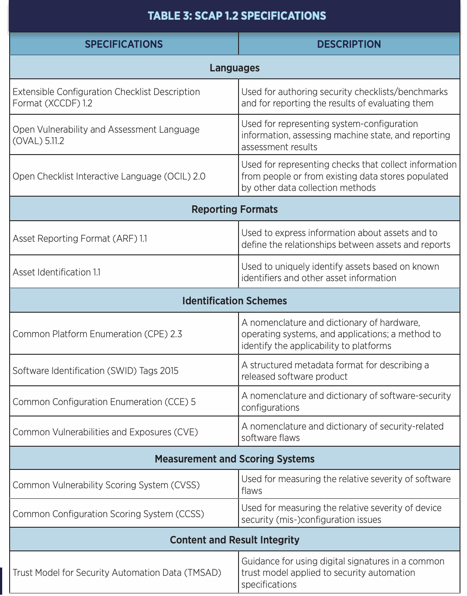
| 表3：SCAP 1.2仕様 | |
| 仕様 | 説明 |
| 言語 | |
| 拡張可能な構成チェックリスト記述形式（XCCDF）1.2 | セキュリティチェックリスト／ベンチマークの作成、およびその評価結果の報告に使用する |
| Open Vulnerability and Assessment Language（OVAL）5.11.2 | システム構成情報の表現、マシン状態の評価、評価結果の報告に使用する |
| Open Checklist Interactive Language（OCIL）2.0 | 人、または他のデータ収集方法で入力された既存データストアから情報を収集するチェック項目の表現に使用する |
| 報告形式 | |
| 資産報告形式（ARF）1.1 | 資産に関する情報を表現し、資産と報告書の関係を定義するために使用する |
| 資産識別1.1 | 既知の識別子やその他の資産情報に基づいて、資産を一意に識別するために使用する |
| 識別方式 | |
| 共通プラットフォーム列挙（CPE）2.3 | ハードウェア、オペレーティングシステム、アプリケーションの名称体系および辞書。プラットフォームへの適用可否を識別する方法 |
| ソフトウェア識別（SWID）タグ2015 | リリース済みソフトウェア製品を記述する構造化メタデータ形式 |
| 共通構成列挙（CCE）5 | ソフトウェアセキュリティ構成の名称体系および辞書 |
| 共通脆弱性識別子（CVE） | セキュリティ関連ソフトウェア欠陥の名称体系および辞書 |
| 測定およびスコアリングシステム | |
| 共通脆弱性スコアリングシステム（CVSS） | ソフトウェア欠陥の相対的な深刻度の測定に使用する |
| 共通構成スコアリングシステム（CCSS） | 機器のセキュリティ構成の誤りに関する相対的な深刻度の測定に使用する |
| コンテンツおよび結果の完全性 | |
| セキュリティ自動化データの信頼モデル（TMSAD） | セキュリティ自動化仕様に適用する共通の信頼モデルで、デジタル署名を使用するための指針 |
NIST/ITL CYBERSECURITY PROGRAM ANNUAL REPORT 2017
NIST/ITLサイバーセキュリティプログラム年次報告書 2017
未レビュー訳and related software patches, and assessing secure
関連するソフトウェアパッチを管理し、セキュアな
未レビュー訳Software Asset Management
ソフトウェア資産管理
未レビュー訳software confgurations.
ソフトウェア構成を評価する。
未レビュー訳Standards
標準
未レビュー訳To supplement the requirements in ISO/IEC
ISO/IECの要件を補うため、
未レビュー訳CSD has been collaborating with industry
CSDは業界関係者と協力し、
未レビュー訳19770-2:2015, CSD collaborated with DHS, NSA,
19770-2:2015について、CSDはDHS、NSA、
未レビュー訳partners to promote the adoption of ISO/IEC
ISO/IEC 19770-2:2015の採用を促進してきた。
未レビュー訳and MITRE on the development of NISTIR 8060,
およびMITREと協力してNISTIR 8060を開発した。
未レビュー訳19770-2:2015, Information technology—Software
「情報技術—ソフトウェア資産管理—第2部：ソフトウェア識別
未レビュー訳Guidelines for the Creation of Interoperable Software
「相互運用可能なソフトウェア識別
未レビュー訳asset management—Part 2: Software identifcation
資産管理—第2部：ソフトウェア識別
未レビュー訳Identifcation (SWID) Tags. NISTIR 8060, published in
（SWID）タグの作成に関する指針」。NISTIR 8060は2016年4月に公開され、
未レビュー訳tag, which establishes a specifcation for tagging
ソフトウェアにタグを付与する仕様を定め、
未レビュー訳April 2016, provides an overview of the capabilities
SWIDタグの機能を概説し、
未レビュー訳software to support identifcation and management.
ソフトウェアの識別と管理を支援する。
未レビュー訳and usage of SWID tags as part of a comprehensive
包括的なソフトウェアライフサイクルにおけるSWIDタグの利用方法を説明する。
未レビュー訳The software identifcation (SWID) data model
この規格で定義するソフトウェア識別（SWID）データモデルは、
未レビュー訳software lifecycle. This report introduces SWID
この報告書はSWIDタグを
未レビュー訳defned by this standard describes an XML format
XML形式を記述している。
未レビュー訳tags in an operational context, provides guidelines
運用環境で紹介し、指針を示す
未レビュー訳for software publishers to provide authoritative
ソフトウェア発行者が権威ある情報を提供できるようにするため、
未レビュー訳for the creation of interoperable SWID tags, and
相互運用可能なSWIDタグ作成の指針、および
未レビュー訳identifcation, categorization, software relationships
識別、分類、ソフトウェア間の関係（
未レビュー訳highlights key usage scenarios for which SWID tags
適用対象となるSWIDタグの主要な利用シナリオを示す。
未レビュー訳(e.g., dependency, bundling, and patching),
依存関係、バンドル、パッチ適用など）、
未レビュー訳are applicable. Figure 39 illustrates several types of
適用できる。図39は、
未レビュー訳executable and library footprint details, and other
実行ファイルおよびライブラリのフットプリント情報、その他の
未レビュー訳SWID tags (as indicated in the legend) and how these
SWIDタグの種類（凡例を参照）と、それらがどのように
未レビュー訳metadata for software. This information can be used
ソフトウェアに関するメタデータを示す。この情報は、
未レビュー訳support multiple elements of the software product
ソフトウェア製品ライフサイクルの複数の要素を支える。
未レビュー訳to support operational and cybersecurity use cases
運用およびサイバーセキュリティのユースケースを支援するために利用できる。
未レビュー訳life cycle, including deployment, installation, patching,
展開、インストール、パッチ適用、
未レビュー訳around managing software deployments, managing
ソフトウェアの配備管理、
未レビュー訳upgrading and removal.
アップグレード、削除を含む。
未レビュー訳software licenses, managing software vulnerabilities
ソフトウェアライセンスとソフトウェア脆弱性を管理し、
未レビュー訳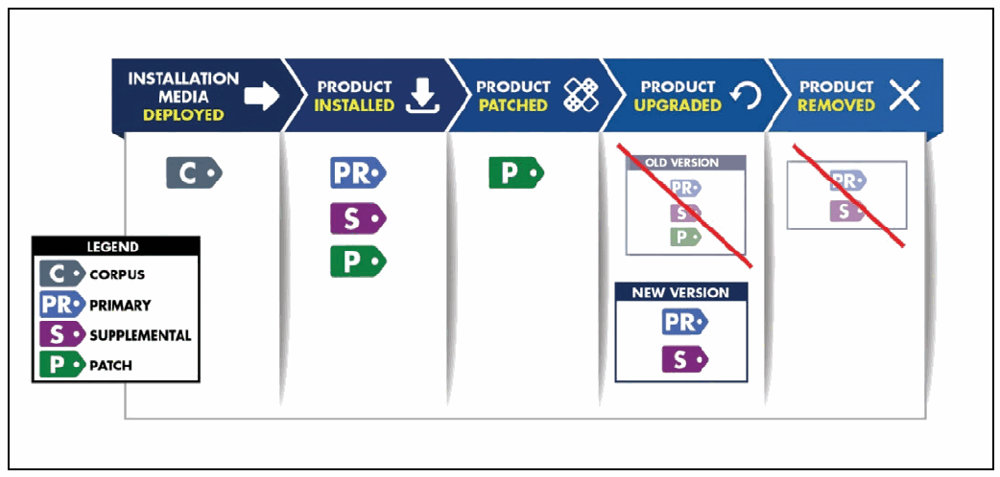
SWIDタグがソフトウェア製品のライフサイクルで使われる様子。矢印は「インストールメディアの展開」→「製品のインストール」→「製品へのパッチ適用」→「製品のアップグレード」→「製品の削除」を示す。凡例はC＝コーパス、PR＝プライマリ、S＝補足、P＝パッチ。製品インストール時はPR/S/P、パッチ適用時はPを付与する。アップグレード時は旧版のPR/S/Pを無効にして新版にPR/Sを付与し、削除時にはPR/Sを無効化する。
LEGEND
凡例
未レビュー訳~ CORPUS
C：コーパス
未レビュー訳~ PRIMARY ~ SUPPLEMENTAL ~ PATCH
PR：プライマリ、S：補足、P：パッチ
未レビュー訳Figure 39: SWID Tags Support the Software Product Lifecycle
図39：SWIDタグによるソフトウェア製品ライフサイクルの支援
未レビュー訳Additionally, in FY 2017, NIST has worked with based collection of software inventory information the IETF to integrate SWID tags into the Network using SWID tag information. Endpoint Assessment (NEA) protocol, through the
【左段】また2017会計年度に、NISTはIETFと協力し、SWIDタグをNetwork Endpoint Assessment（NEA）プロトコルに統合した。その手段は 【右段末尾】ソフトウェアインベントリ情報をSWIDタグ情報に基づいて収集する方法である。
未レビュー訳The information provided within SWID tags
SWIDタグに含まれる情報は、
未レビュー訳Software Inventory Message and Attributes (SWIMA)
ソフトウェアインベントリメッセージおよび属性（SWIMA）
未レビュー訳enhances the SCAP use cases by providing
SCAPのユースケースを拡張し、
未レビュー訳for PA-TNC specifcation (see https://datatracker.ietf.
PA-TNC仕様（参照先：https://datatracker.ietf.
未レビュー訳authoritative information that can be used to create
権威ある情報を提供する。この情報を用いて、
未レビュー訳org/doc/draft-ietf-sacm-nea-swima-patnc/). This
org/doc/draft-ietf-sacm-nea-swima-patnc/）。これは
未レビュー訳Common Platform Enumeration (CPE) names, to
共通プラットフォーム列挙（CPE）名を作成し、
未レビュー訳draft Request for Comments (RFC) will be published
草案Request for Comments（RFC）として公開される予定で、
未レビュー訳support the targeting of checklists, and to associate 106
チェックリストの対象選定を支援し、
未レビュー訳soon, describing a method for the automated, event-
自動化されたイベント駆動型の
未レビュー訳software faws to products, based on a defect in
ソフトウェア欠陥を製品に関連付けるため、ソフトウェアライブラリまたは実行可能ファイル内の欠陥に基づいて
未レビュー訳ITL CYBERSECURITY PROGRAM AND PROJECTS | FY 2017
ITLサイバーセキュリティプログラムおよびプロジェクト｜2017会計年度
未レビュー訳a software library or executable. In FY 2017, CSD automation-relevant information types. The ROLIE published a SWID tag validation tool (see https:// draft has undergone two major revisions, with the scap.nist.gov/specifcations/swid/), called SWIDVal, fnal draft nearing completion. In addition, CSD has that can validate a SWID tag document against the begun the process of collaborating with MILE and ISO/IEC 19770-2:2015 and NISTIR 8060 requirements. other stakeholders to create extension drafts for
【左段】いる。2017会計年度、CSDはSWIDタグ検証ツールを公開した（https://scap.nist.gov/specifications/swid/）。SWIDValと呼ばれるこのツールは、SWIDタグ文書がISO/IEC 19770-2:2015およびNISTIR 8060の要件を満たすか検証できる。 【右段上部・左段からの続き】セキュリティ自動化関連情報タイプを扱う。ROLIE草案は大幅な改訂を2回経て、最終草案の完成が近づいている。さらにCSDはMILEその他の関係者と協力し、ROLIE拡張草案を作る作業を開始した。
未レビュー訳ROLIE that address a number of information types, including vulnerability, confguration checklist, and
ROLIEの拡張は、脆弱性、構成チェックリスト、
未レビュー訳Development of Security Automation
セキュリティ自動化
未レビュー訳software metadata information types.
ソフトウェアメタデータなどの複数の情報タイプを対象とする。
未レビュー訳Consensus Standards
コンセンサス標準の策定
未レビュー訳The main ROLIE draft can be found at https://
ROLIEの主草案は次のURLで確認できる：https://
未レビュー訳CSD has been promoting the broad international datatracker.ietf.org/doc/draft-ietf-mile-rolie/. adoption of SCAP by encouraging the integration of Additional information on ROLIE and on the extension SCAP into other standards, and by adapting SCAP drafts can be found in the working repository on to address specifc gaps and challenges. CSD has GitHub: https://github.com/CISecurity/ROLIE/. continued its collaboration with its industry partners
【左段】CSDは、SCAPを他の標準に統合するよう促し、特定の不足や課題に対処するようSCAPを適応させることで、SCAPの国際的な普及を促進してきた。CSDは業界パートナーとの協力を継続し、 【右段】datatracker.ietf.org/doc/draft-ietf-mile-rolie/。ROLIEとその拡張草案の詳細は、GitHubの作業リポジトリ（https://github.com/CISecurity/ROLIE/）を参照。
未レビュー訳CSD also worked with its government and
CSDはさらに、政府および
未レビュー訳in the IETF Security Automation and Continuous
IETFのセキュリティ自動化および継続的
未レビュー訳industry partners in the TCG to defne a number
TCGの業界パートナーと協力して、
未レビュー訳Monitoring (SACM) working group. This working
監視（SACM）ワーキンググループに参加している。この
未レビュー訳of specifcations related to the Trusted Network
Trusted Network
未レビュー訳group provides a venue for advancing appropriate
ワーキンググループは、適切な
未レビュー訳Connect (TNC) protocol. The frst such publication
Connect（TNC）プロトコルに関連する仕様をいくつか定義した。最初の刊行物
未レビュー訳SCAP specifcations into international standards and
SCAP仕様を国際標準へと進め、
未レビュー訳is the TNC SCAP Messages for IF-M specifcation
は「TNC SCAP Messages for IF-M」仕様であり、
未レビュー訳addressing identifed gap areas. The current scope of
特定された不足領域に対処する。SACMの現在の作業範囲には、
未レビュー訳that supports carrying the SCAP content and results
SCAPコンテンツおよび評価結果を
未レビュー訳work for SACM includes identifying and/or defning
必要な転送プロトコルおよびデータ形式を特定または定義する作業が含まれる。
未レビュー訳over the TNC protocols. IF-M is a messaging protocol
TNCプロトコル上で転送する。IF-Mはメッセージングプロトコルであり、
未レビュー訳the transport protocols and data formats needed
必要となる転送プロトコルとデータ形式を
未レビュー訳that helps communicate measurement information
測定情報の伝達を支援する
未レビュー訳to support the collection and evaluation of details
機器の状態に関する詳細を収集・評価するために
未レビュー訳about endpoints for evaluation against security
セキュリティポリシーへの適合性を評価するエンドポイントについて
未レビュー訳regarding a device’s state against the expected
期待値と比較するための
未レビュー訳policy. The second is the TNC Endpoint Compliance
方針である。もう一つはTNC Endpoint Compliance
未レビュー訳values. The SACM working group has been working on
値に照らして評価する。SACMワーキンググループでは、
未レビュー訳Profle (ECP) and related specifcations that support
Profile（ECP）および、それを支援する関連仕様である。
未レビュー訳identifying use cases, requirements, and architectural
ユースケース、要件、アーキテクチャモデルを特定し、
未レビュー訳the exchange of SWID data over the TNC protocols.
TNCプロトコル上でSWIDデータを交換する。
未レビュー訳models to provide information to facilitate decisions
モデルを作成し、意思決定に役立つ情報を提供する。
未レビュー訳The ECP enables the collection of SWID data from a
ECPは機器からSWIDデータを収集し、
未レビュー訳about existing specifcations and standards that can
参照可能な既存の仕様および標準、
未レビュー訳device for use by external tools to provide software
外部ツールがソフトウェア
未レビュー訳be referenced, required modifcations or extensions
既存の仕様・標準に必要な変更や拡張、
未レビュー訳inventory information. SCAP and SWID data collected
インベントリ情報を提供する。これらの方法で収集したSCAPおよびSWIDデータは、
未レビュー訳to existing specifcations and standards, and any gaps
さらに対処が必要な不足領域を特定する。
未レビュー訳using these mechanisms may be optionally used for
任意で次の目的に利用できる。
未レビュー訳that need to be addressed. CSD is working with DHS,
CSDはDHSと協力し、
未レビュー訳network access control decision making, allowing the
ネットワークアクセス制御の判断に利用することで、機器の
未レビュー訳the Center for Internet Security (CIS), and the TCG
Center for Internet Security（CIS）およびTCG
未レビュー訳device state to be evaluated when devices connect
機器が接続したときに機器の状態を評価できるようにし、
未レビュー訳to bring existing work into the IETF SACM working
既存の取り組みをIETFのSACMワーキンググループへ持ち込むため、
未レビュー訳and on an ongoing basis thereafter.
その後も継続的に評価する。
未レビュー訳group, including OVAL and specifcations related to the Trusted Network Connect (TNC) protocol.
ワーキンググループに、OVALおよびTNCプロトコル関連仕様を含む。
未レビュー訳For more information on this specifcation, please visit: http://www.trustedcomputinggroup.
この仕様の詳細は、次を参照：https://www.trustedcomputinggroup.
未レビュー訳For more information, please refer to: http://
詳細は次を参照：https://
未レビュー訳org/resources/tnc_endpoint_compliance_profle_
org/resources/tnc_endpoint_compliance_profile_
未レビュー訳datatracker.ietf.org/wg/sacm/charter/.
datatracker.ietf.org/wg/sacm/charter/。
未レビュー訳specifcation.
specification。
未レビュー訳Also, within the IETF, CSD has been collaborating
IETFでは、CSDはさらに
未レビュー訳Updated versions of the ECP and SWID-related
ECPおよびSWID関連仕様の改訂版と、
未レビュー訳with the Managed Incident Lightweight Exchange
Managed Incident Lightweight Exchange
未レビュー訳specifcations, along with a usage scenario around
脆弱性評価に関する利用シナリオは、
未レビュー訳(MILE) working group in order to develop the
（MILE）ワーキンググループと協力して、
未レビュー訳vulnerability assessment, are currently being worked
現在、SACMおよびMILEワーキンググループで検討されており、
未レビュー訳Resource-Oriented Lightweight Information Exchange
Resource-Oriented Lightweight Information Exchange
未レビュー訳on in the SACM and MILE working groups, which are
表4に示す場所から参照できる。
未レビュー訳(ROLIE) specifcation. This specifcation seeks
（ROLIE）仕様の策定に取り組んでいる。この仕様は、
未レビュー訳available through the locations indicated in Table 4.
Table 4に示す各リンクから入手できる。
未レビュー訳to address the security automation information discovery and dissemination use cases by defning
セキュリティ自動化情報の探索・配布ユースケースに対応するため、
未レビュー訳The SACM and MILE working groups have been
SACMおよびMILEワーキンググループは、
未レビュー訳how tools are expected to communicate with security
ツールがセキュリティ
未レビュー訳developing the following related Internet Drafts:
次の関連Internet-Draftを策定している。
未レビュー訳automation information repositories. ROLIE allows for the transport, retrieval, and storage of any security
自動化情報リポジトリと通信する方法を定める。ROLIEは、あらゆる
未レビュー訳NIST/ITL CYBERSECURITY PROGRAM ANNUAL REPORT 2017
NIST/ITLサイバーセキュリティプログラム年次報告書 2017
未レビュー訳| INTERNET DRAFT | PURPOSE |
| https://datatracker.ietf.org/doc/draft-ietf-sacm- coswid/ | A Concise Binary Object Representation (CBOR) [RFC7049] based specifcation for representing SWID tag for use with constrained IoT devices. |
| https://datatracker.ietf.org/doc/draft-ietf-sacm-ecp/ | Specifes the Endpoint Compliance Profle (ECP), that describes the use of IETF and TNC protocols and interfaces to support the ongoing assessment of endpoint posture and the controlled exposure of collected posture information to authorized security applications. |
| https://datatracker.ietf.org/doc/draft-ietf-sacm-nea- swima-patnc/ | Extends the PA-TNC specifcation [RFC5792] to provide specifc attributes and message exchanges allowing endpoints to report their installed software inventory information to a NEA server. |
| https://datatracker.ietf.org/doc/draft-ietf-mile-rolie/ | The ROLIE protocol supporting a resource-oriented approach for security automation information publication, discovery, and sharing. |
| https://datatracker.ietf.org/doc/draft-ietf-sacm-rolie- softwaredescriptor/ | An extension to ROLIE to support the exchange of SWID-based software information. |
| https://datatracker.ietf.org/doc/draft-ietf-sacm- terminology/ | Defnition of the common terminology used within several working-group documents. |
原本PDFの抜粋画像
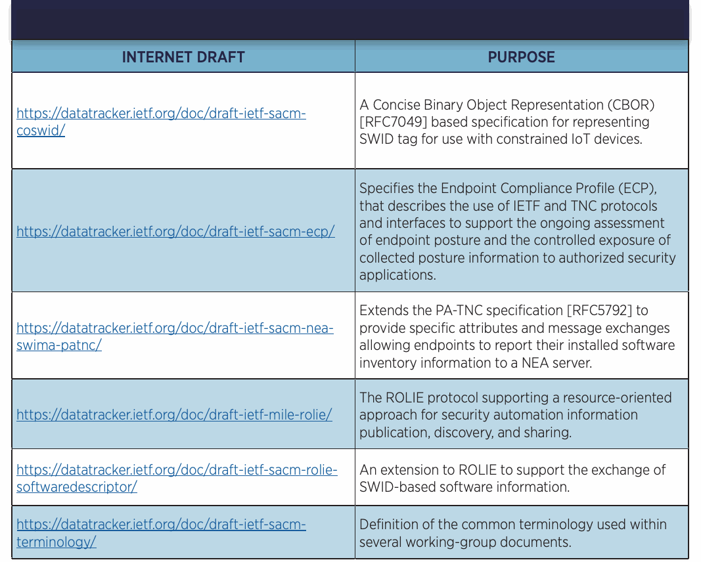
| Internet-Draft | 目的 |
| https://datatracker.ietf.org/doc/draft-ietf-sacm-coswid/ | 制約のあるIoTデバイスで使うSWIDタグを表現するための、Concise Binary Object Representation（CBOR）[RFC 7049]に基づく仕様。 |
| https://datatracker.ietf.org/doc/draft-ietf-sacm-ecp/ | Endpoint Compliance Profile（ECP）を定める。IETFおよびTNCのプロトコルとインターフェースを用い、エンドポイントの状態を継続的に評価するとともに、収集した状態情報を認可されたセキュリティアプリケーションに制御された形で公開する方法を記述する。 |
| https://datatracker.ietf.org/doc/draft-ietf-sacm-nea-swima-patnc/ | PA-TNC仕様[RFC 5792]を拡張し、エンドポイントがインストール済みソフトウェアのインベントリ情報をNEAサーバーへ報告できるようにする属性とメッセージ交換を定める。 |
| https://datatracker.ietf.org/doc/draft-ietf-mile-rolie/ | セキュリティ自動化情報の公開、探索、共有に、リソース指向の方式を用いるROLIEプロトコル。 |
| https://datatracker.ietf.org/doc/draft-ietf-sacm-rolie-softwaredescriptor/ | SWIDに基づくソフトウェア情報の交換を支援するROLIE拡張。 |
| https://datatracker.ietf.org/doc/draft-ietf-sacm-terminology/ | 複数のワーキンググループ文書で使用する共通用語の定義。 |
Additionally, CSD has several members who are For more information, please visit: http://www. actively engaged on the CVE Board, which is working frst.org/global/sigs. to improve the assignment of CVE identifers for
【左段】CSDには、CVE識別子の割当て改善に取り組むCVE Boardで積極的に活動するメンバーが複数いる。同委員会は脆弱性に対するCVE識別子の割当て改善に取り組んでおり、 【右段】詳細はhttps://www.first.org/global/sigsを参照。
未レビュー訳Through work with international standards-
国際標準化機関との協力を通じ、
未レビュー訳vulnerabilities, with the overall goal of improving
全体目標は、脆弱性の自動処理を改善し、
未レビュー訳developing organizations (SDOs), SCAP and its
SCAPおよび関連するセキュリティ自動化機能は、
未レビュー訳the automated processing of vulnerabilities and the
CVE識別子の発行を適時に行うことを
未レビュー訳related security automation capabilities are expected
発展・拡大することが期待され、
未レビュー訳timeliness of CVE identifer issuance.
達成することである。
未レビュー訳to evolve and expand in support of the growing need
効果的なセキュリティ対策の定義・測定など、増大するニーズに応えるために
未レビュー訳Finally, CSD has worked with FIRST by to defne and measure efective security controls, participating in two Special Interest Groups (SIGs). assess and monitor ongoing aspects of information The CVSS SIG (CVSS-SIG) is focused on maintaining security, remediate noncompliance, and successfully and improving the CVSS scoring model, based on manage systems in accordance with the Risk community feedback. The CVSS-SIG published CVSS Management Framework described in SP 800-37 Revision 3 (CVSS v3) in June 2015. The second SIG, Revision 1, Guide for Applying the Risk Management the Vulnerability Reporting and Data eXchange SIG Framework to Federal Information Systems: A Security (VRDX-SIG),researchesandrecommendsmethodsfor Life Cycle Approach. Standards that are developed identifying and exchanging vulnerability information and published by these SDOs will be considered for
【左段】最後に、CSDはFIRSTと協力し、2つのSpecial Interest Group（SIG）に参加している。CVSS SIG（CVSS-SIG）はコミュニティからの意見に基づき、CVSSスコアリングモデルの維持・改善に取り組む。CVSS-SIGは2015年6月にCVSS Revision 3（CVSS v3）を公開した。2つ目のSIGであるVulnerability Reporting and Data eXchange SIG（VRDX-SIG）は、脆弱性情報を特定・交換する方法を調査し、 【右段】情報セキュリティの継続的な状況を評価・監視し、要件非遵守を是正し、SP 800-37 Revision 1「連邦情報システムへのリスク管理フレームワーク適用ガイド：セキュリティライフサイクルアプローチ」に記載されたリスク管理フレームワークに従ってシステムを管理するために、効果的なセキュリティ対策を定義・測定する。これらのSDOが策定・公開する標準は、SCAPの将来の改訂版への
未レビュー訳inclusion in future revisions of SCAP.
SCAPの将来の改訂版への収載が検討される。
未レビュー訳across disparate vulnerability databases.
推奨する。これらの方法は、異なる脆弱性データベース間での情報交換を対象とする。
未レビュー訳ITL CYBERSECURITY PROGRAM AND PROJECTS | FY 2017
ITLサイバーセキュリティプログラムおよびプロジェクト｜2017会計年度
•Over 96,000 vulnerability advisories, with an
•脆弱性アドバイザリは96,000件を超え、
未レビュー訳FOR MORE INFORMATION, SEE:
詳細情報：
未レビュー訳average of 62 new vulnerabilities added daily;
新たな脆弱性が1日平均62件追加されている。
未レビュー訳https://scap.nist.gov/
https://scap.nist.gov/
未レビュー訳•183 SCAP-expressed checklists across 123
•SCAPで記述されたチェックリスト183件が、123の
未レビュー訳CONTACT:
連絡先：
未レビュー訳platforms containing thousands of low-level
プラットフォームにまたがり、数千件の低レベル
未レビュー訳Mr. David Waltermire
David Waltermire氏
未レビュー訳security confguration checks that can be
セキュリティ構成チェックを含む。これらは
未レビュー訳(301) 975-3390
(301) 975-3390
未レビュー訳used by SCAP-validated security products to
SCAP検証済みセキュリティ製品で使用でき、
未レビュー訳david.waltermire@nist.gov
david.waltermire@nist.gov
未レビュー訳perform automated evaluations of the system state;
システム状態を自動的に評価する。
未レビュー訳Security Automation Reference Data
セキュリティ自動化の参照データ
未レビュー訳•293 non-SCAP security checklists (e.g., English prose guidance and confguration scripts);
•非SCAPのセキュリティチェックリスト293件（例：英語の文章による指針や構成スクリプト）。
未レビュー訳Through the National Vulnerability Database and the National Checklist Program (see below), NIST is
National Vulnerability DatabaseおよびNational Checklist Program（後述）を通じて、NISTは
未レビュー訳•249 U.S. Computer Emergency Readiness
•US-CERTアラート249件、US-CERT
未レビュー訳providing relevant and important reference data in the
脆弱性および構成管理の分野で、関連性と重要性の高い参照データを
未レビュー訳Team (US-CERT) alerts; 4,467 US-CERT
（米国コンピュータ緊急事態対策チーム）の
未レビュー訳areas of vulnerability and confguration management.
提供している。
未レビュー訳vulnerability summaries; and 10,286 SCAP
脆弱性要約4,467件、およびSCAPの
未レビュー訳SCAP and the programs that leverage it are moving
SCAPとそれを活用するプログラムは、
未レビュー訳machine-readable software faw checks; and
機械可読なソフトウェア欠陥チェック10,286件を含む。さらに、
未レビュー訳the information assurance industry toward being able to standardize communications and toward the • A product dictionary with over 124,000 collection and storage of relevant data in standardized
【左段】情報保証業界は、通信の標準化と、関連データを標準化形式で収集・保存する方向に進んでいる。 【右段】製品辞書には、オペレーティングシステム、アプリケーション、ハードウェアの名称エントリが124,000件以上あり、脆弱性アドバイザリは75,000件以上がスペイン語に翻訳されている。
未レビュー訳operating system, application, and hardware
オペレーティングシステム、アプリケーション、ハードウェアの
未レビュー訳formats, as well as providing an automated means for
さらに、
未レビュー訳name entries; and over 75,000 vulnerability
名称エントリを124,000件以上収録し、脆弱性アドバイザリ75,000件以上を
未レビュー訳the assessment and remediation of systems for both
脆弱性と構成適合性の双方について、システムの評価・是正を
未レビュー訳advisories translated into Spanish.
スペイン語に翻訳している。
未レビュー訳vulnerabilities and confguration compliance.
自動化する手段も提供する。
未レビュー訳NVD is hosted and maintained by NIST and is sponsored by the Department of Homeland Security’s
NVDはNISTが運営・保守しており、米国国土安全保障省の
未レビュー訳National Vulnerability Database
National Vulnerability Database
未レビュー訳US-CERT.
US-CERTが後援している。
未レビュー訳(NVD)
（NVD）
未レビュー訳The use of SCAP data by commercial security products, deployed in thousands of organizations
数千の組織で導入されている商用セキュリティ製品によるSCAPデータの利用は、
未レビュー訳Security automation reference data is currently
セキュリティ自動化の参照データは現在
未レビュー訳worldwide, has extended NVD’s efective reach.
世界中でNVDの実効的な到達範囲を広げている。
未レビュー訳housed within the NVD. The NVD is a comprehensive
NVDに収められている。NVDは包括的な
未レビュー訳Increasing demand for NVD XML data feeds (i.e.,
NVDのXMLデータフィード（すなわち、
未レビュー訳cybersecurity vulnerability database that allows
サイバーセキュリティ脆弱性データベースであり、
未レビュー訳mechanisms that provide updated data from data
データソースから最新データを提供する
未レビュー訳the tracking of vulnerability trends over time. This
脆弱性の推移を時間とともに追跡できる。この
未レビュー訳sources) and SCAP-expressed content from the NVD
仕組み）およびNVDのSCAP形式コンテンツに対する需要の高まりは、
未レビュー訳trending service allows users to assess changes in
傾向分析サービスを使うと、ユーザーは
未レビュー訳website demonstrates an increased adoption of SCAP.
NVDウェブサイトでSCAPの採用が拡大していることを示している。
未レビュー訳vulnerability discovery rates within specifc products or within specifc types of vulnerabilities. NVD data
特定の製品または特定の種類の脆弱性における脆弱性発見率の変化を評価できる。NVDのデータ
未レビュー訳In the past year, the NVD began providing CVSS
昨年、NVDはCVSS v3仕様に従ったCVSS
未レビュー訳is represented using the SCAP specifcations. The
SCAP仕様を用いて表現される。
未レビュー訳base scores following the CVSS v3 specifcation within
ベーススコアをCVSS v3仕様に基づいて
未レビュー訳NVD includes databases of security confguration
NVDには、NCP向けのセキュリティ構成チェックリスト、一般に知られた
未レビュー訳the data feeds and completed a major enhancement
データフィードで提供し始めるとともに、ユーザーインターフェースを大幅に改良した。NVDでは
未レビュー訳checklists for the NCP, listings of publicly known
ソフトウェア欠陥、製品名、影響指標のデータベースが含まれる。
未レビュー訳to the overall user interface. The NVD has also seen a
さらに
未レビュー訳software faws, product names, and impact metrics. A
正式な検証プログラムは、
未レビュー訳signifcantincrease(almostthreefold)invulnerabilities
脆弱性の受領件数は大幅に（約3倍）増加し、
未レビュー訳formal validation program tests the ability of vendor
ベンダー製品が
未レビュー訳received and analyzed over the previous year. Overall,
前年度に分析された。全体として、NVDの
未レビュー訳products to use some forms of security automation
一部のセキュリティ自動化データを利用できるかを試験する。
未レビュー訳the NVD has experienced an average download
平均ダウンロード数は
未レビュー訳data, based on a product’s conformance in support of
その製品が特定のエンタープライズ機能を支援する適合性に基づいて
未レビュー訳growth rate of over 10 % per month.
月あたり10％を超える成長率を記録した。
未レビュー訳specifc enterprise capabilities.
評価する。
未レビュー訳FOR MORE INFORMATION, SEE:
詳細情報：
未レビュー訳SCAP defnes the structure of standardized
SCAPは、標準化された
未レビュー訳https://nvd.nist.gov
https://nvd.nist.gov
未レビュー訳software faws and security confguration reference data, also known as SCAP content. This reference data
ソフトウェア欠陥およびセキュリティ構成の参照データ（SCAPコンテンツとも呼ばれる）の構造を定義する。この参照データ
未レビュー訳CONTACT:
連絡先：
未レビュー訳is provided by the NVD.
はNVDが提供する。
未レビュー訳Mr. Robert Byers
Robert Byers氏
未レビュー訳As of the end of September 2017, the NVD (301) 975-3279
【左段】2017年9月末時点で、NVDには次のリソースが 【右段】(301) 975-3279
未レビュー訳robert.byers@nist.gov
robert.byers@nist.gov
未レビュー訳contained the following resources:
含まれていた。
未レビュー訳NIST/ITL CYBERSECURITY PROGRAM ANNUAL REPORT 2017
NIST/ITLサイバーセキュリティプログラム年次報告書 2017
未レビュー訳(FAR) was published. Paragraph (d) of section 39.101
公布された。第39.101条(d)項は、次のように定める。
未レビュー訳National Checklist Program (NCP)
国家チェックリストプログラム（NCP）
未レビュー訳states, “In acquiring information technology, agencies
「情報技術を調達する際、各機関は
未レビュー訳There are many threats to IT, ranging from shall include the appropriate IT security policies and remotely launched network service exploits to requirements, including the use of common security malicious code spread through infected emails, confgurations available from the NIST website at websites, and downloaded fles. Vulnerabilities in IT https://checklists.nist.gov. Agency contracting ofcers products are discovered daily, and many ready-to- should consult with the requiring ofcial to ensure use exploitation techniques are widely available on that the appropriate standards are incorporated.” the Internet. Because IT products are often intended
【左段】ITには、遠隔から起動されるネットワークサービスの悪用から、感染メール、ウェブサイト、ダウンロードファイルを介して拡散する悪意あるコードまで、多様な脅威がある。IT製品の脆弱性は日々発見され、多くの即時利用可能な攻撃手法がインターネット上で広く公開されている。IT製品は幅広い利用者を想定することが多いため、厳格なセキュリティ 【右段】適切なITセキュリティポリシーおよび要件を含めなければならず、それにはNISTのウェブサイト（https://checklists.nist.gov）で提供される共通セキュリティ構成の利用も含まれる。各機関の契約担当官は、適切な基準が盛り込まれるよう、要求担当官に相談すべきである。」
未レビュー訳In Memorandum M-08-22, OMB mandated the
行政管理予算局（OMB）はメモランダムM-08-22で、
未レビュー訳for a wide variety of audiences, restrictive security
構成制御は通常、
未レビュー訳use of SCAP-validated products for the continuous
SCAP検証済み製品を使ってFDCC適合性を継続的に監視することを
未レビュー訳confguration controls are usually not enabled by
初期設定では有効になっていない。
未レビュー訳monitoring of Federal Desktop Core Confguration
義務付けた。NCPは連邦機関がこうした要件を履行するよう促し、
未レビュー訳default. As a result, many out-of-the box IT products
その結果、多くの市販IT製品は初期状態で脆弱である。さらに、
未レビュー訳(FDCC) compliance. The NCP strives to encourage
支援することを目指している。
未レビュー訳are immediately vulnerable. In addition, identifying
適切なリスク管理を実現する妥当なセキュリティ設定を特定することは、
未レビュー訳and assist federal agencies with these mandates.
支援することを目指している。
未レビュー訳a reasonable set of security settings that achieve balanced risk management is a complicated, arduous,
複雑で骨の折れる、
未レビュー訳The goals of the NCP are to:
NCPの目標は次のとおりである。
未レビュー訳and time-consuming task, even for experienced system administrators.
経験豊富なシステム管理者にとっても時間のかかる作業である。
未レビュー訳セキュリティ設定のイメージ。スーツ姿の人物がタブレットを持ち、その画面の上に鍵マーク付きの青いクラウドと歯車の図が重ねて表示されている。図中に文字ラベルはない。
•Facilitate the development and sharing of checklists by providing a formal framework for checklist developers to submit checklists to
•チェックリスト開発者がチェックリストを
未レビュー訳NIST;
NISTに提出できる正式な枠組みを設け、開発と共有を促進する。
未レビュー訳•Provide guidance to developers to help them create standardized, high quality checklists that conform to common operation environments;
•開発者が共通の運用環境に適合した標準化済みの高品質なチェックリストを作成できるよう指針を示す。
未レビュー訳•Help developers and users by providing guidelines for making checklists better documented and more usable;
•チェックリストの文書化を改善して使いやすくする指針を提供し、開発者と利用者を支援する。
未レビュー訳•Encourage software vendors and other parties to develop checklists;
•ソフトウェアベンダーなどにチェックリストの開発を促す。
未レビュー訳•Provide a managed process for the review, update, and maintenance of checklists;
•チェックリストのレビュー、更新、保守のための管理プロセスを提供する。
未レビュー訳Credit: Shutterstock/Natali_ Mis
クレジット：Shutterstock/Natali_Mis
未レビュー訳•Provide an easy-to-use repository of
•使いやすいリポジトリに
未レビュー訳To facilitate the development of security
IT製品向けのセキュリティ
未レビュー訳checklists; and
チェックリストを格納し、さらに
未レビュー訳confguration checklists for IT products and to make checklists more organized and usable, CSD
構成チェックリストを開発し、整理して使いやすくするため、CSDは
未レビュー訳•Encourage the use of automation technologies
•チェックリストの適用にSCAPなどの自動化技術を使うよう促す。
未レビュー訳established the National Checklist Program (NCP)
国家チェックリストプログラム（NCP）を設立した。
未レビュー訳(e.g., SCAP) for checklist application.
（例：SCAP）。
未レビュー訳in furtherance of its statutory responsibilities under the Federal Information Security Management Act At the end of FY 2017, there are a total of 476 (FISMA) of 2002, Public Law 107-347, and also under checklists posted on the NCP website (see https:// the Cybersecurity Research and Development Act, checklists.nist.gov/). Of that total, 183 of the checklists, which mandates that NIST “develop, and revise as addressing 123 platforms, are SCAP-expressed and necessary, a checklist setting forth settings and option can be used with SCAP-validated products. selections that minimize the security risks associated
【左段】法的責任を果たす一環として、連邦情報セキュリティ管理法（FISMA）2002年法（公法107-347）およびサイバーセキュリティ研究開発法に基づき、NISTには、セキュリティリスクを最小化する設定と選択肢を示すチェックリストを開発し、必要に応じて改訂することが求められている。 【右段】2017会計年度末時点で、NCPウェブサイトには476件のチェックリストが掲載されている（https://checklists.nist.gov/）。そのうち183件は123のプラットフォームを対象とするSCAP形式のチェックリストで、SCAP検証済み製品で利用できる。
未レビュー訳Organizations can use the checklists obtained
組織はNCPウェブサイトから入手したチェックリストを
未レビュー訳with each computer hardware or software system
対象となるのは、各コンピュータハードウェアまたはソフトウェアシステムであり、
未レビュー訳from the NCP website for automated security
セキュリティ構成パッチの自動評価に利用できる。
未レビュー訳that is, or is likely to become, widely used within the
連邦政府で広く使われている、または今後広く使われる可能性の高いものである。
未レビュー訳confguration patch assessment. The NCP currently
NCPは現在、
未レビュー訳Federal Government.” In February 2008, a revision
2008年2月に、
未レビュー訳provides metadata and links to the latest operating 110
最新のオペレーティングシステムおよび
未レビュー訳of Part 39 of the Federal Acquisition Regulation
連邦調達規則（FAR）第39部の改訂版が
未レビュー訳ITL CYBERSECURITY PROGRAM AND PROJECTS | FY 2017
ITLサイバーセキュリティプログラムおよびプロジェクト｜2017会計年度
未レビュー訳systems and applications checklists, including MacOS In 2017, NIST released a draft version of SP 800-10.10, Windows 10, Internet Explorer 11.0, Internet 70 Revision 4, which can be viewed at https://csrc. Explorer 10.0, Ofce 2016, Red Hat Enterprise Linux, nist.gov/CSRC/media/Publications/sp/800-70/rev-4/
【左段】アプリケーション用チェックリストを提供しており、macOS 10.10、Windows 10、Internet Explorer 11.0、Internet Explorer 10.0、Office 2016、Red Hat Enterprise Linuxなどを含む。 【右段】2017年、NISTはSP 800-70 Revision 4の草案を公開した。草案は次で閲覧できる：https://csrc.nist.gov/CSRC/media/Publications/sp/800-70/rev-4/
未レビュー訳draft/documents/sp800-70r4-draft.pdf. SP 800-70
draft/documents/sp800-70r4-draft.pdf。SP 800-70
未レビュー訳and other products.
など、その他の製品。
未レビュー訳Revision 4 will be published as fnal in FY 2018, and
Revision 4は2018会計年度に最終版として公開され、
未レビュー訳To assist users in identifying automated checklist
自動化されたチェックリスト
未レビュー訳the checklists.nist.gov website will be modifed to
checklists.nist.govのウェブサイトは
未レビュー訳content, NCP groups these checklists into tiers, from
コンテンツを探す利用者を支援するため、NCPはチェックリストを
未レビュー訳refect the updated document.
更新文書を反映するよう変更される。
未レビュー訳Tier I to Tier IV. The NCP uses the tiers to rank checklists according to their automation capability. Tier III and FOR MORE INFORMATION, SEE: IV checklists include fully vetted SCAP content that
【左段】Tier IからTier IVに分類する。各Tierは自動化能力に応じた順位を示す。Tier IIIおよびIVのチェックリストには、十分に検証されたSCAPコンテンツが含まれ、 【右段】詳細情報：
未レビュー訳https://checklists.nist.gov
https://checklists.nist.gov
未レビュー訳has successfully demonstrated conformance to the requirements outlined in SP 800-126. Tier III & IV CONTACT: checklists are considered production-ready and are
【左段】そのコンテンツはSP 800-126に定める要件への適合性を実証している。Tier IIIおよびIVのチェックリストは本番利用可能と見なされ、 【右段】連絡先：
未レビュー訳Mr. Stephen Quinn
Stephen Quinn氏
未レビュー訳intended for use with SCAP-validated products. Tier (301) 975-6967 II checklists document the recommended security stephen.quinn@nist.gov settings in a machine-readable format such as the XCCDF-only (i.e., no OVAL content), proprietary
【左段】SCAP検証済み製品での使用を想定する。Tier IIチェックリストは、推奨セキュリティ設定を機械可読形式（XCCDFのみ、つまりOVALコンテンツなし）または独自形式で記述し、 【右段】(301) 975-6967 stephen.quinn@nist.gov
未レビュー訳Apple macOS Security Confguration
Apple macOSのセキュリティ構成
未レビュー訳format, or product-specifc confguration script. Tier I checklists are prose-based and contain no machine-
製品固有の構成スクリプトで記述する。Tier Iチェックリストは文章ベースで、機械可読の
未レビュー訳CSD’s macOS security confguration team
CSDのmacOSセキュリティ構成チームは
未レビュー訳readable content.
内容を含まない。
未レビュー訳is working to develop secure system confguration baselines supporting diferent operational
異なる運用
未レビュー訳Users can browse the checklists, based on the
利用者はチェックリストを、
未レビュー訳environments for Apple macOS version 10.12,
環境向けのセキュアなシステム構成ベースラインの開発に取り組んでいる。対象はApple macOS 10.12（Sierra）である。これらの構成指針は、
未レビュー訳checklist tier, IT product, IT product category, or
Tier、IT製品、製品カテゴリ、所管機関、
未レビュー訳“Sierra.” These confguration guidelines will assist
組織がmacOS技術を堅牢化するのに役立ち、
未レビュー訳authority, and through a keyword search that searches
または利用者が指定する語で
未レビュー訳organizations with hardening macOS technologies
統一された管理策と設定の基礎を提供する。
未レビュー訳the checklist name and summary for user-specifed
チェックリスト名と概要を検索するキーワード検索により閲覧できる。検索結果には
未レビュー訳and provide a basis for unifed controls and settings
連邦政府のmacOSワークステーションおよびモバイルシステム向けの
未レビュー訳terms. The search results show the detailed checklist
詳細なチェックリストのメタデータと、
未レビュー訳for federal macOS workstation and mobile system
連邦政府のmacOSワークステーションおよびモバイルシステム向け
未レビュー訳metadata and a link to any SCAP content for the
チェックリストのSCAPコンテンツへのリンクが
未レビュー訳security confgurations. The confgurations are based
セキュリティ構成である。このベースラインは
未レビュー訳checklist, as well as links to any supporting resources
さらに、チェックリストに関連する補助資料へのリンク
未レビュー訳on a collection of resources, including the existing
既存の複数の情報源に基づいており、
未レビュー訳associated with the checklist.
も表示される。
未レビュー訳NIST macOS confguration guidance, the Defense
NISTのmacOS構成指針、Defense Information Systems Agency（DISA）の
未レビュー訳To assist checklist developers, the NCP provides Information Systems Agency (DISA) macOS Security both manual and automated interfaces to facilitate the Technical Implementation Guide (STIG), and the submission and maintenance processes. The manual Center for Internet Security (CIS) macOS Security interface consists of a web application that guides the Benchmark. submitter through the data entry process to ensure that all the required information is submitted. The The project team researched and tested submission is validated upon review, and a report is approximately 270 settings for macOS 10.12. The returned to the submitting organization, verifying confguration set has been signifcantly reduced due either acceptance or rejection, based on the criteria to changes in the operating system’s features and requirements. For instance, Tier III and Tier IV default setting values. Among other collected data, checklists require validation using the SCAP Content each setting has a designated Common Confguration Validation Tool (this tool is available for download via Enumeration (CCE) number, which aids in its long-
【左段】チェックリスト開発者を支援するため、NCPは提出と保守の手続を促進する手動・自動インターフェースを提供する。手動インターフェースはウェブアプリケーションで、提出者をデータ入力手順に沿って案内し、必要情報がすべて提出されたことを確認する。提出物は審査時に検証され、基準要件に基づく承認または却下の判断を示す報告書が提出組織へ返される。たとえば、Tier IIIおよびIVのチェックリストはSCAP Content Validation Toolによる検証が必要である（ツールの入手先は後述）。 【右段】Technical Implementation Guide（STIG）、およびCenter for Internet Security（CIS）のmacOS Security Benchmark。プロジェクトチームはmacOS 10.12向けに約270件の設定を調査・試験した。OS機能と既定設定の変更により設定一式は大幅に削減された。収集データのうち、各設定に割り当てられた共通構成列挙（CCE）番号は長期
未レビュー訳term tracking. Figure 40 illustrates the various
的な追跡に役立つ。図40は、
未レビュー訳https://scap.nist.gov/).
https://scap.nist.gov/
未レビュー訳categories that comprise the baselines. Note that
ベースラインを構成する各カテゴリを示す。なお、
未レビュー訳The NCP is defned in SP 800-70 Revision
NCPはSP 800-70 Revision
未レビュー訳a higher quantity of settings in a category does not
あるカテゴリの設定数が多いことは、
未レビュー訳3, National Checklist Program for IT Products—
3「IT製品向け国家チェックリストプログラム—
未レビュー訳imply greater importance over other categories.
他のカテゴリより重要であることを意味しない。
未レビュー訳Guidelines for Checklist Users and Developers, which can be found at https://csrc.nist.gov/publications/ PubsSPs.html.
チェックリスト利用者および開発者向け指針」。次のURLから入手できる：https://csrc.nist.gov/publications/PubsSPs.html。
未レビュー訳NIST/ITL CYBERSECURITY PROGRAM ANNUAL REPORT 2017
NIST/ITLサイバーセキュリティプログラム年次報告書 2017
未レビュー訳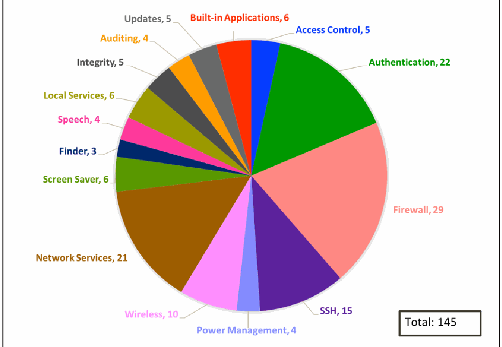
図40：macOS構成ベースラインの設定カテゴリ別件数を示す円グラフ。合計145件。監査4、更新5、組み込みアプリケーション6、アクセス制御5、認証22、ファイアウォール29、SSH 15、電源管理4、無線10、ネットワークサービス21、スクリーンセーバー6、Finder 3、音声4、ローカルサービス6、完全性5。PDF原図で各ラベルと値を扇形の位置に照合した。
Updates, 5 Built-in A!pplications, 6
更新：5、組み込みアプリケーション：6
未レビュー訳Access Control, 5
アクセス制御：5
未レビュー訳Integrity, 5
完全性：5
未レビュー訳Authent ication , 22
認証：22
未レビュー訳LocaIServices, 6
ローカルサービス：6
未レビュー訳Speech,4
音声：4
未レビュー訳Finder, 3
Finder：3
未レビュー訳Screen Saver, 6
スクリーンセーバー：6
未レビュー訳Firewall, 29
ファイアウォール：29
未レビュー訳Network Services, 21
ネットワークサービス：21
未レビュー訳原文のみ
SSH,15
SSH：15
未レビュー訳Total: 145
合計：145
未レビュー訳Power Management, 4
電源管理：4
未レビュー訳Figure 40: Confguration Categories
図40：構成カテゴリ
未レビュー訳The shell scripts that apply the settings to a macOS was published. This document explains the settings, 10.12 system are organized into three key baselines, their security signifcance, and how to confgure them which are appropriate for diferent environments: for the three baselines described above. The project
【左段】macOS 10.12システムに設定を適用するシェルスクリプトは、異なる環境に適した3つの主要なベースラインに整理されている。 【右段】が公開された。この文書は、前述の3つのベースラインの設定、そのセキュリティ上の意義、および構成方法を説明する。プロジェクト
未レビュー訳team then focused on updating the guide, script
チームはその後、ガイド、スクリプト、
未レビュー訳•The Standalone baseline describes small, and spreadsheet of settings for Apple macOS 10.12 informal computer installations that are used systems. for home or business purposes; In FY 2018, the team plans to:
•【左段】単独型ベースラインは、家庭または業務で使用する小規模で非公式なコンピュータ環境を対象とする。 【右段】およびApple macOS 10.12システム向け設定一覧表の更新に取り組んだ。2018会計年度には、次を計画している。
未レビュー訳•The Managed baseline is appropriate for centrally managed, networked systems; and
•管理型ベースラインは、中央管理されたネットワーク接続システムに適している。
未レビュー訳•Produce an updated guide for macOS 10.12;
•macOS 10.12向けの更新版ガイドを作成する。
未レビュー訳•The Specialized Security-Limited Functionality • Continue to refne the script and add more settings to the confguration; and (SSLF) baseline is appropriate for systems where security requirements are more
•【左段】Specialized Security-Limited Functionality（SSLF）ベースラインは、セキュリティ要件がより 【右段】スクリプトをさらに調整し、構成に設定を追加する。
未レビュー訳•Investigate macOS 10.13, “High Sierra.”
•macOS 10.13「High Sierra」を調査する。
未レビュー訳stringent and where the implementation of security safeguards is likely to reduce
厳格で、セキュリティ対策の実施によって機能を低下させる
未レビュー訳FOR MORE INFORMATION, SEE:
詳細情報：
未レビュー訳functionality.
可能性のあるシステムに適している。
未レビュー訳https://csrc.nist.gov/projects/apple-os-x-security-confguration
https://csrc.nist.gov/projects/apple-os-x-security-configuration
未レビュー訳In FY 2017, the fnal version of SP 800-179, Guide to
2017会計年度に、SP 800-179「
未レビュー訳https://github.com/usnistgov/applesec
https://github.com/usnistgov/applesec
未レビュー訳Securing Apple OS X 10.10 Systems for IT Professionals
IT専門家向けApple OS X 10.10システムの保護ガイド」
未レビュー訳ITL CYBERSECURITY PROGRAM AND PROJECTS | FY 2017
ITLサイバーセキュリティプログラムおよびプロジェクト｜2017会計年度
未レビュー訳ofer virtual servers that can be rented on demand
オンデマンドで利用者に貸し出す仮想サーバーを提供している。
未レビュー訳CONTACTS:
連絡先：
未レビュー訳by users. This paradigm enables cloud customers to
この方式により、クラウド利用者は
未レビュー訳Mr. Mark Trapnell
Mark Trapnell氏
未レビュー訳Mr. Lee Badger
Lee Badger氏
未レビュー訳acquire computing resources with high efciency, low
コンピューティングリソースを高効率かつ低
未レビュー訳(301) 975-4091
(301) 975-4091
未レビュー訳(301) 975-3176
(301) 975-3176
未レビュー訳cost and great fexibility. However, it also introduces
コストで柔軟に調達できる。しかし、
未レビュー訳mark.trapnell@nist.gov lee.badger@nist.gov
mark.trapnell@nist.gov lee.badger@nist.gov
未レビュー訳many security problems that need to be solved. Considered as an emerging branch of forensics
解決すべきセキュリティ上の問題も数多く生じる。ネットワークとシステムのフォレンジックを組み合わせる新興分野として、
未レビュー訳Mr. Murugiah Souppaya
Murugiah Souppaya氏
未レビュー訳that combine network and systems forensics, cloud
クラウド
未レビュー訳(301) 975-8443
(301) 975-8443
未レビュー訳forensics addresses post-incident analysis of systems
フォレンジックは、
未レビュー訳murugiah.souppaya@nist.gov
murugiah.souppaya@nist.gov
未レビュー訳with the complexities of distributed processing, multi-tenancy and virtualization. CSD has developed a framework that shows what evidence can be used to reconstruct corresponding attack scenarios in
分散処理、マルチテナンシー、仮想化の複雑さを伴うシステムのインシデント後分析を扱う。CSDは、クラウド内の攻撃シナリオを再構成する際に使用できる証拠を示す枠組みを開発し、
未レビュー訳TECHNICAL SECURITY METRICS
技術セキュリティ指標
未レビュー訳the cloud, and discusses how this framework can be applied to automate the forensics analysis in the cloud with the objective of saving a forensics investigator’s
クラウド内でこの枠組みをフォレンジック分析に自動適用する方法を論じている。目的は、フォレンジック調査者の
未レビュー訳Security Risk Analysis of Enterprise
攻撃グラフを用いたエンタープライズ
未レビュー訳time.
時間を節約すること。
未レビュー訳Networks Using Attack Graphs
ネットワークのセキュリティリスク分析
未レビュー訳CSD has also developed a layered graphical model
CSDは、サイバー攻撃が業務プロセスやサービスに与える影響を分析する層状のグラフィカルモデルも開発した。
未レビュー訳The protection of computer networks from to analyze the impact of cyber attacks on business malicious intrusions is critical to the economy and processes and services. The model has three layers: security of the nation. Vulnerabilities are regularly the upper layer models that the business processes discovered in software applications that are exploited and their dependencies, the middle layer constructs to stage cyber attacks. System administrators need attack scenarios using evidences in log fles, and the objective metrics to guide and justify decision lowest layer reconstructs the missing attack steps making as they manage the security risk of enterprise using system calls. Based on the graph produced from networks. The objective of this research is to develop the three layers, the model computes a quantitative a standard model for the security risk analysis of impact on the business processes. CSD has developed computer networks. A standard model will enable a case study that shows the usability of this model an organization to answer questions such as “Are and how it can be applied for both forensics analysis we more secure now than yesterday?” or “How does and for mitigating the impact of cyber attacks on the the security of one network confguration compare enterprise infrastructure. CSD published two papers with another one?” Also, having a standard model to in this area: measure network security will allow users, vendors,
【左段】コンピュータネットワークを悪意ある侵入から保護することは、経済と国家の安全に不可欠である。ソフトウェアアプリケーションの脆弱性は定期的に発見され、サイバー攻撃の実行に悪用されている。システム管理者は、企業ネットワークのセキュリティリスクを管理する際、意思決定を導き正当化する客観的な指標を必要とする。本研究の目的は、コンピュータネットワークのセキュリティリスク分析に用いる標準モデルを開発することである。標準モデルにより、組織は「昨日より今日の方が安全か」「あるネットワーク構成の安全性は別の構成と比べてどうか」といった問いに答えられる。また、ネットワークセキュリティを測る標準モデルがあれば、利用者、ベンダー、 【右段】モデルは3層からなる。上層は業務プロセスとその依存関係をモデル化し、中間層はログファイル内の証拠を用いて攻撃シナリオを構築する。最下層はシステムコールを使って欠落した攻撃手順を再構成する。3層から得られるグラフに基づいて、モデルは業務プロセスへの定量的な影響を算出する。CSDは、このモデルの有用性と、フォレンジック分析および企業インフラへのサイバー攻撃の影響緩和への適用を示すケーススタディを開発した。CSDはこの分野で2本の論文を発表した。
未レビュー訳1.Identifying Evidence for Cloud Forensics
1.クラウドフォレンジック分析の証拠特定
未レビュー訳and researchers to evaluate methodologies and
研究者がネットワークセキュリティの手法や
未レビュー訳Analysis, International Federation for
情報処理国際連盟（IFIP）
未レビュー訳products for network security in a coherent and
ネットワークセキュリティ製品を論理的で
未レビュー訳Information Processing (IFIP) International
デジタルフォレンジック国際会議
未レビュー訳consistent manner.
一貫した方法で評価できる。
未レビュー訳Conference on Digital Forensics, Orlando, FL, January 29 - February 1, 2017.
デジタルフォレンジック国際会議（フロリダ州オーランド、2017年1月29日～2月1日）。
未レビュー訳CSD has approached the challenge of network security analysis by capturing vulnerability
CSDは、ネットワークセキュリティ分析の課題に対し、脆弱性の
未レビュー訳2.Towards Actionable Mission Impact
2.実行可能なミッション影響評価
未レビュー訳interdependencies and measuring security, based on
相互依存関係を捉え、実際の攻撃者によるネットワーク侵入の実態に基づいてセキュリティを測定する。
未レビュー訳Assessment in the Context of Cloud
クラウドコンピューティングの文脈における
未レビュー訳how real attackers have penetrated networks. The
セキュリティリスク分析に用いる方法論は
未レビュー訳Computing, 31st IFIP WG 11.3 Conference on
第31回IFIP WG 11.3会議
未レビュー訳methodology used for security risk analysis is based
攻撃グラフに基づく。CSDは
未レビュー訳Data and Application Security and Privacy,
データおよびアプリケーションのセキュリティとプライバシーに関する
未レビュー訳on attack graphs. CSD analyzes attack paths through a
ネットワーク内の攻撃経路を分析し、
未レビュー訳Philadelphia, July 19-21, 2017.
2017年7月19～21日、フィラデルフィア。
未レビュー訳network, providing a probabilistic metric of the overall system risk. Through this metric, trade-ofs between
システム全体のリスクを確率的に測定する指標を提供する。この指標を使って、
未レビュー訳In FY 2018, CSD plans to develop new techniques
2018会計年度、CSDは新たな手法と指標を開発する計画である。
未レビュー訳security costs and security benefts are analyzed.
セキュリティコストとセキュリティ便益のトレードオフを分析する。
未レビュー訳and metrics for Cloud Computing forensics analysis
対象はクラウドコンピューティングのフォレンジック分析
未レビュー訳Computer systems are vulnerable to both known and mission impact analysis. CSD also plans to publish and zero-day attacks. Enterprises have begun to move the results as a NIST report and as white papers in
【左段】コンピュータシステムは既知の攻撃とゼロデイ攻撃の双方に対して脆弱である。企業はネットワークの一部を 【右段】およびミッション影響分析である。CSDは成果をNIST報告書および白書として
未レビュー訳113 parts of their networks from a traditional infrastructure conferences and journals.
【左段】従来型のインフラストラクチャから 【右段】会議や学術誌で公表する。
未レビュー訳into cloud computing environments. Cloud providers
クラウドコンピューティング環境へ移行している。クラウドプロバイダーは
未レビュー訳NIST/ITL CYBERSECURITY PROGRAM ANNUAL REPORT 2017
NIST/ITLサイバーセキュリティプログラム年次報告書 2017
未レビュー訳Proceedings of the 2nd Annual Industrial
第2回産業制御システムセキュリティワークショップ論文集
未レビュー訳FOR MORE INFORMATION, SEE:
詳細情報：
未レビュー訳Control System Security Workshop).
。
未レビュー訳https://csrc.nist.gov/projects/measuring-security-risk-in-enterprise-networks/
https://csrc.nist.gov/projects/measuring-security-risk-in-enterprise-networks/
未レビュー訳•The team discovered that n-gram anomaly detection (the most successful anomaly
•チームは、n-gram異常検出（これまでで最も成功した異常検出
未レビュー訳CONTACT:
連絡先：
未レビュー訳detection method to date) can act primarily
手法）が、主に
未レビュー訳Dr. Anoop Singhal
Anoop Singhal博士
未レビュー訳as a signature system. This happens, in a form
シグネチャ方式として機能することを発見した。これは、
未レビュー訳(301) 975-4432
(301) 975-4432
未レビュー訳we call micro-signatures, when removing
「マイクロシグネチャ」と呼ぶ形式で、テストデータから攻撃を取り除き、
未レビュー訳anoop.singhal@nist.gov
anoop.singhal@nist.gov
未レビュー訳attacks from within test data in order to train on a clean set of data. This result reveals a new methodology for hybrid anomaly/
クリーンなデータセットで学習した場合に生じる。この結果は、ハイブリッド型の異常／
未レビュー訳Algorithms for Intrusion
侵入対策アルゴリズム
未レビュー訳signature detection systems while also calling
シグネチャ検出システムの新しい手法を示すとともに、
未レビュー訳Measurement
の測定
未レビュー訳into question many past anomaly detection results (this research was published in the
過去の異常検出研究の多くに疑問を投げかける。この研究は
未レビュー訳The Algorithms for Intrusion Measurement (AIM)
侵入測定アルゴリズム（AIM）
未レビュー訳proceedings of the International Symposium
「セキュリティの基礎と実践に関する国際シンポジウム」の
未レビュー訳project furthers measurement science in designing
プロジェクトは、
未レビュー訳on Foundations and Practice of Security).
論文集に掲載された。
未レビュー訳and implementing algorithms to both detect attackers and limit their ability to intrude into a system. Most
【左段】攻撃者を検知し、システムへの侵入を制限するアルゴリズムの設計・実装に関する測定科学を推進している。取り組みの大半は
未レビュー訳In FY 2018, the AIM project will work on evaluating
【右段】2018会計年度、AIMプロジェクトは次の項目の評価に取り組む。
未レビュー訳of the work leverages graph theory (the math of dots
【左段】グラフ理論（点と線の数学）と、
未レビュー訳the privacy of global Internet trafc, architectures for
【右段】世界のインターネットトラフィックのプライバシー、犯罪行為を抑止する暗号通貨のアーキテクチャ、
未レビュー訳and lines) and algorithmic complexity analysis (the
【左段】アルゴリズム計算量分析（高速計算を扱う数学）を活用している。この作業を通じ、
未レビュー訳cryptocurrencies to limit criminal behavior, secure
【右段】デジタル資産を取引するための安全な
未レビュー訳math around fast computation). In performing this
【左段】AIMプロジェクトは国の
未レビュー訳methods for transactions involving digital goods, and
【右段】方法、さらに
未レビュー訳work, the AIM project seeks to enhance the nation’s
【左段】AIMプロジェクトは国の
未レビュー訳how to publish trustworthy random numbers using
【右段】信頼できる乱数を公開するため、
未レビュー訳ability to defend itself from network-borne attacks.
ネットワーク経由の攻撃から自らを守る能力を高めることを目指す。
未レビュー訳blockchains and smart contracts.
【右段】ブロックチェーンとスマートコントラクトを用いる。
未レビュー訳In FY 2017, the AIM project completed research in
【左段】2017会計年度、AIMプロジェクトは複数の分野で研究を完了した。
未レビュー訳FOR MORE INFORMATION, SEE:
【右段】詳細情報：
未レビュー訳severalareas:itprovedthatanimportantaccesscontrol
【左段】重要なアクセス制御
未レビュー訳https://csrc.nist.gov/projects/aim
【右段】https://csrc.nist.gov/projects/aim
未レビュー訳system is scalable, created novel metrics for defense-in-depth measurement, and identifed an important
【左段】システムの拡張性を証明し、多層防御の測定に新たな指標を作成するとともに、重要な
未レビュー訳CONTACT:
【右段】連絡先：
未レビュー訳intrusion detection approach. More specifcally, the
【左段】侵入検知手法を特定した。具体的には、
未レビュー訳Mr. Peter Mell
【右段】Peter Mell氏
未レビュー訳project team accomplished the following:
【左段】プロジェクトチームは次の成果を達成した。
未レビュー訳(301) 975-5572 peter.mell@nist.gov
【右段】(301) 975-5572 peter.mell@nist.gov
未レビュー訳•The team proved that the NGAC model is scalable by providing a fast-linear time, decision algorithm when existing reference Automated Combinatorial Testing implementations used slow cubic algorithms. This enables enterprises to reduce insider Software engineers often encounter failures threats by tightly controlling data access that result from an unexpected interaction between through simultaneous instantiation of multiple components. A NIST investigation of actual failures access control policies (the research was has shown that most failures are triggered by one published in the Journal of Wireless Mobile or two parameters, and progressively fewer by Networks, Ubiquitous Computing, and three, four, or more parameters (see Figure 41); this Dependable Applications and the Proceedings relationship is called the Interaction Rule. These results of the 2016 International Workshop on have important implications for testing software and Managing Insider Security Threats). systems. If all faults in a system can be triggered by a combination of n or fewer parameters, then testing
•【左段・第1の成果】既存の参照実装が低速な3次時間アルゴリズムを使うのに対し、NGACモデルの判定アルゴリズムが線形時間で動作することを示し、拡張性を証明した。これにより、複数のアクセス制御ポリシーを同時に適用してデータアクセスを厳格に制御し、企業内部の脅威を減らせる（研究成果は『Journal of Wireless Mobile Networks, Ubiquitous Computing, and Dependable Applications』および『2016 International Workshop on Managing Insider Security Threats』の論文集に掲載）。 【右段・自動組合せテスト】ソフトウェア技術者は、複数のコンポーネント間で予期しない相互作用が生じることによる障害にしばしば遭遇する。NISTが実際の障害を調査したところ、多くは1つまたは2つのパラメーターによって引き起こされ、3つ、4つ、それ以上のパラメーターによるものは段階的に減少する（図41）。この関係を「相互作用則」と呼ぶ。この結果は、ソフトウェアやシステムの試験に重要な示唆を与える。システム内の障害がn個以下のパラメーターの組合せで発生するなら、試験では
未レビュー訳•The team created novel metrics to measure all n-way combinations of parameters with a practical the defense-in-depth posture of network number of tests can provide strong fault detection systems. They proved that the metrics are efciency. These methods are being applied to extremely difcult to calculate (NP-Hard), software and hardware testing for reliability, safety, and thus provided efcient and accurate and security. CSD’s focus is on empirical results and approximation algorithms (this research the impact on real-world problems. was published in the proceedings of the
•【左段・第2の成果】ネットワークシステムの多層防御態勢を測定する新たな指標を作成した。指標の計算は極めて困難（NP困難）であることを示し、効率的で正確な近似アルゴリズムを提示した。この研究は論文集に掲載された（原文はページ末で“the proceedings of the”までで終わり、引用の続きは本ページでは確認できない）。 【右段】すべてのn-wayパラメーター組合せを実用的な数の試験で網羅できれば、高い障害検出効率が得られる。これらの手法は、信頼性、安全性、セキュリティを目的とするソフトウェアおよびハードウェアの試験に適用されている。CSDは、実証的な結果と実社会の問題への影響に焦点を当てている。
未レビュー訳ITL CYBERSECURITY PROGRAM AND PROJECTS | FY 2017
ITLサイバーセキュリティプログラムおよびプロジェクト｜2017会計年度
未レビュー訳Project highlights for FY 2017 include the software distributions; input to DoD recommendations development of a mathematical model that closely on software test and verifcation; the release of replicates the evolution and distribution of t-way enhanced combinatorial measurement tools; input failures found in empirical studies; invited lectures modeling and fault location tools; the development of at conferences and universities; leading the Sixth new test methods and tools specifc to cryptography; International Workshop on Combinatorial Testing, the development of new test methods and tools held in conjunction with the Ninth IEEE International specifc to full-text search; and seminars at Conference on Software Testing; the development of conferences, universities, and federal agencies. combinatorialtestmethodsspecifctotextsearch,with
【左段】2017会計年度の主な成果には、実証研究で観察されたt-way故障の推移と分布をよく再現する数学モデルの開発、会議や大学での招待講演、第6回組合せテスト国際ワークショップ（第9回IEEEソフトウェアテスト国際会議と併催）の主催、テキスト検索向け組合せテスト手法の開発が含まれ、 【右段・技術移転段落の続き】ソフトウェア配布物、ソフトウェア試験・検証に関する米国国防総省（DoD）の勧告への意見提供、強化した組合せ測定ツールの公開、入力モデル化・故障位置特定ツールへの寄与、暗号や全文検索向けの新たな試験手法・ツールの開発、ならびに会議・大学・連邦機関でのセミナーが含まれる。
未レビュー訳Plans for FY 2018 include the development of
【右段】2018会計年度の計画には、次の手法とツールの開発が含まれる：
未レビュー訳a demonstration of their practical application; and the
【左段】その実用性を実演し、さらに
未レビュー訳methods and tools for testing cyber-physical systems
【右段】サイバーフィジカルシステムを試験する手法・ツール、
未レビュー訳development of combinatorial test methods specifc
【左段】暗号ソフトウェア向けに組合せテスト手法を開発し、
未レビュー訳and IoT systems; a potential application to place
【右段】およびIoTシステムを対象とし、
未レビュー訳to cryptographic software that discovered previously
【左段】暗号ソフトウェア向けに組合せテスト手法を開発し、
未レビュー訳smart contract functions on a blockchain; methods
【右段】ブロックチェーン上にスマートコントラクト機能を配置する応用、ならびに
未レビュー訳unknown faults in AES algorithm implementations.
【左段】AESアルゴリズム実装の未知の故障を発見した。
未レビュー訳for reducing the generation cost of high-assurance
【右段】高保証で生命安全上重要なソフトウェアを対象とするテスト生成コストを低減する
未レビュー訳Collaborators include researchers from the University
【左段】共同研究者には、
未レビュー訳and life-critical software requirements; a trial use of
【右段】手法、さらに試作手法・ツールの試行、
未レビュー訳of Texas at Arlington, the University of Texas at
テキサス大学アーリントン校、テキサス大学
未レビュー訳prototype methods and tools for oracle-free testing
【右段】オラクル不要の試験
未レビュー訳Dallas, Loyola University of Maryland, East Carolina
ダラス校、メリーランド州ロヨラ大学、イーストカロライナ
未レビュー訳methods; the analysis of empirical data on failures;
【右段】手法、障害に関する実証データの分析、
未レビュー訳University, Duke University, Texas A&M, and the Air
大学、デューク大学、テキサスA&M大学、空軍
未レビュー訳further development of methods and tools for fault
【右段】障害位置特定手法・ツールのさらなる開発、
未レビュー訳Force Institute of Technology.
工科大学の研究者が含まれる。
未レビュー訳localization; and seminars, workshops, and tutorials at
【右段】障害位置特定の手法・ツールをさらに開発し、セミナー、ワークショップ、チュートリアルを
未レビュー訳Technology transfer activities included the professional meetings and research labs. publication of a number of technical papers and
【左段】技術移転活動には、多数の技術論文の出版と、 【右段】専門家会合や研究機関で行う。
未レビュー訳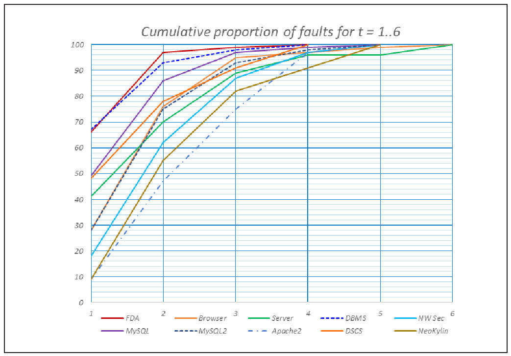
図41：t=1～6における故障の累積割合。横軸は組合せの強さt（1～6）、縦軸は累積割合（0～100%）。系列はFDA、Browser、Server、DBMS、NWSec、MySQL、MySQL2、Apache2、DSCS、NeoKylin。各系列はtの増加とともに累積割合が上昇し、t=6付近で100%に達する。線色・線種で系列を区別する。
Cumulative proportion of faults fort= 1..6
t=1～6における故障の累積割合
未レビュー訳100
100
未レビュー訳90
未レビュー訳80
未レビュー訳70
未レビュー訳60
未レビュー訳50
未レビュー訳40
未レビュー訳30
未レビュー訳20
未レビュー訳10
未レビュー訳0
未レビュー訳Roots of trust are highly reliable and secure
【右段】信頼の基点（root of trust）は、非常に信頼性が高く安全な
未レビュー訳FOR MORE INFORMATION, SEE:
【左段】詳細情報：
未レビュー訳hardware, frmware, and software components that
ハードウェア、ファームウェア、ソフトウェアの構成要素であり、
未レビュー訳https://csrc.nist.gov/projects/automated-
【左段】https://csrc.nist.gov/projects/automated-
未レビュー訳perform specifc, critical security functions. Because
特定の重要なセキュリティ機能を実行する。
未レビュー訳combinatorial-testing-for-software
【左段】combinatorial-testing-for-software
未レビュー訳roots of trust are inherently trusted, they must be
信頼の基点は本質的に信頼されるため、
未レビュー訳CONTACTS:
【左段】連絡先：
未レビュー訳secure by their design. As such, many roots of trust are implemented in hardware or protected frmware
設計によって安全性を確保しなければならない。そのため多くの信頼の基点は、ハードウェアに実装するか保護されたファームウェア内に置き、
未レビュー訳Dr. Rick Kuhn
【左段】Rick Kuhn博士
未レビュー訳Dr. Raghu Kacker
【左段】Raghu Kacker博士
未レビュー訳so that malware cannot tamper with the functions
マルウェアが、それらの提供機能を改ざんできないようにする。
未レビュー訳(301) 975-3337 (301) 975-2109
【左段】(301) 975-3337 (301) 975-2109
未レビュー訳they provide. Roots of trust provide a frm foundation
これらの機能を提供する。信頼の基点は、セキュリティと信頼を築くための堅固な基盤を提供し、
未レビュー訳kuhn@nist.gov raghu.kacker@nist.gov
【左段】kuhn@nist.gov raghu.kacker@nist.gov
未レビュー訳from which to build security and trust.
その上にセキュリティと信頼を構築できる。
未レビュー訳This project aims to encourage the use of roots
【右段】このプロジェクトは、コンピュータでの信頼の基点の利用を促進し、
未レビュー訳Roots of Trust
【左段見出し】信頼の基点
未レビュー訳of trust in computers to provide stronger security
より強固なセキュリティ保証を実現することを目指す。
未レビュー訳Modern computing devices consist of various assurances. A focus area for this work has been hardware, frmware, and software components at securing frmware. Previous work in this project multiple layers of abstraction (see Figure 42). Many described methods to protect boot frmware as part security and protection mechanisms are currently of the SP 800-147 series, now standardized by ISO/ rooted in software that, along with all underlying IEC JTC 1/SC 27, IT Security Techniques, as ISO/IEC components, must be trusted and not tampered 19678:2015, Information Technology – BIOS Protection with. A vulnerability in any of those components Guidelines. could compromise the trustworthiness of the security mechanisms that rely upon those components. A new efort in FY 2017 built upon that earlier work Stronger security assurances may be possible by focused on boot frmware to research and develop
【左段】現代のコンピューティング機器は、ハードウェア、ファームウェア、ソフトウェアの各構成要素からなり、複数の抽象化レイヤーを構成する（図42参照）。多くのセキュリティ／保護機構はソフトウェアに根ざしており、そのソフトウェアと下位のすべての構成要素を信頼し、改ざんから守る必要がある。構成要素のいずれかに脆弱性があれば、それに依存するセキュリティ機構の信頼性が損なわれるおそれがある。より強いセキュリティ保証を実現するには、 【右段】本取組では、ファームウェアの保護を重点的に研究してきた。以前の研究では、ブートファームウェアを保護する手法を示した。これはSP 800-147シリーズの一部として公開され、ISO/IEC JTC 1/SC 27（ITセキュリティ技術）によりISO/IEC 19678:2015「情報技術—BIOS保護ガイドライン」として標準化された。
未レビュー訳techniques and guidelines for securing frmware
【右段】同規格は、ファームウェアを保護するための技術とガイドラインを定める。
未レビュー訳grounding security mechanisms in roots of trust.
【左段】セキュリティ機構を信頼の基点に根付かせることで実現できる。
未レビュー訳throughouttheplatform.Releasedforpubliccomment inMay2017,SP800-193,PlatformResiliencyGuidelines, provides technical guidelines and recommendations supporting the resiliency of platform frmware and data against potentially destructive attacks. These draft guidelines promote resiliency in the platform by describing security mechanisms for protecting the platform against unauthorized changes, detecting unauthorized changes that occur, and secure recovery from attacks.
【右段】ファームウェア全体を保護するための手法・指針である。2017年5月に公開コメント用として発行されたSP 800-193「プラットフォームのレジリエンスに関するガイドライン」は、破壊的な攻撃からプラットフォームのファームウェアとデータのレジリエンスを確保するための技術指針と勧告を示す。この草案は、不正な変更からプラットフォームを保護し、発生した不正変更を検知し、攻撃から安全に復旧する仕組みを説明することで、レジリエンスの向上を促す。
未レビュー訳These new draft guidelines have been the basis for discussions with industry, standards organizations, and consortiums over technologies, standards, and specifcations that can improve the resiliency of computer platforms using roots of trust. Based on these discussions, NIST expects to fnalize SP 800-193 in FY 2018 and continue outreach to stakeholders in government, industry, and academia to encourage the development of more secure and reliable systems.
【右段】この新しいガイドライン草案をもとに、信頼の基点を用いてコンピュータプラットフォームのレジリエンスを高める技術・規格・仕様について、産業界、標準化団体、コンソーシアムと議論した。こうした議論を踏まえ、NISTは2018会計年度にSP 800-193を最終化し、政府、産業界、学術界の関係者への働きかけを続けて、より安全で信頼性の高いシステムの開発を促す予定である。
未レビュー訳FOR MORE INFORMATION, SEE:
【右段】詳細情報：
未レビュー訳https://csrc.nist.gov/projects/hardware-roots-of-trust
【右段】https://csrc.nist.gov/projects/hardware-roots-of-trust
未レビュー訳CONTACT:
【右段】連絡先：
未レビュー訳Mr. Andrew Regenscheid
【右段】Andrew Regenscheid氏
未レビュー訳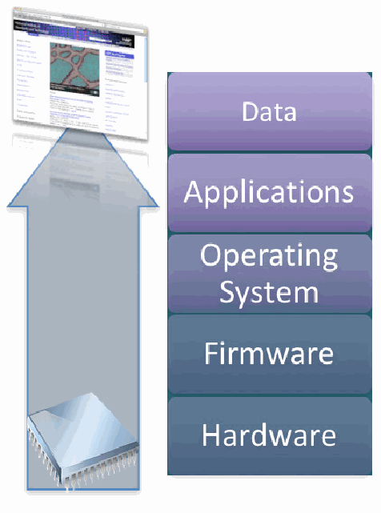
図42：モバイルコンピューティングデバイスの抽象化レイヤー。右側は下からハードウェア、ファームウェア、オペレーティングシステム、アプリケーション、データを積み重ねる。左側にはチップと画面を持つ機器の図があり、下位から上位の層へ向かう大きな矢印が示される。図中文字：データ、アプリケーション、オペレーティングシステム、ファームウェア、ハードウェア。
Figure 42: Layers of Abstraction within a Mobile
図42：モバイルコンピューティングデバイスにおける抽象化
未レビュー訳(301) 975-5155
【右段】(301) 975-5155
未レビュー訳Computing Device
レイヤー
未レビュー訳andrew.regenscheid@nist.gov
【右段】andrew.regenscheid@nist.gov
未レビュー訳ITL CYBERSECURITY PROGRAM AND PROJECTS | FY 2017
ITLサイバーセキュリティプログラムおよびプロジェクト｜2017会計年度
未レビュー訳With the data developed, usability researchers
【右段】開発したデータを用いて、ユーザビリティ研究者は
未レビュー訳USABILITY AND SECURITY
【左段見出し】ユーザビリティとセキュリティ
未レビュー訳have successfully answered both an operational assessment question, Why are users clicking or not clicking on phishing links and attachments?, as well
現場評価の問い「利用者がフィッシングリンクや添付ファイルをクリックする、またはクリックしないのはなぜか」に答えることに成功したほか、
未レビュー訳The goal of the Usable Security and Privacy team,
【左段】ITL情報アクセス部門（IAD）に属するユーザブルセキュリティ・プライバシーチームの目標は、
未レビュー訳as the larger institution’s trial deployment question,
組織全体で試験導入する際の問い、
未レビュー訳part of ITL’s Information Access Division (IAD), is to
政策立案者、システムエンジニア、
未レビュー訳Why are click rates so variable? In contrast to previous
「クリック率に大きな差が生じるのはなぜか」にも答えることである。従来の
未レビュー訳provide guidance for policymakers, system engineers
【左段】セキュリティ専門家に指針を示し、
未レビュー訳research that was primarily performed in laboratory
主に実験室内で実施された
未レビュー訳andsecurityprofessionalssothattheycanmakebetter
彼らがより良い
未レビュー訳settings, the present work examines 4.5 years of in
【右段】本研究では、実際の環境に
未レビュー訳decisions that enhance the usability of cybersecurity
サイバーセキュリティの使いやすさを高める意思決定を
未レビュー訳situ embedded simulated phishing emails. The results
【右段】実環境に埋め込まれた模擬フィッシングメールを4.5年間調査した。結果からは、
未レビュー訳in their organizations.
各組織で行えるよう支援する。
未レビュー訳have provided additional insights into the rationale that leads some users to become victims of phishing
フィッシング攻撃やマルウェアの被害者となる利用者の判断理由について、新たな知見が得られた。
未レビュー訳During FY 2017, the team contributed usability
【左段】2017会計年度、チームはユーザビリティ関連の章を
未レビュー訳attacks and malicious software. Given the variety of
【右段】フィッシングの前提条件や利用者の状況は多様であるため、
未レビュー訳chapters to SP 800-63, Digital Identity Guidelines,
SP 800-63「デジタルアイデンティティガイドライン」に寄稿し、
未レビュー訳phishing premises and user contexts, no amount of
どれほど訓練を重ねても、クリック率を一貫してゼロにすることはできない。
未レビュー訳marking the frst time that there were dedicated
【左段】同刊行物で専用の
未レビュー訳training will consistently reduce click rates to zero,
しかし、調査結果から、技術的な
未レビュー訳usability chapters in this publication.
【左段】同刊行物で専用のユーザビリティ章を設けたのは、これが初めてだった。
未レビュー訳but the fndings helped better understand the user’s role in early detection, combined with technological
【右段】しかし、調査結果は、技術的な
未レビュー訳Phishing Awareness Training and
【左段見出し】フィッシング対策の意識向上研修と
未レビュー訳solutions, and determined that awareness training and reporting should be fully supported and even
【右段】解決策と組み合わせた早期検知における利用者の役割を理解するうえで役立った。また、意識向上研修と報告を職場で全面的に支援し、さらに
未レビュー訳Evaluation
【左段見出し】評価
未レビュー訳incentivized in the workforce.
【右段】奨励すべきだと結論づけた。
未レビュー訳During FY 2017, the usability team completed
【左段】2017会計年度、ユーザビリティチームは
未レビュー訳FOR MORE INFORMATION, SEE:
【右段】詳細情報：
未レビュー訳a long-term operational phishing evaluation, demonstrating the importance of individual user https://www.nist.gov/itl context in explaining phishing email click decisions;
【左段】長期にわたる実運用フィッシング評価を完了し、フィッシングメールのクリック判断を説明するうえで、個々の利用者の状況が重要であることを示した。 【右段】https://www.nist.gov/itl
未レビュー訳CONTACTS:
【右段】連絡先：
未レビュー訳this collaboration provided the supporting data necessary to interpret the previously puzzling Mrs. Mary Theofanos Ms. Kristen Greene variability in click rates observed across prior years of (301) 975-5889
【左段】この連携により、過去数年間にわたる 【右段】Mary Theofanos氏、Kristen Greene氏（Mary：(301) 975-5889）
未レビュー訳(301) 975-8119
【右段】Kristen：(301) 975-8119
未レビュー訳operational phishing awareness training exercises. mary.theofanos@nist.gov kristen.greene@nist.gov
【左段】実運用のフィッシング意識向上訓練で観察された、これまで説明が難しかったクリック率の変動を説明する裏付けデータを提供した。 【右段】mary.theofanos@nist.gov kristen.greene@nist.gov
未レビュー訳The team performed research regarding attacks
【左段】チームは、フィッシングと呼ばれる攻撃について研究した。
未レビュー訳Ms. Michelle Steves
【右段】Michelle Steves氏
未レビュー訳known as phishing, where a sender initiates an email (301) 975-3537 containing fraudulent information with the intent of michelle.steves@nist.gov inducing the recipient to reveal sensitive information. Phishing continues to be an escalating cyber threat
【左段】フィッシングでは、送信者が詐欺的な情報を含むメールを送り、受信者に機密情報を開示させようとする。フィッシングは、 【右段】(301) 975-3537 michelle.steves@nist.gov
未レビュー訳Digital Identity Guidelines
【右段見出し】デジタルアイデンティティガイドライン
未レビュー訳facing organizations of all types and sizes, including industry, academia, and government. To help combat
【左段】産業界、学術界、政府機関を含む、あらゆる種類・規模の組織を脅かす。対策として、
未レビュー訳SP 800-63, Digital Identity Guidelines, was
【右段】SP 800-63「デジタルアイデンティティガイドライン」は
未レビュー訳the phishing threat, many organizations utilize
【左段】多くの組織は、
未レビュー訳fnalized and published in June, 2017. After more than
【右段】2017年6月に最終化され、公開された。それから1年以上を経て、
未レビュー訳phishing awareness training to make employees
【左段】フィッシング対策研修を使い、従業員に
未レビュー訳a year of work NIST has released a suite of documents
【右段】NISTは一連の文書を公開した。
未レビュー訳and students more aware of phishing threats and
さらに学生にもフィッシングの脅威と
未レビュー訳covering digital identity from initial risk assessment
【右段】デジタルアイデンティティを対象とし、初期リスク評価から
未レビュー訳consequences. Phishing awareness training systems
その影響をより認識させる。フィッシング対策研修システムは
未レビュー訳to deployment of federated identity solutions. The SP
フェデレーションIDソリューションの導入までを扱う。
未レビュー訳often use software to emulate real-world threats and
現実世界の脅威を模擬するソフトウェアを用いることが多く、
未レビュー訳suite has also been reorganized. SP 800-63-3 is the
【右段】文書群は再編成された。SP 800-63-3は
未レビュー訳thus train people to recognize and avoid falling victim
人々が攻撃を認識し、被害に遭わないよう訓練する。
未レビュー訳base document associated with SP 800-63A, 800-
SP 800-63A、SP 800-63B、
未レビュー訳to phishing attacks. Using this type of embedded
フィッシング攻撃を防止する。この種の組込み型
未レビュー訳63B, and 800-63C that covers the various components
SP 800-63Cに関連する基盤文書であり、
未レビュー訳training system, researchers in the usability group
訓練システムを用いて、ユーザビリティグループの研究者は
未レビュー訳of a digital identity system.
デジタルアイデンティティシステムの各構成要素を扱う。
未レビュー訳partnered with NIST’s OISM (Ofce of Information Systems Management) and OSHE (Ofce of Safety In 2004, NIST published the initial version Health and Environment) to complete three phishing of Special Publication (SP) 800-63, Electronic awareness training exercises with corresponding Authentication Guideline. Since then, two revisions surveys, culminating a multi-year phishing awareness have been published, SP 800-63-2 being published evaluation.
【左段】NIST情報システム管理室（OISM）および安全衛生・環境室（OSHE）と協力し、フィッシング対策研修を3回実施した。各回でアンケートを行い、複数年にわたるフィッシング意識向上評価をまとめた。 【右段】2004年、NISTはSP 800-63「電子認証ガイドライン」の初版を公開した。その後2回改訂され、SP 800-63-2は
未レビュー訳in August 2013. In late 2015, NIST started considering a signifcant update to SP 800-63-2 in response to
2013年8月に公開された。2015年後半、NISTはSP 800-63-2の大幅な更新を検討し始めた。これは、
未レビュー訳NIST/ITL CYBERSECURITY PROGRAM ANNUAL REPORT 2017
NIST/ITL サイバーセキュリティプログラム年次報告書 2017
未レビュー訳market innovation, evolving federal requirements, development process can lead to authentication and an advanced threat landscape targeting remote solutions that are secure and usable while addressing authentication. As the frst step in revising the users’ authentication needs and organizations’ publication, NIST solicited recommendations from business goals. For SP 800-63C, Digital Identity experts (including those in industry, government, and Guidelines: Federation and Assertions, the usability educational felds) on which sections of the document chapter provides considerations and guidance to needed revision. Usability surfaced in many comments understand user perspectives on online identity, trust as always latent in many security considerations. and benefts, and user mental models and beliefs in The usability team was invited to participate in and order to promote good user experience with federated contribute to this year-long major revision efort. The identity systems. team participated in weekly meetings with the project
【左段】市場の革新、進化する連邦要件、リモート認証を標的とする高度な脅威環境を踏まえ、NISTは刊行物の改訂に着手した。最初の段階として、産業界、政府、教育分野の専門家に、どの章を改訂すべきか意見を求めた。寄せられたコメントから、多くのセキュリティ上の論点にはユーザビリティの観点が潜在していることが分かった。ユーザビリティチームは、1年がかりの大規模改訂に参加・貢献するよう招かれ、プロジェクトチームとの週次会議に参加した。 【右段】改訂プロセスでは、利用者の認証ニーズと組織の事業目標に対応しつつ、安全で使いやすい認証ソリューションを実現できる。SP 800-63C「デジタルアイデンティティガイドライン：フェデレーションとアサーション」のユーザビリティ章は、オンラインアイデンティティ、信頼と便益に関する利用者の視点、ユーザーのメンタルモデルや信念についての考慮事項と指針を示し、フェデレーションIDシステムで良好なユーザー体験を促す。
未レビュー訳FOR MORE INFORMATION, SEE:
【右段】詳細情報：
未レビュー訳team, performed literature reviews, compiled results from our own usable security research, and wrote https://csrc.nist.gov/publications/detail/sp/800-usability chapters in each of the suite of documents in 63/3/fnal the new SP 800-63.
【左段】チームは文献レビューを行い、独自のユーザブルセキュリティ研究の結果をまとめ、新しいSP 800-63シリーズの各文書にユーザビリティ章を執筆した。 【右段】https://csrc.nist.gov/publications/detail/sp/800-63/3/final
未レビュー訳CONTACTS:
【右段】連絡先：
未レビュー訳Specifcally, for SP 800-63A, Digital Identity Mrs. Mary Theofanos Dr. Yee-Yin Choong Guidelines: Enrollment and Identity Proofng, the (301) 975-5889
【左段】具体的には、SP 800-63A「デジタルアイデンティティガイドライン：登録と本人確認」のユーザビリティ章は、登録・本人確認に関する使いやすさへの配慮を実装者に促すために作成された。 【右段】Mary Theofanos氏（(301) 975-5889）、
未レビュー訳(301) 975-3248
【右段】Yee-Yin Choong博士（(301) 975-3248）
未レビュー訳usability chapter was written to raise implementers’ mary.theofanos@nist.gov yee-yin.choong@nist.gov awareness of usability considerations associated with enrollment and identity proofng. For SP 800- Ms. Kristen Greene 63B, Digital Identity Guidelines: Authentication (301) 975-8119 and Lifecycle Management, the usability chapter kristen.greene@nist.gov provides usability considerations and guidance on authentication, as integrating usability into the
【左段】SP 800-63B「デジタルアイデンティティガイドライン：認証とライフサイクル管理」のユーザビリティ章は、認証に関する考慮事項と指針を示し、認証プロセスにユーザビリティを組み込む方法を扱う。 【右段】mary.theofanos@nist.gov yee-yin.choong@nist.gov Kristen Greene氏（(301) 975-8119、kristen.greene@nist.gov）
未レビュー訳ITL CYBERSECURITY PROGRAM AND PROJECTS | FY 2017
ITLサイバーセキュリティプログラムおよびプロジェクト｜2017会計年度
HONORS AND AWARDS
栄誉と受賞
未レビュー訳This section recognizes ITL staf who have received honors and/or awards for their cybersecurity accomplishments.
この節では、サイバーセキュリティの功績により表彰・受賞したITL職員を紹介する。
未レビュー訳原本PDFの抜粋画像
NIST/ITL CYBERSECURITY PROGRAM ANNUAL REPORT 2017
NIST/ITL サイバーセキュリティプログラム年次報告書 2017
未レビュー訳NIST Bronze Medal Award
NIST銅賞
The Bronze Medal Award is the highest recognition awarded by NIST. The award, approved by the Director, recognizes work that has resulted in more efective and efcient management systems as well as the demonstration of unusual initiative or creative ability in the development and improvement of methods and procedures. It is also given for signifcant contributions afecting major programs, scientifc accomplishments, and superior performance of assigned tasks for at least fve consecutive years.
銅賞は、NISTが授与する最高位の表彰である。所長の承認を得て授与され、より効果的・効率的な管理システムを実現した業績、方法・手順の開発や改善における並外れた主体性または創造力を認める。また、主要プログラムへの重要な貢献、科学的業績、少なくとも5年連続で割り当てられた業務を優れた水準で遂行したことにも授与される。
未レビュー訳Jef Cichonski (Applied Cybersecurity Division); Lee Badger, Mike Bartock, David Cooper, Hildegard (Hildy) Ferraiolo, and Murugiah Souppaya (Computer Security Division); Paul Black and Barbara Guttman (Software and Systems Division).
Jeff Cichonski（応用サイバーセキュリティ部門）、Lee Badger、Mike Bartock、David Cooper、Hildegard（Hildy）Ferraiolo、Murugiah Souppaya（コンピュータセキュリティ部門）、Paul Black、Barbara Guttman（ソフトウェア・システム部門）。
NIST銅賞を受賞した職員7名の集合写真。屋外で前列と後列に分かれて立つ。キャプション記載の後列（左から）：B. Guttman、L. Badger、J. Cichonski、M. Bartock。前列：P. Black、H. Ferraiolo、D. Cooper。不在：M. Souppaya。
(Left to Right) Back row: B. Guttman, L. Badger, J. Cichonski, M. Bartock Front row: P. Black, H. Ferraiolo, D. Cooper Absent: M. Souppaya
（左から）後列：B. Guttman、L. Badger、J. Cichonski、M. Bartock。前列：P. Black、H. Ferraiolo、D. Cooper。不在：M. Souppaya。
未レビュー訳The group is recognized for addressing a series of near-term needs and providing a long-term strategy to improve our nation’s cybersecurity. The White House-led Cybersecurity National Action Plan of January 2016 prioritized critical cybersecurity areas and directed NIST to produce tools, references, and guidelines to help organizations strengthen the identifcation and authentication of privileged users, assist in recovering from cybersecurity incidents, self-assess their security capabilities, and identify methods to reduce vulnerabilities in software. The items developed by this team were exceptionally clear, consistent, and actionable, and have led to cybersecurity improvements in all sectors.
このグループは、短期的なニーズに応え、米国のサイバーセキュリティを改善する長期戦略を示した功績により表彰された。2016年1月のホワイトハウス主導の「サイバーセキュリティ国家行動計画」は、重要なサイバーセキュリティ分野に優先順位を付け、NISTに対して、組織が特権ユーザーの識別と認証を強化し、サイバーインシデントから復旧し、セキュリティ能力を自己評価し、ソフトウェアの脆弱性を減らす方法を特定するためのツール、参考資料、ガイドラインを作成するよう指示した。このチームが作成した資料は明快で一貫性があり、実行可能性に優れ、あらゆる分野のサイバーセキュリティ改善につながった。
未レビュー訳HONORS AND AWARDS | FY 2017
栄誉と受賞｜2017会計年度
Donna Dodson氏の肖像写真。肩までの構図で、暗色のジャケットを着て微笑んでいる。
Donna Dodson | One of CyberScoop’s 2017 Top Women in Cybersecurity
Donna Dodson｜CyberScoop「2017年サイバーセキュリティ分野の注目女性」の一人
未レビュー訳Awarding Organization: CyberScoop
表彰団体：CyberScoop
未レビュー訳Donna Dodson is the NIST chief cybersecurity advisor. Donna has been named one of CyberScoop’s 2017 Top Women in Cybersecurity! Donna Dodson has multiple roles at NlST. In addition to being the chief cybersecurity advisor to Acting NIST Director Kent Rochford, she is associate director of the Information Technology Laboratory — one of six labs at NIST — and director of the National Cybersecurity Center of Excellence.
Donna Dodson氏は、NISTの最高サイバーセキュリティ顧問である。CyberScoopが選ぶ「2017年サイバーセキュリティ分野の注目女性」の一人に選出された。NISTで複数の役割を担い、NIST長官代理Kent Rochford氏の最高サイバーセキュリティ顧問に加え、情報技術研究所（ITL）の副所長、国家サイバーセキュリティ・エクセレンス・センター（NCCoE）の所長を務める。
未レビュー訳See NIST Press Release: https://www.nist.gov/about-us/nist-awards/donna-dodson-one-cyberscoops-2017-top-women-cybersecurity
NISTのプレスリリース：https://www.nist.gov/about-us/nist-awards/donna-dodson-one-cyberscoops-2017-top-women-cybersecurity
未レビュー訳Source: https://www.cyberscoop.com/top-women-in-cybersecurity-donna-dodson/
出典：https://www.cyberscoop.com/top-women-in-cybersecurity-donna-dodson/
未レビュー訳Rodney Petersen | 2016 Government Leadership of the Year
Rodney Petersen｜2016年「政府リーダーシップ・オブ・ザ・イヤー」賞
未レビュー訳Awarding Organization: The Colloquium for Information Systems Security Education (CISSE)
表彰団体：情報システムセキュリティ教育コロキウム（CISSE）
未レビュー訳Rodney Petersen氏の肖像写真。スーツ姿で正面を向いている。
Rodney Petersen is the director of the National Initiative for Cybersecurity Education (NICE) at the National Institute of Standards and Technology (NIST). He previously served as the Managing Director of the EDUCAUSE Washington Ofce and a Senior Government Relations Ofcer.
Rodney Petersen氏は、NISTの国家サイバーセキュリティ教育イニシアティブ（NICE）所長である。以前は、EDUCAUSEワシントン事務所のマネージングディレクターおよび政府関係担当上級職員を務めた。
未レビュー訳He founded and directed the EDUCAUSE Cybersecurity Initiative and was the lead staf liaison for the Higher Education Information Security Council. Prior to joining EDUCAUSE, he worked at two diferent times for the University of Maryland - frst as Campus Compliance Ofcer in the Ofce of the President and later as the Director of IT Policy and Planning in the Ofce of the Vice President and Chief Information Ofcer. He also completed one year of federal service as an Instructor in the Academy for Community Service for AmeriCorps’ National Civilian Community Corps. He is the co-editor of a book entitled “Computer and Network Security in Higher
同氏はEDUCAUSEサイバーセキュリティ・イニシアティブを創設・運営し、高等教育情報セキュリティ評議会の主担当連絡員を務めた。EDUCAUSEに加わる前は、メリーランド大学で異なる時期に2つの職務を担い、初めは学長室のキャンパスコンプライアンス担当官、その後は副学長兼最高情報責任者室のIT政策・計画部長を務めた。また、米国アメリカズ・ナショナル市民部隊の地域奉仕アカデミーで、1年間、連邦職員として講師を務めた。『Computer and Network Security in Higher
未レビュー訳Education.” He received his law degree from Wake Forest University and bachelors degrees in political science and business administration from Alma College. He was awarded a certifcate as an Advanced Graduate Specialist in Education Policy, Planning, and Administration from the University of Maryland.
Education』の共同編集者である。ウェイクフォレスト大学で法務博士号を取得し、アルマ大学で政治学および経営学の学士号を取得した。また、メリーランド大学から教育政策・計画・運営の上級大学院専門家証明書を取得した。
未レビュー訳Source: https://cisse.info/about/award-recipients/634-2016-government-leadership-of-the-year-rodney-petersen
出典：https://cisse.info/about/award-recipients/634-2016-government-leadership-of-the-year-rodney-petersen
未レビュー訳NIST/ITL CYBERSECURITY PROGRAM ANNUAL REPORT 2017
NIST/ITL サイバーセキュリティプログラム年次報告書 2017
NICEの国際的リーダーシップ賞受賞者6名の集合写真。室内で横一列に並び、後ろにNICE（国家サイバーセキュリティ教育イニシアティブ）のバナーがある。写真captionの左から：William（Bill）Newhouse、Marian Merritt、Rodney Petersen、Danielle Santos、Clarence Williams、Davina Pruitt-Mingle。
Rodney Petersen and NICE Team -Received the Exemplary International Leadership in Cybersecurity Education and Workforce Development Award
Rodney Petersen氏とNICEチーム：サイバーセキュリティ教育・人材育成における優れた国際的リーダーシップ賞を受賞
未レビュー訳(Left to Right): William (Bill) Newhouse, Marian Merritt. Rodney Petersen, Danielle Santos, Clarence Williams, and Davina Pruitt-Mingle
（左から）William（Bill）Newhouse、Marian Merritt、Rodney Petersen、Danielle Santos、Clarence Williams、Davina Pruitt-Mingle
未レビュー訳Awarding Organization: Cyber New Brunswick of Canada
表彰団体：カナダのCyber New Brunswick
未レビュー訳The National Initiative for Cybersecurity Education (NICE) team, which received an award for Exemplary International Leadership in Cybersecurity Education and Workforce Development from Cyber New Brunswick at Canada’s inaugural Cybersecurity Education and Workforce Summit (CyberSmart 2017).
カナダ初のサイバーセキュリティ教育・人材サミット（CyberSmart 2017）で、Cyber New Brunswickから「サイバーセキュリティ教育・人材育成における優れた国際的リーダーシップ賞」を受賞した、国家サイバーセキュリティ教育イニシアチブ（NICE）チーム。
Source: https://www.nist.gov/about-us/nist-awards/rodney-petersen-and-nice-team-received-exemplary-international-leadership
出典：https://www.nist.gov/about-us/nist-awards/rodney-petersen-and-nice-team-received-exemplary-international-leadership
未レビュー訳The National Initiative for Cybersecurity Education (NICE) was awarded a recognition plaque at the National Cybersecurity Summit
国家サイバーセキュリティ教育イニシアティブ（NICE）は、国家サイバーセキュリティ・サミットで表彰の盾を授与された。
未レビュー訳Awarding Organization: National Cybersecurity Summit
表彰団体：国家サイバーセキュリティ・サミット
未レビュー訳The National Initiative for Cybersecurity Education (NICE) Program Ofce received an honor of recognition at the National Cybersecurity Summit in Huntsville, Alabama. NICE received this award for its leadership in advancing cybersecurity education, training, and workforce development eforts for the nation.
NICEプログラム室は、アラバマ州ハンツビルで開催された国家サイバーセキュリティ・サミットで表彰を受けた。NICEは、米国全体のサイバーセキュリティ教育、研修、人材育成の推進におけるリーダーシップが評価された。
未レビュー訳HONORS AND AWARDS | FY 2017
栄誉と受賞｜2017会計年度
ITL CYBERSECURITY PROGRAM PUBLICATIONS RELEASED IN FY 2017
2017会計年度に公開されたITLサイバーセキュリティプログラムの刊行物
未レビュー訳This section provides a compilation of ITL cybersecurity publications released during FY 2017 (from October 1, 2016 to September 30, 2017). The frst portion lists technical documents, while the second portion provides abstracts that briefy summarize each document (technical and non-technical).
この節では、2017会計年度（2016年10月1日～2017年9月30日）に公開されたITLのサイバーセキュリティ刊行物をまとめる。前半には技術文書を、後半には各文書（技術文書・非技術文書）の概要を示す。
未レビュー訳原本PDFの抜粋画像
NIST/ITL CYBERSECURITY PROGRAM ANNUAL REPORT 2017
NIST/ITL サイバーセキュリティプログラム年次報告書 2017
未レビュー訳DRAFT PUBLICATIONS
草案刊行物
There were no draft FIPS released during FY 2017.
2017会計年度には、FIPSの草案は公開されなかった。
| TABLE 5: SPECIAL PUBLICATIONS (SPs) | ||
| PUBLICATION NUMBER | TITLE | DRAFT RELEASED |
| SP 800-193 | Platform Firmware Resiliency Guidelines | May 2017 |
| SP 800-191 | The NIST Defnition of Fog Computing | August 2017 |
| SP 800-190 (2 Drafts) | Application Container Security Guide | April 2017 July 2017 |
| SP 800-188 (2nd Draft) | De-Identifying Government Datasets | December 2016 |
| SP 800-187 | Guide to LTE Security | November 2016 |
| SP 800-177 Rev. 1 | Trustworthy Email | September 2017 |
| SP 800-125A (2nd Draft) | Security Recommendations for Hypervisor Deployment | September 2017 |
| SP 800-70 Rev. 4 | National Checklist Program for IT Products: Guidelines for Checklist Users and Developers | August 2017 |
| SP 800-67 Rev. 2 | Recommendation for the Triple Data Encryption Algorithm (TDEA) Block Cipher | July 2017 |
| SP 800-56C Rev. 1 | Recommendation for Key Derivation through Extraction- then-Expansion | August 2017 |
| SP 800-56A Rev. 3 | Recommendation for Pair-Wise Key-Establishment Schemes Using Discrete Logarithm Cryptography | August 2017 |
| SP 800-53 Rev. 5 | Security and Privacy Controls for Information Systems and Organizations | August 2017 |
| SP 800-37 Rev. 2 (Discussion Draft) | Risk Management Framework for Information Systems and Organizations: A System Life Cycle Approach for Security and Privacy | September 2017 |
| SP 1800-12 | Derived Personal Identity Verifcation (PIV) Credentials | September 2017 |
| SP 1800-11 | Data Integrity: Recovering from Ransomware and Other Destructive Events | September 2017 |
| SP 1800-9 | Access Rights Management for the Financial Services Sector | August 2017 |
| SP 1800-8 | Securing Wireless Infusion Pumps in Healthcare Delivery Organizations | May 2017 |
| SP 1800-7 | Situational Awareness for Electric Utilities | February 2017 |
| SP 1800-6 | Domain Name Systems-Based Electronic Mail Security | November 2016 |
| SP 1800-3 (2nd Draft) | Attribute Based Access Control | September 2017 |
原本PDFの抜粋画像
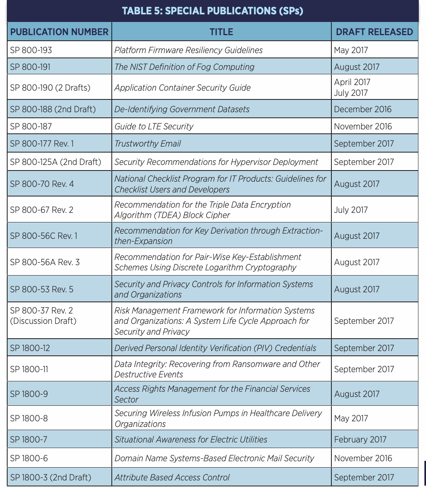
| 表5：特別刊行物（SP） | ||
| 刊行物番号 | タイトル | 草案公開時期 |
| SP 800-193 | プラットフォーム・ファームウェア・レジリエンス・ガイドライン | 2017年5月 |
| SP 800-191 | NISTによるフォグコンピューティングの定義 | 2017年8月 |
| SP 800-190（草案2件） | アプリケーションコンテナ・セキュリティガイド | 2017年4月、2017年7月 |
| SP 800-188（第2次草案） | 政府データセットの非識別化 | 2016年12月 |
| SP 800-187 | LTEセキュリティガイド | 2016年11月 |
| SP 800-177 Rev. 1 | 信頼できる電子メール | 2017年9月 |
| SP 800-125A（第2次草案） | ハイパーバイザー導入に関するセキュリティ勧告 | 2017年9月 |
| SP 800-70 Rev. 4 | IT製品向け国家チェックリストプログラム：チェックリスト利用者・開発者向けガイドライン | 2017年8月 |
| SP 800-67 Rev. 2 | トリプルデータ暗号化アルゴリズム（TDEA）ブロック暗号に関する勧告 | 2017年7月 |
| SP 800-56C Rev. 1 | 抽出後に拡張する鍵導出に関する勧告 | 2017年8月 |
| SP 800-56A Rev. 3 | 離散対数暗号を用いたペア単位の鍵確立方式に関する勧告 | 2017年8月 |
| SP 800-53 Rev. 5 | 情報システムおよび組織のセキュリティ・プライバシー管理策 | 2017年8月 |
| SP 800-37 Rev. 2（協議用草案） | 情報システムおよび組織のリスク管理フレームワーク：セキュリティとプライバシーのためのシステムライフサイクル・アプローチ | 2017年9月 |
| SP 1800-12 | 派生型個人識別検証（PIV）資格情報 | 2017年9月 |
| SP 1800-11 | データ完全性：ランサムウェアその他の破壊的事象からの復旧 | 2017年9月 |
| SP 1800-9 | 金融サービス部門向けアクセス権管理 | 2017年8月 |
| SP 1800-8 | 医療提供組織における無線輸液ポンプの保護 | 2017年5月 |
| SP 1800-7 | 電力事業者の状況認識 | 2017年2月 |
| SP 1800-6 | ドメインネームシステム（DNS）ベースの電子メールセキュリティ | 2016年11月 |
| SP 1800-3（第2次草案） | 属性ベースのアクセス制御 | 2017年9月 |
ITL CYBERSECURITY PUBLICATIONS | FY 2017
ITLサイバーセキュリティ刊行物｜2017会計年度
| TABLE 6: NIST INTERNAL OR INTERAGENCY REPORTS (NISTIRs) | ||
| PUBLICATION NUMBER | TITLE | DRAFT RELEASED |
| NISTIR 8179 | Criticality Analysis Process Model: Prioritizing Systems and Components | July 2017 |
| NISTIR 8176 | Security Assurance Challenges for Container Deployment | August 2017 |
| NISTIR 8170 | The Cybersecurity Framework: Implementation Guidance for Federal Agencies | May 2017 |
| NISTIR 8151 | Dramatically Reducing Software Vulnerabilities: Report to the White House Ofce of Science and Technology Policy | October 2016 |
| NISTIR 8139 | Identifying Uniformity with Entropy and Divergence | February 2017 |
原本PDFの抜粋画像
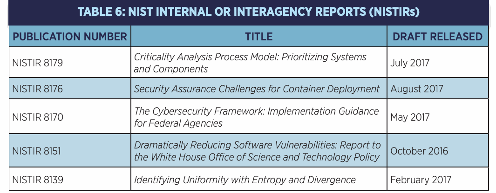
| 表6：NIST内部報告書または省庁間報告書（NISTIR） | ||
| 刊行物番号 | タイトル | 草案公開時期 |
| NISTIR 8179 | 重要度分析プロセスモデル：システムおよびコンポーネントの優先順位付け | 2017年7月 |
| NISTIR 8176 | コンテナ導入におけるセキュリティ保証の課題 | 2017年8月 |
| NISTIR 8170 | サイバーセキュリティ・フレームワーク：連邦機関向け実装ガイダンス | 2017年5月 |
| NISTIR 8151 | ソフトウェア脆弱性の大幅削減：ホワイトハウス科学技術政策局への報告書 | 2016年10月 |
| NISTIR 8139 | エントロピーとダイバージェンスによる一様性の識別 | 2017年2月 |
FINAL APPROVED PUBLICATIONS
最終承認刊行物
There were no FIPS released during FY 2017.
2017会計年度にはFIPSは公開されなかった。
NIST/ITL CYBERSECURITY PROGRAM ANNUAL REPORT 2017
NIST/ITL サイバーセキュリティプログラム年次報告書 2017
| TABLE 7: FINAL SPs | ||
| PUBLICATION NUMBER | TITLE | FINAL RELEASED |
| SP 800-195 | 2016 NIST/ITL Cybersecurity Program Annual Report | September 2017 |
| SP 800-192 | Verifcation and Test Methods for Access Control Policies/ Models | June 2017 |
| SP 800-190 | Application Container Security Guide | September 2017 |
| SP 800-185 | SHA-3 Derived Functions: cSHAKE, KMAC, TupleHash, and ParallelHash | December 2016 |
| SP 800-184 | Guide for Cybersecurity Event Recovery | December 2016 |
| SP 800-181 | National Initiative for Cybersecurity Education (NICE) Cybersecurity Workforce Framework | August 2017 |
| SP 800-179 | Guide to Securing Apple OS X 10.10 Systems for IT Professionals: A NIST Security Confguration Checklist | December 2016 |
| SP 800-178 | A Comparison of Attribute Based Access Control (ABAC) Standards for Data Service Applications: Extensible Access Control Markup Language (XACML) and Next Generation Access Control (NGAC) | October 2016 |
| SP 800-171 Rev. 1 | Protecting Controlled Unclassifed Information in Nonfederal Information Systems and Organizations | December 2016 |
| SP 800-160 | Systems Security Engineering: Considerations for a Multidisciplinary Approach in the Engineering of Trustworthy Secure Systems | November 2016 |
| SP 800-150 | Guide to Cyber Threat Information Sharing | October 2016 |
| SP 800-121 Rev. 2 | Guide to Bluetooth Security | May 2017 |
| SP 800-70 Rev. 3 (update) | National Checklist Program for IT Products: Guidelines for Checklist Users and Developers | December 2016 |
| SP 800-63-3 | Digital Identity Guidelines | June 2017 |
| SP 800-63A | Digital Identity Guidelines: Enrollment and Identity Proofng | June 2017 |
| SP 800-63B | Digital Identity Guidelines: Authentication and Lifecycle Management | June 2017 |
| SP 800-63C | Digital Identity Guidelines: Federation and Assertions | June 2017 |
| SP 800-38B (update) | Recommendation for Block Cipher Modes of Operation: the CMAC Mode for Authentication | October 2016 |
| SP 800-12 Rev. 1 | An Introduction to Information Security | June 2017 |
| SP 500-320 | Report of the Workshop on Software Measures and Metrics to Reduce Security Vulnerabilities (SwMM- RSV) | October 2016 |
原本PDFの抜粋画像
| 表7：最終版SP | ||
| 刊行物番号 | タイトル | 最終公開日 |
| SP 800-195 | 2016年NIST/ITLサイバーセキュリティプログラム年次報告書 | 2017年9月 |
| SP 800-192 | アクセス制御ポリシー／モデルの検証・試験方法 | 2017年6月 |
| SP 800-190 | アプリケーションコンテナ・セキュリティガイド | 2017年9月 |
| SP 800-185 | SHA-3派生関数：cSHAKE、KMAC、TupleHash、ParallelHash | 2016年12月 |
| SP 800-184 | サイバーセキュリティ事象からの復旧ガイド | 2016年12月 |
| SP 800-181 | 国家サイバーセキュリティ教育イニシアティブ（NICE）サイバーセキュリティ人材フレームワーク | 2017年8月 |
| SP 800-179 | IT専門家向けApple OS X 10.10システム保護ガイド：NISTセキュリティ設定チェックリスト | 2016年12月 |
| SP 800-178 | データサービスアプリケーション向け属性ベースアクセス制御（ABAC）標準の比較：拡張アクセス制御マークアップ言語（XACML）と次世代アクセス制御（NGAC) | 2016年10月 |
| SP 800-171 Rev. 1 | 連邦外の情報システムおよび組織における管理対象非機密情報（CUI）の保護 | 2016年12月 |
| SP 800-160 | システムセキュリティ工学：信頼できるセキュアシステムの工学における学際的アプローチの考慮事項 | 2016年11月 |
| SP 800-150 | サイバー脅威情報共有ガイド | 2016年10月 |
| SP 800-121 Rev. 2 | Bluetoothセキュリティガイド | 2017年5月 |
| SP 800-70 Rev. 3（更新） | IT製品向け国家チェックリストプログラム：チェックリスト利用者・開発者向けガイドライン | 2016年12月 |
| SP 800-63-3 | デジタルアイデンティティガイドライン | 2017年6月 |
| SP 800-63A | デジタルアイデンティティガイドライン：登録と本人確認 | 2017年6月 |
| SP 800-63B | デジタルアイデンティティガイドライン：認証とライフサイクル管理 | 2017年6月 |
| SP 800-63C | デジタルアイデンティティガイドライン：フェデレーションとアサーション | 2017年6月 |
| SP 800-38B（更新） | ブロック暗号の運用モードに関する勧告：認証のためのCMACモード | 2016年10月 |
| SP 800-12 Rev. 1 | 情報セキュリティ入門 | 2017年6月 |
| SP 500-320 | ソフトウェア尺度・指標によるセキュリティ脆弱性削減ワークショップ報告書（SwMM-RSV） | 2016年10月 |
ITL CYBERSECURITY PUBLICATIONS | FY 2017
ITLサイバーセキュリティ刊行物｜2017会計年度
| TABLE 8: FINAL NISTIRs | ||
| PUBLICATION NUMBER | TITLE | FINAL RELEASED |
| NISTIR 8192 | Enhancing Resilience of the Internet and Communications Ecosystem: a NIST Workshop Proceedings | September 2017 |
| NISTIR 8183 | Cybersecurity Framework Manufacturing Profle | August 2017 |
| NISTIR 8165 | Impact of Code Complexity on Software Analysis | February 2017 |
| NISTIR 8151 | Dramatically Reducing Software Vulnerabilities: Report to the White House Ofce of Science and Technology Policy | November 2016 |
| NISTIR 8136 | An Overview of Mobile Application Vetting Services for Public Safety | January 2017 |
| NISTIR 8114 | Report on Lightweight Cryptography | March 2017 |
| NISTIR 8062 | An Introduction to Privacy Engineering and Risk Management in Federal Systems | January 2017 |
| NISTIR 8011 Volume 1 | Automation Support for Security Control Assessments: Overview | June 2017 |
| NISTIR 8011 Volume 2 | Automation Support for Security Control Assessments: Hardware Asset Management | June 2017 |
| NISTIR 7621 Rev. 1 | Small Business Information Security: The Fundamentals | November 2016 |
原本PDFの抜粋画像
| 表8：最終版NISTIR | ||
| 刊行物番号 | タイトル | 最終公開日 |
| NISTIR 8192 | インターネットおよび通信エコシステムのレジリエンス強化：NISTワークショップ論文集 | 2017年9月 |
| NISTIR 8183 | サイバーセキュリティ・フレームワーク製造業プロファイル | 2017年8月 |
| NISTIR 8165 | コードの複雑さがソフトウェア分析に及ぼす影響 | 2017年2月 |
| NISTIR 8151 | ソフトウェア脆弱性の大幅削減：ホワイトハウス科学技術政策局への報告書 | 2016年11月 |
| NISTIR 8136 | 公共安全向けモバイルアプリ審査サービスの概要 | 2017年1月 |
| NISTIR 8114 | 軽量暗号に関する報告書 | 2017年3月 |
| NISTIR 8062 | 連邦システムにおけるプライバシー工学とリスク管理の入門 | 2017年1月 |
| NISTIR 8011 第1巻 | セキュリティ管理策評価の自動化支援：概要 | 2017年6月 |
| NISTIR 8011 第2巻 | セキュリティ管理策評価の自動化支援：ハードウェア資産管理 | 2017年6月 |
| NISTIR 7621 Rev. 1 | 中小企業の情報セキュリティ：基礎 | 2016年11月 |
ITL BULLETINS
ITL速報
| TABLE 9: FY 2017 ITL BULLETINS | |
| PUBLICATION DATE | BULLETIN TITLE |
| September 2017 | Updating the Keys for DNS Security |
| August 2017 | Understanding the Major Update to NIST SP 800-63: Digital Identity Guidelines |
| July 2017 | Updated NIST Guidance for Bluetooth Security |
| June 2017 | Toward Standardizing Lightweight Cryptography |
| May 2017 | Cyber-Threat Intelligence and Information Sharing |
| April 2017 | Building the Bridge Between Privacy and Cybersecurity for Federal Systems |
| March 2017 | Fundamentals of Small Business Information Security |
| February 2017 | Guide for Cybersecurity Incident Recovery |
| January 2017 | Dramatically Reducing Software Vulnerabilities |
| December 2016 | Rethinking Security Through Systems Security Engineering |
| November 2016 | Exploring the Next Generation of Access Control Methodologies |
| October 2016 | Making Email Trustworthy |
原本PDFの抜粋画像
| 表9：ITLの2017会計年度速報 | |
| 公開年月 | 速報タイトル |
| 2017年9月 | DNSセキュリティ用鍵の更新 |
| 2017年8月 | NIST SP 800-63大幅改訂の理解：デジタルアイデンティティガイドライン |
| 2017年7月 | Bluetoothセキュリティに関するNISTガイダンスの更新 |
| 2017年6月 | 軽量暗号の標準化に向けて |
| 2017年5月 | サイバー脅威インテリジェンスと情報共有 |
| 2017年4月 | 連邦システムのプライバシーとサイバーセキュリティをつなぐ |
| 2017年3月 | 中小企業の情報セキュリティの基礎 |
| 2017年2月 | サイバーセキュリティインシデント復旧ガイド |
| 2017年1月 | ソフトウェア脆弱性の大幅削減 |
| 2016年12月 | システムセキュリティ工学を通じたセキュリティの再考 |
| 2016年11月 | 次世代アクセス制御方式の探求 |
| 2016年10月 | 電子メールを信頼できるものにする |
NIST/ITL CYBERSECURITY PROGRAM ANNUAL REPORT 2017
NIST/ITL サイバーセキュリティプログラム年次報告書 2017
OTHER NIST PUBLICATIONS
その他のNIST刊行物
NIST released other publications in FY 2017, as “White Papers,” and as Concept Papers and Project Descriptions from NCCoE.
NISTは2017会計年度に、ホワイトペーパー、およびNCCoEのコンセプトペーパー・プロジェクト説明書として、ほかの刊行物も公開した。
| TABLE 10: OTHER FY 2017 PUBLICATIONS | ||
| PUBLICATION TYPE | PUBLICATION TITLE | RELEASE DATE |
| Project Description (Final) (Draft) | Capabilities Assessment for Securing Manufacturing Industrial Control Systems | March 2017 November 2016 |
| Project Description (Final) | Mobile Application Single Sign-On: for Public Safety and First Responders | November 2016 |
| Project Description (Final) (Draft) | Secure Inter-Domain Routing--Part 1: Route Hijacks | July 2017 May 2017 |
| Project Description (Final) (Draft) | Securing Property Management Systems: Cybersecurity for the Hospitality Sector | September 2017 April 2017 |
| Project Description (Draft) | Trusted Geolocation in the Cloud | May 2017 |
| White Paper (Final) | Baldrige Cybersecurity Excellence Builder: Key questions for improving your organization's cybersecurity performance | April 2017 |
| White Paper (Draft) | Cybersecurity Framework Manufacturing Profle | March 2017 |
| White Paper (Draft) | Framework for Improving Critical Infrastructure Cybersecurity, Version 1.1 | January 2017 |
| White Paper (Draft) | Profles for the Lightweight Cryptography Standardization Process | April 2017 |
原本PDFの抜粋画像
| 表10：2017会計年度のその他の刊行物 | ||
| 刊行物の種類 | 刊行物名 | 公開年月 |
| プロジェクト説明書（最終版／草案） | 製造業の産業制御システムを保護するための能力評価 | 2017年3月、2016年11月 |
| プロジェクト説明書（最終版） | 公共安全・初動対応者向けモバイルアプリケーションのシングルサインオン | 2016年11月 |
| プロジェクト説明書（最終版／草案） | 安全なドメイン間ルーティング—第1部：ルートハイジャック | 2017年7月、2017年5月 |
| プロジェクト説明書（最終版／草案） | 不動産管理システムの保護：ホスピタリティ業界のサイバーセキュリティ | 2017年9月、2017年4月 |
| プロジェクト説明書（草案） | クラウドにおける信頼できる位置情報 | 2017年5月 |
| ホワイトペーパー（最終版） | Baldrigeサイバーセキュリティ・エクセレンス・ビルダー：組織のサイバーセキュリティ性能向上に向けた重要な問い | 2017年4月 |
| ホワイトペーパー（草案） | サイバーセキュリティ・フレームワーク製造業プロファイル | 2017年3月 |
| ホワイトペーパー（草案） | 重要インフラのサイバーセキュリティ改善フレームワーク、バージョン1.1 | 2017年1月 |
| ホワイトペーパー（草案） | 軽量暗号標準化プロセスのプロファイル | 2017年4月 |
ITL CYBERSECURITY PUBLICATIONS | FY 2017
ITLサイバーセキュリティ刊行物｜2017会計年度
3.SP 800-63-3, Digital Identity Guidelines
3.【右段】3位：SP 800-63-3「デジタルアイデンティティガイドライン」
未レビュー訳ITL CYBERSECURITY PROGRAM
【左段見出し】ITLサイバーセキュリティプログラム
未レビュー訳(49,535)
【右段】（49,535ダウンロード）
未レビュー訳RELATED PUBLICATIONS
【左段見出し】関連刊行物
未レビュー訳4.SP 800-171 Rev. 1, Protecting Controlled Unclassifed Information in Nonfederal
4.【右段】4位：SP 800-171 Rev. 1「管理対象非機密情報の保護：連邦外の」
未レビュー訳NIST Technical Series Publications
【左段小見出し】NISTテクニカルシリーズ刊行物
未レビュー訳Systems and Organizations (43,552)
【右段】情報システムおよび組織（43,552ダウンロード）
未レビュー訳and Other NIST Publications
【左段小見出し】その他のNIST刊行物
未レビュー訳5. NISTIR 7621 Rev. 1, Small Business
【右段】5位：NISTIR 7621 Rev. 1「中小企業の
未レビュー訳The tables above list NIST Technical Series
【左段】上の表には、ITLが
未レビュー訳Information Security: The Fundamentals
情報セキュリティ：基礎」
未レビュー訳cybersecurity publications posted by ITL—either
NISTテクニカルシリーズのサイバーセキュリティ刊行物を
未レビュー訳(42,912)
【右段】（42,912ダウンロード）
未レビュー訳as draft or fnal publications—during FY 2017 (from October 1, 2016 to September 30, 2017). Abstracts and
草案または最終版として2017会計年度（2016年10月1日～2017年9月30日）に公開したものを掲載している。概要と
未レビュー訳6.SP 800-63B, Digital Identity Guidelines:
6.【右段】6位：SP 800-63B「デジタルアイデンティティガイドライン：
未レビュー訳links to the full text of these publications are provided
刊行物の全文へのリンクは
未レビュー訳Authentication and Lifecycle Management
認証とライフサイクル管理」
未レビュー訳in the sections that follow.
後続の節に示す。
未レビュー訳(40,152)
【右段】（40,152ダウンロード）
未レビュー訳During FY 2017, the ITL staf authored a signifcant number of standards, guidelines, recommendations 7. NISTIR 8151, Dramatically Reducing Software
【左段】2017会計年度、ITL職員は多数の標準、ガイドライン、勧告、 【右段】7位：NISTIR 8151「ソフトウェア脆弱性の大幅削減：
未レビュー訳Vulnerabilities: Report to the White House
【右段】ホワイトハウス
未レビュー訳and other research papers related to cybersecurity.
【左段】およびサイバーセキュリティ関連の研究論文を執筆した。
未レビュー訳Ofce of Science and Technology Policy
【右段】科学技術政策局への報告書
未レビュー訳These were published as NIST technical series
【左段】これらはNISTテクニカルシリーズの
未レビュー訳(34,868)
【右段】（34,868ダウンロード）
未レビュー訳documents (e.g., Federal Information Processing Standards (FIPS), Special Publications (SP), NIST Internal or Interagency Reports (NISTIRs), and 8. SP 800-181, National Initiative for
【左段】文書（連邦情報処理標準（FIPS）、特別刊行物（SP）、NIST内部・省庁間報告書（NISTIR）、 【右段】8位：SP 800-181「国家サイバーセキュリティ教育イニシアティブ（NICE）
未レビュー訳Cybersecurity Education (NICE)
【右段】サイバーセキュリティ人材フレームワーク」
未レビュー訳Information Technology Laboratory (ITL) Bulletins),
【左段】情報技術研究所（ITL）の速報などとして公開された。
未レビュー訳Cybersecurity Workforce Framework (31,782)
【右段】（31,782ダウンロード）
未レビュー訳as other NIST publications, or as externally-published documents (e.g., journal articles, conference papers,
【左段】その他のNIST刊行物や、外部公開文書（学術誌論文、会議論文、
未レビュー訳9.SP 800-179, Guide to Securing Apple OS
9.【右段】9位：SP 800-179「Apple OS X
未レビュー訳books, and other papers).
【左段】書籍、その他の論文）も含む。
未レビュー訳X 10.10 Systems for IT Professionals: A NIST
【右段】10.10システム保護ガイド：IT専門家向けNIST
未レビュー訳In FY 2017, ITL published 20 NIST Special
【左段】2017会計年度に、ITLはNIST特別刊行物を20件、
未レビュー訳Security Confguration Checklist (25,851)
【右段】セキュリティ設定チェックリスト（25,851ダウンロード）
未レビュー訳Publications, 10 NISTIRs and 12 ITL Bulletins in the areas of cybersecurity and privacy. Additionally, 10. SP 800-63A, Digital Identity Guidelines: ITL continued to engage stakeholders by posting
【左段】NISTIRを10件、ITL速報を12件、サイバーセキュリティとプライバシーの分野で公開した。さらに、草案を多数公開コメントに付し、 【右段】10位：SP 800-63A「デジタルアイデンティティガイドライン：
未レビュー訳Enrollment and Identity Proofng (14,699)
【右段】登録と本人確認」（14,699ダウンロード）
未レビュー訳numerous draft documents for public comment, including 21 Special Publications, 5 NISTIRs, 4 NCCoE Project Descriptions, and 4 NIST “white papers.” ITL Top 10 Most-Downloaded FIPS/SPs/NISTIRs– research was also published externally as 15 journal
【左段】その草案にはSP 21件、NISTIR 5件、NCCoEプロジェクト説明書4件、NISTホワイトペーパー4本が含まれた。ITLの研究成果は外部にも公表され、学術誌論文15本、 【右段見出し】FIPS/SP/NISTIRダウンロード数上位10件—
未レビュー訳all years
【右段見出し】通年
未レビュー訳articles, 17 conference papers and 2 external “white papers.” They are listed in the following sections, with 1. SP 800-53 Rev. 4, Security and Privacy
【左段】会議論文17本と外部ホワイトペーパー2本も発表した。これらは後続の節に、 【右段】1位：SP 800-53 Rev. 4「セキュリティとプライバシー管理策：
未レビュー訳Controls for Federal Information Systems and
【右段】連邦情報システムおよび組織の
未レビュー訳abstracts.
【左段】概要とともに示す。
未レビュー訳Organizations (376,759 downloads)
【右段】組織」（376,759ダウンロード）
未レビュー訳Top 10 Most Downloaded FIPS/SPs/NISTIRs –
【左段見出し】2017会計年度に公開された
未レビュー訳2.SP 800-61 Rev. 2, Computer Security
2.【右段】2位：SP 800-61 Rev. 2「コンピュータセキュリティ
未レビュー訳published in FY 2017
【左段見出し】FIPS/SP/NISTIRのダウンロード上位10件
未レビュー訳Incident Handling Guide (185,976)
【右段】インシデント対応ガイド」（185,976ダウンロード）
未レビュー訳1.SP 800-160, Systems Security Engineering:
1.【左段】1位：SP 800-160「システムセキュリティ工学：
未レビュー訳3.SP 800-145, The NIST Defnition of Cloud
3.【右段】3位：SP 800-145「NISTによるクラウド
未レビュー訳Considerations for a Multidisciplinary
【左段】学際的アプローチの考慮事項
未レビュー訳Computing (147,801)
【右段】コンピューティングの定義」（147,801ダウンロード）
未レビュー訳Approach in the Engineering of Trustworthy Secure Systems (54,557 downloads)
【左段】信頼できるセキュアシステムの工学における」（54,557ダウンロード）
未レビュー訳4.SP 800-171, Protecting Controlled Unclassifed Information in Nonfederal Information Systems and Organizations
4.【右段】4位：SP 800-171「連邦外の情報システムおよび組織における管理対象非機密情報の保護」
未レビュー訳2.SP 800-184, Guide for Cybersecurity Event (147,208) Recovery (49,929)
2.【左段】2位：SP 800-184「サイバーセキュリティ事象復旧ガイド」（49,929ダウンロード） 【右段】（147,208ダウンロード）
未レビュー訳NIST/ITL CYBERSECURITY PROGRAM ANNUAL REPORT 2017
NIST/ITL サイバーセキュリティプログラム年次報告書 2017
未レビュー訳5.SP 800-30 Rev. 1, Guide for Conducting Risk Abstracts of Publications Released in Assessments (112,526)
5.［左段］5. SP 800-30 Rev. 1「リスクアセスメント実施ガイド」(112,526)｜［右段］2017年度に公開された刊行物の抄録
未レビュー訳FY 2017
2017年度
未レビュー訳6.SP 800-88 Rev. 1, Guidelines for Media The following sections provide abstracts of Sanitization (77,150) security-andprivacy-relatedNISTSpecialPublications
6.［左段］6. SP 800-88 Rev. 1「媒体のサニタイズに関するガイドライン」(77,150)｜［右段］以下のセクションでは、セキュリティとプライバシーに関するNIST特別刊行物
未レビュー訳7.SP 800-82 Rev. 2, Guide to Industrial Control (SP), NIST Internal or Interagency Reports (NISTIR), and other NIST publications listed in the previous Systems (ICS) Security (66,663) section. If a publication was released as a draft
7.［左段］7. SP 800-82 Rev. 2「産業用制御システム（ICS）セキュリティガイド」(66,663)｜［右段］（SP）、NIST内部または省庁間レポート（NISTIR）、および前のセクションに記載されたその他のNIST刊行物の抄録を示す。刊行物がドラフトとして発行され、
未レビュー訳8.SP 800-53A Rev. 4, Assessing Security and fnal publication during FY 2017, only the fnal and Privacy Controls in Federal Information publication is listed below. Any updated publications, Systems and Organizations: Building Efective with minor technical or editorial changes, identifed Assessment Plans (65,389) in the tables above as “updates,” are not listed below. Technical reports (SP and NISTIR series) are arranged
8.［左段］8. SP 800-53A Rev. 4「連邦情報システムおよび組織におけるセキュリティ管理策とプライバシー管理策の評価：効果的な評価計画の策定」(65,389)｜［右段］2017年度中に最終版も発行された場合は、最終版のみを以下に掲載する。上表で「更新」と示された軽微な技術的または編集上の変更を伴う刊行物は、以下には掲載しない。技術レポート（SPおよびNISTIRシリーズ）は、
未レビュー訳9. NISTIR 7298 Rev. 2, Glossary of Key
9. NISTIR 7298 Rev. 2、主要用語集
未レビュー訳in reverse numerical order by report number.
レポート番号の降順。
未レビュー訳Information Security Terms (57,689)
情報セキュリティ用語 (57,689)
未レビュー訳10.SP 800-160, Systems Security Engineering:
10.SP 800-160、システムセキュリティエンジニアリング：
未レビュー訳NIST SPECIAL PUBLICATIONS (SP)
NIST 特別刊行物 (SP)
未レビュー訳Considerations for a Multidisciplinary Approach in the Engineering of Trustworthy
信頼できるエンジニアリングにおける学際的アプローチの考慮事項
未レビュー訳SP 800 SERIES – COMPUTER
SP 800シリーズ – コンピュータ
未レビュー訳Secure Systems (54,557)
セキュアなシステム (54,557)
未レビュー訳SECURITY
セキュリティ
未レビュー訳FY 2018 Plans
2018年度の計画
未レビュー訳SP 800-195
SP 800-195
未レビュー訳The Computer Security Division will leverage the
コンピュータセキュリティ部門は、
未レビュー訳2016 NIST/ITL Cybersecurity Program Annual
2016 NIST/ITL サイバーセキュリティプログラム年次
未レビュー訳capabilities of the new CSRC platform to enhance the
新しいCSRCプラットフォームの機能を活用して、
未レビュー訳Report
報告書
未レビュー訳searching and browsing functionality of the website’s
ウェブサイトの検索および閲覧機能を強化する
未レビュー訳September 2017
2017年9月
未レビュー訳publications section. The CSRC development team
出版物セクション。CSRC開発チームは、
未レビュー訳https://csrc.nist.gov/publications/detail/sp/800-
https://csrc.nist.gov/publications/detail/sp/800-
未レビュー訳will also explore ways to improve the automated
自動化を改善する方法も模索する予定である。
未レビュー訳195/fnal
195/fnal
未レビュー訳sharing of publication information with other NIST
他のNISTとの出版物情報の共有
未レビュー訳https://doi.org/10.6028/NIST.SP.800-195
https://doi.org/10.6028/NIST.SP.800-195
未レビュー訳ofces. Finally, NIST will continue to expand its library of cybersecurity and privacy publications, both
オフィス。最後に、NISTはサイバーセキュリティおよびプライバシーに関する出版物のライブラリを継続して拡充し、その両方の
未レビュー訳TitleIIIoftheE-GovernmentActof2002,entitled
2002年電子政府法第III編、すなわち
未レビュー訳through NIST technical publication series and external the Federal Information Security Management Act publishing opportunities.
［左段］NISTの技術刊行物シリーズおよび外部の出版機会を通じて。｜［右段］「2002年連邦情報セキュリティ管理法
未レビュー訳(FISMA) of 2002, requires NIST to prepare an annual public report on activities undertaken in the previous
（FISMA）」はNISTに対し、前年に実施した活動に関する年次公開報告書を作成することを求めており、
未レビュー訳FOR MORE INFORMATION, SEE:
詳細については、以下を参照:
未レビュー訳year, and planned for the coming year, to carry out
同法上の責務を果たすため、翌年に計画する活動も対象とする。
未レビュー訳https://csrc.nist.gov/publications
https://csrc.nist.gov/publications
未レビュー訳responsibilities under this law. The primary goal of the NIST’s Information Technology Laboratory (ITL)
NISTの情報技術研究所（ITL）サイバーセキュリティプログラムの主な目標は、
未レビュー訳CONTACTS:
問い合わせ先:
未レビュー訳Cybersecurity Program, is to provide standards
標準と
未レビュー訳Mr. Jim Foti
ジム・フォティ氏
未レビュー訳Mr. Patrick O’Reilly
パトリック・オライリー氏
未レビュー訳and technology that protects information systems
情報システムを保護する技術を提供し、
未レビュー訳(301) 975-8018 (301) 975-4751
(301) 975-8018 (301) 975-4751
未レビュー訳against threats to the confdentiality, integrity, and
情報およびサービスの機密性、完全性、
未レビュー訳jfoti@nist.gov
jfoti@nist.gov
未レビュー訳patrick.oreilly@nist.gov
patrick.oreilly@nist.gov
未レビュー訳availability of information and services. During Fiscal Year 2016 (FY 2016), the ITL Cybersecurity Program successfully responded to numerous challenges and opportunities in fulflling that mission. Through ITL’s diverse research agenda and engagement in many national priority initiatives, high-quality, cost-efective security and privacy mechanisms were developed and applied that improved information security across the Federal Government and the greater information security community. This annual
可用性に対する脅威に対処することである。2016年度（FY 2016）には、ITLサイバーセキュリティプログラムはその使命を果たす上で、多くの課題と機会にうまく対応した。ITLは多様な研究課題に取り組み、国家的に優先度の高い数々の取り組みに関与した。その結果、高品質で費用対効果の高いセキュリティおよびプライバシーの仕組みが開発・適用され、連邦政府およびより広い情報セキュリティコミュニティ全体の情報セキュリティが向上した。この年次
未レビュー訳ITL CYBERSECURITY PUBLICATIONS | FY 2017
ITL サイバーセキュリティ刊行物 | FY 2017
未レビュー訳report highlights the research agenda and activities properties that access control should adhere to, in which ITL Cybersecurity Program was engaged access control models are usually written, bridging
［左段］本報告書では、｜［右段］アクセス制御が従うべき特性は通常アクセス制御モデルに記述され、モデルは
未レビュー訳the gap in abstraction between policies and
ポリシーと
未レビュー訳during FY 2016.
2016年度にITLサイバーセキュリティプログラムが取り組んだ研究課題と活動を取り上げる。
未レビュー訳mechanisms. Identifying discrepancies between
メカニズムの間の抽象度の隔たりを埋める。さらに、ポリシー仕様間の不一致を特定することは
未レビュー訳SP 800-193 (DRAFT)
SP 800-193（ドラフト）
未レビュー訳policy specifcations and their intended function
ポリシー仕様とその意図された機能
未レビュー訳Platform Firmware Resiliency Guidelines
プラットフォームファームウェアレジリエンスガイドライン
未レビュー訳is crucial because correct implementation and
は極めて重要である。なぜなら正しい実装と
未レビュー訳May 2017 (public comment period: May 30 – July
2017年5月（パブリックコメント期間：5月30日～7月
未レビュー訳enforcement of policies by applications is based
アプリケーションによるポリシーの施行は、
未レビュー訳14, 2017)
14日、2017年）
未レビュー訳on the premise that the policy specifcations are
ポリシー仕様が正しいことを前提としている。
未レビュー訳https://csrc.nist.gov/publications/detail/sp/800-
https://csrc.nist.gov/publications/detail/sp/800-
未レビュー訳correct. As a result, policy specifcations represented
そのため、モデルで表現されたポリシー仕様は
未レビュー訳193/draft
193/draft
未レビュー訳by models must undergo rigorous verifcation and validation through systematic verifcation and
体系的な検証および妥当性確認を通じた厳格な検証を受けなければならず、
未レビュー訳This document provides technical guidelines
本書は技術的なガイドラインを提供する
未レビュー訳testing to ensure that the policy specifcations
また、テストを行い、ポリシー仕様が
未レビュー訳and recommendations supporting the resiliency
およびレジリエンスを支える推奨事項
未レビュー訳truly encapsulate the desires of the policy authors.
ポリシー作成者の意図を正確に反映していることを確認する。
未レビュー訳of platform frmware and data against potentially
プラットフォームのファームウェアおよびデータの、潜在的に
未レビュー訳Verifying the conformance of access control policies
アクセス制御ポリシーの適合性を検証すること
未レビュー訳destructive attacks. The platform is a collection
破壊的な攻撃。プラットフォームは集合体である
未レビュー訳and models is a non-trivial and critical task, and one
およびモデルの適合性検証は容易ではなく極めて重要な課題であり、その一つは
未レビュー訳of the fundamental hardware and frmware
基本的なハードウェアおよびファームウェアの
未レビュー訳important aspect of such verifcation is to formally
このような検証の重要な側面は、形式的に
未レビュー訳components needed to boot and operate a
起動および運用に必要なコンポーネント
未レビュー訳check the inconsistency and incompleteness of the
不整合性および不完全性をチェックすることである
未レビュー訳system. A successful attack on platform frmware
システム。プラットフォームファームウェアに対する攻撃が成功すると、
未レビュー訳modelandsafetyrequirementsofthepolicy,because
ポリシーのモデルおよび安全性要件、なぜなら
未レビュー訳could render a system inoperable, perhaps
システムを動作不能にする可能性があり、おそらく
未レビュー訳an access control model and its implementation do
アクセス制御モデルとその実装は
未レビュー訳permanently or requiring reprogramming by
恒久的に、あるいは再プログラミングを必要とし、
未レビュー訳not necessarily explicitly express the policy, which
必ずしも明示的にポリシーを表現しているとは限らず、これは
未レビュー訳the original manufacturer, resulting in signifcant
それは元の製造業者によるもので、結果として重大な
未レビュー訳can also be implicitly embedded by mixing with
以下と混在させることで暗黙的に組み込むことも可能である：
未レビュー訳disruptions to users. The technical guidelines in this
ユーザーへの支障をもたらす。本文書の技術的ガイドラインは、
未レビュー訳direct access constraints or other access control
直接アクセス制約やその他のアクセス制御
未レビュー訳document promote resiliency in the platform by
プラットフォームのレジリエンスを以下によって促進する：
未レビュー訳models.
モデル。
未レビュー訳describing security mechanisms for protecting the platform against unauthorized changes, detecting
プラットフォームを不正な変更から保護し、
未レビュー訳SP 800-191 (DRAFT)
SP 800-191（ドラフト）
未レビュー訳unauthorized changes that occur, and recovery
発生した不正な変更を検出し、
未レビュー訳The NIST Defnition of Fog Computing
NISTによるフォグコンピューティングの定義
未レビュー訳from attacks rapidly and securely. Implementers,
攻撃から迅速かつ安全に回復するためのセキュリティメカニズムを記述している。実装者、
未レビュー訳August 2017 (public comment period: August 21 –
2017年8月（パブリックコメント期間：8月21日～
未レビュー訳including Original Equipment Manufacturers (OEMs)
相手先ブランド製造業者（OEM）を含む
未レビュー訳September 21, 2017)
2017年9月21日）
未レビュー訳and component/device suppliers, can use these
およびコンポーネント／デバイスサプライヤーは、これらの
未レビュー訳https://csrc.nist.gov/publications/detail/sp/800-
https://csrc.nist.gov/publications/detail/sp/800-
未レビュー訳guidelines to build stronger security mechanisms
ガイドラインを使用して、より強固なセキュリティメカニズムを
未レビュー訳191/draft
191/draft
未レビュー訳into platforms. System administrators, security
プラットフォームに組み込むことができる。システム管理者、セキュリティ
未レビュー訳Managing the data generated by Internet
モノのインターネット
未レビュー訳professionals, and users can use this document to guide procurement strategies and priorities for of Things (IoT) sensors is one of the biggest
［左段］専門家および利用者は、本書を将来の｜［右段］（IoT）センサーが生成するデータの管理は、
未レビュー訳challenges faced when deploying an IoT system.
IoTシステムの導入時に直面する最大の課題の一つである。
未レビュー訳future systems.
システム向けの調達戦略および優先順位を定める指針として利用できる。
未レビュー訳Traditional cloud-based IoT systems are challenged
従来のクラウドベースのIoTシステムは課題に直面している
未レビュー訳SP 800-192
SP 800-192
未レビュー訳by the large scale, heterogeneity, and high latency
大規模性、異種性、および高レイテンシによって
未レビュー訳Verifcation and Test Methods for Access Control
アクセス制御のための検証およびテスト手法
未レビュー訳witnessed in some cloud ecosystems. One solution
一部のクラウドエコシステムで見られる。1つの解決策
未レビュー訳Policies/Models
ポリシー／モデル
未レビュー訳is to decentralize applications, management,
は、アプリケーション、管理、
未レビュー訳June 2017
2017年6月
未レビュー訳and data analytics into the network itself using a
およびデータ分析をネットワーク自体へと、
未レビュー訳https://csrc.nist.gov/publications/detail/sp/800-
https://csrc.nist.gov/publications/detail/sp/800-
未レビュー訳distributed and federated computing model. This
分散型および連合型コンピューティングモデルを用いて導入する。この
未レビュー訳192/fnal
192/fnal
未レビュー訳approach has become known as fog computing.
アプローチはフォグコンピューティングとして知られるようになった。
未レビュー訳https://doi.org/10.6028/NIST.SP.800-192
https://doi.org/10.6028/NIST.SP.800-192
未レビュー訳This document presents a formal defnition of fog and mist computing and how they relate to cloud-
本書では、フォグコンピューティングおよびミストコンピューティングの正式な定義、ならびにそれらがクラウドとどのように関連しているかを提示する。
未レビュー訳Access control systems are among the most
アクセス制御システムは、最も
未レビュー訳based computing models for IoT. This document
に基づくIoT向けコンピューティングモデルである。本文書は、
未レビュー訳critical of computer security components. Faulty
重要なコンピュータセキュリティコンポーネントである。不適切な
未レビュー訳further characterizes important properties and
さらに重要な特性および
未レビュー訳policies, misconfgurations, or faws in software
ポリシー、誤設定、またはソフトウェアの欠陥は、
未レビュー訳aspects of fog computing, including service models,
フォグコンピューティングの側面（サービスモデル、
未レビュー訳implementations can result in serious vulnerabilities.
実装において重大な脆弱性をもたらす可能性がある。
未レビュー訳deployment strategies, and provides a baseline of
展開戦略を含む）を特徴付け、ベースラインを提供する
未レビュー訳To formally and precisely capture the security
セキュリティを形式的かつ正確に捉えるために
未レビュー訳what fog computing is, and how it may be used.
フォグコンピューティングとは何か、そしてどのように利用され得るか。
未レビュー訳NIST/ITL CYBERSECURITY PROGRAM ANNUAL REPORT 2017
NIST/ITL サイバーセキュリティプログラム年次報告書 2017
未レビュー訳use of formal privacy models. People performing
形式的なプライバシーモデルを使用する。非識別化を行う者は
未レビュー訳SP 800-190
SP 800-190
未レビュー訳de-identifcation generally use special-purpose
通常、専用の
未レビュー訳Application Container Security Guide September 2017 (also issued as two public drafts software tools to perform the data manipulation and during FY 2017)
［左段］「アプリケーションコンテナセキュリティガイド」2017年9月（FY 2017中に2件の公開ドラフトとしても発行）｜［右段］専用ソフトウェアツールを使ってデータを操作し、
未レビュー訳calculate the likely risk of re-identifcation. However,
再識別のリスクを推定する。しかし、
未レビュー訳https://csrc.nist.gov/publications/detail/sp/800-
https://csrc.nist.gov/publications/detail/sp/800-
未レビュー訳not all tools that merely mask personal information
単に個人情報をマスキングするだけのすべてのツールが
未レビュー訳190/fnal
190/fnal
未レビュー訳provide sufcient functionality for performing
実行するための十分な機能を提供する
未レビュー訳https://doi.org/10.6028/NIST.SP.800-190
https://doi.org/10.6028/NIST.SP.800-190
未レビュー訳de-identifcation. This document also includes an extensive list of references, a glossary, and a list
非識別化。この文書には、広範な参考文献リスト、用語集、およびリストも含まれている
未レビュー訳Application container technologies, also
アプリケーションコンテナ技術は、また
未レビュー訳of specifc de-identifcation tools, although the
特定の非識別化ツールの。ただし、
未レビュー訳known as containers, are a form of operating
コンテナとしても知られ、オペレーティング
未レビュー訳mention of these tools is only to be used to convey
これらのツールへの言及は、伝えるためだけに用いられる
未レビュー訳system virtualization combined with application
システム仮想化とアプリケーションを組み合わせた形態である
未レビュー訳the range of tools currently available, and is not
現在利用可能なツールの範囲であり、また
未レビュー訳software packaging. Containers provide a portable,
ソフトウェアのパッケージング。コンテナは、移植可能で、
未レビュー訳intended to imply recommendation or endorsement
推奨または支持を意味することを意図したものではなく、
未レビュー訳reusable, and automatable way to package and
再利用可能、かつ自動化可能な方法でパッケージ化し、
未レビュー訳by NIST.
NISTによる。
未レビュー訳run applications. This publication explains the potential security concerns associated with the use SP 800-187 (DRAFT) of containers and provides recommendations for Guide to LTE Security addressing these concerns.
［左段］アプリケーションを実行する。本刊行物は、コンテナの使用に伴う潜在的なセキュリティ上の懸念を説明し、その対処策を推奨する。｜［右段］SP 800-187（ドラフト）LTEセキュリティガイド
未レビュー訳November 2017 (public comment period: November 21 – December 22, 2017)
2017年11月（パブリックコメント期間：2017年11月21日～12月22日）
未レビュー訳SP 800-188 (2nd DRAFT)
SP 800-188（第2次ドラフト）
未レビュー訳https://csrc.nist.gov/publications/detail/sp/800-
https://csrc.nist.gov/publications/detail/sp/800-
未レビュー訳De-Identifying Government Datasets
政府データセットの非識別化
未レビュー訳187/draft
187/draft
未レビュー訳December 2016 (public comment period: December 15-31, 2016)
2016年12月（パブリックコメント期間：2016年12月15日～31日）
未レビュー訳Cellular technology plays an increasingly large
セルラー技術は、社会でますます大きな
未レビュー訳https://csrc.nist.gov/publications/detail/sp/800-
https://csrc.nist.gov/publications/detail/sp/800-
未レビュー訳role in society, as it has become the primary portal
役割を担っており、
未レビュー訳188/draft
188/draft
未レビュー訳to the Internet for a large segment of the population. One of the main drivers making this change possible
人口の大部分にとって、インターネットへの主要な接続手段となっている。この変化を可能にした主な要因の一つは、
未レビュー訳De-identifcation is a process that is applied to
非識別化とは、
未レビュー訳is the deployment of 4th generation (4G) Long
第4世代（4G）Long Term Evolution（LTE）セルラー技術の導入である。本書は、
未レビュー訳a dataset to reduce the risk of linking information
データセット内で明らかになる情報が特定の個人と結び付くリスクを減らすため、
未レビュー訳Term Evolution (LTE) cellular technologies. This
LTEネットワークの基礎を解説し、
未レビュー訳revealed in the dataset to specifc individuals.
データセットに施す処理である。
未レビュー訳document serves as a guide to the fundamentals
LTEネットワークの運用方法と
未レビュー訳Government agencies can use de-identifcation to
政府機関は、非識別化を利用して
未レビュー訳of how LTE networks operate and explores the LTE
そのセキュリティアーキテクチャを検討する。
未レビュー訳reduce the privacy risk associated with collecting,
データの収集に伴うプライバシーリスクを低減し、
未レビュー訳security architecture. This is followed by an analysis
その後、
未レビュー訳processing, archiving, distributing or publishing
政府データを処理、保存、配布または公開できる。
未レビュー訳of the threats posed to LTE networks and supporting
LTEネットワークがさらされる脅威と、それを軽減するための
未レビュー訳government data. Previously NIST published NISTIR
政府データ。以前、NISTはNISTIR
未レビュー訳mitigations.
対策を分析する。
未レビュー訳8053, De-Identifcation of Personal Information, which provided a survey of de-identifcation and re- SP 800-185 identifcation techniques. This document provides SHA-3 Derived Functions: cSHAKE, KMAC, specifc guidance to government agencies that TupleHash, and ParallelHash wish to use de-identifcation. Before using de- December 2016 identifcation, agencies should evaluate their goals https://csrc.nist.gov/publications/detail/sp/800-in using de-identifcation and the potential risks 185/fnal that de-identifcation might create. Agencies should https://doi.org/10.6028/NIST.SP.800-185 decide upon a de-identifcation release model, such
［左段］8053「個人情報の非識別化」（De-Identification of Personal Information）は、非識別化および再識別技法を概観した。非識別化を利用する政府機関向けに具体的な指針を示す。利用前に、各機関は目的と、非識別化に伴って生じ得るリスクを評価する必要がある。各機関は、次のような非識別化データの公開モデルを決定すべきである。｜［右段］SP 800-185「SHA-3派生関数：cSHAKE、KMAC、TupleHash、ParallelHash」2016年12月 https://csrc.nist.gov/publications/detail/sp/800-185/final https://doi.org/10.6028/NIST.SP.800-185
未レビュー訳This Recommendation specifes four SHA-3-
本勧告では、4つのSHA-3
未レビュー訳aspublishingde-identifeddata,publishingsynthetic
非識別化データの公開、または合成データの公開、
未レビュー訳derived functions: cSHAKE, KMAC, TupleHash, and
派生関数であるcSHAKE、KMAC、TupleHash、および
未レビュー訳data based on identifed data, or providing a query
識別済みデータに基づく合成データの公開、あるいは
未レビュー訳ParallelHash. cSHAKE is a customizable variant of
ParallelHashを規定している。cSHAKEは、
未レビュー訳interface that incorporates de-identifcation of the
非識別化処理を組み込んだ照会インターフェースの提供である。
未レビュー訳the SHAKE functions defned in FIPS 202. KMAC
FIPS 202で定義されているSHAKE関数のカスタマイズ可能なバリアントである。KMAC
未レビュー訳identifed data. Agencies can create a Disclosure
各機関は、情報開示審査委員会を設置して
未レビュー訳(for KECCAK Message Authentication Code) is a
（KECCAK Message Authentication Codeの略）は、
未レビュー訳Review Board to oversee the process of de-
非識別化プロセスを監督させることができる。
未レビュー訳variable-length message authentication code
可変長メッセージ認証コード
未レビュー訳identifcation; they can also adopt a de-identifcation
また、測定可能な性能水準を備えた非識別化標準を採用できる。
未レビュー訳algorithm based on KECCAK; it can also be used as
KECCAKに基づくアルゴリズムであり、また
未レビュー訳standard with measurable performance levels.
非識別化の具体的な技法には、
未レビュー訳a pseudorandom function. TupleHash is a variable-
疑似乱数関数としても使用できる。TupleHashは可変長の
未レビュー訳Several specifc techniques for de-identifcation are
非識別化には、次のような具体的手法があり、
未レビュー訳length hash function designed to hash tuples of
タプルをハッシュ化するように設計された長ハッシュ関数
未レビュー訳available, including de-identifcation by removing
識別子を除去する方法、
未レビュー訳input strings unambiguously. ParallelHash is a
入力文字列を曖昧さなくハッシュ化する。ParallelHashは、
未レビュー訳identifers, transforming quasi-identifers and the
準識別子を変換する方法、および
未レビュー訳ITL CYBERSECURITY PUBLICATIONS | FY 2017
ITLサイバーセキュリティ刊行物 | FY 2017
未レビュー訳variable-length hash function that can hash very the NICE Framework improves communication
［左段］可変長ハッシュ関数であり、非常に長いメッセージを並列にハッシュできる。｜［右段］NICE Frameworkは、
未レビュー訳about how to identify, recruit, develop, and retain
サイバーセキュリティ人材を特定、採用、育成、定着させる方法に関する
未レビュー訳long messages in parallel.
長いメッセージを並行して。
未レビュー訳cybersecurity talent. The NICE Framework is a
意思疎通を促進する。また、NICE Frameworkは
未レビュー訳SP 800-184
SP 800-184
未レビュー訳reference source from which organizations or
組織や
未レビュー訳Guide for Cybersecurity Event Recovery
サイバーセキュリティイベント復旧ガイド
未レビュー訳sectors can develop additional publications or tools
各分野が必要とする刊行物やツールを追加作成するための
未レビュー訳December 2016
2016年12月
未レビュー訳that meet their needs to defne or provide guidance
参照資料であり、必要な定義や指針を提供できる。
未レビュー訳https://csrc.nist.gov/publications/detail/sp/800-
https://csrc.nist.gov/publications/detail/sp/800-
未レビュー訳on diferent aspects of cybersecurity workforce
その対象はサイバーセキュリティ人材のさまざまな側面に及び、
未レビュー訳184/fnal
184/fnal
未レビュー訳development, planning, training, and education.
人材の育成、計画、訓練、教育などを含む。
未レビュー訳https://doi.org/10.6028/NIST.SP.800-184
https://doi.org/10.6028/NIST.SP.800-184
未レビュー訳SP 800-179
SP 800-179
未レビュー訳In light of an increasing number of cybersecurity
増加するサイバーセキュリティの
未レビュー訳Guide to Securing Apple OS X 10.10 Systems for
Apple OS X 10.10システムのセキュリティ確保ガイド
未レビュー訳events, organizations can improve resilience by
事象を踏まえ、組織は以下によってレジリエンスを向上させることができる：
未レビュー訳IT Professionals: A NIST Security Confguration
ITプロフェッショナル向け：NISTセキュリティ設定
未レビュー訳ensuring that their risk management processes
自らのリスクマネジメントプロセスに
未レビュー訳Checklist
チェックリスト
未レビュー訳include comprehensive recovery planning.
包括的な復旧計画を確実に含めること。
未レビュー訳December 2016
2016年12月
未レビュー訳Identifying and prioritizing organization resources
組織のリソースを特定し、優先順位を付けることは、
未レビュー訳https://csrc.nist.gov/publications/detail/sp/800-
https://csrc.nist.gov/publications/detail/sp/800-
未レビュー訳helps to guide efective plans and realistic test
効果的な計画と現実的なテスト
未レビュー訳179/fnal
179/fnal
未レビュー訳scenarios. This preparation enables rapid recovery
シナリオの指針策定に役立つ。この準備により、迅速な復旧が可能となり、
未レビュー訳https://doi.org/10.6028/NIST.SP.800-179
https://doi.org/10.6028/NIST.SP.800-179
未レビュー訳from incidents when they occur and helps to minimize the impact on the organization and its
インシデント発生時に迅速に復旧し、組織とその
未レビュー訳This publication assists IT professionals in
本書は、IT専門家が
未レビュー訳constituents. Additionally, continually improving securing Apple OS X 10.10 desktop and laptop recovery planning by learning lessons from past systems within various environments. It provides events, including those of other organizations, detailed information about the security features of helps to ensure the continuity of important mission OS X 10.10 and security confguration guidelines. functions. This publication provides tactical and The publication recommends and explains tested, strategic guidance regarding the planning, playbook secure settings with the objective of simplifying the development, testing, and improvement of recovery administrative burden of improving the security of planning. It also provides an example scenario that OS X 10.10 systems in three types of environments: demonstrates guidance and informative metrics Standalone, Managed, and Specialized Security-that may be helpful for improving resilience of Limited Functionality. information systems.
［左段］構成員への影響を抑える。さらに、他の組織を含む過去の事象から学び、復旧計画を継続的に改善することは、重要な任務機能の継続性を確保するのに役立つ。本書は、計画策定、プレイブック開発、試験および改善に関する戦術的・戦略的指針を示す。情報システムのレジリエンス向上に役立つ指針と参考指標を示すシナリオ例も含む。｜［右段］Apple OS X 10.10のデスクトップおよびノートパソコンをさまざまな環境で保護する。本書はOS X 10.10のセキュリティ機能と設定指針を詳述し、スタンドアロン、管理型、セキュリティ強化・機能制限型の3環境において、セキュリティ向上の管理負担を軽減するための検証済み安全設定を推奨・解説する。
未レビュー訳SP 800-178
SP 800-178
未レビュー訳SP 800-181
SP 800-181
未レビュー訳A Comparison of Attribute Based Access Control
属性ベースアクセス制御の比較
未レビュー訳National Initiative for Cybersecurity Education
サイバーセキュリティ教育のための国家イニシアチブ
未レビュー訳(ABAC) Standards for Data Service Applications:
データサービスアプリケーション向け（ABAC）標準:
未レビュー訳(NICE) Cybersecurity Workforce Framework
（NICE）サイバーセキュリティ人材フレームワーク
未レビュー訳Extensible Access Control Markup Language
拡張可能なアクセス制御マークアップ言語
未レビュー訳August 2017
2017年8月
未レビュー訳(XACML) and Next Generation Access Control
(XACML)および次世代アクセス制御
未レビュー訳https://csrc.nist.gov/publications/detail/sp/800-
https://csrc.nist.gov/publications/detail/sp/800-
未レビュー訳(NGAC)
(NGAC)
未レビュー訳181/fnal
181/fnal
未レビュー訳October 2016
2016年10月
未レビュー訳https://doi.org/10.6028/NIST.SP.800-181
https://doi.org/10.6028/NIST.SP.800-181
未レビュー訳https://csrc.nist.gov/publications/detail/sp/800-178/fnal
https://csrc.nist.gov/publications/detail/sp/800-178/fnal
未レビュー訳This publication describes the National
本書は、National
未レビュー訳https://doi.org/10.6028/NIST.SP.800-178
https://doi.org/10.6028/NIST.SP.800-178
未レビュー訳Initiative for Cybersecurity Education (NICE) Cybersecurity Workforce Framework (NICE
サイバーセキュリティ教育のための国家イニシアチブ（NICE）のサイバーセキュリティ人材フレームワーク（NICE
未レビュー訳The Extensible Access Control Markup
拡張可能なアクセス制御マークアップ
未レビュー訳Framework), a reference structure that describes Language (XACML) and Next Generation Access the interdisciplinary nature of the cybersecurity Control (NGAC) are very diferent Attribute Based work. It serves as a fundamental reference resource Access Control (ABAC) standards with similar goals for describing and sharing information about and objectives. An objective of both is to provide cybersecurity work and the knowledge, skills, and a standardized way for expressing and enforcing abilities (KSAs) needed to complete tasks that vastly diverse access control policies on various can strengthen the cybersecurity posture of an types of data services. However, the two standards organization. As a common, consistent lexicon difer with respect to the manner in which access that categorizes and describes cybersecurity work, control policies are specifed and implemented. This
［左段］Framework）は、サイバーセキュリティ業務の学際的な性質を記述する参照枠組みである。業務に関する情報や、タスクの遂行を通じて組織のサイバーセキュリティ態勢を強化するために必要な知識・技能・能力（KSA）を記述・共有する基本的な参照資料として機能する。また、サイバーセキュリティ業務を分類・記述する共通で一貫した語彙でもある。｜［右段］言語（XACML）とNext Generation Access Control（NGAC）は、目標が似ているものの大きく異なる属性ベースアクセス制御（ABAC）標準である。両者は、多様なデータサービスのアクセス制御ポリシーを表現・適用する標準的な方法を提供することを目指す。ただし、ポリシーの指定方法と実装方法が異なる。この
未レビュー訳NIST/ITL CYBERSECURITY PROGRAM ANNUAL REPORT 2017
NIST/ITL サイバーセキュリティプログラム年次報告書 2017
未レビュー訳document describes XACML and NGAC, and then provides federal agencies with recommended compares them with respect to fve criteria. The goal requirements for protecting the confdentiality of this publication is to help ABAC users and vendors of CUI: (i) when the CUI is resident in nonfederal make informed decisions when addressing future information systems and organizations; (ii) when the
［左段］本文書はXACMLとNGACを説明し、5つの基準で比較する。目的は、ABACの利用者とベンダーが今後の｜［右段］連邦機関に対し、CUIの機密性を保護する推奨要件を示す。CUIが非連邦の情報システムや組織に存在する場合など、
未レビュー訳information systems where the CUI resides are not
CUIが存在する情報システムが
未レビュー訳data service policy enforcement requirements.
［左段］データサービスのポリシー適用要件に対応する際、十分な情報に基づく意思決定を支援する。
未レビュー訳used or operated by contractors of federal agencies
連邦機関の請負業者によって使用または運用されていない
未レビュー訳SP 800-177 Revision 1 (DRAFT)
SP 800-177 改訂第1版（ドラフト）
未レビュー訳or other organizations on behalf of those agencies;
またはそれらの機関に代わる他の組織によって；
未レビュー訳Trustworthy Email
信頼できる電子メール
未レビュー訳and (iii) where there are no specifc safeguarding
および(iii) 特定の保護策が存在しない場合
未レビュー訳September 2017 (public comment period:
2017年9月（パブリックコメント期間：
未レビュー訳requirements for protecting the confdentiality of
機密性を保護するための要件
未レビュー訳September 13 – October 13, 2017)
2017年9月13日 – 10月13日）
未レビュー訳CUI prescribed by the authorizing law, regulation,
授権法、規制によって規定されたCUI、
未レビュー訳https://csrc.nist.gov/publications/detail/sp/800-
https://csrc.nist.gov/publications/detail/sp/800-
未レビュー訳or government-wide policy for the CUI category
またはCUIカテゴリに対する政府全体のポリシー、
未レビュー訳177/rev-1/draft
177/rev-1/draft
未レビュー訳or subcategory listed in the CUI Registry. The requirements apply to all components of nonfederal
またはCUI Registryに記載されているサブカテゴリ。本要件は、非連邦のすべてのコンポーネントに適用される
未レビュー訳This document gives recommendations and
本書は、推奨事項および
未レビュー訳information systems and organizations that process,
情報システムおよび組織であって、処理、
未レビュー訳guidelines for enhancing trust in email. The primary
Eメールの信頼性を向上させるためのガイドラインを提供する。主な
未レビュー訳store, or transmit CUI, or provide security protection
保存、もしくはCUIの送信を行う、またはセキュリティ保護を提供する
未レビュー訳audience includes enterprise email administrators,
対象読者には、エンタープライズEメール管理者、
未レビュー訳for such components. The CUI requirements are
そのようなコンポーネントに対するもの。CUI要件は、
未レビュー訳information security specialists and network
情報セキュリティ専門家、およびネットワーク
未レビュー訳intended for use by federal agencies in contractual
連邦機関が契約上の取決めまたは
未レビュー訳managers. This guideline applies to federal IT
管理者。本ガイドラインは連邦政府のIT
未レビュー訳vehicles or other agreements established between
他の合意を通じて利用することを想定しており、これらは
未レビュー訳systems and will also be useful for small or medium-
システムに適用され、中小規模の
未レビュー訳those agencies and nonfederal organizations.
連邦機関と非連邦組織との間で締結される。
未レビュー訳sized organizations. Technologies recommended in support of core Simple Mail Transfer Protocol
組織にも有用である。コアとなるSimple Mail Transfer Protocol
未レビュー訳SP 800-160
SP 800-160
未レビュー訳(SMTP) and the Domain Name System (DNS)
（SMTP）およびドメインネームシステム（DNS）をサポートするために推奨される技術
未レビュー訳Systems Security Engineering: Considerations for
システムセキュリティエンジニアリング：～のための考慮事項
未レビュー訳include mechanisms for authenticating a sending
送信元を認証するためのメカニズムを含む
未レビュー訳a Multidisciplinary Approach in the Engineering of
エンジニアリングにおける学際的アプローチ
未レビュー訳domain: Sender Policy Framework (SPF),
ドメイン：Sender Policy Framework (SPF)、
未レビュー訳Trustworthy Secure Systems
信頼できるセキュアなシステム
未レビュー訳Domain Keys Identifed Mail (DKIM) and Domain November 2016 based Message Authentication, Reporting and https://csrc.nist.gov/publications/detail/sp/800-Conformance (DMARC). Recommendations for 160/fnal email transmission security include Transport https://doi.org/10.6028/NIST.SP.800-160 Layer Security (TLS) and associated certifcate
［左段］Domain Keys Identified Mail（DKIM）およびDomain-based Message Authentication, Reporting and Conformance（DMARC）。電子メール伝送のセキュリティにはTransport Layer Security（TLS）と関連する証明書｜［右段］2016年11月 https://csrc.nist.gov/publications/detail/sp/800-160/final https://doi.org/10.6028/NIST.SP.800-160
未レビュー訳With the continuing frequency, intensity, and
継続する頻度、激しさ、および
未レビュー訳authentication protocols. Recommendations for email content security include the encryption and adverse consequences of cyber-attacks, disruptions, authentication of message content using S/MIME hazards, and other threats to federal, state, and (Secure/Multipurpose Internet Mail Extensions) and local governments, the military, businesses, and associated certifcate and key distribution protocols. the critical infrastructure, the need for trustworthy
［左段］認証プロトコルを推奨する。電子メール本文の安全性には、S/MIME（Secure/Multipurpose Internet Mail Extensions）を用いたメッセージ内容の暗号化・認証と、関連する証明書および鍵配布プロトコルを推奨する。｜［右段］連邦・州・地方政府、軍、企業、重要インフラに対するサイバー攻撃、混乱、災害その他の脅威の頻度と影響が増す中、信頼できる
未レビュー訳secure systems has never been more important
セキュアなシステムの必要性はかつてないほど高まっている
未レビュー訳SP 800-171 Revision 1
SP 800-171 改訂第1版
未レビュー訳to the long-term economic and national security
長期的な経済および国家安全保障上の
未レビュー訳Protecting Controlled Unclassifed Information
管理対象非機密情報の保護
未レビュー訳interests of the United States. Engineering-based
米国の利益にとって。工学に基づく
未レビュー訳in Nonfederal Information Systems and
連邦政府外の情報システムおよび
未レビュー訳solutions are essential to managing the growing
ソリューションは、増大する
未レビュー訳Organizations
組織における
未レビュー訳complexity, dynamicity, and interconnectedness
複雑性、動態性、相互接続性の管理に不可欠である
未レビュー訳December 2016
2016年12月
未レビュー訳of today’s systems, as exemplifed by cyber-
今日のシステムの、例えばサイバー・
未レビュー訳https://csrc.nist.gov/publications/detail/sp/800-
https://csrc.nist.gov/publications/detail/sp/800-
未レビュー訳physical systems and systems-of-systems,
フィジカルシステムおよびシステム・オブ・システムズ、
未レビュー訳171/rev-1/fnal
171/rev-1/fnal
未レビュー訳including the Internet of Things. This publication
モノのインターネットを含む。本刊行物は
未レビュー訳https://doi.org/10.6028/NIST.SP.800-171r1
https://doi.org/10.6028/NIST.SP.800-171r1
未レビュー訳addresses the engineering-driven perspective and actions necessary to develop more defensible
より防御性の高いシステムを開発するために必要な、エンジニアリング主導の視点と行動を取り上げている
未レビュー訳The protection of Controlled Unclassifed
管理対象非機密
未レビュー訳and survivable systems, inclusive of the machine,
および高生存性システムであり、機械、
未レビュー訳Information (CUI) while residing in nonfederal
情報（CUI）が非連邦の
未レビュー訳physical, and human components that compose the
物理的、および人的コンポーネントで構成される
未レビュー訳information systems and organizations is of
情報システムおよび組織に存在する間の保護は、
未レビュー訳systems and the capabilities and services delivered
システム、ならびに提供される機能およびサービス、
未レビュー訳paramount importance to federal agencies and
連邦機関にとって極めて重要であり、
未レビュー訳by those systems. It starts with and builds upon a
すなわちそれらのシステムによるものを含む。それは次から始まり、その上に構築される
未レビュー訳can directly impact the ability of the Federal
連邦の能力に直接影響を及ぼし得る
未レビュー訳set of well-established International Standards for
確立された一連の国際規格
未レビュー訳Government to successfully carry out its designated
政府がその指定されたものを首尾よく遂行する
未レビュー訳systems and software engineering published by 134
134によって発行されたシステムおよびソフトウェア工学
未レビュー訳missions and business operations. This publication
任務および業務運営。本刊行物は
未レビュー訳ITL CYBERSECURITY PUBLICATIONS | FY 2017
ITL サイバーセキュリティ刊行物 | FY 2017
未レビュー訳the International Organization for Standardization
国際標準化機構
未レビュー訳The Hypervisor is a piece of software that
ハイパーバイザーは、ソフトウェアの一種であり、
未レビュー訳(ISO), the International Electrotechnical Commission provides an abstraction of all physical resources (IEC), and the Institute of Electrical and Electronics (such as CPU, Memory, Network and Storage) and Engineers (IEEE) and infuses systems security thus enables multiple computing stacks (basically engineering methods, practices, and techniques made of an O/S and application programs, and into those systems and software engineering optionally a middleware in some instances) activities. The objective is to address security called Virtual Machines (VMs) to be run on a issues from the protection needs, concerns, and single physical host. In addition, it may have the requirements of perspective stakeholders and to functionality to defne a network within the single use established engineering processes to ensure physical host (called a virtual network) to enable that such needs, concerns, and requirements are communication among the VMs resident on that addressed with appropriate fdelity and rigor, early host as well as with physical and virtual machines and in a sustainable manner throughout the life outside the host. With all this functionality, the cycle of the system.
［左段］（ISO）、国際電気標準会議（IEC）、米国電気電子学会（IEEE）などの考え方を取り入れ、システムとソフトウェアのエンジニアリング活動にセキュリティエンジニアリングの方法、実践、技法を組み込む。目的は、関係者の保護ニーズ、懸念、要件に関わるセキュリティ課題に対処し、確立されたエンジニアリングプロセスによって、それらをシステムのライフサイクル全体で適切な精度と厳密さをもって、早期かつ持続的に満たすことである。｜［右段］ハイパーバイザーは、CPU、メモリ、ネットワーク、ストレージなどの物理資源を抽象化するソフトウェアである。これにより、単一の物理ホスト上で仮想マシン（VM）と呼ばれる複数の計算環境を実行できる。各環境は基本的にOSとアプリケーションから構成され、場合によってはミドルウェアも含む。仮想ネットワークを定義して、ホスト上のVM同士やホスト外の物理・仮想マシンとの通信も可能にする。この機能により、
未レビュー訳hypervisor has the responsibility to mediate access to physical resources, provide run-time isolation
ハイパーバイザーは、物理リソースへのアクセスを調停し、実行時の分離を提供する責任を負い、
未レビュー訳SP 800-150
SP 800-150
未レビュー訳among resident VMs and enable a virtual network
常駐するVM間の分離を提供し、仮想ネットワークを可能にする
未レビュー訳Guide to Cyber Threat Information Sharing
サイバー脅威情報の共有に関するガイド
未レビュー訳that provides security-preserving communication
セキュリティを保護する通信を提供する
未レビュー訳October 2016
2016年10月
未レビュー訳fow among the VMs and between the VMs and
VM間のフロー、およびVMと
未レビュー訳https://csrc.nist.gov/publications/detail/sp/800-
https://csrc.nist.gov/publications/detail/sp/800-
未レビュー訳the external network. To design a hypervisor with
外部ネットワークとの間のフロー。ハイパーバイザーを設計するにあたり、
未レビュー訳150/fnal
150/fnal
未レビュー訳the core functionality described above, there are
上述したコア機能を備えるための
未レビュー訳https://doi.org/10.6028/NIST.SP.800-150
https://doi.org/10.6028/NIST.SP.800-150
未レビュー訳architectural options, with each option presenting a diferent size of Trusted Computing Base (TCB)
アーキテクチャ上の選択肢が存在し、各選択肢によってトラステッドコンピューティングベース（TCB）の規模が異なる。
未レビュー訳Cyber threat information is any information
サイバー脅威情報とは、あらゆる情報であり、
未レビュー訳and hence, a diferent degree of ease in providing
したがって、提供における容易さの度合いも異なり、
未レビュー訳that can help an organization identify, assess,
組織が特定、評価、
未レビュー訳the required security assurance. Hence, in providing
要求されるセキュリティ保証を提供する。したがって、提供にあたり、
未レビュー訳monitor, and respond to cyber threats. Cyber threat
監視し、サイバー脅威に対処するのに役立つものである。サイバー脅威
未レビュー訳security recommendations for the hypervisor, two
ハイパーバイザに関するセキュリティ推奨事項について、2つの
未レビュー訳information includes indicators of compromise;
侵害指標、
未レビュー訳diferent approaches have been adopted in this
異なるアプローチが本書で採用されている
未レビュー訳tactics, techniques, and procedures used by threat
脅威アクターが用いる戦術、技法、手順、
未レビュー訳document – one approach based on architectural
文書 – アーキテクチャに基づく1つのアプローチ
未レビュー訳actors; suggested actions to detect, contain, or
攻撃を検知、封じ込め、または
未レビュー訳options that provide the ease of security assurance
セキュリティ保証の容易さを提供する選択肢
未レビュー訳prevent attacks; and the fndings from the analyses
防止するための推奨措置、インシデント分析の結果などが含まれる。
未レビュー訳and the second approach based on confguration
および構成に基づく第2のアプローチ
未レビュー訳of incidents. Organizations that share cyber
インシデントの。サイバー情報を共有する組織
未レビュー訳choices that form part of its core administrative
その中核となる管理の一部を形成する選択肢
未レビュー訳threat information can improve their own security
脅威情報は自組織のセキュリティ
未レビュー訳functions such as the management of VMs,
VMの管理、
未レビュー訳postures as well as those of other organizations. This
態勢ならびに他組織の態勢を向上させることができる。本
未レビュー訳hypervisor host, hypervisor software and virtual
ハイパーバイザホスト、ハイパーバイザソフトウェア、および仮想
未レビュー訳publication provides guidelines for establishing and
刊行物は、サイバー脅威情報の共有関係の確立および
未レビュー訳networks.
ネットワークなどの機能。
未レビュー訳participating in cyber threat information sharing relationships. This guidance helps organizations
参加に関するガイドラインを提供する。本ガイダンスは、組織が
未レビュー訳SP 800-121 Revision 2
SP 800-121 Revision 2
未レビュー訳establish information sharing goals, identify cyber
情報共有の目標を確立し、サイバー
未レビュー訳Guide to Bluetooth Security
Bluetoothセキュリティガイド
未レビュー訳threat information sources, scope information-
脅威情報源を特定し、情報
未レビュー訳May 2017
2017年5月
未レビュー訳sharing activities, develop rules that control the
共有活動の範囲を定め、脅威情報の
未レビュー訳https://csrc.nist.gov/publications/detail/sp/800-
https://csrc.nist.gov/publications/detail/sp/800-
未レビュー訳publication and distribution of threat information,
公開および配布を制御するルールを策定し、
未レビュー訳121/rev-2/fnal
121/rev-2/fnal
未レビュー訳engage with existing sharing communities, and
既存の共有コミュニティと連携し、
未レビュー訳https://doi.org/10.6028/NIST.SP.800-121r2
https://doi.org/10.6028/NIST.SP.800-121r2
未レビュー訳make efective use of threat information in support of the organization’s overall cybersecurity practices.
組織全体のサイバーセキュリティプラクティスを支援するために脅威情報を効果的に活用すること。
未レビュー訳Bluetooth wireless technology is an open standard for short-range radio frequency
Bluetoothワイヤレステクノロジーは、短距離無線周波数のオープン規格であり、
未レビュー訳SP 800-125A (2nd Draft)
SP 800-125A（第2ドラフト）
未レビュー訳communication that is used primarily to establish
主に確立するために使用される通信であり、
未レビュー訳Security Recommendations for Hypervisor
ハイパーバイザのためのセキュリティ推奨事項
未レビュー訳wireless personal area networks (WPANs) that
ワイヤレスパーソナルエリアネットワーク（WPAN）であって、
未レビュー訳Deployment
展開
未レビュー訳has been integrated into many types of business
多くの種類のビジネス向け
未レビュー訳September 2017 (public comment period:
2017年9月（パブリックコメント期間：
未レビュー訳and consumer devices. This publication provides
およびコンシューマー向けデバイスに統合されてきた。本刊行物は、
未レビュー訳September 14 – October 6, 2017)
2017年9月14日～10月6日）
未レビュー訳information on the security capabilities of Bluetooth
Bluetoothのセキュリティ機能に関する情報を提供し、
未レビュー訳https://csrc.nist.gov/publications/detail/sp/800-
https://csrc.nist.gov/publications/detail/sp/800-
未レビュー訳and gives recommendations to organizations
組織に対する推奨事項を提示する
未レビュー訳135 125a/draft
135 125a/ドラフト
未レビュー訳employing Bluetooth regarding how to secure those
それらを保護する方法に関してBluetoothを採用している
未レビュー訳NIST/ITL CYBERSECURITY PROGRAM ANNUAL REPORT 2017
NIST/ITL サイバーセキュリティプログラム 年次報告書 2017
未レビュー訳wireless technologies efectively. The Bluetooth integrity of the information represented by the data. versions within the scope of this publication are This Recommendation defnes the mathematical versions 1.1, 1.2, 2.0 + Enhanced Data Rate (EDR), steps required to cryptographically protect data 2.1 + EDR, 3.0 + High Speed (HS), 4.0, 4.1, and 4.2. using TDEA and to subsequently process such Versions 4.0 and later support the low energy protected data. TDEA is made available for use by
［左段］これらの無線技術を効果的に利用できる。本文書の対象となるBluetoothのバージョンは1.1、1.2、2.0＋EDR、2.1＋EDR、3.0＋HS、4.0、4.1、4.2であり、4.0以降はBluetoothの低消費電力機能に対応する。｜［右段］データが表す情報の完全性。本勧告は、TDEAを用いてデータを暗号学的に保護し、その保護済みデータを処理するために必要な数学的手順を定める。TDEAは、
未レビュー訳federal agencies within the context of a total security
総合的なセキュリティの文脈における連邦機関
未レビュー訳feature of Bluetooth.
Bluetoothの機能。
未レビュー訳program consisting of physical security procedures,
物理的セキュリティ手順、
未レビュー訳SP 800-70 Revision 4 (DRAFT)
SP 800-70 Revision 4 (DRAFT)
未レビュー訳good information management practices, and
適切な情報管理の実践、および
未レビュー訳National Checklist Program for IT Products:
IT製品のためのナショナルチェックリストプログラム：
未レビュー訳computer system/network access controls.
コンピュータシステム／ネットワークのアクセス制御。
未レビュー訳Guidelines for Checklist Users and Developers August 2017 (public comment period: August 1-30, SP 800-63-3
［左段］チェックリスト利用者および開発者のためのガイドライン。2017年8月（パブリックコメント期間：2017年8月1日～30日）｜［右段］SP 800-63-3
未レビュー訳Digital Identity Guidelines
デジタルアイデンティティガイドライン
未レビュー訳2017)
2017年）
未レビュー訳June 2017
2017年6月
未レビュー訳https://csrc.nist.gov/publications/detail/sp/800-
https://csrc.nist.gov/publications/detail/sp/800-
未レビュー訳https://csrc.nist.gov/publications/detail/sp/800-
https://csrc.nist.gov/publications/detail/sp/800-
未レビュー訳70/rev-4/draft
70/rev-4/draft
未レビュー訳63/3/fnal
63/3/fnal
未レビュー訳A security confguration checklist is a document
セキュリティ構成チェックリストとは、
未レビュー訳https://doi.org/10.6028/NIST.SP.800-63-3
https://doi.org/10.6028/NIST.SP.800-63-3
未レビュー訳that contains instructions or procedures for confguring an information technology (IT) product
情報技術（IT）製品を構成するための指示や手順を含む文書であり、
未レビュー訳These guidelines provide technical requirements
本ガイドラインは技術的要件を提供する。
未レビュー訳to an operational environment, for verifying that for federal agencies implementing digital identity the product has been confgured properly, and/ services and are not intended to constrain the or for identifying unauthorized changes to the development or use of standards outside of this product. Using these checklists can minimize purpose. The guidelines cover identity proofng the attack surface, reduce vulnerabilities, lessen and authentication of users (such as employees, the impact of successful attacks, and identify contractors, or private individuals) interacting with changes that might otherwise go undetected. To government IT systems over open networks. They facilitate the development of checklists and to defne technical requirements in each of the areas make checklists more organized and usable, NIST of identity proofng, registration, authenticators, established the National Checklist Program (NCP). management processes, authentication protocols, This publication explains how to use the NCP to federation, and related assertions. This publication fnd and retrieve checklists, and it also describes the supersedes SP 800-63-2. policies, procedures, and general requirements for
［左段］運用環境に適用し、IT製品が適切に構成されているかを確認するとともに、不正な変更を特定するためのものである。チェックリストは攻撃対象領域を縮小し、脆弱性と攻撃の影響を抑え、見逃されるおそれのある変更を検出するのに役立つ。NISTはチェックリストの作成・利用を促進するため、National Checklist Program（NCP）を設立した。本刊行物はNCPでのチェックリストの検索・取得方法、ならびに参加に関する方針、手順、一般要件を説明する。｜［右段］連邦機関がデジタルIDサービスを導入する際の技術要件を示す。本ガイドラインは、職員、請負業者、一般利用者などがオープンネットワーク経由で政府ITシステムを利用する際の本人確認と認証を対象とする。本人確認、登録、認証器、管理プロセス、認証プロトコル、フェデレーション、関連アサーションの要件を定め、SP 800-63-2を置き換える。
未レビュー訳SP 800-63A
SP 800-63A
未レビュー訳participation in the NCP.
NCPへの参加。
未レビュー訳Digital Identity Guidelines: Enrollment and Identity Proofng
デジタルアイデンティティガイドライン：登録および身元確認
未レビュー訳SP 800-67 Revision 2 (DRAFT) Recommendation for the Triple Data Encryption June 2017 Algorithm (TDEA) Block Cipher
［左段］SP 800-67 改訂2（ドラフト）「Triple Data Encryption Algorithm（TDEA）ブロック暗号に関する推奨事項」。2017年7月（パブリックコメント期間：2017年7月18日～10月2日）｜［右段］SP 800-63A「デジタルアイデンティティガイドライン：登録および本人確認」2017年6月
未レビュー訳https://csrc.nist.gov/publications/detail/sp/800-
https://csrc.nist.gov/publications/detail/sp/800-
未レビュー訳July 2017 (public comment period: July 18 –
2017年7月（パブリックコメント期間：7月18日 –
未レビュー訳63a/fnal
63a/fnal
未レビュー訳October 2, 2017)
2017年10月2日）
未レビュー訳https://doi.org/10.6028/NIST.SP.800-63a
https://doi.org/10.6028/NIST.SP.800-63a
未レビュー訳https://csrc.nist.gov/publications/detail/sp/800-67/
https://csrc.nist.gov/publications/detail/sp/800-67/
未レビュー訳These guidelines provide technical requirements
これらのガイドラインは技術的要件を提供する
未レビュー訳rev-2/draft
rev-2/ドラフト
未レビュー訳for federal agencies implementing digital identity
デジタルアイデンティティを実装する連邦機関向け
未レビュー訳This publication specifes the Triple Data services and are not intended to constrain the Encryption Algorithm (TDEA), including its primary development or use of standards outside of this component cryptographic engine, the Data purpose. This guideline focuses on the enrollment Encryption Algorithm (DEA). When implemented in and verifcation of an identity for use in digital an SP 800-38-series-compliant mode of operation authentication. Central to this is a process known and in a FIPS 140-2-compliant cryptographic as identity proofng in which applicants provide module, TDEA may be used by federal organizations evidence to a credential service provider (CSP) that to protect sensitive unclassifed data. Protection of reliably identifes them, thereby allowing the CSP data during transmission or while in storage may to assert that identifcation is at a useful identity be necessary to maintain the confdentiality and assurance level. This document defnes technical
［左段］本刊行物は、主要な構成暗号エンジンであるData Encryption Algorithm（DEA）を含むTriple Data Encryption Algorithm（TDEA）を規定する。SP 800-38シリーズに準拠した運用モードおよびFIPS 140-2準拠の暗号モジュールで用いる場合、連邦機関はTDEAを使って機微な非機密データを保護できる。送信中または保存中のデータは、機密性および｜［右段］デジタルアイデンティティサービスを対象とし、他の目的における標準の開発・利用を制限するものではない。本ガイドラインは、デジタル認証で使用する本人の登録と検証に焦点を当てる。中心となる本人確認では、申請者がクレデンシャルサービスプロバイダ（CSP）に身元を確実に識別できる証拠を提示し、CSPは適切な身元保証レベルで本人を確認できる。本書は技術要件を定める。
未レビュー訳ITL CYBERSECURITY PUBLICATIONS | FY 2017
ITLサイバーセキュリティ刊行物 | FY 2017
未レビュー訳requirements for each of three identity assurance provide authentication and (optionally) subscriber levels. This publication supersedes corresponding attributes to a number of separately-administered
［左段］3つの各身元保証レベルに関する技術要件を定める。本刊行物はSP 800-63-2の該当箇所に代わる。｜［右段］認証を提供し、必要に応じて加入者属性を複数の独立管理された
未レビュー訳relying parties. Similarly, relying parties may use
依拠当事者に提供する。同様に、依拠当事者は
未レビュー訳sections of SP 800-63-2.
SP 800-63-2のセクション。
未レビュー訳more than one credential service provider.
複数のクレデンシャルサービスプロバイダを利用できる。
未レビュー訳SP 800-63B
SP 800-63B
未レビュー訳Digital Identity Guidelines: Authentication and SP 800-56C Revision 1 (DRAFT) Lifecycle Management
［左段］デジタルIDガイドライン：認証およびライフサイクル管理｜［右段］SP 800-56C 改訂1（ドラフト）
未レビュー訳Recommendation for Key Derivation Methods in
鍵確立スキームにおける鍵導出法の勧告：
未レビュー訳June 2017
2017年6月
未レビュー訳Key-Establishment Schemes
鍵確立スキーム
未レビュー訳https://csrc.nist.gov/publications/detail/sp/800-
https://csrc.nist.gov/publications/detail/sp/800-
未レビュー訳August 2017 (public comment period: August 7 –
2017年8月（パブリックコメント期間：8月7日～
未レビュー訳63b/fnal
63b/fnal
未レビュー訳November 6, 2017)
2017年11月6日）
未レビュー訳https://doi.org/10.6028/NIST.SP.800-63b
https://doi.org/10.6028/NIST.SP.800-63b
未レビュー訳https://csrc.nist.gov/publications/detail/sp/800-56c/rev-1/draft
https://csrc.nist.gov/publications/detail/sp/800-56c/rev-1/draft
未レビュー訳These guidelines provide technical
本ガイドラインは技術的な
未レビュー訳This Recommendation specifes techniques
本勧告は、技術を規定する
未レビュー訳requirements for federal agencies implementing digital identity services and are not intended to for the derivation of keying material from a shared constrain the development or use of standards secret established during a key-establishment outside of this purpose. These guidelines focus scheme defned in SP 800-56A or SP 800-56B. on the authentication of subjects interacting
［左段］デジタルアイデンティティサービスを実施する連邦機関向けの要件を示し、この目的以外での標準の開発や利用を制限しない。オープンネットワークを介して政府システムと通信する主体の認証を扱う。｜［右段］SP 800-56AまたはSP 800-56Bで定義される鍵確立スキームで共有された秘密から、鍵素材を導出する手法を規定する。
未レビュー訳SP 800-56A Revision 3 (DRAFT)
SP 800-56A Revision 3 (DRAFT)
未レビュー訳with government systems over open networks,
オープンネットワークを介して政府システムと、
未レビュー訳Recommendation for Pair-Wise Key-
ペアワイズ鍵―に関する勧告
未レビュー訳establishing that a given claimant is a subscriber
所与の申請者が加入者であることを確認し、
未レビュー訳Establishment Schemes Using Discrete Logarithm
離散対数を用いた確立スキーム
未レビュー訳who has been previously authenticated. The result
以前に認証された者であること。その結果
未レビュー訳Cryptography
暗号技術
未レビュー訳of the authentication process may be used locally by
認証プロセスの結果は、ローカルにおいて
未レビュー訳August 2017 (public comment period: August 7 –
2017年8月（パブリックコメント期間：8月7日 –
未レビュー訳the system performing the authentication or may be
認証を実行するシステムによって使用されるか、あるいは
未レビュー訳November 6, 2017)
2017年11月6日）
未レビュー訳asserted elsewhere in a federated identity system.
連携アイデンティティシステム内の他の場所でアサートされる場合がある。
未レビュー訳https://csrc.nist.gov/publications/detail/sp/800-
https://csrc.nist.gov/publications/detail/sp/800-
未レビュー訳This document defnes technical requirements for
本ドキュメントは、以下についての技術的要件を定義する。
未レビュー訳56a/rev-3/draft
56a/rev-3/draft
未レビュー訳each of the three authenticator assurance levels. This publication supersedes corresponding sections
3つの認証器保証レベルのそれぞれ。本刊行物は、対応するセクションを置き換える
未レビュー訳This Recommendation specifes key-
本勧告で規定する鍵
未レビュー訳of SP 800-63-2.
SP 800-63-2の。
未レビュー訳establishment schemes based on the discrete logarithm problem over fnite felds and elliptic
有限体および楕円上の離散対数問題に基づく確立方式
未レビュー訳SP 800-63C
SP 800-63C
未レビュー訳curves, including several variations of Dife-
曲線、Diffie-のいくつかの変種を含む
未レビュー訳Digital Identity Guidelines: Federation and
デジタルアイデンティティガイドライン：フェデレーションおよび
未レビュー訳Hellman and Menezes-Qu-Vanstone (MQV) key-
HellmanおよびMenezes-Qu-Vanstone (MQV) 鍵
未レビュー訳Assertions
アサーション
未レビュー訳establishment schemes.
確立方式。
未レビュー訳June 2017 https://csrc.nist.gov/publications/detail/sp/800-
2017年6月 https://csrc.nist.gov/publications/detail/sp/800-
未レビュー訳SP 800-53 Revision 5 (DRAFT)
SP 800-53 改訂第5版 (ドラフト)
未レビュー訳63c/fnal
63c/fnal
未レビュー訳Security and Privacy Controls for Information
情報のためのセキュリティおよびプライバシー管理策
未レビュー訳https://doi.org/10.6028/NIST.SP.800-63c
https://doi.org/10.6028/NIST.SP.800-63c
未レビュー訳Systems and Organizations August 2017 (public comment period: August 15 –
システムおよび組織 2017年8月（パブリックコメント期間：8月15日～
未レビュー訳This document and its companion documents,
本文書およびその付随文書である、
未レビュー訳September 12, 2017)
2017年9月12日）
未レビュー訳SP 800-63, SP 800-63A, and SP 800-63B, provide
SP 800-63、SP 800-63A、およびSP 800-63Bは、
未レビュー訳https://csrc.nist.gov/publications/detail/sp/800-
https://csrc.nist.gov/publications/detail/sp/800-
未レビュー訳technical and procedural guidelines to agencies
各機関に対して技術的および手順上のガイドラインを、
未レビュー訳53/rev-5/draft
53/rev-5/draft
未レビュー訳for the implementation of federated identity systems and for assertions used by federations. This
フェデレーションアイデンティティシステムの実装およびフェデレーションで使用されるアサーションのために提供する。本
未レビュー訳This publication provides a catalog
［右段］本刊行物は、
未レビュー訳publication supersedes corresponding sections of of security and privacy controls for federal SP 800-63-2. These guidelines provide technical information systems and organizations to protect requirements for federal agencies implementing organizational operations and assets, individuals, digital identity services and are not intended to other organizations, and the nation from a constrain the development or use of standards diverse set of threats including hostile attacks, outside of this purpose. This guideline focuses on the natural disasters, structural failures, human errors, use of federated identity and the use of assertions and privacy risks. The controls are fexible and to implement identity federations. Federation customizable and implemented as part of an allows a given credential service provider to organization-wide process to manage risk. The
［左段］本刊行物はSP 800-63-2の該当箇所に代わる。これらのガイドラインは、デジタルIDサービスを実装する連邦機関向けに技術要件を定めるが、この目的以外での標準の開発・利用は制限しない。フェデレーションアイデンティティと、その実装に用いるアサーションを扱う。フェデレーションでは、クレデンシャルサービスプロバイダが｜［右段］連邦情報システムおよび組織向けのセキュリティ・プライバシー管理策をまとめたカタログであり、敵対的攻撃、自然災害、構造的障害、人的過誤、プライバシーリスクなど多様な脅威から、組織の運用・資産、個人、他組織および国家を保護する。管理策は柔軟にカスタマイズでき、組織全体のリスク管理プロセスの一環として実装される。その
未レビュー訳NIST/ITL CYBERSECURITY PROGRAM ANNUAL REPORT 2017
NIST/ITL サイバーセキュリティプログラム年次報告書 2017
未レビュー訳controls address diverse requirements derived and privacy controls deployed within organizational from mission and business needs, laws, Executive systems and inherited by those systems. The RMF Orders, directives, regulations, policies, standards, incorporates concepts from the Framework for and guidelines. The publication describes how to Improving Critical Infrastructure Cybersecurity develop specialized sets of controls, or overlays that complements the currently established risk that are tailored for specifc types of missions and management processes mandated by the Ofce business functions, technologies, environments of of Management and Budget and the Federal operation, and sector-specifc applications. Finally, Information Security Modernization Act. the consolidated catalog of controls addresses
［左段］最後に、統合管理策カタログは、ミッションおよび業務のニーズ、法令、大統領令、指令、規則、方針、標準、ガイドラインに由来する多様な要件に対応し、特定のミッション、業務機能、技術、運用環境、分野別用途に合わせた管理策セット（オーバーレイ）の開発方法を説明する。｜［右段］プライバシー管理策は組織のシステム内に実装され、各システムに継承される。RMFには、OMBおよび連邦情報セキュリティ近代化法が義務付ける既存のリスク管理プロセスを補完する、重要インフラのサイバーセキュリティ改善フレームワークの概念が取り入れられている。
未レビュー訳SP 800-12 Revision 1
SP 800-12 Revision 1
未レビュー訳security and privacy from a functionality perspective
機能面からセキュリティとプライバシーを扱う。
未レビュー訳An Introduction to Information Security
情報セキュリティ入門
未レビュー訳(i.e., the strength of functions and mechanisms)
（すなわち、機能および仕組みの強度）
未レビュー訳June 2017
2017年6月
未レビュー訳and an assurance perspective (i.e., the measure of
と保証の観点（すなわち、
未レビュー訳https://csrc.nist.gov/publications/detail/sp/800-12/
https://csrc.nist.gov/publications/detail/sp/800-12/
未レビュー訳confdence in the security or privacy capability).
セキュリティまたはプライバシー機能に対する信頼度）を用いる。
未レビュー訳rev-1/fnal
rev-1/fnal
未レビュー訳Addressing both functionality and assurance
機能と保証の両面に対処することで、
未レビュー訳https://doi.org/10.6028/NIST.SP.800-12r1
https://doi.org/10.6028/NIST.SP.800-12r1
未レビュー訳ensures that information technology products and the information systems that rely on those products
情報技術製品およびそれらに依存する情報システムが
未レビュー訳Organizations rely heavily on the use of
組織は、日々の活動を遂行するために、
未レビュー訳are sufciently trustworthy.
十分に信頼できるようにする。
未レビュー訳informationtechnology(IT)productsandservicesto run their day-to-day activities. Ensuring the security
情報技術（IT）製品およびサービスの利用に大きく依存している。セキュリティを確保することは、
未レビュー訳SP 800-37 Revision 2 (Discussion Draft)
SP 800-37 Revision 2（討議草案）
未レビュー訳of these products and services is of the utmost
これらの製品およびサービスは、極めて
未レビュー訳Risk Management Framework for Information
情報のためのリスクマネジメントフレームワーク
未レビュー訳importance for the success of the organization.
組織の成功にとって重要である。
未レビュー訳Systems and Organizations: A System Life Cycle
システムおよび組織：システムライフサイクル
未レビュー訳This publication introduces the information security
本書は、情報セキュリティに関する
未レビュー訳Approach for Security and Privacy
セキュリティとプライバシーのためのアプローチ
未レビュー訳principles that organizations may leverage to
組織が活用できる原則を紹介する
未レビュー訳September 2017
2017年9月
未レビュー訳understand the information security needs of their
各自の情報セキュリティニーズを理解する
未レビュー訳https://csrc.nist.gov/publications/detail/sp/800-37/
https://csrc.nist.gov/publications/detail/sp/800-37/
未レビュー訳respective systems.
それぞれのシステム。
未レビュー訳rev-2/draft
rev-2/draft
未レビュー訳This publication provides guidelines for applying the Risk Management Framework (RMF)
本刊行物は、リスクマネジメントフレームワーク（RMF）を適用するためのガイドラインを提供する
未レビュー訳SP 1800 SERIES – CYBERSECURITY
SP 1800シリーズ – サイバーセキュリティ
未レビュー訳to information systems and organizations. The
情報システムおよび組織に対して。その
未レビュー訳PRACTICE GUIDES
実践ガイド
未レビュー訳RMF includes a disciplined, structured, and fexible process for organizational asset valuation; security and privacy control selection, implementation, and
RMFには、組織資産の評価、セキュリティ・プライバシー管理策の選択と実装、および
未レビュー訳SP 1800-12 (DRAFT)
SP 1800-12（ドラフト）
未レビュー訳assessment; system and control authorizations; and
評価、システムと管理策の認可、
未レビュー訳Derived Personal Identity Verifcation (PIV)
派生個人身元確認（PIV）
未レビュー訳continuous monitoring. It also includes enterprise-
継続的モニタリングを含む。さらに、組織全体での
未レビュー訳Credentials
資格情報
未レビュー訳level activities to better prepare organizations
活動を通じて、組織がシステムレベルでRMFを実施する準備を整える。RMFは
未レビュー訳September 2017 (public comment period:
2017年9月（パブリックコメント期間：
未レビュー訳to execute the RMF at the system level. The RMF
ほぼリアルタイムのリスク管理と
未レビュー訳September 29 – November 29, 2017)
2017年9月29日 – 11月29日）
未レビュー訳promotes the concept of near real-time risk
継続的なシステム認可の考え方を推進し、
未レビュー訳https://nccoe.nist.gov/projects/building-blocks/
https://nccoe.nist.gov/projects/building-blocks/
未レビュー訳management and ongoing system authorization
継続的モニタリングを実施する。また、上級管理者
未レビュー訳piv-credentials
piv-credentials
未レビュー訳through the implementation of continuous monitoring processes; provides senior leaders
および幹部に、必要な情報を提供し、
未レビュー訳FederalInformationProcessing(FIPS)Standards
連邦情報処理（FIPS）規格
未レビュー訳and executives with the necessary information to
費用対効果の高いリスク管理上の意思決定を行えるようにする。
未レビュー訳Publication 201-2, Personal Identity Verifcation
刊行物 201-2「個人身元確認
未レビュー訳make cost-efective, risk management decisions
判断の対象は、ミッションや業務機能を支えるシステムであり、
未レビュー訳(PIV) of Federal Employees and Contractors,
（PIV）：連邦職員および請負業者」は、
未レビュー訳about the systems supporting their missions and
さらに、セキュリティおよび
未レビュー訳establishes a standard for a PIV system based on
PIVシステムの標準を定める。そのシステムは
未レビュー訳business functions; and integrates security and
プライバシー管理策をシステム開発ライフ
未レビュー訳secure and reliable forms of identity credentials
安全で信頼性の高い身分証明情報に基づく。
未レビュー訳privacy controls into the system development life
サイクルに組み込む。RMFタスクを組織全体に適用することで、
未レビュー訳that are issued by the Federal Government to its
それらは連邦政府が職員および請負業者に発行する。
未レビュー訳cycle. Applying the RMF tasks enterprise-wide
重要なリスク管理プロセスを
未レビュー訳employees and contractors. These credentials are
これらの認証情報は、
未レビュー訳helps to link essential risk management processes
結び付ける。システムレベルのリスク管理プロセスを
未レビュー訳intended to authenticate individuals who require
認証を必要とする個人を対象としており、
未レビュー訳at the system level to risk management processes
組織レベルのプロセスに連携させる。さらに、
未レビュー訳access to federally controlled facilities, information
連邦政府が管理する施設や情報
未レビュー訳at the organization level. In addition, it establishes
セキュリティ上の責任と説明責任を確立する。
未レビュー訳systems, and applications.
システムおよびアプリケーションへのアクセスに用いられる。
未レビュー訳responsibility and accountability for the security
セキュリティに関する責任および説明責任
未レビュー訳ITL CYBERSECURITY PUBLICATIONS | FY 2017
ITL サイバーセキュリティ刊行物 | FY 2017
未レビュー訳In2005,whenFIPS201wasfrstpublished,logical activities, and even honest mistakes that can alter access was geared toward traditional computing or destroy critical data. These data corruption devices (i.e., desktop and laptop computers), where events could cause a signifcant loss to a company’s the PIV card provides common authentication reputation, business operations, and bottom line. mechanisms through integrated smart card readers These types of adverse events that ultimately acrosstheFederalGovernment.Withtheemergence impact data integrity can compromise critical of computing devices such as tablets, convertible corporate information, including emails, employee computers, and, in particular, mobile devices, the records, fnancial records, and customer data. It is use of PIV cards has proved challenging. Mobile imperative for organizations to recover quickly from devices lack the integrated smart card readers a data integrity attack and trust the accuracy and found in laptop and desktop computers and require precision of the recovered data. The NCCoE at NIST separate card readers attached to devices to provide built a laboratory environment to explore methods authentication services. To extend the value of PIV to efectively recover from a data corruption event systems into mobile devices that do not have PIV in various Information Technology (IT) enterprise Card readers, NIST developed technical guidelines environments. NCCoE also implemented the on the implementation or lifecycle of identity auditing and reporting IT system use to support credentials that are issued by federal departments incident recovery and investigations. This NIST and agencies to individuals who possess and prove Cybersecurity Practice Guide demonstrates how
［左段］2005年にFIPS 201が初めて発行された当時、論理アクセスはデスクトップやノートPCなど従来型コンピュータを前提とし、PIVカードは連邦政府で共通認証方式としてスマートカードリーダーと利用されていた。タブレット、コンバーチブルPC、特にモバイル端末の普及により、PIVカードの利用が課題となった。モバイル端末には内蔵リーダーがなく、認証サービスには外付けリーダーが必要である。PIVカードをモバイル端末でも活用するため、NISTは有効なPIVカードを所持し、その管理権を証明できる個人に連邦省庁が発行する身元認証情報の導入・ライフサイクル管理に関する技術指針を策定した。｜［右段］活動や、重要データを改変・破壊し得る意図しない誤りも含まれる。データ破損は企業の評判、事業運営、収益に重大な損害をもたらす可能性がある。データ完全性を脅かす事象は、電子メール、従業員・財務記録、顧客データなどの重要情報を危険にさらす。組織はデータ完全性攻撃から迅速に復旧し、復元データの正確性と精度を信頼できなければならない。NISTのNCCoEは、さまざまなIT企業環境でデータ破損から復旧する方法を検討するラボを構築し、インシデント復旧・調査を支援する監査および報告機能も実装した。本実践ガイドは、データ破損後に迅速に対応する技術を示す。
未レビュー訳organizations can implement technologies to take
組織がテクノロジーを導入して対策を講じること
未レビュー訳control over a valid PIV card.
有効なPIVカードに対する管理権。
未レビュー訳immediate action following a data corruption
データ破損発生後の即座の措置
未レビュー訳These NIST guidelines, published in 2014,
2014年に発行されたこれらのNISTガイドラインは、
未レビュー訳event. The example solution outlined in this
事象。本ガイドで概説されているソリューション例は、
未レビュー訳describe Derived PIV Credentials (DPCs), which
派生PIV認証情報（DPC）について説明しており、これは
未レビュー訳guide encourages the efective monitoring and
ガイドは効果的な監視および
未レビュー訳leverage the identity proofng and vetting results of
身元確認および審査の結果を活用する
未レビュー訳detection of data corruption in standard, enterprise
標準的なエンタープライズにおけるデータ破損の検知
未レビュー訳current and valid PIV credentials. To demonstrate
現在有効なPIVクレデンシャル。実証するために、
未レビュー訳components as well as custom applications and
コンポーネント、ならびにカスタムアプリケーションおよび
未レビュー訳the DPC’s guidelines, the NCCoE at NIST built
DPCのガイドライン、NISTのNCCoEは構築した
未レビュー訳data composed of open-source and commercially
オープンソースおよび商用で構成されるデータ
未レビュー訳a security architecture in its laboratory using
そのラボ内でセキュリティアーキテクチャを、〜を用いて
未レビュー訳available components.
利用可能なコンポーネント。
未レビュー訳commercial technology to manage the lifecycle of DPCs, demonstrating the process that enables a PIV SP 1800-9 (DRAFT) Card holder to establish DPCs in a mobile device Access Rights Management for the Financial that then can be used to allow the PIV Card holder Services Sector to access websites that require PIV authentication. August 2017 (public comment period: August 31 – This project resulted in a freely available NIST October 31, 2017) Cybersecurity Practice Guide that demonstrates https://nccoe.nist.gov/projects/use-cases/access-how an organization can continue to provide two- rights-management factor authentication for users with a mobile device
［左段］NISTのNCCoEは、研究所内に商用技術を用いたセキュリティアーキテクチャを構築し、DPCのライフサイクル管理を実証した。これによりPIVカード保有者はモバイル端末にDPCを設定し、PIV認証が必要なウェブサイトへアクセスできる。このプロジェクトは、PIV標準の強みを生かしつつ、モバイル端末利用者に二要素認証を提供し続ける方法を示すNIST実践ガイドとして公開された。｜［右段］SP 1800-9（ドラフト）「金融サービス部門のアクセス権管理」。2017年8月（パブリックコメント期間：8月31日～10月31日）。https://nccoe.nist.gov/projects/use-cases/access-rights-management
未レビュー訳Managing access to resources (data) is
リソース（データ）へのアクセス管理は、
未レビュー訳that leverages the strengths of the PIV standard.
PIV標準の強みを活用したものである。
未レビュー訳complicated because internal systems multiply
内部システムが増加し、
未レビュー訳Although this project is primarily aimed at the
本プロジェクトは主に
未レビュー訳and acquisitions add to the complexity of an
買収によって組織の
未レビュー訳federal sector’s needs, it is also relevant to mobile
連邦部門のニーズを対象としていますが、モバイルにも関連している
未レビュー訳organization’s IT infrastructure. Identity and access
ITインフラストラクチャの複雑さが増すため複雑である。アイデンティティおよびアクセス
未レビュー訳device users with smart card based credentials in
スマートカードベースの認証情報を持つデバイスユーザー
未レビュー訳management (IdAM) is the set of technology,
管理（IdAM）とは、一連のテクノロジー、
未レビュー訳the private sector.
民間部門において。
未レビュー訳policies, and processes that are used to manage access to resources. Access rights management
ポリシー、およびリソースへのアクセスを管理するために使用されるプロセスの集合である。アクセス権管理
未レビュー訳SP 1800-11 (DRAFT)
SP 1800-11（ドラフト）
未レビュー訳Data Integrity: Recovering from Ransomware and (ARM) is the subset of those technologies, policies,
［左段］SP 1800-11（ドラフト）「データ完全性：ランサムウェアおよびその他の破壊的事象からの復旧」｜［右段］アクセス権管理（ARM）は、個人やシステムが資源（データ）にアクセスする権利を管理する技術、方針、プロセス群の一部である。
未レビュー訳and processes that manage the rights of individuals
および個人の権限を管理するプロセスのサブセットである
未レビュー訳Other Destructive Events September 2017 (public comment period:
その他の破壊的イベント 2017年9月（パブリックコメント期間：
未レビュー訳and systems to access resources (data). In other
およびシステムがリソース（データ）にアクセスできるようにする。言い換え
未レビュー訳September 6 – November 6, 2017)
2017年9月6日 – 11月6日）
未レビュー訳words, an ARM system enables a company to
れば、ARMシステムによって企業は、
未レビュー訳https://nccoe.nist.gov/projects/building-blocks/
https://nccoe.nist.gov/projects/building-blocks/
未レビュー訳give the right person the right access to the right
適切な人に適切なアクセス権を、適切な
未レビュー訳data-integrity
data-integrity
未レビュー訳resources at the right time.
リソースに対して適切なタイミングで付与することができる。
未レビュー訳Businesses face a near-constant threat of
企業はほぼ絶え間ない脅威に直面している。
未レビュー訳The goal of this project is to demonstrate an
［右段］本プロジェクトの目的は、
未レビュー訳destructive malware, ransomware, malicious insider ARM solution that is a standards-based technical
［左段］企業は、破壊的マルウェア、ランサムウェア、悪意ある内部者の活動や、重要データを改変・破壊しかねない誤操作などの脅威に絶えずさらされている。｜［右段］標準に基づく技術的なアクセス権管理（ARM）ソリューションを実証することである。
未レビュー訳NIST/ITL CYBERSECURITY PROGRAM ANNUAL REPORT 2017
NIST/ITL サイバーセキュリティプログラム 年次報告書 2017
未レビュー訳approach to coordinating and automating May 2017 (public comment period: May 8 – July 7, updates to and improving the security of the 2017) repositories (directories) that maintain the user https://nccoe.nist.gov/projects/use_cases/ access information across an organization. The medical_devices coordination improves cybersecurity by ensuring
【左段】組織全体のユーザーアクセス情報を管理するリポジトリ（ディレクトリ）の更新を調整・自動化し、そのセキュリティを向上させるためのアプローチ。この調整により、次を確実にしてサイバーセキュリティを高める。 【右段】2017年5月（パブリックコメント期間：2017年5月8日～7月7日）。医療機器ユースケース：https://nccoe.nist.gov/projects/use_cases/medical_devices
未レビュー訳Medical devices, such as infusion pumps, were
輸液ポンプなどの医療機器は、かつては
未レビュー訳that user access information is updated accurately
ユーザーアクセス情報が正確に更新されること
未レビュー訳once standalone instruments that interacted only
かつてはスタンドアロンの機器で、相互作用の相手は
未レビュー訳(according to access policies), including disabling
（アクセス方針に従って）、
未レビュー訳with the patient or medical provider. But today’s
患者または医療提供者だけであった。しかし、今日の
未レビュー訳accounts or revoking access privileges as user
アカウントの無効化、またはユーザーの
未レビュー訳medical devices connect to a variety of health
医療機器はさまざまな医療
未レビュー訳resource access needs change. Cybersecurity
リソースへのアクセスニーズが変化した際にアクセス権を取り消す。サイバーセキュリティ
未レビュー訳care systems, networks, and other tools within a
提供システム、ネットワーク、および組織内の他のツールに接続している。
未レビュー訳is also improved through better monitoring for
も、不正な変更をより適切に監視することで向上する。
未レビュー訳healthcare delivery organization (HDO). Connecting
医療提供組織（HDO）内の。機器を接続することで
未レビュー訳unauthorized changes (e.g., privilege escalation).
（例：特権昇格）。
未レビュー訳devices to point-of-care medication systems and
ポイントオブケア投薬システムや
未レビュー訳The system executes user access changes across the
システムは、企業全体にわたるユーザーアクセス変更を
未レビュー訳electronic health records can improve healthcare
電子健康記録に接続すると、医療提供の
未レビュー訳enterprise according to corporate access policies
企業のアクセスポリシーに従い、
未レビュー訳delivery processes; however, increasing the
プロセスを改善できる。しかし、接続機能を高めると
未レビュー訳quickly, simultaneously, and consistently.
迅速かつ同時に、一貫して実行する。
未レビュー訳connectivity capabilities also creates cybersecurity
サイバーセキュリティ上のリスクも生じる。
未レビュー訳The ARM reference design and example risks. Potential threats include unauthorized access implementation are described in this NIST to patient health information, changes to prescribed Cybersecurity “Access Rights Management” practice drug doses, and interference with a pump’s function. guide. This project resulted from discussions among
【左段】ARMの参照設計と実装例は、このNISTサイバーセキュリティ実践ガイド「アクセス権管理」で説明している。本プロジェクトは、次の人々との協議から生まれた。 【右段】潜在的な脅威には、患者の健康情報への不正アクセス、処方薬の投与量変更、ポンプ機能への妨害が含まれる。
未レビュー訳The NCCoE at NIST analyzed risk factors in
NISTのNCCoEは、リスク要因を分析した。
未レビュー訳NCCoE staf and members of the fnancial services
NCCoEのスタッフおよび金融サービス業界の関係者
未レビュー訳and around the infusion pump ecosystem using a
輸液ポンプ・エコシステムの内外において、
未レビュー訳sector. This NIST Cybersecurity Practice Guide also
金融サービス業界。本NISTサイバーセキュリティ実践ガイドはさらに
未レビュー訳questionnaire-based risk assessment to develop
質問票に基づくリスク評価を用いて分析し、
未レビュー訳describes our collaborative eforts with technology
技術プロバイダーとの協働について説明している。
未レビュー訳an example implementation that demonstrates
次のことを実証する実装例を開発した。
未レビュー訳providers and fnancial services stakeholders to
金融サービスのステークホルダーと協力して、
未レビュー訳how HDOs can use standards-based, commercially
HDOが標準ベースの市販の
未レビュー訳address the security challenges of ARM. It provides a
ARMのセキュリティ課題に対処する。また、
未レビュー訳available cybersecurity technologies to better
入手可能なサイバーセキュリティ技術を活用し、より適切に
未レビュー訳modular, open, end-to-end example implementation
モジュール型でオープンなエンドツーエンドの実装例を提示する。
未レビュー訳protect the infusion pump ecosystem, including
輸液ポンプ・エコシステムを保護する方法である。これには
未レビュー訳that can be tailored to fnancial services companies
規模や成熟度の異なる金融サービス企業に合わせて調整できる。ユースケース
未レビュー訳patient information and drug library dosing limits.
患者情報と薬剤ライブラリの投与量上限が含まれる。
未レビュー訳of varying sizes and sophistication. The use case
この実践ガイドは、HDOが
未レビュー訳This practice guide will help HDOs implement
本実践ガイドは、HDOが次の事項を実施するのを支援する。
未レビュー訳scenario that provides the underlying impetus for
ユースケースのシナリオは、本ガイドに示す機能を実現する背景となるものである。
未レビュー訳current cybersecurity standards and best practices
現行のサイバーセキュリティ標準およびベストプラクティスを
未レビュー訳the functionality presented in the guide is based on
本ガイドに示す機能は、
未レビュー訳to reduce their cybersecurity risk, while maintaining
サイバーセキュリティリスクを低減しながら、
未レビュー訳normal day-to-day business operations. Although
通常の日常業務を維持することを前提としている。なお、
未レビュー訳the performance and usability of wireless infusion
ワイヤレス輸液ポンプの性能と使いやすさを維持しつつ、
未レビュー訳the reference solution was demonstrated with a
参照ソリューションの実証には、
未レビュー訳pumps.
ポンプ。
未レビュー訳certain suite of products, the guide does not endorse these specifc products. Instead, it presents the NIST
特定の製品群を使用したが、本ガイドはこれらの特定製品を推奨しない。代わりに、本ガイドはNIST
未レビュー訳SP 1800-7 (DRAFT)
SP 1800-7（ドラフト）
未レビュー訳Cybersecurity Framework (CSF) core functions
サイバーセキュリティ・フレームワーク（CSF）の中核機能
未レビュー訳Situational Awareness for Electric Utilities
電力事業者向け状況認識
未レビュー訳and subcategories, as well as the fnancial industry
およびサブカテゴリに加え、金融業界の
未レビュー訳February 2017 (public comment period: February
2017年2月（パブリックコメント期間：2017年
未レビュー訳guidelines that a company’s security personnel can
企業のセキュリティ担当者が使用できるガイドライン
未レビュー訳16 – April 17, 2017)
2月16日～4月17日、2017年）
未レビュー訳use to identify similar standards-based products https://nccoe.nist.gov/projects/use_cases/ that can be integrated quickly and cost-efectively situational_awareness with a company’s existing tools and infrastructure.
【左段】企業の既存ツールおよびインフラに迅速かつ費用対効果よく統合できる、類似の標準ベース製品を特定するために使用できる。 【右段】https://nccoe.nist.gov/projects/use_cases/situational_awareness
未レビュー訳This NIST Cybersecurity Practice Guide
このNISTサイバーセキュリティ実践ガイドは、
未レビュー訳Planning for the deployment of the design gives describes our collaborative eforts with technology an organization the opportunity to review and audit providersandenergy-sectorstakeholderstoaddress the access control information in their directories the security challenges that energy providers and get a more global, correlated, disambiguated face in deploying a comprehensive situational view of the user access roles and attributes that are awareness capability. It ofers a technical approach currently in efect.
【左段】設計の導入計画により、組織はディレクトリ内のアクセス制御情報を見直して監査し、現在有効なユーザーアクセスロールおよび属性を、より包括的で相関性があり明確な視点から把握できる。 【右段】技術プロバイダーおよびエネルギー部門の関係者と協力して、エネルギー事業者が包括的な状況認識機能を導入する際のセキュリティ課題に対処する取り組みを説明している。また、技術的なアプローチを提供し、
未レビュー訳to meeting the challenge, and also incorporates a business-value mind-set by identifying the
課題に対処するためのものであり、戦略的考慮事項を明らかにしてビジネス価値の視点も取り入れている。
未レビュー訳SP 1800-8 (DRAFT)
SP 1800-8（ドラフト）
未レビュー訳strategic considerations involved in implementing
新技術の導入に伴う戦略的考慮事項を
未レビュー訳Securing Wireless Infusion Pumps in Healthcare
医療提供組織におけるワイヤレス輸液ポンプのセキュリティ確保
未レビュー訳new technologies. The guide provides a modular,
示す。本ガイドはモジュール型の
未レビュー訳Delivery Organizations
医療提供組織
未レビュー訳ITL CYBERSECURITY PUBLICATIONS | FY 2017
ITLサイバーセキュリティ刊行物｜2017年度
未レビュー訳end-to-end example solution that can be tailored guide details a collaborative efort between the and implemented by energy providers of varying NCCoE and technology providers to demonstrate sizes and sophistication. It shows energy providers a standards-based approach to Attribute Based how we met the challenge using open source and Access Control (ABAC). This guide discusses commercially available tools and technologies that potential security risks facing organizations, are consistent with cybersecurity standards. The use benefts that may result from the implementation of case is based on an everyday operational business an ABAC system, and the approach that the NCCoE scenario that provides the underlying impetus for took in developing a reference architecture and the functionality presented in the guide. Test cases build. It includes a discussion of major architecture were defned with industry participation to provide design considerations, an explanation of security multiple examples of the capabilities necessary to characteristics achieved by the reference design,
【左段】エンドツーエンドの実装例は、規模や成熟度の異なる電力事業者に合わせて調整し、導入できる。オープンソースと市販のツール・技術を使い、サイバーセキュリティ標準に沿って課題に対処する方法を示す。ユースケースは、ガイドに示す機能の背景となる日常業務のシナリオに基づく。業界の参加を得てテストケースを定義し、状況認識に必要な機能の例を複数示す。 【右段】本ガイドは、NCCoEと技術プロバイダーの協働を詳述し、属性ベースアクセス制御（ABAC）への標準ベースのアプローチを示す。組織が直面する潜在的なセキュリティリスク、ABACシステム導入の利点、NCCoEが参照アーキテクチャの開発・構築に用いた手法を取り上げる。主要なアーキテクチャ設計上の考慮事項と、参照設計が備えるセキュリティ特性の説明を含む。
未レビュー訳and a mapping of the security characteristics to
さらに、セキュリティ特性を
未レビュー訳provide situational awareness.
状況認識を実現するために必要な機能の例を複数示す。
未レビュー訳applicable standards and security control families.
適用可能な標準およびセキュリティ制御ファミリーに対応付ける。
未レビュー訳SP 1800-6 (DRAFT)
SP 1800-6（ドラフト）
未レビュー訳For parties interested in adopting all or part of the
NCCoE参照アーキテクチャの全部または一部の採用を検討する組織向けに、
未レビュー訳Domain Name Systems-Based Electronic Mail
ドメインネームシステム（DNS）ベースの電子メール
未レビュー訳NCCoE reference architecture, this guide includes a
本ガイドには、
未レビュー訳Security
セキュリティ
未レビュー訳detaileddescriptionoftheinstallation,confguration,
インストールと構成の詳細な説明、
未レビュー訳November 2016 (public comment period:
2016年11月（パブリックコメント期間：
未レビュー訳and integration of all components.
およびすべてのコンポーネントの統合方法が含まれる。
未レビュー訳November 2 – December 19, 2016) https://nccoe.nist.gov/projects/building-blocks/ secured-email
2016年11月2日～12月19日）。https://nccoe.nist.gov/projects/building-blocks/secured-email
未レビュー訳SP 500 SERIES—COMPUTER
SP 500シリーズ—コンピューター
未レビュー訳This document proposes a reference guide on SYSTEMS TECHNOLOGY how to architect, install, and confgure a security platform for trustworthy email exchanges across organizational boundaries. The project includes
【左段】本書は、組織間で信頼できる電子メールを交換するためのセキュリティ基盤について、設計・導入・構成方法を示す参照ガイドを提案する。本プロジェクトには、 【右段】システム技術
未レビュー訳SP 500-320
SP 500-320
未レビュー訳reliable authentication of mail servers, digitally
メールサーバーの確実な認証、電子署名、
未レビュー訳Report of the Workshop on Software Measures
ソフトウェアの計測とセキュリティ脆弱性の低減に関するワークショップ報告書
未レビュー訳signing and encrypting email, and binding
電子メールの署名と暗号化、ならびに
未レビュー訳and Metrics to Reduce Security Vulnerabilities
セキュリティ脆弱性を低減するための指標
未レビュー訳cryptographic key certifcates to sources and
暗号鍵証明書を送信元および
未レビュー訳(SwMM-RSV)
（SwMM-RSV）
未レビュー訳servers. The example solutions and architectures
サーバーに結び付ける。提示される解決策とアーキテクチャは、
未レビュー訳November 2016
2016年11月
未レビュー訳presented are based upon standards-based and
標準ベースの技術および
未レビュー訳https://doi.org/10.6028/NIST.SP.500-320
https://doi.org/10.6028/NIST.SP.500-320
未レビュー訳commercially available products. The example solutions presented can be used by any organization
市販製品に基づいている。提示する実装例は、あらゆる組織が
未レビュー訳The NIST workshop on Software Measures and
NISTの「ソフトウェアの計測と
未レビュー訳implementing Domain Name System-based
ドメインネームシステム（DNS）ベースの
未レビュー訳Metrics to Reduce Security Vulnerabilities (SwMM-
セキュリティ脆弱性を低減するための指標（SwMM-
未レビュー訳electronic mail security.
電子メールのセキュリティを実装する組織に利用できる。
未レビュー訳RSV) was held on 12 July 2016. The goal of this workshop was to gather ideas on how the Federal
（SwMM-RSV）ワークショップは2016年7月12日に開催された。その目的は、連邦政府が
未レビュー訳SP 1800-3 (2nd DRAFT)
SP 1800-3（第2ドラフト）
未レビュー訳Government can identify, improve, package, deliver,
特定し、改善し、パッケージ化し、提供し、
未レビュー訳Attribute Based Access Control
属性ベースアクセス制御（ABAC）
未レビュー訳or boost the use of software measures and metrics
ソフトウェア計測と指標の利用を促進し、
未レビュー訳September 2017 (public comment period:
2017年9月（パブリックコメント期間：
未レビュー訳to signifcantly reduce vulnerabilities.
脆弱性を大幅に低減することを目的としていた。
未レビュー訳September 20 – October 20, 2017) https://nccoe.nist.gov/projects/building-blocks/
2017年9月20日～10月20日）。https://nccoe.nist.gov/projects/building-blocks/
未レビュー訳This report contains observations and
本報告書には、
未レビュー訳attribute-based-access-control
attribute-based-access-control
未レビュー訳recommendations from the workshop participants
ワークショップ参加者からの所見と提言が記載されている。
未レビュー訳Enterprises rely upon strong access control and includes position statements submitted to mechanisms to ensure that corporate resources the workshop, presentations at the workshop, and (e.g., applications, networks, systems, and data) are related material. Ideas from the workshop were not exposed to anyone other than an authorized included in the Dramatically Reducing Software user. As business requirements change, enterprises Vulnerabilities report, requested of NIST by the need highly fexible access control mechanisms that White House Ofce of Science and Technology can adapt. The application of attribute based policy Policy in Spring 2016. defnitions enables enterprises to accommodate a diverse set of business cases. This NCCoE practice
【左段】企業は、強固なアクセス制御機構によって、承認されたユーザー以外に組織の資源（アプリケーション、ネットワーク、システム、データなど）が公開されないようにする。業務要件の変化に対応するには、高い柔軟性を備えたアクセス制御が必要である。属性ベースのポリシー定義を適用すると、多様な業務ケースに対応できる。このNCCoE実践ガイドは、 【右段】ワークショップに提出された意見書、発表資料、関連資料も含む。ワークショップのアイデアは、ホワイトハウス科学技術政策局が2016年春にNISTへ要請した報告書「ソフトウェア脆弱性の劇的な低減」に盛り込まれた。
未レビュー訳NIST/ITL CYBERSECURITY PROGRAM ANNUAL REPORT 2017
NIST/ITLサイバーセキュリティ・プログラム年次報告書 2017
未レビュー訳cybersecurity risk for manufacturers that is aligned
製造業者のサイバーセキュリティリスクを、
未レビュー訳NIST INTERNAL / INTERAGENCY
NIST内部・省庁間
未レビュー訳with manufacturing-sector goals and industry
製造業分野の目標および業界の
未レビュー訳REPORTS (NISTIR)
報告書（NISTIR）
未レビュー訳best practices. This Manufacturing Profle provides a voluntary, risk-based approach for managing cybersecurity activities and reducing cyber risk to manufacturing systems. The Manufacturing
ベストプラクティスに整合させる。この製造業プロファイルは、製造システムのサイバーセキュリティ活動を管理し、サイバーリスクを低減する自主的なリスクベースのアプローチを示す。この製造業
未レビュー訳NISTIR 8192
NISTIR 8192
未レビュー訳Profle is meant to enhance but not replace current
プロファイルは、製造業者が採用する現行の
未レビュー訳Enhancing Resilience of the Internet and Communications Ecosystem: a NIST Workshop
インターネットおよび通信エコシステムのレジリエンス向上：NISTワークショップ
未レビュー訳cybersecurity standards and industry guidelines
サイバーセキュリティ標準や業界ガイドラインを補完するものであり、
未レビュー訳Proceedings
議事録
未レビュー訳that the manufacturer is embracing.
それらに取って代わるものではない。
未レビュー訳September 2017
2017年9月
未レビュー訳NISTIR 8179 (DRAFT)
NISTIR 8179（ドラフト）
未レビュー訳https://csrc.nist.gov/publications/detail/nistir/8192/
https://csrc.nist.gov/publications/detail/nistir/8192/
未レビュー訳Criticality Analysis Process Model: Prioritizing
重要度分析プロセスモデル：優先順位付け
未レビュー訳fnal
final
未レビュー訳Systems and Components
システムおよびコンポーネント
未レビュー訳https://doi.org/10.6028/NIST.IR.8192
https://doi.org/10.6028/NIST.IR.8192
未レビュー訳July 2017 (public comment period: July 10 – August
2017年7月（パブリックコメント期間：2017年7月10日～8月
未レビュー訳These proceedings document the July 11-12, 18, 2017) 2017 “Enhancing Resilience of the Internet and https://csrc.nist.gov/publications/detail/nistir/8179/ Communications Ecosystem” workshop led by the draft National Institute of Standards and Technology.
【左段】本議事録は、NISTが主催した2017年7月11～12日の「インターネットおよび通信エコシステムのレジリエンス向上」ワークショップを記録している。 【右段】18日、2017年）。https://csrc.nist.gov/publications/detail/nistir/8179/draft
未レビュー訳In the modern world where complex systems
現代社会では、複雑なシステムが
未レビュー訳Executive Order 13800, “Strengthening the
大統領令13800「
未レビュー訳and systems-of-systems are integral to the
システム群が
未レビュー訳Cybersecurity of Federal Networks and Critical
連邦ネットワークおよび重要
未レビュー訳functioning of society and businesses, it is
社会や企業の機能に不可欠である。
未レビュー訳Infrastructure”requiredtheSecretariesofCommerce
インフラのサイバーセキュリティ強化」は、商務長官に対し
未レビュー訳increasingly important to be able to understand and
それらを理解し、
未レビュー訳and Homeland Security to “jointly lead an open
国土安全保障長官と共同で、開かれた
未レビュー訳manage risks that these systems and components
これらのシステムやコンポーネントがもたらすリスクを管理することがますます重要である。
未レビュー訳and transparent process to identify and promote
透明性のあるプロセスを主導し、
未レビュー訳may present to the missions that they support.
それらが支えるミッションに影響を及ぼす可能性がある。
未レビュー訳action by appropriate stakeholders to improve
適切な関係者による行動を促し、
未レビュー訳However, in the world of fnite resources, it is not
しかし、資源が限られる中で、すべての資産を同等に保護することは
未レビュー訳the resilience of the Internet and communications
インターネットおよび通信の
未レビュー訳possible to apply equal protection to all assets. This
できない。本
未レビュー訳ecosystem, and to encourage collaboration with the
エコシステムのレジリエンスを高めるとともに、関係者間の協力を促し、
未レビュー訳publication describes a comprehensive Criticality
書では、包括的な重要度分析プロセスモデルを説明する。
未レビュー訳goal of dramatically reducing threats perpetrated by
自動化・分散型攻撃による脅威を大幅に減らすことを目標として、
未レビュー訳Analysis Process Model – a structured method of
これは構造化された手法であり、
未レビュー訳automated and distributed attacks (e.g., botnets).”
（例：ボットネット）。
未レビュー訳prioritizing programs, systems, and components
プログラム、システム、およびコンポーネントに優先順位を付ける。
未レビュー訳The workshop was designed to allow stakeholders
ワークショップは、関係者が
未レビュー訳based on their importance to the goals of an
それらの優先順位は、組織目標に対する重要性と、
未レビュー訳to explore a range of current and emerging
現在および新たな
未レビュー訳organization and the impact that their inadequate
不十分な運用や喪失が目標にもたらす影響に基づく。
未レビュー訳solutions addressing automated, distributed threats
自動化・分散型の脅威に対処する解決策を
未レビュー訳operation or loss may present to those goals. A
重要度分析は、組織が
未レビュー訳in an open and transparent manner. The workshop
開かれた透明性のある形で検討できるよう設計された。ワークショップには
未レビュー訳criticality analysis can help organizations identify
システムやサブシステムを特定し、
未レビュー訳attracted 150 participants from diverse stakeholder
多様な関係者コミュニティから150人が参加し、
未レビュー訳and better understand the systems, subsystems,
それらをより深く理解するのに役立つ。
未レビュー訳communities and was conducted under Chatham
チャタムハウス・
未レビュー訳components and subcomponents that are most
業務に最も不可欠なコンポーネントおよびサブコンポーネント、
未レビュー訳House Rules.
ルールの下で開催された。
未レビュー訳essential to their operations and the environment in which they operate. That understanding facilitates
ならびにそれらが運用される環境を理解できる。この理解は、
未レビュー訳NISTIR 8183
NISTIR 8183
未レビュー訳Cybersecurity Framework Manufacturing Profle better decision making related to the management
【左段見出し】サイバーセキュリティ・フレームワーク 製造業プロファイル 【右段】組織の情報資産の管理に関する
未レビュー訳of an organization’s information assets, including
より良い意思決定を支援し、対象には
未レビュー訳September 2017 https://csrc.nist.gov/publications/detail/nistir/8183/ information security risk management, project
【左段】2017年9月 https://csrc.nist.gov/publications/detail/nistir/8183/ 【右段】情報セキュリティリスク管理やプロジェクト
未レビュー訳management, acquisition, maintenance, and
管理、調達、保守、
未レビュー訳fnal
final
未レビュー訳upgrade decisions. The Model is structured to
アップグレードに関する意思決定が含まれる。モデルは、
未レビュー訳https://doi.org/10.6028/NIST.IR.8183
https://doi.org/10.6028/NIST.IR.8183
未レビュー訳logically follow how organizations design and
組織がプロジェクトやシステムを設計し、
未レビュー訳This document provides the NIST Cybersecurity implement projects and systems, can be used as Framework (CSF) implementation details a component of a holistic and comprehensive risk developed for the manufacturing environment. management approach that considers all risks, and The “Manufacturing Profle” of the Cybersecurity can be used with a variety of risk management Framework can be used as a roadmap for reducing standards and guidelines.
【左段】本書では、製造環境向けに作成されたNISTサイバーセキュリティ・フレームワーク（CSF）の実装詳細を示す。「製造業プロファイル」は、サイバーセキュリティリスク低減のためのロードマップとして利用できる。 【右段】実装する手順に論理的に沿うよう構成されている。すべてのリスクを考慮する包括的なリスク管理手法の一部として利用でき、さまざまなリスク管理標準およびガイドラインと併用できる。
未レビュー訳ITL CYBERSECURITY PUBLICATIONS | FY 2017
ITLサイバーセキュリティ刊行物｜2017年度
未レビュー訳The Software Assurance Metrics and Tool
ソフトウェア保証メトリクスおよびツール
未レビュー訳NISTIR 8176 (DRAFT)
NISTIR 8176（ドラフト）
未レビュー訳Evaluation (SAMATE) team studied thousands of
評価（SAMATE）チームは、静的解析ツールの
未レビュー訳Security Assurance Challenges for Container
コンテナ導入におけるセキュリティ保証上の課題
未レビュー訳warnings from static analyzers. Tools have difculty
警告を数千件調査した。ツールには、
未レビュー訳Deployment August 2017 (public comment period: August 1-25, distinguishing between the absence of a weakness 2017)
【左段】2017年8月（パブリックコメント期間：2017年8月1～25日）。 【右段】弱点がないことと、
未レビュー訳and the presence of a weakness that is buried in
弱点が存在しても、それが
未レビュー訳https://csrc.nist.gov/publications/detail/nistir/8176/ otherwise-irrelevant code elements. This paper draft
【左段】https://csrc.nist.gov/publications/detail/nistir/8176/draft 【右段】一見無関係なコード要素に埋もれている場合とを区別するのが困難である。本論文草稿では、
未レビュー訳presents classes of these code elements, which we call “code complexities.”
このようなコード要素の種類を示し、「コード複雑性」と呼ぶ。
未レビュー訳Application containers are slowly being adopted in enterprise IT infrastructures. Security guidelines
アプリケーションコンテナは、企業ITインフラで徐々に導入されている。セキュリティガイドラインと
未レビュー訳These code elements have been present in
こうしたコード要素は、
未レビュー訳and countermeasures have been proposed to software assurance testing regimens as part of the address the security concerns associated with the generation strategy for test cases when evaluating deployment of application container platforms. To static analyzers. The benefts of using code assess the efectiveness of the security solutions complexity include the development of coding implemented based on these recommendations, guidelines, boosting the diversifcation of the test it is necessary to analyze the solutions and outline cases. the security assurance requirements they must satisfy to meet their intended objectives. This is NISTIR 8151 the contribution of this document. The focus is on Dramatically Reducing Software Vulnerabilities:
【左段】対策が提案されており、アプリケーションコンテナプラットフォームの導入に伴うセキュリティ上の懸念に対処している。これらの推奨事項に基づいて実装されたセキュリティソリューションの有効性を評価するには、ソリューションを分析し、意図した目的を達成するために満たすべきセキュリティ保証要件を明らかにする必要がある。これが本書の貢献である。焦点は 【右段】ソフトウェア保証テストにおいて、静的解析ツールを評価するテストケースの生成戦略の一部として使われてきた。コード複雑性を用いる利点には、コーディングガイドラインの作成とテストケースの多様化がある。 【右段見出し】NISTIR 8151「ソフトウェア脆弱性の劇的削減：
未レビュー訳Report to the White House Ofce of Science and
ホワイトハウス科学技術政策局への報告書
未レビュー訳application containers on a Linux platform.
Linuxプラットフォーム上のアプリケーションコンテナである。
未レビュー訳Technology Policy November 2016
2016年11月
未レビュー訳NISTIR 8170 (DRAFT)
NISTIR 8170（ドラフト）
未レビュー訳https://csrc.nist.gov/publications/detail/nistir/8151/
https://csrc.nist.gov/publications/detail/nistir/8151/
未レビュー訳The Cybersecurity Framework: Implementation Guidance for Federal Agencies
サイバーセキュリティ・フレームワーク：連邦機関向け実装ガイダンス
未レビュー訳fnal
final
未レビュー訳May 2017 (public comment period: May 12 – June https://doi.org/10.6028/NIST.IR.8151 30, 2017)
【左段】2017年5月（パブリックコメント期間：2017年5月12日～6月30日）。 【右段】https://doi.org/10.6028/NIST.IR.8151
未レビュー訳The call for a dramatic reduction in software
ソフトウェア脆弱性を劇的に削減する必要性は、
未レビュー訳https://csrc.nist.gov/publications/detail/nistir/8170/
https://csrc.nist.gov/publications/detail/nistir/8170/
未レビュー訳vulnerability is heard from multiple sources, recently
最近、複数の情報源から表明されており、
未レビュー訳draft
draft
未レビュー訳from the February 2016 Federal Cybersecurity
2016年2月の連邦サイバーセキュリティ
未レビュー訳This publication assists federal agencies in Research and Development Strategic Plan. This strengthening their cybersecurity risk management plan starts by describing well-known risks; current by helping them to determine an appropriate systems perform increasingly vital tasks and are implementation of the Framework for Improving widely known to possess vulnerabilities. These Critical Infrastructure Cybersecurity (known as the vulnerabilities are often not easy to discover and Cybersecurity Framework). Federal agencies can are difcult to correct. Cybersecurity has not use the Cybersecurity Framework to complement kept pace, and the pace that is needed is rapidly the existing suite of NIST security and privacy risk accelerating. The goal of this report is to present a management standards, guidelines, and practices list of specifc technical approaches that have the developed in response to the Federal Information potential to make a dramatic diference in reducing SecurityManagementAct,asamended(FISMA).The vulnerabilities – by stopping them before they relationship between the Cybersecurity Framework occur, by fnding them before they are exploited or and the National Institute of Standards and by reducing their impact. Technology (NIST) Risk Management Framework
【左段】本書は、連邦機関がサイバーセキュリティリスク管理を強化できるよう、重要インフラのサイバーセキュリティ改善フレームワーク（サイバーセキュリティ・フレームワーク）の適切な実装方法を判断するための支援を行う。連邦機関は、このフレームワークを、改正連邦情報セキュリティ近代化法（FISMA）に対応して策定されたNISTのセキュリティおよびプライバシーに関するリスク管理標準、ガイドライン、実務を補完するために利用できる。サイバーセキュリティ・フレームワークとNISTリスク管理フレームワークとの関係は、 【右段】研究開発戦略計画がその一例である。この計画では、まず既知のリスクを説明する。現行システムはますます重要な業務を担う一方、脆弱性があることも広く知られている。こうした脆弱性は発見も修正も容易ではない。サイバーセキュリティ対策は必要な速度に追いついておらず、求められる対応の速度は急速に高まっている。本報告書は、脆弱性の発生前に阻止する、悪用前に発見する、または影響を軽減することで、脆弱性を大幅に減らし得る具体的な技術的手法を示す。
未レビュー訳NISTIR 8139 (DRAFT)
NISTIR 8139（ドラフト）
未レビュー訳are discussed in eight use cases.
8つのユースケースで説明している。
未レビュー訳Identifying Uniformity with Entropy and
エントロピーと
未レビュー訳NISTIR 8165
NISTIR 8165
未レビュー訳Divergence
ダイバージェンスによる一様性の識別
未レビュー訳Impact of Code Complexity on Software Analysis February 2017 (public comment period: February February 2017
【左段】ソフトウェア解析におけるコード複雑性の影響。2017年2月。 【右段】2017年2月（パブリックコメント期間：2月
未レビュー訳2 – March 9, 2017)
2日～3月9日、2017年）
未レビュー訳https://csrc.nist.gov/publications/detail/nistir/8165/ https://csrc.nist.gov/publications/detail/nistir/8139/ fnal draft https://nvlpubs.nist.gov/nistpubs/ir/2017/NIST. IR.8165.pdf
【左段】https://csrc.nist.gov/publications/detail/nistir/8165/final https://nvlpubs.nist.gov/nistpubs/ir/2017/NIST.IR.8165.pdf 【右段】https://csrc.nist.gov/publications/detail/nistir/8139/draft
未レビュー訳NIST/ITL CYBERSECURITY PROGRAM ANNUAL REPORT 2017
NIST/ITLサイバーセキュリティ・プログラム年次報告書 2017
未レビュー訳Entropy models are frequently utilized in tests document is intended to be an overview of existing identifying either the qualities of randomness or the mobile application vetting services, the features randomness uniformity of formal and/or observed these services provide and how they relate to distributions. SP 800-22 and SP 800-90 (A, B, public safety’s needs. It is also meant to aid public and C) discuss tests and methods leveraging both safety organizations when choosing which mobile Shannon and min entropies. Shannon and min application vetting services are used to evaluate entropies represent two particular cases of Renyi relevant mobile applications. entropy, which is a more general, one-parameter
【左段】エントロピーモデルは、乱数性の性質または形式的・観測された分布の一様性を識別する検定で頻繁に利用される。SP 800-22とSP 800-90（A、B、C）は、シャノンエントロピーと最小エントロピーを用いる検定や手法を扱う。シャノンエントロピーと最小エントロピーは、より一般的な1パラメーターの 【右段】本書は、既存のモバイルアプリ審査サービス、その機能、および公共安全分野のニーズとの関係を概説する。また、関連するモバイルアプリの評価にどの審査サービスを使うか、公共安全機関が選ぶ際の参考となることを目的としている。
未レビュー訳NISTIR 8114
NISTIR 8114
未レビュー訳entropy model. Renyi entropy insightfully unifes
エントロピーモデルである。レニーエントロピーは、
未レビュー訳Report on Lightweight Cryptography
軽量暗号に関する報告書
未レビュー訳Hartley, Shannon, collision, and min entropies and
ハートリー、シャノン、衝突、最小の各エントロピーを巧みに統合し、
未レビュー訳March 2017
2017年3月
未レビュー訳belongs to the class of one parameter entropy
1パラメーター・エントロピーモデルのクラスに
未レビュー訳https://csrc.nist.gov/publications/detail/nistir/8114/
https://csrc.nist.gov/publications/detail/nistir/8114/
未レビュー訳models, such as entropies named after Havrda-
属する。たとえば、Havrda–Charvát–Daróczy、
未レビュー訳fnal
final
未レビュー訳Charvat-Daroczy, Tsallis, Abe, and Kaniadakis. Renyi
Tsallis、Abe、Kaniadakisの各エントロピーである。レニー
未レビュー訳https://doi.org/10.6028/NIST.IR.8114
https://doi.org/10.6028/NIST.IR.8114
未レビュー訳entropy, along with the other members of the one-parameter entropy models class, can be viewed
レニーエントロピーは、他の1パラメーター・エントロピーモデルとともに、
未レビュー訳The current NIST-approved cryptographic
現在NISTが承認している暗号標準は、
未レビュー訳as a case of the Sharma-Mittal entropy, which is
二つのパラメーターを持つ一般化エントロピーモデルであるシャルマ＝ミッタル・エントロピーの
未レビュー訳standards were designed to perform well on
汎用コンピューター上で良好に動作するよう
未レビュー訳a bi-parametric generalized entropy model. This
一例として見ることができる。このNISTIRは、
未レビュー訳general-purpose computers. In recent years,
設計されている。近年、
未レビュー訳NISTIR focuses on using Renyi and Tsallis entropy
レニーおよびツァリスのエントロピー
未レビュー訳there has been an increased deployment of small
リソースが限られた小型コンピューティングデバイスの導入が増え、
未レビュー訳and divergence models to analyze similarities and
レニーおよびツァリスのエントロピーモデルとダイバージェンスモデルを用いて類似点および
未レビュー訳computing devices that have limited resources with
暗号を実装するための資源が限られている。現在の
未レビュー訳diferences between the probability distributions
関心対象となる確率分布間の相違点を分析する。報告書では、
未レビュー訳which to implement cryptography. When current
NISTが承認したアルゴリズムを
未レビュー訳of interest. The report introduces extensions
従来の一様性判定および
未レビュー訳NIST-approved algorithms can be engineered
制約環境で利用できる限られたリソースに収まるよう設計できても、
未レビュー訳for the traditional uniformity identifcation and
SP 800-22およびSP 800-90で提案された
未レビュー訳to ft into the limited resources of constrained
性能が
未レビュー訳measurement techniques that were proposed in SP
測定手法の拡張を紹介する。
未レビュー訳environments, their performance may not be
許容できない場合がある。こうした理由から、NISTは
未レビュー訳800-22 and SP 800-90.
測定手法を対象とする。
未レビュー訳acceptable. For these reasons, NIST started a lightweight cryptography project that was tasked
軽量暗号プロジェクトを開始した。このプロジェクトは、
未レビュー訳NISTIR 8136
NISTIR 8136
未レビュー訳with learning more about the issues and developing
課題をさらに調査し、
未レビュー訳An Overview of Mobile Application Vetting
モバイルアプリ審査サービスの概要
未レビュー訳a strategy for the standardization of lightweight
軽量暗号アルゴリズムの標準化戦略を策定する任務を担った。
未レビュー訳Services for Public Safety
（公共安全向け）
未レビュー訳cryptographic algorithms. This report provides an
本報告書は、
未レビュー訳January 2017
2017年1月
未レビュー訳overview of the lightweight cryptography project at
NISTの軽量暗号プロジェクトを概説し、
未レビュー訳https://csrc.nist.gov/publications/detail/nistir/8136/
https://csrc.nist.gov/publications/detail/nistir/8136/
未レビュー訳NIST, and describes plans for the standardization of
軽量暗号アルゴリズムの標準化計画を
未レビュー訳fnal
final
未レビュー訳lightweight cryptographic algorithms.
説明する。
未レビュー訳https://doi.org/10.6028/NIST.IR.8136
https://doi.org/10.6028/NIST.IR.8136
未レビュー訳NISTIR 8062
NISTIR 8062
未レビュー訳The Middle Class Tax Relief Act of 2012
2012年中間層減税法
未レビュー訳An Introduction to Privacy Engineering and Risk
プライバシーエンジニアリングと連邦システムのリスク管理入門
未レビュー訳mandated the creation of the frst nationwide,
全国初となる
未レビュー訳Management in Federal Systems
連邦システムにおける
未レビュー訳high-speed communications network dedicated
公共安全専用の高速通信ネットワークの創設を
未レビュー訳January 2017
2017年1月
未レビュー訳for public safety. The law instantiated a new federal
法律で義務付けた。この法律は、新たな連邦機関である
未レビュー訳https://csrc.nist.gov/publications/detail/
https://csrc.nist.gov/publications/detail/
未レビュー訳entity, the Federal Responder Network Authority
連邦対応者ネットワーク局（FirstNet）を設立し、
未レビュー訳nistir/8062/fnal
nistir/8062/final
未レビュー訳(FirstNet), to build, maintain, and operate a new
新たな長期進化（LTE）ネットワークの構築、保守、運用を担わせた。
未レビュー訳https://doi.org/10.6028/NIST.IR.8062
https://doi.org/10.6028/NIST.IR.8062
未レビュー訳Long Term Evolution (LTE) network. This network has the potential to equip frst responders with
LTEネットワークは、初動対応者に最新の多様なネットワーク機器を提供する可能性がある。モバイルアプリは、このネットワークで利用される重要な資源である。しかし、現在のアプリ開発者はFirstNet上で動作させるために満たすべき特有のニーズや要件を認識していない場合がある。公共安全コミュニティは、既存のモバイルアプリ審査サービスと基盤を活用できる。これらのサービスは現在、一般向けおよび企業向け市場を対象としている。この
未レビュー訳This document provides an introduction to
本書は、連邦システムにおけるプライバシーエンジニアリングとリスク管理の概念を紹介する。
未レビュー訳a modern array of network devices. Mobile the concepts of privacy engineering and risk applications are an important resource that will be management for federal systems. These concepts utilized by this network. However, current mobile establish the basis for a common vocabulary to application developers may not be aware of the facilitateabetterunderstandingandcommunication unique needs and requirements that must be met of privacy risks within federal systems and the for operation on FirstNet’s network. It would beneft efective implementation of privacy principles. This the public safety community to leverage the mobile publication introduces two key components to application vetting services and infrastructures support the application of privacy engineering and that already exist. These services currently target risk management: privacy engineering objectives the general public and enterprise markets. This and a privacy risk model.
【左段】本書は、既存のモバイルアプリ審査サービス、その機能、および公共安全分野のニーズとの関係を概説する。また、公共安全機関が関連アプリの評価に使用するサービスを選ぶ際の参考となる。 【右段】これらの概念は、連邦システムにおけるプライバシーリスクの理解と伝達を促進し、プライバシー原則の効果的な実装を支える共通語彙の基礎となる。本書は、プライバシーエンジニアリングとリスク管理の適用を支える二つの要素、すなわちプライバシーエンジニアリングの目的とプライバシーリスクモデルを紹介する。
未レビュー訳ITL CYBERSECURITY PUBLICATIONS | FY 2017
ITLサイバーセキュリティ刊行物｜2017年度
未レビュー訳unauthorized devices on a network. Unmanaged
【右段続き】未管理デバイスは、
未レビュー訳NISTIR 8011 Volume 1
NISTIR 8011 第1巻
未レビュー訳devices are targets that attackers can use to gain
攻撃者が侵入の足場を得るために利用できる標的であり、
未レビュー訳Automation Support for Security Control
セキュリティ管理策評価の自動化支援：
未レビュー訳and more easily maintain a persistent platform from
その足場を容易に維持して、
未レビュー訳Assessments: Overview
概要
未レビュー訳which to attack the rest of the network.
そこからネットワークの残りの部分を攻撃できる。
未レビュー訳June 2017 https://csrc.nist.gov/publications/detail/nistir/8011/
2017年6月 https://csrc.nist.gov/publications/detail/nistir/8011/
未レビュー訳NISTIR 7621 Revision 1
NISTIR 7621 改訂第1版
未レビュー訳vol-1/fnal
vol-1/final
未レビュー訳Small Business Information Security: The
小規模事業者の情報セキュリティ：
未レビュー訳https://doi.org/10.6028/NIST.IR.8011-1
https://doi.org/10.6028/NIST.IR.8011-1
未レビュー訳Fundamentals
基礎
未レビュー訳This volume introduces concepts to support November 2016 the automated assessment of most of the security https://csrc.nist.gov/publications/detail/nistir/7621/ controls in SP 800-53. Referencing SP 800-53A, the rev-1/fnal controls are divided into more granular parts (called https://doi.org/10.6028/NIST.IR.7621r1 determination statements) to be assessed. The
【左段】この巻は、SP 800-53のセキュリティ管理策の大半を自動評価するための概念を紹介する。SP 800-53Aを参照し、管理策を評価対象となる、より細分化された部分（判定文と呼ぶ）に分割する。各判定文によって評価される管理策の 【右段】2016年11月。https://csrc.nist.gov/publications/detail/nistir/7621/rev-1/final https://doi.org/10.6028/NIST.IR.7621r1
未レビュー訳NIST developed this interagency report as a
NISTは、本省庁間報告書を
未レビュー訳parts of the control assessed by each determination
各判定文によって評価される管理策の部分は、
未レビュー訳reference guideline about cybersecurity for small
小規模事業者向けのサイバーセキュリティ参照ガイドとして作成した。
未レビュー訳statement are called control items. The control items
「管理策項目」と呼ばれる。管理策項目は、
未レビュー訳businesses. This document is intended to present
本書は、
未レビュー訳are then grouped into the appropriate security
適切なセキュリティ能力ごとにグループ化される。
未レビュー訳the fundamentals of a small business information
小規模事業者向け情報セキュリティ・プログラムの
未レビュー訳capabilities. As suggested by SP 800-53 Revision
能力にまとめる。SP 800-53改訂4版が示すように、
未レビュー訳security program in non-technical language.
基礎を、非技術者にも理解できる言葉で示すことを目的としている。
未レビュー訳4, security capabilities are groups of controls that support a common purpose. For efective automated assessment, testable defect checks are defned that
セキュリティ能力とは、共通の目的を支える管理策の集合である。効果的な自動評価のため、テスト可能な欠陥チェックを定義し、
未レビュー訳ITL BULLETINS
ITL速報
未レビュー訳bridge the determination statements to the broader security capabilities to be achieved and to the SP 800-53 security control items themselves. The defect Building the Bridge Between Privacy and checks correspond to security sub-capabilities— Cybersecurity for Federal Systems called sub-capabilities because each is part of a April 2017 larger capability. Capabilities and sub-capabilities https://csrc.nist.gov/publications/detail/itl-are both designed with the purpose of addressing bulletin/2017/04/building-bridge-b/w-privacy--a series of attack steps. Automated assessments (in cybersecurity-for-federal-systems/fnal the form of defect checks) are performed using the
【左段】判定文を、達成すべきより広範なセキュリティ能力およびSP 800-53の管理策項目に結び付ける。欠陥チェックはセキュリティのサブ能力に対応する。サブ能力は、より大きな能力の一部である。能力とサブ能力はいずれも、一連の攻撃手順への対処を目的として設計されている。欠陥チェック形式の自動評価は、SP 800-53Aで定義された 【右段見出し】連邦システムにおけるプライバシーとサイバーセキュリティの橋渡し。2017年4月。https://csrc.nist.gov/publications/detail/itl-bulletin/2017/04/building-bridge-b/w-privacy--cybersecurity-for-federal-systems/final
未レビュー訳This bulletin summarizes the information in
本速報は、次の資料の内容を要約する。
未レビュー訳test assessment method defned in SP 800-53A by
テスト評価手法を使い、
未レビュー訳NISTIR 8062, An Introduction to Privacy Engineering
NISTIR 8062「プライバシーエンジニアリングと
未レビュー訳comparing a desired and actual state (or behavior).
望ましい状態と実際の状態（または動作）を比較する。
未レビュー訳and Risk Management in Federal Information Systems, which provides an introduction to
連邦情報システムにおけるリスク管理」では、
未レビュー訳NISTIR 8011 Volume 2
NISTIR 8011 第2巻
未レビュー訳the concepts of privacy engineering and risk
連邦情報システムにおけるプライバシーエンジニアリングとリスク管理の
未レビュー訳Automation Support for Security Control Assessments: Hardware Asset Management
セキュリティ管理策評価の自動化支援：ハードウェア資産管理
未レビュー訳management for federal information systems.
概念を紹介している。
未レビュー訳June 2017
2017年6月
未レビュー訳NISTIR 8062 introduces two key components to
NISTIR 8062は、次の二つの主要要素を紹介する。
未レビュー訳https://csrc.nist.gov/publications/detail/nistir/8011/ support the application of privacy engineering and vol-2/fnal
【左段】https://csrc.nist.gov/publications/detail/nistir/8011/vol-2/final 【右段】それらは、プライバシーエンジニアリングとリスク管理の適用を支えるもので、
未レビュー訳risk management: privacy engineering objectives and a privacy risk model.
プライバシーエンジニアリングの目的とプライバシーリスクモデルである。
未レビュー訳https://doi.org/10.6028/NIST.IR.8011-2
https://doi.org/10.6028/NIST.IR.8011-2
未レビュー訳The NISTIR 8011 volumes focus on each Cyber-Threat Intelligence and Information Sharing individual information security capability, adding May 2017 tangible detail to the more general overview given https://csrc.nist.gov/publications/detail/itl-in NISTIR 8011 Volume 1, and providing a template bulletin/2017/05/cyber-threat-intelligence-and-for transition to a detailed, NIST standards- information-sharing/fnal compliant automated assessment. This document,
【左段】NISTIR 8011の各巻は、それぞれの情報セキュリティ能力を扱い、第1巻の一般的な概要に具体的な詳細を加え、NIST標準準拠の詳細な自動評価へ移行するためのテンプレートを提供する。本書、 【右段見出し】サイバー脅威インテリジェンスと情報共有。2017年5月。https://csrc.nist.gov/publications/detail/itl-bulletin/2017/05/cyber-threat-intelligence-and-information-sharing/final
未レビュー訳This bulletin, based on SP 800-150, Guide
本速報は、SP 800-150「
未レビュー訳Volume 2 of NISTIR 8011, addresses the Hardware
NISTIR 8011第2巻は、ハードウェア
未レビュー訳to Cyber Threat Information Sharing, introduces
サイバー脅威情報共有ガイド」に基づき、
未レビュー訳Asset Management (HWAM) information security
資産管理（HWAM）の情報セキュリティ
未レビュー訳cyber threat intelligence and information sharing
サイバー脅威インテリジェンスと情報共有の
未レビュー訳capability. The focus of the HWAM capability is to
能力を扱う。HWAM能力の焦点は、
未レビュー訳concepts, describes the benefts and challenges
概念を紹介し、共有の利点と課題を説明し、
未レビュー訳145 manage the risks created by unmanaged and/or
未管理または未承認のデバイスがもたらすリスクを管理することである。
未レビュー訳of sharing, clarifes the importance of trust, and
共有における信頼の重要性を明確にし、
未レビュー訳NIST/ITL CYBERSECURITY PROGRAM ANNUAL REPORT 2017
NIST/ITLサイバーセキュリティ・プログラム年次報告書 2017
未レビュー訳introduces specifc data handling considerations. Guide for Cybersecurity Incident Recovery It also describes how cyber threat intelligence and February 2017 information sharing can help increase the efciency https://csrc.nist.gov/publications/detail/itl-and efectiveness of an organization’s cybersecurity bulletin/2017/02/guide-for-cybersecurity-incident-
【左段続き】データ処理に関する具体的な考慮事項を紹介する。また、サイバー脅威インテリジェンスと情報共有が、組織のサイバーセキュリティ能力の効率と有効性を高める方法も説明する。 【右段見出し】サイバーセキュリティ・インシデント復旧ガイド。2017年2月。https://csrc.nist.gov/publications/detail/itl-bulletin/2017/02/guide-for-cybersecurity-incident-
未レビュー訳recovery/fnal
recovery/final
未レビュー訳capabilities.
サイバーセキュリティ能力。
未レビュー訳This bulletin summarizes the information
本速報は、次の資料に記載された情報を要約する。
未レビュー訳Dramatically Reducing Software Vulnerabilities
ソフトウェア脆弱性の劇的な低減
未レビュー訳presented in SP 800-184, Guide for Cybersecurity
SP 800-184「サイバーセキュリティ・
未レビュー訳January 2017
2017年1月
未レビュー訳Event Recovery. The publication provides
イベント復旧ガイド」である。本刊行物は、
未レビュー訳https://csrc.nist.gov/publications/detail/itl-bulletin/2017/01/dramatically-reducing-software- organizations with strategic guidance for planning,
【左段】https://csrc.nist.gov/publications/detail/itl-bulletin/2017/01/dramatically-reducing-software-vulnerabilities/final 【右段】復旧計画の策定とプレイブックの作成に関する
未レビュー訳playbook developing, testing and improvements of
テストおよび改善のための戦略的指針を
未レビュー訳vulnerabilities/fnal
vulnerabilities/final
未レビュー訳recovery planning following a cybersecurity event.
サイバーセキュリティ事象後の復旧を計画する組織に提供する。
未レビュー訳This bulletin summarized the information presented in NISTIR 8151, Dramatically Reducing Making Email Trustworthy Software Vulnerabilities: Report to the White October 2016 House Ofce of Science and Technology Policy. https://csrc.nist.gov/publications/detail/itl-The publication starts by describing well-known bulletin/2016/10/making-email-trustworthy/fnal security risks and presents a list of specifc technical
【左段】この速報は、NISTIR 8151「ソフトウェア脆弱性の劇的な低減：ホワイトハウス科学技術政策局への報告書」に示された情報を要約する。本刊行物は、既知のセキュリティリスクを説明し、 【右段見出し】信頼できる電子メール。2016年10月。https://csrc.nist.gov/publications/detail/itl-bulletin/2016/10/making-email-trustworthy/final
未レビュー訳This bulletin summarizes the information
本速報は、
未レビュー訳approaches that have the potential to make a
脆弱性を大幅に減らす可能性のある、具体的な技術的手法を
未レビュー訳presented in SP 800-177, Trustworthy Email. This
SP 800-177「信頼できる電子メール」に示された情報を要約する。本刊行物は、
未レビュー訳dramatic diference in reducing vulnerabilities.
提示している。
未レビュー訳publication gives recommendations and guidelines for enhancing trust in email. This guideline applies
電子メールへの信頼性を高めるための推奨事項とガイドラインを示す。このガイドラインは、
未レビュー訳Exploring the Next Generation of Access Control
次世代アクセス制御
未レビュー訳to federal IT systems and will also be useful for any
連邦ITシステムに適用されるほか、
未レビュー訳Methodologies
手法の探究
未レビュー訳small or medium sized organizations.
小規模および中規模の組織にも有用である。
未レビュー訳November 2016 https://csrc.nist.gov/publications/detail/itl-
2016年11月 https://csrc.nist.gov/publications/detail/itl-bulletin/2016/11/
未レビュー訳Rethinking Security Through Systems Security
システムセキュリティを通じたセキュリティの再考
未レビュー訳bulletin/2016/11/exploring-the-next-generation-of-
exploring-the-next-generation-of-
未レビュー訳Engineering
エンジニアリング
未レビュー訳ac-methodologies/fnal
ac-methodologies/final
未レビュー訳December 2016
2016年12月
未レビュー訳This bulletin summarizes the information https://csrc.nist.gov/publications/detail/itl-presented in SP 800-178, A Comparison of Attribute bulletin/2016/12/rethinking-security-through-Based Access Control (ABAC) Standards for Data systems-security-engineering/fnal Service Applications. The publication describes
【左段】本速報は、SP 800-178「データサービスアプリケーション向け属性ベースアクセス制御（ABAC）標準の比較」に示された情報を要約する。同刊行物では、 【右段】https://csrc.nist.gov/publications/detail/itl-bulletin/2016/12/rethinking-security-through-systems-security-engineering/final
未レビュー訳This bulletin summarizes the information
本速報は、
未レビュー訳the Extensible Access Control Markup Language
拡張アクセス制御マークアップ言語
未レビュー訳presented in SP 800-160, Systems Security
SP 800-160「システムセキュリティ・
未レビュー訳(XACML) and Next Generation Access Control
（XACML）および次世代アクセス制御
未レビュー訳Engineering: Considerations for a Multidisciplinary
エンジニアリング：学際的アプローチにおける考慮事項
未レビュー訳(NGAC), and then compares them with respect to
（NGAC）を紹介し、
未レビュー訳Approach in the Engineering of Trustworthy Secure
信頼できるセキュア
未レビュー訳fve criteria. The goal of this publication is to help
5つの基準に基づいて比較する。本刊行物の目的は、
未レビュー訳Systems.Thepublicationaddressestheengineering-
システム」である。本刊行物は、
未レビュー訳ABAC users and vendors make informed decisions
ABACの利用者やベンダーが、
未レビュー訳driven perspective and actions necessary to develop
工学主導の視点と、
未レビュー訳when addressing future data service policy
将来のデータサービスに関するポリシーの
未レビュー訳more defensible and survivable systems, inclusive
より防御可能で存続性の高いシステムを開発するための行動を取り上げる。対象は、
未レビュー訳enforcement requirements.
適用要件を検討する際に、十分な情報に基づいて判断できるよう支援することである。
未レビュー訳of the machine, physical, and human components that compose the systems and the capabilities and
機械、物理、人間の各構成要素と、システムの能力および
未レビュー訳Fundamentals of Small Business Information
小規模事業者の情報セキュリティの基本
未レビュー訳services delivered by those systems.
それらが提供するサービスである。
未レビュー訳Security March 2017
2017年3月
未レビュー訳Toward Standardizing Lightweight Cryptography
軽量暗号の標準化に向けて
未レビュー訳https://csrc.nist.gov/publications/detail/itl-
https://csrc.nist.gov/publications/detail/itl-
未レビュー訳June 2017
2017年6月
未レビュー訳bulletin/2017/03/fundamentals-of-small-business-
bulletin/2017/03/fundamentals-of-small-business-
未レビュー訳https://csrc.nist.gov/publications/detail/
https://csrc.nist.gov/publications/detail/
未レビュー訳information-security/fnal
information-security/final
未レビュー訳itl-bulletin/2017/06/toward-standardizing-
itl-bulletin/2017/06/toward-standardizing-
未レビュー訳This bulletin summarizes the information in lightweight-cryptography/fnal NISTIR 7621, Revision 1, Small Business Information
【左段】この速報は、NISTIR 7621改訂第1版「小規模事業者の情報セキュリティ： 【右段】lightweight-cryptography/final
未レビュー訳This bulletin summarizes the information in
本速報は、
未レビュー訳Security: The Fundamentals. The bulletin presents
基礎」に示された情報を要約し、本速報では
未レビュー訳NISTIR 8114, Report on Lightweight Cryptography,
NISTIR 8114「軽量暗号に関する報告書」
未レビュー訳the fundamentals of a small business information
小規模事業者向け情報セキュリティ・プログラムの
未レビュー訳which provides an overview of the lightweight 146
軽量暗号の概要を示す。
未レビュー訳security program.
基本事項を示す。
未レビュー訳ITL CYBERSECURITY PUBLICATIONS | FY 2017
ITLサイバーセキュリティ刊行物｜2017年度
未レビュー訳cryptography project at NIST and describes plans Cybersecurity for Manufacturing for the standardization of lightweight cryptography March 2017
【左段続き】NISTの軽量暗号プロジェクトを説明し、軽量暗号の標準化計画を示す。 【右段見出し】製造業のサイバーセキュリティ。2017年3月。
未レビュー訳https://nccoe.nist.gov/projects/use-cases/
https://nccoe.nist.gov/projects/use-cases/
未レビュー訳algorithms.
アルゴリズム。
未レビュー訳capabilities-assessment-securing-manufacturing-
capabilities-assessment-securing-manufacturing-
未レビュー訳Understanding the Major Update to NIST SP 800- industrial-control-systems 63: Digital Identity Guidelines
【左段見出し】NIST SP 800-63の大幅改訂を理解する：デジタルIDガイドライン 【右段URL】industrial-control-systems
未レビュー訳Industrial Control Systems (ICS) monitor
産業用制御システム（ICS）は、
未レビュー訳August 2017
2017年8月
未レビュー訳and control physical processes in many diferent
さまざまな産業や分野で物理的プロセスを監視・制御し、
未レビュー訳https://csrc.nist.gov/publications/detail/itl-
https://csrc.nist.gov/publications/detail/itl-
未レビュー訳industries and sectors. Cyber attacks against ICS
ICS機器へのサイバー攻撃は、
未レビュー訳bulletin/2017/08/update-nist-sp-800-63-digital-
bulletin/2017/08/update-nist-sp-800-63-digital-
未レビュー訳devices present a real threat to organizations that
ICSを使って製造工程を監視・制御する組織にとって、
未レビュー訳identity-guidelines/fnal
identity-guidelines/final
未レビュー訳employ ICS to monitor and control manufacturing
現実の脅威となる。
未レビュー訳This bulletin outlines the updates that NIST
本速報では、NISTが最近行った改訂を概説する。
未レビュー訳processes. The NIST Engineering Laboratory (EL), in
NISTのエンジニアリング研究所（EL）は、
未レビュー訳recently made in its four-volume Special Publication
4巻構成の特別刊行物（SP）800-63「
未レビュー訳conjunction with the National Cybersecurity Center
国立サイバーセキュリティ・エクセレンス・センター（NCCoE）と連携し、
未レビュー訳(SP) 800-63, Digital Identity Guidelines, which
デジタルIDガイドライン」を取り上げる。同ガイドラインは、
未レビュー訳of Excellence, will produce a series of example
一連の例示ソリューションを作成する。
未レビュー訳provides agencies with technical guidelines
連邦機関に技術的な指針を提供し、
未レビュー訳solutions demonstrating four cybersecurity
これらは、
未レビュー訳regarding the digital authentication of users to
連邦ネットワークシステムにおけるユーザーのデジタル認証に関する
未レビュー訳capabilities for manufacturing organizations.
製造組織向けの4つのサイバーセキュリティ能力を実証する。
未レビュー訳federal networked systems.
連邦ネットワークシステムに適用される。
未レビュー訳Each example solution will highlight an individual capability: Behavioral Anomaly Detection, ICS
各例示ソリューションは個別の能力を示します：行動異常検知、ICS
未レビュー訳Updated NIST Guidance for Bluetooth Security
Bluetoothセキュリティに関するNISTガイダンスの更新
未レビュー訳Application Whitelisting, Malware Detection and
アプリケーション許可リスト、マルウェア検知および
未レビュー訳July 2017
2017年7月
未レビュー訳Mitigation, and ICS Data Integrity.
緩和ならびにICSデータ完全性。
未レビュー訳https://csrc.nist.gov/publications/detail/itl-bulletin/2017/07/updated-nist-guidance-for-
https://csrc.nist.gov/publications/detail/itl-bulletin/2017/07/updated-nist-guidance-for-
未レビュー訳This capabilities assessment document is
この能力評価文書は、
未レビュー訳bluetooth-security/fnal
bluetooth-security/final
未レビュー訳part one of a four-part series and addresses only behavioral anomaly detection capabilities. With
4部構成シリーズの第1部であり、行動異常検知能力のみを扱う。これらの能力を導入することで、
未レビュー訳This bulletin summarizes the information
本速報は、
未レビュー訳these capabilities in place, manufacturers may fnd it
これらの能力を導入することで、製造業者は
未レビュー訳in SP 800-121 Revision 2, Guide to Bluetooth
SP 800-121改訂第2版「Bluetoothセキュリティガイド」
未レビュー訳easier to detect anomalous conditions, control what
異常な状態をより容易に検知し、
未レビュー訳Security, which provides information on the
Bluetoothのセキュリティ機能に関する情報を提供し、
未レビュー訳programs and applications are executed in their
運用環境で実行するプログラムやアプリケーションを制御し、
未レビュー訳security capabilities of Bluetooth and provides
Bluetoothのセキュリティ能力について説明し、
未レビュー訳operating environments, mitigate malware attacks,
マルウェア攻撃を軽減し、
未レビュー訳recommendations to organizations employing
Bluetooth無線技術を使用する組織に対して、
未レビュー訳and ensure the integrity of critical operational
重要な運用データの完全性を確保し、
未レビュー訳Bluetooth wireless technologies on securing them
同技術を効果的に保護するための
未レビュー訳data. For each of the four capabilities listed above,
上記の4つの能力それぞれについて、
未レビュー訳efectively.
推奨事項を示す。
未レビュー訳the NIST EL and the NCCoE will map the security
NISTのELとNCCoEは、セキュリティ
未レビュー訳Updating the Keys for DNS Security
DNSセキュリティのための鍵の更新
未レビュー訳characteristics to the NIST Cybersecurity Framework
特性をNISTサイバーセキュリティ・フレームワーク（CSF）に対応付ける。
未レビュー訳September 2017
2017年9月
未レビュー訳(CSF), which will provide standards-based security
CSFは、製造業者向けに標準ベースのセキュリティ
未レビュー訳https://csrc.nist.gov/publications/detail/itl-
https://csrc.nist.gov/publications/detail/itl-
未レビュー訳controls for manufacturers. In addition, the EL and
管理策を提供する。さらに、ELと
未レビュー訳bulletin/2017/09/updating-keys-for-dns-security/ the NCCoE will implement each of the capabilities fnal
【左段】bulletin/2017/09/updating-keys-for-dns-security/final 【右段】NCCoEは各能力を実装する。
未レビュー訳in two distinct but related lab settings: a robotics-based manufacturing enclave and a process control
2つの異なるが関連する実験環境で実装する。1つはロボットベースの製造エンクレーブ、もう1つはプロセス制御
未レビュー訳To help maintain the reliability and integrity
インターネット上のドメインネームシステム（DNS）の信頼性と完全性を保つため、
未レビュー訳enclave that resembles what is being used by
このエンクレーブは、
未レビュー訳of the Internet’s Domain Name System (DNS),
NISTは世界各地の専門家と協力して、
未レビュー訳chemical manufacturing industries. This project
化学製造業界で使用されている環境に類似している。このプロジェクトの成果として、
未レビュー訳NIST is working with specialists from around the
DNSセキュリティ拡張（DNSSEC）で使用する鍵を更新し、
未レビュー訳will result in a publicly available NIST Cybersecurity
一般公開されるNISTサイバーセキュリティ
未レビュー訳world to update the keys used by the DNS Security
DNSSECプロトコルで
未レビュー訳Practice Guide, a detailed implementation guide
実践ガイドが作成される。これは、
未レビュー訳Extensions (DNSSEC) protocol to authenticate DNS
DNSデータを認証するとともに、
未レビュー訳of the practical steps needed to implement the
課題に対処する
未レビュー訳data and avoid integrity issues such as domain
ドメイン名の乗っ取りなど、データ完全性の問題を
未レビュー訳cybersecurity example solution that addresses this
サイバーセキュリティ例示ソリューションを実装するための実践的な
未レビュー訳name hijacking.
問題を
未レビュー訳challenge.
解決する詳細な手順を示す。
未レビュー訳Mobile Application Single Sign-On: For Public
公共安全および初動対応者向けモバイルアプリケーションのシングルサインオン：
未レビュー訳PROJECT DESCRIPTIONS (NCCOE)
NCCoEプロジェクトの説明
未レビュー訳Safety and First Responders November 2016 https://nccoe.nist.gov/projects/use-cases/mobile-
安全・初動対応者向け。2016年11月。https://nccoe.nist.gov/projects/use-cases/mobile-
未レビュー訳Capabilities Assessment for Securing
製造業の産業用制御システムを保護するための
未レビュー訳sso
sso
未レビュー訳Manufacturing Industrial Control Systems:
能力評価。
未レビュー訳NIST/ITL CYBERSECURITY PROGRAM ANNUAL REPORT 2017
NIST/ITLサイバーセキュリティ・プログラム年次報告書 2017
未レビュー訳Mobile platforms ofer a signifcant operational refect local routing policies and preferences to advantage to public safety stakeholders by giving destinations, the lack of built-in security allows them access to mission critical information and the protocol to be exploited. As a result, attacks services while deployed in the feld, during training against Internet routing functions are a signifcant and exercises, or participating in day-to-day and systemic threat to Internet-based information business and preparations during non-emergency systems. The consequences of these attacks can: (1) periods. However, these advantages can be deny access to Internet services; (2) detour Internet limited if unnecessary or complex authentication trafc to permit eavesdropping and to facilitate on-requirements stand in the way of an ofcial path attacks on endpoints (sites); (3) misdeliver providing emergency services, especially when any Internet network trafc to malicious endpoints; delay – even seconds – is a matter of containing (4) undermine IP address-based reputation and or exacerbating an emergency situation. The vast fltering systems; and (5) cause routing instability in diversity of public safety personnel, missions, and the Internet. operational environments magnifes the need for a
【左段】モバイルプラットフォームを利用すると、公共安全分野の関係者は、現場での活動、訓練や演習、日常業務への参加、非緊急時の業務準備において、ミッションクリティカルな情報やサービスにアクセスでき、大きな業務上の利点を得られる。しかし、不必要または複雑な認証要件が公的な緊急サービスの提供を妨げる場合、こうした利点は損なわれ得る。緊急事態を収束させたり悪化を防いだりするうえで、数秒の遅延さえ問題となることがある。公共安全職員、任務、運用環境の多様性を踏まえると、公共安全分野には 【右段】BGPが宛先に対するローカルなルーティングポリシーや選好を反映する経路を適切に識別する一方、組み込みのセキュリティがないため、このプロトコルは悪用され得る。その結果、インターネットのルーティング機能への攻撃は、インターネットベースの情報システムに対する重大かつシステミックな脅威となる。影響として、(1)インターネットサービスへのアクセス拒否、(2)盗聴やエンドポイント（サイト）への経路上攻撃を可能にするインターネットトラフィックの迂回、(3)悪意あるエンドポイントへのネットワークトラフィックの誤配送、(4)IPアドレスベースのレピュテーションおよびフィルタリングシステムの弱体化、(5)インターネットのルーティング不安定化が挙げられる。
未レビュー訳To improve the security of inter-domain routing
【右段】ドメイン間でのルーティングトラフィック交換のセキュリティを向上させるため、
未レビュー訳nimble authentication solution for public safety.
【左段・前文の続き】機敏な認証ソリューションが必要である。
未レビュー訳trafcexchange,NISThasbegunthedevelopmentof
【右段・続き】NISTは特別刊行物（SP 800-189、策定中）の開発に着手した。
未レビュー訳This project will explore various multifactor a Special Publication (SP 800-189 – in preparation) authenticators currently in use by the public safety that provides security recommendations for community, or those potentially ofered in the future the use of inter-domain protocols and routing as their next generation networks are brought technologies. These recommendations aim to online. The efort will not only build an interoperable protect the integrity of Internet trafc exchange. solution that can accept various authenticators to Implementing BGP Route Origin Validation (ROV) speed access to online systems while maintaining an based upon the Resource Public Key Infrastructure appropriate amount of security, but will also focus on (RPKI) can mitigate accidental and malicious delivering single sign-on (SSO) capabilities to both attacks associated with route hijacking. The NCCoE native and web/browser-based applications. It is not understands that organizations and individuals enough to have an authenticator that is easy to use; have Internet performance expectations and this project sets out to identify technical options for requirements to protect against malicious cyber the public safety community to consider deploying attacks. It is expected that eventual wide-scale to ensure that individuals in the feld are not kept deployment of RPKI-based ROV will signifcantly from meeting their mission goals by unnecessary enhance the overall security and robustness of authentication prompts. This project will result in a the Internet. This project will result in a NIST freely available NIST Cybersecurity Practice Guide, Cybersecurity Practice Guide—a publicly available detailing the technical decisions, trade-ofs, lessons description of the solution and practical steps learned, and implementation instructions based on needed to implement practices that efectively market-dominant standards, such that public safety demonstrate the security and functionality of all organizations can accelerate the deployment of a components of ROV. range of mobile authentication and SSO services to
【左段】このプロジェクトでは、公共安全コミュニティが現在使用している、または次世代ネットワークのオンライン化に伴って将来利用可能になる多要素認証器を検討する。さまざまな認証器を受け入れられる相互運用可能なソリューションを構築し、適切なセキュリティを保ちながらオンラインシステムへのアクセスを迅速化するだけでなく、ネイティブアプリケーションとWeb／ブラウザベースのアプリケーションの双方にシングルサインオン（SSO）機能を提供することにも取り組む。使いやすい認証器を用意するだけでは不十分である。現場の職員が不要な認証プロンプトによって任務目標の達成を妨げられないよう、公共安全コミュニティが導入を検討できる技術的選択肢を特定する。この取り組みの成果として、一般に入手可能なNISTサイバーセキュリティ実践ガイドを作成し、市場で広く採用されている標準に基づく技術的決定、トレードオフ、得られた教訓、実装手順を詳述し、公共安全組織が一連のモバイル認証およびSSOサービスを 【右段】同刊行物は、ドメイン間プロトコルおよびルーティング技術の利用に関するセキュリティ推奨事項を提示する。これらの推奨事項は、インターネットトラフィック交換の完全性を保護することを目的とする。リソース公開鍵基盤（RPKI）に基づくBGP Route Origin Validation（ROV）の実装により、経路ハイジャックに伴う偶発的および悪意ある攻撃を軽減できる。NCCoEは、組織や個人がインターネットの性能に期待を持ち、悪意あるサイバー攻撃からの保護を必要としていることを理解している。最終的にRPKIベースのROVが広く展開されれば、インターネット全体のセキュリティと堅牢性が大幅に向上すると見込まれる。このプロジェクトでは、ROVのすべての構成要素について、セキュリティと機能を実証するために必要な実践手順を説明する、一般公開のNISTサイバーセキュリティ実践ガイドを作成する。
未レビュー訳Securing Property Management Systems:
宿泊施設管理システムのセキュリティ保護：
未レビュー訳their population of users.
【左段・前文の続き】利用者に向けた展開を加速できる。
未レビュー訳Cybersecurity for the Hospitality Sector (DRAFT)
ホスピタリティ分野のサイバーセキュリティ（ドラフト）
未レビュー訳Secure Inter-Domain Routing—Part 1: Route Hijacks April 28, 2017
【左段】セキュアなドメイン間ルーティング — 第1部：経路ハイジャック 【右段】2017年4月28日
未レビュー訳https://nccoe.nist.gov/projects/use_cases/
https://nccoe.nist.gov/projects/use_cases/
未レビュー訳July 6, 2017
【左段】2017年7月6日
未レビュー訳securing-property-management-systems
securing-property-management-systems
未レビュー訳https://nccoe.nist.gov/projects/building-blocks/ secure-inter-domain-routing
https://nccoe.nist.gov/projects/building-blocks/ secure-inter-domain-routing
未レビュー訳Hospitality organizations rely on Property
【右段】ホスピタリティ事業者は、日常業務、計画、記録管理に宿泊施設管理システム（PMS）を利用する。
未レビュー訳Since the creation of the Internet, the Border Management Systems (PMS) for daily tasks, Gateway Protocol (BGP) has been the default planning, and record keeping. As the operations routingprotocoltoroutetrafcamongorganizations hub, the PMS interfaces with several services and (Internet Service Providers (ISPs) and Autonomous componentswithinahotel’sITsystem,suchasPoint-Systems (ASes)). While the BGP protocol performs of-Sale (POS) systems, door locks, Wi-Fi networks, 148 adequately in identifying viable paths that and other guest service applications. Adding to
【左段】インターネットの創設以来、ボーダー・ゲートウェイ・プロトコル（BGP）は、組織（インターネットサービスプロバイダー（ISP）および自律システム（AS））間でトラフィックをルーティングする既定のプロトコルである。BGPプロトコルは、実行可能な経路を特定する点では適切に機能する。 【右段】運用のハブとして、PMSはホテルのITシステム内の複数のサービスや構成要素（販売時点情報管理（POS）システム、ドアロック、Wi-Fiネットワーク、その他の宿泊客向けサービスアプリケーションなど）と連携する。さらに、 148
未レビュー訳ITL CYBERSECURITY PUBLICATIONS | FY 2017
ITLサイバーセキュリティ刊行物 | 2017年度
未レビュー訳the complexity of connections, external business cybersecurity risk based on your organization’s partners’ components and services are also typically mission, needs, and objectives. The Baldrige connected to the PMS, such as on-premise spas Cybersecurity Excellence Builder combines or restaurants, online travel agents, and customer concepts in the Framework for Improving Critical relationship management partners or applications Infrastructure Cybersecurity (Cybersecurity (on-premise or cloud-based). The numerous Framework) and the Baldrige Excellence connections to, and users of the PMS, could provide Framework. Like those two sources, it is not a one-a broader surface for attack by malicious actors. The size-fts-all approach. It is adaptable and scalable draft describes methods to improve the security of to your organization’s needs, goals, capabilities, the PMS, and how these methods can help protect and environment. It does not prescribe how you the business from network intrusions that might should structure your organization’s cybersecurity
【左段】接続の複雑さに加え、外部の事業パートナーの構成要素やサービスも、通常はPMSに接続されている。たとえば、施設内のスパやレストラン、オンライン旅行代理店、顧客関係管理の提携先やアプリケーション（オンプレミスまたはクラウドベース）がある。PMSへの多数の接続と利用者は、悪意ある攻撃者にとって攻撃対象領域を広げる可能性がある。このドラフトは、PMSのセキュリティを改善する方法と、その方法によりネットワーク侵入に起因するデータ侵害や詐欺から事業を保護する方法を説明する。 【右段・前ページからの続き】組織の使命、ニーズ、目標に基づくサイバーセキュリティリスク。Baldrige Cybersecurity Excellence Builderは、重要インフラのサイバーセキュリティ向上のためのフレームワーク（Cybersecurity Framework）とBaldrige Excellence Frameworkの概念を組み合わせている。この2つの情報源と同様、画一的な手法ではない。組織のニーズ、目標、能力、環境に合わせて適応・拡張できる。組織のサイバーセキュリティ方針や運用をどのように構成すべきかは規定しない。
未レビュー訳policies and operations. Through interrelated sets of
【右段・続き】相互に関連する一連の
未レビュー訳lead to data breaches and fraud.
【左段・前文の続き】データ侵害や詐欺につながる可能性がある。
未レビュー訳open-ended questions, it encourages you to use the
【右段・続き】自由回答形式の質問を通じて、
未レビュー訳Based on industry research and in collaboration
【左段】業界調査に基づき、ホスピタリティ業界の関係者と協力して、
未レビュー訳approaches that best ft your organization. Using
【右段・続き】組織に最適なアプローチを活用するよう促す。この自己評価を用いると、
未レビュー訳with hospitality industry stakeholders, the NCCoE
【左段・続き】NCCoEは、
未レビュー訳this self-assessment, you can:
【右段・続き】次のことができる。
未レビュー訳is starting a project that aims to help hospitality organizations implement stronger security measures • Determine cybersecurity-related activities that
【左段】PMS内部および周辺のセキュリティ対策を強化する方法をホスピタリティ事業者が導入できるよう支援するプロジェクトを開始している。重点は 【右段・箇条書き1】サイバーセキュリティ関連活動のうち、組織の事業戦略と
未レビュー訳are important to your business strategy and
【右段・箇条書き1続き】重要なサービス提供にとって重要なものを
未レビュー訳within and around the PMS, with a focus on the
【左段・続き】ネットワーク分割、ポイントツーポイント暗号化、データトークン化、多要素認証によるPOSシステムの保護に重点を置く。
未レビュー訳critical service delivery;
【右段・箇条書き1終】特定する。
未レビュー訳POS system through network segmentation, point-to-point encryption, data tokenization, multifactor
【左段・続き】リモートアクセスおよびパートナーアクセスのための多要素認証、ネットワーク
未レビュー訳•Prioritize your investments in managing
•【右段・箇条書き2】サイバーセキュリティリスクを管理するための投資に優先順位を付ける
未レビュー訳authentication for remote and partner access, network
【左段・続き】およびユーザー行動分析、業務目的に限定した利用制限。ホスピタリティ
未レビュー訳cybersecurity risk;
【右段・箇条書き2終】。
未レビュー訳and user behavior analytics, and business-only usage restrictions. In collaboration with the hospitality
【左段・続き】業界団体および、
未レビュー訳•Determine how best to enable your
•【右段・箇条書き3】従業員、顧客、サプライヤー、パートナー、および
未レビュー訳business community and technology vendors who
【左段・続き】サイバーセキュリティの向上に役立つ標準を実装するテクノロジーベンダーと協力し、
未レビュー訳workforce, customers, suppliers, partners, and
【右段・箇条書き3続き】協力者がリスクを意識し、セキュリティに注意を払えるようにし、
未レビュー訳implement standards that improve cybersecurity, the
【左段・続き】NCCoEは、PMSのセキュリティを強化する方法を検討し、
未レビュー訳collaborators to be risk conscious and security
【右段・箇条書き3続き】リスクを意識し、セキュリティに注意を払い、
未レビュー訳NCCoE will explore methods to strengthen the security
【左段・続き】その接続先も含めて、オープンソースおよび
未レビュー訳aware, and to fulfll their cybersecurity roles
【右段・箇条書き3続き】サイバーセキュリティ上の役割を果たし、
未レビュー訳of the PMS and its connections and will develop an
【左段・続き】商用コンポーネントで構成する実装例を
未レビュー訳and responsibilities;
【右段・箇条書き3終】責任を果たせるようにする最善の方法を特定する。
未レビュー訳example implementation composed of open-source and commercially available components. This project • Assess the efectiveness and efciency of your
【左段・続き】開発する。このプロジェクトは、 【右段・箇条書き4】組織が利用するサイバーセキュリティ標準、ガイドライン、
未レビュー訳use of cybersecurity standards, guidelines,
【右段・箇条書き4続き】および実践の有効性と効率性を
未レビュー訳will produce a NIST Cybersecurity Practice Guide—a
【左段・続き】NISTサイバーセキュリティ実践ガイドを成果物として作成する。これは、
未レビュー訳and practices;
【右段・箇条書き4終】評価する。
未レビュー訳freely available description of the solution and practical steps needed to efectively secure the PMS
【左段・続き】このガイドでは、解決策の説明と、ホテルのITシステム内にあるPMSおよびその多数の接続を効果的に保護するための実践手順を、
未レビュー訳•Assess the cybersecurity results you achieve;
•【右段・箇条書き5】達成したサイバーセキュリティの成果を評価する。
未レビュー訳and its many connections within the hotel IT system.
【左段・続き】無料で公開する。
未レビュー訳and
【右段・箇条書き6】さらに、
未レビュー訳•Identify strengths to leverage and priorities for
•【右段・箇条書き6続き】活用できる強みと改善のための優先事項を
未レビュー訳OTHER NIST PUBLICATIONS
NISTのその他の刊行物
未レビュー訳improvement.
【右段・箇条書き6終】特定する。
未レビュー訳Framework for Improving Critical Infrastructure
【右段】重要インフラのサイバーセキュリティ向上のためのフレームワーク、
未レビュー訳Baldrige Cybersecurity Excellence Builder: Key
【左段】Baldrigeサイバーセキュリティ・エクセレンス・ビルダー：組織の
未レビュー訳Cybersecurity, Version 1.1 (DRAFT)
【右段・続き】バージョン1.1（ドラフト）
未レビュー訳questions for improving your organization’s
【左段・続き】サイバーセキュリティのパフォーマンスを向上させるための主要な質問、
未レビュー訳January 10, 2017
【右段】2017年1月10日
未レビュー訳cybersecurity performance, v1.0
【左段・続き】バージョン1.0
未レビュー訳https://www.nist.gov/fle/344211
https://www.nist.gov/file/344211
未レビュー訳April 2017 https://www.nist.gov/baldrige/products-services/
【左段】2017年4月 https://www.nist.gov/baldrige/products-services/
未レビュー訳The national and economic security of the
【右段】米国の国家安全保障および経済安全保障は、
未レビュー訳baldrige-cybersecurity-initiative
baldrige-cybersecurity-initiative
未レビュー訳United States depends on the reliable functioning of its critical infrastructure. Cybersecurity threats
【右段・続き】重要インフラが確実に機能することに依存している。サイバーセキュリティの脅威は、
未レビュー訳The Baldrige Cybersecurity Excellence Builder
【左段】Baldrigeサイバーセキュリティ・エクセレンス・ビルダーは、
未レビュー訳take advantage of the increased complexity and
【右段・続き】重要インフラシステムの複雑さと
未レビュー訳is a voluntary self-assessment tool that enables
【左段・続き】組織が
未レビュー訳connectivity of critical infrastructure systems,
【右段・続き】接続性の高まりを利用し、
未レビュー訳organizations to better understand the efectiveness
【左段・続き】自組織のサイバーセキュリティリスク管理の取り組みの有効性をよりよく理解できるようにする、
未レビュー訳placing the nation’s security at risk. To better protect
【右段・続き】国の安全保障を危険にさらしている。これらのシステムをより適切に保護するため、
未レビュー訳of their cybersecurity risk management eforts.
【左段・続き】任意利用の自己評価ツールである。
未レビュー訳these systems, the President issued Executive
【右段・続き】大統領は大統領令
未レビュー訳It helps your organization identify strengths and
【左段・続き】組織が活用できる強みを特定し、
未レビュー訳Order 13636, Improving Critical Infrastructure
【右段・続き】13636「重要インフラのサイバーセキュリティ向上」を発令した。
未レビュー訳opportunities for improvement in managing
【左段・続き】改善の機会を特定するのに役立つ。
未レビュー訳NIST/ITL CYBERSECURITY PROGRAM ANNUAL REPORT 2017
NIST/ITLサイバーセキュリティプログラム年次報告書 2017
未レビュー訳Cybersecurity, on February 12, 2013. The Executive EXTERNAL PUBLICATIONS Order established that “[i]t is the Policy of the United States to enhance the security and resilience
【左段】2013年2月12日、重要インフラのサイバーセキュリティ向上に関する大統領令が発令された。同令は、米国の方針として、米国の
未レビュー訳The following journal articles and conference
【右段】次の学術誌論文および会議論文は
未レビュー訳of the nation’s critical infrastructure and to maintain
【左段・続き】重要インフラのセキュリティとレジリエンスを高め、
未レビュー訳papers were published during FY 2017. For conference
【右段・続き】会議論文では、
未レビュー訳a cyber environment that encourages efciency,
【左段・続き】効率性、
未レビュー訳papers, the contributions listed below were either i)
【右段・続き】以下に挙げる寄稿は、次のいずれかである。i)
未レビュー訳innovation, and economic prosperity while
【左段・続き】革新および経済的繁栄を促進しつつ、
未レビュー訳accepted for a conference held during FY 2017, or
【右段・続き】2017年度中に開催された会議で採択されたもの、または
未レビュー訳promoting safety, security, business confdentiality,
【左段・続き】安全、セキュリティ、事業上の機密性、
未レビュー訳ii) accepted for a conference held prior to FY 2017
【右段・続き】ii) 2017年度より前に開催された会議で採択され、
未レビュー訳privacy, and civil liberties.” In enacting this policy,
【左段・続き】プライバシーおよび市民的自由を促進する」ことを定めた。この方針を実施するにあたり、
未レビュー訳with fnal proceedings published in FY 2017 (and not
【右段・続き】最終論文集が2017年度に発行され（かつ、
未レビュー訳the Executive Order calls for the development of
【左段・続き】大統領令は、
未レビュー訳listed in an earlier Annual Report). All NIST authors
【右段・続き】以前の年次報告書に掲載されていないもの）。NISTの著者はすべて
未レビュー訳a voluntary risk-based Cybersecurity Framework
【左段・続き】自主的かつリスクベースのサイバーセキュリティ・フレームワークの策定を求めている。
未レビュー訳are identifed using italics; publications are arranged
【右段・続き】イタリック体で示し、刊行物は著者名のアルファベット順に
未レビュー訳- a set of industry standards and best practices
【左段・続き】これは、組織がサイバーセキュリティリスクを管理するのに役立つ、業界標準および最良の実践の集合である。
未レビュー訳alphabetically by author.
【右段・続き】配列している。
未レビュー訳to help organizations manage cybersecurity risks. The resulting Framework, created through
【左段・続き】政府と民間部門の協力を通じて作成されたこのフレームワークは、
未レビュー訳Links to document preprints are available at
【右段】文書のプレプリントへのリンクは、次のURLで閲覧できる。
未レビュー訳collaboration between government and the private
【左段・続き】政府と民間部門との協力を通じて、
未レビュー訳https://csrc.nist.gov/publications.
https://csrc.nist.gov/publications
未レビュー訳sector, uses a common language to address and manage cybersecurity risk in a cost-efective way, based on business needs without placing additional WHITE PAPERS regulatory requirements on businesses. The Framework enables organizations—regardless of
【左段・続き】事業者に追加の規制要件を課すことなく、事業上のニーズに基づいて費用対効果の高い方法でサイバーセキュリティリスクに対処し、管理するため、共通の言語を用いる。 【右段見出し】ホワイトペーパー
未レビュー訳J. Alperin-Sherif and D. Apon. Tightly Secure
【右段】J. Alperin-Sheriff、D. Apon「弱いPRFから得られる、厳密に安全な短い署名」
未レビュー訳size, degree of cybersecurity risk, or cybersecurity
【左段・続き】組織は、規模、サイバーセキュリティリスクの程度、またはサイバーセキュリティの
未レビュー訳Short Signatures from Weak PRFs. Cryptology ePrint
【右段・続き】Cryptology ePrint Archive、
未レビュー訳sophistication—to apply the principles and the best
【左段・続き】成熟度を問わず、原則および最良の
未レビュー訳Archive, Report 2017/563, June 7, 2017, 26 pp.
【右段・続き】報告書2017/563、2017年6月7日、26ページ。
未レビュー訳risk management practices to improve the security and resilience of the critical infrastructure. The http://ia.cr/2017/563 Framework provides organization and structure to
【左段・続き】リスク管理の実践を適用して、重要インフラのセキュリティとレジリエンスを向上させる。このフレームワークは、 【右段】http://ia.cr/2017/563
未レビュー訳The Boyen-Li signature scheme [Asiacrypt’16]
【右段・抄録】Boyen-Li署名方式［Asiacrypt’16］は、理論上の大きなブレークスルーである。巧妙な
未レビュー訳today’s multiple approaches to cybersecurity by assembling standards, guidelines, and practices that is a major theoretical breakthrough. Via a clever are working efectively in industry today. Moreover, homomorphic evaluation of a pseudorandom because it references globally recognized standards function over their verifcation key, they achieve for cybersecurity, the Framework can also be a reduction loss in security that is linear in the used by organizations located outside the United underlying security parameter and entirely States and can serve as a model for international independent of the number of message queries cooperation on strengthening critical infrastructure made, while still maintaining short signatures
【左段】このフレームワークは、今日の産業界で効果的に機能している規格、ガイドライン、実践をまとめ、現在の多様なサイバーセキュリティ手法に体系と構造を与える。さらに、世界的に認知されたサイバーセキュリティ規格を参照しているため、米国外の組織にも利用でき、重要インフラのサイバーセキュリティ強化に向けた国際協力のモデルにもなる。 【右段・抄録続き】検証鍵上で擬似ランダム関数を巧妙に準同型評価することにより、安全性低下を基礎となる安全性パラメータに対して線形に抑え、メッセージ照会数にはまったく依存させない。それでも短い署名を維持する。
未レビュー訳(consisting of a single short lattice vector). All
【右段・抄録続き】その署名は短い格子ベクトル1本だけで構成される。従来、このように安全性低下を独立させた方式では、
未レビュー訳cybersecurity.
【左段・段落末】重要インフラのサイバーセキュリティを強化する。
未レビュー訳previous schemes with such an independent
【右段・抄録続き】同程度に独立した安全性低下を実現するには、
未レビュー訳Profles for the Lightweight Cryptography
【左段見出し】軽量暗号標準化プロセスのプロファイル
未レビュー訳reduction loss in security required a linear number
【右段・抄録続き】多数の格子ベクトルが必要だった。
未レビュー訳Standardization Process (DRAFT)
【左段見出し続き】（ドラフト）
未レビュー訳of such lattice vectors, and even in the classical
【右段・抄録続き】古典計算モデルでさえ、短い署名を実現する唯一の方式は
未レビュー訳April 2017
【左段】2017年4月
未レビュー訳world, the only schemes achieving short signatures
【右段・抄録続き】古典計算モデルでさえ、短い署名を実現する唯一の方式は
未レビュー訳https://csrc.nist.gov/publications/detail/white-
https://csrc.nist.gov/publications/detail/white-
未レビュー訳relied on non-standard assumptions.
【右段・抄録続き】標準外の仮定に依存していた。
未レビュー訳paper/2017/04/26/profles-for-lightweight-
paper/2017/04/26/profiles-for-lightweight-
未レビュー訳We improve on their result, providing a
【右段・抄録続き】我々はこの成果を改良し、
未レビュー訳cryptography-standardization-process/draft
cryptography-standardization-process/draft
未レビュー訳verifcation key that is smaller by a linear factor, a
【右段・抄録続き】線形の因子だけ小さい検証鍵と、
未レビュー訳This document describes the frst two profles signifcantly tighter reduction with only a constant for NIST’s lightweight cryptography project. Profle loss, and signing and verifcation algorithms that I provides authenticated encryption with associated could plausibly run in about 1 second. Our main idea data (AEAD) and hashing functionalities for both is to change the scheme in a manner that allows us hardware-oriented and software-oriented constrained to replace the pseudorandom function evaluation environments. Profle II provides only AEAD in with an evaluation of a much more efcient weak hardware-oriented constrained environments.
【左段】本書は、NISTの軽量暗号プロジェクトにおける最初の2つのプロファイルを説明する。プロファイルIは、ハードウェア指向およびソフトウェア指向の制約環境の双方に、関連データ付き認証暗号（AEAD）とハッシュ機能を提供する。プロファイルIIは、ハードウェア指向の制約環境にAEADのみを提供する。 【右段・抄録続き】安全性低下が大幅にタイトで、その損失は定数にとどまる。また、署名および検証アルゴリズムは約1秒で実行可能と考えられる。主な着想は方式を変更し、擬似ランダム関数の評価を、
未レビュー訳pseudorandom function.
【右段・抄録続き】はるかに効率的な弱疑似ランダム関数の評価に置き換えることである。
未レビュー訳As a matter of independent interest, we give 150
【右段・抄録続き】独立した関心として、我々は
未レビュー訳ITL CYBERSECURITY PUBLICATIONS | FY 2017
ITLサイバーセキュリティ刊行物 | 2017年度
未レビュー訳an improved method of the randomized inversion uncertainties,andstrategiesthatthestandardization of the G gadget matrix, which reduces the noise of post-quantum cryptography will entail. growth rate in homomorphic evaluations performed
【左段・論文抄録の続き】G gadget matrixのランダム化逆変換法を改善する。これにより、 【右段・Chen論文抄録の続き】不確実性、そしてポスト量子暗号の標準化がもたらす戦略に備える。
未レビュー訳J. Chung, M. Iorga, J. Voas and S. Lee. Alexa, Can
【右段】J. Chung、M. Iorga、J. Voas、S. Lee「アレクサ、あなたを信頼できますか？」
未レビュー訳in a large number of lattice-based cryptographic
【左段・抄録の続き】多数の格子ベース暗号方式では、
未レビュー訳I Trust You? Computer (IEEE Computer) 50(9), pp.
【右段・書誌情報】Computer（IEEE Computer）50巻9号、100–104ページ
未レビュー訳schemes, without incurring the high cost of sampling
【左段・抄録の続き】離散ガウス関数のサンプリングに伴う高いコストをかけることなく、
未レビュー訳100-104 (September 2017).
【右段・書誌情報続き】（2017年9月）。
未レビュー訳discrete Gaussian functions.
【左段・抄録の続き】準同型評価におけるノイズ増加率を低減する。
未レビュー訳https://doi.org/10.1109/MC.2017.3571053
https://doi.org/10.1109/MC.2017.3571053
未レビュー訳S.Breiner,J.Ross,andC.Miller.GraphicalMethods in Device-Independent Quantum Cryptography.
【左段】S. Breiner、J. Ross、C. Miller「デバイス非依存量子暗号のグラフィカル手法」
未レビュー訳Several recent incidents highlight signifcant
【右段】近年のいくつかの事案は、インテリジェント・バーチャル・アシスタント（IVA）に伴う重大なセキュリティおよびプライバシー上のリスクを明らかにしている。
未レビュー訳arXiv.org, Report 1705.09213, May 25, 2017, 15 pp.
【左段・書誌情報】arXiv.org、レポート1705.09213、2017年5月25日、15ページ。
未レビュー訳security and privacy risks associated with intelligent virtual assistants (IVAs). Better diagnostic testing of
【右段・続き】IVAエコシステムの診断テストを改善すれば、こうした脆弱性を発見し、
未レビュー訳https://arxiv.org/abs/1705.09213
https://arxiv.org/abs/1705.09213
未レビュー訳IVA ecosystems can reveal such vulnerabilities and
【右段・続き】こうした脆弱性を発見し、
未レビュー訳We introduce a framework for graphical lead to more trustworthy systems. security proofs in device-independent quantum
【左段】本稿では、デバイス非依存量子暗号におけるグラフィカルな安全性証明の枠組みを導入する。 【右段・Alexa要旨末】より信頼できるシステムにつなげる。
未レビュー訳A.A. Ciss and D. Moody. Geometric Progressions
【右段】A. A. Ciss、D. Moody「楕円曲線上の幾何級数」
未レビュー訳cryptography using the methods of categorical
【左段・続き】圏論的量子力学の手法を用いて、
未レビュー訳on Elliptic Curves. Glasnik Matematicki 52(1), pp. 1-10
【右段・書誌情報】Glasnik Matematicki 52巻1号、1–10ページ
未レビュー訳quantum mechanics. We are optimistic that this
【左段・続き】このアプローチにより、
未レビュー訳(2017).
【右段・書誌情報】（2017年）。
未レビュー訳approach will make some of the highly complex proofs in quantum cryptography more accessible,
【左段・続き】量子暗号における非常に複雑な証明の一部をより理解しやすくし、
未レビュー訳https://web.math.pmf.unizg.hr/glasnik/vol_52/
https://web.math.pmf.unizg.hr/glasnik/vol_52/
未レビュー訳facilitate the discovery of new proofs, and enable
【左段・続き】新しい証明の発見を促し、自動証明検証を可能にすることを期待している。
未レビュー訳no1_01.html
no1_01.html
未レビュー訳automated proof verifcation. As an example of our
【左段・続き】この枠組みの例として、
未レビュー訳In this paper, we look at long geometric
【右段・抄録】本論文では、異なる楕円曲線モデル上の長い幾何級数を調べる。対象は、ワイエルシュトラス曲線、エドワーズ曲線およびねじれエドワーズ曲線、Huff曲線、一般四次曲線である。楕円曲線上の幾何級数とは、
未レビュー訳framework, we reprove a recent result from device-independent quantum cryptography: any linear progressions on diferent models of elliptic curves, randomness expansion protocol can be converted namely Weierstrass curves, Edwards and twisted into an unbounded randomness expansion protocol. Edwards curves, Huf curves and general quartics We give a graphical exposition of a proof of this curves. By a geometric progression on an elliptic result and implement parts of it in the Globular curve, we mean the existence of rational points on
【左段】この枠組みを用いて、デバイス非依存量子暗号に関する最近の結果を再証明する。任意の線形ランダム性拡張プロトコルを、上限のないランダム性拡張プロトコルに変換できることを示す。この結果の証明を図式的に説明し、その一部を 【右段・抄録続き】曲線上に有理点が存在し、
未レビュー訳the curve whose x-coordinates (or y-coordinates)
【右段・抄録続き】その曲線上のx座標（またはy座標）が
未レビュー訳proof assistant.
【左段・要旨末】Globular証明支援ツールに実装する。
未レビュー訳are in geometric progression. We fnd infnite families of twisted Edwards curves and Huf
【右段・抄録続き】等比数列をなすことをいう。ねじれエドワーズ曲線とHuff曲線では、
未レビュー訳JOURNAL ARTICLES
論文誌掲載論文
未レビュー訳curves with geometric progressions of length 5, an infnite family of Weierstrass curves with 8-term progressions, as well as infnite families of quartic
【右段・抄録続き】長さ5の幾何級数を持つ無限族を見いだした。また、長さ8の幾何級数を持つワイエルシュトラス曲線の無限族、および
未レビュー訳P. Black, I. Bojanova. Defeating Bufer Overfow:
【左段】P. Black、I. Bojanova「バッファオーバーフローの克服：
未レビュー訳curves containing 10-term geometric progressions.
【右段・抄録末】長さ10の幾何級数を含む四次曲線の無限族も見いだした。
未レビュー訳A Trivial but Dangerous Bug. IT Professional 18(6), pp. 58-61 (November/December 2016).
【左段・書誌情報】単純だが危険なバグ」IT Professional 18巻6号、58–61ページ（2016年11/12月）。
未レビュー訳F. Izadi, F. Khoshnam and D. Moody. Heron Quadrilaterals via Elliptic Curves. Rocky Mountain
【右段】F. Izadi、F. Khoshnam、D. Moody「楕円曲線によるヘロン四辺形」Rocky Mountain
未レビュー訳https://doi.org/10.1109/MITP.2016.117
https://doi.org/10.1109/MITP.2016.117
未レビュー訳Journal of Mathematics 47(4), pp. 1227-1258 (2017).
【右段・書誌情報続き】of Mathematics 47巻4号、1227–1258ページ（2017年）。
未レビュー訳With the C programming language comes bufer
【左段・抄録】C言語にはバッファオーバーフローがつきまとう。
未レビュー訳https://doi.org/10.1216/RMJ-2017-47-4-1227
https://doi.org/10.1216/RMJ-2017-47-4-1227
未レビュー訳overfows. Because it is unlikely that the use of C will stop any time soon, the authors present some ways
【左段・抄録続き】C言語の利用が近いうちになくなるとは考えにくいため、著者らは対処方法をいくつか示す。
未レビュー訳A Heron quadrilateral is a cyclic quadrilateral
【右段・抄録】ヘロン四辺形とは、円に内接し、その面積と辺の長さが有理数である四辺形である。本研究では、
未レビュー訳to deal with bufer overfows—both how to detect whose area and side lengths are rational. In this and how to prevent them.
【左段・抄録末】すなわち、バッファオーバーフローの検出方法と防止方法の両方を示す。 【右段・抄録続き】ヘロン四辺形と
未レビュー訳work, we establish a correspondence between Heron quadrilaterals and a family of elliptic curves
【右段・抄録続き】y² = x³ + ax² − n²x の形をした楕円曲線族との対応を確立する。この対応は
未レビュー訳L. Chen. Cryptography Standards in Quantum
【左段】L. Chen「量子時代の暗号標準：
未レビュー訳of the form y2 = x3 + ax2 − n2x. This correspondence
【右段・抄録続き】これは、GoinsとMaddoxが提唱した概念を一般化し、
未レビュー訳Time: New Wine in an Old Wineskin? IEEE Security &
【左段・書誌情報続き】古い皮袋に新しいワイン？」IEEE Security &
未レビュー訳generalizes the notions of Goins and Maddox who
【右段・抄録続き】ヘロン三角形と楕円曲線との間に同様の関係を確立した研究である。さらに、この
未レビュー訳Privacy 15(4), pp. 51-57 (July/August 2017).
【左段・書誌情報続き】Privacy 15巻4号、51–57ページ（2017年7/8月）。
未レビュー訳established a similar connection between Heron triangles and elliptic curves. We further study this
【右段・抄録続き】楕円曲線族のねじれ部分群を調べ、
未レビュー訳https://doi.org/10.1109/MSP.2017.3151339
https://doi.org/10.1109/MSP.2017.3151339
未レビュー訳family of elliptic curves, looking at their torsion
【右段・抄録続き】楕円曲線族のねじれ部分群を調べ、
未レビュー訳The history of cryptography standards is groups and ranks. We also explore their connection reviewed, with a view to planning for the challenges, with the a=0 case of congruent numbers. Congruent
【左段・Chen論文抄録】暗号標準の歴史を概観し、標準化によって生じる課題、 【右段・ヘロン四辺形論文抄録続き】その群と階数を調べる。また、a=0の場合の合同数との関係も検討する。合同数は
未レビュー訳NIST/ITL CYBERSECURITY PROGRAM ANNUAL REPORT 2017
NIST/ITLサイバーセキュリティプログラム年次報告書 2017
未レビュー訳numbers are positive integers equal to the area of a https://doi.org/10.1109/MS.2016.136 right triangle with rational side lengths.
【左段・前論文末尾】合同数とは、有理数の辺の長さを持つ直角三角形の面積に等しい正の整数である。 【右段・Caring論文のDOI】https://doi.org/10.1109/MS.2016.136
未レビュー訳As new and exciting healthcare applications
【右段・Caring論文抄録】新しく魅力的なヘルスケア用途が登場し、スマート技術、モノのインターネット（IoT）、データ分析などを活用するにつれて、
未レビュー訳F. Khoshnam and D. Moody. High Rank Elliptic arise that use smart technologies, the Internet of Curves with Torsion �/4� Induced by Kihara’s Things, data analytics, and other technologies, Elliptic Curves. INTEGERS: The electronic journal of a critical problem is emerging: the potential loss combinatorial number theory 16, article no. A70, pp. of caring. Although these exciting technologies
【左段】F. Khoshnam、D. Moody「Kiharaの楕円曲線から誘導される捩れ群ℤ/4ℤを持つ高ランク楕円曲線」INTEGERS: 組合せ論電子ジャーナル16、論文A70、
未レビュー訳have improved patient care by allowing for better
【右段・続き】患者の評価、監視、治療を改善してきたが、
未レビュー訳1-12 (October 5, 2016).
【左段・書誌情報続き】1–12ページ（2016年10月5日）。
未レビュー訳assessment, surveillance, and treatment, their use
【右段・続き】利用によって介護者と患者が切り離され、
未レビュー訳http://math.colgate.edu/~integers/vol16.html
http://math.colgate.edu/~integers/vol16.html
未レビュー訳can disassociate the caregiver from the patient, essentially removing the “care” from healthcare. So,
【右段・続き】医療から「ケア」そのものが失われることがある。そこで、
未レビュー訳Working over the feld �(t), Kihara constructed
【左段・要旨】体ℚ(t)上で、Kiharaは
未レビュー訳you can view caring as an undiscovered -ility that
【右段・続き】「ケア」を、医療システムにおける、まだ見いだされていない「-ility」（能力を表す語尾）と捉えられる。
未レビュー訳an elliptic curve with torsion group �/4� and fve
【左段・要旨続き】捩れ群ℤ/4ℤを持つ楕円曲線と、5つの
未レビュー訳ranks at least as important as other well-known
【右段・続き】よく知られた他の「-ility」と同等以上に重要な
未レビュー訳independent rational points, showing that the rank
【左段・要旨続き】独立な有理点を構成し、ランクが
未レビュー訳-ilities in healthcare systems.
【右段・続き】性質である。
未レビュー訳is at least fve. Following his approach, we give a new infnite family of elliptic curves with torsion
【左段・要旨続き】少なくとも5であることを示す。さらに、この方法に従って捩れ群
未レビュー訳P. Laplante, M. Kassab, N. Laplante and J. Voas.
【右段】P. Laplante、M. Kassab、N. Laplante、J. Voas「モノのインターネットにおけるケアを重視したヘルスケアシステムの構築」
未レビュー訳group �/4� and rank at least fve. This matches the
【左段・要旨続き】ℤ/4ℤを持ち、ランクが5以上である楕円曲線の新しい無限族を与える。これは、
未レビュー訳Building Caring Healthcare Systems in the Internet
【右段・書誌情報】
未レビュー訳current record for such curves. In addition, we give
【左段・要旨続き】この種の曲線に関する現在の記録に匹敵する。さらに、
未レビュー訳of Things. IEEE Systems Journal 99, pp. 1-8 (February
【右段・書誌情報】IEEE Systems Journal 99巻、1–8ページ（2017年2月
未レビュー訳specifc examples of these curves with ranks 10 and 11.
【左段・要旨末】ランク10および11の具体例も示す。
未レビュー訳22, 2017).
【右段・書誌情報続き】2017年2月22日）。
未レビュー訳D.R. Kuhn, R.N. Kacker and Y. Lei. Measuring and
【左段】D. R. Kuhn、R. N. Kacker、Y. Lei「テスト入力構成の組合せ網羅率を測定し、
未レビュー訳https://doi.org/10.1109/JSYST.2017.2662602
https://doi.org/10.1109/JSYST.2017.2662602
未レビュー訳Specifying Combinatorial Coverage of Test Input
【左段・書誌情報続き】指定する」Innovations in Systems and Software
未レビュー訳The nature of healthcare and the computational
【右段・要旨】ヘルスケアの特性と計算技術の
未レビュー訳Confgurations. Innovations in Systems and Software
【左段・書誌情報続き】Engineering 12巻4号、249–261ページ（2016年12月）。
未レビュー訳and physical technologies and constraints present
【右段・要旨続き】物理的技術および制約は、
未レビュー訳Engineering 12(4), pp. 249-261 (December 2016).
【左段・書誌情報】Engineering 12巻4号、249–261ページ（2016年12月）。
未レビュー訳a number of challenges to systems designers and
【右段・要旨続き】システムの設計者や
未レビュー訳https://doi.org/10.1007/s11334-015-0266-2
【左段・Kuhn論文要旨】テストにおける重要な課題の一つは、必要な網羅率または故障
未レビュー訳implementers. In spite of the challenges, there is a signifcant market for systems and products to
【右段・Laplante論文要旨】実装者には課題もあるが、介護者の業務を支援するシステムや製品には大きな市場がある。
未レビュー訳A key issue in testing is how many tests are
【左段・続き】検出水準を満たすために、テストを何件実施する必要があるかである。
未レビュー訳support caregivers in their tasks as the number of
【右段・続き】支援を必要とする人の数が大幅に増加するなか、
未レビュー訳needed for a required level of coverage or fault
【左段・続き】テスト件数の推定は、初期テストのエラー率
未レビュー訳people needing assistance grows substantially. In
【右段・続き】本稿では、ヘルスケア向けIoTシステムを説明する構造化アプローチを提示する。
未レビュー訳detection. Estimates are often based on error rates
【左段・続き】またはコードカバレッジに基づくことが多い。例えば、
未レビュー訳this paper, we present a structured approach for
【右段・続き】3つのユースケースでこのアプローチを示し、
未レビュー訳in initial testing, or on code coverage. For example,
【左段・続き】望ましいステートメント
未レビュー訳describing the Internet of Things (IoT) for healthcare
【右段・続き】関連する品質上の課題を議論する。
未レビュー訳tests may be run until a desired level of statement
【左段・Kuhn論文要旨続き】望ましいステートメントカバレッジ
未レビュー訳systems. We illustrate the approach for three use
【右段・Laplante論文要旨続き】3つのユースケースでこのアプローチを例示し、
未レビュー訳or branch coverage is achieved. Combinatorial
【左段・Kuhn論文要旨続き】またはブランチカバレッジの目標水準に達するまでテストを実行する場合がある。組合せ
未レビュー訳cases and discuss relevant quality issues that arise
【右段・続き】そこから生じる関連する品質上の課題を論じる。
未レビュー訳methods present an opportunity for a diferent
【左段・Kuhn論文要旨続き】手法は、テストセットの特性を利用して必要なテストセット規模を
未レビュー訳- in particular, the need to consider caring as a
【右段・続き】特に、ケアを
未レビュー訳approach to estimating the required test-set size
【左段・Kuhn論文要旨続き】推定する別のアプローチを提示する。本稿では、テストセットの網羅率と、
未レビュー訳requirement.
【右段・続き】要件として考慮する必要性について述べる。
未レビュー訳using characteristics of the test set. This paper describes methods for estimating the coverage of,
【左段・Kuhn論文要旨続き】t-way相互作用故障を検出する能力を、
未レビュー訳P. Mell, J. Shook, R. Harang and S. Gavrila. Linear
【右段】P. Mell、J. Shook、R. Harang、S. Gavrila「線形
未レビュー訳and ability to detect, t-way interaction faults of a
【左段・Kuhn論文要旨続き】カバリングアレイに基づいて推定する方法を説明する。また、
未レビュー訳Time Algorithms to Restrict Insider Access using
【右段・書誌情報続き】時間アルゴリズムで内部者アクセスを制限する、
未レビュー訳test set, based on a covering array. We also develop
【左段・Kuhn論文要旨続き】静的な組合せ網羅率と
未レビュー訳Multi-Policy Access Control Systems. Journal of
【右段・書誌情報続き】複数ポリシーアクセス制御システムを用いた方式」Journal of
未レビュー訳a connection between (static) combinatorial
【左段・続き】動的なコードカバレッジとの間に関係を導き、その結果、
未レビュー訳Wireless Mobile Networks, Ubiquitous Computing,
【右段・書誌情報続き】Wireless Mobile Networks, Ubiquitous Computing,
未レビュー訳coverage and (dynamic) code coverage, such that
【左段・続き】特定の条件が満たされると、ブランチカバレッジが100%
未レビュー訳and Dependable Applications 8(1), pp. 4-25 (March
【右段・書誌情報続き】and Dependable Applications 8巻1号、4–25ページ（2017年3月
未レビュー訳if a specifc condition is satisfed, 100 % branch
【左段・続き】保証される。
未レビュー訳2017).
【右段・書誌情報続き】2017年）。
未レビュー訳coverage is assured. Using these results, we propose practical recommendations for using combinatorial https://doi.org/10.22667/JOWUA.2017.03.31.004 coverage in specifying test requirements, and for
【左段・Kuhn論文要旨末尾】これらの結果に基づき、組合せ網羅率をテスト要件に指定するための実践的な推奨事項を提案し、 【右段・Mell論文DOI】https://doi.org/10.22667/JOWUA.2017.03.31.004
未レビュー訳An important way to limit malicious insiders
【右段・Mell論文要旨】悪意ある内部者が機密情報を配布するのを抑える重要な方法は、アクセスを
未レビュー訳improving estimates of the fault detection capacity
【左段・Kuhn論文要旨続き】テストセットの故障検出能力の推定改善
未レビュー訳from distributing sensitive information is to restrict
【右段・続き】可能な限り厳しく制限することである。これは常に
未レビュー訳of a test set.
【左段・要旨末】を図る。
未レビュー訳access as tightly as possible. This has always been
【右段・続き】アクセス制御機構の設計上の目標だったが、
未レビュー訳N. Laplante, P. Laplante and J. Voas. Caring: An the goal in the design of access control mechanisms, Undiscovered Super “Ility” of Smart Healthcare. but individual approaches can be inadequate. IEEE Software 33(6), pp. 16-19 (November/December Approaches that instantiate multiple methods
【左段】N. Laplante、P. Laplante、J. Voas「Caring：スマートヘルスケアの未発見のスーパー“ility”」IEEE Software 33巻6号、16–19ページ（2016年11/12月 【右段・続き】個々の手法では不十分な場合がある。複数の手法を同時に適用するアプローチは、
未レビュー訳simultaneously have been shown to restrict access
【右段・要旨末】アクセスを制限できることが示されている。
未レビュー訳2016).
【左段・書誌情報続き】2016年）。
未レビュー訳ITL CYBERSECURITY PUBLICATIONS | FY 2017
ITLサイバーセキュリティ刊行物 | 2017年度
未レビュー訳with more precision. However, those approaches when randomness is certifed from nonlocal games have had limited scalability (resulting in exponential with quantum strategies. This is in contrast to non-
【左段・前論文要旨末尾】より精密な結果を得られるが、その手法の拡張性には限界があり、場合によっては指数的な 【右段・Miller/Shi論文要旨】非局所ゲームで量子戦略により乱数性が証明される場合、
未レビュー訳signaling game strategies, which may produce
【右段・続き】非信号型ゲーム戦略とは対照的に、
未レビュー訳calculations in some cases).
【左段・前論文要旨末尾】計算を要する）。
未レビュー訳global randomness without any local randomness.
【右段・続き】局所乱数を一切用いずに全体乱数を生成できる。
未レビュー訳Inthiswork,weprovideanimplementationofthe
【左段・NGAC論文要旨】本研究では、
未レビュー訳We discuss potential implications for cryptographic
【右段・Miller/Shi論文要旨】暗号プロトコルに関する
未レビュー訳Next Generation Access Control (NGAC) standard
【左段・続き】米国国家規格協会（ANSI）の次世代アクセス制御（NGAC）標準を実装し、
未レビュー訳protocols between mistrustful parties.
【右段・続き】不信な当事者間での潜在的な影響について議論する。
未レビュー訳from the American National Standards Institute (ANSI) and demonstrate that it scales. The existing D. Moody and A.A. Ciss. Arithmetic Progressions publicly available reference implementations all on Conics. Journal of Integer Sequences 20(1), article use cubic algorithms for policy decisions, and no. 17.2.6, pp. 1-8 (December 27, 2016). thus, NGAC was widely viewed as not scalable.
【左段・続き】拡張性があることを実証する。既存の公開リファレンス実装はすべて、ポリシー判断に三次時間アルゴリズムを用いており、NGACは拡張性がないと広く見なされていた。 【右段・書誌情報】D. Moody、A. A. Ciss「円錐曲線上の等差数列」Journal of Integer Sequences 20巻1号、論文17.2.6、1–8ページ（2016年12月27日）。
未レビュー訳https://cs.uwaterloo.ca/journals/JIS/VOL20/Moody/
https://cs.uwaterloo.ca/journals/JIS/VOL20/Moody/moody7.html
未レビュー訳Our approach provides an easy to understand
【左段・NGAC論文要旨続き】我々の手法は、理解しやすいグラフアルゴリズムを提供する。
未レビュー訳moody7.html
原文のみ
graph algorithm that performs policy decisions in linear time at the worst. However, in practice, the
【左段・続き】このアルゴリズムは最悪時でも線形時間でポリシー判断を行うが、実際には
未レビュー訳In this paper, we look at long arithmetic
【右段・Moody/Ciss論文要旨】本論文では、円錐曲線上の長い
未レビュー訳algorithm runs considerably faster. We also provide
【左段・続き】かなり高速に実行される。また、
未レビュー訳progressions on conics. By an arithmetic progression
【右段・続き】等差数列を調べる。曲線上の等差数列とは、
未レビュー訳a default linear-time mechanism to visualize and
【左段・続き】利用者アクセス権を可視化・レビューするための
未レビュー訳on a curve, we mean the existence of rational points
【右段・続き】曲線上に有理点が存在し、その
未レビュー訳review user access rights for an ensemble of access
【左段・続き】アクセス制御機構の集合に対する既定の線形時間メカニズムも提供する。
未レビュー訳on the curve whose x-coordinates are in arithmetic
【右段・続き】x座標が等差数列をなすものをいう。単位円上の等差数列を改めて調べ、
未レビュー訳control mechanisms. Our visualization appears to
【左段・続き】その可視化は、
未レビュー訳progression. We revisit arithmetic progressions on
【右段・Moody/Ciss論文要旨続き】単位円上の等差数列を再検討し、
未レビュー訳be a simple fle directory hierarchy, but in reality is
【左段・続き】単純なファイルディレクトリ階層のように見えるが、実際には
未レビュー訳the unit circle, constructing 3-term progressions of
【右段・続き】第1象限内にある3項等差数列を構成する。その列には任意の
未レビュー訳an automatically generated structure abstracted
【左段・続き】基盤となるアクセス制御グラフから自動生成された構造であり、
未レビュー訳points in the frst quadrant containing an arbitrary
【右段・続き】有理点が含まれる。
未レビュー訳from the underlying access control graph that
【左段・続き】同時に適用されるアクセス制御ポリシーの任意の集合に対応し、
未レビュー訳rational point on the unit circle. We also provide
【右段・続き】さらに、
未レビュー訳works with any set of simultaneously instantiated
【左段・続き】ポリシーを扱う。さらに、暗黙的な
未レビュー訳infnite families of 3-term progressions on the unit
【右段・続き】単位
未レビュー訳access control policies. It also provides an implicit
【左段・続き】シンボリックリンク機構によって、強力なアクセス機能を提供する。
未レビュー訳hyperbola, as well as conics ax2 + cy2 = 1 containing
【右段・Moody/Ciss論文要旨続き】単位双曲線上の3項等差数列の無限族に加え、ax² + cy² = 1 の円錐曲線で
未レビュー訳mechanism for symbolic linking that provides a
【左段・NGAC論文要旨末尾】この研究はNGAC初の効率的な実装につながり、
未レビュー訳arithmetic progressions as long as 8 terms.
【右段・要旨末】8項までの等差数列を含むものも示す。
未レビュー訳powerful access capability. Our work has thus lead to the frst efcient implementation of NGAC while D. Simos, D.R. Kuhn, A. Voyiatzis and R.N. enabling user privilege review through a novel Kacker. Combinatorial Methods in Security Testing. visualization approach.
【左段・続き】新しい可視化手法による利用者権限のレビューも可能にする。 【右段・Simos論文書誌情報】D. Simos、D. R. Kuhn、A. Voyiatzis、R. N. Kacker「セキュリティテストにおける組合せ手法」
未レビュー訳Computer (IEEE) 49(10), pp. 80-83 (October 2016).
【右段・書誌情報続き】Computer（IEEE）49巻10号、80–83ページ（2016年10月）。
未レビュー訳C. Miller and Y. Shi. Randomness in Nonlocal https://doi.org/10.1109/MC.2016.314 Games Between Mistrustful Players. Quantum
【左段】C. Miller、Y. Shi「不信なプレイヤー間の非局所ゲームにおける乱数性」Quantum 【右段・Simos論文DOI】https://doi.org/10.1109/MC.2016.314
未レビュー訳Combinatorial methods can make software
【右段・Simos論文要旨】組合せ手法を用いると、ソフトウェア
未レビュー訳Information & Computation 17(7&8), pp. 595-610
【左段・書誌情報】Information & Computation 17巻7/8号、595–610ページ
未レビュー訳security testing much more efcient and efective
【右段・要旨続き】セキュリティテストを従来の手法よりもはるかに効率的かつ効果的にできる。
未レビュー訳(June 2017).
【左段・書誌情報続き】（2017年6月）。
未レビュー訳than conventional approaches.
【右段・Simos論文要旨末】従来の手法よりもはるかに効率的かつ効果的にできる。
未レビュー訳https://doi.org/10.26421/QIC17.7-8
https://doi.org/10.26421/QIC17.7-8
未レビュー訳J. Torres-Jimenez, I. Izquierdo-Marquez, D.
【右段・書誌情報】J. Torres-Jimenez、I. Izquierdo-Marquez、D. Ramirez-Acuna、R. Peralta「長さを指定した部分列の出現回数を数えるほぼ最適なGアルゴリズム」Discrete Mathematics, Algorithms
未レビュー訳If two quantum players at a nonlocal game Ramirez-Acuna and R. Peralta. Near-Optimal $G$ achieve a superclassical score, then their Algorithm to Count Occurrences of Subsequences measurement outcomes must be at least partially of a Given Length. Discrete Mathematics, Algorithms random from the perspective of any third player. and Applications 9(3), 10 pp. (June 2017). This is the basis for device-independent quantum
【左段・Miller/Shi論文要旨】非局所ゲームで2人の量子プレイヤーが古典限界を超える得点を得ると、 【右段・書誌情報続き】and Applications 9巻3号、10ページ（2017年6月）。
未レビュー訳https://doi.org/10.1142/S1793830917500422
https://doi.org/10.1142/S1793830917500422
未レビュー訳cryptography. In this paper we address a related question: does a superclassical score at $G$
【左段・続き】暗号の基礎である。本論文では、関連する問いを扱う。Gにおける古典限界を超える得点は、
未レビュー訳For k � �+, defne Σ as the set of integers k
【右段・Torres論文要旨】k ∈ ℤ⁺に対し、Σ_kを次の整数集合として定義する。
未レビュー訳guarantee that one player has created randomness
【左段・続き】一方のプレイヤーが乱数を生成したことを保証するか、
未レビュー訳{0,1,…, k–1}. Given an integer n and a string t of
【右段・続き】{0, 1, …, k−1}。整数nと文字列tが与えられたとき、
未レビュー訳from the perspective of the other player? We show
【左段・続き】他方のプレイヤーの視点から問う。本研究では、
未レビュー訳length m ≥ n over Σ , we count the number of times k
【右段・Torres論文要旨続き】tの長さをm ≥ nとし、Σ_k上の各
未レビュー訳that for complete-support games, the answer is
【左段・続き】完全サポートゲームでは、答えが「はい」であることを示す。
未レビュー訳that each one of the kn distinct strings of length n
【右段・続き】Σ_k上のk^n個の異なる長さn文字列のそれぞれが
未レビュー訳yes; even if the second player is given the frst
【左段・続き】第2のプレイヤーに第1の
未レビュー訳over Σ occurs as a subsequence of t. Our algorithm
【右段・続き】tの部分列として現れる回数を数える。我々のアルゴリズムは、
未レビュー訳原文のみ
player’s input at the conclusion of the game, he
【左段・続き】プレイヤーの入力をゲーム終了時に与えても、
未レビュー訳makes only one scan of t and solves the problem in
【右段・続き】tを1回だけ走査して問題を解き、
未レビュー訳cannot perfectly recover her output. Thus, some
【左段・続き】第1プレイヤーの出力を完全には復元できない。したがって、一定量の局所乱数（
未レビュー訳time complexity mkn-1 and space complexity m+kn.
【右段・続き】時間計算量 m k^{n-1}、空間計算量 m + k^nである。
未レビュー訳amount of local randomness (i.e., randomness
【左段・続き】すなわち、一方のプレイヤーだけが持つ乱数、
未レビュー訳These are very close to best possible results.
【右段・Torres論文要旨末】これらの結果は、最適値に非常に近い。
未レビュー訳possessed by only one player) is always obtained
【左段・要旨末】が常に得られる。
未レビュー訳NIST/ITL CYBERSECURITY PROGRAM ANNUAL REPORT 2017
NIST/ITLサイバーセキュリティプログラム年次報告書 2017
未レビュー訳J. Voas and D.R. Kuhn. What Happened to modeling for cloud data centers. In this paper, we Software Metrics? Computer (IEEE Computer)50(5), conduct comprehensive threat modeling exercises
【左段】J. Voas、D. R. Kuhn「ソフトウェアメトリクスに何が起きたのか？」Computer（IEEE Computer）50巻5号。 【右段・クラウド脅威モデリング要旨】クラウドデータセンターの脅威モデリング。本論文では、
未レビュー訳based on two representative cloud infrastructures
【右段・続き】2つの代表的なクラウド基盤を対象に、
未レビュー訳pp. 88-98 (May 2017).
【左段・書誌情報続き】88–98ページ（2017年5月）。
未レビュー訳using several popular threat modeling methods,
【右段・続き】複数の一般的な脅威モデリング手法を用いて、
未レビュー訳https://doi.org/10.1109/MC.2017.144
https://doi.org/10.1109/MC.2017.144
未レビュー訳including attack surface, attack trees, attack graphs, andsecuritymetricsbasedonattacktreesandattack
【右段・続き】攻撃対象領域、攻撃ツリー、攻撃グラフ、および攻撃ツリーと攻撃グラフに基づくセキュリティメトリクスをそれぞれ含む。これらの取り組みは、
未レビュー訳In the 1980’s, the software quality community
【左段・ソフトウェアメトリクス要旨】1980年代、ソフトウェア品質のコミュニティでは、
未レビュー訳graphs, respectively. Those threat modeling eforts
【右段・続き】クラウドプロバイダーに実践的な教訓と、
未レビュー訳was all “a buzz” with seemingly endless “potential”
【左段・続き】一見尽きることのない「可能性」を秘めた
未レビュー訳provide cloud providers with practical lessons and
【右段・続き】クラウド基盤をより適切に評価し、理解し、改善するための手段も提供する。
未レビュー訳approaches for producing higher quality software.
【左段・続き】高品質なソフトウェアを生み出すアプローチが、盛んに語られていた。
未レビュー訳the means toward better evaluating, understanding,
【右段・続き】その結果、潜在的なクラウドテナントの信頼感も高め得る。
未レビュー訳At the forefront of that was software metrics, along
【左段・続き】その最前線にあったのがソフトウェアメトリクスであり、
未レビュー訳and improving their cloud infrastructures. Our
【右段・続き】潜在的なクラウドテナントに、より明確な全体像を示し、
未レビュー訳with the corresponding software testing techniques
【左段・続き】それに対応するソフトウェアテスト技法、
未レビュー訳results may also improve confdence in potential
【右段・続き】クラウド基盤における潜在的脅威と
未レビュー訳and tools and process improvement schemes that
【左段・続き】ツールおよびプロセス改善の取り組みは、ソフトウェアメトリクスに
未レビュー訳cloud tenants by providing them a clearer picture
【右段・続き】クラウドテナントに、
未レビュー訳relied on the software metrics. We asked a panel
【左段・続き】依存していた。研究チームは、専門家グループに
未レビュー訳about potential threats in cloud infrastructures and
【右段・続き】クラウド基盤における潜在的脅威と
未レビュー訳of 7 software metrics experts 11 questions to help
【左段・続き】7人のソフトウェアメトリクス専門家からなるパネルに11の質問を行い、
未レビュー訳corresponding solutions.
【右段・要旨末】それに対応する解決策について、より明確な全体像を示す。
未レビュー訳explain the last 40 years of software measurement and where they believe we stand today. Our
【左段・続き】過去40年間のソフトウェア測定の歩みと現在の状況について説明してもらった。専門家は次のとおり。
未レビュー訳D. Borbor, L. Wang, S. Jajodia and A. Singhal.
【右段・書誌情報】D. Borbor、L. Wang、S. Jajodia、A. Singhal。
未レビュー訳experts are: (1) Taghi Khoshgoftaar (Florida Atlantic
【左段・専門家一覧】(1) Taghi Khoshgoftaar（Florida Atlantic
未レビュー訳Securing Networks Against Unpatchable and
【右段・論文タイトル】未修正の脆弱性からネットワークを守るための
未レビュー訳University), (2) Edward F. Miller (Software Research,
【左段・専門家一覧続き】University）、(2) Edward F. Miller（Software Research,
未レビュー訳Unknown Vulnerabilities Using Heterogeneous
【右段・タイトル続き】未知の脆弱性に対する異種
未レビュー訳Inc.), (3) Vic Basili (University of Maryland, retired),
【左段・専門家一覧続き】Inc.）、(3) Vic Basili（University of Maryland、退職）、
未レビュー訳Hardening Options. 31st IFIP Annual Conference on
【右段・タイトル／会議情報】ハードニング手法。第31回IFIP年次会議「
未レビュー訳(4) Jim Bieman (Colorado State University),
【左段・専門家一覧続き】(4) Jim Bieman（Colorado State University）、
未レビュー訳Data and Applications Security and Privacy (DBSEC
【右段・会議名続き】データおよびアプリケーションのセキュリティとプライバシー」（DBSEC
未レビュー訳(5) Ram Chillarege (Chillarege, Inc.), (6) Adam
【左段・専門家一覧続き】(5) Ram Chillarege（Chillarege, Inc.）、(6) Adam
未レビュー訳2017), Philadelphia, Pennsylvania, July 19-21, 2017.
【右段・会議情報続き】2017）、Philadelphia、Pennsylvania、2017年7月19～21日。
未レビュー訳Porter (Fraunhofer Institute), and (7) Alain Abran
【左段・専門家一覧続き】Porter（Fraunhofer Institute）、(7) Alain Abran
未レビュー訳In Lecture Notes in Computer Science 10359, DBSec
【右段・書誌情報続き】Lecture Notes in Computer Science 10359、DBSec
未レビュー訳(University of Québec). We did not ask rhetorical
【左段・続き】（University of Québec）。修辞的な質問はせず、
未レビュー訳2017: Data and Applications Security and Privacy XXXI,
【右段・書誌情報続き】2017: Data and Applications Security and Privacy XXXI、
未レビュー訳questions, but rather questions that we believe
【左段・続き】未回答のまま残っていると考える質問をし、
未レビュー訳pp. 509-528.
【右段・書誌情報末】509–528ページ。
未レビュー訳remain unanswered, and if answered, could form a foundation for improved or new software metrics https://doi.org/10.1007/978-3-319-61176-1_28 and software measurement.
【左段・ソフトウェアメトリクス要旨末】未回答のままであり、回答が得られれば、新規または改善されたソフトウェアメトリクスとソフトウェア計測の基盤となり得る。 【右段・Borbor論文DOI】https://doi.org/10.1007/978-3-319-61176-1_28
未レビュー訳The administrators of a mission critical network usually have to worry about non-traditional threats, e.g., how to live with known, but
【右段・Borbor論文要旨】ミッションクリティカルなネットワークの管理者は、非従来的な脅威、たとえば既知ではあるが
未レビュー訳CONFERENCE PAPERS
会議論文
未レビュー訳unpatchable vulnerabilities, and how to improve the network’s resilience against potentially unknown
【右段・続き】修正パッチを適用できない脆弱性への対処や、未知の脆弱性の可能性に対するネットワークのレジリエンス強化を懸念する。
未レビュー訳N. Alhebaishi, L. Wang, S. Jajodia and A.
【左段・書誌情報】N. Alhebaishi、L. Wang、S. Jajodia、A.
未レビュー訳vulnerabilities. To this end, network hardening is a
【右段・続き】脆弱性に対処するため、ネットワークハードニングは
未レビュー訳Singhal. Threat Modeling for Cloud Data Center
【左段・タイトル】Singhal「クラウドデータセンター基盤の脅威モデリング」
未レビュー訳well-known preventive security solution that aims
【右段・続き】よく知られた予防的セキュリティ対策であり、
未レビュー訳Infrastructures. 9th International Symposium on
【左段・書誌情報続き】基盤の脅威モデリング」第9回国際シンポジウム「
未レビュー訳to improve network security by taking proactive
【右段・続き】事前の措置を通じてネットワークセキュリティを改善することを目的とする。
未レビュー訳Foundations and Practice of Security (FPS 2016),
【左段・会議名続き】Securityの基礎と実践（FPS 2016）、
未レビュー訳actions, namely, hardening options. However,
【右段・続き】具体的にはハードニングオプションを用いる。しかし、
未レビュー訳Québec City, Québec, Canada, October 24-26, 2016. In
【左段・会議情報続き】Québec市、Québec州、カナダ、2016年10月24～26日。
未レビュー訳most existing network hardening approaches rely
【右段・続き】既存のネットワークハードニング手法の大半は、
未レビュー訳Lecture Notes in Computer Science 10128, Foundations
【左段・書誌情報続き】Lecture Notes in Computer Science 10128、Foundations
未レビュー訳on a single hardening option, such as disabling
【右段・続き】不要なサービスの無効化など、単一のハードニングオプションに依存しており、
未レビュー訳and Practice of Security (Revised Selected Papers),
【左段・書誌情報続き】and Practice of Security（Revised Selected Papers）、
未レビュー訳unnecessary services, which becomes less efective
【右段・続き】不要なサービスの無効化など、単一のハードニングオプションに依存しており、その効果は
未レビュー訳pp. 302-319.
【左段・書誌情報末】302–319ページ。
未レビュー訳when it comes to dealing with unknown and unpatchable vulnerabilities. A heterogeneous
【右段・続き】未知またはパッチ適用不能の脆弱性に対処する場合には、異種の
未レビュー訳https://doi.org/10.1007/978-3-319-51966-1_20
https://doi.org/10.1007/978-3-319-51966-1_20
未レビュー訳approach is lacking that can combine diferent
【右段・Borbor論文要旨続き】異なるハードニングオプションを最適な方法で組み合わせるアプローチが不足している。
未レビュー訳Cloud computing has undergone rapid hardening options in an optimal way to deal with expansion throughout the last decade. Many both unknown and unpatchable vulnerabilities. companies and organizations have made the In this paper, we propose such an approach by transition from traditional data centers to the unifying multiple hardening options, such as cloud due to its fexibility and lower cost. However, frewall rule modifcation, disabling services, service traditional data centers are still being relied upon diversifcation, and access control, under the same by those who are less certain about the security of model. We then apply security metrics designed cloud computing. This problem is highlighted by the for evaluating network resilience against unknown 154 fact that there only exist limited eforts on threat and unpatchable vulnerabilities, and consequently
【左段・Alhebaishi論文要旨】クラウドコンピューティングは過去10年間で急速に拡大した。多くの企業や組織が、柔軟性と低コストを理由に従来のデータセンターからクラウドへ移行した。しかし、クラウドのセキュリティに確信を持てない組織は、依然として従来のデータセンターに依存している。この問題は、脅威モデリングの取り組みが限られている点にも表れている。 【右段・Borbor論文要旨続き】未知またはパッチ適用不能の脆弱性に対処するため、複数のハードニングオプションを最適な形で組み合わせる手法が不足している。本論文では、ファイアウォール規則の変更、サービスの無効化、サービスの多様化、アクセス制御などを同一モデルに統合し、このような手法を提案する。次に、未知またはパッチ適用不能の脆弱性に対するネットワークのレジリエンス評価用に設計されたセキュリティメトリクスを適用し、その結果、
未レビュー訳ITL CYBERSECURITY PUBLICATIONS | FY 2017
ITLサイバーセキュリティ刊行物 | 2017年度
未レビュー訳derive optimal hardening solutions that maximize dimension. This improves the 3n-o(n) bound of
【左段・ネットワーク強化要旨末】最適なハードニング策を導き、 【右段・回路計算量論文要旨】次元を改善し、
未レビュー訳Norbert Blum (1984). The proof is based on the gate
【右段・続き】Norbert Blum（1984）の3n−o(n)下界を改善する。証明はゲート消去法に基づき、
未レビュー訳security under given cost constraints.
【左段・続き】与えられたコスト制約のもとでセキュリティを最大化する。
未レビュー訳elimination technique extended with the following
【右段・続き】以下の3つの考え方で拡張する。
未レビュー訳D. Ferraiolo, S. Gavrila, G. Katwala and J. Roberts.
【左段・NDAC論文書誌情報】D. Ferraiolo、S. Gavrila、G. Katwala、J. Roberts。
未レビュー訳three ideas. We generalize the computational model
【右段・続き】計算モデルを一般化し、
未レビュー訳ImposingFine-grainNextGenerationAccessControl
【左段・論文タイトル】データベースクエリに対する細粒度の次世代アクセス制御
未レビュー訳by allowing circuits to contain cycles; this in turn
【右段・続き】回路にサイクルを含められるようにする。これにより、
未レビュー訳over Database Queries. Proceedings of the 2nd ACM
【左段・書誌情報】第2回ACMワークショップ「属性ベースアクセス制御（ABAC
未レビュー訳allows us to perform afne substitutions. We use a
【右段・続き】アフィン置換を実行できる。
未レビュー訳Workshop on Attribute Based Access Control (ABAC
【左段・書誌情報続き】Workshop on Attribute Based Access Control（ABAC
未レビュー訳carefully chosen circuit complexity measure to track
【右段・続き】ゲート消去過程の進行を追跡するため、慎重に選んだ回路複雑性尺度を用いる。最後に、
未レビュー訳‘17), Scottsdale, Arizona, March 24, 2017, pp. 9-15.
【左段・会議情報】’17）、Scottsdale、Arizona、2017年3月24日、9–15ページ。
未レビュー訳the progress of the gate elimination process. Finally, we use quadratic substitutions that may be viewed
【右段・要旨末】遅延アフィン置換とみなせる二次置換を用いる。
未レビュー訳https://doi.org/10.1145/3041048.3041050
https://doi.org/10.1145/3041048.3041050
未レビュー訳as delayed afne substitutions.
【右段・続き】遅延アフィン置換として扱える。
未レビュー訳Inthispaper,wedescribeasystemthatleverages
【左段・NDAC論文要旨】本論文では、
未レビュー訳Y. Hanatani, N. Ogura, Y. Ohba, L. Chen and S.
【右段】Y. Hanatani、N. Ogura、Y. Ohba、L. Chen、S.
未レビュー訳the ANSI/INCITS Next Generation Access Control
【左段・続き】ANSI/INCITSの次世代アクセス制御（NGAC）標準を活用したシステム
未レビュー訳Das. Secure Multicast Group Management and
【右段・論文タイトル】IEEE 802.21におけるセキュアなマルチキャストグループ管理と
未レビュー訳(NGAC) standard, called Next-generation Database
【左段・NDAC論文要旨続き】データベースアクセス制御（NDAC）と呼ばれ、既存のリレーショナルデータベース管理システム（RDBMS）製品内のテーブル、
未レビュー訳Key Distribution in IEEE 802.21. 3rd International
【右段・論文タイトル続き】キー配布」第3回
未レビュー訳Access Control (NDAC), for accessing data in tables,
【左段・続き】行および列のデータにアクセスする。NDACは
未レビュー訳Conference on Research in Security Standardisation
【右段・会議情報】Security Standardisationに関する研究会議
未レビュー訳rows, and columns in existing Relational Database
【左段・続き】データレベルでアクセス制御を実施し、
未レビュー訳(SSR 2016), Gaithersburg, Maryland, December 5-6,
【右段・会議情報続き】（SSR 2016）、Gaithersburg、Maryland、2016年12月5～6日、
未レビュー訳Management System (RDBMS) products. NDAC
【左段・続き】アプリケーションやRDBMS独自の仕組みでアクセス制御を実装・管理する必要をなくす。その結果、
未レビュー訳2016.In Lecture Notes in Computer Science 10074,
2016.【右段・書誌情報】Lecture Notes in Computer Science 10074に収録。
未レビュー訳imposes access control at the data level, eliminating
【左段・続き】同じポリシーで複数のデータベースを保護できる。
未レビュー訳Security Standardisation Research. SSR 2016, pp. 227-
【右段・書誌情報続き】Security Standardisation Research、SSR 2016、227–
未レビュー訳the need for implementing and managing access
【左段・NDAC要旨続き】アプリケーション内、または
未レビュー訳243.
【右段・書誌情報末】243ページ。
未レビュー訳control in applications and/or through the use of proprietary RDBMS mechanisms. Consequently,
【左段・続き】RDBMS独自の機構を通じてアクセス制御を実装・管理する必要をなくす。その結果、
未レビュー訳https://doi.org/10.1007/978-3-319-49100-4_10
https://doi.org/10.1007/978-3-319-49100-4_10
未レビュー訳the same policies can protect multiple databases
【左段・続き】同じポリシーで複数のデータベースを
未レビュー訳Controlling a large number of devices such as
【右段・Hanatani論文要旨】センサーやスマートエンドポイントなど、多数のデバイスを制御することは常に課題であり、
未レビュー訳from queries sent from multiple applications. Furthermore, NDAC not only provides control down sensors and smart end points is always a challenge to the feld level, but to varying felds of select rows. where scalability and security are indispensable. NDAC is unique in achieving this granularity of This is even more important when it comes to control without the use and coordination of multiple periodic confguration updates to a large number protection mechanisms. Operationally, users issue of such devices belonging to one or more groups. wide sweeping queries, and NDAC allows access One solution could be to take a group of devices to the optimal amount of data permissible for the as a unit of control and then manage them through user. The method includes an Access Manager for a group communication mechanism. An obvious trapping and enforcing policy over the SQL queries challenge to this approach is how to create such issued by applications, as well as a Translator for groups dynamically and manage them securely. converting SQL statements to NGAC inputs and Moreover, there need to be mechanisms in place by converting NGAC authorization responses to either which members of the group can be removed and an access deny or one or more permitted SQL added dynamically. statements.
【左段・NDAC要旨続き】複数のアプリケーションから送信されるクエリから保護できる。さらにNDACは、選択した行の異なるフィールドだけでなく、フィールドレベルまでアクセス制御を行う。この粒度の制御を複数の保護機構の使用・調整なしに実現する点が独自である。運用上、ユーザーは広範なクエリを発行するが、NDACはユーザーに許可された必要最小限のデータへのアクセスを認める。この方式には、アプリケーションが発行するSQLクエリのポリシーを捕捉・適用するAccess Managerと、SQL文をNGAC入力へ変換し、NGAC認可応答をアクセス拒否または許可されたSQL文へ変換するTranslatorが含まれる。 【右段・Hanatani論文要旨続き】スケーラビリティとセキュリティが不可欠となる。これは、1つ以上のグループに属する多数のデバイスへ定期的に構成を更新する場合に特に重要である。デバイス群を制御単位として、グループ通信機構で管理する方法が考えられる。しかし、この方法の明らかな課題は、こうしたグループを動的に作成し、安全に管理する方法である。さらに、グループのメンバーを動的に追加・削除できる仕組みも必要となる。
未レビュー訳In this paper, we propose a technique that has
【右段・続き】本論文では、上記の課題に対する標準ベースの解決策を提供する目的で、IEEE 802.21で最近標準化された手法を提案する。
未レビュー訳M. Find, A. Golovnev, E.A. Hirsch and A.S. Kulikov. been recently standardized in IEEE 802.21 (IEEE Std A Better-Than-3n Lower Bound for the Circuit 802.21d™-2015) with the objective of providing a Complexity of an Explicit Function. Proceedings. standard-based solution to the above challenges. 57th Annual IEEE Symposium on Foundations of The approach relies on the Logical Key Hierarchy Computer Science (FOCS 2016), New Brunswick, New (LKH) based key distribution mechanism, but
【左段】M. Find、A. Golovnev、E. A. Hirsch、A. S. Kulikov「明示的関数の回路複雑性に対する3nを超える下界」Proceedings、
未レビュー訳optimizes the number of encryption and decryption
【右段・続き】暗号化および復号化の回数を最適化する。
未レビュー訳Jersey, October 9-11, 2016, pp. 89-98.
【左段・書誌情報】New Brunswick、New Jersey、2016年10月9～11日、89–98ページ。
未レビュー訳operations by using a “Complete Subtree”. It
【右段・Hanatani論文要旨続き】Complete Subtree（完全部分木）を用いて暗号化・復号化処理の回数を最適化する。これは
未レビュー訳https://doi.org/10.1109/FOCS.2016.19
https://doi.org/10.1109/FOCS.2016.19
未レビュー訳leverages the IEEE 802.21 framework, services, and protocol for communication and management, and
【右段・続き】IEEE 802.21のフレームワーク、サービス、プロトコルを通信および管理に活用し、
未レビュー訳We consider Boolean circuits over the full binary
【左段・回路計算量要旨】全二進基底上のブール回路を考察する。
未レビュー訳provides a scalable and secure way to manage (e.g.,
【右段・続き】拡張性と安全性を備えたデバイス管理方法を提供する。例えば、
未レビュー訳basis. We prove a (3+1/86)n-o(n) lower bound on
【左段・続き】明示的に定義された述語に対し、回路サイズの下界(3+1/86)n−o(n)を証明する。
未レビュー訳add and remove) devices from one or more groups.
【右段・要旨末】グループへのデバイスの追加や削除が可能である。
未レビュー訳the size of such a circuit for an explicitly defned
【左段・続き】対象は、
未レビュー訳We describe the group key distribution protocol
【右段・要旨末】本論文では、このグループ鍵配布プロトコルについて説明する。
未レビュー訳155 predicate, namely an afne disperser for sublinear
【左段・続き】部分線形次元のアフィン・ディスパーサーである。
未レビュー訳NIST/ITL CYBERSECURITY PROGRAM ANNUAL REPORT 2017
NIST/ITLサイバーセキュリティプログラム年次報告書 2017
未レビュー訳in detail and provide a security analysis of the Registry entries, or log fle entries, while our scheme along with some performance results from approach requires no intact artifact recovery and
【左段・前論文要旨末尾】本方式を詳細に説明し、セキュリティを分析するとともに、 【右段・デジタルフォレンジック要旨】レジストリ項目やログ項目を調べる従来法とは異なり、本手法では完全な痕跡の復元を必要とせず、
未レビュー訳leverages trace evidence in the form of residual
【右段・続き】残存する部分ファイルを証拠として利用する。
未レビュー訳a prototype implementation.
【左段・前論文要旨末尾】プロトタイプ実装の性能結果も示す。
未レビュー訳partial fles. In the case of recently uninstalled
【右段・続き】最近アンインストールされたアプリケーションの場合や、計測環境が整っている場合には、
未レビュー訳R. Harang and P. Mell. Micro-Signatures: The
【左段・書誌情報】R. Harang、P. Mell「マイクロシグネチャ：
未レビュー訳applications or an instrumented infrastructure,
【右段・続き】デジタル痕跡が完全な形で残ることがある。
未レビュー訳Efectiveness of Known Bad N-Grams for Network
【左段・題名続き】既知の悪性n-gramがネットワーク
未レビュー訳artifacts and traces may be intact and complete.
【右段・続き】アーティファクトや痕跡が完全な状態で残っていることもある。
未レビュー訳Anomaly Detection. 9th International Symposium on
【左段・書誌情報】異常検知」第9回Securityの基礎と実践に関する国際シンポジウム、
未レビュー訳In most cases, however, digital artifacts and traces
【右段・続き】しかし多くの場合、デジタルアーティファクトや痕跡は
未レビュー訳Foundations and Practice of Security, Québec City,
【左段・書誌情報続き】ケベック市で開催、
未レビュー訳are altered, destroyed, and disassociated over time,
【右段・続き】時間とともに改変、破壊され、相互の関連も失われる。
未レビュー訳Québec, Canada, October 24-26, 2016. In Lecture
【左段・書誌情報続き】カナダ・ケベック州、2016年10月24～26日。Lecture
未レビュー訳due to normal system operation and deliberate
【右段・続き】通常のシステム動作や意図的な
未レビュー訳Notes in Computer Science 10128, Foundations and
【左段・書誌情報続き】Notes in Computer Science 第10128巻、Foundations and
未レビュー訳obfuscation activity. As a result, analysts are often
【右段・続き】難読化活動によってそうなる。その結果、分析者はしばしば
未レビュー訳Practice of Security (Revised Selected Papers), pp.
【左段・書誌情報続き】Practice of Security（改訂選集）、pp.
未レビュー訳presented with partial and incomplete artifacts and
【右段・続き】部分的で不完全なアーティファクトや痕跡を提示され、
未レビュー訳36-47.
【左段・書誌情報末尾】36～47。
未レビュー訳traces from which defensible conclusions must be drawn.
【右段・要旨末】それらから、根拠を示せる結論を導かなければならない。
未レビュー訳https://doi.org/10.1007/978-3-319-51966-1_3
https://doi.org/10.1007/978-3-319-51966-1_3
未レビュー訳In this work, we match the sectors from a hard
【右段・残存セクター照合の要旨】本研究では、対象ハードディスクのセクターを
未レビュー訳Network intrusion detection is broadly divided
【左段・ネットワーク異常検知の要旨】ネットワーク侵入検知は、大別して
未レビュー訳disk of interest to a previously constructed catalog
【右段・続き】あらかじめ作成したカタログと照合する。カタログは、
未レビュー訳into signature and anomaly detection. The former
【左段・続き】シグネチャ検知と異常検知に分けられる。前者は
未レビュー訳of full fles captured while various applications
【右段・続き】さまざまなアプリケーションを
未レビュー訳identifes patterns associated with known attacks,
【左段・続き】既知の攻撃に関連するパターンを特定し、
未レビュー訳were installed, used, and uninstalled. The sectors
【右段・続き】インストール、使用、アンインストールする間に取得した完全なファイルから成る。セクターは
未レビュー訳and the latter attempts to learn a “normal” pattern
【左段・続き】後者は「正常」な活動パターンを学習して、
未レビュー訳composing the fles in the catalog are not necessarily
【右段・続き】カタログ内のファイルを構成していても、必ずしも
未レビュー訳of activity and provides an alert when behaviors
【左段・続き】そのパターンから外れる挙動を検出すると警告を出す。
未レビュー訳unique to each fle or application, so we use an
【右段・続き】各ファイルやアプリケーションに固有とは限らない。そこで
未レビュー訳outside of those norms is detected. The n-gram
【左段・続き】n-gram方式は、ネットワーク異常検知で最も成功した手法といえる。
未レビュー訳inverse frequency-weighting scheme to compute
【右段・続き】逆文書頻度による重み付け方式を用いて、
未レビュー訳methodology has arguably been the most successful
【左段・続き】本研究では、学習データがサニタイズされると、n-gram異常検知は主に
未レビュー訳the inferential value of matched sectors. Similarly,
【右段・続き】照合セクターの推論上の価値を計算する。同様に、
未レビュー訳technique for network anomaly detection. In this
【左段・続き】ネットワークの異常を検出しているのではないことを明らかにした。
未レビュー訳we compute the fraction of full fles associated
【右段・続き】照合した各アプリケーションに関連する完全なファイルの割合を算出する。
未レビュー訳work, we discovered that when training data is
【左段・続き】性能の大半は、暗黙の非異常サブシステムから得られる。
未レビュー訳with each application that is matched, where each
【右段・続き】また、セクターが一致した各ファイルには、
未レビュー訳sanitized, n-gram anomaly detection is not primarily
【左段・続き】このサブシステムは一般的なシグネチャを使用せず、また
未レビュー訳fle with a sector match is weighted by the fraction
【右段・続き】そのファイルについて照合されたカタログ内全セクターに占める割合に応じて重みを付ける。
未レビュー訳anomaly detection, as it receives the majority of
【左段・続き】異常ベースでもない（ただし、両者と密接に関連している）。
未レビュー訳of total catalog sectors matched for that fle. We
【右段・続き】セクター重み付け値とファイル重み付け値の両方を用いて結果を比較した。
未レビュー訳its performance from an implicit non-anomaly
【左段・続き】本データでは、これらの「マイクロシグネチャ」が検知能力の
未レビュー訳compared results using both the sector-weighted
【右段・比較結果】セクター重み付け値とファイル重み付け値を用いて結果を比較した。
未レビュー訳subsystem that neither uses typical signatures nor is
【左段・続き】大部分をもたらすことが分かった。
未レビュー訳and fle-weighted values for known ground truth-
【右段・続き】正解が分かっているテスト用イメージと、
未レビュー訳anomaly-based (though it is closely related to both).
【左段・続き】この発見は、n-gramによる「異常」検知をどのように理解し、
未レビュー訳test images and fnal-snapshot images from the
【右段・続き】M57 Patents Scenarioデータセットの最終スナップショットイメージを対象とした。
未レビュー訳We fnd that for our data, these “micro-signatures”
【左段・続き】本データでは、これらの「マイクロシグネチャ」が
未レビュー訳M57 Patents Scenario data set. The fle-weighted
【右段・続き】ファイル重み付け方式は、
未レビュー訳provide the vast majority of the detection capability.
【左段・続き】検知能力の大部分を担うことが分かった。
未レビュー訳measure was slightly more accurate than the
【右段・続き】セクター重み付け方式よりわずかに精度が高かったが、
未レビュー訳This fnding changes how we understand and
【左段・続き】この発見は、n-gramに基づく「異常」検知をどのように理解し、
未レビュー訳sector-weighted measure, although both identifed
【右段・続き】両方式とも、
未レビュー訳approach n-gram based ‘anomaly’ detection. By
【左段・続き】どのように捉えるかを変える。基礎となる原理を
未レビュー訳all of the uninstalled applications in the test images
【右段・続き】テスト用イメージに含まれる未インストールのアプリケーションをすべて特定し、
未レビュー訳understanding the foundational principles upon
【左段・続き】理解することで、
未レビュー訳and a high percentage of installed and uninstalled
【右段・続き】M57データセットに含まれるインストール済みおよび未インストールのアプリケーションの高い割合を、
未レビュー訳which it operates, we can then better explore how
【左段・続き】この手法がどのように機能するかを把握し、
未レビュー訳applications in the M57 data set, with minimal false
【右段・続き】誤検知を最小限に抑えて特定した。
未レビュー訳to optimally improve it.
【左段・要旨末】最適な改善方法をさらに検討できる。
未レビュー訳positives for both sets.
【右段・要旨末】この点は両方のデータセットで共通していた。
未レビュー訳J. Jones, T. Khan, K. Laskey, A. Nelson, M. Laamanen
【左段・書誌情報】J. Jones、T. Khan、K. Laskey、A. Nelson、M. Laamanen
未レビュー訳The key contribution of our work is the
【右段・デジタル痕跡要旨】本研究の主な貢献は、
未レビュー訳and D. White. Inferring Previously Uninstalled
【左段・書誌情報続き】、D. White「アンインストール済みアプリケーションの推定
未レビュー訳suggestion of uninstalled applications through
【右段・続き】アンインストール済みアプリケーションの存在を、
未レビュー訳Applications from Digital Traces. Proceedings of the
【左段・書誌情報続き】――デジタル痕跡から」『Proceedings of the
未レビュー訳weighted measurement of residual fle fragments.
【右段・続き】残存ファイル断片の重み付き測定によって示唆する手法を提案する。
未レビュー訳11th Annual Conference on Digital Forensics, Security
【左段・書誌情報続き】第11回デジタルフォレンジック・セキュリティ・
未レビュー訳Our experimental results indicate that past
【右段・デジタル痕跡要旨】実験結果から、過去のアプリケーション利用は
未レビュー訳and Law (ADFSL), Daytona Beach, Florida, May 24-26,
【左段・書誌情報続き】法と法学に関する年次会議（ADFSL）、フロリダ州デイトナビーチ、2017年5月24～26日、
未レビュー訳application activity can be reliably indicated even
【右段・続き】アプリケーションのアンインストール後も信頼性をもって推定でき、
未レビュー訳2017, pp. 113-130.
【左段・書誌情報末尾】113～130ページ。
未レビュー訳after an application has been uninstalled, and the
【右段・続き】アンインストール後、
未レビュー訳http://commons.erau.edu/adfsl/2016/wednesday/3/ host system has been rebooted and used. The rapid
【左段・参照URL】http://commons.erau.edu/adfsl/2016/wednesday/3/ 【右段・続き】ホストシステムが再起動され、その後使われた場合でも可能である。その迅速な
未レビュー訳and reliable indication of previously uninstalled
【右段・続き】以前アンインストールされたアプリケーションを確実に特定することは、
未レビュー訳In this paper, we present an approach and
【左段・要旨】本論文では、アプローチと
未レビュー訳applications is useful for cyber defense, law
【右段・続き】サイバー防御、法執行、
未レビュー訳experimental results to suggest the past presence
【左段・続き】アプリケーションが以前存在したことを示すための実験結果を提示する。
未レビュー訳enforcement, and intelligence operations.
【右段・要旨末】情報活動に有用である。
未レビュー訳of an application after the application has been uninstalled and the system has remained in use. L. Khati, N. Mouha and D. Vergnaud. Full Disk Current techniques rely on the recovery of intact Encryption: Bridging Theory and Practice. RSA 156 artifacts and traces, e.g., whole fles, Windows Conference 2017, San Francisco, California, February
【左段・要旨末】アプリケーションがアンインストールされ、システムがその後も使用され続けたことを示す。現在の手法は、完全なアーティファクトや痕跡（ファイル全体やWindowsファイルなど）の回収に依存する。 【右段・書誌情報】L. Khati、N. Mouha、D. Vergnaud「フルディスク暗号化：理論と実践をつなぐ」RSA Conference 2017、サンフランシスコ、2017年2月
未レビュー訳ITL CYBERSECURITY PUBLICATIONS | FY 2017
ITLサイバーセキュリティ刊行物｜2017会計年度
未レビュー訳14-17, 2017. In Lecture Notes in Computer Science International Conference on Digital Forensics, Orlando, 10159, Topics in Cryptology – CT-RSA 2017, pp. 241-257. Florida, January 30 – February 1, 2017. In IFIP Advances
【左段・FDE書誌末尾】2017年2月14～17日。『Lecture Notes in Computer Science』第10159巻、Topics in Cryptology – CT-RSA 2017、pp. 241–257。 【右段・クラウドフォレンジック書誌続き】デジタルフォレンジック国際会議、フロリダ州オーランド、2017年1月30日～2月1日。IFIP Advances
未レビュー訳in Information and Communication Technology 511,
【右段・書誌続き】in Information and Communication Technology 第511巻、
未レビュー訳https://doi.org/10.1007/978-3-319-52153-4_14
https://doi.org/10.1007/978-3-319-52153-4_14
未レビュー訳Advances in Digital Forensics XIII, Revised Selected Papers, pp. 111-130.
【右段・書誌末尾】Advances in Digital Forensics XIII（改訂選集）、pp. 111–130。
未レビュー訳We revisit the problem of Full Disk Encryption (FDE), which refers to the encryption of each sector
【左段・FDE論文要旨】フルディスク暗号化（FDE）の問題を再検討する。FDEは、ディスクボリューム内の各セクター
未レビュー訳https://doi.org/10.1007/978-3-319-67208-3_7
https://doi.org/10.1007/978-3-319-67208-3_7
未レビュー訳of a disk volume. In the context of FDE, it is assumed
【左段・続き】を暗号化する方式である。FDEでは、
未レビュー訳Cloud computing provides benefts such as
【右段・クラウドフォレンジック要旨】クラウドコンピューティングは、次のような利点を提供する。
未レビュー訳that there is no space to store additional data, such as an IV (Initialization Vector) or a MAC (Message increased fexibility, scalability and cost savings Authentication Code) value. We formally defne to enterprises. However, it introduces several the security notions in this model against chosen- challenges to digital forensic investigations. Current plaintext and chosen-ciphertext attacks. Then, we forensic analysis frameworks and tools are largely classify various FDE modes of operation according intended for ofine investigations, and it is assumed to their security in this setting, in the presence of that the logs are under investigator control. In cloud various restrictions on the queries of the adversary. computing, however, evidence can be distributed We found that our approach leads to new insights across several machines, most of which would for both theory and practice. Moreover, we be outside the control of the investigator. Other introduce the notion of a diversifer, which does not challenges include the dependence of forensically require additional storage, but allows the plaintext valuable data on the cloud deployment model, large of a particular sector to be encrypted to diferent volumes of data, proprietary data formats, multiple ciphertexts. We show how a 2-bit diversifer can isolated virtual machine instances running on a be implemented in the EagleTree simulator for single physical machine and inadequate tools for solid state drives (SSDs), while decreasing the total conducting cloud forensic investigations. number of Input/Output Operations Per Second
【左段・FDE要旨続き】追加データを保存する領域がないと仮定する。たとえばIV（初期化ベクトル）やMAC（メッセージ認証コード）の値である。このモデルにおけるセキュリティ概念を、選択平文攻撃および選択暗号文攻撃に対して形式的に定義する。次に、攻撃者の問い合わせにさまざまな制約がある状況で、各FDE動作モードの安全性を分類する。このアプローチは理論と実践の双方に新たな知見をもたらす。さらに、追加記憶領域を必要とせず、特定セクターの平文を異なる暗号文へ暗号化できる「diversifier」の概念を導入する。SSD向けEagleTreeシミュレーターで2ビットのdiversifierを実装し、総入出力操作/秒（
未レビュー訳This research demonstrates that evidence from
【右段・クラウド要旨続き】企業にとって柔軟性、拡張性、コスト削減につながる。しかし、デジタルフォレンジック調査には複数の課題がある。現在のフォレンジック分析フレームワークやツールの多くはオフライン調査を前提とし、ログは調査者の管理下にあると想定する。クラウドでは証拠が複数のマシンに分散し、その大半は調査者の管理外となりうる。ほかにも、法科学的価値のあるデータがクラウドの展開モデルに左右されること、大量のデータ、独自形式のデータ、単一物理マシン上で稼働する複数の隔離仮想マシン、クラウドフォレンジック調査ツールの不足が課題となる。
未レビュー訳(IOPS) by only 4 %.
【左段・FDE要旨末尾】（IOPS）の低下はわずか4%である。
未レビュー訳multiple sources can be used to reconstruct cloud
【右段・クラウドフォレンジック要旨続き】本研究は、複数の情報源の証拠を使ってクラウド攻撃シナリオを再構成できることを示す。情報源には、（i）侵入検知システムの
未レビュー訳D.R. Kuhn, M. Raunak and R.N. Kacker. An Analysis attack scenarios. The sources include: (i) intrusion of Vulnerability Trends, 2008-2016. Proceedings. detection system and application software logs; (ii) 2017 IEEE International Conference on Software cloud service API calls; and (iii) system calls from Quality, Reliability and Security (Companion Volume) virtual machines. A forensic analysis framework for (QRS-C 2017), Prague, Czech Republic, July 25-29, cloud computing environments is presented that
【左段・脆弱性傾向論文書誌】D. R. Kuhn、M. Raunak、R. N. Kacker「2008～2016年の脆弱性動向の分析」『Proceedings of the 2017 IEEE International Conference on Software Quality, Reliability and Security（Companion Volume）（QRS-C 2017）』、チェコ共和国プラハ、2017年7月25～29日。 【右段・クラウド要旨続き】アプリケーションソフトウェアのログ、（ii）クラウドサービスAPI呼び出し、（iii）仮想マシンからのシステムコールが含まれる。クラウド環境向けのフォレンジック分析フレームワークを提示し、
未レビュー訳considers logged data related to activities in the
【右段・続き】アプリケーション層での活動に関するログデータだけでなく、下位層のログデータも扱う。
未レビュー訳2017, pp. 587-588.
【左段・脆弱性書誌末尾】pp. 587～588。
未レビュー訳application layer as well as lower layers. A Prolog-
【右段・続き】Prologベースのフォレンジック分析ツールを用いて、
未レビュー訳https://doi.org/10.1109/QRS-C.2017.106
https://doi.org/10.1109/QRS-C.2017.106
未レビュー訳based forensic analysis tool is used to automate the correlation of evidence from clients and the
【右段・続き】クライアントと
未レビュー訳Computer security has been a subject of serious
【左段・サイバーセキュリティ論文要旨】コンピューターセキュリティは、少なくとも40年にわたり重要な研究課題となってきた。
未レビュー訳cloud service provider in order to reconstruct attack
【右段・続き】クラウドサービスプロバイダーから得られた証拠の相関付けを自動化し、攻撃
未レビュー訳study for at least 40 years, and a steady stream
【左段・続き】その間、絶え間ない技術革新により、
未レビュー訳scenarios in a forensic investigation.
【右段・要旨末尾】シナリオをフォレンジック調査で再構成する。
未レビュー訳of innovations has improved our ability to protect networks and applications. But attackers have
【左段・続き】ネットワークやアプリケーションを保護する能力は向上してきた。しかし、攻撃者も
未レビュー訳P.Mell, S. Gavrila and J. Shook. Restricting Insider
【右段・インサイダーアクセス制御論文書誌】P. Mell、S. Gavrila、J. Shook「内部者アクセスを制限するための
未レビュー訳adapted and changed methods over the years
【左段・続き】長年にわたって手法を適応させ、変化させてきた。
未レビュー訳Access through Efcient Implementation of Multi-
【右段・書誌続き】効率的なマルチポリシーアクセス制御システムの実装」。MIST ’16：
未レビュー訳as well. Where do we stand today in the battle
【左段・続き】さらに、攻撃者と防御者の戦いにおける現在の状況はどうだろうか。
未レビュー訳Policy Access Control Systems. MIST ‘16: Proceedings
【右段・書誌続き】ポリシーアクセス制御システム」。MIST ’16：議事録、
未レビュー訳between attackers and defenders? Are attackers
【左段・続き】攻撃者が優勢になっているのだろうか。
未レビュー訳of the 8th ACM CCS International Workshop on
【右段・書誌続き】第8回ACM CCS内部者セキュリティ脅威管理国際ワークショップの
未レビュー訳gaining ground, as it often seems when reading
【左段・続き】最新のデータ漏えい報道を読むと、そう思えることもある。
未レビュー訳Managing Insider Security Threats, Vienna, Austria,
【右段・書誌続き】「内部者セキュリティ脅威管理」、オーストリア・ウィーン、
未レビュー訳press accounts of the latest data exposure? This
【左段・続き】本分析では、
未レビュー訳October 24-28, 2016, pp. 13-22.
【右段・書誌末尾】2016年10月24～28日、pp. 13～22。
未レビュー訳analysis seeks to answer these questions using data from the U.S. National Vulnerability Database https://doi.org/10.1145/2995959.2995961 (NVD), and to identify classes of vulnerabilities
【左段・サイバーセキュリティ要旨続き】米国NVD（National Vulnerability Database）のデータを用いてこれらの問いに答え、脆弱性の種類を特定する。 【右段・書誌DOI】https://doi.org/10.1145/2995959.2995961
未レビュー訳The American National Standards Organization
【右段・NGAC要旨】米国国家規格協会（ANSI）は、
未レビュー訳where improvements will be most cost efective.
【左段・要旨末尾】対策によって最も費用対効果が得られる脆弱性の種類を明らかにする。
未レビュー訳has standardized an access control approach, Next
【右段・続き】Next Generation Access Control（NGAC）というアクセス制御方式を標準化した。この方式は、
未レビュー訳C. Liu, A. Singhal and D. Wijesekera. Identifying Generation Access Control (NGAC), that enables Evidence for Cloud Forensic Analysis. IFIP WG 11.3 the simultaneous instantiation of multiple access
【左段・クラウドフォレンジック書誌】C. Liu、A. Singhal、D. Wijesekera「クラウドフォレンジック分析の証拠特定」IFIP WG 11.3。 【右段・NGAC要旨続き】複数のアクセス制御ポリシーを同時にインスタンス化できる。
未レビュー訳NIST/ITL CYBERSECURITY PROGRAM ANNUAL REPORT 2017
NIST/ITLサイバーセキュリティプログラム年次報告書 2017
未レビュー訳control policies. For large complex enterprises, another host). To address this, we represent known this is critical to limiting the legally authorized weaknesses and vulnerabilities as a type of colored access by insiders. However, the specifcations attack graph. We measure depth and width through describe the required access control capabilities solving the shortest color path and minimum color but not the related algorithms. Existing reference cut problems. We prove both of these to be NP-implementations have inefcient algorithms and Hard and thus, for our solution, we provide a suite thus, do not fully express the NGAC’s ability to scale. of greedy heuristics. We then empirically apply our
【左段・NGAC要旨末尾】アクセス制御ポリシーを同時に適用できる。大規模で複雑な企業では、内部者に許可されたアクセスを制限するうえで重要である。しかし仕様は必要なアクセス制御機能を記述するだけで、関連アルゴリズムを定めていない。既存の参照実装はアルゴリズムが非効率で、NGACの拡張性を十分に活かせない。 【右段・防御の多層化要旨続き】別のホストでも同じ脆弱性を突ける）。この問題に対処するため、既知の弱点や脆弱性を色付き攻撃グラフとして表現する。深さと幅を、最短色付きパス問題と最小色付きカット問題を解いて測定する。いずれもNP困難であることを証明し、貪欲法ヒューリスティクス一式を提示する。次に、提案手法を
未レビュー訳approach to large randomly generated networks as
【右段・続き】大規模なランダム生成ネットワークに実験的に適用する。
未レビュー訳For example, the primary NGAC reference
【左段・NGAC要旨続き】たとえば、NGACの主要な参照実装は、
未レビュー訳well as to ICS networks generated from a published
【右段・続き】また、公開済みのICS攻撃テンプレートから生成したICSネットワーク
未レビュー訳implementation took several minutes to simply
【左段・続き】ユーザーがアクセスできるファイル一覧を表示するだけで数分かかった。
未レビュー訳ICS attack template. Lastly, we discuss how to
【右段・続き】にも適用する。最後に、
未レビュー訳display the set of fles accessible to a user on a
【左段・続き】中規模システムでも同様である。この問題を解決するため、
未レビュー訳use these results to help guide improvements to
【右段・続き】これらの結果を防御の多層化態勢の改善に役立てる方法を
未レビュー訳moderately sized system. To solve this problem, we
【左段・続き】効率的なアルゴリズムを提供し、
未レビュー訳defense-in-depth postures.
【右段・要旨末尾】論じる。
未レビュー訳provide efcient algorithms, reducing the overall complexity from cubic to quadratic. Our other major D. Moody, R. Perlner and D. Smith-Tone. contribution is to provide a novel mechanism for Improved Attacks for Characteristic-2 Parameters administrators and users to review allowed access of the Cubic ABC Simple Matrix Encryption rights. We provide an interface that appears to be Scheme. 8th International Workshop on Post-a simple fle directory hierarchy but in reality is an Quantum Cryptography (PQCrypto 2017), Utrecht, automatically generated structure abstracted from The Netherlands, June 26-28, 2017. In Lecture the underlying access control graph that works Notes in Computer Science 10346, Post-Quantum with any set of simultaneously instantiated access Cryptography - PQCrypto 2017, pp. 255-271. control policies. Our work thus provides the frst
【左段・NGAC要旨続き】全体の計算量を三次から二次へ削減する。もう一つの大きな貢献は、管理者とユーザーが許可されたアクセス権を確認できる新たな仕組みである。単純なファイルディレクトリ階層に見えるインターフェースを提供するが、実際には基盤のアクセス制御グラフを抽象化した自動生成構造であり、同時に適用される任意のアクセス制御ポリシー群で機能する。本研究はNGACの初の 【右段・ABC暗号論文書誌】D. Moody、R. Perlner、D. Smith-Tone「特性2のパラメーターに対するCubic ABC Simple Matrix Encryption Schemeへの攻撃の改良」第8回ポスト量子暗号国際ワークショップ（PQCrypto 2017）、オランダ・ユトレヒト、2017年6月26～28日。『Lecture Notes in Computer Science』第10346巻、Post-Quantum Cryptography – PQCrypto 2017、pp. 255～271。
未レビュー訳https://doi.org/10.1007/978-3-319-59879-6_15
https://doi.org/10.1007/978-3-319-59879-6_15
未レビュー訳efcient implementation of NGAC while enabling user privilege review through a novel visualization
【左段・NGAC要旨続き】効率的な実装であり、ユーザー権限の確認を新しい可視化手法で可能にする。これにより、
未レビュー訳In the last few years multivariate public key
【右段・ABC暗号論文要旨】近年、多変量公開鍵
未レビュー訳approach. It thereby enables the efcient
【左段・続き】可視化アプローチである。これにより、効率的な
未レビュー訳cryptography has experienced an infusion of new
【右段・続き】暗号は新しい暗号化のアイデアを取り込んできた。
未レビュー訳simultaneous instantiation of multiple access control
【左段・続き】複数のアクセス制御ポリシーを同時に適用できる。これは
未レビュー訳ideas for encryption. Among these new strategies is
【右段・続き】その一つが、
未レビュー訳policies that is needed to best limit insider access to
【左段・続き】内部者の情報アクセスを最適に制限するために必要であり、
未レビュー訳the ABC Simple Matrix family of encryption schemes
【右段・続き】大規模な行列代数の構造を利用し、
未レビュー訳information (and thereby limit information leakage).
【左段・要旨末尾】情報漏えいも抑制する。
未レビュー訳that utilize the structure of a large matrix algebra to construct efectively invertible systems of nonlinear
【右段・続き】多項式の同型写像で隠された、効果的に可逆な非線形方程式系を構成する。
未レビュー訳P. Mell, J. Shook and R. Harang. Measuring and
【左段・Defense-in-Depth書誌】P. Mell、J. Shook、R. Harang「防御の多層化態勢の有効性の測定と向上」
未レビュー訳equationshiddenbyanisomorphismofpolynomials.
【右段・ABC暗号論文要旨続き】これらの方程式は多項式の同型写像によって隠されている。
未レビュー訳Improving the Efectiveness of Defense-in-Depth
【左段・書誌続き】『Proceedings of the 2nd Annual Industrial
未レビュー訳One promising approach to cryptanalyzing these
【右段・ABC暗号論文要旨続き】これらの方式を暗号解読する有望な方法の一つは、
未レビュー訳Postures. Proceedings of the 2nd Annual Industrial
【左段・書誌続き】Control System Security Workshop（ICSS ’16）、
未レビュー訳schemes has been structural cryptanalysis, based
【右段・続き】構造的暗号解析であり、
未レビュー訳Control System Security Workshop (ICSS ‘16), Los
【左段・書誌続き】ロサンゼルス、
未レビュー訳on applying a strategy similar to MinRank attacks to
【右段・続き】離散微分に対してMinRank攻撃に類似した戦略を適用する。
未レビュー訳Angeles, California, December 6, 2016, pp. 15-22.
【左段・書誌続き】カリフォルニア州、2016年12月6日、pp. 15～22。
未レビュー訳the discrete diferential. These attacks however have been signifcantly more expensive when applied to
【右段・続き】ただし、これらの攻撃を
未レビュー訳https://doi.org/10.1145/3018981.3018986
https://doi.org/10.1145/3018981.3018986
未レビュー訳parameters using felds of characteristic 2, which
【右段・続き】公開済みパラメーターで最も一般的な選択肢である、特性2の有限体を用いたパラメーターに適用すると、
未レビュー訳Defense-in-depth is an important security
【左段・防御の多層化要旨】防御の多層化は、
未レビュー訳have been the most common choice for published
【右段・続き】攻撃コストは大幅に高くなる。
未レビュー訳architecture principle that has signifcant application
【左段・続き】重要なセキュリティアーキテクチャの原則であり、
未レビュー訳parameters. This disparity is especially great for
【右段・続き】この差は特に
未レビュー訳to industrial control systems (ICS), cloud services,
【左段・続き】産業制御システム（ICS）、クラウドサービス、機微なデータを保管する施設など、幅広い分野に適用される。
未レビュー訳the cubic version of the Simple Matrix Encryption
【右段・続き】Cubic Simple Matrix Encryption Schemeの三次版で
未レビュー訳storehouses of sensitive data, and many other areas.
【左段・続き】我々は、理想的な防御の多層化態勢を
未レビュー訳Scheme.
【右段・続き】顕著である。
未レビュー訳We claim that an ideal defense-in-depth posture
【左段・続き】多くのセキュリティ層を持つ「深い」構造であると同時に、ノード間で独立した攻撃経路の数を
未レビュー訳In this work, we demonstrate a technique that
【右段・ABC暗号論文要旨】本研究では、次の構造的攻撃を実装する手法を示す。
未レビュー訳is “deep,” containing many layers of security, and “narrow,” the number of node independent attack can be used to implement a structural attack that paths is minimized. Unfortunately, accurately is as efcient against parameters of characteristic 2 calculating both depth and width is difcult using as are attacks against analogous parameters over standard graph algorithms because of a lack of higher characteristic felds. This attack demonstrates independence between multiple vulnerability that, not only is the cubic simple matrix scheme instances (i.e., if an attacker can penetrate a susceptible to structural attacks, but that the particular vulnerability on one host, then they published parameters claiming 80 bits of security can likely penetrate the same vulnerability on are less secure than claimed (albeit only slightly.)
【左段・防御の多層化要旨続き】最小化した「狭い」構造であるべきだと考える。しかし、標準的なグラフアルゴリズムでは、複数の脆弱性インスタンス間に独立性がないため、深さと幅を正確に算出するのは難しい（攻撃者があるホストの脆弱性を悪用できれば、別のホストでも同じ脆弱性を悪用できる可能性が高い）。 【右段・ABC暗号要旨末尾】本手法は、特性2のパラメーターに対しても、高い特性の有限体上の対応するパラメーターへの攻撃と同程度に効率的な構造攻撃を可能にする。この結果は、Cubic Simple Matrix Schemeが構造的攻撃に弱いだけでなく、80ビット安全性をうたう公開パラメーターも実際にはわずかに安全性が低いことを示す。
未レビュー訳ITL CYBERSECURITY PUBLICATIONS | FY 2017
ITLサイバーセキュリティ刊行物｜2017会計年度
未レビュー訳Similar techniques can also be applied to improve https://doi.org/10.1109/QRS-C.2017.24 structural attacks against the original Simple
【左段・ABC暗号要旨末尾】同様の技法は元のSimple Matrix Encryption Schemeに対する構造攻撃の改善にも応用できる。 【右段・Webアプリ論文DOI】https://doi.org/10.1109/QRS-C.2017.24
未レビュー訳Database-driven web applications are some of
【右段・組合せテスト要旨】データベース駆動型Webアプリケーションは、
未レビュー訳Matrix Encryption scheme, but they represent only
【左段・ABC暗号要旨続き】ただし、従来の構造攻撃に対する改善幅は
未レビュー訳the most widely developed systems today. In this
【右段・続き】現在、最も広く開発されているシステムの一つである。本論文では、
未レビュー訳a modest improvement over previous structural
【左段・続き】わずかにとどまる。
未レビュー訳paper, we demonstrate the use of combinatorial
【右段・続き】データベース対応Webアプリケーションをテストするための組合せテストの利用を示す。
未レビュー訳attacks. This work therefore demonstrates that
【左段・続き】したがって本研究は、
未レビュー訳testing for testing database-supported web
【右段・続き】特に全文検索機能が提供されている場合や、
未レビュー訳choosing a feld of characteristic 2 for the Simple
【左段・続き】Simple Matrix Encryption Schemeまたはその三次版に特性2の有限体を選択しても、
未レビュー訳applications, especially where full-text search is
【右段・続き】アプリケーション、とりわけ全文検索機能が
未レビュー訳Matrix Encryption Scheme or its cubic variant will
【左段・続き】追加の安全性は得られないことを示す。
未レビュー訳provided or many combinations of search options
【右段・続き】提供される場合や、検索オプションの組み合わせが多数ある場合に
未レビュー訳not provide any additional security value.
【左段・要旨末尾】
未レビュー訳are utilized. We develop test-case selection
【右段・続き】使われる環境を対象に、テストケース選択
未レビュー訳A. Petzoldt, M.-S. Chen, J. Ding and B.-Y. Yang. techniques, where test strings are synthesized using HMFEv - An Efcient Multivariate Signature characters or string fragments that may lead to Scheme. 8th International Workshop on Post- system failure. We have applied our approach to the Quantum Cryptography (PQCrypto 2017), Utrecht, National Vulnerability Database (NVD) application The Netherlands, June 26-28, 2017. In Lecture and have discovered a number of “corner-cases” Notes in Computer Science 10346, Post-Quantum that had not been identifed previously. We also Cryptography - PQCrypto 2017, pp. 205-223.
【左段・HMFEv書誌】A. Petzoldt、M.-S. Chen、J. Ding、B.-Y. Yang「HMFEv：効率的な多変量署名方式」第8回ポスト量子暗号国際ワークショップ（PQCrypto 2017）、オランダ・ユトレヒト、2017年6月26～28日。『Lecture Notes in Computer Science』第10346巻、Post-Quantum Cryptography – PQCrypto 2017、pp. 205～223。 【右段・組合せテスト要旨続き】手法を開発する。テスト文字列は、システム障害を引き起こしうる文字や文字列断片を使って合成する。この手法をNational Vulnerability Database（NVD）のアプリケーションに適用し、
未レビュー訳present simple heuristics for isolating the fault-causing factors that can lead to such system failures.
【右段・続き】これまで特定されていなかった「コーナーケース」を複数発見した。また、そのようなシステム障害の原因を特定するための簡単なヒューリスティクスも提示する。
未レビュー訳https://doi.org/10.1007/978-3-319-59879-6_12
https://doi.org/10.1007/978-3-319-59879-6_12
未レビュー訳The test method and input model described in this paper have immediate application to other systems
【右段・要旨末尾】本論文で説明するテスト手法と入力モデルは、
未レビュー訳Multivariate Cryptography, as one of the
【左段・HMFEv要旨】多変量暗号は、
未レビュー訳that provide complex full text search.
【右段・要旨末尾】複雑な全文検索機能を備える他のシステムにも、すぐに適用できる。
未レビュー訳main candidates for establishing post-quantum cryptosystems, provides strong, efcient and well-
【左段・多変量暗号要旨】多変量暗号は、耐量子暗号を確立する有力候補の一つであり、強力で効率的、かつ十分に
未レビュー訳X. Sun, A. Singhal and P. Liu. Towards Actionable
【右段・クラウドミッション影響評価書誌】X. Sun、A. Singhal、P. Liu「クラウドコンピューティングにおける実用的なミッション影響評価に向けて」
未レビュー訳understood digital signature schemes such as
【左段・続き】理解された電子署名方式を提供する。たとえば、
未レビュー訳Mission Impact Assessment in the Context of Cloud
【右段・書誌続き】第31回IFIPデータ・アプリケーションセキュリティとプライバシー年次会議（DBSEC 2017）、
未レビュー訳Unbalanced Oil-Vinegar (UOV), Rainbow, and Gui.
【左段・続き】Unbalanced Oil-Vinegar（UOV）、Rainbow、Guiがある。
未レビュー訳Computing. 31st IFIP Annual Conference on Data and
【右段・書誌続き】ペンシルベニア州フィラデルフィア、2017年7月19～21日。『Lecture
未レビュー訳While Gui provides very short signatures, it is, for
【左段・続き】Guiは非常に短い署名を提供するが、効率上の理由から
未レビュー訳Applications Security and Privacy (DBSEC 2017),
【右段・書誌続き】Notes in Computer Science』第10359巻、DBSec 2017：Data
未レビュー訳efciency reasons, restricted to very small fnite
【左段・続き】使用できる有限体が非常に小さく制限される。
未レビュー訳Philadelphia, Pennsylvania, July 19-21, 2017. In Lecture
【右段・書誌続き】and Applications Security and Privacy XXXI、
未レビュー訳felds, which makes it hard to scale it to higher levels
【左段・続き】このため、より高い安全性レベルへの拡張が難しく、
未レビュー訳Notes in Computer Science 10359, DBSec 2017: Data
【右段・書誌続き】pp. 259～274。
未レビュー訳of security and leads to large key sizes.
【左段・要旨続き】公開鍵サイズも大きくなる。
未レビュー訳and Applications Security and Privacy XXXI, pp. 259-274.
【右段・書誌末尾】
未レビュー訳In this paper we propose a signature scheme called HMFEv (“Hidden Medium Field Equations”),
【左段・HMFEv要旨】本論文では、Hidden Medium Field Equations（HMFEv）と呼ぶ署名方式を提案する。
未レビュー訳https://doi.org/10.1007/978-3-319-61176-1_14
https://doi.org/10.1007/978-3-319-61176-1_14
未レビュー訳which can be seen as a multivariate version of HFEv (“Hidden Field Equation”). We obtain our scheme
【左段・続き】これはHidden Field Equation（HFEv）の多変量版とみなせる。方式は、
未レビュー訳Today’s cyber-attacks toward enterprise
【右段・ミッション影響評価要旨】企業ネットワークを狙う今日のサイバー攻撃は、
未レビュー訳by applying the Vinegar Variation to the Multi-HFE networks often undermine and even fail the mission encryption scheme of Chen et al. We show both assurance of victim networks. Mission cyber theoretically and by experiments that our new resilience (or active cyber defense) is critical to scheme is secure against direct and Rank attacks. prevent or minimize the negative consequences that In contrast to other schemes of the HFE family such would impact missions. Without efective mission as Gui, HMFEv can be defned over arbitrary base impact assessment, mission cyber resilience cannot felds and therefore is much more efcient in terms be really achieved. However, there is an overlooked of both performance and memory requirements. gap between mission impact assessment and cyber Our scheme is therefore a good candidate for resilience due to the non-mission-centric nature of the upcoming standardization of post-quantum current research. This gap is even widened in the signature schemes.
【左段・HMFEv要旨続き】ChenらのMulti-HFE暗号方式にVinegar Variationを適用して構成する。新方式が直接攻撃およびRank攻撃に対して安全であることを、理論と実験の両面から示す。GuiなどHFE系の他方式とは異なり、HMFEvは任意の基礎体上で定義でき、性能とメモリー使用量の両面で効率が高い。したがって、耐量子署名方式の標準化に向けた有望候補である。 【右段・ミッション影響要旨続き】被害者ネットワークのミッション保証を損ない、ときにはそれを失敗させる。ミッション・サイバーレジリエンス（アクティブサイバー防御）は、ミッションに及ぶ悪影響を防止または最小化するために不可欠である。効果的なミッション影響評価がなければ、ミッション・サイバーレジリエンスは実現できない。しかし現在の研究はミッション中心ではなく、ミッション影響評価とサイバーレジリエンスの間に見過ごされた隔たりがある。この隔たりはさらに
未レビュー訳context of cloud computing. The gap essentially accounts for the weakest link between missions and
【右段・続き】クラウドコンピューティングの文脈で広がる。この隔たりは、ミッションと攻撃耐性システムをつなぐ最も弱い部分に起因し、
未レビュー訳M. Raunak, D.R. Kuhn and R.N. Kacker.
【左段・組合せテスト書誌】M. Raunak、D. R. Kuhn、R. N. Kacker。
未レビュー訳attack-resilient systems, and also explains why the
【右段・続き】攻撃耐性システム間の最も弱い結びつきを説明し、
未レビュー訳Combinatorial Testing of Full Text Search in Web
【左段・書誌続き】「Webアプリケーションにおける全文検索の組合せテスト」。
未レビュー訳existing impact analysis is not really actionable.
【右段・続き】既存の影響分析が実際には行動に結び付かない理由も説明する。
未レビュー訳Applications. Proceedings. 2017 IEEE International Conference on Software Quality, Reliability and
【左段・書誌続き】『Proceedings of the 2017 IEEE International Conference on Software Quality, Reliability and
未レビュー訳This paper initiates eforts to bridge this
【右段・ミッション要旨続き】本論文は、この隔たりを埋める取り組みとして、
未レビュー訳Security (Companion Volume) (QRS-C 2017), Prague, gap by developing a novel graphical model that
【左段・書誌続き】Security（Companion Volume）（QRS-C 2017）、プラハ、 【右段・ミッション要旨続き】ミッション依存関係グラフと
未レビュー訳159 Czech Republic, July 25-29, 2017, pp. 100-107.
【左段・書誌末尾】チェコ共和国、2017年7月25～29日、pp. 100～107。
未レビュー訳interconnects the mission dependency graphs and
【右段・続き】を結び付ける新しいグラフィカルモデルを開発する。
未レビュー訳NIST/ITL CYBERSECURITY PROGRAM ANNUAL REPORT 2017
NIST/ITLサイバーセキュリティプログラム年次報告書 2017
未レビュー訳cloud-level attack graphs. Our case study shows numerical evaluation of coverage levels of random that the new cloud-applicable model is able to testing according to various coverage criteria is bridge the gap between mission impact assessment an interesting research task and is important in and cyber resilience. As a result, it can signifcantly understanding the relationship between diferent improve the efectiveness of the cyber resilience testing approaches. analysis of mission critical systems.
【左段・ミッション影響評価要旨末尾】クラウドレベルの攻撃グラフを用いる。我々のケーススタディでは、このクラウド対応モデルがミッション影響評価とサイバーレジリエンスの隔たりを埋められることが示された。その結果、ミッションクリティカルなシステムのサイバーレジリエンス分析の有効性を大幅に高められる。 【右段・ランダムテスト要旨続き】さまざまなカバレッジ基準に基づくランダムテストのカバレッジ水準を数値評価することは、
未レビュー訳In this paper, we performed an experimental
【右段・続き】興味深い研究課題であり、異なるテスト手法間の関係を理解するうえで重要である。本論文では、
未レビュー訳S. Vilkomir, A. Alluri, D.R. Kuhn and R.N. Kacker. evaluation of the coverage levels of random testing Combinatorial and MC/DC Coverage Levels of for two criteria: Modifed Condition/Decision Random Testing. 2017 IEEE International Conference Coverage (MC/DC) and combinatorial t-way on Software Quality Reliability and Security (QRS-C testing. Our experiments showed that, when the 2017), Prague, Czech Republic, July 25-29, 2017, pp. number of random test cases increased, a high level
【左段・ランダムテスト書誌】S. Vilkomir、A. Alluri、D. R. Kuhn、R. N. Kacker「ランダムテストの組合せおよびMC/DCカバレッジ水準」2017 IEEE International Conference on Software Quality, Reliability and Security（QRS-C 2017）、チェコ共和国プラハ、2017年7月25～29日、pp. 【右段・ランダムテスト要旨続き】ランダムテストのカバレッジ水準を、Modified Condition/Decision Coverage（MC/DC）と組合せt-wayテストの2基準について実験評価した。実験では、ランダムテストケース数を増やすと、
未レビュー訳of coverage was reached rapidly, both for MC/DC
【右段・続き】カバレッジに速やかに到達した。
未レビュー訳61-68.
【左段・書誌末尾】61～68ページ。
未レビュー訳and t-way. However, many more random tests are
【右段・続き】t-wayでも同様であった。しかし、
未レビュー訳https://doi.org/10.1109/QRS-C.2017.19
https://doi.org/10.1109/QRS-C.2017.19
未レビュー訳required to reach 100 % coverage. An unexpected result was that there were signifcant diferences
【右段・続き】100%に達するには、さらに多数のランダムテストが必要である。予想外だったのは、
未レビュー訳Software testing criteria difer in their
【左段・テスト基準要旨】ソフトウェアテスト基準は、
未レビュー訳in the measurement of partial MC/DC coverage
【右段・続き】部分的なMC/DCカバレッジの測定値に、
未レビュー訳efectiveness, the numbers of test cases required,
【左段・続き】有効性、必要なテストケース数、
未レビュー訳by various tools. The results may be used to select
【右段・続き】ツールごとに大きな差があったことである。その結果は、
未レビュー訳and the processes of test generation. Specifc
【左段・続き】テスト生成の過程がそれぞれ異なる。具体的な基準は
未レビュー訳optimal methods for practical testing and develop
【右段・続き】実用テストに最適な手法の選択と、
未レビュー訳criteria often are compared to random testing, and
【左段・続き】しばしばランダムテストと比較されるが、
未レビュー訳new testing methods based on the integration of
【右段・続き】既存手法の統合に基づく
未レビュー訳in some cases, random testing shows a surprisingly
【左段・続き】場合によっては、ランダムテストが驚くほど
未レビュー訳existing approaches.
【右段・要旨末尾】新しいテスト手法の開発に役立てられる。
未レビュー訳high level of efectiveness. One reason that this is the case is that any random test set has a specifc level of coverage according to any coverage criterion. The
【左段・続き】高い有効性を示す。その理由の一つは、どのようなランダムテスト集合も、いずれのカバレッジ基準についても特定のカバレッジ水準を持つことにある。その
未レビュー訳ITL CYBERSECURITY PUBLICATIONS | FY 2017
ITLサイバーセキュリティ刊行物｜2017会計年度
未レビュー訳APPENDICES
付録
未レビュー訳The next section contains 3 Appendices (List of Acronyms, NIST/ITL Cybersecurity Events, and Ways to Engage with ITL Cybersecurity Program and NIST).
次のセクションには、3つの付録（略語一覧、NIST/ITLサイバーセキュリティ関連イベント、ITLサイバーセキュリティプログラムおよびNISTへの参加方法）を収録する。
未レビュー訳原本PDFの抜粋画像
NIST/ITL CYBERSECURITY PROGRAM ANNUAL REPORT 2017
NIST/ITLサイバーセキュリティプログラム年次報告書 2017
未レビュー訳ARM
ARM
未レビュー訳(also) Advanced Reduced
【別称】高度縮小命令セット
未レビュー訳APPENDIX A: ACRONYMS
付録A：略語
未レビュー訳Instruction Set Computing (RISC) Machine
コンピューティング（RISC）マシン
未レビュー訳3GPP
3GPP
未レビュー訳3rd Generation Partnership
第3世代パートナーシップ
未レビュー訳AS
AS
未レビュー訳Autonomous System
自律システム
未レビュー訳Project
プロジェクト
未レビュー訳ASKDF
ASKDF
未レビュー訳Application-Specifc Key
アプリケーション固有鍵
未レビュー訳4th Generation
第4世代
未レビュー訳4G
4G
未レビュー訳Derivation Functions
導出関数
未レビュー訳5th Generation
第5世代
未レビュー訳5G
5G
未レビュー訳BF
BF
未レビュー訳Bugs Framework
Bugsフレームワーク
未レビュー訳ABAC
ABAC
未レビュー訳Attribute Based Access Control BGP
属性ベースアクセス制御 ｜ BGP
未レビュー訳Border Gateway Protocol
ボーダーゲートウェイプロトコル
未レビュー訳AC
AC
未レビュー訳Access Control
アクセス制御
未レビュー訳BioCTS
BioCTS
未レビュー訳Biometric Conformance Test Software
生体認証適合性試験ソフトウェア
未レビュー訳ACD
ACD
未レビュー訳Applied Cybersecurity Division
応用サイバーセキュリティ部門
未レビュー訳Basic Input/Output System
基本入出力システム
未レビュー訳BIOS
BIOS
未レビュー訳ACM
ACM
未レビュー訳Association for Computing Machinery
Association for Computing Machinery（計算機学会）
未レビュー訳Bufer Overfow
バッファオーバーフロー
未レビュー訳BOF
BOF
未レビュー訳ACPT
ACPT
未レビュー訳Access Control Policy Tool
アクセス制御ポリシーツール
未レビュー訳CASSA
CASSA
未レビュー訳Cognitive-based Approach to System Security Assessment
認知的アプローチによるシステムセキュリティ評価
未レビュー訳ACRLCS
ACRLCS
未レビュー訳Access Control Rule Logic Circuit Simulation
アクセス制御規則ロジック回路シミュレーション
未レビュー訳CAVP
CAVP
未レビュー訳Cryptographic Algorithm Validation Program
暗号アルゴリズム検証プログラム
未レビュー訳Annual Conference on Digital
デジタル・フォレンジックに関する年次会議
未レビュー訳ADFSL
ADFSL
未レビュー訳Forensics, Security and Law
セキュリティおよび法
未レビュー訳CipherBlock Chaining
暗号ブロック連鎖
未レビュー訳CBC
CBC
未レビュー訳AEAD
AEAD
未レビュー訳Authenticated Encryption with CBOR
関連データ付き認証 ｜ CBOR
未レビュー訳Concise Binary Object
簡潔なバイナリオブジェクト
未レビュー訳Associated Data
暗号
未レビュー訳Representation
表現
未レビュー訳Advanced Encryption Standard CCE
高度暗号化標準 ｜ CCE
未レビュー訳AES
AES
未レビュー訳Common Confguration Enumeration
共通構成列挙
未レビュー訳Artifcial Intelligence
人工知能
未レビュー訳AI
AI
未レビュー訳Counter with Cipher Block
ブロック暗号連鎖
未レビュー訳CCM
CCM
未レビュー訳Algorithms for Intrusion
侵入測定アルゴリズム
未レビュー訳AIM
AIM
未レビュー訳Chaining-Message Authentication
メッセージ認証
未レビュー訳Measurement
測定
未レビュー訳Code
コードを用いるカウンターモード
未レビュー訳AN-ITL
AN-ITL
未レビュー訳ANSI/NIST-ITL
ANSI/NIST-ITL
未レビュー訳CCSS
CCSS
未レビュー訳Common Confguration Scoring System
共通構成スコアリングシステム
未レビュー訳ANS
ANS
未レビュー訳American National Standard
米国国家規格
未レビュー訳CDH
CDH
未レビュー訳Co-factor Dife-Hellman
余因子Diffie–Hellman
未レビュー訳ANSI
ANSI
未レビュー訳American National Standards Institute
米国規格協会
未レビュー訳CDM
CDM
未レビュー訳Continuous Diagnostics and Mitigation
継続的診断・緩和
未レビュー訳ANTD
ANTD
未レビュー訳Advanced Network Technologies Division
先進ネットワーク技術部門
未レビュー訳Computer Forensics Reference
コンピューターフォレンジック参照
未レビュー訳CFReDS
CFReDS
未レビュー訳Data Sets
データセット
未レビュー訳Application Programming
アプリケーションプログラミング
未レビュー訳API
API
未レビュー訳Interface
インターフェース
未レビュー訳Computer Forensic Tool Testing
コンピューターフォレンジックツール試験
未レビュー訳CFTT
CFTT
未レビュー訳ARF
ARF
未レビュー訳Asset Reporting Format
資産報告形式
未レビュー訳CIF
CIF
未レビュー訳Control of Interaction Frequency
相互作用頻度の制御
未レビュー訳ARM
ARM
未レビュー訳Access Rights Management
アクセス権管理
未レビュー訳CIO
CIO
未レビュー訳Chief Information Ofcer
最高情報責任者
未レビュー訳CIS
CIS
未レビュー訳Center for Internet Security
インターネットセキュリティセンター
未レビュー訳APPENDIX A | FY 2017
付録A｜2017会計年度
未レビュー訳CLI
CLI
未レビュー訳Command Line Interface
コマンドラインインターフェース
未レビュー訳Conformance Testing
適合性試験
未レビュー訳CTM
CTM
未レビュー訳Methodology
方法論
未レビュー訳CMAC
CMAC
未レビュー訳Cipher-based Message Authentication Code
暗号ベースのメッセージ認証コード
未レビュー訳Controlled Unclassifed
管理対象非機密
未レビュー訳CUI
CUI
未レビュー訳Information
情報
未レビュー訳CMUF
CMUF
未レビュー訳Cryptographic Modules User Forum
暗号モジュール利用者フォーラム
未レビュー訳Common Vulnerabilities and
共通脆弱性および
未レビュー訳CVE
CVE
未レビュー訳Exposures
露出（エクスポージャー）
未レビュー訳CMVP
CMVP
未レビュー訳Cryptographic Module Validation Program
暗号モジュール検証プログラム
未レビュー訳Cryptographic Validation
暗号検証
未レビュー訳CVP
CVP
未レビュー訳Program
プログラム
未レビュー訳CNSS
CNSS
未レビュー訳Committee on National Security Systems
国家安全保障システム委員会
未レビュー訳Common Vulnerability Scoring
共通脆弱性スコアリング
未レビュー訳CVSS
CVSS
未レビュー訳System
システム
未レビュー訳CNSSD
CNSSD
未レビュー訳CNSS Directive
CNSS指令
未レビュー訳CVSS Special Interest Group
CVSS特別関心グループ
未レビュー訳CVSS-SIG
CVSS-SIG
未レビュー訳CoP
実践コミュニティ
未レビュー訳Community of Practice
CoP
未レビュー訳Centrum Wiskunde & Informatica
数学・情報科学センター（Centrum Wiskunde & Informatica）
未レビュー訳CWI
CWI
未レビュー訳CPE
CPE
未レビュー訳Common Platform Enumeration
共通プラットフォーム列挙
未レビュー訳Defense Advanced Research
国防高等研究計画局
未レビュー訳DARPA
DARPA
未レビュー訳CPS
CPS
未レビュー訳Cyber-Physical Systems
サイバーフィジカルシステム
未レビュー訳Project Agency
プロジェクト庁
未レビュー訳CRADA
CRADA
未レビュー訳Cooperative Research and
共同研究開発
未レビュー訳Distributed Denial of Service
分散型サービス拒否
未レビュー訳DDoS
DDoS
未レビュー訳Development Agreement
契約
未レビュー訳Data Encryption Algorithm
データ暗号化アルゴリズム
未レビュー訳DEA
DEA
未レビュー訳CREDC
CREDC
未レビュー訳Cyber Resilient Energy Delivery Consortium
サイバーレジリエント・エネルギー供給コンソーシアム
未レビュー訳Dife-Hellman
Diffie–Hellman
未レビュー訳DH
DH
未レビュー訳C-SCRM
C-SCRM
未レビュー訳Cyber Supply Chain Risk
サイバーサプライチェーンリスク
未レビュー訳Department of Homeland
国土安全保障
未レビュー訳DHS
DHS
未レビュー訳Management
管理
未レビュー訳Security
省
未レビュー訳CSD
CSD
未レビュー訳Computer Security Division
コンピューターセキュリティ部門
未レビュー訳Defense Information Systems
国防情報システム
未レビュー訳DISA
DISA
未レビュー訳Agency
庁
未レビュー訳CSE
CSE
未レビュー訳Communications Security Establishment
通信セキュリティ局
未レビュー訳Domain Keys Identifed Mail
ドメインキー識別メール
未レビュー訳DKIM
DKIM
未レビュー訳CSF
CSF
未レビュー訳Cybersecurity Framework
サイバーセキュリティフレームワーク
未レビュー訳Domain-based Message
ドメインベースのメッセージ
未レビュー訳DMARC
DMARC
未レビュー訳Authentication, Reporting and
認証、報告および
未レビュー訳CSIA
CSIA
未レビュー訳Cybersecurity and Information
サイバーセキュリティおよび情報
未レビュー訳Conformance
適合性
未レビュー訳Assurance
保証
未レビュー訳Domain Name System
ドメインネームシステム
未レビュー訳DNS
DNS
未レビュー訳CSP
CSP
未レビュー訳Credential Service Provider
資格情報サービスプロバイダー
未レビュー訳Domain Name System Security
ドメインネームシステムセキュリティ
未レビュー訳DNSSEC
DNSSEC
未レビュー訳CSRC
CSRC
未レビュー訳Cloud Security Rubik’s Cube
クラウドセキュリティのルービックキューブ
未レビュー訳Extensions
拡張
未レビュー訳CSRC
CSRC
未レビュー訳(also) Computer Security
【別称】コンピューターセキュリティ
未レビュー訳Department of Defense
国防総省
未レビュー訳DoD
DoD
未レビュー訳Resource Center
リソースセンター
未レビュー訳Department of Energy
エネルギー省
未レビュー訳DoE
DoE
未レビュー訳CSSPAB
CSSPAB
未レビュー訳Computer System Security and Privacy Advisory Board
コンピューターシステムセキュリティおよびプライバシー諮問委員会
未レビュー訳Derived PIV Credentials
派生PIV資格情報
未レビュー訳DPC
DPC
未レビュー訳CST
CST
未レビュー訳Cryptographic and Security
暗号およびセキュリティ
未レビュー訳Deterministic Random Bit
決定論的ランダムビット
未レビュー訳DRBG
DRBG
未レビュー訳Testing
試験
未レビュー訳Generator
生成器
未レビュー訳Digital Signature Algorithm
デジタル署名アルゴリズム
未レビュー訳Cryptographic Technology Group DSA
暗号技術グループ ｜ DSA
未レビュー訳CTG
CTG
未レビュー訳Digital Signature Standard
デジタル署名標準
未レビュー訳DSS
DSS
未レビュー訳NIST/ITL CYBERSECURITY PROGRAM ANNUAL REPORT 2017
NIST/ITLサイバーセキュリティプログラム年次報告書 2017
未レビュー訳First Responder Network
初動対応者ネットワーク
未レビュー訳FirstNet
FirstNet
未レビュー訳DTR
DTR
未レビュー訳Derived Test Requirements
派生テスト要件
未レビュー訳Authority
庁
未レビュー訳EaaS
EaaS
未レビュー訳Entropy as a Service
サービスとしてのエントロピー
未レビュー訳Federal Information Security
連邦情報セキュリティ
未レビュー訳FISMA
FISMA
未レビュー訳ECC
ECC
未レビュー訳Elliptic Curve Cryptography
楕円曲線暗号
未レビュー訳Management Act
管理法
未レビュー訳ECP
ECP
未レビュー訳Enterprise Compliance Profle
エンタープライズ適合性プロファイル
未レビュー訳Federal Information Systems
連邦情報システム
未レビュー訳FISSEA
FISSEA
未レビュー訳Security Educators’ Association
セキュリティ教育者協会
未レビュー訳EDR
EDR
未レビュー訳Enhanced Data Rate
拡張データレート
未レビュー訳Faulty Operation
障害動作
未レビュー訳FOP
FOP
未レビュー訳EISA
EISA
未レビュー訳Energy Independence and Security Act
エネルギー自立・安全保障法
未レビュー訳Format-Preserving Encryption
形式保持暗号
未レビュー訳FPE
FPE
未レビュー訳EL
EL
未レビュー訳Engineering Laboratory
工学研究所
未レビュー訳Fiscal Year
会計年度
未レビュー訳FY
FY
未レビュー訳EM
EM
未レビュー訳Encoded Message
符号化メッセージ
未レビュー訳Government Accountability
政府説明責任
未レビュー訳GAO
GAO
未レビュー訳Ofce
局
未レビュー訳EO
EO
未レビュー訳Executive Order
大統領令
未レビュー訳Galois/Counter Mode
Galois/Counterモード
未レビュー訳GCM
GCM
未レビュー訳ESDC
ESDC
未レビュー訳Employment and Social Development Canada
カナダ雇用・社会開発省
未レビュー訳Group Communication System
グループ通信システム
未レビュー訳GCSE
GCSE
未レビュー訳Enablers
イネーブラー
未レビュー訳ETSI
ETSI
未レビュー訳European Telecommunication Standardisation Institute
欧州電気通信標準化機構
未レビュー訳Galois Message Authentication
Galoisメッセージ認証
未レビュー訳GMAC
GMAC
未レビュー訳Code
コード
未レビュー訳FAQ
FAQ
未レビュー訳Frequently Asked Questions
よくある質問
未レビュー訳General Services Administration
一般調達庁
未レビュー訳GSA
GSA
未レビュー訳FAR
FAR
未レビュー訳Federal Acquisition Regulation
連邦調達規則
未レビュー訳Graphical User Interface
グラフィカルユーザーインターフェース
未レビュー訳GUI
GUI
未レビュー訳FASTER
米国投票支援法
未レビュー訳Faster Administration of S&T Education and Research
FASTER
未レビュー訳Help America Vote Act
科学技術（S&T）教育・研究の迅速な運営
未レビュー訳HAVA
HAVA
未レビュー訳FCSM
FCSM
未レビュー訳Federal Computer Security
連邦コンピューターセキュリティ
未レビュー訳Healthcare Delivery Organization
医療提供組織
未レビュー訳HDO
HDO
未レビュー訳Managers
管理者
未レビュー訳Hidden Field Equation
隠れた体方程式
未レビュー訳HFEv
HFEv
未レビュー訳FDCC
FDCC
未レビュー訳Federal Desktop Core
連邦デスクトップ中核構成
未レビュー訳Health and Human Services
保健福祉
未レビュー訳HHS
HHS
未レビュー訳Confguration
設定
未レビュー訳Healthcare Information and
医療情報および
未レビュー訳HIMSS
HIMSS
未レビュー訳FDE
FDE
未レビュー訳Full Disk Encryption
フルディスク暗号化
未レビュー訳Management Systems Society
管理システム協会
未レビュー訳FEMA
連邦緊急事態管理
未レビュー訳Federal Emergency Management
FEMA
未レビュー訳Health Insurance Portability and
医療保険の携行性および
未レビュー訳HIPAA
HIPAA
未レビュー訳Agency
庁
未レビュー訳Accountability Act
責任に関する法律
未レビュー訳FFRDC
FFRDC
未レビュー訳Federally Funded Research and
連邦資金による研究・
未レビュー訳Hash-based Message
ハッシュベースのメッセージ
未レビュー訳HMAC
HMAC
未レビュー訳Development Center
開発センター
未レビュー訳Authentication Code
認証コード
未レビュー訳FIDO
FIDO
未レビュー訳Fast Identities Online
オンライン高速本人認証
未レビュー訳Hidden Medium Field Equation
隠れた中間体方程式
未レビュー訳HMFEv
HMFEv
未レビュー訳FIFO
FIFO
未レビュー訳First In, First Out
先入れ先出し
未レビュー訳High Speed
高速
未レビュー訳HS
HS
未レビュー訳FIPS
FIPS
未レビュー訳Federal Information Processing
連邦情報処理
未レビュー訳Homeland Security Presidential
国土安全保障大統領
未レビュー訳HSPD-12
HSPD-12
未レビュー訳Standard
標準
未レビュー訳Directive-12
指令第12号
未レビュー訳FIRST
FIRST
未レビュー訳Forum of Incident Response and
インシデント対応・
未レビュー訳Hypertext Markup Language
ハイパーテキストマークアップ言語
未レビュー訳HTML5
HTML5
未レビュー訳Security Teams
セキュリティチームのフォーラム
未レビュー訳version 5
第5版
未レビュー訳APPENDIX A | FY 2017
付録A｜2017会計年度
未レビュー訳HTTP
HTTP
未レビュー訳Hyper Text Transfer Protocol
ハイパーテキスト転送プロトコル
未レビュー訳Input/Output Operations Per
入出力操作毎
未レビュー訳IOPS
IOPS
未レビュー訳Second
秒
未レビュー訳HTTPS
HTTPS
未レビュー訳Hyper Text Transfer Protocol Secure
ハイパーテキスト転送プロトコル・セキュア
未レビュー訳Internet of Things
モノのインターネット
未レビュー訳IoT
IoT
未レビュー訳HWAM
HWAM
未レビュー訳Hardware Asset Management IP
ハードウェア資産管理 ｜ IP
未レビュー訳Internet Protocol
インターネットプロトコル
未レビュー訳IAD
IAD
未レビュー訳Information Access Division
情報アクセス部門
未レビュー訳Internet Protocol Security
インターネットプロトコルセキュリティ
未レビュー訳IPSec
IPSec
未レビュー訳IARPA
IARPA
未レビュー訳Intelligence Advanced Research IRS
情報高等研究計画
未レビュー訳Internal Revenue Service
内国歳入庁
未レビュー訳Projects Activity
活動
未レビュー訳International Society of
国際オートメーション学会
未レビュー訳ISA
ISA
未レビュー訳IC
IC
未レビュー訳Intelligence Community
情報コミュニティ
未レビュー訳Automation
オートメーション
未レビュー訳ICMC
ICMC
未レビュー訳International Cryptographic
国際暗号
未レビュー訳Information Sharing and Analysis
情報共有・分析
未レビュー訳ISACs
ISACs
未レビュー訳Module Conference
モジュール会議
未レビュー訳Centers
センター
未レビュー訳ICS
ICS
未レビュー訳Industrial Control Systems
産業制御システム
未レビュー訳Information Sharing and Analysis
情報共有・分析
未レビュー訳ISAOs
ISAOs
未レビュー訳Organizations
組織
未レビュー訳ICSP
ICSP
未レビュー訳Interagency Council on Standards Policy
機関間標準政策評議会
未レビュー訳Information Security Continuous
情報セキュリティ継続的
未レビュー訳ISCM
ISCM
未レビュー訳Monitoring
監視
未レビュー訳IdAM
IdAM
未レビュー訳Identity and Access Management
IDおよびアクセス管理
未レビュー訳International Organization for
国際標準化機構
未レビュー訳ISO
ISO
未レビュー訳IEC
IEC
未レビュー訳International Electrotechnical
国際電気標準
未レビュー訳Standardization
化
未レビュー訳Commission
会議
未レビュー訳Internet Service Provider
インターネットサービスプロバイダー
未レビュー訳ISP
ISP
未レビュー訳IEEE
IEEE
未レビュー訳Institute of Electrical and Electronics Engineers
電気電子技術者協会
未レビュー訳Information Security and Privacy
情報セキュリティおよびプライバシー
未レビュー訳ISPAB
ISPAB
未レビュー訳Advisory Board
諮問委員会
未レビュー訳IETF
IETF
未レビュー訳Internet Engineering Task Force
インターネット技術特別調査委員会
未レビュー訳Information Technology
情報技術
未レビュー訳IT
IT
未レビュー訳IFIP
IFIP
未レビュー訳International Federation for Information Processing
国際情報処理連盟
未レビュー訳Information Technology
情報技術
未レビュー訳ITL
ITL
未レビュー訳Laboratory
研究所
未レビュー訳IG
IG
未レビュー訳Implementation Guidance
実装ガイダンス
未レビュー訳Implementation Under Test
実装中の試験対象
未レビュー訳IUT
IUT
未レビュー訳IGs
監察総監
未レビュー訳Inspector Generals
IGs
未レビュー訳Initialization Vector
初期化ベクトル
未レビュー訳IV
IV
未レビュー訳IICS WG
IICS WG
未レビュー訳Interagency International Cybersecurity Standardization IVA
機関間国際サイバーセキュリティ標準化 ｜ IVA
未レビュー訳Intelligent Virtual Assistant
インテリジェント仮想アシスタント
未レビュー訳Working Group
作業部会
未レビュー訳Interagency Working Group
機関間作業部会
未レビュー訳IWG
IWG
未レビュー訳IIP
IIP
未レビュー訳Internet Infrastructure Protection
インターネット基盤保護
未レビュー訳JavaScript Object Notation
JavaScriptオブジェクト表記法
未レビュー訳JSON
JSON
未レビュー訳IKE
IKE
未レビュー訳Internet Key Exchange
インターネット鍵交換
未レビュー訳Joint Task Force
統合任務部隊
未レビュー訳JTF
JTF
未レビュー訳INCITS
INCITS
未レビュー訳InterNational Committee
情報技術標準の国際委員会
未レビュー訳Joint Technical Committee 1
第1合同技術委員会
未レビュー訳JTC 1
JTC 1
未レビュー訳for Information Technology Standards
標準化
未レビュー訳Key-Based Key Derivation
鍵ベース鍵導出
未レビュー訳KBKDF
KBKDF
未レビュー訳Functions
関数
未レビュー訳INFORMS
INFORMS
未レビュー訳Institute for Operations Research and the Management Sciences
オペレーションズリサーチ・マネジメント科学研究所
未レビュー訳KDF
KDF
未レビュー訳Key Derivation Functions
鍵導出関数
未レビュー訳INJ
INJ
未レビュー訳Injection
インジェクション
未レビュー訳KMAC
KMAC
未レビュー訳KECCAK Message Authentication Code
KECCAKメッセージ認証コード
未レビュー訳I/O
I/O
未レビュー訳Input/Output
入出力
未レビュー訳NIST/ITL CYBERSECURITY PROGRAM ANNUAL REPORT 2017
NIST/ITLサイバーセキュリティプログラム年次報告書 2017
未レビュー訳NGAC-IRPADS Next Generation Access Control-
NGAC-IRPADS 次世代アクセス制御の
未レビュー訳KMN
KMN
未レビュー訳Key Management
鍵管理
未レビュー訳Implementation Requirements,
実装要件、
未レビュー訳KSAs
KSAs
未レビュー訳Knowledge, Skills, and Abilities
知識、技能、能力
未レビュー訳Protocols and API Defnitions
プロトコルおよびAPI定義
未レビュー訳LKH
LKH
未レビュー訳Logical Key Hierarchy
論理鍵階層
未レビュー訳NIAP
NIAP
未レビュー訳National Information Assurance Partnership
国家情報保証パートナーシップ
未レビュー訳LTE
LTE
未レビュー訳Long Term Evolution
Long Term Evolution（ロングタームエボリューション）
未レビュー訳Network Interface Card
ネットワークインターフェースカード
未レビュー訳NIC
NIC
未レビュー訳MAC
MAC
未レビュー訳Message Authentication Code
メッセージ認証コード
未レビュー訳National Initiative for
国家イニシアチブとしての
未レビュー訳NICE
NICE
未レビュー訳MAL
MAL
未レビュー訳Memory Allocation
メモリー割り当て
未レビュー訳Cybersecurity Education
サイバーセキュリティ教育
未レビュー訳MC/DC
MC/DC
未レビュー訳Modifed Condition/Decision
修正条件／判定
未レビュー訳National Institute of Standards
米国国立標準技術研究所
未レビュー訳NIST
NIST
未レビュー訳Coverage
カバレッジ
未レビュー訳and Technology
および技術
未レビュー訳MCPTT
MCPTT
未レビュー訳Mission Critical Push-To-Talk
ミッションクリティカル・プッシュ・ツー・トーク
未レビュー訳NIST Interagency Report
NIST省庁間報告書
未レビュー訳NISTIR
NISTIR
未レビュー訳MILE
MILE
未レビュー訳Managed Incident Lightweight
管理インシデント軽量
未レビュー訳Networking and Information
ネットワークおよび情報
未レビュー訳NITRD
NITRD
未レビュー訳Exchange
交換
未レビュー訳Technology Research and Development
技術研究開発
未レビュー訳MIP
MIP
未レビュー訳Modules-In-Process
処理中のモジュール
未レビュー訳National Oceanic and
米国海洋大気
未レビュー訳NOAA
NOAA
未レビュー訳MLS
MLS
未レビュー訳Multi-Level Security
マルチレベルセキュリティ
未レビュー訳Atmospheric Administration
庁
未レビュー訳MMT
MMT
未レビュー訳Multi-Block Message Test
マルチブロックメッセージ試験
未レビュー訳Network of Things
モノのネットワーク
未レビュー訳NoT
NoT
未レビュー訳MQV
MQV
未レビュー訳Menezes-Qu-Vanstone
Menezes–Qu–Vanstone
未レビュー訳NIST Personal Identity
NIST個人識別検証
未レビュー訳NPIVP
NPIVP
未レビュー訳MRT
MRT
未レビュー訳Machine Readable Table
機械可読テーブル
未レビュー訳Verifcation Program
検証プログラム
未レビュー訳NARA
NARA
未レビュー訳National Archives and Records
国立公文書館・記録
未レビュー訳National Public Safety Broadband
全米公共安全ブロードバンド
未レビュー訳NPSBN
NPSBN
未レビュー訳Administration
管理局
未レビュー訳Network
ネットワーク
未レビュー訳NCCIC
NCCIC
未レビュー訳National Cybersecurity and
国家サイバーセキュリティおよび
未レビュー訳Non-deterministic Random Bit
非決定論的ランダムビット
未レビュー訳NRBG
NRBG
未レビュー訳Communications Integration
通信統合
未レビュー訳Generator
生成器
未レビュー訳Center
センター
未レビュー訳National Renewable Energy
国立再生可能エネルギー
未レビュー訳NREL
NREL
未レビュー訳NCCoE
NCCoE
未レビュー訳National Cybersecurity Center of
国家サイバーセキュリティ・エクセレンス・
未レビュー訳Laboratory
研究所
未レビュー訳Excellence
センター
未レビュー訳National Security Agency
国家安全保障局
未レビュー訳NSA
NSA
未レビュー訳NCP
NCP
未レビュー訳National Checklist Program
国家チェックリストプログラム
未レビュー訳National Software Reference
国立ソフトウェア参照
未レビュー訳NSRL
NSRL
未レビュー訳NCSA
NCSA
未レビュー訳National Cyber Security Alliance
国家サイバーセキュリティ同盟
未レビュー訳Library
ライブラリ
未レビュー訳NDAC
NDAC
未レビュー訳Next-generation Database Access
次世代データベースアクセス
未レビュー訳National Telecommunications and
米国電気通信・
未レビュー訳NTIA
NTIA
未レビュー訳Control
制御
未レビュー訳Information Administration
情報局
未レビュー訳NEA
NEA
未レビュー訳Network Endpoint Assessment
ネットワークエンドポイント評価
未レビュー訳National Vulnerability Database
国家脆弱性データベース
未レビュー訳NVD
NVD
未レビュー訳NGAC
NGAC
未レビュー訳Next Generation Access Control
次世代アクセス制御
未レビュー訳National Voluntary Laboratory
国立自主試験所
未レビュー訳NVLAP
NVLAP
未レビュー訳Accreditation Program
認定プログラム
未レビュー訳NGAC-GOADS Next Generation Access Control
NGAC-GOADS 次世代アクセス制御
未レビュー訳– Generic Operations & Abstract
—汎用操作および抽象
未レビュー訳Organization for the
構造化情報標準の
未レビュー訳OASIS
OASIS
未レビュー訳Data Structures
データ構造
未レビュー訳Advancement of Structured Information Standards
推進機構
未レビュー訳APPENDIX A | FY 2017
付録A｜2017会計年度
未レビュー訳OCIL
OCIL
未レビュー訳Open Checklist Interactive
オープンチェックリスト対話
未レビュー訳Privacy Risk Assessment
プライバシーリスク評価
未レビュー訳PRAM
PRAM
未レビュー訳Language
言語
未レビュー訳Methodology
方法論
未レビュー訳OEMs
OEMs
未レビュー訳Original Equipment
相手先ブランド製造
未レビュー訳Pseudorandom Functions
疑似ランダム関数
未レビュー訳PRFs
PRFs
未レビュー訳Manufacturers
メーカー
未レビュー訳Pseudorandom Number
疑似乱数
未レビュー訳PRNGs
PRNGs
未レビュー訳OISM
OISM
未レビュー訳Ofce of Information Systems
情報システム
未レビュー訳Generators
生成器
未レビュー訳Management
管理局
未レビュー訳Proximity Services
近接サービス
未レビュー訳ProSe
ProSe
未レビュー訳OMB
OMB
未レビュー訳Ofce of Management and
行政管理および
未レビュー訳Public Safety Communications
公共安全通信
未レビュー訳PSCR
PSCR
未レビュー訳Budget
予算局
未レビュー訳Research
研究
未レビュー訳OPM
OPM
未レビュー訳Ofce of Personnel Management
人事管理局
未レビュー訳Probabilistic Signature Scheme
確率的署名方式
未レビュー訳PSS
PSS
未レビュー訳OS
OS
未レビュー訳Operating System
オペレーティングシステム
未レビュー訳Precision Time Protocol
高精度時刻プロトコル
未レビュー訳PTP
PTP
未レビュー訳OSCAL
OSCAL
未レビュー訳Open Security Controls
オープンセキュリティ制御
未レビュー訳Research and Development
研究開発
未レビュー訳R&D
R&D
未レビュー訳Assessment Language
評価言語
未レビュー訳Random Access Memory
ランダムアクセスメモリー
未レビュー訳RAM
RAM
未レビュー訳OSHE
OSHE
未レビュー訳Ofce of Safety, Health and Environment
安全衛生・環境局
未レビュー訳Role-Based Access Control
役割ベースアクセス制御
未レビュー訳RBAC
RBAC
未レビュー訳OVAL
OVAL
未レビュー訳Open Vulnerability and
オープン脆弱性および
未レビュー訳Random Bit Generator
ランダムビット生成器
未レビュー訳RBG
RBG
未レビュー訳Assessment Language
評価言語
未レビュー訳Relational Database Management
リレーショナルデータベース管理
未レビュー訳RDBMS
RDBMS
未レビュー訳PCI
PCI
未レビュー訳Payment Card Industry
ペイメントカード業界
未レビュー訳System
システム
未レビュー訳DSS PCI
DSS PCI
未レビュー訳Data Security Standard Payment
データセキュリティ標準およびペイメントカード
未レビュー訳Reference Data Set
参照データセット
未レビュー訳RDS
RDS
未レビュー訳Card Industry
業界
未レビュー訳Request for Comments
コメント要求書
未レビュー訳RFC
RFC
未レビュー訳PEP
PEP
未レビュー訳Privacy Engineering Program
プライバシーエンジニアリングプログラム
未レビュー訳Robust Inter-Domain Routing
堅牢なドメイン間ルーティング
未レビュー訳RIDR
RIDR
未レビュー訳PII
PII
未レビュー訳Personally Identifable Information
個人識別情報
未レビュー訳Reduced Instruction Set
縮小命令セット
未レビュー訳RISC
RISC
未レビュー訳Computing
コンピューティング
未レビュー訳PIV
PIV
未レビュー訳Personal Identity Verifcation
個人識別検証
未レビュー訳Risk Management Framework
リスク管理フレームワーク
未レビュー訳RMF
RMF
未レビュー訳PKCS
PKCS
未レビュー訳Public Key Cryptography Standards
公開鍵暗号標準
未レビュー訳Random Number Generation
乱数生成
未レビュー訳RNG
RNG
未レビュー訳PKI
PKI
未レビュー訳Public Key Infrastructure
公開鍵基盤
未レビュー訳Route Origin Authorization
経路起点認可
未レビュー訳ROA
ROA
未レビュー訳P.L.
P.L.
未レビュー訳Public Law
公法
未レビュー訳Resource-Oriented Lightweight
リソース指向軽量
未レビュー訳ROLIE
ROLIE
未レビュー訳Information Exchange
情報交換
未レビュー訳PM
PM
未レビュー訳Policy Machine
ポリシーマシン
未レビュー訳Route Origin Validation
経路起点検証
未レビュー訳ROV
ROV
未レビュー訳PML
PML
未レビュー訳Physical Measurement Laboratory
物理計測研究所
未レビュー訳Relying Parties
依拠当事者
未レビュー訳RPs
RPs
未レビュー訳PMS
PMS
未レビュー訳Property Management Systems
資産管理システム
未レビュー訳Resource Public Key
リソース公開鍵
未レビュー訳RPKI
RPKI
未レビュー訳POS
POS
未レビュー訳Point-of-Sale
販売時点
未レビュー訳Infrastructure
基盤
未レビュー訳PQC
PQC
未レビュー訳Post-Quantum Cryptography
耐量子暗号
未レビュー訳Rivest, Shamir, Adleman
Rivest、Shamir、Adleman
未レビュー訳RSA
RSA
未レビュー訳PQCrypto
PQCrypto
未レビュー訳Post-Quantum Cryptography
耐量子暗号
未レビュー訳Security Automation and
セキュリティ自動化および
未レビュー訳SACM
SACM
未レビュー訳Continuous Monitoring
継続的監視
未レビュー訳NIST/ITL CYBERSECURITY PROGRAM ANNUAL REPORT 2017
NIST/ITLサイバーセキュリティプログラム年次報告書 2017
未レビュー訳SAMATE
SAMATE
未レビュー訳Software Assurance Metrics and SRAM
ソフトウェア保証メトリクスおよび ｜ SRAM
未レビュー訳Static Random Access Memory
静的ランダムアクセスメモリー
未レビュー訳Tool Evaluation
ツール評価
未レビュー訳SSCA
SSCA
未レビュー訳Software and Supply Chain
ソフトウェアおよびサプライチェーン
未レビュー訳SARD
SARD
未レビュー訳Assurance
保証
未レビュー訳Static Analysis Reference Dataset
静的解析参照データセット
未レビュー訳SATE
SATE
未レビュー訳Static Analysis Tool Exposition SSD
静的解析ツールの公開評価 ｜ SSD
未レビュー訳Software and Systems Division
ソフトウェア・システム部門
未レビュー訳SBA
SBA
未レビュー訳Small Business Administration SSDs
中小企業庁 ｜ SSDs
未レビュー訳Solid State Drives
ソリッドステートドライブ
未レビュー訳SBIR
SBIR
未レビュー訳SSH
SSH
未レビュー訳Secure Shell
セキュアシェル
未レビュー訳Small Business Innovation Research
中小企業技術革新研究
未レビュー訳SSLF
SSLF
未レビュー訳Specialized Security-Limited
専門セキュリティ・限定
未レビュー訳SC
SC
未レビュー訳Functionality
機能
未レビュー訳Subcommittee
小委員会
未レビュー訳SCAP
SCAP
未レビュー訳Security Content Automation SSO
セキュリティコンテンツ自動化 ｜ SSO
未レビュー訳Single Sign-on
シングルサインオン
未レビュー訳Protocol
プロトコル
未レビュー訳SSP
SSP
未レビュー訳System Security Plan
システムセキュリティ計画
未レビュー訳SCAPVal
SCAPVal
未レビュー訳SCAP Content Validation Tool
SCAPコンテンツ検証ツール
未レビュー訳STIG
STIG
未レビュー訳Security Technical
セキュリティ技術
未レビュー訳SCORE
SCORE
未レビュー訳Implementation Guide
実装ガイド
未レビュー訳Special Cyber Operations Research and Engineering
特別サイバー作戦研究・技術開発
未レビュー訳STVMG
STVMG
未レビュー訳Security Testing, Validation, and
セキュリティ試験、検証および
未レビュー訳SCRM
SCRM
未レビュー訳Measurement Group
計測グループ
未レビュー訳Supply Chain Risk Management
サプライチェーンリスク管理
未レビュー訳SDO
SDO
未レビュー訳SWID
SWID
未レビュー訳Software Identifcation
ソフトウェア識別
未レビュー訳Standards Developing Organizations
標準策定機関
未レビュー訳SWIMA
SWIMA
未レビュー訳Software Inventory Message and Attributes
ソフトウェアインベントリメッセージおよび属性
未レビュー訳SEPA
SEPA
未レビュー訳Smart Electric Power Alliance
スマート電力アライアンス
未レビュー訳SwMM-RSV Software Measures and Metrics to
SwMM-RSV ソフトウェア尺度・メトリクスによる
未レビュー訳SGCC
SGCC
未レビュー訳Smart Grid Cybersecurity
スマートグリッドサイバーセキュリティ
未レビュー訳Reduce Security Vulnerabilities
セキュリティ脆弱性の低減
未レビュー訳Committee
委員会
未レビュー訳Smart Grid Interoperability Panel TC
スマートグリッド相互運用性パネル ｜ TC
未レビュー訳Technical Committee
技術委員会
未レビュー訳SGIP
SGIP
未レビュー訳TCB
TCB
未レビュー訳Trusted Computing Base
信頼実行基盤
未レビュー訳Secure Hash Algorithm
セキュアハッシュアルゴリズム
未レビュー訳SHA
SHA
未レビュー訳TCG
TCG
未レビュー訳Trusted Computing Group
トラステッド・コンピューティング・グループ
未レビュー訳Secure Hash Standard
セキュアハッシュ標準
未レビュー訳SHS
SHS
未レビュー訳TCI
TCI
未レビュー訳Toolchain Infrastructure
ツールチェーン基盤
未レビュー訳Secure Inter-Domain Routing
セキュアなドメイン間ルーティング
未レビュー訳SIDR
SIDR
未レビュー訳TDEA
TDEA
未レビュー訳Triple Data Encryption Algorithm
トリプルDES暗号化アルゴリズム
未レビュー訳Special Interest Group
専門分野グループ
未レビュー訳SIG
SIG
未レビュー訳TDES
TDES
未レビュー訳Triple Data Encryption Standard
トリプルDES暗号化標準
未レビュー訳Service Level Agreement
サービスレベル契約
未レビュー訳SLA
SLA
未レビュー訳Small and Medium-size Business TIG
中小企業 ｜ TIG
未レビュー訳Trusted Identities Group
信頼されたアイデンティティグループ
未レビュー訳SMB
SMB
未レビュー訳Secure/Multipurpose Internet TLS
セキュア／多目的インターネットメール拡張 ｜ TLS
未レビュー訳Transport Layer Security
トランスポート層セキュリティ
未レビュー訳S/MIME
S/MIME
未レビュー訳Mail Extensions
メール拡張
未レビュー訳TMSAD
TMSAD
未レビュー訳Trust Model for Security
セキュリティ自動化データの
未レビュー訳SMTP
SMTP
未レビュー訳Simple Mail Transfer Protocol
簡易メール転送プロトコル
未レビュー訳Automation Data
信頼モデル
未レビュー訳SOFA-B
SOFA-B
未レビュー訳Strength of Function for
認証器の機能強度：
未レビュー訳TNC
TNC
未レビュー訳Trusted Network Connect
信頼ネットワーク接続
未レビュー訳Authenticators – Biometrics
生体認証器
未レビュー訳TPM
TPM
未レビュー訳Trusted Platform Module
トラステッド・プラットフォーム・モジュール
未レビュー訳Special Publications
特別刊行物
未レビュー訳SP
SP
未レビュー訳TTPs
TTPs
未レビュー訳Tactics, Techniques, and
戦術、技法および
未レビュー訳Sender Policy Framework
送信者ポリシーフレームワーク
未レビュー訳SPF
SPF
未レビュー訳Procedures
手順
未レビュー訳APPENDIX A | FY 2017
付録A｜2017会計年度
未レビュー訳Working Group
作業部会
未レビュー訳Unbalanced Oil-Vinegar Digital WG
非平衡Oil–Vinegarデジタル ｜ WG
未レビュー訳UOV
UOV
未レビュー訳Signature Scheme
署名方式
未レビュー訳Wireless Personal Area Networks
無線パーソナルエリアネットワーク
未レビュー訳WPANs
WPANs
未レビュー訳URL
URL
未レビュー訳Uniform Resource Locator
統一資源位置指定子
未レビュー訳eXtensible Access Control Markup
拡張可能アクセス制御マークアップ
未レビュー訳XACML
XACML
未レビュー訳Language
言語
未レビュー訳US-CERT
US-CERT
未レビュー訳U.S. Computer Emergency Readiness Team
米国コンピューター緊急事態対応チーム
未レビュー訳Extensible Confguration
拡張可能構成
未レビュー訳XCCDF
XCCDF
未レビュー訳Checklist Description Format
チェックリスト記述形式
未レビュー訳USG
USG
未レビュー訳U.S. Government
米国政府
未レビュー訳Extensible Markup Language
拡張マークアップ言語
未レビュー訳XML
XML
未レビュー訳VM
VM
未レビュー訳Virtual Machine
仮想マシン
未レビュー訳Extendable-Output Functions
拡張可能出力関数
未レビュー訳XOFs
XOFs
未レビュー訳VPN
VPN
未レビュー訳Virtual Private Network
仮想プライベートネットワーク
未レビュー訳eXtended Packet Number
拡張パケット番号
未レビュー訳Vulnerability Reporting and Data XPN
脆弱性報告およびデータ ｜ XPN
未レビュー訳VRDX-SIG
VRDX-SIG
未レビュー訳eXchange SIG
交換SIG
未レビュー訳XEX Tweakable Block Cipher with
XEX調整可能ブロック暗号（
未レビュー訳XTS
XTS
未レビュー訳VRF
VRF
未レビュー訳Verifcation
検証
未レビュー訳Ciphertext Stealing
暗号文窃取方式）
未レビュー訳W3C
W3C
未レビュー訳World Wide Web Consortium
World Wide Web Consortium（ワールド・ワイド・ウェブ・コンソーシアム）
未レビュー訳NIST/ITL CYBERSECURITY PROGRAM ANNUAL REPORT 2017
NIST/ITLサイバーセキュリティプログラム年次報告書 2017
未レビュー訳Federal%2BCollaboration%2BEnviron-
Federal%2BCollaboration%2BEnviron-
未レビュー訳APPENDIX B: NIST
付録B：NIST
未レビュー訳ment%2BFramwork%2B20170823.pdf
ment%2BFramwork%2B20170823.pdf
未レビュー訳CYBERSECURITY EVENTS HELD
サイバーセキュリティ関連イベント
未レビュー訳Federal Computer Security Program Managers’
連邦コンピュータセキュリティ・プログラム管理者
未レビュー訳DURING FY 2017
FY2017に開催された
未レビュー訳Forum Meeting August 16 NIST Gaithersburg, MD.
フォーラム会合 8月16日 NIST、メリーランド州ゲイサーズバーグ
未レビュー訳The list below describes numerous events hosted
以下の一覧は、主催した多数のイベントを示している
未レビュー訳https://csrc.nist.gov/Events/2017/Federal-Comput-
https://csrc.nist.gov/Events/2017/Federal-Comput-
未レビュー訳and/or supported by the ITL Cybersecurity Program.
および／またはITLサイバーセキュリティ・プログラムが支援したものである。
未レビュー訳er-Security-Managers-Forum-Meeting
er-Security-Managers-Forum-Meeting
未レビュー訳Please note that the list does not include all the events at which the NIST staf presented.
なお、この一覧はNIST職員が発表したすべてのイベントを網羅しているわけではない。
未レビュー訳Workshop on Cybersecurity Workforce Development August 2
サイバーセキュリティ人材育成ワークショップ 8月2日
未レビュー訳SEPTEMBER 2017
2017年9月
未レビュー訳Chicago, Illinois https://www.nist.gov/news-events/events/2017/08/
シカゴ（イリノイ州） https://www.nist.gov/news-events/events/2017/08/
未レビュー訳NICE Webinar: Eforts to Align Training and
NICEウェビナー：トレーニングと
未レビュー訳workshop-cybersecurity-workforce-development
workshop-cybersecurity-workforce-development
未レビュー訳Certifcations to the NICE Framework September 20 Webinar
NICEフレームワークに沿った認定 9月20日 ウェビナー
未レビュー訳JULY 2017
2017年7月
未レビュー訳https://www.nist.gov/news-events/events/2017/09/
https://www.nist.gov/news-events/events/2017/09/
未レビュー訳Universal CPS Environment for Federation
連邦化のためのユニバーサルCPS環境
未レビュー訳nice-webinar-eforts-align-training-and-
nice-webinar-eforts-align-training-and-
未レビュー訳Workshop
ワークショップ
未レビュー訳certifcations-nice-framework
certifcations-nice-framework
未レビュー訳July 27
7月27日
未レビュー訳NCCoE National Cybersecurity Excellence
NCCoE National Cybersecurity Excellence
未レビュー訳NCCoE Facility (NIST) Rockville, MD.
NCCoE施設（NIST）、メリーランド州ロックビル
未レビュー訳Partnership In-Person Meeting @ Juniper Networks https://www.nist.gov/news-events/events/2017/07/ September 14
パートナーシップ対面会合（Juniper Networks） ｜ https://www.nist.gov/news-events/events/2017/07/ ｜ 9月14日
未レビュー訳universal-cps-environment-federation-workshop
universal-cps-environment-federation-workshop
未レビュー訳Sunnyvale, California
カリフォルニア州サニーベール
未レビュー訳NICE Webinar: Shedding Light on Security
NICEウェビナー：セキュリティ・クリアランスの
未レビュー訳Safeguarding Health Information: Building
医療情報の保護：HIPAAセキュリティによる
未レビュー訳Clearances - Process, Requirements, and
クリアランスのプロセス、要件、および
未レビュー訳Assurance through HIPAA Security – 2017
保証の構築―2017年
未レビュー訳Considerations
検討事項
未レビュー訳September 5-6
9月5～6日
未レビュー訳July 19
7月19日
未レビュー訳Washington D.C.
ワシントンD.C.
未レビュー訳Webinar
ウェビナー
未レビュー訳https://www.nist.gov/news-events/events/2017/09/
https://www.nist.gov/news-events/events/2017/09/
未レビュー訳https://www.nist.gov/news-events/events/2017/07/
https://www.nist.gov/news-events/events/2017/07/
未レビュー訳safeguarding-health-information-building-assurance-
safeguarding-health-information-building-assurance-
未レビュー訳nice-webinar-shedding-light-security-clearances-
nice-webinar-shedding-light-security-clearances-
未レビュー訳through-hipaa-security
through-hipaa-security
未レビュー訳process-requirements-and
process-requirements-and
未レビュー訳Enhancing Resiliencxwe of the Internet and
インターネットおよび
未レビュー訳AUGUST 2017
2017年8月
未レビュー訳Communications Ecosystem July 11-12
通信エコシステムのレジリエンス強化 7月11～12日
未レビュー訳Summer 2017 Software and Supply Chain
2017年ソフトウェアおよびサプライチェーン
未レビュー訳NIST Gaithersburg, MD.
NIST、メリーランド州ゲイサーズバーグ
未レビュー訳Assurance Forum
保証フォーラム
未レビュー訳https://www.nist.gov/news-events/events/2017/07/
https://www.nist.gov/news-events/events/2017/07/
未レビュー訳August 29-30
8月29～30日
未レビュー訳enhancing-resilience-internet-and-communications-
enhancing-resilience-internet-and-communications-
未レビュー訳McLean, Virginia
バージニア州マクリーン
未レビュー訳ecosystem
ecosystem
未レビュー訳https://csrc.nist.gov/Events/2017/Summer-2017-Software-and-Supply-Chain-Assurance-Fo
https://csrc.nist.gov/Events/2017/Summer-2017-Software-and-Supply-Chain-Assurance-Fo
未レビュー訳JUNE 2017
2017年6月
未レビュー訳Medical Device Cybersecurity & Interoperability Workshop
医療機器サイバーセキュリティと相互運用性ワークショップ
未レビュー訳ISPAB Meeting
ISPAB会合
未レビュー訳August 29, 2017
2017年8月29日
未レビュー訳June 28-30
6月28～30日
未レビュー訳Rockville, MD
メリーランド州ロックビル
未レビュー訳Washington D.C.
ワシントンD.C.
未レビュー訳https://content.govdelivery.com/attachments/
https://content.govdelivery.com/attachments/
未レビュー訳https://csrc.nist.gov/Events/2017/ISPAB-June-2017-
https://csrc.nist.gov/Events/2017/ISPAB-June-2017-
未レビュー訳USNIST/2017/08/25/fle_attachments/869093/
USNIST/2017/08/25/fle_attachments/869093/
未レビュー訳Meeting
会合
未レビュー訳APPENDICES | FY 2017
付録｜FY2017
未レビュー訳NICE Webinar: Positioning the National Guard to MAY 2017 Augment the Cybersecurity Workforce
NICEウェビナー：国家警備隊の役割を位置付け、サイバーセキュリティ人材を強化する ｜ MAY 2017（2017年5月）
未レビュー訳SATE VI Organizing Meeting
SATE VI開催会合
未レビュー訳June 21
6月21日
未レビュー訳May 31
5月31日
未レビュー訳Webinar
ウェビナー
未レビュー訳NIST Gaithersburg, MD.
NIST、メリーランド州ゲイサーズバーグ
未レビュー訳https://www.nist.gov/news-events/events/2017/06/
https://www.nist.gov/news-events/events/2017/06/
未レビュー訳https://www.nist.gov/video/webinar-static-analysis-
https://www.nist.gov/video/webinar-static-analysis-
未レビュー訳nice-webinar-positioning-national-guard-augment-
nice-webinar-positioning-national-guard-augment-
未レビュー訳tool-exposition-sate-vi
tool-exposition-sate-vi
未レビュー訳cybersecurity-workforce
cybersecurity-workforce
未レビュー訳https://www.nist.gov/news-events/events/2017/05/
https://www.nist.gov/news-events/events/2017/05/
未レビュー訳Federal Computer Security Managers’ Forum - 2
連邦コンピュータセキュリティ管理者フォーラム―2日間の
未レビュー訳sixth-static-analysis-tool-exposition-sate-vi
sixth-static-analysis-tool-exposition-sate-vi
未レビュー訳day Annual Ofsite Meeting June 20-21
年次オフサイト会合 6月20～21日
未レビュー訳NCCoE Speaker Series: Continuous Diagnostics
NCCoE講演者シリーズ：継続的な診断
未レビュー訳NIST Gaithersburg, MD.
NIST、メリーランド州ゲイサーズバーグ
未レビュー訳and Mitigation
と緩和
未レビュー訳https://csrc.nist.gov/Events/2017/Federal-Computer-
https://csrc.nist.gov/Events/2017/Federal-Computer-
未レビュー訳May 17
5月17日
未レビュー訳Security-Managers-Forum-2-day
Security-Managers-Forum-2-day
未レビュー訳Rockville, MD
メリーランド州ロックビル
未レビュー訳Federal Information Systems Security Educators’ https://nccoe.nist.gov/events/nccoe-speaker-se-
連邦情報システムセキュリティ教育者協会（FISSEA） ｜ https://nccoe.nist.gov/events/nccoe-speaker-se-
未レビュー訳ries-continuous-diagnostics-and-mitigation
ries-continuous-diagnostics-and-mitigation
未レビュー訳Association (FISSEA) 30th Annual Meeting June 19
（FISSEA）第30回年次会合 6月19日
未レビュー訳Cybersecurity Framework Workshop 2017
サイバーセキュリティフレームワーク・ワークショップ2017
未レビュー訳NIST Gaithersburg, MD. https://www.nist.gov/news-events/events/2017/06/ May 16-17 federal-information-systems-security-educators- NIST Gaithersburg, MD.
NIST、メリーランド州ゲイサーズバーグ ｜ https://www.nist.gov/news-events/events/2017/06/ ｜ 5月16～17日 ｜ 連邦情報システムセキュリティ教育者協会 ｜ NIST、メリーランド州ゲイサーズバーグ
未レビュー訳https://www.nist.gov/news-events/events/2017/05/
https://www.nist.gov/news-events/events/2017/05/
未レビュー訳association-fssea-30th
association-fssea-30th
未レビュー訳cybersecurity-framework-workshop-2017
cybersecurity-framework-workshop-2017
未レビュー訳2017 PSCR Public Safety Broadband Stakeholder Meeting
2017年PSCR公共安全ブロードバンド関係者会合
未レビュー訳NCCoE Speaker Series: Improving the Customer
NCCoE講演者シリーズ：顧客体験の向上
未レビュー訳June 12-14
6月12～14日
未レビュー訳Experience Without Increasing Cyber Risk - A
サイバーリスクを増やさずに―ホスピタリティ業界の
未レビュー訳NIST Gaithersburg, MD.
NIST、メリーランド州ゲイサーズバーグ
未レビュー訳Hospitality Challenge May 3
課題 5月3日
未レビュー訳https://www.nist.gov/news-events/ events/2017/06/2017-pscr-public-safety-broadband- Rockville, MD
https://www.nist.gov/news-events/ events/2017/06/2017-pscr-public-safety-broadband- ｜ メリーランド州ロックビル
未レビュー訳https://nccoe.nist.gov/events/improving-custom-
https://nccoe.nist.gov/events/improving-custom-
未レビュー訳stakeholder-meeting
stakeholder-meeting
未レビュー訳er-experience-without-increasing-cyber-risk-hospi-
er-experience-without-increasing-cyber-risk-hospi-
未レビュー訳National Cyber Summit
全米サイバーサミット
未レビュー訳tality-challenge
tality-challenge
未レビュー訳June 6-8 Huntsville, Alabama
6月6～8日 アラバマ州ハンツビル
未レビュー訳APRIL 2017
2017年4月
未レビュー訳https://www.nist.gov/news-events/events/2017/06/ national-cyber-summit-huntsville-alabama
https://www.nist.gov/news-events/events/2017/06/ ｜ national-cyber-summit-huntsville-alabama
未レビュー訳NICE Webinar: Rethinking Credentials for
NICEウェビナー：資格認定を再考する
未レビュー訳The President’s Executive Order on Cybersecurity Cybersecurity Careers
大統領令「サイバーセキュリティ人材」：次の措置と関与の方法 ｜ サイバーセキュリティ職
未レビュー訳April 19
4月19日
未レビュー訳Workforce: Next Steps and How to Engage
人材
未レビュー訳Webinar
ウェビナー
未レビュー訳June 5
6月5日
未レビュー訳https://www.nist.gov/news-events/events/2017/04/
https://www.nist.gov/news-events/events/2017/04/
未レビュー訳Webinar https://www.nist.gov/news-events/events/2017/06/ nice-webinar-rethinking-credentials-cybersecuri-presidents-executive-order-cybersecurity-workforce- ty-careers next-steps-and-how
ウェビナー ｜ https://www.nist.gov/news-events/events/2017/06/ ｜ nice-webinar-rethinking-credentials-cybersecuri- ｜ presidents-executive-order-cybersecurity-workforce- ｜ ty-careers ｜ next-steps-and-how
未レビュー訳NCCoE Speaker Series: Cybersecurity 101 for Small
NCCoE講演者シリーズ：小規模企業向けサイバーセキュリティ101
未レビュー訳Privacy Risk Assessment: A Prerequisite for Privacy Business
プライバシーリスク評価：プライバシー保護の前提条件 ｜ 事業者向け
未レビュー訳April 5
4月5日
未レビュー訳Risk Management June 5
リスク管理 6月5日
未レビュー訳Rockville, MD
メリーランド州ロックビル
未レビュー訳NIST Gaithersburg, MD.
NIST、メリーランド州ゲイサーズバーグ
未レビュー訳https://nccoe.nist.gov/events/nccoe-speaker-se-
https://nccoe.nist.gov/events/nccoe-speaker-se-
未レビュー訳https://www.nist.gov/news-events/events/2017/06/ ries-cybersecurity-101-small-business
https://www.nist.gov/news-events/events/2017/06/ ｜ ries-cybersecurity-101-small-business
未レビュー訳171 privacy-risk-assessment-prerequisite-privacy-risk-
171 privacy-risk-assessment-prerequisite-privacy-risk-
未レビュー訳management
management
未レビュー訳APPENDIX B | FY 2017
付録B｜FY2017
未レビュー訳NIST/ITL CYBERSECURITY PROGRAM ANNUAL REPORT 2017
NIST/ITLサイバーセキュリティ・プログラム年次報告書2017
未レビュー訳Quest Baldrige Cybersecurity Pre-Conference
Quest Baldrigeサイバーセキュリティ会議前
未レビュー訳30th Annual FISSEA Conference March 14-15
FISSEA第30回年次会議 3月14～15日
未レビュー訳Workshop April 2
ワークショップ 4月2日
未レビュー訳CANCELLED due to inclement weather
悪天候のため中止
未レビュー訳Baltimore, MD.
メリーランド州ボルチモア
未レビュー訳https://www.nist.gov/news-events/
https://www.nist.gov/news-events/
未レビュー訳https://csrc.nist.gov/Events/2017/Quest-Baldrige-Cy- events/2017/03/30th-annual-fssea-conference bersecurity-Pre-Conference-Worksh
https://csrc.nist.gov/Events/2017/Quest-Baldrige-Cy- ｜ events/2017/03/30th-annual-fssea-conference ｜ bersecurity-Pre-Conference-Worksh
未レビュー訳Cybersecurity Framework Virtual Events March 1
サイバーセキュリティ・フレームワークのオンラインイベント 3月1日
未レビュー訳MARCH 2017
2017年3月
未レビュー訳Webinar https://www.nist.gov/news-events/events/2017/03/
ウェビナー https://www.nist.gov/news-events/events/2017/03/
未レビュー訳Women in Cybersecurity (WiCyS) Conference
Women in Cybersecurity（WiCyS）会議
未レビュー訳cybersecurity-framework-virtual-events
cybersecurity-framework-virtual-events
未レビュー訳Editor Note: 2 members of the NICE team conducted a workshop on “Building the Cybersecurity Work-force: Careers, Coaching, and Collaboration” at this FEBRUARY 2017 conference. March 30-April 1
編集者注：NICEチームのメンバー2名が会議で「サイバーセキュリティ人材の構築：キャリア、コーチング、協働」に関するワークショップを実施。 ｜ 2017年2月 ｜ 3月30日～4月1日
未レビュー訳NCCoE @ HIMSS 2017 February 19-23
NCCoE @ HIMSS 2017 2月19～23日
未レビュー訳Tucson, Arizona https://www.nist.gov/news-events/events/2017/03/ Exhibit Booth and several speaking engagements women-cybersecurity-wicys-conference-tucson-ari- Orlando, Florida
アリゾナ州ツーソン ｜ https://www.nist.gov/news-events/events/2017/03/ ｜ 展示ブースおよび複数の講演 ｜ women-cybersecurity-wicys-conference-tucson-ari- ｜ フロリダ州オーランド
未レビュー訳https://nccoe.nist.gov/events/himss-annual-confer-
https://nccoe.nist.gov/events/himss-annual-confer-
未レビュー訳zona
zona
未レビュー訳ence-exhibition
ence-exhibition
未レビュー訳ISPAB Meeting March 29-31
ISPAB会合 3月29～31日
未レビュー訳NICE Webinar: Best Practices for Educating,
NICEウェビナー：ミレニアル世代の教育に関するベストプラクティス、
未レビュー訳Washington D.C.
ワシントンD.C.
未レビュー訳Training, Attracting, and Retaining Millennial February 15
トレーニング、採用、定着 2月15日
未レビュー訳https://csrc.nist.gov/Events/2017/ISP-
https://csrc.nist.gov/Events/2017/ISP-
未レビュー訳Webinar
ウェビナー
未レビュー訳AB-March-2017-Meeting
AB-March-2017-Meeting
未レビュー訳https://www.nist.gov/news-events/events/2017/02/
https://www.nist.gov/news-events/events/2017/02/
未レビュー訳Veterans in Cybersecurity Workforce Workshop nice-webinar-best-practices-educating-training-at-
サイバーセキュリティ人材育成ワークショップ（NICE協力協定） ｜ nice-webinar-best-practices-educating-training-at-
未レビュー訳tracting-and-retaining
tracting-and-retaining
未レビュー訳(NICE cooperative agreement) March 21 Rockville, MD
3月21日 メリーランド州ロックビル
未レビュー訳Federal Computer Security Program Managers’ Forum Meeting
連邦コンピュータセキュリティ・プログラム管理者フォーラム会合
未レビュー訳Spring 2017 Software and Supply Chain Assurance February 14
2017年春のソフトウェアおよびサプライチェーン保証 ｜ 2月14日
未レビュー訳NIST Gaithersburg, MD.
NIST、メリーランド州ゲイサーズバーグ
未レビュー訳Forum
フォーラム
未レビュー訳https://csrc.nist.gov/Events/2017/Federal-Comput-
https://csrc.nist.gov/Events/2017/Federal-Comput-
未レビュー訳March 15-17
3月15～17日
未レビュー訳er-Security-Managers-Forum-Meeting
er-Security-Managers-Forum-Meeting
未レビュー訳McLean, Virginia https://csrc.nist.gov/Events/2017/Spring-2017-Soft-ware-and-Supply-Chain-Assurance-Fo
バージニア州マクリーン ｜ https://csrc.nist.gov/Events/2017/Spring-2017-Soft-ware-and-Supply-Chain-Assurance-Fo
未レビュー訳NIST Cybersecurity Program and NIST’s NCCoE Program Exhibits at the 2017 RSA Conference
NISTサイバーセキュリティ・プログラムおよびNIST NCCoEの展示：2017 RSA Conference
未レビュー訳NICE Webinar: Building a Career Pathways System February 13-17
NICEウェビナー：サイバーセキュリティのキャリアパス体系を構築する ｜ 2月13～17日
未レビュー訳Exhibit Booths and demonstrations
展示ブースおよびデモ
未レビュー訳for Cybersecurity
サイバーセキュリティ
未レビュー訳San Francisco, California
カリフォルニア州サンフランシスコ
未レビュー訳March 15
3月15日
未レビュー訳https://www.nist.gov/news-events/events/2017/02/
https://www.nist.gov/news-events/events/2017/02/
未レビュー訳Webinar https://www.nist.gov/news-events/events/2017/03/ nist-exhibits-2017-rsa-conference nice-webinar-building-career-pathways-system-cy-
ウェビナー ｜ https://www.nist.gov/news-events/events/2017/03/ ｜ nist-exhibits-2017-rsa-conference ｜ nice-webinar-building-career-pathways-system-cy-
未レビュー訳https://nccoe.nist.gov/events/rsa-conference-2017
https://nccoe.nist.gov/events/rsa-conference-2017
未レビュー訳bersecurity
bersecurity
未レビュー訳APPENDICES | FY 2017
付録｜FY2017
未レビュー訳JANUARY 2017
2017年1月
未レビュー訳NOVEMBER 2016
2016年11月
未レビュー訳NICE Webinar: Cybersecurity Games: Building
NICEウェビナー：サイバーセキュリティゲーム：構築する
未レビュー訳NICE Webinar: Building Your Cybersecurity Team
NICEウェビナー：サイバーセキュリティチームを構築する
未レビュー訳Tomorrow’s Workforce
明日の人材
未レビュー訳with Apprenticeships
見習い制度を通じて
未レビュー訳January 18
1月18日
未レビュー訳November 16
11月16日
未レビュー訳Webinar
ウェビナー
未レビュー訳Webinar
ウェビナー
未レビュー訳https://www.nist.gov/news-events/events/2017/01/ https://www.nist.gov/news-events/events/2016/11/ nice-webinar-cybersecurity-games-building-tomor- nice-webinar-building-your-cybersecurity-team-ap-rows-workforce
https://www.nist.gov/news-events/events/2017/01/ ｜ https://www.nist.gov/news-events/events/2016/11/ ｜ nice-webinar-cybersecurity-games-building-tomor- ｜ nice-webinar-building-your-cybersecurity-team-ap- ｜ rows-workforce
未レビュー訳prenticeships
prenticeships
未レビュー訳Cybersecurity, Research, Development and Imple- NCCoE Speaker Series: Cybersecurity in the Health mentation Industry Day/Pre-Solicitation
サイバーセキュリティ、研究、開発、実装産業デー／事前公募会議 ｜ NCCoE講演者シリーズ：医療コミュニティにおけるサイバーセキュリティ
未レビュー訳Community November 9
コミュニティ 11月9日
未レビュー訳Conference January 13
会議 1月13日
未レビュー訳Rockville, MD
メリーランド州ロックビル
未レビュー訳NIST Gaithersburg, MD.
NIST、メリーランド州ゲイサーズバーグ
未レビュー訳https://nccoe.nist.gov/events/nccoe-speaker-se-
https://nccoe.nist.gov/events/nccoe-speaker-se-
未レビュー訳https://www.nist.gov/news-events/events/2017/01/ ries-suzanne-schwartz-fda-director-emergency-pre-cybersecurity-research-development-and-implemen- parednessoperations-and tation-industry-daypre
https://www.nist.gov/news-events/events/2017/01/ ｜ ries-suzanne-schwartz-fda-director-emergency-pre- ｜ cybersecurity-research-development-and-implemen- ｜ parednessoperations-and ｜ tation-industry-daypre
未レビュー訳Forensics @ NIST 2016 November 8-9
NIST 2016フォレンジック 11月8～9日
未レビュー訳DECEMBER 2016
2016年12月
未レビュー訳NIST Gaithersburg, MD. https://www.nist.gov/news-events/events/2016/11/
NIST、メリーランド州ゲイサーズバーグ ｜ https://www.nist.gov/news-events/events/2016/11/
未レビュー訳Winter 2016 Software and Supply Chain Assurance
2016年冬のソフトウェアおよびサプライチェーン保証
未レビュー訳forensics-nist-2016
forensics-nist-2016
未レビュー訳Forum December 13-15
フォーラム 12月13～15日
未レビュー訳7th Annual NICE Conference & Expo
NICE第7回年次会議・博覧会
未レビュー訳McLean, Virginia
バージニア州マクリーン
未レビュー訳November 1-2
11月1～2日
未レビュー訳https://csrc.nist.gov/Events/2016/Winter-2016-Soft-
https://csrc.nist.gov/Events/2016/Winter-2016-Soft-
未レビュー訳Kansas City, Missouri
ミズーリ州カンザスシティ
未レビュー訳ware-and-Supply-Chain-Assurance-Fo
ware-and-Supply-Chain-Assurance-Fo
未レビュー訳https://www.nist.gov/news-events/ events/2016/11/7th-annual-nice-conference-ex-
https://www.nist.gov/news-events/ events/2016/11/7th-annual-nice-conference-ex-
未レビュー訳NICE Webinar: Cybersecurity for Computer Science
NICEウェビナー：コンピューターサイエンス向けサイバーセキュリティ
未レビュー訳po-kansas-city-missouri
po-kansas-city-missouri
未レビュー訳December 7 Webinar https://www.nist.gov/news-events/events/2016/12/ OCTOBER 2016 nice-webinar-cybersecurity-computer-science
12月7日 ウェビナー https://www.nist.gov/news-events/events/2016/12/ ｜ 2016年10月 ｜ nice-webinar-cybersecurity-computer-science
未レビュー訳ISPAB Meeting
ISPAB会合
未レビュー訳NCCoE Speaker Series: Understanding, Detecting & October 26-28
NCCoE講演者シリーズ：内部脅威の理解、検出、緩和 ｜ 10月26～28日
未レビュー訳NIST Gaithersburg, MD.
NIST、メリーランド州ゲイサーズバーグ
未レビュー訳Mitigating Insider Threats December 6
12月6日
未レビュー訳https://csrc.nist.gov/Events/2016/ISPAB-Octo-
https://csrc.nist.gov/Events/2016/ISPAB-Octo-
未レビュー訳Rockville, MD
メリーランド州ロックビル
未レビュー訳ber-2016-Meeting
ber-2016-Meeting
未レビュー訳https://nccoe.nist.gov/events/nccoe-speaker-series-understanding-detecting-mitigating-insider-threats Federal Computer Security Program Managers’
https://nccoe.nist.gov/events/nccoe-speaker-series-understanding-detecting-mitigating-insider-threats ｜ 連邦コンピュータセキュリティ・プログラム管理者
未レビュー訳Forum Meeting
フォーラム会合
未レビュー訳3rd International Conference on Research in
セキュリティ標準化研究に関する第3回国際会議
未レビュー訳October 26
10月26日
未レビュー訳Security Standardisation (SSR)
（SSR）
未レビュー訳NIST Gaithersburg, MD.
NIST、メリーランド州ゲイサーズバーグ
未レビュー訳December 5-6
12月5～6日
未レビュー訳https://csrc.nist.gov/Events/2016/Federal-Comput-
https://csrc.nist.gov/Events/2016/Federal-Comput-
未レビュー訳NIST Gaithersburg, MD.
NIST、メリーランド州ゲイサーズバーグ
未レビュー訳er-Security-Managers-Forum-Octobe
er-Security-Managers-Forum-Octobe
未レビュー訳https://www.nist.gov/news-events/ events/2016/12/3rd-international-conference-re-search-security-standardisation
https://www.nist.gov/news-events/ events/2016/12/3rd-international-conference-re-search-security-standardisation
未レビュー訳APPENDIX B | FY 2017
付録B｜FY2017
未レビュー訳NIST/ITL CYBERSECURITY PROGRAM ANNUAL REPORT 2017
NIST/ITLサイバーセキュリティ・プログラム年次報告書2017
未レビュー訳NSCI Seminar: CyberScience and
NSCIセミナー：CyberScienceと
未レビュー訳National K-12 Cybersecurity Education Conference
全米K-12サイバーセキュリティ教育会議
未レビュー訳CyberInfrastructure: A New Approach to Discovery 2016
CyberInfrastructure：発見に向けた新しいアプローチ ｜ 2016年
未レビュー訳October 6-7
10月6～7日
未レビュー訳in Science and Engineering October 25
科学・工学における発見 10月25日
未レビュー訳Arlington, Virginia
バージニア州アーリントン
未レビュー訳NIST Gaithersburg, MD.
NIST、メリーランド州ゲイサーズバーグ
未レビュー訳https://www.nist.gov/news-events/events/2016/10/
https://www.nist.gov/news-events/events/2016/10/
未レビュー訳https://www.nist.gov/news-events/events/2016/10/ national-k-12-cybersecurity-education-confer-nsci-seminar-cyberscience-and-cyberinfrastruc-
https://www.nist.gov/news-events/events/2016/10/ ｜ national-k-12-cybersecurity-education-confer- ｜ nsci-seminar-cyberscience-and-cyberinfrastruc-
未レビュー訳ence-2016-arlington-virginia
ence-2016-arlington-virginia
未レビュー訳ture-new-approach-discovery
ture-new-approach-discovery
未レビュー訳Maryland CyberDay 2016 October 5
Maryland CyberDay 2016 10月5日
未レビュー訳Safeguarding Health Information: Building
医療情報の保護：構築する
未レビュー訳Rockville, MD
メリーランド州ロックビル
未レビュー訳Assurance through HIPAA Security – 2016 October 19-20
HIPAAセキュリティによる保証―2016年 10月19～20日
未レビュー訳https://www.mdcyber.com/refections-maryland-cy-
https://www.mdcyber.com/refections-maryland-cy-
未レビュー訳Washington D.C.
ワシントンD.C.
未レビュー訳ber-day-2016/
ber-day-2016/
未レビュー訳https://www.nist.gov/news-events/events/2016/10/ safeguarding-health-information-building-assur- Fall 2016 Software and Supply Chain Assurance ance-through-hipaa-security
https://www.nist.gov/news-events/events/2016/10/ ｜ safeguarding-health-information-building-assur- ｜ 2016年秋のソフトウェアおよびサプライチェーン保証 ｜ ance-through-hipaa-security
未レビュー訳Forum October 4-5 McLean, Virginia
フォーラム 10月4～5日 バージニア州マクリーン
未レビュー訳Lightweight Cryptography Workshop 2016 October 17-18
軽量暗号ワークショップ2016 10月17～18日
未レビュー訳https://csrc.nist.gov/Events/2016/Fall-2016-Soft-
https://csrc.nist.gov/Events/2016/Fall-2016-Soft-
未レビュー訳NIST Gaithersburg, MD.
NIST、メリーランド州ゲイサーズバーグ
未レビュー訳ware-and-Supply-Chain-Assurance-Foru
ware-and-Supply-Chain-Assurance-Foru
未レビュー訳https://www.nist.gov/news-events/events/2016/10/ lightweight-cryptography-workshop-2016
https://www.nist.gov/news-events/events/2016/10/ ｜ lightweight-cryptography-workshop-2016
未レビュー訳NCCoE Workshop: Derived PIV Credentials October 11 NCCoE Facility (NIST) Rockville, MD. https://nccoe.nist.gov/events/nccoe-workshop-de-rived-piv-credentials
NCCoEワークショップ：派生PIV資格情報 10月11日 NCCoE施設（NIST）、メリーランド州ロックビル https://nccoe.nist.gov/events/nccoe-workshop-de-rived-piv-credentials
未レビュー訳https://csrc.nist.gov/Events/2016/NCCoE-Work-shop-Derived-PIV-Credentials
https://csrc.nist.gov/Events/2016/NCCoE-Work-shop-Derived-PIV-Credentials
未レビュー訳APPENDICES | FY 2017
付録｜FY2017
未レビュー訳ANTD Contact:
ANTD連絡先：
未レビュー訳SSD Contact:
SSD連絡先：
未レビュー訳APPENDIX C: OPPORTUNITIES
付録C：ITLサイバーセキュリティ・プログラムに参加する機会
未レビュー訳Dr. Abdella Battou
Dr. Abdella Battou
未レビュー訳Dr. Ram Sriram
Dr. Ram Sriram
未レビュー訳TO ENGAGE WITH THE ITL
FY2018中の
未レビュー訳301) 975-5247
(301) 975-5247
未レビュー訳(301) 975-3507
(301) 975-3507
未レビュー訳abdella.battou@nist.gov ram.sriram@nist.gov
abdella.battou@nist.gov ｜ ram.sriram@nist.gov
未レビュー訳CYBERSECURITY PROGRAM
サイバーセキュリティ・プログラム
未レビュー訳DURING FY 2018
FY2018中
未レビュー訳IAD Contact: Dr. Shahram Orandi (301) 975-3261
IAD連絡先：Dr. Shahram Orandi (301) 975-3261
未レビュー訳Guest Research Internships at NIST
NISTの客員研究インターンシップ
未レビュー訳shahram.orandi@nist.gov
shahram.orandi@nist.gov
未レビュー訳Opportunities are available at NIST for 6- to 24-month internships within the Computer Security Division (CSD) and the Applied Cybersecurity Division Federal Computer Security Managers’ (FCSM) (ACD). Qualifed individuals should contact CSD Forum and/or ACD, provide a statement of qualifcations,
NISTでは、Computer Security Division（CSD）およびApplied Cybersecurity Division（ACD）で6～24か月のインターンシップを提供している。適格者はCSDおよび／またはACDに連絡し、資格・経験を説明する書面を提出し、 ｜ 連邦コンピュータセキュリティ管理者（FCSM）フォーラム
未レビュー訳The FCSM Forum is covered in detail in the
FCSMフォーラムについては、本報告書の
未レビュー訳and indicate the area of work that is of interest. The
関心のある業務分野を示すこと。
未レビュー訳Outreach section of this report. Membership is
広報の節で詳しく説明している。会員資格は
未レビュー訳salary costs are generally borne by the sponsoring
給与費用は通常、受入機関が負担する。
未レビュー訳free and open to federal employees. For further
連邦職員に開放され、参加費は無料である。詳細は
未レビュー訳institution; however, in some cases, these guest
ただし、場合によっては、こうした客員
未レビュー訳information, contact:
お問い合わせ先：
未レビュー訳research internships carry a small monthly stipend
研究インターンシップには少額の月額奨学金が
未レビュー訳Team Email Address: sec-forum@nist.gov
チームのメールアドレス：sec-forum@nist.gov
未レビュー訳paid by NIST. For further information, see below for contacts.
NISTから支給される。詳細は下記連絡先を参照されたい。
未レビュー訳Ms. Victoria Pillitteri
Ms. Victoria Pillitteri
未レビュー訳Ms. Jody Jacobs
Ms. Jody Jacobs
未レビュー訳(301) 975-8542
(301) 975-8542
未レビュー訳(301) 975-4728
(301) 975-4728
未レビュー訳Details at NIST for Government or Military
政府・軍関係者向けのNISTでの
未レビュー訳victoria.pillitteri@nist.gov jody.jacobs@nist.gov
victoria.pillitteri@nist.gov ｜ jody.jacobs@nist.gov
未レビュー訳Personnel
詳細
未レビュー訳Visit the FCSM Forum website:
FCSMフォーラムのウェブサイト：
未レビュー訳Opportunities are available at NIST for 6- to
NISTでは6～24か月の
未レビュー訳https://csrc.nist.gov/groups/SMA/forum/member-
https://csrc.nist.gov/groups/SMA/forum/member-
未レビュー訳24-month details at NIST in CSD and/or ACD. Qualifed
CSDおよび／またはACDでのNIST業務の機会がある。適格者は
未レビュー訳ship.html
ship.html
未レビュー訳individuals should contact CSD and/or ACD, provide a statement of qualifcations, and indicate the area of
CSDおよび／またはACDに連絡し、資格・経験の説明を提出して、関心のある業務分野を示すこと。
未レビュー訳Funding Opportunities at NIST
NISTの資金提供機会
未レビュー訳work that is of interest. Generally speaking, the salary costs are borne by the sponsoring agency; however, in
一般に給与費用は受入機関が負担する。ただし、
未レビュー訳NIST funds industrial and academic research
NISTは、産業界および学術界の研究に
未レビュー訳some cases, agency salary costs may be reimbursed by
場合によっては、機関側の給与費用が
未レビュー訳in a variety of ways. The Small Business Innovation
さまざまな方法で資金を提供している。中小企業イノベーション
未レビュー訳NIST. For further information, see below for contacts.
NISTから払い戻されることがある。詳細は下記連絡先を参照されたい。
未レビュー訳Research Program funds R&D proposals from small businesses; see https://www.nist.gov/sbir. NIST also ofers other grants to encourage work in specifc
研究プログラムは中小企業のR&D提案に資金を提供する。詳細：https://www.nist.gov/sbir。NISTは特定の
未レビュー訳Security Research
セキュリティ研究
未レビュー訳felds: precision measurement, fre research, and
分野（精密測定、火災研究、
未レビュー訳NIST occasionally undertakes security work,
NISTは時折、セキュリティ業務を実施する。
未レビュー訳materials science. Grants/awards supporting research
材料科学など）にも助成金・補助金を提供する。研究を支援する助成金・補助金は
未レビュー訳primarily in research, funded by other agencies. Such
主として他機関が資金提供する研究においてである。このような
未レビュー訳by industry, academia, and other institutions are
産業界、学界、その他の機関が
未レビュー訳sponsored work is accepted by NIST when it can
委託業務をNISTが受け入れるのは、
未レビュー訳available on a competitive basis through several
複数の研究所部門による競争的な選考を通じて利用できる。
未レビュー訳cost-efectively further the goals of NIST and the diferent Institute ofces. sponsoring institution. For further information, see
複数の研究所部門を通じて利用できる。 ｜ NISTと受入機関の目標を費用対効果よく推進できる場合である。詳細は
未レビュー訳For general information on NIST grants programs,
NIST助成プログラム全般については、
未レビュー訳below for contacts:
下記連絡先を参照されたい。
未レビュー訳please contact:
次の窓口にお問い合わせください：
未レビュー訳CONTACTS:
連絡先：
未レビュー訳Mr. Christopher Hunton
Mr. Christopher Hunton
未レビュー訳CSD Contact:
CSD連絡先：
未レビュー訳ACD Contact:
ACD連絡先：
未レビュー訳(301) 975-5718
(301) 975-5718
未レビュー訳Mr. Matthew Scholl
Mr. Matthew Scholl
未レビュー訳Mr. Kevin Stine
Mr. Kevin Stine
未レビュー訳grants@nist.gov
grants@nist.gov
未レビュー訳(301) 975-2941
(301) 975-2941
未レビュー訳(301) 975-4483
(301) 975-4483
未レビュー訳175 matthew.scholl@nist.gov kevin.stine@nist.gov Funding opportunity information: https://www.nist.
175 ｜ matthew.scholl@nist.gov ｜ kevin.stine@nist.gov ｜ 資金提供機会の情報：https://www.nist.
未レビュー訳gov/about-nist/funding-opportunities
gov/about-nist/funding-opportunities
未レビュー訳